Date: 2019-12-04 19:25:23 CET, cola version: 1.3.2
Document is loading...
All available functions which can be applied to this res_list object:
res_list
#> A 'ConsensusPartitionList' object with 24 methods.
#> On a matrix with 10420 rows and 120 columns.
#> Top rows are extracted by 'SD, CV, MAD, ATC' methods.
#> Subgroups are detected by 'hclust, kmeans, skmeans, pam, mclust, NMF' method.
#> Number of partitions are tried for k = 2, 3, 4, 5, 6.
#> Performed in total 30000 partitions by row resampling.
#>
#> Following methods can be applied to this 'ConsensusPartitionList' object:
#> [1] "cola_report" "collect_classes" "collect_plots" "collect_stats"
#> [5] "colnames" "functional_enrichment" "get_anno_col" "get_anno"
#> [9] "get_classes" "get_matrix" "get_membership" "get_stats"
#> [13] "is_best_k" "is_stable_k" "ncol" "nrow"
#> [17] "rownames" "show" "suggest_best_k" "test_to_known_factors"
#> [21] "top_rows_heatmap" "top_rows_overlap"
#>
#> You can get result for a single method by, e.g. object["SD", "hclust"] or object["SD:hclust"]
#> or a subset of methods by object[c("SD", "CV")], c("hclust", "kmeans")]
The call of run_all_consensus_partition_methods() was:
#> run_all_consensus_partition_methods(data = mat, mc.cores = 4)
Dimension of the input matrix:
mat = get_matrix(res_list)
dim(mat)
#> [1] 10420 120
The density distribution for each sample is visualized as in one column in the following heatmap. The clustering is based on the distance which is the Kolmogorov-Smirnov statistic between two distributions.
library(ComplexHeatmap)
densityHeatmap(mat, ylab = "value", cluster_columns = TRUE, show_column_names = FALSE,
mc.cores = 4)
Folowing table shows the best k (number of partitions) for each combination
of top-value methods and partition methods. Clicking on the method name in
the table goes to the section for a single combination of methods.
The cola vignette explains the definition of the metrics used for determining the best number of partitions.
suggest_best_k(res_list)
| The best k | 1-PAC | Mean silhouette | Concordance | ||
|---|---|---|---|---|---|
| ATC:kmeans | 2 | 0.517 | 0.804 | 0.898 | |
| ATC:NMF | 2 | 0.202 | 0.727 | 0.834 | |
| MAD:mclust | 6 | 0.052 | 0.123 | 0.399 | |
| ATC:mclust | 3 | 0.003 | 0.586 | 0.682 | |
| ATC:hclust | 3 | 0.002 | 0.299 | 0.602 | |
| SD:hclust | 4 | 0.001 | 0.305 | 0.501 | |
| MAD:hclust | 4 | 0.001 | 0.243 | 0.474 | |
| SD:mclust | 4 | 0.001 | 0.266 | 0.544 | |
| CV:hclust | 4 | 0.001 | 0.215 | 0.455 | |
| SD:kmeans | 2 | 0.000 | 0.179 | 0.586 | |
| SD:skmeans | 2 | 0.000 | 0.043 | 0.533 | |
| SD:pam | 2 | 0.000 | 0.355 | 0.636 | |
| SD:NMF | 3 | 0.000 | 0.052 | 0.482 | |
| CV:kmeans | 2 | 0.000 | 0.179 | 0.581 | |
| CV:skmeans | 2 | 0.000 | 0.041 | 0.523 | |
| CV:pam | 2 | 0.000 | 0.283 | 0.631 | |
| CV:mclust | 4 | 0.000 | 0.112 | 0.442 | |
| CV:NMF | 3 | 0.000 | 0.173 | 0.480 | |
| MAD:kmeans | 2 | 0.000 | 0.129 | 0.574 | |
| MAD:skmeans | 2 | 0.000 | 0.034 | 0.517 | |
| MAD:pam | 2 | 0.000 | 0.137 | 0.574 | |
| MAD:NMF | 3 | 0.000 | 0.152 | 0.480 | |
| ATC:skmeans | 2 | 0.000 | 0.496 | 0.672 | |
| ATC:pam | 2 | 0.000 | 0.180 | 0.618 |
**: 1-PAC > 0.95, *: 1-PAC > 0.9
Cumulative distribution function curves of consensus matrix for all methods.
collect_plots(res_list, fun = plot_ecdf)
Consensus heatmaps for all methods. (What is a consensus heatmap?)
collect_plots(res_list, k = 2, fun = consensus_heatmap, mc.cores = 4)
collect_plots(res_list, k = 3, fun = consensus_heatmap, mc.cores = 4)

collect_plots(res_list, k = 4, fun = consensus_heatmap, mc.cores = 4)
collect_plots(res_list, k = 5, fun = consensus_heatmap, mc.cores = 4)
collect_plots(res_list, k = 6, fun = consensus_heatmap, mc.cores = 4)
Membership heatmaps for all methods. (What is a membership heatmap?)
collect_plots(res_list, k = 2, fun = membership_heatmap, mc.cores = 4)
collect_plots(res_list, k = 3, fun = membership_heatmap, mc.cores = 4)
collect_plots(res_list, k = 4, fun = membership_heatmap, mc.cores = 4)
collect_plots(res_list, k = 5, fun = membership_heatmap, mc.cores = 4)
collect_plots(res_list, k = 6, fun = membership_heatmap, mc.cores = 4)
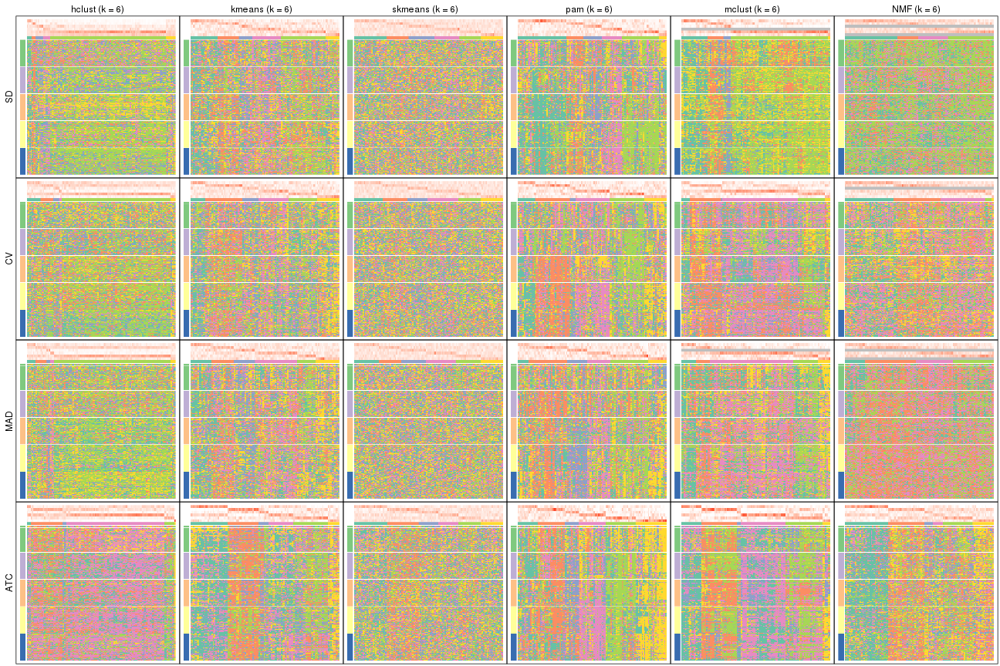
Signature heatmaps for all methods. (What is a signature heatmap?)
Note in following heatmaps, rows are scaled.
collect_plots(res_list, k = 2, fun = get_signatures, mc.cores = 4)
collect_plots(res_list, k = 3, fun = get_signatures, mc.cores = 4)
collect_plots(res_list, k = 4, fun = get_signatures, mc.cores = 4)
collect_plots(res_list, k = 5, fun = get_signatures, mc.cores = 4)
collect_plots(res_list, k = 6, fun = get_signatures, mc.cores = 4)
The statistics used for measuring the stability of consensus partitioning. (How are they defined?)
get_stats(res_list, k = 2)
#> k 1-PAC mean_silhouette concordance area_increased Rand Jaccard
#> SD:NMF 2 0.000000 0.0000 0.676 0.392 1.000 1.000
#> CV:NMF 2 0.000000 0.0000 0.657 0.413 1.000 1.000
#> MAD:NMF 2 0.000000 0.0000 0.662 0.400 1.000 1.000
#> ATC:NMF 2 0.201832 0.7273 0.834 0.460 0.532 0.532
#> SD:skmeans 2 0.000000 0.0432 0.533 0.503 0.496 0.496
#> CV:skmeans 2 0.000000 0.0413 0.523 0.503 0.496 0.496
#> MAD:skmeans 2 0.000000 0.0339 0.517 0.503 0.496 0.496
#> ATC:skmeans 2 0.000000 0.4957 0.672 0.503 0.496 0.496
#> SD:mclust 2 0.000980 0.0000 0.798 0.284 1.000 1.000
#> CV:mclust 2 0.000700 0.0000 0.826 0.254 1.000 1.000
#> MAD:mclust 2 0.000000 0.0000 0.848 0.232 1.000 1.000
#> ATC:mclust 2 0.056047 0.2839 0.669 0.338 0.658 0.658
#> SD:kmeans 2 0.000000 0.1786 0.586 0.489 0.541 0.541
#> CV:kmeans 2 0.000000 0.1786 0.581 0.493 0.501 0.501
#> MAD:kmeans 2 0.000000 0.1286 0.574 0.492 0.510 0.510
#> ATC:kmeans 2 0.517156 0.8039 0.898 0.500 0.496 0.496
#> SD:pam 2 0.000000 0.3546 0.636 0.486 0.496 0.496
#> CV:pam 2 0.000000 0.2833 0.631 0.495 0.496 0.496
#> MAD:pam 2 0.000000 0.1369 0.574 0.491 0.499 0.499
#> ATC:pam 2 0.000000 0.1797 0.618 0.490 0.516 0.516
#> SD:hclust 2 0.000000 0.4942 0.704 0.383 0.983 0.983
#> CV:hclust 2 0.000000 0.4767 0.697 0.391 0.983 0.983
#> MAD:hclust 2 0.000000 0.4389 0.689 0.400 0.967 0.967
#> ATC:hclust 2 0.000621 0.5873 0.729 0.351 0.967 0.967
get_stats(res_list, k = 3)
#> k 1-PAC mean_silhouette concordance area_increased Rand Jaccard
#> SD:NMF 3 0.000000 0.0517 0.482 0.464 0.805 0.805
#> CV:NMF 3 0.000000 0.1734 0.480 0.452 0.498 0.498
#> MAD:NMF 3 0.000000 0.1520 0.480 0.482 0.536 0.536
#> ATC:NMF 3 0.176060 0.3491 0.631 0.394 0.886 0.791
#> SD:skmeans 3 0.000000 0.0190 0.355 0.333 0.517 0.262
#> CV:skmeans 3 0.000000 0.0133 0.359 0.332 0.498 0.244
#> MAD:skmeans 3 0.000000 0.0226 0.357 0.333 0.555 0.299
#> ATC:skmeans 3 0.000000 0.1622 0.463 0.331 0.794 0.614
#> SD:mclust 3 0.000000 0.0000 0.673 0.561 1.000 1.000
#> CV:mclust 3 0.000000 0.0000 0.669 0.769 1.000 1.000
#> MAD:mclust 3 0.000000 0.0000 0.671 0.946 1.000 1.000
#> ATC:mclust 3 0.003260 0.5861 0.682 0.543 0.614 0.499
#> SD:kmeans 3 0.000621 0.1362 0.450 0.335 0.663 0.451
#> CV:kmeans 3 0.000155 0.1294 0.463 0.333 0.607 0.361
#> MAD:kmeans 3 0.000932 0.1166 0.458 0.337 0.593 0.347
#> ATC:kmeans 3 0.238628 0.5064 0.676 0.306 0.852 0.707
#> SD:pam 3 0.001087 0.2381 0.522 0.328 0.774 0.583
#> CV:pam 3 0.003260 0.2132 0.521 0.330 0.698 0.467
#> MAD:pam 3 0.000466 0.1402 0.456 0.333 0.527 0.280
#> ATC:pam 3 0.006055 0.2179 0.534 0.336 0.568 0.325
#> SD:hclust 3 0.000000 0.3688 0.582 0.389 0.951 0.950
#> CV:hclust 3 0.000000 0.3583 0.543 0.427 0.967 0.966
#> MAD:hclust 3 0.000155 0.4214 0.545 0.384 0.983 0.983
#> ATC:hclust 3 0.001708 0.2986 0.602 0.441 0.861 0.857
get_stats(res_list, k = 4)
#> k 1-PAC mean_silhouette concordance area_increased Rand Jaccard
#> SD:NMF 4 0.000466 0.0517 0.403 0.194 0.490 0.438
#> CV:NMF 4 0.002018 0.1115 0.354 0.158 0.640 0.398
#> MAD:NMF 4 0.000932 0.0986 0.368 0.169 0.583 0.388
#> ATC:NMF 4 0.182580 0.1969 0.516 0.131 0.794 0.574
#> SD:skmeans 4 0.000000 0.0110 0.275 0.125 0.594 0.175
#> CV:skmeans 4 0.000000 0.0163 0.283 0.125 0.592 0.172
#> MAD:skmeans 4 0.000000 0.0140 0.271 0.125 0.588 0.164
#> ATC:skmeans 4 0.001087 0.0813 0.351 0.125 0.839 0.609
#> SD:mclust 4 0.000776 0.2664 0.544 0.327 0.669 0.669
#> CV:mclust 4 0.000000 0.1122 0.442 0.388 0.622 0.622
#> MAD:mclust 4 0.001397 0.0878 0.453 0.410 0.595 0.595
#> ATC:mclust 4 0.126999 0.3223 0.605 0.241 0.774 0.611
#> SD:kmeans 4 0.011799 0.0911 0.363 0.128 0.789 0.487
#> CV:kmeans 4 0.014283 0.0833 0.367 0.129 0.714 0.360
#> MAD:kmeans 4 0.018320 0.0796 0.337 0.127 0.694 0.324
#> ATC:kmeans 4 0.261140 0.2566 0.538 0.126 0.903 0.756
#> SD:pam 4 0.016302 0.1818 0.431 0.127 0.870 0.666
#> CV:pam 4 0.036485 0.1869 0.460 0.121 0.849 0.593
#> MAD:pam 4 0.014594 0.1034 0.396 0.126 0.765 0.438
#> ATC:pam 4 0.057444 0.2076 0.472 0.127 0.797 0.477
#> SD:hclust 4 0.001242 0.3050 0.501 0.175 0.935 0.931
#> CV:hclust 4 0.000776 0.2153 0.455 0.172 0.889 0.883
#> MAD:hclust 4 0.000932 0.2431 0.474 0.166 0.921 0.916
#> ATC:hclust 4 0.011644 0.2283 0.519 0.209 0.908 0.891
get_stats(res_list, k = 5)
#> k 1-PAC mean_silhouette concordance area_increased Rand Jaccard
#> SD:NMF 5 0.009471 0.0933 0.315 0.0982 0.625 0.383
#> CV:NMF 5 0.013973 0.0499 0.333 0.0813 0.641 0.299
#> MAD:NMF 5 0.008694 0.0530 0.340 0.0819 0.631 0.331
#> ATC:NMF 5 0.201677 0.2156 0.445 0.0775 0.803 0.503
#> SD:skmeans 5 0.000311 0.0128 0.226 0.0664 0.666 0.146
#> CV:skmeans 5 0.000621 0.0159 0.230 0.0662 0.664 0.139
#> MAD:skmeans 5 0.000776 0.0128 0.232 0.0666 0.665 0.137
#> ATC:skmeans 5 0.015060 0.0349 0.281 0.0669 0.771 0.379
#> SD:mclust 5 0.012110 0.1869 0.487 0.1498 0.796 0.704
#> CV:mclust 5 0.012576 0.1868 0.421 0.1183 0.579 0.417
#> MAD:mclust 5 0.009936 0.0622 0.412 0.0968 0.716 0.604
#> ATC:mclust 5 0.221084 0.2239 0.532 0.1130 0.886 0.744
#> SD:kmeans 5 0.079025 0.0729 0.314 0.0735 0.706 0.224
#> CV:kmeans 5 0.084304 0.0628 0.299 0.0698 0.789 0.387
#> MAD:kmeans 5 0.085390 0.0759 0.336 0.0718 0.718 0.249
#> ATC:kmeans 5 0.307871 0.1814 0.477 0.0715 0.845 0.571
#> SD:pam 5 0.070175 0.1490 0.409 0.0687 0.889 0.656
#> CV:pam 5 0.102158 0.1582 0.429 0.0663 0.866 0.557
#> MAD:pam 5 0.056358 0.0882 0.371 0.0673 0.746 0.293
#> ATC:pam 5 0.160068 0.1804 0.463 0.0673 0.870 0.547
#> SD:hclust 5 0.003881 0.1678 0.439 0.1083 0.786 0.755
#> CV:hclust 5 0.004192 0.0883 0.372 0.1048 0.739 0.693
#> MAD:hclust 5 0.004502 0.1190 0.400 0.1023 0.836 0.812
#> ATC:hclust 5 0.019717 0.2079 0.480 0.1015 0.729 0.663
get_stats(res_list, k = 6)
#> k 1-PAC mean_silhouette concordance area_increased Rand Jaccard
#> SD:NMF 6 0.0379 0.0553 0.269 0.0536 0.678 0.310
#> CV:NMF 6 0.0460 0.0324 0.288 0.0556 0.660 0.290
#> MAD:NMF 6 0.0379 0.0645 0.292 0.0557 0.655 0.263
#> ATC:NMF 6 0.2537 0.1228 0.357 0.0499 0.846 0.517
#> SD:skmeans 6 0.0183 0.0169 0.214 0.0415 0.713 0.116
#> CV:skmeans 6 0.0179 0.0177 0.213 0.0418 0.717 0.120
#> MAD:skmeans 6 0.0186 0.0125 0.199 0.0418 0.732 0.143
#> ATC:skmeans 6 0.0682 0.0293 0.246 0.0412 0.764 0.234
#> SD:mclust 6 0.0432 0.1650 0.448 0.0728 0.945 0.892
#> CV:mclust 6 0.0461 0.0636 0.370 0.0744 0.626 0.326
#> MAD:mclust 6 0.0515 0.1234 0.399 0.0789 0.725 0.536
#> ATC:mclust 6 0.2799 0.2123 0.452 0.0681 0.804 0.484
#> SD:kmeans 6 0.1806 0.0639 0.298 0.0435 0.773 0.268
#> CV:kmeans 6 0.1897 0.0734 0.288 0.0444 0.758 0.228
#> MAD:kmeans 6 0.1885 0.0748 0.304 0.0427 0.821 0.356
#> ATC:kmeans 6 0.3611 0.1611 0.395 0.0430 0.830 0.437
#> SD:pam 6 0.1445 0.1291 0.387 0.0427 0.872 0.566
#> CV:pam 6 0.1924 0.1342 0.397 0.0404 0.885 0.556
#> MAD:pam 6 0.1455 0.0839 0.349 0.0438 0.804 0.330
#> ATC:pam 6 0.2597 0.1815 0.439 0.0424 0.930 0.683
#> SD:hclust 6 0.0172 0.1917 0.393 0.0562 0.885 0.834
#> CV:hclust 6 0.0143 0.0780 0.330 0.0540 0.776 0.673
#> MAD:hclust 6 0.0186 0.1127 0.349 0.0572 0.821 0.763
#> ATC:hclust 6 0.0390 0.1183 0.423 0.0760 0.895 0.817
Following heatmap plots the partition for each combination of methods and the lightness correspond to the silhouette scores for samples in each method. On top the consensus subgroup is inferred from all methods by taking the mean silhouette scores as weight.
collect_stats(res_list, k = 2)
collect_stats(res_list, k = 3)
collect_stats(res_list, k = 4)
collect_stats(res_list, k = 5)
collect_stats(res_list, k = 6)
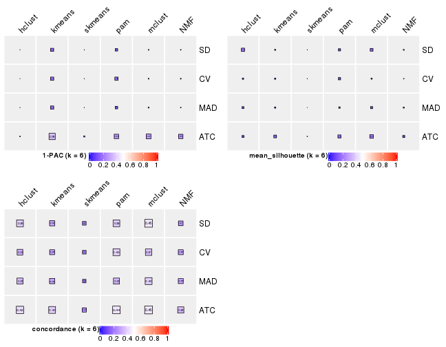
Collect partitions from all methods:
collect_classes(res_list, k = 2)
collect_classes(res_list, k = 3)
collect_classes(res_list, k = 4)
collect_classes(res_list, k = 5)
collect_classes(res_list, k = 6)
Overlap of top rows from different top-row methods:
top_rows_overlap(res_list, top_n = 1000, method = "euler")
top_rows_overlap(res_list, top_n = 2000, method = "euler")
top_rows_overlap(res_list, top_n = 3000, method = "euler")
top_rows_overlap(res_list, top_n = 4000, method = "euler")
top_rows_overlap(res_list, top_n = 5000, method = "euler")
Also visualize the correspondance of rankings between different top-row methods:
top_rows_overlap(res_list, top_n = 1000, method = "correspondance")
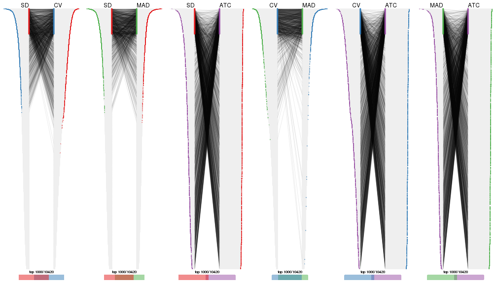
top_rows_overlap(res_list, top_n = 2000, method = "correspondance")
top_rows_overlap(res_list, top_n = 3000, method = "correspondance")
top_rows_overlap(res_list, top_n = 4000, method = "correspondance")
top_rows_overlap(res_list, top_n = 5000, method = "correspondance")
Heatmaps of the top rows:
top_rows_heatmap(res_list, top_n = 1000)
top_rows_heatmap(res_list, top_n = 2000)
top_rows_heatmap(res_list, top_n = 3000)

top_rows_heatmap(res_list, top_n = 4000)
top_rows_heatmap(res_list, top_n = 5000)
The object with results only for a single top-value method and a single partition method can be extracted as:
res = res_list["SD", "hclust"]
# you can also extract it by
# res = res_list["SD:hclust"]
A summary of res and all the functions that can be applied to it:
res
#> A 'ConsensusPartition' object with k = 2, 3, 4, 5, 6.
#> On a matrix with 10420 rows and 120 columns.
#> Top rows (1000, 2000, 3000, 4000, 5000) are extracted by 'SD' method.
#> Subgroups are detected by 'hclust' method.
#> Performed in total 1250 partitions by row resampling.
#> Best k for subgroups seems to be 4.
#>
#> Following methods can be applied to this 'ConsensusPartition' object:
#> [1] "cola_report" "collect_classes" "collect_plots"
#> [4] "collect_stats" "colnames" "compare_signatures"
#> [7] "consensus_heatmap" "dimension_reduction" "functional_enrichment"
#> [10] "get_anno_col" "get_anno" "get_classes"
#> [13] "get_consensus" "get_matrix" "get_membership"
#> [16] "get_param" "get_signatures" "get_stats"
#> [19] "is_best_k" "is_stable_k" "membership_heatmap"
#> [22] "ncol" "nrow" "plot_ecdf"
#> [25] "rownames" "select_partition_number" "show"
#> [28] "suggest_best_k" "test_to_known_factors"
collect_plots() function collects all the plots made from res for all k (number of partitions)
into one single page to provide an easy and fast comparison between different k.
collect_plots(res)
The plots are:
k and the heatmap of
predicted classes for each k.k.k.k.All the plots in panels can be made by individual functions and they are plotted later in this section.
select_partition_number() produces several plots showing different
statistics for choosing “optimized” k. There are following statistics:
k;k, the area increased is defined as \(A_k - A_{k-1}\).The detailed explanations of these statistics can be found in the cola vignette.
Generally speaking, lower PAC score, higher mean silhouette score or higher
concordance corresponds to better partition. Rand index and Jaccard index
measure how similar the current partition is compared to partition with k-1.
If they are too similar, we won't accept k is better than k-1.
select_partition_number(res)
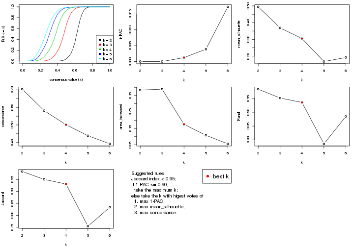
The numeric values for all these statistics can be obtained by get_stats().
get_stats(res)
#> k 1-PAC mean_silhouette concordance area_increased Rand Jaccard
#> 2 2 0.00000 0.494 0.704 0.3834 0.983 0.983
#> 3 3 0.00000 0.369 0.582 0.3886 0.951 0.950
#> 4 4 0.00124 0.305 0.501 0.1751 0.935 0.931
#> 5 5 0.00388 0.168 0.439 0.1083 0.786 0.755
#> 6 6 0.01723 0.192 0.393 0.0562 0.885 0.834
suggest_best_k() suggests the best \(k\) based on these statistics. The rules are as follows:
NA.suggest_best_k(res)
#> [1] 4
Following shows the table of the partitions (You need to click the show/hide
code output link to see it). The membership matrix (columns with name p*)
is inferred by
clue::cl_consensus()
function with the SE method. Basically the value in the membership matrix
represents the probability to belong to a certain group. The finall class
label for an item is determined with the group with highest probability it
belongs to.
In get_classes() function, the entropy is calculated from the membership
matrix and the silhouette score is calculated from the consensus matrix.
cbind(get_classes(res, k = 2), get_membership(res, k = 2))
#> class entropy silhouette p1 p2
#> SRR572528 2 0.855 0.5827 0.280 0.720
#> SRR572529 2 0.788 0.6260 0.236 0.764
#> SRR572530 2 0.881 0.5660 0.300 0.700
#> SRR572531 2 0.802 0.6118 0.244 0.756
#> SRR572532 2 0.900 0.5700 0.316 0.684
#> SRR572533 2 0.881 0.5542 0.300 0.700
#> SRR572534 2 0.821 0.6089 0.256 0.744
#> SRR572535 2 0.850 0.6126 0.276 0.724
#> SRR572536 2 0.795 0.6172 0.240 0.760
#> SRR572537 2 0.839 0.6035 0.268 0.732
#> SRR572538 2 0.850 0.6044 0.276 0.724
#> SRR572539 2 0.833 0.6016 0.264 0.736
#> SRR572540 2 0.821 0.6087 0.256 0.744
#> SRR572541 2 0.714 0.6188 0.196 0.804
#> SRR572542 2 0.839 0.5933 0.268 0.732
#> SRR572543 2 0.844 0.6085 0.272 0.728
#> SRR572544 2 0.808 0.6066 0.248 0.752
#> SRR572545 2 0.802 0.6239 0.244 0.756
#> SRR572546 2 0.745 0.6149 0.212 0.788
#> SRR572547 2 0.662 0.6110 0.172 0.828
#> SRR572548 2 0.760 0.6135 0.220 0.780
#> SRR572549 2 0.767 0.6204 0.224 0.776
#> SRR572550 2 0.753 0.6084 0.216 0.784
#> SRR572551 2 0.788 0.6149 0.236 0.764
#> SRR572552 2 0.730 0.6101 0.204 0.796
#> SRR572553 2 0.827 0.5940 0.260 0.740
#> SRR572554 2 0.795 0.6149 0.240 0.760
#> SRR572555 2 0.871 0.6023 0.292 0.708
#> SRR572556 2 0.697 0.6235 0.188 0.812
#> SRR572557 2 0.821 0.6165 0.256 0.744
#> SRR572558 2 0.904 0.5603 0.320 0.680
#> SRR572559 2 0.767 0.6210 0.224 0.776
#> SRR572560 2 0.850 0.5788 0.276 0.724
#> SRR572561 2 0.833 0.5986 0.264 0.736
#> SRR572562 2 0.689 0.6136 0.184 0.816
#> SRR572563 2 0.802 0.6034 0.244 0.756
#> SRR572564 2 0.808 0.6026 0.248 0.752
#> SRR572565 2 0.781 0.6132 0.232 0.768
#> SRR572566 2 0.781 0.6141 0.232 0.768
#> SRR572567 2 0.808 0.6165 0.248 0.752
#> SRR572568 2 0.795 0.6069 0.240 0.760
#> SRR572569 2 0.689 0.6154 0.184 0.816
#> SRR572570 2 0.814 0.6082 0.252 0.748
#> SRR572571 2 0.814 0.5936 0.252 0.748
#> SRR572572 2 0.802 0.6169 0.244 0.756
#> SRR572573 2 0.775 0.6046 0.228 0.772
#> SRR572574 2 0.939 0.3981 0.356 0.644
#> SRR572575 2 0.861 0.6180 0.284 0.716
#> SRR572576 2 0.861 0.5821 0.284 0.716
#> SRR572577 2 0.895 0.5385 0.312 0.688
#> SRR572578 2 0.844 0.5981 0.272 0.728
#> SRR572579 2 0.891 0.5157 0.308 0.692
#> SRR572580 2 0.861 0.5531 0.284 0.716
#> SRR572581 2 0.808 0.6132 0.248 0.752
#> SRR572582 2 0.876 0.5730 0.296 0.704
#> SRR572583 2 0.861 0.6035 0.284 0.716
#> SRR572584 2 0.855 0.5951 0.280 0.720
#> SRR572585 2 0.904 0.5177 0.320 0.680
#> SRR572586 2 0.866 0.4765 0.288 0.712
#> SRR572587 2 0.929 0.4747 0.344 0.656
#> SRR572588 2 0.802 0.6148 0.244 0.756
#> SRR572589 2 0.909 0.5396 0.324 0.676
#> SRR572590 2 0.939 0.3820 0.356 0.644
#> SRR572591 2 0.895 0.5581 0.312 0.688
#> SRR572592 2 0.921 0.4870 0.336 0.664
#> SRR572593 2 0.795 0.6067 0.240 0.760
#> SRR572594 2 1.000 -0.2627 0.496 0.504
#> SRR572595 2 0.949 0.3791 0.368 0.632
#> SRR572596 2 0.936 0.3311 0.352 0.648
#> SRR572597 2 0.999 -0.2987 0.480 0.520
#> SRR572598 2 0.961 0.3949 0.384 0.616
#> SRR572599 1 0.995 0.0000 0.540 0.460
#> SRR572600 2 0.900 0.5436 0.316 0.684
#> SRR572601 2 0.917 0.4429 0.332 0.668
#> SRR572602 2 0.886 0.5353 0.304 0.696
#> SRR572603 2 0.876 0.5960 0.296 0.704
#> SRR572604 2 0.844 0.5968 0.272 0.728
#> SRR572605 2 0.946 0.3938 0.364 0.636
#> SRR572606 2 0.949 0.4408 0.368 0.632
#> SRR572607 2 0.983 -0.1299 0.424 0.576
#> SRR572608 2 0.966 -0.1162 0.392 0.608
#> SRR572609 2 0.992 -0.1047 0.448 0.552
#> SRR572610 2 0.993 0.0419 0.452 0.548
#> SRR572611 2 0.921 0.4947 0.336 0.664
#> SRR572612 2 0.943 0.3239 0.360 0.640
#> SRR572613 2 0.963 0.3164 0.388 0.612
#> SRR572614 2 0.978 -0.0646 0.412 0.588
#> SRR572615 2 0.814 0.6094 0.252 0.748
#> SRR572616 2 0.936 0.4075 0.352 0.648
#> SRR572617 2 0.891 0.5237 0.308 0.692
#> SRR572618 2 0.936 0.3742 0.352 0.648
#> SRR572619 2 0.900 0.4145 0.316 0.684
#> SRR572620 2 0.900 0.5125 0.316 0.684
#> SRR572621 2 0.921 0.4941 0.336 0.664
#> SRR572622 2 0.999 -0.4978 0.480 0.520
#> SRR572623 2 0.958 0.0984 0.380 0.620
#> SRR572624 2 0.971 0.2496 0.400 0.600
#> SRR572625 2 0.936 0.4291 0.352 0.648
#> SRR572626 2 0.795 0.6186 0.240 0.760
#> SRR572627 2 0.943 0.4452 0.360 0.640
#> SRR572628 2 0.895 0.4907 0.312 0.688
#> SRR572629 2 0.827 0.5562 0.260 0.740
#> SRR572630 2 0.881 0.5872 0.300 0.700
#> SRR572631 2 0.839 0.5968 0.268 0.732
#> SRR572632 2 0.913 0.3989 0.328 0.672
#> SRR572633 2 0.932 0.4841 0.348 0.652
#> SRR572634 2 0.895 0.5636 0.312 0.688
#> SRR572635 2 0.895 0.5394 0.312 0.688
#> SRR572636 2 0.827 0.5926 0.260 0.740
#> SRR572637 2 0.886 0.5500 0.304 0.696
#> SRR572638 2 0.827 0.6018 0.260 0.740
#> SRR572639 2 0.781 0.6108 0.232 0.768
#> SRR572640 2 0.895 0.5551 0.312 0.688
#> SRR572641 2 0.925 0.4966 0.340 0.660
#> SRR572642 2 0.866 0.5662 0.288 0.712
#> SRR572643 2 0.714 0.6160 0.196 0.804
#> SRR572644 2 0.895 0.5077 0.312 0.688
#> SRR572645 2 0.866 0.5826 0.288 0.712
#> SRR572646 2 0.866 0.6010 0.288 0.712
#> SRR572647 2 0.855 0.5938 0.280 0.720
cbind(get_classes(res, k = 3), get_membership(res, k = 3))
#> class entropy silhouette p1 p2 p3
#> SRR572528 2 0.813 0.46449 0.244 0.632 0.124
#> SRR572529 2 0.801 0.51141 0.276 0.624 0.100
#> SRR572530 2 0.852 0.43751 0.328 0.560 0.112
#> SRR572531 2 0.711 0.51901 0.260 0.680 0.060
#> SRR572532 2 0.831 0.37614 0.368 0.544 0.088
#> SRR572533 2 0.820 0.41765 0.356 0.560 0.084
#> SRR572534 2 0.786 0.51050 0.284 0.628 0.088
#> SRR572535 2 0.745 0.49756 0.280 0.652 0.068
#> SRR572536 2 0.796 0.49322 0.288 0.620 0.092
#> SRR572537 2 0.770 0.51188 0.272 0.644 0.084
#> SRR572538 2 0.765 0.49933 0.276 0.644 0.080
#> SRR572539 2 0.741 0.51375 0.256 0.668 0.076
#> SRR572540 2 0.748 0.50437 0.264 0.660 0.076
#> SRR572541 2 0.723 0.53198 0.228 0.692 0.080
#> SRR572542 2 0.857 0.40793 0.340 0.548 0.112
#> SRR572543 2 0.767 0.49331 0.260 0.652 0.088
#> SRR572544 2 0.751 0.48707 0.268 0.656 0.076
#> SRR572545 2 0.668 0.53043 0.244 0.708 0.048
#> SRR572546 2 0.668 0.52697 0.208 0.728 0.064
#> SRR572547 2 0.642 0.52522 0.228 0.728 0.044
#> SRR572548 2 0.777 0.49615 0.292 0.628 0.080
#> SRR572549 2 0.698 0.52608 0.220 0.708 0.072
#> SRR572550 2 0.701 0.51789 0.240 0.696 0.064
#> SRR572551 2 0.693 0.51418 0.240 0.700 0.060
#> SRR572552 2 0.680 0.52043 0.204 0.724 0.072
#> SRR572553 2 0.767 0.51575 0.260 0.652 0.088
#> SRR572554 2 0.703 0.51732 0.296 0.660 0.044
#> SRR572555 2 0.716 0.50647 0.256 0.680 0.064
#> SRR572556 2 0.753 0.51051 0.244 0.668 0.088
#> SRR572557 2 0.731 0.51762 0.284 0.656 0.060
#> SRR572558 2 0.814 0.49719 0.268 0.620 0.112
#> SRR572559 2 0.788 0.48584 0.268 0.636 0.096
#> SRR572560 2 0.804 0.49669 0.280 0.620 0.100
#> SRR572561 2 0.805 0.48217 0.256 0.632 0.112
#> SRR572562 2 0.703 0.51779 0.196 0.716 0.088
#> SRR572563 2 0.835 0.46312 0.264 0.608 0.128
#> SRR572564 2 0.861 0.42260 0.336 0.548 0.116
#> SRR572565 2 0.730 0.52086 0.228 0.688 0.084
#> SRR572566 2 0.738 0.50476 0.272 0.660 0.068
#> SRR572567 2 0.772 0.50649 0.308 0.620 0.072
#> SRR572568 2 0.719 0.51732 0.224 0.696 0.080
#> SRR572569 2 0.668 0.52629 0.208 0.728 0.064
#> SRR572570 2 0.774 0.50872 0.288 0.632 0.080
#> SRR572571 2 0.716 0.50560 0.316 0.640 0.044
#> SRR572572 2 0.792 0.46112 0.264 0.636 0.100
#> SRR572573 2 0.718 0.51328 0.240 0.688 0.072
#> SRR572574 2 0.911 0.32138 0.336 0.508 0.156
#> SRR572575 2 0.827 0.45597 0.328 0.576 0.096
#> SRR572576 2 0.805 0.44463 0.292 0.612 0.096
#> SRR572577 2 0.847 0.46528 0.308 0.576 0.116
#> SRR572578 2 0.809 0.46057 0.320 0.592 0.088
#> SRR572579 2 0.868 0.35462 0.316 0.556 0.128
#> SRR572580 2 0.815 0.46060 0.296 0.604 0.100
#> SRR572581 2 0.778 0.49464 0.304 0.620 0.076
#> SRR572582 2 0.829 0.47607 0.280 0.604 0.116
#> SRR572583 2 0.811 0.50328 0.300 0.604 0.096
#> SRR572584 2 0.846 0.40732 0.328 0.564 0.108
#> SRR572585 2 0.892 0.33264 0.348 0.516 0.136
#> SRR572586 2 0.862 0.40453 0.224 0.600 0.176
#> SRR572587 2 0.915 0.34316 0.308 0.520 0.172
#> SRR572588 2 0.795 0.51696 0.252 0.640 0.108
#> SRR572589 2 0.864 0.32245 0.400 0.496 0.104
#> SRR572590 2 0.897 0.28316 0.324 0.528 0.148
#> SRR572591 2 0.859 0.42633 0.332 0.552 0.116
#> SRR572592 2 0.903 0.30902 0.292 0.540 0.168
#> SRR572593 2 0.723 0.49878 0.264 0.672 0.064
#> SRR572594 2 0.996 -0.36326 0.352 0.356 0.292
#> SRR572595 2 0.922 0.03433 0.408 0.440 0.152
#> SRR572596 2 0.915 0.33495 0.316 0.516 0.168
#> SRR572597 1 0.990 0.07330 0.384 0.348 0.268
#> SRR572598 2 0.933 0.04302 0.356 0.472 0.172
#> SRR572599 3 0.990 0.00000 0.280 0.320 0.400
#> SRR572600 2 0.906 0.30582 0.324 0.520 0.156
#> SRR572601 2 0.878 0.40680 0.280 0.568 0.152
#> SRR572602 2 0.900 0.42433 0.280 0.548 0.172
#> SRR572603 2 0.878 0.43409 0.296 0.560 0.144
#> SRR572604 2 0.699 0.51110 0.256 0.688 0.056
#> SRR572605 2 0.918 0.17383 0.360 0.484 0.156
#> SRR572606 2 0.904 0.07116 0.392 0.472 0.136
#> SRR572607 2 0.988 -0.27515 0.280 0.408 0.312
#> SRR572608 2 0.986 -0.18583 0.328 0.408 0.264
#> SRR572609 2 0.999 -0.52936 0.324 0.360 0.316
#> SRR572610 1 0.990 0.33119 0.384 0.348 0.268
#> SRR572611 2 0.885 0.29921 0.356 0.516 0.128
#> SRR572612 2 0.896 0.38445 0.312 0.536 0.152
#> SRR572613 1 0.958 0.29040 0.432 0.368 0.200
#> SRR572614 2 0.975 0.00437 0.328 0.432 0.240
#> SRR572615 2 0.726 0.51893 0.248 0.680 0.072
#> SRR572616 2 0.962 0.04176 0.348 0.440 0.212
#> SRR572617 2 0.811 0.43728 0.312 0.596 0.092
#> SRR572618 2 0.931 0.12572 0.348 0.480 0.172
#> SRR572619 2 0.939 0.23344 0.312 0.492 0.196
#> SRR572620 2 0.860 0.43904 0.284 0.580 0.136
#> SRR572621 2 0.913 0.12147 0.356 0.492 0.152
#> SRR572622 2 0.998 -0.49690 0.300 0.352 0.348
#> SRR572623 2 0.922 0.21580 0.284 0.524 0.192
#> SRR572624 2 0.950 -0.16408 0.344 0.460 0.196
#> SRR572625 2 0.956 0.15768 0.324 0.464 0.212
#> SRR572626 2 0.718 0.52304 0.240 0.688 0.072
#> SRR572627 2 0.957 -0.02105 0.392 0.412 0.196
#> SRR572628 2 0.935 0.26497 0.296 0.504 0.200
#> SRR572629 2 0.855 0.29114 0.276 0.588 0.136
#> SRR572630 2 0.855 0.41714 0.348 0.544 0.108
#> SRR572631 2 0.809 0.47400 0.288 0.612 0.100
#> SRR572632 2 0.891 0.25334 0.344 0.520 0.136
#> SRR572633 2 0.876 0.38324 0.312 0.552 0.136
#> SRR572634 2 0.855 0.39218 0.312 0.568 0.120
#> SRR572635 2 0.870 0.41805 0.320 0.552 0.128
#> SRR572636 2 0.801 0.50124 0.276 0.624 0.100
#> SRR572637 2 0.849 0.41858 0.276 0.592 0.132
#> SRR572638 2 0.794 0.45884 0.276 0.628 0.096
#> SRR572639 2 0.742 0.51182 0.276 0.656 0.068
#> SRR572640 2 0.875 0.42545 0.300 0.560 0.140
#> SRR572641 2 0.892 0.32038 0.336 0.524 0.140
#> SRR572642 2 0.836 0.37346 0.364 0.544 0.092
#> SRR572643 2 0.725 0.51926 0.196 0.704 0.100
#> SRR572644 2 0.851 0.43664 0.340 0.552 0.108
#> SRR572645 2 0.870 0.41344 0.332 0.544 0.124
#> SRR572646 2 0.808 0.47121 0.268 0.624 0.108
#> SRR572647 2 0.790 0.49346 0.312 0.608 0.080
cbind(get_classes(res, k = 4), get_membership(res, k = 4))
#> class entropy silhouette p1 p2 p3 p4
#> SRR572528 1 0.787 0.45572 0.564 0.052 0.132 0.252
#> SRR572529 1 0.788 0.44010 0.544 0.044 0.132 0.280
#> SRR572530 1 0.807 0.42885 0.544 0.080 0.100 0.276
#> SRR572531 1 0.683 0.49370 0.604 0.008 0.116 0.272
#> SRR572532 1 0.802 0.32822 0.532 0.064 0.108 0.296
#> SRR572533 1 0.850 0.34814 0.460 0.068 0.136 0.336
#> SRR572534 1 0.767 0.48645 0.580 0.052 0.112 0.256
#> SRR572535 1 0.747 0.48175 0.580 0.040 0.104 0.276
#> SRR572536 1 0.786 0.42254 0.544 0.048 0.120 0.288
#> SRR572537 1 0.700 0.48114 0.652 0.044 0.100 0.204
#> SRR572538 1 0.748 0.46687 0.592 0.044 0.108 0.256
#> SRR572539 1 0.716 0.47974 0.608 0.032 0.100 0.260
#> SRR572540 1 0.684 0.48191 0.604 0.016 0.092 0.288
#> SRR572541 1 0.683 0.48786 0.620 0.008 0.136 0.236
#> SRR572542 1 0.849 0.37299 0.456 0.052 0.168 0.324
#> SRR572543 1 0.772 0.45480 0.560 0.032 0.152 0.256
#> SRR572544 1 0.713 0.47792 0.592 0.032 0.084 0.292
#> SRR572545 1 0.727 0.48815 0.620 0.040 0.112 0.228
#> SRR572546 1 0.736 0.48574 0.628 0.060 0.100 0.212
#> SRR572547 1 0.618 0.49168 0.652 0.012 0.060 0.276
#> SRR572548 1 0.760 0.45156 0.552 0.024 0.144 0.280
#> SRR572549 1 0.688 0.48339 0.632 0.024 0.100 0.244
#> SRR572550 1 0.651 0.48633 0.660 0.024 0.076 0.240
#> SRR572551 1 0.677 0.48457 0.644 0.036 0.072 0.248
#> SRR572552 1 0.570 0.49239 0.704 0.028 0.028 0.240
#> SRR572553 1 0.692 0.48062 0.664 0.040 0.116 0.180
#> SRR572554 1 0.629 0.49259 0.648 0.016 0.060 0.276
#> SRR572555 1 0.739 0.46594 0.600 0.052 0.088 0.260
#> SRR572556 1 0.759 0.47436 0.572 0.044 0.108 0.276
#> SRR572557 1 0.688 0.49456 0.608 0.016 0.100 0.276
#> SRR572558 1 0.752 0.46481 0.568 0.044 0.096 0.292
#> SRR572559 1 0.832 0.40207 0.532 0.064 0.172 0.232
#> SRR572560 1 0.829 0.43030 0.524 0.064 0.148 0.264
#> SRR572561 1 0.812 0.43581 0.528 0.052 0.144 0.276
#> SRR572562 1 0.672 0.48026 0.644 0.048 0.052 0.256
#> SRR572563 1 0.801 0.42139 0.532 0.048 0.136 0.284
#> SRR572564 1 0.840 0.32400 0.484 0.048 0.180 0.288
#> SRR572565 1 0.714 0.47369 0.596 0.020 0.116 0.268
#> SRR572566 1 0.722 0.48094 0.616 0.036 0.108 0.240
#> SRR572567 1 0.710 0.47667 0.600 0.012 0.148 0.240
#> SRR572568 1 0.730 0.47176 0.616 0.044 0.104 0.236
#> SRR572569 1 0.658 0.48927 0.636 0.028 0.060 0.276
#> SRR572570 1 0.744 0.46870 0.560 0.052 0.072 0.316
#> SRR572571 1 0.754 0.47985 0.560 0.036 0.108 0.296
#> SRR572572 1 0.817 0.41048 0.488 0.064 0.108 0.340
#> SRR572573 1 0.706 0.46495 0.620 0.032 0.096 0.252
#> SRR572574 1 0.867 0.29399 0.452 0.068 0.164 0.316
#> SRR572575 1 0.799 0.41798 0.504 0.048 0.116 0.332
#> SRR572576 1 0.816 0.40090 0.508 0.068 0.108 0.316
#> SRR572577 1 0.827 0.40810 0.520 0.056 0.160 0.264
#> SRR572578 1 0.829 0.38607 0.500 0.060 0.136 0.304
#> SRR572579 1 0.843 0.36091 0.532 0.096 0.128 0.244
#> SRR572580 1 0.859 0.35195 0.504 0.072 0.196 0.228
#> SRR572581 1 0.752 0.43875 0.544 0.020 0.136 0.300
#> SRR572582 1 0.794 0.43334 0.556 0.072 0.100 0.272
#> SRR572583 1 0.819 0.39834 0.524 0.048 0.172 0.256
#> SRR572584 1 0.852 0.33781 0.476 0.064 0.156 0.304
#> SRR572585 1 0.899 0.22750 0.424 0.112 0.136 0.328
#> SRR572586 1 0.891 0.22950 0.464 0.084 0.208 0.244
#> SRR572587 1 0.878 0.29176 0.504 0.100 0.196 0.200
#> SRR572588 1 0.758 0.44810 0.576 0.032 0.140 0.252
#> SRR572589 1 0.891 0.18401 0.436 0.084 0.172 0.308
#> SRR572590 1 0.924 0.00697 0.380 0.084 0.252 0.284
#> SRR572591 1 0.875 0.35946 0.468 0.084 0.156 0.292
#> SRR572592 1 0.906 0.14227 0.448 0.116 0.156 0.280
#> SRR572593 1 0.671 0.48861 0.628 0.028 0.068 0.276
#> SRR572594 2 0.980 -0.14468 0.264 0.320 0.160 0.256
#> SRR572595 1 0.923 -0.16999 0.340 0.076 0.268 0.316
#> SRR572596 1 0.880 0.16819 0.464 0.072 0.260 0.204
#> SRR572597 2 0.992 0.06955 0.216 0.308 0.220 0.256
#> SRR572598 1 0.965 -0.15499 0.328 0.160 0.188 0.324
#> SRR572599 2 0.993 -0.12800 0.252 0.300 0.244 0.204
#> SRR572600 1 0.913 0.18024 0.424 0.096 0.196 0.284
#> SRR572601 1 0.869 0.28362 0.488 0.072 0.208 0.232
#> SRR572602 1 0.843 0.39870 0.524 0.072 0.168 0.236
#> SRR572603 1 0.837 0.38309 0.488 0.056 0.152 0.304
#> SRR572604 1 0.717 0.46953 0.588 0.036 0.080 0.296
#> SRR572605 1 0.929 0.00507 0.368 0.092 0.228 0.312
#> SRR572606 1 0.917 0.08003 0.400 0.136 0.132 0.332
#> SRR572607 1 0.992 -0.23885 0.296 0.236 0.196 0.272
#> SRR572608 3 0.928 -0.00727 0.316 0.116 0.392 0.176
#> SRR572609 2 0.975 0.16065 0.196 0.368 0.212 0.224
#> SRR572610 2 0.953 0.10501 0.188 0.396 0.156 0.260
#> SRR572611 1 0.866 0.19612 0.452 0.052 0.216 0.280
#> SRR572612 1 0.867 0.20109 0.464 0.056 0.232 0.248
#> SRR572613 4 0.985 0.00000 0.264 0.172 0.256 0.308
#> SRR572614 1 0.947 -0.24933 0.360 0.108 0.276 0.256
#> SRR572615 1 0.742 0.48733 0.600 0.052 0.092 0.256
#> SRR572616 1 0.964 -0.26983 0.328 0.128 0.256 0.288
#> SRR572617 1 0.818 0.35841 0.508 0.052 0.140 0.300
#> SRR572618 1 0.954 -0.09675 0.352 0.116 0.264 0.268
#> SRR572619 1 0.952 -0.08816 0.368 0.120 0.252 0.260
#> SRR572620 1 0.858 0.36652 0.504 0.072 0.188 0.236
#> SRR572621 1 0.910 0.09184 0.396 0.112 0.148 0.344
#> SRR572622 3 0.999 -0.00918 0.256 0.252 0.260 0.232
#> SRR572623 1 0.939 -0.08550 0.396 0.112 0.252 0.240
#> SRR572624 1 0.978 -0.21603 0.340 0.180 0.208 0.272
#> SRR572625 1 0.941 -0.00985 0.392 0.116 0.220 0.272
#> SRR572626 1 0.681 0.47555 0.628 0.040 0.060 0.272
#> SRR572627 1 0.954 -0.25402 0.356 0.132 0.204 0.308
#> SRR572628 1 0.924 0.04776 0.404 0.100 0.208 0.288
#> SRR572629 1 0.922 0.16332 0.464 0.164 0.176 0.196
#> SRR572630 1 0.883 0.25295 0.460 0.072 0.212 0.256
#> SRR572631 1 0.769 0.44269 0.536 0.044 0.100 0.320
#> SRR572632 1 0.920 0.10998 0.420 0.100 0.208 0.272
#> SRR572633 1 0.823 0.39015 0.524 0.056 0.156 0.264
#> SRR572634 1 0.842 0.30294 0.512 0.060 0.184 0.244
#> SRR572635 1 0.852 0.33181 0.456 0.080 0.120 0.344
#> SRR572636 1 0.748 0.47878 0.600 0.044 0.116 0.240
#> SRR572637 1 0.838 0.36268 0.516 0.056 0.196 0.232
#> SRR572638 1 0.796 0.40143 0.520 0.032 0.164 0.284
#> SRR572639 1 0.620 0.48775 0.652 0.008 0.072 0.268
#> SRR572640 1 0.827 0.36641 0.512 0.044 0.204 0.240
#> SRR572641 1 0.889 0.18026 0.436 0.084 0.168 0.312
#> SRR572642 1 0.864 0.26685 0.432 0.060 0.168 0.340
#> SRR572643 1 0.681 0.49043 0.664 0.040 0.092 0.204
#> SRR572644 1 0.858 0.32550 0.460 0.056 0.180 0.304
#> SRR572645 1 0.852 0.37208 0.516 0.088 0.144 0.252
#> SRR572646 1 0.825 0.42354 0.520 0.068 0.128 0.284
#> SRR572647 1 0.829 0.40588 0.496 0.048 0.164 0.292
cbind(get_classes(res, k = 5), get_membership(res, k = 5))
#> class entropy silhouette p1 p2 p3 p4 p5
#> SRR572528 1 0.786 0.28005 0.532 0.156 0.048 0.204 0.060
#> SRR572529 1 0.783 0.22549 0.456 0.104 0.052 0.340 0.048
#> SRR572530 1 0.806 0.28195 0.512 0.136 0.080 0.224 0.048
#> SRR572531 1 0.711 0.33199 0.572 0.108 0.036 0.248 0.036
#> SRR572532 1 0.849 0.17029 0.460 0.180 0.064 0.224 0.072
#> SRR572533 1 0.863 0.04585 0.388 0.136 0.084 0.328 0.064
#> SRR572534 1 0.794 0.28874 0.512 0.116 0.064 0.252 0.056
#> SRR572535 1 0.776 0.30153 0.508 0.140 0.032 0.260 0.060
#> SRR572536 1 0.829 0.19605 0.444 0.144 0.048 0.292 0.072
#> SRR572537 1 0.757 0.30205 0.568 0.116 0.036 0.196 0.084
#> SRR572538 1 0.743 0.30950 0.544 0.100 0.076 0.256 0.024
#> SRR572539 1 0.738 0.31145 0.528 0.092 0.076 0.284 0.020
#> SRR572540 1 0.674 0.32869 0.624 0.100 0.024 0.204 0.048
#> SRR572541 1 0.706 0.33698 0.588 0.116 0.040 0.224 0.032
#> SRR572542 1 0.827 0.19521 0.436 0.176 0.028 0.276 0.084
#> SRR572543 1 0.797 0.28630 0.508 0.128 0.056 0.248 0.060
#> SRR572544 1 0.707 0.32036 0.572 0.076 0.032 0.264 0.056
#> SRR572545 1 0.710 0.33096 0.560 0.076 0.036 0.280 0.048
#> SRR572546 1 0.729 0.31908 0.560 0.048 0.072 0.264 0.056
#> SRR572547 1 0.678 0.33480 0.588 0.100 0.032 0.256 0.024
#> SRR572548 1 0.770 0.26925 0.476 0.132 0.032 0.312 0.048
#> SRR572549 1 0.688 0.31775 0.580 0.084 0.052 0.264 0.020
#> SRR572550 1 0.600 0.34980 0.668 0.112 0.028 0.184 0.008
#> SRR572551 1 0.693 0.33042 0.620 0.076 0.048 0.204 0.052
#> SRR572552 1 0.568 0.35557 0.712 0.072 0.036 0.164 0.016
#> SRR572553 1 0.754 0.30934 0.572 0.104 0.036 0.196 0.092
#> SRR572554 1 0.658 0.34110 0.640 0.092 0.024 0.196 0.048
#> SRR572555 1 0.748 0.29052 0.536 0.160 0.020 0.228 0.056
#> SRR572556 1 0.730 0.31366 0.552 0.140 0.036 0.240 0.032
#> SRR572557 1 0.723 0.33375 0.588 0.148 0.040 0.184 0.040
#> SRR572558 1 0.735 0.29422 0.520 0.116 0.016 0.288 0.060
#> SRR572559 1 0.844 0.21597 0.436 0.148 0.052 0.284 0.080
#> SRR572560 1 0.843 0.24433 0.472 0.136 0.092 0.240 0.060
#> SRR572561 1 0.841 0.23586 0.472 0.140 0.056 0.240 0.092
#> SRR572562 1 0.689 0.34608 0.612 0.092 0.044 0.216 0.036
#> SRR572563 1 0.798 0.22829 0.468 0.240 0.040 0.212 0.040
#> SRR572564 1 0.855 0.15791 0.408 0.260 0.080 0.212 0.040
#> SRR572565 1 0.743 0.30327 0.508 0.080 0.084 0.308 0.020
#> SRR572566 1 0.751 0.30704 0.568 0.120 0.048 0.208 0.056
#> SRR572567 1 0.760 0.25502 0.496 0.108 0.056 0.308 0.032
#> SRR572568 1 0.707 0.31340 0.576 0.160 0.032 0.208 0.024
#> SRR572569 1 0.683 0.34600 0.608 0.072 0.040 0.236 0.044
#> SRR572570 1 0.762 0.25321 0.496 0.116 0.044 0.304 0.040
#> SRR572571 1 0.738 0.30583 0.540 0.088 0.032 0.276 0.064
#> SRR572572 1 0.809 0.17034 0.448 0.108 0.064 0.324 0.056
#> SRR572573 1 0.725 0.30738 0.568 0.068 0.076 0.252 0.036
#> SRR572574 1 0.890 0.10248 0.352 0.168 0.096 0.320 0.064
#> SRR572575 1 0.804 0.16759 0.432 0.132 0.040 0.336 0.060
#> SRR572576 1 0.841 0.19266 0.432 0.144 0.060 0.296 0.068
#> SRR572577 1 0.864 0.17309 0.396 0.228 0.080 0.252 0.044
#> SRR572578 1 0.841 0.19092 0.452 0.112 0.076 0.284 0.076
#> SRR572579 1 0.922 0.09509 0.380 0.172 0.096 0.240 0.112
#> SRR572580 1 0.895 0.12935 0.372 0.176 0.068 0.288 0.096
#> SRR572581 1 0.764 0.24361 0.500 0.176 0.040 0.256 0.028
#> SRR572582 1 0.814 0.24332 0.472 0.192 0.044 0.236 0.056
#> SRR572583 1 0.831 0.20201 0.464 0.164 0.052 0.252 0.068
#> SRR572584 1 0.885 0.02382 0.344 0.164 0.060 0.336 0.096
#> SRR572585 1 0.903 -0.03376 0.360 0.112 0.076 0.304 0.148
#> SRR572586 1 0.851 -0.06100 0.372 0.104 0.188 0.312 0.024
#> SRR572587 1 0.933 0.06408 0.380 0.160 0.108 0.220 0.132
#> SRR572588 1 0.785 0.21115 0.480 0.100 0.072 0.308 0.040
#> SRR572589 4 0.896 0.02917 0.304 0.184 0.064 0.352 0.096
#> SRR572590 4 0.911 0.13124 0.268 0.144 0.200 0.340 0.048
#> SRR572591 1 0.855 0.09550 0.416 0.208 0.084 0.252 0.040
#> SRR572592 2 0.897 0.13599 0.316 0.324 0.080 0.212 0.068
#> SRR572593 1 0.645 0.34011 0.640 0.048 0.032 0.224 0.056
#> SRR572594 2 0.983 0.00123 0.148 0.284 0.216 0.176 0.176
#> SRR572595 4 0.960 0.00891 0.184 0.208 0.192 0.320 0.096
#> SRR572596 1 0.931 -0.05989 0.332 0.236 0.128 0.232 0.072
#> SRR572597 5 0.920 0.15449 0.180 0.060 0.184 0.204 0.372
#> SRR572598 4 0.955 0.13560 0.248 0.136 0.144 0.332 0.140
#> SRR572599 3 0.842 0.14611 0.156 0.140 0.500 0.148 0.056
#> SRR572600 1 0.939 -0.07949 0.336 0.152 0.104 0.276 0.132
#> SRR572601 1 0.928 -0.06063 0.356 0.168 0.116 0.264 0.096
#> SRR572602 1 0.883 0.12921 0.372 0.260 0.060 0.232 0.076
#> SRR572603 4 0.857 -0.11197 0.352 0.160 0.088 0.356 0.044
#> SRR572604 1 0.733 0.30554 0.532 0.056 0.048 0.300 0.064
#> SRR572605 4 0.948 0.08879 0.256 0.204 0.172 0.296 0.072
#> SRR572606 1 0.897 -0.04872 0.340 0.168 0.028 0.248 0.216
#> SRR572607 1 0.984 -0.31698 0.248 0.200 0.236 0.192 0.124
#> SRR572608 3 0.967 -0.00562 0.212 0.248 0.256 0.196 0.088
#> SRR572609 5 0.880 0.33955 0.156 0.064 0.152 0.176 0.452
#> SRR572610 5 0.701 0.40218 0.160 0.064 0.008 0.180 0.588
#> SRR572611 1 0.904 -0.05535 0.344 0.220 0.076 0.280 0.080
#> SRR572612 1 0.886 -0.08810 0.336 0.200 0.176 0.268 0.020
#> SRR572613 2 0.959 0.09461 0.200 0.288 0.080 0.208 0.224
#> SRR572614 2 0.945 0.02350 0.252 0.308 0.168 0.200 0.072
#> SRR572615 1 0.735 0.32505 0.552 0.136 0.052 0.236 0.024
#> SRR572616 2 0.900 0.15303 0.204 0.380 0.136 0.232 0.048
#> SRR572617 1 0.865 0.06570 0.404 0.156 0.056 0.296 0.088
#> SRR572618 4 0.975 0.03434 0.232 0.196 0.180 0.280 0.112
#> SRR572619 1 0.956 -0.20110 0.264 0.264 0.136 0.244 0.092
#> SRR572620 1 0.872 0.08984 0.396 0.156 0.096 0.296 0.056
#> SRR572621 1 0.921 -0.04560 0.348 0.176 0.056 0.252 0.168
#> SRR572622 3 0.899 0.16041 0.196 0.088 0.416 0.204 0.096
#> SRR572623 1 0.955 -0.17252 0.288 0.156 0.200 0.268 0.088
#> SRR572624 4 0.949 0.05590 0.256 0.072 0.192 0.296 0.184
#> SRR572625 2 0.922 0.14799 0.268 0.332 0.128 0.208 0.064
#> SRR572626 1 0.722 0.33064 0.572 0.068 0.040 0.252 0.068
#> SRR572627 2 0.927 0.20308 0.284 0.332 0.092 0.188 0.104
#> SRR572628 2 0.901 0.00750 0.280 0.308 0.076 0.268 0.068
#> SRR572629 1 0.874 -0.04796 0.352 0.084 0.040 0.264 0.260
#> SRR572630 1 0.905 0.00888 0.356 0.236 0.092 0.248 0.068
#> SRR572631 1 0.774 0.25414 0.504 0.136 0.044 0.272 0.044
#> SRR572632 1 0.933 -0.12172 0.352 0.168 0.120 0.260 0.100
#> SRR572633 1 0.862 0.14752 0.444 0.160 0.100 0.240 0.056
#> SRR572634 1 0.897 -0.05358 0.352 0.160 0.104 0.316 0.068
#> SRR572635 1 0.848 0.02344 0.372 0.080 0.092 0.372 0.084
#> SRR572636 1 0.789 0.28462 0.520 0.100 0.064 0.252 0.064
#> SRR572637 1 0.875 0.14143 0.424 0.188 0.088 0.236 0.064
#> SRR572638 1 0.809 0.13975 0.444 0.148 0.084 0.300 0.024
#> SRR572639 1 0.650 0.33483 0.640 0.088 0.032 0.208 0.032
#> SRR572640 1 0.867 0.12191 0.420 0.196 0.064 0.248 0.072
#> SRR572641 1 0.869 0.03776 0.368 0.160 0.068 0.332 0.072
#> SRR572642 4 0.873 0.05032 0.328 0.100 0.112 0.384 0.076
#> SRR572643 1 0.725 0.33238 0.596 0.080 0.064 0.208 0.052
#> SRR572644 1 0.886 0.09147 0.356 0.164 0.068 0.324 0.088
#> SRR572645 1 0.877 0.14328 0.428 0.128 0.072 0.260 0.112
#> SRR572646 1 0.819 0.20977 0.448 0.120 0.040 0.304 0.088
#> SRR572647 1 0.785 0.20750 0.428 0.224 0.020 0.288 0.040
cbind(get_classes(res, k = 6), get_membership(res, k = 6))
#> class entropy silhouette p1 p2 p3 p4 p5 p6
#> SRR572528 5 0.765 0.325520 0.036 0.032 0.136 0.064 0.488 0.244
#> SRR572529 5 0.800 0.272006 0.008 0.052 0.196 0.088 0.416 0.240
#> SRR572530 5 0.783 0.307482 0.056 0.028 0.072 0.144 0.496 0.204
#> SRR572531 5 0.693 0.346630 0.016 0.016 0.120 0.068 0.544 0.236
#> SRR572532 5 0.852 0.181990 0.044 0.044 0.148 0.132 0.408 0.224
#> SRR572533 5 0.824 0.133173 0.032 0.040 0.200 0.076 0.384 0.268
#> SRR572534 5 0.789 0.299539 0.072 0.036 0.072 0.080 0.460 0.280
#> SRR572535 5 0.759 0.349718 0.012 0.040 0.136 0.084 0.480 0.248
#> SRR572536 5 0.798 0.220962 0.016 0.040 0.188 0.076 0.396 0.284
#> SRR572537 5 0.740 0.334624 0.016 0.060 0.088 0.080 0.528 0.228
#> SRR572538 5 0.733 0.340364 0.024 0.016 0.112 0.112 0.524 0.212
#> SRR572539 5 0.698 0.326481 0.032 0.008 0.100 0.068 0.528 0.264
#> SRR572540 5 0.665 0.365620 0.028 0.032 0.072 0.052 0.600 0.216
#> SRR572541 5 0.649 0.362612 0.004 0.012 0.088 0.108 0.588 0.200
#> SRR572542 5 0.843 0.259749 0.028 0.068 0.092 0.164 0.400 0.248
#> SRR572543 5 0.766 0.315982 0.036 0.032 0.088 0.100 0.488 0.256
#> SRR572544 5 0.720 0.351755 0.036 0.028 0.088 0.064 0.536 0.248
#> SRR572545 5 0.675 0.366782 0.012 0.012 0.108 0.076 0.556 0.236
#> SRR572546 5 0.672 0.354855 0.036 0.024 0.096 0.024 0.552 0.268
#> SRR572547 5 0.651 0.355213 0.016 0.004 0.096 0.056 0.540 0.288
#> SRR572548 5 0.751 0.324917 0.016 0.028 0.116 0.084 0.452 0.304
#> SRR572549 5 0.697 0.360381 0.020 0.012 0.136 0.068 0.544 0.220
#> SRR572550 5 0.597 0.373515 0.016 0.004 0.060 0.096 0.648 0.176
#> SRR572551 5 0.692 0.368564 0.024 0.048 0.060 0.076 0.584 0.208
#> SRR572552 5 0.596 0.377980 0.032 0.004 0.052 0.084 0.660 0.168
#> SRR572553 5 0.739 0.326280 0.016 0.056 0.080 0.092 0.528 0.228
#> SRR572554 5 0.641 0.379161 0.020 0.040 0.056 0.060 0.628 0.196
#> SRR572555 5 0.738 0.281639 0.040 0.028 0.080 0.088 0.528 0.236
#> SRR572556 5 0.742 0.343419 0.012 0.024 0.144 0.108 0.508 0.204
#> SRR572557 5 0.672 0.370032 0.012 0.016 0.108 0.068 0.564 0.232
#> SRR572558 5 0.742 0.312297 0.024 0.052 0.048 0.100 0.484 0.292
#> SRR572559 5 0.846 0.237577 0.032 0.064 0.116 0.124 0.392 0.272
#> SRR572560 5 0.806 0.281547 0.040 0.032 0.132 0.108 0.456 0.232
#> SRR572561 5 0.851 0.251614 0.052 0.048 0.140 0.108 0.408 0.244
#> SRR572562 5 0.682 0.362729 0.028 0.020 0.076 0.064 0.560 0.252
#> SRR572563 5 0.815 0.174739 0.020 0.048 0.100 0.144 0.396 0.292
#> SRR572564 5 0.876 0.066152 0.064 0.036 0.128 0.168 0.360 0.244
#> SRR572565 5 0.712 0.344967 0.028 0.024 0.112 0.048 0.516 0.272
#> SRR572566 5 0.745 0.339904 0.020 0.036 0.116 0.096 0.528 0.204
#> SRR572567 5 0.739 0.303030 0.016 0.024 0.176 0.048 0.452 0.284
#> SRR572568 5 0.691 0.331945 0.016 0.016 0.092 0.092 0.552 0.232
#> SRR572569 5 0.664 0.362468 0.016 0.016 0.076 0.068 0.556 0.268
#> SRR572570 5 0.749 0.290294 0.036 0.012 0.148 0.060 0.452 0.292
#> SRR572571 5 0.741 0.345154 0.020 0.056 0.092 0.072 0.524 0.236
#> SRR572572 5 0.808 0.233295 0.032 0.040 0.204 0.064 0.416 0.244
#> SRR572573 5 0.709 0.352693 0.036 0.016 0.140 0.052 0.548 0.208
#> SRR572574 5 0.873 0.068863 0.068 0.040 0.088 0.196 0.340 0.268
#> SRR572575 5 0.759 0.219327 0.012 0.040 0.064 0.136 0.420 0.328
#> SRR572576 5 0.845 0.202487 0.068 0.064 0.096 0.088 0.420 0.264
#> SRR572577 5 0.863 0.166805 0.076 0.024 0.176 0.104 0.356 0.264
#> SRR572578 5 0.837 0.207504 0.028 0.072 0.144 0.084 0.392 0.280
#> SRR572579 5 0.915 0.055185 0.068 0.096 0.084 0.192 0.320 0.240
#> SRR572580 5 0.872 0.117872 0.028 0.064 0.120 0.200 0.348 0.240
#> SRR572581 5 0.775 0.285209 0.020 0.024 0.180 0.096 0.464 0.216
#> SRR572582 5 0.785 0.209522 0.040 0.040 0.052 0.136 0.432 0.300
#> SRR572583 5 0.851 0.205210 0.024 0.080 0.176 0.108 0.412 0.200
#> SRR572584 5 0.889 -0.022991 0.032 0.064 0.168 0.156 0.292 0.288
#> SRR572585 5 0.888 0.033169 0.028 0.080 0.208 0.132 0.340 0.212
#> SRR572586 5 0.857 -0.137654 0.044 0.024 0.132 0.272 0.328 0.200
#> SRR572587 5 0.891 0.004251 0.028 0.096 0.104 0.264 0.308 0.200
#> SRR572588 5 0.766 0.261147 0.008 0.020 0.136 0.132 0.432 0.272
#> SRR572589 5 0.935 -0.058763 0.052 0.096 0.180 0.156 0.272 0.244
#> SRR572590 4 0.831 0.187113 0.012 0.036 0.152 0.364 0.236 0.200
#> SRR572591 5 0.879 0.054077 0.052 0.044 0.164 0.148 0.364 0.228
#> SRR572592 6 0.928 0.076467 0.156 0.052 0.088 0.168 0.264 0.272
#> SRR572593 5 0.648 0.374028 0.020 0.020 0.088 0.080 0.628 0.164
#> SRR572594 1 0.915 0.102684 0.396 0.132 0.096 0.132 0.116 0.128
#> SRR572595 3 0.716 0.195949 0.052 0.040 0.560 0.024 0.188 0.136
#> SRR572596 4 0.895 0.214083 0.036 0.052 0.176 0.292 0.248 0.196
#> SRR572597 2 0.965 0.165563 0.156 0.292 0.140 0.092 0.176 0.144
#> SRR572598 6 0.961 -0.082368 0.112 0.116 0.192 0.096 0.224 0.260
#> SRR572599 1 0.874 0.212814 0.424 0.040 0.160 0.120 0.128 0.128
#> SRR572600 5 0.945 -0.132111 0.052 0.116 0.156 0.196 0.276 0.204
#> SRR572601 5 0.917 -0.000501 0.068 0.076 0.216 0.104 0.316 0.220
#> SRR572602 6 0.864 -0.115092 0.044 0.076 0.080 0.148 0.316 0.336
#> SRR572603 5 0.823 0.108060 0.040 0.044 0.060 0.176 0.340 0.340
#> SRR572604 5 0.724 0.348980 0.032 0.032 0.132 0.040 0.524 0.240
#> SRR572605 3 0.881 0.026926 0.048 0.032 0.316 0.152 0.236 0.216
#> SRR572606 5 0.922 -0.073418 0.044 0.208 0.100 0.132 0.304 0.212
#> SRR572607 1 0.946 0.113799 0.292 0.056 0.132 0.148 0.204 0.168
#> SRR572608 4 0.961 0.119560 0.144 0.064 0.212 0.256 0.172 0.152
#> SRR572609 2 0.851 0.335342 0.088 0.468 0.160 0.076 0.124 0.084
#> SRR572610 2 0.662 0.362875 0.008 0.600 0.148 0.016 0.132 0.096
#> SRR572611 5 0.901 -0.034985 0.044 0.060 0.200 0.140 0.292 0.264
#> SRR572612 4 0.816 0.186466 0.028 0.008 0.140 0.340 0.276 0.208
#> SRR572613 6 0.989 0.000346 0.128 0.160 0.172 0.148 0.156 0.236
#> SRR572614 4 0.931 0.108595 0.104 0.044 0.168 0.296 0.212 0.176
#> SRR572615 5 0.721 0.350435 0.024 0.028 0.088 0.104 0.552 0.204
#> SRR572616 3 0.970 -0.028805 0.140 0.072 0.240 0.200 0.176 0.172
#> SRR572617 5 0.814 0.096195 0.020 0.036 0.288 0.076 0.348 0.232
#> SRR572618 3 0.874 0.066906 0.060 0.048 0.392 0.132 0.216 0.152
#> SRR572619 6 0.955 -0.005607 0.100 0.064 0.180 0.208 0.224 0.224
#> SRR572620 5 0.832 0.188023 0.048 0.032 0.208 0.080 0.400 0.232
#> SRR572621 5 0.931 -0.009681 0.060 0.112 0.108 0.204 0.308 0.208
#> SRR572622 1 0.954 0.091464 0.288 0.084 0.228 0.120 0.140 0.140
#> SRR572623 4 0.896 0.190918 0.044 0.036 0.212 0.256 0.244 0.208
#> SRR572624 3 0.976 0.018526 0.140 0.128 0.220 0.096 0.220 0.196
#> SRR572625 6 0.970 0.037985 0.148 0.068 0.192 0.164 0.196 0.232
#> SRR572626 5 0.708 0.363293 0.020 0.036 0.084 0.076 0.552 0.232
#> SRR572627 6 0.976 0.073689 0.176 0.104 0.108 0.168 0.216 0.228
#> SRR572628 6 0.907 -0.012730 0.048 0.060 0.216 0.140 0.252 0.284
#> SRR572629 5 0.901 0.024600 0.028 0.184 0.120 0.112 0.328 0.228
#> SRR572630 5 0.910 -0.023216 0.056 0.056 0.200 0.152 0.308 0.228
#> SRR572631 5 0.806 0.250116 0.032 0.040 0.100 0.140 0.452 0.236
#> SRR572632 5 0.881 -0.116022 0.060 0.052 0.300 0.092 0.312 0.184
#> SRR572633 5 0.831 0.169202 0.032 0.044 0.120 0.196 0.432 0.176
#> SRR572634 5 0.872 -0.005526 0.064 0.044 0.264 0.072 0.308 0.248
#> SRR572635 5 0.842 0.070944 0.040 0.040 0.276 0.080 0.356 0.208
#> SRR572636 5 0.785 0.291862 0.028 0.048 0.092 0.100 0.460 0.272
#> SRR572637 5 0.870 0.178352 0.052 0.048 0.168 0.136 0.396 0.200
#> SRR572638 5 0.822 0.186057 0.060 0.016 0.196 0.088 0.408 0.232
#> SRR572639 5 0.641 0.371819 0.020 0.016 0.084 0.072 0.624 0.184
#> SRR572640 5 0.853 0.145906 0.056 0.032 0.188 0.108 0.392 0.224
#> SRR572641 5 0.885 0.018029 0.076 0.032 0.164 0.132 0.340 0.256
#> SRR572642 3 0.698 -0.014306 0.016 0.020 0.428 0.020 0.352 0.164
#> SRR572643 5 0.704 0.357847 0.016 0.028 0.124 0.088 0.572 0.172
#> SRR572644 5 0.871 0.087350 0.036 0.080 0.096 0.152 0.340 0.296
#> SRR572645 5 0.874 0.167126 0.060 0.076 0.124 0.092 0.372 0.276
#> SRR572646 5 0.817 0.256600 0.028 0.044 0.164 0.100 0.436 0.228
#> SRR572647 5 0.779 0.228203 0.032 0.040 0.108 0.072 0.432 0.316
Heatmaps for the consensus matrix. It visualizes the probability of two samples to be in a same group.
consensus_heatmap(res, k = 2)
consensus_heatmap(res, k = 3)
consensus_heatmap(res, k = 4)
consensus_heatmap(res, k = 5)
consensus_heatmap(res, k = 6)
Heatmaps for the membership of samples in all partitions to see how consistent they are:
membership_heatmap(res, k = 2)
membership_heatmap(res, k = 3)
membership_heatmap(res, k = 4)
membership_heatmap(res, k = 5)
membership_heatmap(res, k = 6)
As soon as we have had the classes for columns, we can look for signatures which are significantly different between classes which can be candidate marks for certain classes. Following are the heatmaps for signatures.
Signature heatmaps where rows are scaled:
get_signatures(res, k = 2)

get_signatures(res, k = 3)

get_signatures(res, k = 4)

get_signatures(res, k = 5)

get_signatures(res, k = 6)

Signature heatmaps where rows are not scaled:
get_signatures(res, k = 2, scale_rows = FALSE)

get_signatures(res, k = 3, scale_rows = FALSE)

get_signatures(res, k = 4, scale_rows = FALSE)

get_signatures(res, k = 5, scale_rows = FALSE)

get_signatures(res, k = 6, scale_rows = FALSE)

Compare the overlap of signatures from different k:
compare_signatures(res)

get_signature() returns a data frame invisibly. TO get the list of signatures, the function
call should be assigned to a variable explicitly. In following code, if plot argument is set
to FALSE, no heatmap is plotted while only the differential analysis is performed.
# code only for demonstration
tb = get_signature(res, k = ..., plot = FALSE)
An example of the output of tb is:
#> which_row fdr mean_1 mean_2 scaled_mean_1 scaled_mean_2 km
#> 1 38 0.042760348 8.373488 9.131774 -0.5533452 0.5164555 1
#> 2 40 0.018707592 7.106213 8.469186 -0.6173731 0.5762149 1
#> 3 55 0.019134737 10.221463 11.207825 -0.6159697 0.5749050 1
#> 4 59 0.006059896 5.921854 7.869574 -0.6899429 0.6439467 1
#> 5 60 0.018055526 8.928898 10.211722 -0.6204761 0.5791110 1
#> 6 98 0.009384629 15.714769 14.887706 0.6635654 -0.6193277 2
...
The columns in tb are:
which_row: row indices corresponding to the input matrix.fdr: FDR for the differential test. mean_x: The mean value in group x.scaled_mean_x: The mean value in group x after rows are scaled.km: Row groups if k-means clustering is applied to rows.UMAP plot which shows how samples are separated.
dimension_reduction(res, k = 2, method = "UMAP")
dimension_reduction(res, k = 3, method = "UMAP")
dimension_reduction(res, k = 4, method = "UMAP")
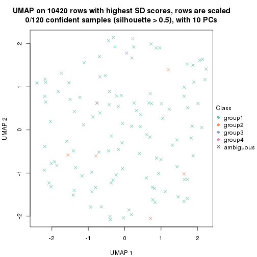
dimension_reduction(res, k = 5, method = "UMAP")
dimension_reduction(res, k = 6, method = "UMAP")
Following heatmap shows how subgroups are split when increasing k:
collect_classes(res)
If matrix rows can be associated to genes, consider to use GO_Enrichment(res,
...) to perform function enrichment for the signature genes.
The object with results only for a single top-value method and a single partition method can be extracted as:
res = res_list["SD", "kmeans"]
# you can also extract it by
# res = res_list["SD:kmeans"]
A summary of res and all the functions that can be applied to it:
res
#> A 'ConsensusPartition' object with k = 2, 3, 4, 5, 6.
#> On a matrix with 10420 rows and 120 columns.
#> Top rows (1000, 2000, 3000, 4000, 5000) are extracted by 'SD' method.
#> Subgroups are detected by 'kmeans' method.
#> Performed in total 1250 partitions by row resampling.
#> Best k for subgroups seems to be 2.
#>
#> Following methods can be applied to this 'ConsensusPartition' object:
#> [1] "cola_report" "collect_classes" "collect_plots"
#> [4] "collect_stats" "colnames" "compare_signatures"
#> [7] "consensus_heatmap" "dimension_reduction" "functional_enrichment"
#> [10] "get_anno_col" "get_anno" "get_classes"
#> [13] "get_consensus" "get_matrix" "get_membership"
#> [16] "get_param" "get_signatures" "get_stats"
#> [19] "is_best_k" "is_stable_k" "membership_heatmap"
#> [22] "ncol" "nrow" "plot_ecdf"
#> [25] "rownames" "select_partition_number" "show"
#> [28] "suggest_best_k" "test_to_known_factors"
collect_plots() function collects all the plots made from res for all k (number of partitions)
into one single page to provide an easy and fast comparison between different k.
collect_plots(res)
The plots are:
k and the heatmap of
predicted classes for each k.k.k.k.All the plots in panels can be made by individual functions and they are plotted later in this section.
select_partition_number() produces several plots showing different
statistics for choosing “optimized” k. There are following statistics:
k;k, the area increased is defined as \(A_k - A_{k-1}\).The detailed explanations of these statistics can be found in the cola vignette.
Generally speaking, lower PAC score, higher mean silhouette score or higher
concordance corresponds to better partition. Rand index and Jaccard index
measure how similar the current partition is compared to partition with k-1.
If they are too similar, we won't accept k is better than k-1.
select_partition_number(res)
The numeric values for all these statistics can be obtained by get_stats().
get_stats(res)
#> k 1-PAC mean_silhouette concordance area_increased Rand Jaccard
#> 2 2 0.000000 0.1786 0.586 0.4888 0.541 0.541
#> 3 3 0.000621 0.1362 0.450 0.3347 0.663 0.451
#> 4 4 0.011799 0.0911 0.363 0.1284 0.789 0.487
#> 5 5 0.079025 0.0729 0.314 0.0735 0.706 0.224
#> 6 6 0.180562 0.0639 0.298 0.0435 0.773 0.268
suggest_best_k() suggests the best \(k\) based on these statistics. The rules are as follows:
NA.suggest_best_k(res)
#> [1] 2
Following shows the table of the partitions (You need to click the show/hide
code output link to see it). The membership matrix (columns with name p*)
is inferred by
clue::cl_consensus()
function with the SE method. Basically the value in the membership matrix
represents the probability to belong to a certain group. The finall class
label for an item is determined with the group with highest probability it
belongs to.
In get_classes() function, the entropy is calculated from the membership
matrix and the silhouette score is calculated from the consensus matrix.
cbind(get_classes(res, k = 2), get_membership(res, k = 2))
#> class entropy silhouette p1 p2
#> SRR572528 2 0.985 0.19615 0.428 0.572
#> SRR572529 2 0.975 0.18236 0.408 0.592
#> SRR572530 2 0.969 0.15969 0.396 0.604
#> SRR572531 2 0.939 0.21494 0.356 0.644
#> SRR572532 2 1.000 -0.03084 0.496 0.504
#> SRR572533 1 0.925 0.21543 0.660 0.340
#> SRR572534 1 0.991 0.15205 0.556 0.444
#> SRR572535 2 0.891 0.30797 0.308 0.692
#> SRR572536 1 0.795 0.35096 0.760 0.240
#> SRR572537 2 1.000 -0.05147 0.496 0.504
#> SRR572538 2 0.788 0.32812 0.236 0.764
#> SRR572539 2 0.985 0.10541 0.428 0.572
#> SRR572540 2 0.966 0.15879 0.392 0.608
#> SRR572541 2 0.997 -0.03202 0.468 0.532
#> SRR572542 2 0.895 0.30074 0.312 0.688
#> SRR572543 2 0.866 0.28393 0.288 0.712
#> SRR572544 2 0.925 0.28762 0.340 0.660
#> SRR572545 2 0.978 0.19178 0.412 0.588
#> SRR572546 1 0.999 0.09747 0.520 0.480
#> SRR572547 2 0.904 0.23680 0.320 0.680
#> SRR572548 2 0.943 0.21854 0.360 0.640
#> SRR572549 2 0.952 0.19224 0.372 0.628
#> SRR572550 1 0.973 0.24874 0.596 0.404
#> SRR572551 2 0.795 0.34096 0.240 0.760
#> SRR572552 2 0.904 0.27581 0.320 0.680
#> SRR572553 2 0.997 -0.02986 0.468 0.532
#> SRR572554 2 0.671 0.34270 0.176 0.824
#> SRR572555 2 0.981 0.05263 0.420 0.580
#> SRR572556 2 0.917 0.27374 0.332 0.668
#> SRR572557 2 0.936 0.22711 0.352 0.648
#> SRR572558 2 0.932 0.17552 0.348 0.652
#> SRR572559 2 0.929 0.29354 0.344 0.656
#> SRR572560 1 0.999 0.08917 0.516 0.484
#> SRR572561 2 0.992 0.04850 0.448 0.552
#> SRR572562 2 0.904 0.30591 0.320 0.680
#> SRR572563 1 0.891 0.30202 0.692 0.308
#> SRR572564 1 0.814 0.35208 0.748 0.252
#> SRR572565 2 0.988 0.05354 0.436 0.564
#> SRR572566 2 0.971 0.10920 0.400 0.600
#> SRR572567 2 0.966 0.19668 0.392 0.608
#> SRR572568 1 0.958 0.21250 0.620 0.380
#> SRR572569 2 0.929 0.26916 0.344 0.656
#> SRR572570 2 0.998 0.02660 0.476 0.524
#> SRR572571 2 0.985 0.11372 0.428 0.572
#> SRR572572 2 0.987 0.13820 0.432 0.568
#> SRR572573 2 0.978 0.18937 0.412 0.588
#> SRR572574 1 0.990 0.14623 0.560 0.440
#> SRR572575 2 0.921 0.27645 0.336 0.664
#> SRR572576 1 0.999 -0.07510 0.520 0.480
#> SRR572577 2 1.000 -0.08071 0.496 0.504
#> SRR572578 1 0.995 0.17902 0.540 0.460
#> SRR572579 2 0.886 0.28197 0.304 0.696
#> SRR572580 2 0.996 0.12776 0.464 0.536
#> SRR572581 2 0.971 0.19006 0.400 0.600
#> SRR572582 1 1.000 0.05290 0.500 0.500
#> SRR572583 1 0.936 0.28493 0.648 0.352
#> SRR572584 1 0.961 0.25050 0.616 0.384
#> SRR572585 2 0.999 0.01359 0.480 0.520
#> SRR572586 2 0.946 0.18506 0.364 0.636
#> SRR572587 2 1.000 -0.00355 0.488 0.512
#> SRR572588 2 0.973 0.11939 0.404 0.596
#> SRR572589 1 0.987 0.08686 0.568 0.432
#> SRR572590 2 0.909 0.29101 0.324 0.676
#> SRR572591 2 1.000 0.05014 0.488 0.512
#> SRR572592 1 0.980 0.19117 0.584 0.416
#> SRR572593 2 0.821 0.30552 0.256 0.744
#> SRR572594 2 0.995 0.04572 0.460 0.540
#> SRR572595 1 0.973 0.18811 0.596 0.404
#> SRR572596 2 0.992 0.10102 0.448 0.552
#> SRR572597 2 0.996 0.17413 0.464 0.536
#> SRR572598 1 0.997 0.00434 0.532 0.468
#> SRR572599 2 0.963 0.20980 0.388 0.612
#> SRR572600 1 0.999 0.14392 0.520 0.480
#> SRR572601 1 0.955 0.16322 0.624 0.376
#> SRR572602 1 0.939 0.28431 0.644 0.356
#> SRR572603 2 0.955 0.24088 0.376 0.624
#> SRR572604 2 1.000 0.10946 0.488 0.512
#> SRR572605 1 0.999 0.04348 0.520 0.480
#> SRR572606 2 0.963 0.21138 0.388 0.612
#> SRR572607 1 1.000 0.04885 0.508 0.492
#> SRR572608 2 0.881 0.29698 0.300 0.700
#> SRR572609 2 0.788 0.33772 0.236 0.764
#> SRR572610 2 1.000 0.06389 0.492 0.508
#> SRR572611 2 0.946 0.20430 0.364 0.636
#> SRR572612 2 0.844 0.27775 0.272 0.728
#> SRR572613 1 0.886 0.30351 0.696 0.304
#> SRR572614 2 0.987 0.04965 0.432 0.568
#> SRR572615 2 0.998 -0.02783 0.476 0.524
#> SRR572616 1 0.992 0.16760 0.552 0.448
#> SRR572617 1 0.998 -0.02951 0.524 0.476
#> SRR572618 1 0.929 0.28223 0.656 0.344
#> SRR572619 1 0.936 0.31378 0.648 0.352
#> SRR572620 1 0.971 0.15564 0.600 0.400
#> SRR572621 2 0.973 0.21519 0.404 0.596
#> SRR572622 1 0.952 0.17242 0.628 0.372
#> SRR572623 2 0.952 0.23071 0.372 0.628
#> SRR572624 2 0.949 0.25471 0.368 0.632
#> SRR572625 1 1.000 0.03691 0.504 0.496
#> SRR572626 2 0.730 0.34358 0.204 0.796
#> SRR572627 2 0.939 0.18353 0.356 0.644
#> SRR572628 1 0.913 0.32395 0.672 0.328
#> SRR572629 2 0.963 0.26703 0.388 0.612
#> SRR572630 1 0.946 0.31075 0.636 0.364
#> SRR572631 2 0.980 0.13977 0.416 0.584
#> SRR572632 1 0.760 0.35606 0.780 0.220
#> SRR572633 2 0.833 0.30681 0.264 0.736
#> SRR572634 1 0.795 0.27115 0.760 0.240
#> SRR572635 1 0.952 0.21130 0.628 0.372
#> SRR572636 2 0.995 0.01705 0.460 0.540
#> SRR572637 2 0.946 0.26447 0.364 0.636
#> SRR572638 2 0.980 0.16703 0.416 0.584
#> SRR572639 2 0.991 0.03022 0.444 0.556
#> SRR572640 1 0.995 0.19590 0.540 0.460
#> SRR572641 1 0.998 0.05426 0.524 0.476
#> SRR572642 1 0.955 0.19551 0.624 0.376
#> SRR572643 2 0.932 0.24095 0.348 0.652
#> SRR572644 1 1.000 0.08058 0.504 0.496
#> SRR572645 2 0.995 0.12367 0.460 0.540
#> SRR572646 2 0.981 0.18792 0.420 0.580
#> SRR572647 1 0.833 0.34361 0.736 0.264
cbind(get_classes(res, k = 3), get_membership(res, k = 3))
#> class entropy silhouette p1 p2 p3
#> SRR572528 1 0.984 0.008078 0.400 0.348 0.252
#> SRR572529 2 0.894 0.241701 0.176 0.560 0.264
#> SRR572530 2 0.972 0.118583 0.268 0.452 0.280
#> SRR572531 1 0.915 0.234243 0.544 0.220 0.236
#> SRR572532 1 0.913 0.153294 0.508 0.160 0.332
#> SRR572533 3 0.859 0.114400 0.116 0.332 0.552
#> SRR572534 1 0.993 -0.017721 0.376 0.280 0.344
#> SRR572535 2 0.884 0.145576 0.328 0.536 0.136
#> SRR572536 3 0.879 0.276345 0.192 0.224 0.584
#> SRR572537 1 0.916 0.118429 0.508 0.164 0.328
#> SRR572538 1 0.882 0.139649 0.532 0.336 0.132
#> SRR572539 1 0.979 0.032397 0.392 0.372 0.236
#> SRR572540 1 0.969 0.178631 0.456 0.292 0.252
#> SRR572541 1 0.867 0.222745 0.584 0.152 0.264
#> SRR572542 2 0.868 0.183927 0.280 0.576 0.144
#> SRR572543 1 0.900 0.145433 0.504 0.356 0.140
#> SRR572544 2 0.946 0.093368 0.340 0.468 0.192
#> SRR572545 1 0.922 0.149841 0.532 0.256 0.212
#> SRR572546 3 0.978 0.081531 0.356 0.236 0.408
#> SRR572547 1 0.715 0.291826 0.720 0.152 0.128
#> SRR572548 1 0.895 0.219213 0.568 0.216 0.216
#> SRR572549 1 0.966 0.050280 0.460 0.300 0.240
#> SRR572550 3 0.960 0.200914 0.260 0.264 0.476
#> SRR572551 1 0.756 0.202033 0.628 0.308 0.064
#> SRR572552 1 0.969 0.088641 0.424 0.356 0.220
#> SRR572553 1 0.826 0.211106 0.612 0.120 0.268
#> SRR572554 1 0.767 0.222559 0.620 0.312 0.068
#> SRR572555 1 0.951 0.169506 0.488 0.228 0.284
#> SRR572556 2 0.882 0.111937 0.324 0.540 0.136
#> SRR572557 1 0.918 0.141513 0.528 0.284 0.188
#> SRR572558 1 0.936 0.190509 0.512 0.272 0.216
#> SRR572559 1 0.949 0.119051 0.488 0.292 0.220
#> SRR572560 1 0.997 0.069089 0.360 0.296 0.344
#> SRR572561 1 0.950 0.175358 0.492 0.236 0.272
#> SRR572562 2 0.895 0.024103 0.396 0.476 0.128
#> SRR572563 3 0.913 0.250220 0.252 0.204 0.544
#> SRR572564 3 0.906 0.294942 0.200 0.248 0.552
#> SRR572565 1 0.841 0.240993 0.600 0.128 0.272
#> SRR572566 1 0.943 0.176773 0.504 0.264 0.232
#> SRR572567 2 0.940 0.003547 0.412 0.416 0.172
#> SRR572568 3 0.962 0.175999 0.240 0.292 0.468
#> SRR572569 1 0.898 0.244339 0.564 0.232 0.204
#> SRR572570 2 0.902 0.117664 0.148 0.516 0.336
#> SRR572571 2 0.993 0.024614 0.352 0.372 0.276
#> SRR572572 2 0.974 0.170959 0.276 0.448 0.276
#> SRR572573 1 0.933 0.189537 0.508 0.200 0.292
#> SRR572574 3 0.989 0.099428 0.268 0.336 0.396
#> SRR572575 2 0.929 0.160903 0.304 0.508 0.188
#> SRR572576 2 0.992 0.078670 0.288 0.396 0.316
#> SRR572577 1 0.993 0.048222 0.392 0.304 0.304
#> SRR572578 3 0.980 0.115697 0.344 0.244 0.412
#> SRR572579 1 0.922 0.168928 0.532 0.260 0.208
#> SRR572580 2 0.980 0.117379 0.304 0.432 0.264
#> SRR572581 2 0.970 0.003192 0.392 0.392 0.216
#> SRR572582 1 0.975 0.026134 0.444 0.264 0.292
#> SRR572583 3 0.933 0.245790 0.232 0.248 0.520
#> SRR572584 3 0.946 0.190867 0.204 0.312 0.484
#> SRR572585 2 0.977 0.028782 0.232 0.404 0.364
#> SRR572586 1 0.964 0.089990 0.456 0.316 0.228
#> SRR572587 1 0.977 0.057405 0.420 0.240 0.340
#> SRR572588 1 0.906 0.205267 0.548 0.264 0.188
#> SRR572589 2 0.902 0.025985 0.132 0.456 0.412
#> SRR572590 2 0.858 0.214071 0.252 0.596 0.152
#> SRR572591 2 0.995 0.092012 0.304 0.384 0.312
#> SRR572592 3 0.960 0.044334 0.400 0.200 0.400
#> SRR572593 2 0.892 0.193358 0.256 0.564 0.180
#> SRR572594 2 0.982 -0.021558 0.248 0.404 0.348
#> SRR572595 3 0.964 0.131759 0.308 0.232 0.460
#> SRR572596 2 0.898 0.211270 0.212 0.564 0.224
#> SRR572597 2 0.972 0.118332 0.320 0.440 0.240
#> SRR572598 2 0.914 0.060591 0.144 0.448 0.408
#> SRR572599 1 0.986 0.057579 0.416 0.300 0.284
#> SRR572600 1 0.955 0.069156 0.436 0.196 0.368
#> SRR572601 2 0.969 0.024060 0.220 0.424 0.356
#> SRR572602 3 0.934 0.031214 0.412 0.164 0.424
#> SRR572603 2 0.940 0.044359 0.400 0.428 0.172
#> SRR572604 1 0.976 0.133364 0.444 0.276 0.280
#> SRR572605 1 0.937 -0.000689 0.420 0.168 0.412
#> SRR572606 2 0.767 0.271492 0.168 0.684 0.148
#> SRR572607 3 0.984 0.034918 0.248 0.364 0.388
#> SRR572608 1 0.819 0.157793 0.572 0.340 0.088
#> SRR572609 2 0.905 0.039367 0.376 0.484 0.140
#> SRR572610 2 0.993 0.017264 0.288 0.388 0.324
#> SRR572611 1 0.882 0.185535 0.564 0.280 0.156
#> SRR572612 1 0.922 0.045495 0.440 0.408 0.152
#> SRR572613 3 0.817 0.332947 0.176 0.180 0.644
#> SRR572614 1 0.909 0.228908 0.552 0.224 0.224
#> SRR572615 1 0.999 0.020555 0.344 0.340 0.316
#> SRR572616 3 0.987 0.108276 0.320 0.272 0.408
#> SRR572617 2 0.940 0.121121 0.176 0.452 0.372
#> SRR572618 3 0.895 0.206473 0.208 0.224 0.568
#> SRR572619 3 0.833 0.250251 0.328 0.100 0.572
#> SRR572620 3 0.969 0.072948 0.316 0.236 0.448
#> SRR572621 2 0.806 0.260886 0.156 0.652 0.192
#> SRR572622 3 0.996 0.000566 0.312 0.308 0.380
#> SRR572623 2 0.921 0.178666 0.312 0.512 0.176
#> SRR572624 2 0.995 0.079690 0.340 0.372 0.288
#> SRR572625 2 0.985 -0.021754 0.332 0.408 0.260
#> SRR572626 1 0.824 0.249544 0.624 0.244 0.132
#> SRR572627 1 0.916 0.096723 0.464 0.388 0.148
#> SRR572628 3 0.783 0.331636 0.156 0.172 0.672
#> SRR572629 1 0.938 0.054852 0.480 0.336 0.184
#> SRR572630 3 0.909 0.212792 0.332 0.156 0.512
#> SRR572631 2 0.946 0.059564 0.192 0.468 0.340
#> SRR572632 3 0.839 0.303530 0.200 0.176 0.624
#> SRR572633 1 0.906 0.032773 0.452 0.412 0.136
#> SRR572634 3 0.836 0.235417 0.140 0.244 0.616
#> SRR572635 3 0.880 0.050884 0.120 0.372 0.508
#> SRR572636 1 0.775 0.246301 0.652 0.096 0.252
#> SRR572637 1 0.945 0.038442 0.452 0.364 0.184
#> SRR572638 2 0.979 0.062651 0.380 0.384 0.236
#> SRR572639 1 0.917 0.195270 0.520 0.176 0.304
#> SRR572640 1 0.886 0.099925 0.512 0.128 0.360
#> SRR572641 3 0.939 0.184024 0.248 0.240 0.512
#> SRR572642 3 0.939 0.102293 0.188 0.328 0.484
#> SRR572643 1 0.840 0.269506 0.620 0.160 0.220
#> SRR572644 1 0.991 0.090559 0.396 0.284 0.320
#> SRR572645 2 0.946 0.214481 0.224 0.496 0.280
#> SRR572646 2 0.887 0.236042 0.248 0.572 0.180
#> SRR572647 3 0.821 0.318210 0.148 0.216 0.636
cbind(get_classes(res, k = 4), get_membership(res, k = 4))
#> class entropy silhouette p1 p2 p3 p4
#> SRR572528 4 0.978 0.02898 0.268 0.268 0.152 0.312
#> SRR572529 4 0.914 0.11311 0.136 0.332 0.128 0.404
#> SRR572530 2 0.815 0.22508 0.160 0.564 0.204 0.072
#> SRR572531 1 0.869 0.18397 0.528 0.172 0.176 0.124
#> SRR572532 1 0.950 0.11527 0.412 0.156 0.220 0.212
#> SRR572533 4 0.936 0.03129 0.088 0.280 0.308 0.324
#> SRR572534 2 0.966 -0.05914 0.268 0.312 0.292 0.128
#> SRR572535 4 0.872 -0.01640 0.244 0.352 0.040 0.364
#> SRR572536 3 0.904 0.15101 0.124 0.224 0.476 0.176
#> SRR572537 1 0.941 0.10107 0.416 0.172 0.260 0.152
#> SRR572538 1 0.871 0.09896 0.444 0.340 0.108 0.108
#> SRR572539 2 0.910 0.06179 0.320 0.364 0.248 0.068
#> SRR572540 1 0.921 0.08855 0.416 0.296 0.176 0.112
#> SRR572541 1 0.810 0.23010 0.580 0.144 0.188 0.088
#> SRR572542 2 0.772 0.15531 0.148 0.608 0.064 0.180
#> SRR572543 1 0.883 0.04908 0.408 0.368 0.112 0.112
#> SRR572544 2 0.895 0.08767 0.308 0.440 0.100 0.152
#> SRR572545 1 0.926 0.13492 0.444 0.204 0.128 0.224
#> SRR572546 3 0.989 0.01235 0.268 0.200 0.312 0.220
#> SRR572547 1 0.700 0.24528 0.676 0.132 0.128 0.064
#> SRR572548 1 0.883 0.18427 0.512 0.192 0.136 0.160
#> SRR572549 2 0.957 -0.02446 0.332 0.336 0.184 0.148
#> SRR572550 3 0.877 0.06040 0.200 0.336 0.408 0.056
#> SRR572551 1 0.821 0.16781 0.512 0.268 0.044 0.176
#> SRR572552 2 0.914 0.06963 0.280 0.420 0.208 0.092
#> SRR572553 1 0.861 0.13004 0.520 0.132 0.236 0.112
#> SRR572554 1 0.743 0.13340 0.552 0.324 0.040 0.084
#> SRR572555 1 0.903 0.04895 0.448 0.156 0.284 0.112
#> SRR572556 2 0.816 0.18277 0.164 0.580 0.096 0.160
#> SRR572557 1 0.940 0.03545 0.376 0.288 0.228 0.108
#> SRR572558 1 0.930 0.13835 0.440 0.240 0.168 0.152
#> SRR572559 1 0.876 0.17449 0.476 0.232 0.072 0.220
#> SRR572560 3 0.958 -0.04147 0.232 0.320 0.324 0.124
#> SRR572561 1 0.927 0.15616 0.452 0.156 0.176 0.216
#> SRR572562 2 0.901 0.11435 0.272 0.460 0.148 0.120
#> SRR572563 3 0.878 0.22850 0.260 0.120 0.492 0.128
#> SRR572564 3 0.868 0.25319 0.136 0.164 0.532 0.168
#> SRR572565 1 0.891 0.18694 0.488 0.232 0.164 0.116
#> SRR572566 1 0.880 0.02902 0.404 0.332 0.208 0.056
#> SRR572567 1 0.964 0.07305 0.324 0.216 0.140 0.320
#> SRR572568 3 0.835 0.06937 0.172 0.336 0.452 0.040
#> SRR572569 1 0.830 0.16495 0.564 0.196 0.124 0.116
#> SRR572570 2 0.882 0.14208 0.112 0.488 0.256 0.144
#> SRR572571 2 0.950 0.10709 0.288 0.384 0.180 0.148
#> SRR572572 4 0.897 0.17737 0.188 0.244 0.100 0.468
#> SRR572573 1 0.926 0.10568 0.404 0.300 0.184 0.112
#> SRR572574 3 0.962 0.05494 0.240 0.308 0.324 0.128
#> SRR572575 2 0.895 0.16890 0.188 0.496 0.132 0.184
#> SRR572576 2 0.995 -0.03139 0.256 0.288 0.204 0.252
#> SRR572577 3 0.979 0.05988 0.264 0.264 0.316 0.156
#> SRR572578 3 0.983 0.03905 0.256 0.164 0.308 0.272
#> SRR572579 1 0.875 0.19620 0.488 0.200 0.080 0.232
#> SRR572580 1 0.979 -0.04141 0.292 0.292 0.152 0.264
#> SRR572581 4 0.969 0.07900 0.288 0.256 0.136 0.320
#> SRR572582 3 0.930 0.07430 0.352 0.168 0.360 0.120
#> SRR572583 3 0.869 0.19439 0.192 0.136 0.528 0.144
#> SRR572584 3 0.887 0.12206 0.120 0.292 0.464 0.124
#> SRR572585 2 0.984 0.01561 0.168 0.308 0.256 0.268
#> SRR572586 1 0.983 0.02607 0.320 0.284 0.192 0.204
#> SRR572587 1 0.945 0.09370 0.344 0.304 0.248 0.104
#> SRR572588 1 0.925 0.17301 0.452 0.220 0.144 0.184
#> SRR572589 4 0.873 0.13397 0.068 0.188 0.280 0.464
#> SRR572590 2 0.887 -0.01359 0.160 0.404 0.080 0.356
#> SRR572591 2 0.917 0.09068 0.184 0.404 0.312 0.100
#> SRR572592 3 0.909 0.10247 0.356 0.116 0.388 0.140
#> SRR572593 2 0.857 0.17774 0.212 0.520 0.084 0.184
#> SRR572594 4 0.986 0.03726 0.208 0.212 0.248 0.332
#> SRR572595 3 0.943 0.04552 0.188 0.136 0.400 0.276
#> SRR572596 2 0.902 -0.00603 0.100 0.400 0.152 0.348
#> SRR572597 4 0.929 0.05174 0.300 0.212 0.100 0.388
#> SRR572598 4 0.880 0.18974 0.076 0.220 0.228 0.476
#> SRR572599 1 0.968 0.05192 0.328 0.248 0.136 0.288
#> SRR572600 3 0.962 0.01406 0.300 0.244 0.328 0.128
#> SRR572601 4 0.958 0.09248 0.164 0.200 0.240 0.396
#> SRR572602 3 0.960 0.03875 0.320 0.192 0.340 0.148
#> SRR572603 2 0.967 0.06193 0.268 0.368 0.180 0.184
#> SRR572604 1 0.974 0.06833 0.364 0.228 0.232 0.176
#> SRR572605 1 0.960 -0.03004 0.344 0.124 0.264 0.268
#> SRR572606 2 0.881 0.04826 0.136 0.468 0.104 0.292
#> SRR572607 2 0.922 0.02771 0.156 0.384 0.340 0.120
#> SRR572608 1 0.915 0.09417 0.420 0.292 0.100 0.188
#> SRR572609 2 0.936 0.01795 0.292 0.356 0.092 0.260
#> SRR572610 4 0.994 0.03857 0.244 0.244 0.212 0.300
#> SRR572611 1 0.960 0.09031 0.388 0.220 0.156 0.236
#> SRR572612 2 0.895 -0.01506 0.372 0.380 0.084 0.164
#> SRR572613 3 0.862 0.20138 0.160 0.108 0.528 0.204
#> SRR572614 1 0.908 0.10122 0.464 0.116 0.236 0.184
#> SRR572615 2 0.920 -0.00164 0.244 0.376 0.300 0.080
#> SRR572616 3 0.941 0.15096 0.240 0.184 0.424 0.152
#> SRR572617 4 0.950 0.10804 0.112 0.284 0.252 0.352
#> SRR572618 4 0.916 -0.06194 0.128 0.136 0.368 0.368
#> SRR572619 3 0.882 0.20067 0.272 0.112 0.480 0.136
#> SRR572620 3 0.994 -0.01149 0.244 0.212 0.300 0.244
#> SRR572621 2 0.891 0.06900 0.112 0.472 0.148 0.268
#> SRR572622 4 0.983 -0.05940 0.212 0.184 0.296 0.308
#> SRR572623 4 0.941 0.08166 0.220 0.260 0.120 0.400
#> SRR572624 4 0.905 0.09399 0.264 0.240 0.076 0.420
#> SRR572625 2 0.983 -0.01311 0.288 0.316 0.212 0.184
#> SRR572626 1 0.863 0.16850 0.496 0.240 0.072 0.192
#> SRR572627 2 0.960 -0.00192 0.292 0.360 0.144 0.204
#> SRR572628 3 0.838 0.24104 0.140 0.164 0.564 0.132
#> SRR572629 1 0.917 0.09945 0.408 0.196 0.096 0.300
#> SRR572630 3 0.894 0.15821 0.280 0.072 0.432 0.216
#> SRR572631 2 0.940 0.16506 0.188 0.424 0.240 0.148
#> SRR572632 3 0.813 0.20704 0.104 0.104 0.568 0.224
#> SRR572633 1 0.916 0.01611 0.332 0.316 0.068 0.284
#> SRR572634 3 0.866 0.03253 0.100 0.116 0.464 0.320
#> SRR572635 4 0.924 0.11323 0.136 0.160 0.272 0.432
#> SRR572636 1 0.849 0.13230 0.536 0.132 0.224 0.108
#> SRR572637 1 0.974 0.04566 0.320 0.284 0.148 0.248
#> SRR572638 4 0.991 0.06416 0.280 0.236 0.192 0.292
#> SRR572639 1 0.880 0.16726 0.460 0.216 0.256 0.068
#> SRR572640 1 0.891 0.05451 0.436 0.124 0.324 0.116
#> SRR572641 3 0.980 0.05832 0.264 0.180 0.340 0.216
#> SRR572642 4 0.933 0.07548 0.116 0.180 0.340 0.364
#> SRR572643 1 0.807 0.22462 0.592 0.168 0.120 0.120
#> SRR572644 1 0.998 0.00372 0.260 0.220 0.260 0.260
#> SRR572645 2 0.937 0.04199 0.156 0.416 0.156 0.272
#> SRR572646 4 0.903 0.04171 0.176 0.332 0.088 0.404
#> SRR572647 3 0.782 0.22823 0.092 0.184 0.608 0.116
cbind(get_classes(res, k = 5), get_membership(res, k = 5))
#> class entropy silhouette p1 p2 p3 p4 p5
#> SRR572528 5 0.903 0.026957 0.092 0.272 0.100 0.148 0.388
#> SRR572529 4 0.900 0.115807 0.104 0.220 0.164 0.420 0.092
#> SRR572530 4 0.853 0.117097 0.120 0.120 0.052 0.448 0.260
#> SRR572531 2 0.943 -0.011666 0.280 0.296 0.088 0.124 0.212
#> SRR572532 2 0.909 0.076175 0.188 0.380 0.096 0.084 0.252
#> SRR572533 4 0.906 0.003183 0.104 0.072 0.284 0.360 0.180
#> SRR572534 2 0.981 0.058303 0.192 0.296 0.184 0.188 0.140
#> SRR572535 4 0.927 0.031645 0.112 0.308 0.096 0.324 0.160
#> SRR572536 4 0.954 -0.091037 0.260 0.076 0.168 0.272 0.224
#> SRR572537 5 0.914 -0.029778 0.216 0.292 0.120 0.056 0.316
#> SRR572538 5 0.900 0.035789 0.168 0.232 0.028 0.244 0.328
#> SRR572539 1 0.963 0.035007 0.264 0.180 0.084 0.224 0.248
#> SRR572540 5 0.903 0.013255 0.252 0.220 0.044 0.132 0.352
#> SRR572541 2 0.832 0.065208 0.308 0.380 0.052 0.036 0.224
#> SRR572542 4 0.879 0.126089 0.072 0.220 0.112 0.444 0.152
#> SRR572543 2 0.907 0.022156 0.160 0.336 0.044 0.176 0.284
#> SRR572544 5 0.859 -0.018107 0.092 0.168 0.040 0.332 0.368
#> SRR572545 2 0.939 0.083512 0.120 0.328 0.148 0.116 0.288
#> SRR572546 5 0.934 0.033130 0.144 0.208 0.224 0.076 0.348
#> SRR572547 2 0.747 0.092678 0.292 0.468 0.020 0.024 0.196
#> SRR572548 1 0.949 -0.041497 0.300 0.208 0.100 0.120 0.272
#> SRR572549 2 0.937 0.039911 0.120 0.300 0.084 0.208 0.288
#> SRR572550 1 0.876 0.187830 0.440 0.124 0.060 0.224 0.152
#> SRR572551 2 0.784 0.186664 0.100 0.568 0.060 0.128 0.144
#> SRR572552 5 0.946 -0.012161 0.220 0.228 0.056 0.240 0.256
#> SRR572553 1 0.881 0.018263 0.328 0.212 0.116 0.032 0.312
#> SRR572554 2 0.818 0.106225 0.128 0.456 0.012 0.172 0.232
#> SRR572555 1 0.786 0.127117 0.536 0.192 0.044 0.068 0.160
#> SRR572556 4 0.909 0.104947 0.096 0.244 0.080 0.376 0.204
#> SRR572557 1 0.906 -0.024068 0.340 0.304 0.060 0.120 0.176
#> SRR572558 2 0.936 0.114630 0.260 0.344 0.096 0.124 0.176
#> SRR572559 2 0.948 -0.002295 0.188 0.296 0.084 0.152 0.280
#> SRR572560 5 0.946 0.068212 0.148 0.188 0.104 0.200 0.360
#> SRR572561 1 0.921 -0.053669 0.296 0.276 0.080 0.088 0.260
#> SRR572562 1 0.978 -0.020227 0.268 0.208 0.112 0.188 0.224
#> SRR572563 1 0.858 0.138622 0.428 0.056 0.172 0.080 0.264
#> SRR572564 1 0.881 0.123298 0.444 0.072 0.176 0.108 0.200
#> SRR572565 5 0.816 -0.018971 0.104 0.332 0.076 0.052 0.436
#> SRR572566 2 0.938 0.069703 0.136 0.352 0.088 0.208 0.216
#> SRR572567 2 0.923 0.004300 0.084 0.300 0.088 0.244 0.284
#> SRR572568 1 0.841 0.144182 0.440 0.056 0.056 0.216 0.232
#> SRR572569 5 0.918 -0.000137 0.176 0.304 0.088 0.100 0.332
#> SRR572570 4 0.775 0.222933 0.100 0.076 0.092 0.580 0.152
#> SRR572571 4 0.899 0.060882 0.088 0.232 0.060 0.316 0.304
#> SRR572572 4 0.956 0.048501 0.128 0.284 0.172 0.296 0.120
#> SRR572573 5 0.757 0.114850 0.092 0.192 0.032 0.116 0.568
#> SRR572574 5 0.958 0.010036 0.208 0.088 0.172 0.224 0.308
#> SRR572575 4 0.867 0.119352 0.060 0.280 0.080 0.408 0.172
#> SRR572576 5 0.986 -0.043783 0.148 0.224 0.152 0.236 0.240
#> SRR572577 2 0.964 0.026728 0.232 0.300 0.164 0.204 0.100
#> SRR572578 1 0.954 0.025442 0.296 0.216 0.076 0.180 0.232
#> SRR572579 5 0.921 0.086594 0.128 0.172 0.120 0.164 0.416
#> SRR572580 5 0.966 -0.012850 0.096 0.232 0.168 0.224 0.280
#> SRR572581 2 0.890 0.117751 0.152 0.452 0.148 0.164 0.084
#> SRR572582 1 0.811 0.168967 0.536 0.160 0.060 0.100 0.144
#> SRR572583 1 0.967 0.025831 0.316 0.124 0.156 0.176 0.228
#> SRR572584 4 0.976 0.009460 0.180 0.112 0.204 0.272 0.232
#> SRR572585 4 0.970 0.036236 0.116 0.156 0.224 0.296 0.208
#> SRR572586 2 0.989 0.006014 0.176 0.248 0.216 0.140 0.220
#> SRR572587 5 0.805 0.132597 0.180 0.076 0.100 0.100 0.544
#> SRR572588 5 0.937 0.064869 0.192 0.220 0.112 0.112 0.364
#> SRR572589 3 0.925 0.023549 0.132 0.176 0.316 0.304 0.072
#> SRR572590 4 0.893 0.096415 0.068 0.228 0.216 0.396 0.092
#> SRR572591 4 0.937 0.048052 0.208 0.160 0.100 0.376 0.156
#> SRR572592 1 0.564 0.194719 0.740 0.104 0.076 0.028 0.052
#> SRR572593 4 0.766 0.183267 0.076 0.176 0.036 0.560 0.152
#> SRR572594 1 0.884 0.074067 0.416 0.188 0.092 0.236 0.068
#> SRR572595 3 0.965 0.125470 0.144 0.200 0.336 0.172 0.148
#> SRR572596 4 0.921 0.047706 0.108 0.224 0.264 0.332 0.072
#> SRR572597 5 0.958 0.005583 0.120 0.124 0.192 0.260 0.304
#> SRR572598 3 0.881 0.105089 0.120 0.136 0.376 0.312 0.056
#> SRR572599 5 0.959 0.042680 0.124 0.204 0.216 0.128 0.328
#> SRR572600 5 0.941 0.061521 0.132 0.180 0.224 0.104 0.360
#> SRR572601 3 0.827 0.246167 0.128 0.124 0.520 0.168 0.060
#> SRR572602 5 0.904 -0.005265 0.292 0.096 0.128 0.108 0.376
#> SRR572603 5 0.960 0.033348 0.100 0.188 0.160 0.248 0.304
#> SRR572604 5 0.842 0.074839 0.104 0.220 0.080 0.104 0.492
#> SRR572605 3 0.895 0.117963 0.232 0.192 0.388 0.044 0.144
#> SRR572606 4 0.833 0.187529 0.116 0.152 0.140 0.520 0.072
#> SRR572607 5 0.928 -0.070812 0.152 0.116 0.100 0.308 0.324
#> SRR572608 2 0.923 0.118850 0.180 0.404 0.132 0.104 0.180
#> SRR572609 2 0.915 0.016589 0.084 0.376 0.112 0.256 0.172
#> SRR572610 2 0.983 0.058716 0.240 0.252 0.124 0.184 0.200
#> SRR572611 2 0.830 0.189436 0.088 0.524 0.164 0.132 0.092
#> SRR572612 2 0.945 0.045760 0.148 0.332 0.156 0.264 0.100
#> SRR572613 1 0.935 0.053640 0.380 0.108 0.212 0.136 0.164
#> SRR572614 1 0.789 0.043502 0.464 0.328 0.076 0.044 0.088
#> SRR572615 1 0.903 0.108482 0.380 0.124 0.056 0.216 0.224
#> SRR572616 1 0.877 0.172241 0.480 0.132 0.124 0.144 0.120
#> SRR572617 3 0.927 0.139183 0.112 0.148 0.356 0.276 0.108
#> SRR572618 3 0.879 0.204926 0.244 0.056 0.424 0.152 0.124
#> SRR572619 1 0.906 -0.058734 0.292 0.076 0.284 0.072 0.276
#> SRR572620 3 0.962 0.149488 0.140 0.180 0.336 0.208 0.136
#> SRR572621 4 0.863 0.146018 0.124 0.136 0.136 0.496 0.108
#> SRR572622 3 0.855 0.097511 0.120 0.072 0.408 0.080 0.320
#> SRR572623 3 0.893 0.065765 0.168 0.284 0.316 0.208 0.024
#> SRR572624 5 0.966 0.032884 0.108 0.140 0.260 0.228 0.264
#> SRR572625 1 0.920 0.073774 0.408 0.180 0.144 0.172 0.096
#> SRR572626 2 0.756 0.129429 0.076 0.532 0.028 0.104 0.260
#> SRR572627 2 0.890 0.091100 0.184 0.388 0.040 0.240 0.148
#> SRR572628 1 0.944 -0.014785 0.316 0.100 0.272 0.192 0.120
#> SRR572629 5 0.929 0.113102 0.112 0.144 0.148 0.200 0.396
#> SRR572630 3 0.928 0.013412 0.212 0.140 0.356 0.072 0.220
#> SRR572631 4 0.904 0.145133 0.132 0.152 0.088 0.424 0.204
#> SRR572632 3 0.855 0.150422 0.260 0.044 0.424 0.088 0.184
#> SRR572633 2 0.790 0.108408 0.028 0.504 0.072 0.228 0.168
#> SRR572634 3 0.831 0.282417 0.116 0.072 0.520 0.168 0.124
#> SRR572635 3 0.903 0.194515 0.148 0.100 0.408 0.244 0.100
#> SRR572636 5 0.910 -0.010803 0.248 0.264 0.152 0.036 0.300
#> SRR572637 2 0.906 0.101157 0.196 0.404 0.096 0.092 0.212
#> SRR572638 2 0.915 0.090780 0.120 0.380 0.084 0.256 0.160
#> SRR572639 5 0.734 0.130759 0.152 0.140 0.044 0.064 0.600
#> SRR572640 1 0.903 0.003236 0.336 0.312 0.180 0.060 0.112
#> SRR572641 1 0.989 0.013647 0.264 0.176 0.168 0.168 0.224
#> SRR572642 3 0.911 0.221457 0.144 0.184 0.412 0.180 0.080
#> SRR572643 5 0.637 0.069348 0.120 0.252 0.008 0.020 0.600
#> SRR572644 2 0.885 0.147697 0.152 0.460 0.116 0.176 0.096
#> SRR572645 4 0.842 0.042833 0.036 0.076 0.176 0.380 0.332
#> SRR572646 4 0.909 0.152854 0.136 0.260 0.116 0.392 0.096
#> SRR572647 1 0.899 0.049752 0.432 0.076 0.156 0.184 0.152
cbind(get_classes(res, k = 6), get_membership(res, k = 6))
#> class entropy silhouette p1 p2 p3 p4 p5 p6
#> SRR572528 5 0.900 0.06754 0.112 0.040 0.192 0.148 0.372 0.136
#> SRR572529 4 0.862 0.01261 0.064 0.096 0.212 0.432 0.080 0.116
#> SRR572530 4 0.845 0.10360 0.128 0.124 0.040 0.464 0.096 0.148
#> SRR572531 5 0.878 0.04109 0.056 0.316 0.056 0.128 0.320 0.124
#> SRR572532 6 0.937 0.01477 0.184 0.124 0.072 0.092 0.232 0.296
#> SRR572533 1 0.799 0.15660 0.424 0.024 0.056 0.256 0.052 0.188
#> SRR572534 3 0.969 -0.03667 0.176 0.164 0.204 0.200 0.196 0.060
#> SRR572535 4 0.876 -0.02612 0.024 0.136 0.280 0.308 0.188 0.064
#> SRR572536 1 0.852 0.18570 0.440 0.088 0.044 0.188 0.088 0.152
#> SRR572537 5 0.949 -0.05500 0.160 0.124 0.072 0.124 0.276 0.244
#> SRR572538 5 0.892 0.06564 0.056 0.168 0.040 0.200 0.340 0.196
#> SRR572539 5 0.917 0.00267 0.108 0.264 0.104 0.200 0.280 0.044
#> SRR572540 5 0.882 0.04064 0.112 0.284 0.028 0.160 0.324 0.092
#> SRR572541 5 0.769 0.03817 0.084 0.312 0.028 0.032 0.440 0.104
#> SRR572542 4 0.875 0.11382 0.064 0.100 0.128 0.440 0.144 0.124
#> SRR572543 5 0.931 0.03750 0.056 0.184 0.084 0.240 0.284 0.152
#> SRR572544 5 0.850 0.02040 0.052 0.092 0.080 0.336 0.352 0.088
#> SRR572545 5 0.847 0.12811 0.052 0.108 0.184 0.096 0.460 0.100
#> SRR572546 5 0.965 -0.03797 0.208 0.112 0.160 0.136 0.280 0.104
#> SRR572547 5 0.709 0.10099 0.012 0.340 0.056 0.048 0.472 0.072
#> SRR572548 2 0.917 -0.02649 0.076 0.276 0.052 0.124 0.260 0.212
#> SRR572549 5 0.865 0.00786 0.068 0.068 0.084 0.272 0.388 0.120
#> SRR572550 2 0.887 0.12313 0.220 0.312 0.036 0.244 0.132 0.056
#> SRR572551 5 0.836 0.10841 0.028 0.104 0.088 0.140 0.452 0.188
#> SRR572552 4 0.955 -0.06103 0.124 0.200 0.068 0.264 0.212 0.132
#> SRR572553 2 0.863 0.01107 0.104 0.348 0.048 0.048 0.292 0.160
#> SRR572554 5 0.808 0.13546 0.020 0.216 0.024 0.212 0.408 0.120
#> SRR572555 2 0.859 0.14065 0.104 0.428 0.072 0.108 0.224 0.064
#> SRR572556 4 0.947 0.04386 0.076 0.132 0.184 0.272 0.240 0.096
#> SRR572557 5 0.881 0.03922 0.096 0.308 0.068 0.156 0.320 0.052
#> SRR572558 5 0.939 0.03452 0.076 0.236 0.096 0.148 0.304 0.140
#> SRR572559 6 0.890 0.02063 0.032 0.168 0.104 0.104 0.252 0.340
#> SRR572560 5 0.983 -0.00833 0.164 0.124 0.136 0.192 0.248 0.136
#> SRR572561 2 0.961 0.02917 0.116 0.272 0.092 0.132 0.224 0.164
#> SRR572562 2 0.928 -0.01997 0.060 0.252 0.220 0.160 0.244 0.064
#> SRR572563 1 0.798 0.06247 0.404 0.320 0.032 0.036 0.116 0.092
#> SRR572564 1 0.893 0.07756 0.328 0.300 0.092 0.092 0.064 0.124
#> SRR572565 5 0.702 0.15234 0.092 0.080 0.036 0.096 0.620 0.076
#> SRR572566 5 0.926 0.06208 0.168 0.136 0.104 0.224 0.316 0.052
#> SRR572567 5 0.959 -0.02891 0.072 0.104 0.172 0.192 0.252 0.208
#> SRR572568 2 0.905 0.13684 0.244 0.304 0.040 0.160 0.184 0.068
#> SRR572569 5 0.873 0.12076 0.076 0.164 0.080 0.120 0.440 0.120
#> SRR572570 4 0.756 0.14726 0.160 0.044 0.084 0.560 0.084 0.068
#> SRR572571 4 0.937 0.09248 0.132 0.148 0.116 0.336 0.192 0.076
#> SRR572572 3 0.940 0.02057 0.068 0.108 0.272 0.268 0.132 0.152
#> SRR572573 5 0.837 0.10892 0.124 0.080 0.052 0.120 0.480 0.144
#> SRR572574 2 0.995 -0.00832 0.160 0.196 0.180 0.188 0.140 0.136
#> SRR572575 4 0.825 0.14158 0.072 0.064 0.100 0.496 0.112 0.156
#> SRR572576 4 0.962 -0.03127 0.164 0.088 0.112 0.260 0.144 0.232
#> SRR572577 1 0.968 -0.02946 0.224 0.152 0.168 0.216 0.176 0.064
#> SRR572578 2 0.977 0.04692 0.196 0.252 0.124 0.184 0.120 0.124
#> SRR572579 6 0.773 0.15308 0.024 0.092 0.040 0.128 0.224 0.492
#> SRR572580 5 0.943 -0.03371 0.072 0.120 0.268 0.136 0.272 0.132
#> SRR572581 3 0.953 0.05607 0.084 0.116 0.276 0.184 0.228 0.112
#> SRR572582 2 0.823 0.17599 0.140 0.496 0.076 0.100 0.136 0.052
#> SRR572583 1 0.938 0.11235 0.336 0.208 0.108 0.128 0.120 0.100
#> SRR572584 1 0.907 0.14986 0.384 0.120 0.072 0.184 0.092 0.148
#> SRR572585 4 0.966 -0.01100 0.192 0.096 0.144 0.240 0.100 0.228
#> SRR572586 3 0.972 0.01917 0.080 0.168 0.244 0.184 0.192 0.132
#> SRR572587 5 0.918 0.05120 0.168 0.132 0.044 0.112 0.332 0.212
#> SRR572588 5 0.891 -0.07680 0.040 0.160 0.116 0.080 0.304 0.300
#> SRR572589 3 0.834 0.08907 0.220 0.072 0.420 0.168 0.020 0.100
#> SRR572590 3 0.840 -0.01030 0.036 0.072 0.360 0.328 0.084 0.120
#> SRR572591 4 0.936 0.03489 0.228 0.120 0.084 0.324 0.128 0.116
#> SRR572592 2 0.615 0.15813 0.120 0.684 0.056 0.036 0.048 0.056
#> SRR572593 4 0.692 0.18635 0.028 0.108 0.080 0.604 0.148 0.032
#> SRR572594 2 0.869 0.06922 0.076 0.396 0.120 0.216 0.036 0.156
#> SRR572595 1 0.940 0.04749 0.324 0.080 0.212 0.132 0.140 0.112
#> SRR572596 3 0.778 0.12691 0.076 0.108 0.540 0.152 0.080 0.044
#> SRR572597 6 0.859 0.17605 0.056 0.084 0.104 0.196 0.120 0.440
#> SRR572598 6 0.889 -0.05758 0.280 0.068 0.204 0.136 0.028 0.284
#> SRR572599 6 0.972 0.09406 0.120 0.112 0.148 0.140 0.228 0.252
#> SRR572600 1 0.947 0.03923 0.252 0.092 0.160 0.068 0.248 0.180
#> SRR572601 3 0.762 0.14014 0.152 0.064 0.560 0.076 0.060 0.088
#> SRR572602 1 0.932 0.06646 0.284 0.208 0.064 0.068 0.168 0.208
#> SRR572603 6 0.946 0.05466 0.096 0.104 0.100 0.192 0.208 0.300
#> SRR572604 5 0.854 0.15625 0.160 0.100 0.124 0.072 0.464 0.080
#> SRR572605 1 0.953 -0.03116 0.228 0.136 0.160 0.048 0.204 0.224
#> SRR572606 4 0.773 0.00877 0.044 0.092 0.332 0.428 0.072 0.032
#> SRR572607 4 0.943 0.05449 0.220 0.160 0.052 0.268 0.192 0.108
#> SRR572608 5 0.898 0.10865 0.040 0.256 0.172 0.088 0.328 0.116
#> SRR572609 4 0.930 0.02151 0.024 0.160 0.200 0.240 0.148 0.228
#> SRR572610 5 0.987 -0.05302 0.096 0.184 0.152 0.184 0.196 0.188
#> SRR572611 5 0.956 -0.01877 0.096 0.124 0.260 0.144 0.260 0.116
#> SRR572612 4 0.947 0.03474 0.056 0.192 0.168 0.292 0.164 0.128
#> SRR572613 1 0.857 0.12789 0.348 0.220 0.060 0.056 0.052 0.264
#> SRR572614 2 0.784 0.03299 0.064 0.508 0.120 0.044 0.204 0.060
#> SRR572615 2 0.892 0.14211 0.172 0.348 0.052 0.228 0.148 0.052
#> SRR572616 2 0.932 0.03204 0.184 0.352 0.132 0.136 0.116 0.080
#> SRR572617 3 0.897 0.12264 0.176 0.072 0.392 0.176 0.096 0.088
#> SRR572618 1 0.883 0.16305 0.400 0.184 0.144 0.076 0.048 0.148
#> SRR572619 1 0.876 0.15904 0.368 0.236 0.080 0.028 0.140 0.148
#> SRR572620 1 0.963 0.03511 0.284 0.112 0.116 0.156 0.120 0.212
#> SRR572621 4 0.863 0.09086 0.032 0.108 0.188 0.412 0.088 0.172
#> SRR572622 3 0.890 -0.08340 0.260 0.096 0.292 0.020 0.216 0.116
#> SRR572623 3 0.868 0.10645 0.056 0.252 0.396 0.104 0.072 0.120
#> SRR572624 6 0.937 0.11800 0.068 0.096 0.188 0.176 0.152 0.320
#> SRR572625 2 0.876 0.10585 0.076 0.424 0.196 0.120 0.108 0.076
#> SRR572626 5 0.798 0.13029 0.028 0.108 0.048 0.204 0.480 0.132
#> SRR572627 5 0.957 -0.03391 0.060 0.212 0.124 0.224 0.228 0.152
#> SRR572628 1 0.755 0.20750 0.556 0.108 0.080 0.160 0.056 0.040
#> SRR572629 6 0.701 0.20896 0.032 0.052 0.048 0.112 0.160 0.596
#> SRR572630 1 0.916 0.11348 0.312 0.192 0.156 0.040 0.212 0.088
#> SRR572631 4 0.881 0.14696 0.176 0.088 0.080 0.428 0.100 0.128
#> SRR572632 1 0.840 0.14410 0.432 0.148 0.228 0.080 0.068 0.044
#> SRR572633 4 0.923 0.00646 0.056 0.100 0.132 0.284 0.284 0.144
#> SRR572634 1 0.762 0.11174 0.460 0.052 0.292 0.020 0.056 0.120
#> SRR572635 1 0.904 0.07975 0.328 0.088 0.216 0.172 0.032 0.164
#> SRR572636 6 0.873 -0.00261 0.088 0.272 0.056 0.040 0.248 0.296
#> SRR572637 5 0.924 0.10816 0.060 0.184 0.200 0.128 0.332 0.096
#> SRR572638 4 0.931 0.02432 0.088 0.092 0.120 0.332 0.224 0.144
#> SRR572639 5 0.774 0.11783 0.164 0.096 0.016 0.056 0.508 0.160
#> SRR572640 5 0.932 -0.03742 0.208 0.244 0.096 0.052 0.268 0.132
#> SRR572641 6 0.960 -0.02172 0.204 0.176 0.052 0.164 0.164 0.240
#> SRR572642 1 0.895 0.09931 0.376 0.076 0.224 0.156 0.072 0.096
#> SRR572643 5 0.640 0.15113 0.060 0.088 0.032 0.052 0.668 0.100
#> SRR572644 2 0.989 -0.00743 0.112 0.208 0.176 0.136 0.180 0.188
#> SRR572645 4 0.912 0.03623 0.140 0.032 0.116 0.324 0.168 0.220
#> SRR572646 4 0.897 0.03233 0.060 0.116 0.196 0.372 0.072 0.184
#> SRR572647 1 0.736 0.17983 0.552 0.176 0.052 0.140 0.048 0.032
Heatmaps for the consensus matrix. It visualizes the probability of two samples to be in a same group.
consensus_heatmap(res, k = 2)
consensus_heatmap(res, k = 3)
consensus_heatmap(res, k = 4)
consensus_heatmap(res, k = 5)
consensus_heatmap(res, k = 6)
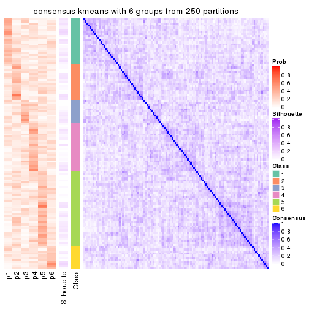
Heatmaps for the membership of samples in all partitions to see how consistent they are:
membership_heatmap(res, k = 2)
membership_heatmap(res, k = 3)
membership_heatmap(res, k = 4)
membership_heatmap(res, k = 5)
membership_heatmap(res, k = 6)
As soon as we have had the classes for columns, we can look for signatures which are significantly different between classes which can be candidate marks for certain classes. Following are the heatmaps for signatures.
Signature heatmaps where rows are scaled:
get_signatures(res, k = 2)

get_signatures(res, k = 3)

get_signatures(res, k = 4)

get_signatures(res, k = 5)

get_signatures(res, k = 6)

Signature heatmaps where rows are not scaled:
get_signatures(res, k = 2, scale_rows = FALSE)

get_signatures(res, k = 3, scale_rows = FALSE)

get_signatures(res, k = 4, scale_rows = FALSE)

get_signatures(res, k = 5, scale_rows = FALSE)

get_signatures(res, k = 6, scale_rows = FALSE)

Compare the overlap of signatures from different k:
compare_signatures(res)

get_signature() returns a data frame invisibly. TO get the list of signatures, the function
call should be assigned to a variable explicitly. In following code, if plot argument is set
to FALSE, no heatmap is plotted while only the differential analysis is performed.
# code only for demonstration
tb = get_signature(res, k = ..., plot = FALSE)
An example of the output of tb is:
#> which_row fdr mean_1 mean_2 scaled_mean_1 scaled_mean_2 km
#> 1 38 0.042760348 8.373488 9.131774 -0.5533452 0.5164555 1
#> 2 40 0.018707592 7.106213 8.469186 -0.6173731 0.5762149 1
#> 3 55 0.019134737 10.221463 11.207825 -0.6159697 0.5749050 1
#> 4 59 0.006059896 5.921854 7.869574 -0.6899429 0.6439467 1
#> 5 60 0.018055526 8.928898 10.211722 -0.6204761 0.5791110 1
#> 6 98 0.009384629 15.714769 14.887706 0.6635654 -0.6193277 2
...
The columns in tb are:
which_row: row indices corresponding to the input matrix.fdr: FDR for the differential test. mean_x: The mean value in group x.scaled_mean_x: The mean value in group x after rows are scaled.km: Row groups if k-means clustering is applied to rows.UMAP plot which shows how samples are separated.
dimension_reduction(res, k = 2, method = "UMAP")
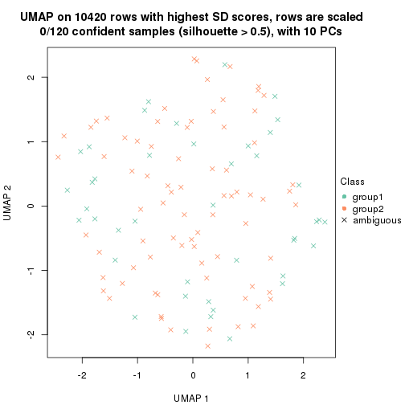
dimension_reduction(res, k = 3, method = "UMAP")
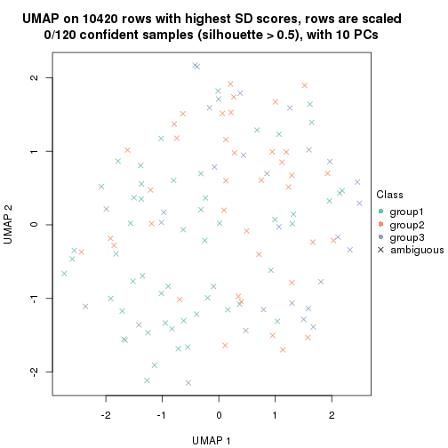
dimension_reduction(res, k = 4, method = "UMAP")
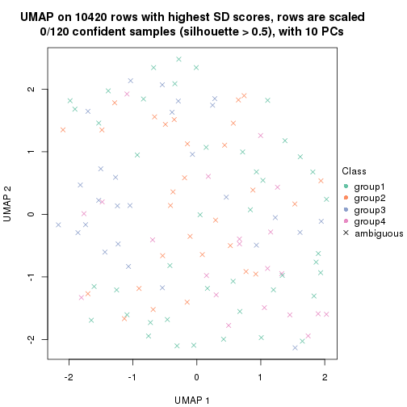
dimension_reduction(res, k = 5, method = "UMAP")
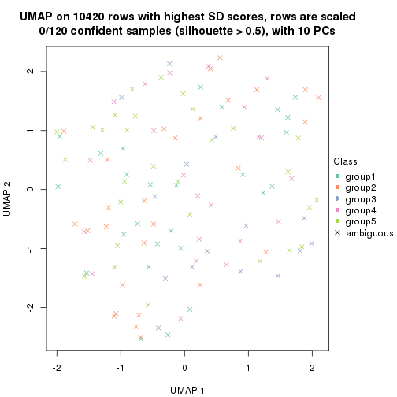
dimension_reduction(res, k = 6, method = "UMAP")
Following heatmap shows how subgroups are split when increasing k:
collect_classes(res)
If matrix rows can be associated to genes, consider to use GO_Enrichment(res,
...) to perform function enrichment for the signature genes.
The object with results only for a single top-value method and a single partition method can be extracted as:
res = res_list["SD", "skmeans"]
# you can also extract it by
# res = res_list["SD:skmeans"]
A summary of res and all the functions that can be applied to it:
res
#> A 'ConsensusPartition' object with k = 2, 3, 4, 5, 6.
#> On a matrix with 10420 rows and 120 columns.
#> Top rows (1000, 2000, 3000, 4000, 5000) are extracted by 'SD' method.
#> Subgroups are detected by 'skmeans' method.
#> Performed in total 1250 partitions by row resampling.
#> Best k for subgroups seems to be 2.
#>
#> Following methods can be applied to this 'ConsensusPartition' object:
#> [1] "cola_report" "collect_classes" "collect_plots"
#> [4] "collect_stats" "colnames" "compare_signatures"
#> [7] "consensus_heatmap" "dimension_reduction" "functional_enrichment"
#> [10] "get_anno_col" "get_anno" "get_classes"
#> [13] "get_consensus" "get_matrix" "get_membership"
#> [16] "get_param" "get_signatures" "get_stats"
#> [19] "is_best_k" "is_stable_k" "membership_heatmap"
#> [22] "ncol" "nrow" "plot_ecdf"
#> [25] "rownames" "select_partition_number" "show"
#> [28] "suggest_best_k" "test_to_known_factors"
collect_plots() function collects all the plots made from res for all k (number of partitions)
into one single page to provide an easy and fast comparison between different k.
collect_plots(res)
The plots are:
k and the heatmap of
predicted classes for each k.k.k.k.All the plots in panels can be made by individual functions and they are plotted later in this section.
select_partition_number() produces several plots showing different
statistics for choosing “optimized” k. There are following statistics:
k;k, the area increased is defined as \(A_k - A_{k-1}\).The detailed explanations of these statistics can be found in the cola vignette.
Generally speaking, lower PAC score, higher mean silhouette score or higher
concordance corresponds to better partition. Rand index and Jaccard index
measure how similar the current partition is compared to partition with k-1.
If they are too similar, we won't accept k is better than k-1.
select_partition_number(res)
The numeric values for all these statistics can be obtained by get_stats().
get_stats(res)
#> k 1-PAC mean_silhouette concordance area_increased Rand Jaccard
#> 2 2 0.000000 0.0432 0.533 0.5032 0.496 0.496
#> 3 3 0.000000 0.0190 0.355 0.3333 0.517 0.262
#> 4 4 0.000000 0.0110 0.275 0.1248 0.594 0.175
#> 5 5 0.000311 0.0128 0.226 0.0664 0.666 0.146
#> 6 6 0.018320 0.0169 0.214 0.0415 0.713 0.116
suggest_best_k() suggests the best \(k\) based on these statistics. The rules are as follows:
NA.suggest_best_k(res)
#> [1] 2
Following shows the table of the partitions (You need to click the show/hide
code output link to see it). The membership matrix (columns with name p*)
is inferred by
clue::cl_consensus()
function with the SE method. Basically the value in the membership matrix
represents the probability to belong to a certain group. The finall class
label for an item is determined with the group with highest probability it
belongs to.
In get_classes() function, the entropy is calculated from the membership
matrix and the silhouette score is calculated from the consensus matrix.
cbind(get_classes(res, k = 2), get_membership(res, k = 2))
#> class entropy silhouette p1 p2
#> SRR572528 2 0.946 0.095489 0.364 0.636
#> SRR572529 2 0.992 0.034831 0.448 0.552
#> SRR572530 1 1.000 0.037072 0.512 0.488
#> SRR572531 2 0.988 0.049995 0.436 0.564
#> SRR572532 2 0.958 0.084118 0.380 0.620
#> SRR572533 1 0.999 0.017359 0.520 0.480
#> SRR572534 1 0.975 0.051603 0.592 0.408
#> SRR572535 2 0.990 0.057287 0.440 0.560
#> SRR572536 1 0.991 0.047488 0.556 0.444
#> SRR572537 2 0.990 0.070902 0.440 0.560
#> SRR572538 1 0.999 0.006661 0.520 0.480
#> SRR572539 1 0.936 0.080544 0.648 0.352
#> SRR572540 1 0.991 0.057030 0.556 0.444
#> SRR572541 2 1.000 -0.002325 0.496 0.504
#> SRR572542 2 0.983 0.022747 0.424 0.576
#> SRR572543 1 0.980 0.049162 0.584 0.416
#> SRR572544 2 0.978 0.046494 0.412 0.588
#> SRR572545 2 0.975 0.065538 0.408 0.592
#> SRR572546 1 0.995 0.017669 0.540 0.460
#> SRR572547 2 0.925 0.100003 0.340 0.660
#> SRR572548 1 0.999 0.006741 0.516 0.484
#> SRR572549 2 0.999 0.009255 0.484 0.516
#> SRR572550 1 0.993 0.077742 0.548 0.452
#> SRR572551 2 0.921 0.090818 0.336 0.664
#> SRR572552 2 0.997 0.016800 0.468 0.532
#> SRR572553 1 0.992 0.029156 0.552 0.448
#> SRR572554 2 0.998 0.010842 0.472 0.528
#> SRR572555 2 1.000 -0.026114 0.492 0.508
#> SRR572556 1 0.992 0.029142 0.552 0.448
#> SRR572557 2 0.963 0.080730 0.388 0.612
#> SRR572558 1 0.966 0.067033 0.608 0.392
#> SRR572559 2 0.983 0.028558 0.424 0.576
#> SRR572560 1 0.913 0.114555 0.672 0.328
#> SRR572561 1 0.969 0.070186 0.604 0.396
#> SRR572562 1 0.997 -0.005010 0.532 0.468
#> SRR572563 1 0.993 0.051065 0.548 0.452
#> SRR572564 1 0.994 0.045060 0.544 0.456
#> SRR572565 1 0.978 0.082889 0.588 0.412
#> SRR572566 1 0.994 0.047870 0.544 0.456
#> SRR572567 1 1.000 0.024281 0.504 0.496
#> SRR572568 1 0.925 0.105651 0.660 0.340
#> SRR572569 2 0.991 0.022168 0.444 0.556
#> SRR572570 1 0.975 0.068318 0.592 0.408
#> SRR572571 1 0.980 0.047120 0.584 0.416
#> SRR572572 2 0.966 0.091603 0.392 0.608
#> SRR572573 1 0.999 0.017715 0.520 0.480
#> SRR572574 1 0.992 0.050158 0.552 0.448
#> SRR572575 2 0.973 0.084697 0.404 0.596
#> SRR572576 2 0.990 0.027599 0.440 0.560
#> SRR572577 1 0.988 0.063676 0.564 0.436
#> SRR572578 2 0.998 0.017980 0.476 0.524
#> SRR572579 2 0.994 0.007983 0.456 0.544
#> SRR572580 1 0.992 0.038686 0.552 0.448
#> SRR572581 2 0.961 0.078963 0.384 0.616
#> SRR572582 1 0.983 0.054859 0.576 0.424
#> SRR572583 1 0.981 0.046607 0.580 0.420
#> SRR572584 1 0.975 0.057236 0.592 0.408
#> SRR572585 1 0.980 0.045146 0.584 0.416
#> SRR572586 2 0.998 0.051709 0.476 0.524
#> SRR572587 1 0.973 0.056810 0.596 0.404
#> SRR572588 2 0.998 0.039771 0.472 0.528
#> SRR572589 2 0.998 -0.018101 0.476 0.524
#> SRR572590 2 0.975 0.071707 0.408 0.592
#> SRR572591 1 0.999 0.023198 0.516 0.484
#> SRR572592 1 0.999 -0.002294 0.520 0.480
#> SRR572593 2 0.999 0.009635 0.480 0.520
#> SRR572594 2 1.000 -0.004222 0.496 0.504
#> SRR572595 1 1.000 0.028649 0.508 0.492
#> SRR572596 2 0.996 0.029042 0.464 0.536
#> SRR572597 1 1.000 -0.019745 0.500 0.500
#> SRR572598 2 0.949 0.097879 0.368 0.632
#> SRR572599 1 0.999 0.016267 0.516 0.484
#> SRR572600 1 0.969 0.056560 0.604 0.396
#> SRR572601 1 0.997 -0.000962 0.532 0.468
#> SRR572602 1 0.985 0.046894 0.572 0.428
#> SRR572603 2 0.969 0.080279 0.396 0.604
#> SRR572604 2 0.999 -0.007712 0.480 0.520
#> SRR572605 2 0.963 0.092661 0.388 0.612
#> SRR572606 2 0.973 0.061454 0.404 0.596
#> SRR572607 1 0.904 0.127562 0.680 0.320
#> SRR572608 2 0.995 0.051301 0.460 0.540
#> SRR572609 2 0.985 0.028989 0.428 0.572
#> SRR572610 1 0.997 0.005294 0.532 0.468
#> SRR572611 2 0.991 0.058134 0.444 0.556
#> SRR572612 2 0.997 0.032574 0.468 0.532
#> SRR572613 2 0.997 -0.010686 0.468 0.532
#> SRR572614 2 0.999 0.006651 0.480 0.520
#> SRR572615 1 0.969 0.072412 0.604 0.396
#> SRR572616 1 1.000 0.027700 0.512 0.488
#> SRR572617 2 0.983 0.046789 0.424 0.576
#> SRR572618 2 1.000 0.004327 0.492 0.508
#> SRR572619 2 1.000 0.006567 0.488 0.512
#> SRR572620 2 0.961 0.053477 0.384 0.616
#> SRR572621 1 0.975 0.046051 0.592 0.408
#> SRR572622 1 0.999 0.000248 0.516 0.484
#> SRR572623 2 0.993 0.043067 0.452 0.548
#> SRR572624 2 0.990 0.044293 0.440 0.560
#> SRR572625 1 1.000 -0.018005 0.504 0.496
#> SRR572626 2 0.936 0.098501 0.352 0.648
#> SRR572627 1 0.978 0.071994 0.588 0.412
#> SRR572628 1 0.966 0.083165 0.608 0.392
#> SRR572629 2 0.966 0.071996 0.392 0.608
#> SRR572630 1 0.999 0.042267 0.516 0.484
#> SRR572631 1 0.975 0.085155 0.592 0.408
#> SRR572632 1 0.952 0.093979 0.628 0.372
#> SRR572633 1 1.000 -0.017548 0.500 0.500
#> SRR572634 2 0.992 0.028994 0.448 0.552
#> SRR572635 2 0.988 0.008069 0.436 0.564
#> SRR572636 2 0.993 0.030657 0.452 0.548
#> SRR572637 2 0.993 0.049483 0.452 0.548
#> SRR572638 2 0.997 0.047248 0.468 0.532
#> SRR572639 1 0.998 0.046446 0.528 0.472
#> SRR572640 2 0.997 -0.004292 0.468 0.532
#> SRR572641 2 0.980 0.059483 0.416 0.584
#> SRR572642 2 0.999 0.030355 0.480 0.520
#> SRR572643 2 0.983 0.033934 0.424 0.576
#> SRR572644 1 0.990 0.053873 0.560 0.440
#> SRR572645 1 0.997 0.028472 0.532 0.468
#> SRR572646 2 0.983 0.049336 0.424 0.576
#> SRR572647 1 0.943 0.090887 0.640 0.360
cbind(get_classes(res, k = 3), get_membership(res, k = 3))
#> class entropy silhouette p1 p2 p3
#> SRR572528 2 0.999 0.003677 0.328 0.356 0.316
#> SRR572529 3 0.967 0.016874 0.216 0.356 0.428
#> SRR572530 3 0.878 0.077472 0.260 0.164 0.576
#> SRR572531 1 0.999 0.013186 0.356 0.312 0.332
#> SRR572532 1 0.986 0.044216 0.408 0.328 0.264
#> SRR572533 3 0.994 0.020371 0.280 0.356 0.364
#> SRR572534 1 0.952 0.017856 0.416 0.396 0.188
#> SRR572535 2 0.967 0.030109 0.264 0.464 0.272
#> SRR572536 1 0.987 0.043010 0.412 0.308 0.280
#> SRR572537 1 0.951 0.062519 0.492 0.240 0.268
#> SRR572538 3 0.999 0.020880 0.308 0.340 0.352
#> SRR572539 1 0.974 0.006550 0.412 0.360 0.228
#> SRR572540 1 0.975 0.007059 0.408 0.228 0.364
#> SRR572541 1 0.992 0.007914 0.392 0.320 0.288
#> SRR572542 2 0.987 0.007920 0.356 0.388 0.256
#> SRR572543 3 0.989 0.025742 0.280 0.316 0.404
#> SRR572544 3 0.993 0.018406 0.292 0.320 0.388
#> SRR572545 2 0.943 0.014559 0.368 0.452 0.180
#> SRR572546 3 0.997 -0.002898 0.340 0.300 0.360
#> SRR572547 1 0.994 0.021412 0.380 0.332 0.288
#> SRR572548 1 0.965 0.015196 0.412 0.208 0.380
#> SRR572549 1 0.999 -0.012689 0.344 0.340 0.316
#> SRR572550 1 0.960 0.032955 0.432 0.204 0.364
#> SRR572551 2 1.000 0.007313 0.332 0.340 0.328
#> SRR572552 3 0.974 0.027881 0.304 0.252 0.444
#> SRR572553 1 0.918 0.070632 0.536 0.260 0.204
#> SRR572554 2 0.997 0.012639 0.344 0.360 0.296
#> SRR572555 1 0.957 0.029451 0.416 0.388 0.196
#> SRR572556 3 0.993 0.030528 0.332 0.284 0.384
#> SRR572557 1 0.974 0.064166 0.440 0.312 0.248
#> SRR572558 1 0.988 0.014901 0.408 0.316 0.276
#> SRR572559 3 0.987 -0.014416 0.256 0.372 0.372
#> SRR572560 3 0.984 0.030973 0.344 0.252 0.404
#> SRR572561 2 0.977 0.016026 0.232 0.400 0.368
#> SRR572562 3 0.937 0.022657 0.172 0.376 0.452
#> SRR572563 1 0.956 0.057758 0.480 0.236 0.284
#> SRR572564 1 0.935 0.085039 0.516 0.224 0.260
#> SRR572565 2 0.996 -0.003520 0.336 0.368 0.296
#> SRR572566 1 0.995 0.004162 0.380 0.324 0.296
#> SRR572567 2 0.990 0.017855 0.308 0.404 0.288
#> SRR572568 3 0.999 -0.002577 0.340 0.308 0.352
#> SRR572569 3 0.995 0.008806 0.300 0.316 0.384
#> SRR572570 3 0.979 0.022426 0.240 0.352 0.408
#> SRR572571 3 0.994 0.034812 0.280 0.348 0.372
#> SRR572572 3 0.976 0.023007 0.228 0.380 0.392
#> SRR572573 2 0.986 -0.019066 0.272 0.412 0.316
#> SRR572574 1 0.993 0.005039 0.392 0.304 0.304
#> SRR572575 2 0.987 -0.024780 0.256 0.372 0.372
#> SRR572576 3 0.991 -0.001267 0.276 0.332 0.392
#> SRR572577 2 0.966 0.018462 0.300 0.460 0.240
#> SRR572578 3 0.951 0.032355 0.252 0.256 0.492
#> SRR572579 3 0.998 0.004320 0.320 0.316 0.364
#> SRR572580 3 0.990 -0.002989 0.264 0.364 0.372
#> SRR572581 2 0.940 -0.008367 0.172 0.420 0.408
#> SRR572582 1 0.987 0.048708 0.400 0.336 0.264
#> SRR572583 1 0.973 0.039459 0.448 0.256 0.296
#> SRR572584 1 0.991 0.011468 0.392 0.280 0.328
#> SRR572585 3 0.902 0.059618 0.220 0.220 0.560
#> SRR572586 1 0.999 0.010840 0.344 0.312 0.344
#> SRR572587 1 0.984 0.018195 0.400 0.252 0.348
#> SRR572588 1 0.977 0.030346 0.440 0.292 0.268
#> SRR572589 2 0.968 0.017064 0.236 0.452 0.312
#> SRR572590 3 0.995 0.024176 0.288 0.340 0.372
#> SRR572591 3 0.997 0.022051 0.304 0.324 0.372
#> SRR572592 1 0.996 0.019619 0.376 0.304 0.320
#> SRR572593 2 0.966 -0.009305 0.212 0.420 0.368
#> SRR572594 2 0.943 -0.032872 0.176 0.416 0.408
#> SRR572595 2 0.953 0.034543 0.316 0.472 0.212
#> SRR572596 2 0.998 -0.007026 0.324 0.364 0.312
#> SRR572597 1 0.948 0.000815 0.428 0.184 0.388
#> SRR572598 1 0.979 -0.007723 0.384 0.236 0.380
#> SRR572599 3 0.957 0.042964 0.232 0.292 0.476
#> SRR572600 1 0.936 0.028243 0.508 0.284 0.208
#> SRR572601 2 0.996 0.025723 0.352 0.360 0.288
#> SRR572602 1 0.972 0.071699 0.452 0.280 0.268
#> SRR572603 1 0.982 0.023282 0.412 0.336 0.252
#> SRR572604 1 0.979 -0.004922 0.428 0.316 0.256
#> SRR572605 1 0.989 0.019191 0.408 0.288 0.304
#> SRR572606 2 0.939 0.049603 0.296 0.500 0.204
#> SRR572607 3 0.928 0.069875 0.260 0.216 0.524
#> SRR572608 3 0.993 0.007141 0.320 0.292 0.388
#> SRR572609 3 0.975 0.000900 0.244 0.320 0.436
#> SRR572610 2 0.998 0.019617 0.344 0.356 0.300
#> SRR572611 2 0.951 0.016967 0.328 0.468 0.204
#> SRR572612 3 0.942 0.043640 0.340 0.188 0.472
#> SRR572613 2 0.998 -0.039155 0.312 0.368 0.320
#> SRR572614 1 0.979 0.044186 0.416 0.340 0.244
#> SRR572615 3 0.986 0.055959 0.268 0.320 0.412
#> SRR572616 1 1.000 0.038424 0.344 0.324 0.332
#> SRR572617 2 0.976 0.007722 0.236 0.420 0.344
#> SRR572618 1 0.974 0.046185 0.444 0.252 0.304
#> SRR572619 1 0.932 0.068711 0.496 0.184 0.320
#> SRR572620 2 0.995 0.002622 0.348 0.368 0.284
#> SRR572621 2 0.982 -0.000420 0.296 0.428 0.276
#> SRR572622 2 0.991 -0.029806 0.360 0.372 0.268
#> SRR572623 3 0.969 0.012152 0.228 0.332 0.440
#> SRR572624 3 0.986 0.020327 0.284 0.300 0.416
#> SRR572625 3 0.993 0.009949 0.276 0.360 0.364
#> SRR572626 2 0.996 0.024093 0.288 0.364 0.348
#> SRR572627 2 0.965 0.000159 0.220 0.444 0.336
#> SRR572628 1 0.989 0.031690 0.408 0.288 0.304
#> SRR572629 3 0.989 0.013764 0.316 0.280 0.404
#> SRR572630 1 0.967 0.025731 0.428 0.356 0.216
#> SRR572631 3 0.931 0.026177 0.180 0.328 0.492
#> SRR572632 1 0.987 0.018217 0.388 0.356 0.256
#> SRR572633 3 0.943 -0.002481 0.176 0.408 0.416
#> SRR572634 2 0.988 0.013397 0.360 0.380 0.260
#> SRR572635 2 1.000 0.000753 0.328 0.344 0.328
#> SRR572636 1 0.994 0.024903 0.380 0.284 0.336
#> SRR572637 2 0.929 0.040761 0.220 0.524 0.256
#> SRR572638 2 0.972 0.042650 0.272 0.452 0.276
#> SRR572639 1 0.957 0.052074 0.460 0.212 0.328
#> SRR572640 2 0.996 -0.023261 0.352 0.356 0.292
#> SRR572641 3 0.953 0.012183 0.356 0.196 0.448
#> SRR572642 2 0.999 -0.010640 0.320 0.348 0.332
#> SRR572643 2 0.995 0.010931 0.288 0.372 0.340
#> SRR572644 3 0.993 0.036977 0.300 0.308 0.392
#> SRR572645 3 0.995 -0.010557 0.292 0.332 0.376
#> SRR572646 2 0.984 -0.002631 0.252 0.400 0.348
#> SRR572647 3 0.997 -0.028483 0.344 0.296 0.360
cbind(get_classes(res, k = 4), get_membership(res, k = 4))
#> class entropy silhouette p1 p2 p3 p4
#> SRR572528 3 0.978 0.028841 0.216 0.192 0.356 0.236
#> SRR572529 3 0.959 0.020107 0.156 0.220 0.392 0.232
#> SRR572530 1 0.963 0.049096 0.392 0.192 0.228 0.188
#> SRR572531 2 0.939 0.021381 0.112 0.396 0.256 0.236
#> SRR572532 3 0.977 -0.013987 0.176 0.288 0.332 0.204
#> SRR572533 4 0.986 0.027689 0.216 0.212 0.236 0.336
#> SRR572534 1 0.920 0.020727 0.404 0.176 0.108 0.312
#> SRR572535 3 0.980 0.015846 0.204 0.228 0.356 0.212
#> SRR572536 4 0.982 0.026902 0.204 0.188 0.284 0.324
#> SRR572537 2 0.989 0.010214 0.180 0.288 0.248 0.284
#> SRR572538 2 0.962 0.020414 0.280 0.304 0.296 0.120
#> SRR572539 1 0.921 0.042157 0.400 0.176 0.108 0.316
#> SRR572540 2 0.959 0.029514 0.152 0.388 0.244 0.216
#> SRR572541 2 0.947 0.009035 0.272 0.396 0.140 0.192
#> SRR572542 4 0.998 -0.017391 0.248 0.224 0.252 0.276
#> SRR572543 3 0.995 0.000708 0.256 0.272 0.272 0.200
#> SRR572544 3 0.990 0.031175 0.268 0.192 0.304 0.236
#> SRR572545 4 0.998 -0.012307 0.244 0.268 0.220 0.268
#> SRR572546 4 0.974 0.028415 0.196 0.184 0.264 0.356
#> SRR572547 2 0.967 0.029379 0.168 0.344 0.304 0.184
#> SRR572548 1 0.972 0.004846 0.352 0.268 0.216 0.164
#> SRR572549 3 0.987 -0.016186 0.220 0.272 0.316 0.192
#> SRR572550 1 0.947 0.023726 0.384 0.276 0.124 0.216
#> SRR572551 2 1.000 -0.008638 0.252 0.260 0.244 0.244
#> SRR572552 2 0.996 0.010545 0.228 0.288 0.224 0.260
#> SRR572553 2 0.987 0.013841 0.200 0.304 0.292 0.204
#> SRR572554 1 0.986 0.002591 0.328 0.204 0.260 0.208
#> SRR572555 2 0.937 0.030406 0.136 0.396 0.300 0.168
#> SRR572556 3 0.965 -0.015267 0.304 0.140 0.332 0.224
#> SRR572557 3 0.986 -0.008822 0.172 0.252 0.300 0.276
#> SRR572558 2 0.975 0.030521 0.236 0.364 0.192 0.208
#> SRR572559 2 0.972 0.003655 0.208 0.348 0.280 0.164
#> SRR572560 1 0.994 0.023131 0.300 0.244 0.248 0.208
#> SRR572561 2 0.950 0.037703 0.136 0.396 0.224 0.244
#> SRR572562 1 0.980 0.025050 0.328 0.236 0.168 0.268
#> SRR572563 4 0.973 0.026136 0.228 0.244 0.168 0.360
#> SRR572564 2 0.996 -0.017904 0.232 0.280 0.216 0.272
#> SRR572565 3 0.986 -0.006540 0.284 0.252 0.292 0.172
#> SRR572566 1 0.962 0.009440 0.316 0.252 0.124 0.308
#> SRR572567 3 0.988 0.009342 0.236 0.280 0.300 0.184
#> SRR572568 2 0.941 0.006933 0.196 0.372 0.120 0.312
#> SRR572569 2 0.987 0.006496 0.172 0.288 0.260 0.280
#> SRR572570 1 0.977 0.011685 0.356 0.184 0.220 0.240
#> SRR572571 2 0.971 -0.005502 0.216 0.336 0.292 0.156
#> SRR572572 3 0.955 0.052833 0.188 0.200 0.412 0.200
#> SRR572573 3 0.985 0.000470 0.204 0.288 0.312 0.196
#> SRR572574 1 0.981 0.038262 0.316 0.288 0.168 0.228
#> SRR572575 3 0.985 0.006128 0.224 0.180 0.304 0.292
#> SRR572576 4 0.916 0.012695 0.120 0.144 0.364 0.372
#> SRR572577 1 0.971 0.028541 0.360 0.160 0.248 0.232
#> SRR572578 3 0.996 -0.010871 0.212 0.272 0.280 0.236
#> SRR572579 3 0.963 -0.001132 0.204 0.236 0.388 0.172
#> SRR572580 4 0.995 0.018692 0.216 0.236 0.252 0.296
#> SRR572581 4 0.997 -0.017163 0.216 0.240 0.264 0.280
#> SRR572582 2 0.950 0.021606 0.212 0.408 0.232 0.148
#> SRR572583 3 0.985 -0.013273 0.168 0.260 0.288 0.284
#> SRR572584 1 0.984 -0.001707 0.332 0.256 0.224 0.188
#> SRR572585 4 0.977 0.008509 0.180 0.216 0.252 0.352
#> SRR572586 2 0.965 0.009778 0.176 0.384 0.204 0.236
#> SRR572587 3 0.997 0.004274 0.232 0.268 0.276 0.224
#> SRR572588 2 0.885 0.029579 0.160 0.500 0.220 0.120
#> SRR572589 1 0.984 -0.002029 0.308 0.168 0.264 0.260
#> SRR572590 2 0.990 0.006037 0.220 0.324 0.220 0.236
#> SRR572591 1 0.986 0.008229 0.316 0.252 0.180 0.252
#> SRR572592 2 0.975 0.018641 0.216 0.368 0.196 0.220
#> SRR572593 2 0.997 -0.009019 0.216 0.268 0.248 0.268
#> SRR572594 3 0.976 0.016240 0.188 0.256 0.356 0.200
#> SRR572595 4 0.980 0.009738 0.244 0.264 0.164 0.328
#> SRR572596 1 0.907 0.041800 0.484 0.188 0.180 0.148
#> SRR572597 3 0.940 0.016642 0.136 0.192 0.412 0.260
#> SRR572598 4 0.905 0.046762 0.136 0.168 0.216 0.480
#> SRR572599 3 0.972 -0.006860 0.176 0.284 0.348 0.192
#> SRR572600 1 0.994 0.020481 0.296 0.240 0.208 0.256
#> SRR572601 4 0.909 0.018905 0.240 0.152 0.140 0.468
#> SRR572602 1 0.965 0.006707 0.348 0.248 0.136 0.268
#> SRR572603 3 0.979 0.025827 0.188 0.244 0.352 0.216
#> SRR572604 1 0.984 -0.006870 0.312 0.176 0.232 0.280
#> SRR572605 3 0.976 -0.020042 0.216 0.240 0.360 0.184
#> SRR572606 4 0.952 0.001582 0.204 0.204 0.176 0.416
#> SRR572607 1 0.985 0.002658 0.296 0.272 0.264 0.168
#> SRR572608 1 0.976 0.022440 0.348 0.184 0.200 0.268
#> SRR572609 3 0.956 0.021256 0.264 0.152 0.388 0.196
#> SRR572610 4 0.955 0.000548 0.220 0.172 0.200 0.408
#> SRR572611 2 0.994 -0.008604 0.240 0.304 0.244 0.212
#> SRR572612 1 0.972 -0.026448 0.336 0.276 0.240 0.148
#> SRR572613 2 0.998 0.008108 0.248 0.268 0.260 0.224
#> SRR572614 2 0.984 0.028023 0.240 0.332 0.184 0.244
#> SRR572615 2 0.996 0.000869 0.220 0.296 0.244 0.240
#> SRR572616 2 0.946 0.018119 0.176 0.356 0.136 0.332
#> SRR572617 1 0.985 -0.033263 0.296 0.172 0.240 0.292
#> SRR572618 3 0.991 -0.024184 0.228 0.264 0.308 0.200
#> SRR572619 2 0.982 0.005364 0.208 0.336 0.264 0.192
#> SRR572620 4 0.960 0.014241 0.256 0.184 0.172 0.388
#> SRR572621 4 0.979 0.012524 0.228 0.180 0.244 0.348
#> SRR572622 3 0.981 -0.012736 0.204 0.196 0.344 0.256
#> SRR572623 1 0.978 0.014448 0.352 0.220 0.244 0.184
#> SRR572624 3 0.965 0.013295 0.152 0.208 0.356 0.284
#> SRR572625 2 0.992 -0.008017 0.260 0.300 0.240 0.200
#> SRR572626 2 0.994 0.002505 0.212 0.300 0.236 0.252
#> SRR572627 1 0.983 0.031532 0.328 0.176 0.236 0.260
#> SRR572628 4 0.964 0.020777 0.292 0.232 0.136 0.340
#> SRR572629 2 0.988 -0.008356 0.176 0.288 0.272 0.264
#> SRR572630 1 0.918 0.025020 0.444 0.264 0.132 0.160
#> SRR572631 4 0.929 0.026459 0.264 0.188 0.124 0.424
#> SRR572632 1 0.957 -0.004158 0.384 0.220 0.144 0.252
#> SRR572633 4 0.996 -0.016991 0.244 0.212 0.264 0.280
#> SRR572634 4 0.980 0.030493 0.252 0.160 0.268 0.320
#> SRR572635 4 0.997 0.028518 0.248 0.220 0.252 0.280
#> SRR572636 2 0.928 0.016806 0.268 0.420 0.196 0.116
#> SRR572637 3 0.997 0.005611 0.260 0.228 0.284 0.228
#> SRR572638 3 0.947 0.010324 0.276 0.120 0.380 0.224
#> SRR572639 2 0.987 0.035148 0.184 0.320 0.252 0.244
#> SRR572640 4 0.981 -0.034636 0.280 0.280 0.156 0.284
#> SRR572641 2 0.989 0.011359 0.228 0.320 0.200 0.252
#> SRR572642 4 0.967 0.052499 0.268 0.180 0.184 0.368
#> SRR572643 2 0.978 -0.014420 0.156 0.324 0.268 0.252
#> SRR572644 1 0.978 -0.005319 0.352 0.216 0.248 0.184
#> SRR572645 3 0.934 0.026755 0.268 0.112 0.404 0.216
#> SRR572646 3 0.945 0.046626 0.260 0.148 0.408 0.184
#> SRR572647 4 0.947 0.036921 0.324 0.152 0.160 0.364
cbind(get_classes(res, k = 5), get_membership(res, k = 5))
#> class entropy silhouette p1 p2 p3 p4 p5
#> SRR572528 3 0.980 0.021395 0.196 0.176 0.304 0.160 0.164
#> SRR572529 3 0.964 0.020542 0.132 0.188 0.324 0.136 0.220
#> SRR572530 1 0.980 0.003351 0.268 0.140 0.144 0.228 0.220
#> SRR572531 3 0.970 0.011819 0.272 0.128 0.276 0.152 0.172
#> SRR572532 3 0.991 0.000868 0.184 0.216 0.240 0.216 0.144
#> SRR572533 5 0.918 0.035860 0.164 0.196 0.184 0.068 0.388
#> SRR572534 2 0.957 0.009317 0.116 0.320 0.128 0.236 0.200
#> SRR572535 1 0.978 -0.030582 0.244 0.240 0.236 0.116 0.164
#> SRR572536 5 0.926 0.025151 0.220 0.140 0.216 0.068 0.356
#> SRR572537 4 0.983 0.011597 0.140 0.224 0.216 0.264 0.156
#> SRR572538 3 0.987 -0.002382 0.136 0.192 0.260 0.212 0.200
#> SRR572539 1 0.969 0.001733 0.300 0.184 0.104 0.208 0.204
#> SRR572540 3 0.988 -0.016890 0.228 0.184 0.256 0.192 0.140
#> SRR572541 4 0.937 0.020666 0.120 0.192 0.116 0.376 0.196
#> SRR572542 2 0.990 0.025472 0.188 0.272 0.188 0.176 0.176
#> SRR572543 2 0.973 -0.005342 0.176 0.300 0.164 0.128 0.232
#> SRR572544 5 0.943 0.018538 0.120 0.192 0.220 0.112 0.356
#> SRR572545 4 0.950 0.032779 0.132 0.140 0.212 0.360 0.156
#> SRR572546 3 0.977 0.006017 0.184 0.196 0.280 0.224 0.116
#> SRR572547 2 0.960 0.004798 0.236 0.272 0.256 0.100 0.136
#> SRR572548 4 0.957 0.023954 0.188 0.184 0.140 0.352 0.136
#> SRR572549 4 0.987 -0.015535 0.140 0.176 0.220 0.260 0.204
#> SRR572550 1 0.919 0.057550 0.412 0.148 0.104 0.192 0.144
#> SRR572551 4 0.993 0.000706 0.188 0.160 0.212 0.248 0.192
#> SRR572552 1 0.954 0.033127 0.316 0.112 0.248 0.124 0.200
#> SRR572553 1 0.961 -0.000458 0.308 0.196 0.184 0.220 0.092
#> SRR572554 4 0.980 0.003737 0.164 0.188 0.220 0.288 0.140
#> SRR572555 4 0.994 0.005306 0.212 0.200 0.180 0.244 0.164
#> SRR572556 2 0.967 0.038412 0.204 0.320 0.196 0.156 0.124
#> SRR572557 1 0.914 0.022166 0.392 0.252 0.136 0.104 0.116
#> SRR572558 3 0.993 0.002322 0.172 0.184 0.260 0.204 0.180
#> SRR572559 2 0.971 0.012531 0.140 0.316 0.164 0.216 0.164
#> SRR572560 5 0.982 0.044121 0.136 0.180 0.200 0.200 0.284
#> SRR572561 4 0.978 -0.004409 0.148 0.256 0.152 0.272 0.172
#> SRR572562 2 0.981 0.013462 0.200 0.284 0.132 0.212 0.172
#> SRR572563 1 0.948 -0.001653 0.292 0.100 0.120 0.204 0.284
#> SRR572564 1 0.996 -0.010556 0.224 0.164 0.180 0.212 0.220
#> SRR572565 5 0.928 0.032045 0.100 0.176 0.128 0.208 0.388
#> SRR572566 5 0.984 0.003420 0.160 0.144 0.192 0.252 0.252
#> SRR572567 4 0.957 0.000342 0.092 0.236 0.196 0.312 0.164
#> SRR572568 1 0.947 -0.001234 0.316 0.160 0.124 0.116 0.284
#> SRR572569 3 0.947 0.045969 0.124 0.208 0.364 0.132 0.172
#> SRR572570 5 0.953 0.008867 0.148 0.276 0.108 0.160 0.308
#> SRR572571 5 0.957 0.035168 0.116 0.200 0.148 0.196 0.340
#> SRR572572 3 0.968 0.019820 0.132 0.224 0.308 0.136 0.200
#> SRR572573 5 0.891 0.062738 0.108 0.132 0.124 0.180 0.456
#> SRR572574 4 0.940 -0.008393 0.224 0.220 0.076 0.332 0.148
#> SRR572575 5 0.964 0.036693 0.132 0.192 0.132 0.224 0.320
#> SRR572576 4 0.977 -0.010726 0.144 0.204 0.136 0.276 0.240
#> SRR572577 4 0.995 -0.037524 0.160 0.192 0.192 0.236 0.220
#> SRR572578 3 0.974 0.022520 0.172 0.192 0.288 0.116 0.232
#> SRR572579 2 0.993 0.000471 0.148 0.228 0.188 0.228 0.208
#> SRR572580 2 0.925 0.040989 0.152 0.408 0.112 0.152 0.176
#> SRR572581 5 0.981 0.016022 0.116 0.232 0.216 0.184 0.252
#> SRR572582 1 0.970 0.029974 0.292 0.200 0.180 0.104 0.224
#> SRR572583 2 0.955 -0.009049 0.240 0.332 0.144 0.116 0.168
#> SRR572584 5 0.975 0.004389 0.244 0.120 0.148 0.232 0.256
#> SRR572585 1 0.987 -0.019791 0.252 0.184 0.240 0.180 0.144
#> SRR572586 4 0.946 -0.006265 0.284 0.088 0.164 0.304 0.160
#> SRR572587 1 0.995 -0.008675 0.240 0.200 0.208 0.164 0.188
#> SRR572588 4 0.940 0.050626 0.160 0.168 0.156 0.388 0.128
#> SRR572589 4 0.976 -0.002801 0.168 0.180 0.124 0.268 0.260
#> SRR572590 1 0.977 -0.017432 0.272 0.140 0.184 0.256 0.148
#> SRR572591 1 0.976 0.016759 0.296 0.228 0.164 0.136 0.176
#> SRR572592 1 0.967 0.015951 0.332 0.200 0.160 0.164 0.144
#> SRR572593 1 0.989 0.004561 0.268 0.184 0.176 0.160 0.212
#> SRR572594 2 0.918 0.012673 0.204 0.400 0.164 0.084 0.148
#> SRR572595 5 0.976 0.012729 0.148 0.168 0.176 0.196 0.312
#> SRR572596 5 0.994 -0.013092 0.184 0.212 0.220 0.156 0.228
#> SRR572597 3 0.940 0.053603 0.172 0.128 0.380 0.192 0.128
#> SRR572598 3 0.814 0.072235 0.132 0.120 0.548 0.112 0.088
#> SRR572599 3 0.937 0.033651 0.156 0.252 0.356 0.104 0.132
#> SRR572600 4 0.975 0.006886 0.156 0.156 0.188 0.316 0.184
#> SRR572601 4 0.954 0.037665 0.148 0.144 0.232 0.344 0.132
#> SRR572602 4 0.981 -0.001622 0.176 0.184 0.136 0.284 0.220
#> SRR572603 4 0.971 0.013885 0.180 0.116 0.252 0.284 0.168
#> SRR572604 5 0.966 0.010259 0.160 0.124 0.192 0.196 0.328
#> SRR572605 3 0.963 0.020000 0.212 0.120 0.328 0.156 0.184
#> SRR572606 2 0.986 -0.001937 0.144 0.236 0.232 0.232 0.156
#> SRR572607 1 0.976 -0.013115 0.284 0.204 0.124 0.160 0.228
#> SRR572608 1 0.970 0.003647 0.324 0.188 0.132 0.180 0.176
#> SRR572609 2 0.963 -0.011928 0.224 0.272 0.232 0.188 0.084
#> SRR572610 4 0.963 0.013436 0.108 0.136 0.256 0.280 0.220
#> SRR572611 4 0.954 0.027007 0.148 0.144 0.124 0.324 0.260
#> SRR572612 1 0.993 0.010336 0.256 0.200 0.196 0.160 0.188
#> SRR572613 1 0.990 -0.001032 0.240 0.176 0.228 0.144 0.212
#> SRR572614 1 0.943 0.035806 0.368 0.128 0.124 0.168 0.212
#> SRR572615 2 0.971 -0.018500 0.240 0.272 0.220 0.108 0.160
#> SRR572616 1 0.896 0.046087 0.448 0.176 0.132 0.144 0.100
#> SRR572617 5 0.981 0.003968 0.124 0.188 0.228 0.188 0.272
#> SRR572618 1 0.956 0.015102 0.356 0.160 0.188 0.168 0.128
#> SRR572619 1 0.964 0.008977 0.280 0.128 0.272 0.196 0.124
#> SRR572620 4 0.981 -0.007384 0.176 0.124 0.200 0.260 0.240
#> SRR572621 4 0.987 -0.027091 0.232 0.216 0.160 0.248 0.144
#> SRR572622 4 0.960 0.021012 0.168 0.104 0.244 0.312 0.172
#> SRR572623 1 0.983 -0.007630 0.280 0.140 0.168 0.212 0.200
#> SRR572624 3 0.816 0.086692 0.104 0.120 0.548 0.100 0.128
#> SRR572625 4 0.942 -0.000397 0.244 0.232 0.120 0.316 0.088
#> SRR572626 3 0.971 -0.004364 0.120 0.260 0.280 0.180 0.160
#> SRR572627 2 0.825 0.052872 0.140 0.528 0.076 0.156 0.100
#> SRR572628 5 0.977 0.036171 0.176 0.164 0.212 0.144 0.304
#> SRR572629 3 0.985 -0.022174 0.188 0.216 0.240 0.232 0.124
#> SRR572630 4 0.902 0.036008 0.164 0.092 0.172 0.436 0.136
#> SRR572631 2 0.939 0.001067 0.160 0.308 0.084 0.152 0.296
#> SRR572632 4 0.982 -0.001468 0.236 0.132 0.196 0.268 0.168
#> SRR572633 5 0.977 -0.023471 0.144 0.200 0.204 0.152 0.300
#> SRR572634 4 0.960 -0.005241 0.100 0.152 0.248 0.300 0.200
#> SRR572635 3 0.975 0.002263 0.224 0.128 0.276 0.144 0.228
#> SRR572636 4 0.962 0.015695 0.204 0.220 0.180 0.304 0.092
#> SRR572637 2 0.988 0.024375 0.144 0.248 0.240 0.180 0.188
#> SRR572638 2 0.941 0.011026 0.068 0.280 0.144 0.256 0.252
#> SRR572639 1 0.990 -0.002914 0.244 0.140 0.188 0.216 0.212
#> SRR572640 1 0.955 0.005514 0.280 0.220 0.100 0.272 0.128
#> SRR572641 3 0.906 0.025416 0.236 0.212 0.380 0.080 0.092
#> SRR572642 5 0.951 0.043404 0.140 0.148 0.180 0.164 0.368
#> SRR572643 5 0.965 -0.006388 0.124 0.140 0.264 0.180 0.292
#> SRR572644 2 0.954 0.030707 0.108 0.340 0.204 0.200 0.148
#> SRR572645 3 0.965 0.023311 0.168 0.120 0.312 0.160 0.240
#> SRR572646 2 0.936 0.031076 0.088 0.372 0.188 0.160 0.192
#> SRR572647 5 0.836 0.070679 0.128 0.108 0.160 0.084 0.520
cbind(get_classes(res, k = 6), get_membership(res, k = 6))
#> class entropy silhouette p1 p2 p3 p4 p5 p6
#> SRR572528 1 0.989 -0.011694 0.212 0.176 0.140 0.200 0.120 0.152
#> SRR572529 4 0.598 0.111035 0.040 0.084 0.064 0.704 0.040 0.068
#> SRR572530 6 0.929 0.023781 0.128 0.104 0.060 0.152 0.272 0.284
#> SRR572531 3 0.983 0.000195 0.120 0.156 0.256 0.156 0.164 0.148
#> SRR572532 2 0.981 0.003599 0.120 0.208 0.204 0.104 0.156 0.208
#> SRR572533 1 0.946 0.040433 0.312 0.092 0.112 0.152 0.116 0.216
#> SRR572534 6 0.984 0.008491 0.208 0.176 0.148 0.104 0.144 0.220
#> SRR572535 4 0.919 0.023134 0.104 0.284 0.120 0.308 0.108 0.076
#> SRR572536 6 0.881 0.006602 0.200 0.096 0.100 0.132 0.060 0.412
#> SRR572537 2 0.983 0.001838 0.176 0.236 0.184 0.120 0.116 0.168
#> SRR572538 5 0.866 0.075671 0.084 0.092 0.112 0.116 0.460 0.136
#> SRR572539 6 0.933 0.058274 0.080 0.196 0.196 0.096 0.108 0.324
#> SRR572540 5 0.955 0.009877 0.124 0.088 0.180 0.104 0.252 0.252
#> SRR572541 2 0.962 0.020316 0.096 0.304 0.164 0.144 0.140 0.152
#> SRR572542 4 0.987 0.008448 0.136 0.164 0.116 0.228 0.188 0.168
#> SRR572543 2 0.992 -0.006266 0.128 0.196 0.196 0.156 0.188 0.136
#> SRR572544 5 0.989 -0.003411 0.200 0.140 0.140 0.152 0.224 0.144
#> SRR572545 1 0.981 -0.028275 0.208 0.204 0.204 0.124 0.100 0.160
#> SRR572546 1 0.995 0.023272 0.208 0.152 0.184 0.156 0.160 0.140
#> SRR572547 3 0.913 0.011006 0.096 0.176 0.368 0.068 0.180 0.112
#> SRR572548 5 0.955 0.016616 0.080 0.116 0.136 0.232 0.276 0.160
#> SRR572549 4 0.969 0.015708 0.116 0.188 0.124 0.284 0.160 0.128
#> SRR572550 6 0.887 0.072692 0.092 0.096 0.144 0.104 0.132 0.432
#> SRR572551 2 0.933 0.010655 0.040 0.264 0.216 0.200 0.180 0.100
#> SRR572552 6 0.968 0.023681 0.100 0.128 0.172 0.156 0.156 0.288
#> SRR572553 5 0.936 -0.014361 0.096 0.140 0.272 0.116 0.288 0.088
#> SRR572554 5 0.953 0.004556 0.092 0.184 0.196 0.084 0.288 0.156
#> SRR572555 3 0.913 0.031441 0.088 0.128 0.396 0.144 0.128 0.116
#> SRR572556 4 0.974 0.013104 0.148 0.176 0.112 0.276 0.124 0.164
#> SRR572557 3 0.936 0.011285 0.100 0.148 0.336 0.100 0.108 0.208
#> SRR572558 5 0.985 0.016760 0.164 0.160 0.168 0.132 0.248 0.128
#> SRR572559 5 0.985 0.008728 0.152 0.200 0.144 0.184 0.216 0.104
#> SRR572560 5 0.981 0.006582 0.192 0.136 0.152 0.116 0.252 0.152
#> SRR572561 5 0.973 0.001856 0.084 0.168 0.152 0.224 0.232 0.140
#> SRR572562 6 0.984 0.032936 0.160 0.120 0.148 0.192 0.136 0.244
#> SRR572563 1 0.917 0.017360 0.332 0.092 0.228 0.072 0.092 0.184
#> SRR572564 3 0.930 0.002042 0.204 0.056 0.312 0.116 0.112 0.200
#> SRR572565 3 0.996 -0.032892 0.144 0.184 0.188 0.136 0.180 0.168
#> SRR572566 6 0.955 0.037332 0.112 0.208 0.124 0.084 0.192 0.280
#> SRR572567 4 0.922 0.018332 0.108 0.120 0.104 0.368 0.196 0.104
#> SRR572568 6 0.876 0.069074 0.176 0.076 0.152 0.068 0.104 0.424
#> SRR572569 5 0.981 0.028293 0.144 0.216 0.136 0.132 0.240 0.132
#> SRR572570 1 0.972 -0.005218 0.248 0.148 0.080 0.164 0.156 0.204
#> SRR572571 6 0.961 -0.012965 0.096 0.108 0.116 0.232 0.200 0.248
#> SRR572572 4 0.897 0.051107 0.100 0.108 0.112 0.412 0.176 0.092
#> SRR572573 5 0.979 0.037503 0.112 0.144 0.160 0.144 0.264 0.176
#> SRR572574 6 0.984 0.013622 0.144 0.112 0.172 0.140 0.196 0.236
#> SRR572575 4 0.979 0.028421 0.132 0.200 0.152 0.252 0.112 0.152
#> SRR572576 1 0.981 0.012655 0.212 0.172 0.084 0.168 0.160 0.204
#> SRR572577 2 0.991 0.005355 0.148 0.216 0.168 0.148 0.128 0.192
#> SRR572578 4 0.970 -0.002843 0.084 0.212 0.132 0.228 0.212 0.132
#> SRR572579 5 0.906 0.066836 0.112 0.184 0.096 0.112 0.396 0.100
#> SRR572580 2 0.973 0.007493 0.216 0.248 0.120 0.172 0.144 0.100
#> SRR572581 4 0.962 0.016773 0.136 0.216 0.188 0.264 0.096 0.100
#> SRR572582 3 0.922 0.023976 0.104 0.084 0.320 0.268 0.108 0.116
#> SRR572583 1 0.993 -0.023120 0.204 0.148 0.176 0.148 0.132 0.192
#> SRR572584 1 0.982 0.008908 0.260 0.144 0.156 0.140 0.124 0.176
#> SRR572585 2 0.982 0.015483 0.196 0.248 0.124 0.124 0.148 0.160
#> SRR572586 3 0.974 0.037545 0.152 0.104 0.272 0.188 0.140 0.144
#> SRR572587 3 0.971 0.031277 0.144 0.132 0.284 0.108 0.172 0.160
#> SRR572588 3 0.974 -0.008354 0.112 0.132 0.248 0.208 0.188 0.112
#> SRR572589 1 0.894 -0.002152 0.348 0.124 0.064 0.272 0.076 0.116
#> SRR572590 4 0.964 0.009524 0.168 0.112 0.116 0.272 0.112 0.220
#> SRR572591 6 0.740 0.095143 0.088 0.132 0.072 0.076 0.048 0.584
#> SRR572592 3 0.899 0.027925 0.136 0.132 0.408 0.112 0.068 0.144
#> SRR572593 4 0.961 -0.009750 0.124 0.220 0.092 0.240 0.104 0.220
#> SRR572594 2 0.977 -0.005559 0.136 0.244 0.184 0.204 0.104 0.128
#> SRR572595 2 0.988 0.007158 0.192 0.228 0.140 0.124 0.172 0.144
#> SRR572596 1 0.942 -0.010636 0.292 0.092 0.088 0.248 0.156 0.124
#> SRR572597 5 0.926 0.006844 0.112 0.092 0.104 0.228 0.344 0.120
#> SRR572598 4 0.945 0.010457 0.192 0.160 0.056 0.288 0.188 0.116
#> SRR572599 5 0.957 0.046754 0.128 0.204 0.144 0.108 0.304 0.112
#> SRR572600 3 0.964 0.022458 0.124 0.120 0.304 0.148 0.176 0.128
#> SRR572601 1 0.907 0.032921 0.376 0.092 0.160 0.200 0.088 0.084
#> SRR572602 3 0.935 -0.005008 0.212 0.116 0.284 0.048 0.132 0.208
#> SRR572603 3 0.962 0.004873 0.100 0.144 0.268 0.140 0.236 0.112
#> SRR572604 6 0.961 0.019437 0.128 0.160 0.180 0.108 0.120 0.304
#> SRR572605 3 0.946 0.021933 0.220 0.084 0.280 0.120 0.204 0.092
#> SRR572606 1 0.954 -0.033119 0.252 0.184 0.076 0.240 0.148 0.100
#> SRR572607 6 0.987 -0.000667 0.176 0.188 0.116 0.144 0.148 0.228
#> SRR572608 2 0.971 0.000880 0.128 0.240 0.240 0.160 0.128 0.104
#> SRR572609 4 0.935 0.034659 0.116 0.136 0.084 0.308 0.252 0.104
#> SRR572610 2 0.979 0.012635 0.144 0.248 0.128 0.156 0.116 0.208
#> SRR572611 6 0.995 0.003288 0.156 0.164 0.144 0.180 0.148 0.208
#> SRR572612 4 0.987 -0.019977 0.112 0.156 0.200 0.220 0.148 0.164
#> SRR572613 1 0.977 0.010621 0.228 0.148 0.124 0.096 0.204 0.200
#> SRR572614 3 0.980 0.006747 0.120 0.188 0.244 0.120 0.192 0.136
#> SRR572615 6 0.986 0.002929 0.160 0.164 0.172 0.096 0.200 0.208
#> SRR572616 6 0.967 0.004535 0.176 0.156 0.160 0.116 0.104 0.288
#> SRR572617 1 0.937 0.040509 0.336 0.164 0.088 0.192 0.108 0.112
#> SRR572618 1 0.953 -0.016788 0.268 0.100 0.240 0.164 0.148 0.080
#> SRR572619 3 0.951 0.021421 0.208 0.112 0.264 0.084 0.228 0.104
#> SRR572620 1 0.970 0.033037 0.276 0.124 0.128 0.112 0.196 0.164
#> SRR572621 4 0.967 0.024557 0.156 0.192 0.100 0.284 0.128 0.140
#> SRR572622 1 0.974 0.017689 0.272 0.136 0.192 0.116 0.132 0.152
#> SRR572623 4 0.979 0.013936 0.200 0.152 0.124 0.240 0.180 0.104
#> SRR572624 4 0.956 -0.006717 0.132 0.140 0.112 0.260 0.260 0.096
#> SRR572625 3 0.943 0.016722 0.124 0.208 0.328 0.124 0.100 0.116
#> SRR572626 2 0.867 0.040317 0.072 0.456 0.128 0.136 0.100 0.108
#> SRR572627 2 0.948 0.019273 0.100 0.324 0.100 0.148 0.184 0.144
#> SRR572628 1 0.958 0.026198 0.312 0.124 0.128 0.108 0.148 0.180
#> SRR572629 5 0.929 0.038053 0.076 0.100 0.160 0.204 0.340 0.120
#> SRR572630 1 0.955 0.025177 0.308 0.120 0.128 0.116 0.120 0.208
#> SRR572631 6 0.980 0.004271 0.128 0.224 0.124 0.164 0.128 0.232
#> SRR572632 1 0.919 0.030688 0.352 0.076 0.192 0.076 0.132 0.172
#> SRR572633 2 0.825 0.023864 0.128 0.484 0.048 0.172 0.080 0.088
#> SRR572634 1 0.942 0.076968 0.340 0.100 0.108 0.164 0.168 0.120
#> SRR572635 1 0.927 0.062342 0.364 0.092 0.096 0.176 0.140 0.132
#> SRR572636 5 0.943 -0.034993 0.112 0.092 0.260 0.112 0.288 0.136
#> SRR572637 2 0.939 0.025217 0.148 0.340 0.152 0.092 0.096 0.172
#> SRR572638 4 0.937 0.020900 0.160 0.260 0.132 0.264 0.136 0.048
#> SRR572639 3 0.961 0.005276 0.088 0.140 0.268 0.108 0.220 0.176
#> SRR572640 3 0.968 0.019313 0.168 0.152 0.240 0.124 0.232 0.084
#> SRR572641 3 0.994 -0.007526 0.140 0.160 0.196 0.136 0.196 0.172
#> SRR572642 1 0.902 0.062158 0.412 0.116 0.096 0.144 0.100 0.132
#> SRR572643 2 0.960 -0.008382 0.084 0.248 0.244 0.108 0.144 0.172
#> SRR572644 2 0.975 0.007218 0.144 0.272 0.104 0.152 0.160 0.168
#> SRR572645 1 0.919 0.036030 0.296 0.044 0.100 0.200 0.240 0.120
#> SRR572646 4 0.940 0.020933 0.152 0.216 0.120 0.320 0.112 0.080
#> SRR572647 1 0.938 0.021885 0.296 0.104 0.160 0.092 0.096 0.252
Heatmaps for the consensus matrix. It visualizes the probability of two samples to be in a same group.
consensus_heatmap(res, k = 2)
consensus_heatmap(res, k = 3)
consensus_heatmap(res, k = 4)
consensus_heatmap(res, k = 5)
consensus_heatmap(res, k = 6)
Heatmaps for the membership of samples in all partitions to see how consistent they are:
membership_heatmap(res, k = 2)
membership_heatmap(res, k = 3)
membership_heatmap(res, k = 4)
membership_heatmap(res, k = 5)
membership_heatmap(res, k = 6)
As soon as we have had the classes for columns, we can look for signatures which are significantly different between classes which can be candidate marks for certain classes. Following are the heatmaps for signatures.
Signature heatmaps where rows are scaled:
get_signatures(res, k = 2)

get_signatures(res, k = 3)

get_signatures(res, k = 4)

get_signatures(res, k = 5)

get_signatures(res, k = 6)

Signature heatmaps where rows are not scaled:
get_signatures(res, k = 2, scale_rows = FALSE)

get_signatures(res, k = 3, scale_rows = FALSE)

get_signatures(res, k = 4, scale_rows = FALSE)

get_signatures(res, k = 5, scale_rows = FALSE)

get_signatures(res, k = 6, scale_rows = FALSE)

Compare the overlap of signatures from different k:
compare_signatures(res)

get_signature() returns a data frame invisibly. TO get the list of signatures, the function
call should be assigned to a variable explicitly. In following code, if plot argument is set
to FALSE, no heatmap is plotted while only the differential analysis is performed.
# code only for demonstration
tb = get_signature(res, k = ..., plot = FALSE)
An example of the output of tb is:
#> which_row fdr mean_1 mean_2 scaled_mean_1 scaled_mean_2 km
#> 1 38 0.042760348 8.373488 9.131774 -0.5533452 0.5164555 1
#> 2 40 0.018707592 7.106213 8.469186 -0.6173731 0.5762149 1
#> 3 55 0.019134737 10.221463 11.207825 -0.6159697 0.5749050 1
#> 4 59 0.006059896 5.921854 7.869574 -0.6899429 0.6439467 1
#> 5 60 0.018055526 8.928898 10.211722 -0.6204761 0.5791110 1
#> 6 98 0.009384629 15.714769 14.887706 0.6635654 -0.6193277 2
...
The columns in tb are:
which_row: row indices corresponding to the input matrix.fdr: FDR for the differential test. mean_x: The mean value in group x.scaled_mean_x: The mean value in group x after rows are scaled.km: Row groups if k-means clustering is applied to rows.UMAP plot which shows how samples are separated.
dimension_reduction(res, k = 2, method = "UMAP")
dimension_reduction(res, k = 3, method = "UMAP")
dimension_reduction(res, k = 4, method = "UMAP")
dimension_reduction(res, k = 5, method = "UMAP")
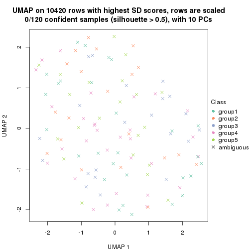
dimension_reduction(res, k = 6, method = "UMAP")
Following heatmap shows how subgroups are split when increasing k:
collect_classes(res)
If matrix rows can be associated to genes, consider to use GO_Enrichment(res,
...) to perform function enrichment for the signature genes.
The object with results only for a single top-value method and a single partition method can be extracted as:
res = res_list["SD", "pam"]
# you can also extract it by
# res = res_list["SD:pam"]
A summary of res and all the functions that can be applied to it:
res
#> A 'ConsensusPartition' object with k = 2, 3, 4, 5, 6.
#> On a matrix with 10420 rows and 120 columns.
#> Top rows (1000, 2000, 3000, 4000, 5000) are extracted by 'SD' method.
#> Subgroups are detected by 'pam' method.
#> Performed in total 1250 partitions by row resampling.
#> Best k for subgroups seems to be 2.
#>
#> Following methods can be applied to this 'ConsensusPartition' object:
#> [1] "cola_report" "collect_classes" "collect_plots"
#> [4] "collect_stats" "colnames" "compare_signatures"
#> [7] "consensus_heatmap" "dimension_reduction" "functional_enrichment"
#> [10] "get_anno_col" "get_anno" "get_classes"
#> [13] "get_consensus" "get_matrix" "get_membership"
#> [16] "get_param" "get_signatures" "get_stats"
#> [19] "is_best_k" "is_stable_k" "membership_heatmap"
#> [22] "ncol" "nrow" "plot_ecdf"
#> [25] "rownames" "select_partition_number" "show"
#> [28] "suggest_best_k" "test_to_known_factors"
collect_plots() function collects all the plots made from res for all k (number of partitions)
into one single page to provide an easy and fast comparison between different k.
collect_plots(res)
The plots are:
k and the heatmap of
predicted classes for each k.k.k.k.All the plots in panels can be made by individual functions and they are plotted later in this section.
select_partition_number() produces several plots showing different
statistics for choosing “optimized” k. There are following statistics:
k;k, the area increased is defined as \(A_k - A_{k-1}\).The detailed explanations of these statistics can be found in the cola vignette.
Generally speaking, lower PAC score, higher mean silhouette score or higher
concordance corresponds to better partition. Rand index and Jaccard index
measure how similar the current partition is compared to partition with k-1.
If they are too similar, we won't accept k is better than k-1.
select_partition_number(res)
The numeric values for all these statistics can be obtained by get_stats().
get_stats(res)
#> k 1-PAC mean_silhouette concordance area_increased Rand Jaccard
#> 2 2 0.00000 0.355 0.636 0.4855 0.496 0.496
#> 3 3 0.00109 0.238 0.522 0.3280 0.774 0.583
#> 4 4 0.01630 0.182 0.431 0.1265 0.870 0.666
#> 5 5 0.07018 0.149 0.409 0.0687 0.889 0.656
#> 6 6 0.14454 0.129 0.387 0.0427 0.872 0.566
suggest_best_k() suggests the best \(k\) based on these statistics. The rules are as follows:
NA.suggest_best_k(res)
#> [1] 2
Following shows the table of the partitions (You need to click the show/hide
code output link to see it). The membership matrix (columns with name p*)
is inferred by
clue::cl_consensus()
function with the SE method. Basically the value in the membership matrix
represents the probability to belong to a certain group. The finall class
label for an item is determined with the group with highest probability it
belongs to.
In get_classes() function, the entropy is calculated from the membership
matrix and the silhouette score is calculated from the consensus matrix.
cbind(get_classes(res, k = 2), get_membership(res, k = 2))
#> class entropy silhouette p1 p2
#> SRR572528 1 0.839 0.5125 0.732 0.268
#> SRR572529 1 0.844 0.4753 0.728 0.272
#> SRR572530 2 0.994 0.0701 0.456 0.544
#> SRR572531 1 0.999 0.2563 0.520 0.480
#> SRR572532 2 0.988 0.4237 0.436 0.564
#> SRR572533 1 0.833 0.4781 0.736 0.264
#> SRR572534 2 0.988 0.3310 0.436 0.564
#> SRR572535 1 1.000 -0.1958 0.508 0.492
#> SRR572536 1 0.993 0.1740 0.548 0.452
#> SRR572537 2 0.936 0.4502 0.352 0.648
#> SRR572538 2 1.000 -0.2393 0.488 0.512
#> SRR572539 2 0.821 0.5359 0.256 0.744
#> SRR572540 1 0.998 0.3123 0.524 0.476
#> SRR572541 1 1.000 0.0450 0.508 0.492
#> SRR572542 2 0.983 0.4256 0.424 0.576
#> SRR572543 2 0.988 0.1670 0.436 0.564
#> SRR572544 1 0.697 0.5261 0.812 0.188
#> SRR572545 1 0.936 0.3356 0.648 0.352
#> SRR572546 2 0.969 0.4186 0.396 0.604
#> SRR572547 2 0.913 0.3825 0.328 0.672
#> SRR572548 2 0.802 0.5315 0.244 0.756
#> SRR572549 1 1.000 -0.1309 0.508 0.492
#> SRR572550 2 0.738 0.5315 0.208 0.792
#> SRR572551 1 0.529 0.5217 0.880 0.120
#> SRR572552 2 0.625 0.5277 0.156 0.844
#> SRR572553 2 0.827 0.5132 0.260 0.740
#> SRR572554 2 1.000 -0.1578 0.496 0.504
#> SRR572555 1 0.996 -0.1174 0.536 0.464
#> SRR572556 2 0.839 0.5234 0.268 0.732
#> SRR572557 1 0.973 0.3973 0.596 0.404
#> SRR572558 2 0.971 0.4021 0.400 0.600
#> SRR572559 1 0.932 0.4922 0.652 0.348
#> SRR572560 2 0.955 0.3492 0.376 0.624
#> SRR572561 2 0.788 0.5269 0.236 0.764
#> SRR572562 2 0.850 0.5259 0.276 0.724
#> SRR572563 2 0.814 0.5465 0.252 0.748
#> SRR572564 2 0.990 0.2124 0.440 0.560
#> SRR572565 2 1.000 0.2640 0.496 0.504
#> SRR572566 1 0.975 0.3888 0.592 0.408
#> SRR572567 1 0.821 0.5294 0.744 0.256
#> SRR572568 2 0.738 0.5308 0.208 0.792
#> SRR572569 1 0.966 0.3966 0.608 0.392
#> SRR572570 1 0.917 0.4523 0.668 0.332
#> SRR572571 2 0.958 0.2774 0.380 0.620
#> SRR572572 1 1.000 -0.2435 0.508 0.492
#> SRR572573 1 0.881 0.4903 0.700 0.300
#> SRR572574 2 0.999 -0.0865 0.480 0.520
#> SRR572575 1 0.881 0.4762 0.700 0.300
#> SRR572576 1 1.000 0.1114 0.508 0.492
#> SRR572577 2 1.000 0.1133 0.496 0.504
#> SRR572578 2 0.891 0.5175 0.308 0.692
#> SRR572579 1 0.895 0.4812 0.688 0.312
#> SRR572580 1 0.839 0.4757 0.732 0.268
#> SRR572581 2 0.936 0.4989 0.352 0.648
#> SRR572582 2 0.996 0.1831 0.464 0.536
#> SRR572583 1 1.000 -0.2134 0.504 0.496
#> SRR572584 2 0.999 0.2301 0.480 0.520
#> SRR572585 2 0.929 0.4623 0.344 0.656
#> SRR572586 2 0.999 0.2539 0.480 0.520
#> SRR572587 1 0.866 0.5169 0.712 0.288
#> SRR572588 2 0.946 0.3274 0.364 0.636
#> SRR572589 1 0.850 0.4982 0.724 0.276
#> SRR572590 1 0.994 0.1984 0.544 0.456
#> SRR572591 2 0.827 0.5265 0.260 0.740
#> SRR572592 2 0.988 -0.0472 0.436 0.564
#> SRR572593 1 0.978 0.3359 0.588 0.412
#> SRR572594 1 0.900 0.5120 0.684 0.316
#> SRR572595 1 0.844 0.4181 0.728 0.272
#> SRR572596 1 0.913 0.4801 0.672 0.328
#> SRR572597 2 0.946 0.4123 0.364 0.636
#> SRR572598 1 0.996 0.2692 0.536 0.464
#> SRR572599 1 0.821 0.5262 0.744 0.256
#> SRR572600 2 0.909 0.4887 0.324 0.676
#> SRR572601 2 0.929 0.4972 0.344 0.656
#> SRR572602 1 0.992 0.2918 0.552 0.448
#> SRR572603 1 0.775 0.5074 0.772 0.228
#> SRR572604 1 0.634 0.5087 0.840 0.160
#> SRR572605 1 1.000 0.0171 0.512 0.488
#> SRR572606 1 0.909 0.4903 0.676 0.324
#> SRR572607 2 1.000 0.3252 0.492 0.508
#> SRR572608 1 0.697 0.5120 0.812 0.188
#> SRR572609 1 0.991 0.1566 0.556 0.444
#> SRR572610 1 0.644 0.5265 0.836 0.164
#> SRR572611 2 0.952 0.4412 0.372 0.628
#> SRR572612 2 0.966 0.2833 0.392 0.608
#> SRR572613 2 0.900 0.5293 0.316 0.684
#> SRR572614 2 0.978 0.1396 0.412 0.588
#> SRR572615 1 0.992 0.2877 0.552 0.448
#> SRR572616 2 0.844 0.5221 0.272 0.728
#> SRR572617 1 0.921 0.3880 0.664 0.336
#> SRR572618 2 0.891 0.5259 0.308 0.692
#> SRR572619 2 0.955 0.4408 0.376 0.624
#> SRR572620 1 0.975 0.2493 0.592 0.408
#> SRR572621 1 0.925 0.3459 0.660 0.340
#> SRR572622 1 0.714 0.5215 0.804 0.196
#> SRR572623 1 0.998 0.0366 0.528 0.472
#> SRR572624 1 0.975 0.4256 0.592 0.408
#> SRR572625 2 0.988 0.3960 0.436 0.564
#> SRR572626 1 0.821 0.4953 0.744 0.256
#> SRR572627 2 0.904 0.4999 0.320 0.680
#> SRR572628 2 0.913 0.4887 0.328 0.672
#> SRR572629 2 0.969 0.2861 0.396 0.604
#> SRR572630 2 0.975 0.4644 0.408 0.592
#> SRR572631 2 0.839 0.5176 0.268 0.732
#> SRR572632 2 0.861 0.4848 0.284 0.716
#> SRR572633 1 0.814 0.4640 0.748 0.252
#> SRR572634 1 0.839 0.4985 0.732 0.268
#> SRR572635 1 1.000 -0.3292 0.508 0.492
#> SRR572636 2 0.821 0.4667 0.256 0.744
#> SRR572637 1 0.955 0.3954 0.624 0.376
#> SRR572638 1 0.781 0.5131 0.768 0.232
#> SRR572639 1 0.891 0.4425 0.692 0.308
#> SRR572640 2 0.955 0.4587 0.376 0.624
#> SRR572641 2 0.881 0.5049 0.300 0.700
#> SRR572642 2 0.949 0.4312 0.368 0.632
#> SRR572643 1 0.574 0.5100 0.864 0.136
#> SRR572644 2 0.943 0.5070 0.360 0.640
#> SRR572645 1 0.788 0.5070 0.764 0.236
#> SRR572646 2 0.998 0.1408 0.476 0.524
#> SRR572647 1 0.981 0.3090 0.580 0.420
cbind(get_classes(res, k = 3), get_membership(res, k = 3))
#> class entropy silhouette p1 p2 p3
#> SRR572528 2 0.768 0.43152 0.132 0.680 0.188
#> SRR572529 3 0.903 0.14237 0.144 0.352 0.504
#> SRR572530 1 0.878 0.02648 0.468 0.420 0.112
#> SRR572531 2 0.979 -0.07499 0.236 0.392 0.372
#> SRR572532 1 0.888 0.31842 0.568 0.256 0.176
#> SRR572533 2 0.844 0.40969 0.180 0.620 0.200
#> SRR572534 1 0.954 0.26143 0.476 0.304 0.220
#> SRR572535 1 0.998 0.02257 0.360 0.332 0.308
#> SRR572536 2 0.965 0.16973 0.384 0.408 0.208
#> SRR572537 1 0.901 0.29387 0.560 0.208 0.232
#> SRR572538 2 0.909 0.26404 0.304 0.528 0.168
#> SRR572539 1 0.772 0.41265 0.672 0.208 0.120
#> SRR572540 2 0.951 0.28408 0.364 0.444 0.192
#> SRR572541 3 0.958 0.16940 0.264 0.256 0.480
#> SRR572542 1 0.993 0.15710 0.392 0.316 0.292
#> SRR572543 1 0.890 0.15777 0.480 0.396 0.124
#> SRR572544 2 0.684 0.42657 0.088 0.732 0.180
#> SRR572545 3 0.946 0.22380 0.216 0.292 0.492
#> SRR572546 3 0.909 0.09341 0.376 0.144 0.480
#> SRR572547 1 0.977 0.10706 0.428 0.328 0.244
#> SRR572548 1 0.830 0.37416 0.632 0.172 0.196
#> SRR572549 3 0.959 0.16285 0.360 0.204 0.436
#> SRR572550 1 0.564 0.42057 0.808 0.112 0.080
#> SRR572551 2 0.740 0.37564 0.060 0.644 0.296
#> SRR572552 1 0.635 0.41833 0.760 0.168 0.072
#> SRR572553 1 0.851 0.30453 0.568 0.116 0.316
#> SRR572554 1 0.989 -0.03928 0.384 0.352 0.264
#> SRR572555 3 0.998 0.09407 0.304 0.340 0.356
#> SRR572556 1 0.853 0.40001 0.604 0.240 0.156
#> SRR572557 2 0.944 0.24361 0.240 0.504 0.256
#> SRR572558 3 0.889 0.20456 0.308 0.148 0.544
#> SRR572559 2 0.912 0.23465 0.160 0.512 0.328
#> SRR572560 1 0.898 0.28739 0.480 0.388 0.132
#> SRR572561 1 0.706 0.42551 0.704 0.220 0.076
#> SRR572562 1 0.751 0.41056 0.644 0.288 0.068
#> SRR572563 1 0.640 0.42926 0.744 0.200 0.056
#> SRR572564 1 0.873 0.21130 0.476 0.416 0.108
#> SRR572565 1 0.976 0.02371 0.408 0.232 0.360
#> SRR572566 3 0.821 0.33559 0.196 0.164 0.640
#> SRR572567 2 0.873 0.31745 0.132 0.552 0.316
#> SRR572568 1 0.655 0.41339 0.756 0.148 0.096
#> SRR572569 2 0.889 0.35403 0.308 0.544 0.148
#> SRR572570 2 0.852 0.31570 0.132 0.588 0.280
#> SRR572571 1 0.964 0.25831 0.468 0.284 0.248
#> SRR572572 3 0.853 0.35351 0.224 0.168 0.608
#> SRR572573 2 0.703 0.45252 0.148 0.728 0.124
#> SRR572574 1 0.953 0.04183 0.456 0.344 0.200
#> SRR572575 2 0.844 0.42330 0.188 0.620 0.192
#> SRR572576 2 0.978 0.09877 0.356 0.408 0.236
#> SRR572577 1 0.982 0.05856 0.400 0.356 0.244
#> SRR572578 1 0.894 0.34398 0.568 0.228 0.204
#> SRR572579 2 0.939 0.15200 0.176 0.456 0.368
#> SRR572580 2 0.866 -0.02615 0.104 0.488 0.408
#> SRR572581 1 0.898 0.32495 0.556 0.264 0.180
#> SRR572582 1 0.998 0.02645 0.356 0.304 0.340
#> SRR572583 3 0.995 0.06222 0.340 0.288 0.372
#> SRR572584 3 0.989 0.09293 0.348 0.264 0.388
#> SRR572585 3 0.907 -0.05133 0.420 0.136 0.444
#> SRR572586 1 0.996 0.12362 0.372 0.332 0.296
#> SRR572587 2 0.873 0.40943 0.208 0.592 0.200
#> SRR572588 1 0.966 0.07237 0.444 0.224 0.332
#> SRR572589 3 0.955 -0.06163 0.200 0.352 0.448
#> SRR572590 2 0.941 0.19929 0.360 0.460 0.180
#> SRR572591 1 0.778 0.41672 0.664 0.220 0.116
#> SRR572592 1 0.852 0.02979 0.460 0.448 0.092
#> SRR572593 2 0.872 0.34751 0.348 0.532 0.120
#> SRR572594 2 0.885 0.38004 0.188 0.576 0.236
#> SRR572595 3 0.922 0.13771 0.152 0.404 0.444
#> SRR572596 2 0.905 0.26305 0.184 0.548 0.268
#> SRR572597 1 0.969 0.19072 0.460 0.272 0.268
#> SRR572598 2 0.873 0.29676 0.316 0.552 0.132
#> SRR572599 2 0.831 0.40230 0.180 0.632 0.188
#> SRR572600 3 0.894 0.17910 0.308 0.152 0.540
#> SRR572601 1 0.955 0.29381 0.480 0.292 0.228
#> SRR572602 2 0.940 0.18936 0.372 0.452 0.176
#> SRR572603 3 0.878 -0.00234 0.112 0.420 0.468
#> SRR572604 2 0.672 0.37760 0.064 0.724 0.212
#> SRR572605 3 0.843 0.34350 0.172 0.208 0.620
#> SRR572606 2 0.829 0.43210 0.204 0.632 0.164
#> SRR572607 1 0.966 0.23938 0.464 0.284 0.252
#> SRR572608 2 0.771 0.34979 0.088 0.648 0.264
#> SRR572609 3 0.772 0.35712 0.152 0.168 0.680
#> SRR572610 2 0.837 0.28386 0.104 0.572 0.324
#> SRR572611 1 0.924 0.24223 0.532 0.220 0.248
#> SRR572612 1 0.929 0.22666 0.508 0.304 0.188
#> SRR572613 1 0.733 0.38445 0.692 0.092 0.216
#> SRR572614 2 0.995 -0.03630 0.340 0.372 0.288
#> SRR572615 2 0.829 0.35153 0.320 0.580 0.100
#> SRR572616 1 0.743 0.39630 0.700 0.168 0.132
#> SRR572617 2 0.949 0.21953 0.248 0.496 0.256
#> SRR572618 1 0.839 0.37807 0.624 0.172 0.204
#> SRR572619 1 0.951 0.20038 0.484 0.296 0.220
#> SRR572620 3 0.982 0.17494 0.300 0.272 0.428
#> SRR572621 3 0.896 0.28752 0.168 0.280 0.552
#> SRR572622 2 0.808 0.36497 0.112 0.628 0.260
#> SRR572623 1 0.986 0.02632 0.376 0.372 0.252
#> SRR572624 2 0.906 0.35744 0.264 0.548 0.188
#> SRR572625 1 0.976 0.18484 0.444 0.288 0.268
#> SRR572626 2 0.856 0.34938 0.156 0.600 0.244
#> SRR572627 1 0.923 0.27729 0.524 0.196 0.280
#> SRR572628 1 0.777 0.39111 0.676 0.172 0.152
#> SRR572629 3 0.867 0.30424 0.220 0.184 0.596
#> SRR572630 1 0.874 -0.00161 0.448 0.108 0.444
#> SRR572631 1 0.896 0.19710 0.552 0.168 0.280
#> SRR572632 1 0.911 0.17486 0.532 0.176 0.292
#> SRR572633 3 0.903 0.24827 0.152 0.328 0.520
#> SRR572634 2 0.880 0.41426 0.204 0.584 0.212
#> SRR572635 1 0.968 0.17115 0.460 0.260 0.280
#> SRR572636 1 0.951 0.18325 0.464 0.200 0.336
#> SRR572637 2 0.922 -0.01372 0.172 0.504 0.324
#> SRR572638 3 0.852 0.01682 0.092 0.444 0.464
#> SRR572639 2 0.947 0.24836 0.208 0.484 0.308
#> SRR572640 1 0.911 0.04861 0.436 0.140 0.424
#> SRR572641 1 0.796 0.35954 0.660 0.188 0.152
#> SRR572642 1 0.939 0.07825 0.492 0.196 0.312
#> SRR572643 2 0.765 0.34314 0.080 0.644 0.276
#> SRR572644 1 0.869 0.19368 0.516 0.112 0.372
#> SRR572645 2 0.781 0.43283 0.144 0.672 0.184
#> SRR572646 1 0.946 0.19121 0.428 0.392 0.180
#> SRR572647 2 0.852 0.33286 0.356 0.540 0.104
cbind(get_classes(res, k = 4), get_membership(res, k = 4))
#> class entropy silhouette p1 p2 p3 p4
#> SRR572528 2 0.687 4.19e-01 0.088 0.688 0.144 0.080
#> SRR572529 3 0.755 2.68e-01 0.080 0.184 0.628 0.108
#> SRR572530 1 0.815 -7.11e-04 0.424 0.396 0.036 0.144
#> SRR572531 4 0.960 1.63e-01 0.160 0.208 0.244 0.388
#> SRR572532 1 0.845 3.07e-01 0.520 0.248 0.156 0.076
#> SRR572533 2 0.863 3.94e-01 0.156 0.504 0.252 0.088
#> SRR572534 1 0.949 1.14e-01 0.380 0.256 0.120 0.244
#> SRR572535 2 0.995 -1.49e-01 0.248 0.296 0.216 0.240
#> SRR572536 2 0.975 1.51e-01 0.260 0.352 0.172 0.216
#> SRR572537 1 0.922 2.01e-01 0.452 0.188 0.228 0.132
#> SRR572538 2 0.903 1.37e-01 0.264 0.364 0.060 0.312
#> SRR572539 1 0.694 3.59e-01 0.684 0.140 0.080 0.096
#> SRR572540 2 0.918 2.43e-01 0.292 0.420 0.108 0.180
#> SRR572541 4 0.909 2.01e-01 0.120 0.220 0.192 0.468
#> SRR572542 3 0.865 -3.69e-02 0.352 0.224 0.384 0.040
#> SRR572543 1 0.822 1.13e-01 0.468 0.348 0.048 0.136
#> SRR572544 2 0.644 4.31e-01 0.068 0.708 0.164 0.060
#> SRR572545 3 0.971 -9.27e-05 0.160 0.212 0.348 0.280
#> SRR572546 3 0.865 2.42e-01 0.232 0.172 0.508 0.088
#> SRR572547 4 0.935 1.85e-01 0.280 0.196 0.120 0.404
#> SRR572548 1 0.851 2.41e-01 0.512 0.172 0.072 0.244
#> SRR572549 3 0.863 2.60e-01 0.228 0.172 0.512 0.088
#> SRR572550 1 0.503 3.75e-01 0.808 0.080 0.056 0.056
#> SRR572551 2 0.768 3.74e-01 0.048 0.536 0.324 0.092
#> SRR572552 1 0.637 3.56e-01 0.708 0.148 0.032 0.112
#> SRR572553 1 0.922 7.87e-02 0.380 0.104 0.180 0.336
#> SRR572554 1 0.976 -2.46e-02 0.328 0.280 0.236 0.156
#> SRR572555 4 0.989 8.12e-02 0.208 0.204 0.284 0.304
#> SRR572556 1 0.770 3.44e-01 0.616 0.176 0.132 0.076
#> SRR572557 4 0.956 4.10e-02 0.196 0.308 0.140 0.356
#> SRR572558 3 0.875 1.63e-01 0.204 0.068 0.468 0.260
#> SRR572559 4 0.822 1.00e-01 0.080 0.300 0.104 0.516
#> SRR572560 1 0.865 2.16e-01 0.440 0.320 0.056 0.184
#> SRR572561 1 0.670 3.66e-01 0.696 0.152 0.068 0.084
#> SRR572562 1 0.758 3.16e-01 0.600 0.216 0.044 0.140
#> SRR572563 1 0.670 3.80e-01 0.692 0.160 0.056 0.092
#> SRR572564 1 0.796 2.12e-01 0.516 0.324 0.056 0.104
#> SRR572565 1 0.950 3.59e-02 0.352 0.200 0.320 0.128
#> SRR572566 3 0.866 1.11e-01 0.124 0.116 0.508 0.252
#> SRR572567 2 0.876 1.04e-01 0.080 0.416 0.144 0.360
#> SRR572568 1 0.474 3.71e-01 0.824 0.068 0.060 0.048
#> SRR572569 2 0.884 2.67e-01 0.172 0.508 0.124 0.196
#> SRR572570 2 0.822 2.27e-01 0.100 0.480 0.348 0.072
#> SRR572571 1 0.947 1.23e-01 0.416 0.224 0.152 0.208
#> SRR572572 3 0.703 2.81e-01 0.092 0.132 0.680 0.096
#> SRR572573 2 0.702 4.24e-01 0.164 0.672 0.080 0.084
#> SRR572574 1 0.927 9.73e-02 0.416 0.292 0.160 0.132
#> SRR572575 2 0.818 4.05e-01 0.104 0.548 0.256 0.092
#> SRR572576 2 0.978 6.80e-02 0.244 0.356 0.196 0.204
#> SRR572577 1 0.954 6.65e-03 0.344 0.316 0.212 0.128
#> SRR572578 1 0.947 1.42e-01 0.404 0.148 0.260 0.188
#> SRR572579 4 0.916 -4.27e-02 0.112 0.344 0.156 0.388
#> SRR572580 2 0.935 -2.09e-02 0.104 0.348 0.340 0.208
#> SRR572581 1 0.920 1.15e-01 0.452 0.160 0.144 0.244
#> SRR572582 4 0.953 1.90e-01 0.240 0.144 0.220 0.396
#> SRR572583 3 0.902 2.27e-01 0.272 0.160 0.456 0.112
#> SRR572584 3 0.986 1.28e-02 0.268 0.176 0.308 0.248
#> SRR572585 3 0.954 3.40e-02 0.276 0.124 0.364 0.236
#> SRR572586 3 0.983 -6.63e-02 0.280 0.272 0.288 0.160
#> SRR572587 2 0.847 3.57e-01 0.184 0.552 0.128 0.136
#> SRR572588 1 0.973 -3.53e-02 0.348 0.156 0.248 0.248
#> SRR572589 3 0.953 -7.98e-02 0.116 0.312 0.336 0.236
#> SRR572590 2 0.940 1.48e-01 0.312 0.384 0.164 0.140
#> SRR572591 1 0.761 3.52e-01 0.632 0.156 0.100 0.112
#> SRR572592 1 0.863 3.05e-02 0.404 0.364 0.052 0.180
#> SRR572593 2 0.841 3.52e-01 0.272 0.512 0.144 0.072
#> SRR572594 2 0.922 2.50e-01 0.148 0.444 0.152 0.256
#> SRR572595 3 0.969 -7.94e-03 0.164 0.220 0.368 0.248
#> SRR572596 2 0.888 2.78e-01 0.136 0.496 0.228 0.140
#> SRR572597 4 0.933 5.71e-02 0.328 0.196 0.108 0.368
#> SRR572598 2 0.839 2.60e-01 0.244 0.536 0.104 0.116
#> SRR572599 2 0.756 3.63e-01 0.064 0.624 0.140 0.172
#> SRR572600 3 0.884 1.99e-01 0.256 0.080 0.468 0.196
#> SRR572601 1 0.957 1.71e-01 0.400 0.184 0.176 0.240
#> SRR572602 2 0.938 6.48e-02 0.264 0.340 0.092 0.304
#> SRR572603 3 0.886 1.25e-01 0.080 0.288 0.452 0.180
#> SRR572604 2 0.761 3.53e-01 0.088 0.628 0.168 0.116
#> SRR572605 3 0.810 1.67e-02 0.056 0.104 0.456 0.384
#> SRR572606 2 0.730 4.22e-01 0.132 0.644 0.168 0.056
#> SRR572607 1 0.921 2.37e-01 0.444 0.220 0.220 0.116
#> SRR572608 2 0.871 2.83e-01 0.080 0.492 0.188 0.240
#> SRR572609 4 0.823 7.61e-03 0.068 0.104 0.356 0.472
#> SRR572610 2 0.896 2.01e-01 0.084 0.456 0.232 0.228
#> SRR572611 1 0.960 1.33e-01 0.400 0.220 0.196 0.184
#> SRR572612 1 0.917 1.71e-01 0.428 0.264 0.100 0.208
#> SRR572613 1 0.739 3.52e-01 0.652 0.092 0.128 0.128
#> SRR572614 4 0.961 2.31e-01 0.196 0.240 0.172 0.392
#> SRR572615 2 0.812 3.06e-01 0.316 0.484 0.032 0.168
#> SRR572616 1 0.733 3.53e-01 0.644 0.184 0.088 0.084
#> SRR572617 2 0.914 2.50e-01 0.200 0.472 0.180 0.148
#> SRR572618 1 0.808 3.17e-01 0.588 0.112 0.120 0.180
#> SRR572619 1 0.967 1.20e-01 0.364 0.272 0.196 0.168
#> SRR572620 4 0.991 7.90e-02 0.236 0.196 0.260 0.308
#> SRR572621 3 0.829 2.54e-01 0.116 0.156 0.572 0.156
#> SRR572622 2 0.841 2.69e-01 0.100 0.552 0.164 0.184
#> SRR572623 1 0.982 2.03e-02 0.324 0.284 0.196 0.196
#> SRR572624 2 0.924 1.29e-01 0.180 0.408 0.112 0.300
#> SRR572625 1 0.967 9.58e-02 0.364 0.260 0.220 0.156
#> SRR572626 2 0.807 3.05e-01 0.072 0.576 0.176 0.176
#> SRR572627 1 0.902 4.84e-02 0.396 0.136 0.112 0.356
#> SRR572628 1 0.838 2.39e-01 0.524 0.164 0.068 0.244
#> SRR572629 4 0.832 6.55e-02 0.104 0.104 0.256 0.536
#> SRR572630 3 0.899 1.71e-01 0.300 0.084 0.428 0.188
#> SRR572631 1 0.947 -6.89e-02 0.352 0.148 0.336 0.164
#> SRR572632 4 0.915 8.37e-02 0.360 0.120 0.144 0.376
#> SRR572633 3 0.878 1.19e-01 0.136 0.172 0.520 0.172
#> SRR572634 2 0.793 4.18e-01 0.148 0.596 0.176 0.080
#> SRR572635 1 0.944 9.24e-02 0.420 0.172 0.240 0.168
#> SRR572636 4 0.884 1.81e-01 0.300 0.108 0.132 0.460
#> SRR572637 2 0.933 -5.20e-02 0.120 0.416 0.200 0.264
#> SRR572638 3 0.805 2.28e-01 0.064 0.212 0.568 0.156
#> SRR572639 2 0.964 1.67e-01 0.176 0.384 0.248 0.192
#> SRR572640 4 0.910 1.40e-01 0.288 0.088 0.204 0.420
#> SRR572641 1 0.845 2.72e-01 0.548 0.200 0.140 0.112
#> SRR572642 1 0.965 -7.48e-02 0.376 0.160 0.216 0.248
#> SRR572643 2 0.665 3.76e-01 0.016 0.636 0.256 0.092
#> SRR572644 1 0.791 5.73e-02 0.456 0.068 0.404 0.072
#> SRR572645 2 0.656 4.34e-01 0.088 0.704 0.152 0.056
#> SRR572646 1 0.953 1.08e-01 0.360 0.304 0.132 0.204
#> SRR572647 2 0.721 2.89e-01 0.272 0.600 0.092 0.036
cbind(get_classes(res, k = 5), get_membership(res, k = 5))
#> class entropy silhouette p1 p2 p3 p4 p5
#> SRR572528 2 0.689 0.371476 0.096 0.660 0.084 0.096 0.064
#> SRR572529 3 0.745 0.334970 0.088 0.128 0.612 0.092 0.080
#> SRR572530 1 0.794 0.014170 0.412 0.360 0.040 0.044 0.144
#> SRR572531 4 0.912 0.075675 0.116 0.148 0.088 0.376 0.272
#> SRR572532 1 0.841 0.258245 0.476 0.232 0.148 0.076 0.068
#> SRR572533 2 0.830 0.359445 0.104 0.504 0.212 0.064 0.116
#> SRR572534 1 0.897 0.048367 0.332 0.192 0.088 0.068 0.320
#> SRR572535 2 0.975 -0.166495 0.172 0.296 0.152 0.236 0.144
#> SRR572536 2 0.951 0.096221 0.176 0.308 0.188 0.080 0.248
#> SRR572537 1 0.881 0.180304 0.448 0.108 0.228 0.116 0.100
#> SRR572538 5 0.897 -0.010932 0.168 0.260 0.036 0.176 0.360
#> SRR572539 1 0.679 0.314770 0.628 0.208 0.040 0.064 0.060
#> SRR572540 2 0.922 0.150862 0.280 0.328 0.092 0.088 0.212
#> SRR572541 5 0.848 0.152581 0.104 0.092 0.144 0.152 0.508
#> SRR572542 3 0.892 -0.033732 0.296 0.244 0.324 0.072 0.064
#> SRR572543 1 0.802 0.095962 0.396 0.356 0.012 0.132 0.104
#> SRR572544 2 0.584 0.396353 0.020 0.712 0.148 0.064 0.056
#> SRR572545 5 0.956 0.026641 0.140 0.224 0.236 0.096 0.304
#> SRR572546 3 0.837 0.262091 0.192 0.080 0.508 0.120 0.100
#> SRR572547 4 0.882 0.133669 0.200 0.112 0.052 0.416 0.220
#> SRR572548 1 0.809 0.132982 0.432 0.104 0.064 0.056 0.344
#> SRR572549 3 0.784 0.331308 0.188 0.088 0.560 0.088 0.076
#> SRR572550 1 0.401 0.347897 0.840 0.024 0.068 0.024 0.044
#> SRR572551 2 0.790 0.330444 0.056 0.504 0.276 0.088 0.076
#> SRR572552 1 0.610 0.312607 0.716 0.068 0.048 0.072 0.096
#> SRR572553 5 0.905 -0.019785 0.292 0.044 0.144 0.188 0.332
#> SRR572554 1 0.944 0.021753 0.336 0.216 0.220 0.088 0.140
#> SRR572555 4 0.967 0.105170 0.144 0.252 0.176 0.300 0.128
#> SRR572556 1 0.836 0.262938 0.496 0.172 0.156 0.132 0.044
#> SRR572557 4 0.891 0.164055 0.180 0.224 0.064 0.416 0.116
#> SRR572558 3 0.853 0.229907 0.140 0.032 0.452 0.192 0.184
#> SRR572559 5 0.859 0.034143 0.044 0.212 0.076 0.272 0.396
#> SRR572560 1 0.850 0.204955 0.428 0.272 0.040 0.096 0.164
#> SRR572561 1 0.676 0.317553 0.624 0.192 0.024 0.116 0.044
#> SRR572562 1 0.822 0.233058 0.492 0.224 0.040 0.140 0.104
#> SRR572563 1 0.664 0.343457 0.676 0.100 0.048 0.084 0.092
#> SRR572564 1 0.759 0.200457 0.484 0.324 0.024 0.092 0.076
#> SRR572565 1 0.938 0.085627 0.332 0.196 0.232 0.068 0.172
#> SRR572566 3 0.830 0.095902 0.048 0.036 0.384 0.284 0.248
#> SRR572567 5 0.720 0.078304 0.052 0.324 0.072 0.032 0.520
#> SRR572568 1 0.484 0.326689 0.776 0.072 0.024 0.116 0.012
#> SRR572569 2 0.914 0.142177 0.168 0.340 0.080 0.304 0.108
#> SRR572570 2 0.770 0.148134 0.068 0.420 0.388 0.028 0.096
#> SRR572571 1 0.924 0.127298 0.376 0.188 0.068 0.192 0.176
#> SRR572572 3 0.672 0.338290 0.092 0.120 0.668 0.056 0.064
#> SRR572573 2 0.719 0.368727 0.136 0.624 0.048 0.116 0.076
#> SRR572574 1 0.956 0.106523 0.316 0.228 0.104 0.216 0.136
#> SRR572575 2 0.758 0.366921 0.080 0.516 0.280 0.100 0.024
#> SRR572576 2 0.949 0.037572 0.216 0.284 0.140 0.084 0.276
#> SRR572577 1 0.952 0.044739 0.308 0.256 0.156 0.088 0.192
#> SRR572578 1 0.968 -0.000414 0.292 0.104 0.200 0.232 0.172
#> SRR572579 5 0.917 0.113202 0.100 0.228 0.140 0.132 0.400
#> SRR572580 3 0.911 0.004275 0.064 0.300 0.312 0.100 0.224
#> SRR572581 4 0.889 0.086478 0.324 0.152 0.104 0.356 0.064
#> SRR572582 4 0.947 0.069469 0.152 0.120 0.152 0.364 0.212
#> SRR572583 3 0.854 0.206572 0.196 0.176 0.472 0.092 0.064
#> SRR572584 2 0.997 -0.213183 0.196 0.220 0.212 0.204 0.168
#> SRR572585 4 0.966 0.014989 0.236 0.092 0.252 0.252 0.168
#> SRR572586 1 0.979 -0.001475 0.236 0.232 0.212 0.216 0.104
#> SRR572587 2 0.873 0.279835 0.240 0.448 0.100 0.088 0.124
#> SRR572588 1 0.953 -0.094207 0.304 0.096 0.248 0.132 0.220
#> SRR572589 2 0.914 0.039035 0.056 0.344 0.280 0.152 0.168
#> SRR572590 1 0.903 -0.085073 0.344 0.328 0.084 0.132 0.112
#> SRR572591 1 0.766 0.286107 0.568 0.092 0.156 0.148 0.036
#> SRR572592 2 0.903 -0.033025 0.288 0.288 0.044 0.268 0.112
#> SRR572593 2 0.807 0.265062 0.292 0.436 0.184 0.024 0.064
#> SRR572594 2 0.900 0.153285 0.084 0.360 0.092 0.308 0.156
#> SRR572595 3 0.953 0.010070 0.112 0.212 0.348 0.172 0.156
#> SRR572596 2 0.839 0.245279 0.104 0.496 0.196 0.144 0.060
#> SRR572597 5 0.865 0.117849 0.272 0.128 0.100 0.068 0.432
#> SRR572598 2 0.895 0.186779 0.208 0.424 0.068 0.168 0.132
#> SRR572599 2 0.846 0.271548 0.052 0.468 0.108 0.136 0.236
#> SRR572600 3 0.935 0.203027 0.196 0.140 0.384 0.172 0.108
#> SRR572601 1 0.965 0.143692 0.336 0.184 0.180 0.168 0.132
#> SRR572602 2 0.848 -0.050790 0.232 0.360 0.028 0.076 0.304
#> SRR572603 3 0.883 0.176832 0.048 0.224 0.420 0.148 0.160
#> SRR572604 2 0.679 0.299751 0.064 0.668 0.088 0.096 0.084
#> SRR572605 3 0.839 0.031878 0.024 0.064 0.324 0.288 0.300
#> SRR572606 2 0.788 0.383617 0.120 0.540 0.212 0.060 0.068
#> SRR572607 1 0.929 0.248820 0.384 0.216 0.144 0.096 0.160
#> SRR572608 2 0.803 0.225565 0.060 0.536 0.100 0.196 0.108
#> SRR572609 5 0.747 0.098609 0.048 0.068 0.268 0.072 0.544
#> SRR572610 2 0.852 0.164699 0.052 0.468 0.172 0.104 0.204
#> SRR572611 1 0.950 0.113866 0.352 0.156 0.152 0.116 0.224
#> SRR572612 1 0.938 0.121477 0.364 0.160 0.092 0.160 0.224
#> SRR572613 1 0.648 0.325244 0.684 0.064 0.068 0.056 0.128
#> SRR572614 4 0.812 0.198688 0.148 0.148 0.044 0.528 0.132
#> SRR572615 2 0.852 0.255113 0.180 0.448 0.032 0.212 0.128
#> SRR572616 1 0.642 0.318463 0.688 0.052 0.124 0.080 0.056
#> SRR572617 2 0.852 0.243866 0.140 0.508 0.116 0.132 0.104
#> SRR572618 1 0.857 0.256594 0.488 0.104 0.116 0.196 0.096
#> SRR572619 1 0.957 0.006737 0.312 0.240 0.132 0.208 0.108
#> SRR572620 5 0.949 0.135075 0.172 0.132 0.188 0.140 0.368
#> SRR572621 3 0.746 0.270813 0.060 0.136 0.596 0.060 0.148
#> SRR572622 2 0.844 0.211381 0.060 0.492 0.104 0.168 0.176
#> SRR572623 1 0.958 0.069659 0.280 0.236 0.196 0.076 0.212
#> SRR572624 4 0.815 0.031832 0.068 0.272 0.052 0.476 0.132
#> SRR572625 1 0.973 0.100649 0.312 0.204 0.152 0.192 0.140
#> SRR572626 2 0.848 0.228501 0.072 0.480 0.116 0.228 0.104
#> SRR572627 5 0.956 -0.032582 0.256 0.104 0.120 0.256 0.264
#> SRR572628 1 0.845 0.108840 0.408 0.092 0.032 0.176 0.292
#> SRR572629 5 0.756 0.133936 0.096 0.072 0.192 0.060 0.580
#> SRR572630 3 0.908 0.102170 0.304 0.076 0.340 0.096 0.184
#> SRR572631 1 0.908 -0.071245 0.308 0.072 0.276 0.264 0.080
#> SRR572632 4 0.885 0.130922 0.228 0.076 0.092 0.424 0.180
#> SRR572633 4 0.862 -0.028485 0.044 0.192 0.308 0.376 0.080
#> SRR572634 2 0.809 0.378666 0.156 0.548 0.116 0.084 0.096
#> SRR572635 1 0.975 0.066357 0.320 0.176 0.168 0.160 0.176
#> SRR572636 5 0.899 -0.087578 0.188 0.068 0.092 0.320 0.332
#> SRR572637 2 0.881 -0.045176 0.060 0.424 0.108 0.228 0.180
#> SRR572638 3 0.739 0.304082 0.036 0.164 0.596 0.112 0.092
#> SRR572639 2 0.916 0.078615 0.136 0.364 0.128 0.284 0.088
#> SRR572640 5 0.914 -0.023830 0.244 0.052 0.124 0.256 0.324
#> SRR572641 1 0.820 0.192893 0.516 0.084 0.120 0.208 0.072
#> SRR572642 1 0.966 -0.077605 0.296 0.104 0.188 0.240 0.172
#> SRR572643 2 0.683 0.365427 0.020 0.620 0.200 0.092 0.068
#> SRR572644 1 0.854 0.045478 0.360 0.080 0.348 0.168 0.044
#> SRR572645 2 0.714 0.395035 0.096 0.636 0.124 0.060 0.084
#> SRR572646 1 0.901 0.044920 0.328 0.308 0.048 0.192 0.124
#> SRR572647 2 0.798 0.282140 0.256 0.512 0.076 0.088 0.068
cbind(get_classes(res, k = 6), get_membership(res, k = 6))
#> class entropy silhouette p1 p2 p3 p4 p5 p6
#> SRR572528 5 0.736 0.22139 0.056 0.028 0.104 0.092 0.572 0.148
#> SRR572529 4 0.718 0.32470 0.040 0.052 0.080 0.596 0.144 0.088
#> SRR572530 1 0.707 0.00732 0.416 0.112 0.048 0.020 0.388 0.016
#> SRR572531 3 0.838 0.17846 0.076 0.140 0.480 0.056 0.132 0.116
#> SRR572532 1 0.839 0.24821 0.468 0.044 0.072 0.140 0.140 0.136
#> SRR572533 5 0.721 0.25153 0.056 0.088 0.040 0.084 0.596 0.136
#> SRR572534 1 0.875 0.02451 0.324 0.284 0.092 0.088 0.184 0.028
#> SRR572535 6 0.937 0.09000 0.132 0.112 0.176 0.088 0.144 0.348
#> SRR572536 5 0.922 0.08024 0.144 0.172 0.104 0.084 0.372 0.124
#> SRR572537 1 0.854 0.13472 0.420 0.048 0.120 0.220 0.136 0.056
#> SRR572538 2 0.795 0.05457 0.124 0.452 0.076 0.008 0.240 0.100
#> SRR572539 1 0.577 0.26493 0.636 0.036 0.044 0.012 0.024 0.248
#> SRR572540 5 0.876 0.09846 0.280 0.132 0.040 0.056 0.336 0.156
#> SRR572541 2 0.831 0.09258 0.104 0.476 0.192 0.096 0.068 0.064
#> SRR572542 4 0.879 0.03412 0.256 0.032 0.052 0.308 0.132 0.220
#> SRR572543 1 0.767 0.03941 0.396 0.068 0.124 0.012 0.352 0.048
#> SRR572544 5 0.510 0.30014 0.032 0.024 0.044 0.052 0.760 0.088
#> SRR572545 2 0.938 0.04747 0.120 0.316 0.092 0.220 0.088 0.164
#> SRR572546 4 0.743 0.28760 0.148 0.028 0.080 0.560 0.052 0.132
#> SRR572547 3 0.789 0.19137 0.184 0.120 0.512 0.052 0.088 0.044
#> SRR572548 1 0.836 0.11292 0.408 0.284 0.068 0.068 0.052 0.120
#> SRR572549 4 0.575 0.36706 0.156 0.040 0.044 0.692 0.052 0.016
#> SRR572550 1 0.388 0.35609 0.824 0.024 0.024 0.020 0.096 0.012
#> SRR572551 5 0.796 0.27469 0.036 0.060 0.088 0.268 0.460 0.088
#> SRR572552 1 0.572 0.31455 0.692 0.056 0.024 0.012 0.068 0.148
#> SRR572553 1 0.926 -0.03729 0.252 0.232 0.228 0.140 0.032 0.116
#> SRR572554 1 0.936 0.02170 0.292 0.116 0.120 0.156 0.252 0.064
#> SRR572555 3 0.936 0.04761 0.088 0.084 0.288 0.192 0.104 0.244
#> SRR572556 1 0.831 0.24232 0.464 0.076 0.044 0.116 0.096 0.204
#> SRR572557 3 0.817 0.15512 0.128 0.132 0.460 0.012 0.180 0.088
#> SRR572558 4 0.829 0.24799 0.104 0.192 0.136 0.464 0.040 0.064
#> SRR572559 2 0.842 0.02804 0.012 0.360 0.280 0.088 0.172 0.088
#> SRR572560 1 0.894 0.12807 0.384 0.128 0.076 0.056 0.164 0.192
#> SRR572561 1 0.599 0.28012 0.624 0.016 0.044 0.028 0.040 0.248
#> SRR572562 1 0.722 0.15037 0.452 0.056 0.056 0.024 0.052 0.360
#> SRR572563 1 0.661 0.35055 0.648 0.068 0.048 0.036 0.076 0.124
#> SRR572564 1 0.800 0.20038 0.484 0.072 0.088 0.056 0.236 0.064
#> SRR572565 1 0.918 0.05235 0.312 0.148 0.052 0.260 0.120 0.108
#> SRR572566 4 0.884 0.07069 0.040 0.260 0.236 0.296 0.052 0.116
#> SRR572567 2 0.768 0.17711 0.040 0.520 0.052 0.084 0.216 0.088
#> SRR572568 1 0.532 0.34632 0.748 0.060 0.056 0.044 0.020 0.072
#> SRR572569 5 0.797 0.10158 0.132 0.036 0.360 0.076 0.364 0.032
#> SRR572570 5 0.757 0.15315 0.040 0.100 0.020 0.340 0.428 0.072
#> SRR572571 1 0.904 0.05961 0.348 0.112 0.128 0.064 0.092 0.256
#> SRR572572 4 0.589 0.34915 0.048 0.052 0.040 0.712 0.076 0.072
#> SRR572573 5 0.756 0.27376 0.104 0.080 0.060 0.048 0.564 0.144
#> SRR572574 1 0.959 0.09058 0.284 0.144 0.188 0.096 0.192 0.096
#> SRR572575 5 0.657 0.31351 0.056 0.028 0.072 0.184 0.624 0.036
#> SRR572576 2 0.936 0.01903 0.196 0.244 0.036 0.160 0.240 0.124
#> SRR572577 5 0.902 -0.01142 0.260 0.232 0.044 0.124 0.276 0.064
#> SRR572578 5 0.982 -0.21525 0.188 0.104 0.180 0.120 0.220 0.188
#> SRR572579 2 0.907 0.13817 0.072 0.356 0.080 0.096 0.200 0.196
#> SRR572580 2 0.935 -0.07488 0.056 0.280 0.088 0.176 0.236 0.164
#> SRR572581 3 0.887 0.08905 0.212 0.076 0.352 0.084 0.052 0.224
#> SRR572582 3 0.933 0.10060 0.124 0.184 0.352 0.136 0.084 0.120
#> SRR572583 4 0.884 0.19346 0.176 0.052 0.068 0.352 0.096 0.256
#> SRR572584 6 0.907 0.03966 0.104 0.144 0.108 0.112 0.124 0.408
#> SRR572585 3 0.989 0.02465 0.156 0.128 0.232 0.140 0.172 0.172
#> SRR572586 1 0.985 -0.00797 0.208 0.096 0.176 0.148 0.200 0.172
#> SRR572587 5 0.877 0.17040 0.204 0.104 0.052 0.060 0.380 0.200
#> SRR572588 4 0.913 0.10229 0.268 0.204 0.088 0.288 0.056 0.096
#> SRR572589 4 0.931 -0.06474 0.036 0.172 0.108 0.268 0.212 0.204
#> SRR572590 1 0.887 -0.08003 0.328 0.108 0.080 0.048 0.296 0.140
#> SRR572591 1 0.795 0.29205 0.500 0.068 0.092 0.028 0.184 0.128
#> SRR572592 1 0.924 0.01481 0.288 0.108 0.196 0.032 0.204 0.172
#> SRR572593 5 0.639 0.27140 0.212 0.040 0.012 0.052 0.616 0.068
#> SRR572594 5 0.862 0.18359 0.040 0.176 0.220 0.084 0.400 0.080
#> SRR572595 5 0.946 -0.09646 0.112 0.256 0.132 0.156 0.272 0.072
#> SRR572596 5 0.887 0.06561 0.096 0.052 0.080 0.188 0.376 0.208
#> SRR572597 2 0.843 0.15555 0.228 0.428 0.084 0.032 0.132 0.096
#> SRR572598 5 0.917 0.11016 0.180 0.072 0.184 0.068 0.348 0.148
#> SRR572599 5 0.853 0.19457 0.056 0.164 0.116 0.088 0.460 0.116
#> SRR572600 4 0.860 0.23203 0.172 0.076 0.132 0.388 0.020 0.212
#> SRR572601 6 0.903 -0.05277 0.264 0.076 0.096 0.072 0.156 0.336
#> SRR572602 2 0.890 0.02946 0.232 0.272 0.048 0.028 0.220 0.200
#> SRR572603 4 0.864 0.14705 0.028 0.128 0.128 0.424 0.168 0.124
#> SRR572604 6 0.688 0.04409 0.044 0.036 0.032 0.048 0.360 0.480
#> SRR572605 3 0.816 0.03890 0.016 0.184 0.376 0.292 0.056 0.076
#> SRR572606 5 0.635 0.26680 0.072 0.044 0.028 0.076 0.668 0.112
#> SRR572607 1 0.902 0.20742 0.372 0.128 0.036 0.148 0.152 0.164
#> SRR572608 6 0.858 0.09668 0.052 0.076 0.184 0.052 0.276 0.360
#> SRR572609 2 0.737 0.10929 0.008 0.492 0.088 0.260 0.036 0.116
#> SRR572610 5 0.890 -0.10836 0.036 0.180 0.080 0.112 0.316 0.276
#> SRR572611 1 0.944 0.10937 0.324 0.160 0.096 0.128 0.096 0.196
#> SRR572612 1 0.897 0.09758 0.356 0.216 0.084 0.072 0.200 0.072
#> SRR572613 1 0.607 0.33968 0.692 0.056 0.100 0.080 0.040 0.032
#> SRR572614 3 0.698 0.21473 0.132 0.036 0.588 0.016 0.080 0.148
#> SRR572615 5 0.825 0.23722 0.144 0.212 0.108 0.016 0.440 0.080
#> SRR572616 1 0.704 0.31804 0.596 0.032 0.048 0.060 0.160 0.104
#> SRR572617 5 0.910 0.11444 0.148 0.100 0.096 0.128 0.400 0.128
#> SRR572618 1 0.826 0.26428 0.492 0.128 0.108 0.104 0.040 0.128
#> SRR572619 1 0.951 -0.01219 0.284 0.068 0.196 0.128 0.124 0.200
#> SRR572620 2 0.885 0.13304 0.124 0.416 0.116 0.180 0.104 0.060
#> SRR572621 4 0.788 0.23496 0.036 0.132 0.040 0.476 0.236 0.080
#> SRR572622 5 0.913 -0.02277 0.060 0.168 0.084 0.112 0.312 0.264
#> SRR572623 1 0.954 0.07825 0.276 0.140 0.064 0.220 0.152 0.148
#> SRR572624 3 0.868 0.05534 0.064 0.204 0.356 0.044 0.252 0.080
#> SRR572625 1 0.963 0.09575 0.288 0.156 0.172 0.104 0.180 0.100
#> SRR572626 5 0.853 0.15229 0.064 0.056 0.260 0.132 0.404 0.084
#> SRR572627 2 0.925 -0.04568 0.192 0.296 0.244 0.092 0.056 0.120
#> SRR572628 1 0.843 0.13887 0.396 0.276 0.116 0.028 0.096 0.088
#> SRR572629 2 0.785 0.11989 0.068 0.520 0.068 0.160 0.040 0.144
#> SRR572630 4 0.889 0.18121 0.256 0.164 0.068 0.352 0.056 0.104
#> SRR572631 1 0.921 -0.10402 0.260 0.052 0.232 0.240 0.068 0.148
#> SRR572632 3 0.884 0.16314 0.180 0.168 0.384 0.056 0.052 0.160
#> SRR572633 3 0.914 0.04367 0.036 0.184 0.312 0.216 0.092 0.160
#> SRR572634 5 0.780 0.30895 0.120 0.120 0.024 0.156 0.520 0.060
#> SRR572635 1 0.942 -0.03960 0.252 0.236 0.080 0.080 0.124 0.228
#> SRR572636 3 0.842 0.14669 0.128 0.228 0.424 0.072 0.028 0.120
#> SRR572637 6 0.846 0.17276 0.048 0.080 0.212 0.052 0.196 0.412
#> SRR572638 4 0.756 0.29200 0.016 0.116 0.104 0.536 0.168 0.060
#> SRR572639 3 0.926 -0.03331 0.112 0.044 0.284 0.132 0.256 0.172
#> SRR572640 3 0.877 0.05882 0.180 0.284 0.316 0.116 0.024 0.080
#> SRR572641 1 0.850 0.17324 0.436 0.052 0.152 0.044 0.160 0.156
#> SRR572642 1 0.970 -0.12506 0.252 0.164 0.220 0.152 0.116 0.096
#> SRR572643 5 0.753 0.24942 0.028 0.040 0.056 0.180 0.516 0.180
#> SRR572644 4 0.828 0.02991 0.332 0.052 0.088 0.380 0.060 0.088
#> SRR572645 5 0.531 0.33735 0.040 0.032 0.056 0.064 0.752 0.056
#> SRR572646 5 0.947 -0.05188 0.260 0.100 0.160 0.088 0.272 0.120
#> SRR572647 5 0.799 0.24053 0.244 0.056 0.032 0.092 0.468 0.108
Heatmaps for the consensus matrix. It visualizes the probability of two samples to be in a same group.
consensus_heatmap(res, k = 2)
consensus_heatmap(res, k = 3)
consensus_heatmap(res, k = 4)
consensus_heatmap(res, k = 5)
consensus_heatmap(res, k = 6)
Heatmaps for the membership of samples in all partitions to see how consistent they are:
membership_heatmap(res, k = 2)
membership_heatmap(res, k = 3)
membership_heatmap(res, k = 4)
membership_heatmap(res, k = 5)
membership_heatmap(res, k = 6)
As soon as we have had the classes for columns, we can look for signatures which are significantly different between classes which can be candidate marks for certain classes. Following are the heatmaps for signatures.
Signature heatmaps where rows are scaled:
get_signatures(res, k = 2)

get_signatures(res, k = 3)

get_signatures(res, k = 4)

get_signatures(res, k = 5)

get_signatures(res, k = 6)

Signature heatmaps where rows are not scaled:
get_signatures(res, k = 2, scale_rows = FALSE)

get_signatures(res, k = 3, scale_rows = FALSE)

get_signatures(res, k = 4, scale_rows = FALSE)

get_signatures(res, k = 5, scale_rows = FALSE)

get_signatures(res, k = 6, scale_rows = FALSE)

Compare the overlap of signatures from different k:
compare_signatures(res)

get_signature() returns a data frame invisibly. TO get the list of signatures, the function
call should be assigned to a variable explicitly. In following code, if plot argument is set
to FALSE, no heatmap is plotted while only the differential analysis is performed.
# code only for demonstration
tb = get_signature(res, k = ..., plot = FALSE)
An example of the output of tb is:
#> which_row fdr mean_1 mean_2 scaled_mean_1 scaled_mean_2 km
#> 1 38 0.042760348 8.373488 9.131774 -0.5533452 0.5164555 1
#> 2 40 0.018707592 7.106213 8.469186 -0.6173731 0.5762149 1
#> 3 55 0.019134737 10.221463 11.207825 -0.6159697 0.5749050 1
#> 4 59 0.006059896 5.921854 7.869574 -0.6899429 0.6439467 1
#> 5 60 0.018055526 8.928898 10.211722 -0.6204761 0.5791110 1
#> 6 98 0.009384629 15.714769 14.887706 0.6635654 -0.6193277 2
...
The columns in tb are:
which_row: row indices corresponding to the input matrix.fdr: FDR for the differential test. mean_x: The mean value in group x.scaled_mean_x: The mean value in group x after rows are scaled.km: Row groups if k-means clustering is applied to rows.UMAP plot which shows how samples are separated.
dimension_reduction(res, k = 2, method = "UMAP")
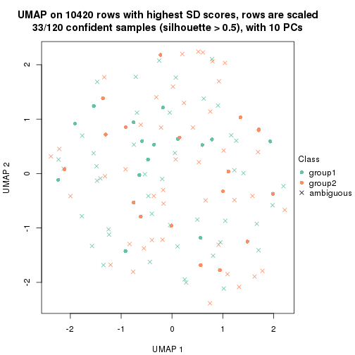
dimension_reduction(res, k = 3, method = "UMAP")
dimension_reduction(res, k = 4, method = "UMAP")
dimension_reduction(res, k = 5, method = "UMAP")
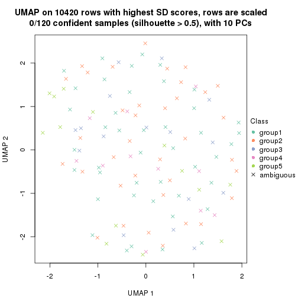
dimension_reduction(res, k = 6, method = "UMAP")
Following heatmap shows how subgroups are split when increasing k:
collect_classes(res)
If matrix rows can be associated to genes, consider to use GO_Enrichment(res,
...) to perform function enrichment for the signature genes.
The object with results only for a single top-value method and a single partition method can be extracted as:
res = res_list["SD", "mclust"]
# you can also extract it by
# res = res_list["SD:mclust"]
A summary of res and all the functions that can be applied to it:
res
#> A 'ConsensusPartition' object with k = 2, 3, 4, 5, 6.
#> On a matrix with 10420 rows and 120 columns.
#> Top rows (1000, 2000, 3000, 4000, 5000) are extracted by 'SD' method.
#> Subgroups are detected by 'mclust' method.
#> Performed in total 1250 partitions by row resampling.
#> Best k for subgroups seems to be 4.
#>
#> Following methods can be applied to this 'ConsensusPartition' object:
#> [1] "cola_report" "collect_classes" "collect_plots"
#> [4] "collect_stats" "colnames" "compare_signatures"
#> [7] "consensus_heatmap" "dimension_reduction" "functional_enrichment"
#> [10] "get_anno_col" "get_anno" "get_classes"
#> [13] "get_consensus" "get_matrix" "get_membership"
#> [16] "get_param" "get_signatures" "get_stats"
#> [19] "is_best_k" "is_stable_k" "membership_heatmap"
#> [22] "ncol" "nrow" "plot_ecdf"
#> [25] "rownames" "select_partition_number" "show"
#> [28] "suggest_best_k" "test_to_known_factors"
collect_plots() function collects all the plots made from res for all k (number of partitions)
into one single page to provide an easy and fast comparison between different k.
collect_plots(res)
The plots are:
k and the heatmap of
predicted classes for each k.k.k.k.All the plots in panels can be made by individual functions and they are plotted later in this section.
select_partition_number() produces several plots showing different
statistics for choosing “optimized” k. There are following statistics:
k;k, the area increased is defined as \(A_k - A_{k-1}\).The detailed explanations of these statistics can be found in the cola vignette.
Generally speaking, lower PAC score, higher mean silhouette score or higher
concordance corresponds to better partition. Rand index and Jaccard index
measure how similar the current partition is compared to partition with k-1.
If they are too similar, we won't accept k is better than k-1.
select_partition_number(res)
The numeric values for all these statistics can be obtained by get_stats().
get_stats(res)
#> k 1-PAC mean_silhouette concordance area_increased Rand Jaccard
#> 2 2 0.000980 0.000 0.798 0.2840 1.000 1.000
#> 3 3 0.000000 0.000 0.673 0.5614 1.000 1.000
#> 4 4 0.000776 0.266 0.544 0.3275 0.669 0.669
#> 5 5 0.012110 0.187 0.487 0.1498 0.796 0.704
#> 6 6 0.043161 0.165 0.448 0.0728 0.945 0.892
suggest_best_k() suggests the best \(k\) based on these statistics. The rules are as follows:
NA.suggest_best_k(res)
#> [1] 4
Following shows the table of the partitions (You need to click the show/hide
code output link to see it). The membership matrix (columns with name p*)
is inferred by
clue::cl_consensus()
function with the SE method. Basically the value in the membership matrix
represents the probability to belong to a certain group. The finall class
label for an item is determined with the group with highest probability it
belongs to.
In get_classes() function, the entropy is calculated from the membership
matrix and the silhouette score is calculated from the consensus matrix.
cbind(get_classes(res, k = 2), get_membership(res, k = 2))
#> class entropy silhouette p1 p2
#> SRR572528 2 0.634 0 NA 0.840
#> SRR572529 2 0.584 0 NA 0.860
#> SRR572530 2 0.781 0 NA 0.768
#> SRR572531 2 0.855 0 NA 0.720
#> SRR572532 2 0.680 0 NA 0.820
#> SRR572533 2 0.714 0 NA 0.804
#> SRR572534 2 0.671 0 NA 0.824
#> SRR572535 2 0.689 0 NA 0.816
#> SRR572536 2 0.745 0 NA 0.788
#> SRR572537 2 0.808 0 NA 0.752
#> SRR572538 2 0.802 0 NA 0.756
#> SRR572539 2 0.738 0 NA 0.792
#> SRR572540 2 0.876 0 NA 0.704
#> SRR572541 2 0.833 0 NA 0.736
#> SRR572542 2 0.653 0 NA 0.832
#> SRR572543 2 0.900 0 NA 0.684
#> SRR572544 2 0.788 0 NA 0.764
#> SRR572545 2 0.615 0 NA 0.848
#> SRR572546 2 0.615 0 NA 0.848
#> SRR572547 2 0.871 0 NA 0.708
#> SRR572548 2 0.850 0 NA 0.724
#> SRR572549 2 0.738 0 NA 0.792
#> SRR572550 2 0.814 0 NA 0.748
#> SRR572551 2 0.738 0 NA 0.792
#> SRR572552 2 0.861 0 NA 0.716
#> SRR572553 2 0.827 0 NA 0.740
#> SRR572554 2 0.904 0 NA 0.680
#> SRR572555 2 0.760 0 NA 0.780
#> SRR572556 2 0.706 0 NA 0.808
#> SRR572557 2 0.760 0 NA 0.780
#> SRR572558 2 0.775 0 NA 0.772
#> SRR572559 2 0.788 0 NA 0.764
#> SRR572560 2 0.781 0 NA 0.768
#> SRR572561 2 0.808 0 NA 0.752
#> SRR572562 2 0.808 0 NA 0.752
#> SRR572563 2 0.781 0 NA 0.768
#> SRR572564 2 0.753 0 NA 0.784
#> SRR572565 2 0.802 0 NA 0.756
#> SRR572566 2 0.866 0 NA 0.712
#> SRR572567 2 0.745 0 NA 0.788
#> SRR572568 2 0.808 0 NA 0.752
#> SRR572569 2 0.730 0 NA 0.796
#> SRR572570 2 0.662 0 NA 0.828
#> SRR572571 2 0.827 0 NA 0.740
#> SRR572572 2 0.615 0 NA 0.848
#> SRR572573 2 0.714 0 NA 0.804
#> SRR572574 2 0.760 0 NA 0.780
#> SRR572575 2 0.714 0 NA 0.804
#> SRR572576 2 0.541 0 NA 0.876
#> SRR572577 2 0.788 0 NA 0.764
#> SRR572578 2 0.680 0 NA 0.820
#> SRR572579 2 0.788 0 NA 0.764
#> SRR572580 2 0.615 0 NA 0.848
#> SRR572581 2 0.788 0 NA 0.764
#> SRR572582 2 0.802 0 NA 0.756
#> SRR572583 2 0.644 0 NA 0.836
#> SRR572584 2 0.722 0 NA 0.800
#> SRR572585 2 0.584 0 NA 0.860
#> SRR572586 2 0.714 0 NA 0.804
#> SRR572587 2 0.753 0 NA 0.784
#> SRR572588 2 0.753 0 NA 0.784
#> SRR572589 2 0.644 0 NA 0.836
#> SRR572590 2 0.625 0 NA 0.844
#> SRR572591 2 0.767 0 NA 0.776
#> SRR572592 2 0.745 0 NA 0.788
#> SRR572593 2 0.767 0 NA 0.776
#> SRR572594 2 0.634 0 NA 0.840
#> SRR572595 2 0.653 0 NA 0.832
#> SRR572596 2 0.615 0 NA 0.848
#> SRR572597 2 0.541 0 NA 0.876
#> SRR572598 2 0.605 0 NA 0.852
#> SRR572599 2 0.615 0 NA 0.848
#> SRR572600 2 0.697 0 NA 0.812
#> SRR572601 2 0.671 0 NA 0.824
#> SRR572602 2 0.767 0 NA 0.776
#> SRR572603 2 0.482 0 NA 0.896
#> SRR572604 2 0.706 0 NA 0.808
#> SRR572605 2 0.605 0 NA 0.852
#> SRR572606 2 0.595 0 NA 0.856
#> SRR572607 2 0.625 0 NA 0.844
#> SRR572608 2 0.753 0 NA 0.784
#> SRR572609 2 0.697 0 NA 0.812
#> SRR572610 2 0.595 0 NA 0.856
#> SRR572611 2 0.760 0 NA 0.780
#> SRR572612 2 0.714 0 NA 0.804
#> SRR572613 2 0.653 0 NA 0.832
#> SRR572614 2 0.855 0 NA 0.720
#> SRR572615 2 0.821 0 NA 0.744
#> SRR572616 2 0.795 0 NA 0.760
#> SRR572617 2 0.595 0 NA 0.856
#> SRR572618 2 0.595 0 NA 0.856
#> SRR572619 2 0.738 0 NA 0.792
#> SRR572620 2 0.518 0 NA 0.884
#> SRR572621 2 0.625 0 NA 0.844
#> SRR572622 2 0.584 0 NA 0.860
#> SRR572623 2 0.680 0 NA 0.820
#> SRR572624 2 0.552 0 NA 0.872
#> SRR572625 2 0.689 0 NA 0.816
#> SRR572626 2 0.866 0 NA 0.712
#> SRR572627 2 0.671 0 NA 0.824
#> SRR572628 2 0.781 0 NA 0.768
#> SRR572629 2 0.529 0 NA 0.880
#> SRR572630 2 0.788 0 NA 0.764
#> SRR572631 2 0.753 0 NA 0.784
#> SRR572632 2 0.745 0 NA 0.788
#> SRR572633 2 0.738 0 NA 0.792
#> SRR572634 2 0.634 0 NA 0.840
#> SRR572635 2 0.653 0 NA 0.832
#> SRR572636 2 0.722 0 NA 0.800
#> SRR572637 2 0.671 0 NA 0.824
#> SRR572638 2 0.574 0 NA 0.864
#> SRR572639 2 0.839 0 NA 0.732
#> SRR572640 2 0.760 0 NA 0.780
#> SRR572641 2 0.680 0 NA 0.820
#> SRR572642 2 0.653 0 NA 0.832
#> SRR572643 2 0.730 0 NA 0.796
#> SRR572644 2 0.738 0 NA 0.792
#> SRR572645 2 0.595 0 NA 0.856
#> SRR572646 2 0.680 0 NA 0.820
#> SRR572647 2 0.775 0 NA 0.772
cbind(get_classes(res, k = 3), get_membership(res, k = 3))
#> class entropy silhouette p1 p2 p3
#> SRR572528 2 0.648 0 NA 0.728 0.048
#> SRR572529 2 0.786 0 NA 0.668 0.148
#> SRR572530 2 0.759 0 NA 0.640 0.072
#> SRR572531 2 0.718 0 NA 0.672 0.060
#> SRR572532 2 0.742 0 NA 0.680 0.088
#> SRR572533 2 0.718 0 NA 0.716 0.116
#> SRR572534 2 0.640 0 NA 0.740 0.052
#> SRR572535 2 0.744 0 NA 0.692 0.108
#> SRR572536 2 0.760 0 NA 0.656 0.084
#> SRR572537 2 0.745 0 NA 0.668 0.080
#> SRR572538 2 0.733 0 NA 0.672 0.072
#> SRR572539 2 0.706 0 NA 0.704 0.076
#> SRR572540 2 0.749 0 NA 0.620 0.056
#> SRR572541 2 0.801 0 NA 0.628 0.104
#> SRR572542 2 0.677 0 NA 0.724 0.068
#> SRR572543 2 0.774 0 NA 0.660 0.104
#> SRR572544 2 0.706 0 NA 0.708 0.080
#> SRR572545 2 0.556 0 NA 0.800 0.048
#> SRR572546 2 0.684 0 NA 0.732 0.088
#> SRR572547 2 0.800 0 NA 0.620 0.096
#> SRR572548 2 0.750 0 NA 0.652 0.072
#> SRR572549 2 0.695 0 NA 0.720 0.084
#> SRR572550 2 0.721 0 NA 0.644 0.048
#> SRR572551 2 0.711 0 NA 0.696 0.072
#> SRR572552 2 0.670 0 NA 0.712 0.052
#> SRR572553 2 0.840 0 NA 0.592 0.120
#> SRR572554 2 0.752 0 NA 0.660 0.080
#> SRR572555 2 0.704 0 NA 0.688 0.060
#> SRR572556 2 0.615 0 NA 0.752 0.044
#> SRR572557 2 0.720 0 NA 0.676 0.064
#> SRR572558 2 0.681 0 NA 0.716 0.064
#> SRR572559 2 0.710 0 NA 0.704 0.080
#> SRR572560 2 0.826 0 NA 0.604 0.112
#> SRR572561 2 0.714 0 NA 0.700 0.080
#> SRR572562 2 0.702 0 NA 0.700 0.068
#> SRR572563 2 0.832 0 NA 0.600 0.116
#> SRR572564 2 0.739 0 NA 0.636 0.056
#> SRR572565 2 0.794 0 NA 0.644 0.112
#> SRR572566 2 0.651 0 NA 0.720 0.044
#> SRR572567 2 0.626 0 NA 0.748 0.048
#> SRR572568 2 0.780 0 NA 0.636 0.088
#> SRR572569 2 0.615 0 NA 0.752 0.044
#> SRR572570 2 0.750 0 NA 0.684 0.104
#> SRR572571 2 0.674 0 NA 0.688 0.040
#> SRR572572 2 0.784 0 NA 0.664 0.128
#> SRR572573 2 0.791 0 NA 0.648 0.112
#> SRR572574 2 0.760 0 NA 0.656 0.084
#> SRR572575 2 0.737 0 NA 0.688 0.092
#> SRR572576 2 0.597 0 NA 0.780 0.060
#> SRR572577 2 0.680 0 NA 0.708 0.056
#> SRR572578 2 0.795 0 NA 0.640 0.108
#> SRR572579 2 0.770 0 NA 0.664 0.104
#> SRR572580 2 0.654 0 NA 0.752 0.084
#> SRR572581 2 0.698 0 NA 0.704 0.068
#> SRR572582 2 0.742 0 NA 0.672 0.080
#> SRR572583 2 0.757 0 NA 0.660 0.084
#> SRR572584 2 0.767 0 NA 0.652 0.088
#> SRR572585 2 0.633 0 NA 0.768 0.088
#> SRR572586 2 0.650 0 NA 0.736 0.056
#> SRR572587 2 0.798 0 NA 0.636 0.108
#> SRR572588 2 0.678 0 NA 0.704 0.052
#> SRR572589 2 0.852 0 NA 0.612 0.184
#> SRR572590 2 0.745 0 NA 0.700 0.140
#> SRR572591 2 0.642 0 NA 0.728 0.044
#> SRR572592 2 0.852 0 NA 0.588 0.132
#> SRR572593 2 0.702 0 NA 0.704 0.072
#> SRR572594 2 0.761 0 NA 0.664 0.092
#> SRR572595 2 0.790 0 NA 0.652 0.116
#> SRR572596 2 0.732 0 NA 0.704 0.112
#> SRR572597 2 0.805 0 NA 0.652 0.196
#> SRR572598 2 0.880 0 NA 0.580 0.240
#> SRR572599 2 0.768 0 NA 0.676 0.120
#> SRR572600 2 0.715 0 NA 0.692 0.072
#> SRR572601 2 0.807 0 NA 0.648 0.144
#> SRR572602 2 0.832 0 NA 0.588 0.108
#> SRR572603 2 0.639 0 NA 0.752 0.064
#> SRR572604 2 0.764 0 NA 0.660 0.092
#> SRR572605 2 0.791 0 NA 0.648 0.112
#> SRR572606 2 0.782 0 NA 0.664 0.124
#> SRR572607 2 0.744 0 NA 0.692 0.108
#> SRR572608 2 0.715 0 NA 0.692 0.072
#> SRR572609 2 0.635 0 NA 0.752 0.060
#> SRR572610 2 0.743 0 NA 0.660 0.072
#> SRR572611 2 0.691 0 NA 0.724 0.084
#> SRR572612 2 0.765 0 NA 0.684 0.140
#> SRR572613 2 0.814 0 NA 0.616 0.108
#> SRR572614 2 0.846 0 NA 0.588 0.124
#> SRR572615 2 0.733 0 NA 0.660 0.064
#> SRR572616 2 0.797 0 NA 0.624 0.096
#> SRR572617 2 0.723 0 NA 0.692 0.080
#> SRR572618 2 0.825 0 NA 0.628 0.140
#> SRR572619 2 0.832 0 NA 0.600 0.116
#> SRR572620 2 0.658 0 NA 0.736 0.064
#> SRR572621 2 0.696 0 NA 0.728 0.100
#> SRR572622 2 0.778 0 NA 0.656 0.104
#> SRR572623 2 0.831 0 NA 0.632 0.192
#> SRR572624 2 0.803 0 NA 0.656 0.172
#> SRR572625 2 0.736 0 NA 0.692 0.096
#> SRR572626 2 0.720 0 NA 0.704 0.092
#> SRR572627 2 0.666 0 NA 0.748 0.096
#> SRR572628 2 0.909 0 NA 0.544 0.188
#> SRR572629 2 0.800 0 NA 0.656 0.148
#> SRR572630 2 0.811 0 NA 0.628 0.116
#> SRR572631 2 0.776 0 NA 0.672 0.128
#> SRR572632 2 0.892 0 NA 0.544 0.152
#> SRR572633 2 0.759 0 NA 0.688 0.136
#> SRR572634 2 0.832 0 NA 0.620 0.140
#> SRR572635 2 0.861 0 NA 0.604 0.204
#> SRR572636 2 0.738 0 NA 0.676 0.080
#> SRR572637 2 0.698 0 NA 0.704 0.068
#> SRR572638 2 0.660 0 NA 0.748 0.084
#> SRR572639 2 0.802 0 NA 0.604 0.088
#> SRR572640 2 0.756 0 NA 0.672 0.096
#> SRR572641 2 0.733 0 NA 0.672 0.072
#> SRR572642 2 0.804 0 NA 0.644 0.128
#> SRR572643 2 0.773 0 NA 0.664 0.108
#> SRR572644 2 0.698 0 NA 0.708 0.072
#> SRR572645 2 0.840 0 NA 0.620 0.160
#> SRR572646 2 0.808 0 NA 0.652 0.172
#> SRR572647 2 0.863 0 NA 0.576 0.136
cbind(get_classes(res, k = 4), get_membership(res, k = 4))
#> class entropy silhouette p1 p2 p3 p4
#> SRR572528 1 0.791 0.37453 0.584 0.184 0.172 NA
#> SRR572529 2 0.782 0.41945 0.280 0.556 0.108 NA
#> SRR572530 1 0.724 0.43948 0.656 0.140 0.140 NA
#> SRR572531 1 0.587 0.48410 0.752 0.068 0.128 NA
#> SRR572532 1 0.760 0.34682 0.620 0.080 0.196 NA
#> SRR572533 1 0.858 -0.22677 0.364 0.244 0.360 NA
#> SRR572534 1 0.839 0.31751 0.544 0.124 0.228 NA
#> SRR572535 1 0.687 0.09478 0.552 0.368 0.036 NA
#> SRR572536 3 0.751 0.45302 0.340 0.080 0.536 NA
#> SRR572537 1 0.740 0.28893 0.612 0.060 0.240 NA
#> SRR572538 1 0.526 0.49769 0.796 0.072 0.064 NA
#> SRR572539 1 0.716 0.45312 0.664 0.080 0.160 NA
#> SRR572540 1 0.627 0.46010 0.712 0.064 0.176 NA
#> SRR572541 1 0.708 0.37046 0.644 0.036 0.196 NA
#> SRR572542 1 0.693 0.30233 0.608 0.288 0.032 NA
#> SRR572543 1 0.584 0.50235 0.760 0.104 0.068 NA
#> SRR572544 1 0.636 0.42635 0.700 0.192 0.060 NA
#> SRR572545 1 0.702 0.45865 0.668 0.140 0.140 NA
#> SRR572546 1 0.834 0.16330 0.520 0.092 0.280 NA
#> SRR572547 1 0.604 0.47412 0.748 0.092 0.096 NA
#> SRR572548 1 0.511 0.48346 0.800 0.052 0.100 NA
#> SRR572549 1 0.669 0.45922 0.692 0.152 0.108 NA
#> SRR572550 1 0.707 0.23579 0.544 0.036 0.364 NA
#> SRR572551 1 0.554 0.48386 0.760 0.148 0.028 NA
#> SRR572552 1 0.591 0.48986 0.744 0.140 0.076 NA
#> SRR572553 1 0.682 0.38760 0.656 0.032 0.212 NA
#> SRR572554 1 0.394 0.49138 0.864 0.052 0.044 NA
#> SRR572555 1 0.688 0.41247 0.664 0.056 0.204 NA
#> SRR572556 1 0.722 0.36737 0.624 0.240 0.060 NA
#> SRR572557 1 0.712 0.46075 0.664 0.116 0.156 NA
#> SRR572558 1 0.640 0.48057 0.724 0.068 0.108 NA
#> SRR572559 1 0.613 0.48975 0.744 0.088 0.076 NA
#> SRR572560 1 0.744 0.32551 0.588 0.056 0.276 NA
#> SRR572561 1 0.662 0.46612 0.700 0.068 0.156 NA
#> SRR572562 1 0.665 0.43895 0.680 0.200 0.056 NA
#> SRR572563 3 0.687 0.26780 0.408 0.008 0.504 NA
#> SRR572564 3 0.724 0.45171 0.328 0.056 0.564 NA
#> SRR572565 1 0.609 0.46852 0.736 0.040 0.108 NA
#> SRR572566 1 0.633 0.47333 0.716 0.048 0.156 NA
#> SRR572567 1 0.561 0.48637 0.760 0.144 0.056 NA
#> SRR572568 1 0.786 0.13312 0.492 0.068 0.368 NA
#> SRR572569 1 0.568 0.48965 0.768 0.076 0.104 NA
#> SRR572570 1 0.899 0.02701 0.424 0.268 0.236 NA
#> SRR572571 1 0.658 0.48646 0.708 0.124 0.108 NA
#> SRR572572 1 0.772 -0.20595 0.448 0.416 0.104 NA
#> SRR572573 1 0.684 0.45467 0.688 0.060 0.124 NA
#> SRR572574 1 0.796 0.23925 0.540 0.076 0.296 NA
#> SRR572575 1 0.760 0.28737 0.584 0.256 0.112 NA
#> SRR572576 1 0.832 0.33738 0.548 0.180 0.196 NA
#> SRR572577 1 0.796 0.40595 0.600 0.144 0.160 NA
#> SRR572578 1 0.864 0.01021 0.472 0.184 0.280 NA
#> SRR572579 1 0.651 0.46485 0.712 0.072 0.076 NA
#> SRR572580 1 0.830 0.29544 0.544 0.228 0.152 NA
#> SRR572581 1 0.718 0.38675 0.636 0.224 0.072 NA
#> SRR572582 1 0.780 0.27758 0.556 0.088 0.288 NA
#> SRR572583 1 0.819 -0.15001 0.456 0.076 0.380 NA
#> SRR572584 1 0.865 -0.05146 0.436 0.116 0.356 NA
#> SRR572585 1 0.863 0.26703 0.516 0.192 0.204 NA
#> SRR572586 1 0.708 0.47230 0.676 0.112 0.128 NA
#> SRR572587 1 0.804 0.22436 0.540 0.052 0.268 NA
#> SRR572588 1 0.659 0.46489 0.712 0.080 0.116 NA
#> SRR572589 2 0.895 0.20382 0.296 0.384 0.264 NA
#> SRR572590 2 0.738 0.41696 0.372 0.520 0.056 NA
#> SRR572591 1 0.752 0.44832 0.640 0.120 0.148 NA
#> SRR572592 1 0.909 -0.32328 0.364 0.076 0.348 NA
#> SRR572593 1 0.754 0.23823 0.560 0.308 0.056 NA
#> SRR572594 1 0.954 -0.09267 0.380 0.236 0.252 NA
#> SRR572595 1 0.944 -0.33986 0.352 0.128 0.336 NA
#> SRR572596 2 0.864 0.27097 0.392 0.404 0.092 NA
#> SRR572597 1 0.972 -0.39291 0.316 0.312 0.152 NA
#> SRR572598 2 0.898 0.22538 0.132 0.484 0.228 NA
#> SRR572599 1 0.835 0.32096 0.564 0.116 0.144 NA
#> SRR572600 1 0.811 0.09951 0.508 0.048 0.308 NA
#> SRR572601 3 0.965 -0.00379 0.276 0.272 0.324 NA
#> SRR572602 1 0.755 -0.06370 0.492 0.016 0.364 NA
#> SRR572603 1 0.845 0.34024 0.556 0.172 0.136 NA
#> SRR572604 1 0.767 0.37791 0.604 0.056 0.200 NA
#> SRR572605 1 0.972 -0.31620 0.352 0.212 0.272 NA
#> SRR572606 2 0.833 0.34316 0.360 0.460 0.108 NA
#> SRR572607 1 0.864 0.18167 0.508 0.116 0.256 NA
#> SRR572608 1 0.713 0.45249 0.664 0.164 0.072 NA
#> SRR572609 1 0.733 0.28400 0.592 0.280 0.052 NA
#> SRR572610 1 0.939 0.00389 0.428 0.204 0.224 NA
#> SRR572611 1 0.705 0.44933 0.668 0.160 0.060 NA
#> SRR572612 1 0.781 0.22524 0.564 0.276 0.076 NA
#> SRR572613 3 0.818 0.35552 0.372 0.052 0.456 NA
#> SRR572614 1 0.803 0.29362 0.588 0.088 0.180 NA
#> SRR572615 1 0.736 0.41286 0.628 0.084 0.216 NA
#> SRR572616 1 0.920 -0.01964 0.428 0.108 0.268 NA
#> SRR572617 2 0.902 0.18251 0.304 0.372 0.264 NA
#> SRR572618 3 0.950 0.26008 0.320 0.216 0.344 NA
#> SRR572619 3 0.847 0.46002 0.332 0.060 0.460 NA
#> SRR572620 1 0.853 -0.12277 0.448 0.228 0.284 NA
#> SRR572621 1 0.860 -0.19963 0.408 0.392 0.108 NA
#> SRR572622 1 0.913 -0.27089 0.380 0.140 0.360 NA
#> SRR572623 2 0.784 0.39015 0.316 0.532 0.056 NA
#> SRR572624 1 0.953 -0.32214 0.380 0.284 0.144 NA
#> SRR572625 1 0.909 0.07187 0.480 0.152 0.172 NA
#> SRR572626 1 0.478 0.49727 0.820 0.084 0.044 NA
#> SRR572627 1 0.789 0.39301 0.600 0.100 0.108 NA
#> SRR572628 3 0.740 0.45722 0.272 0.052 0.592 NA
#> SRR572629 1 0.936 -0.08062 0.440 0.204 0.160 NA
#> SRR572630 3 0.778 0.42277 0.380 0.040 0.480 NA
#> SRR572631 1 0.868 0.20237 0.508 0.228 0.172 NA
#> SRR572632 3 0.705 0.46941 0.248 0.044 0.628 NA
#> SRR572633 1 0.706 0.31868 0.612 0.276 0.056 NA
#> SRR572634 3 0.872 0.21510 0.200 0.164 0.520 NA
#> SRR572635 2 0.919 0.00107 0.196 0.364 0.348 NA
#> SRR572636 1 0.653 0.41545 0.696 0.040 0.168 NA
#> SRR572637 1 0.802 0.37784 0.584 0.200 0.132 NA
#> SRR572638 1 0.775 0.22320 0.556 0.284 0.112 NA
#> SRR572639 1 0.666 0.38651 0.664 0.024 0.208 NA
#> SRR572640 1 0.789 0.20179 0.568 0.056 0.244 NA
#> SRR572641 1 0.832 0.24479 0.536 0.112 0.256 NA
#> SRR572642 3 0.943 0.02737 0.296 0.284 0.324 NA
#> SRR572643 1 0.611 0.46165 0.732 0.036 0.112 NA
#> SRR572644 1 0.806 0.35030 0.580 0.180 0.164 NA
#> SRR572645 1 0.958 -0.32523 0.340 0.328 0.160 NA
#> SRR572646 2 0.801 0.38008 0.364 0.484 0.076 NA
#> SRR572647 3 0.704 0.45282 0.268 0.076 0.616 NA
cbind(get_classes(res, k = 5), get_membership(res, k = 5))
#> class entropy silhouette p1 p2 p3 p4 p5
#> SRR572528 2 0.797 0.21267 0.144 0.504 0.076 0.240 0.036
#> SRR572529 4 0.733 0.08183 0.072 0.204 0.124 0.576 0.024
#> SRR572530 2 0.749 0.32277 0.144 0.556 0.016 0.196 0.088
#> SRR572531 2 0.639 0.42310 0.104 0.688 0.032 0.076 0.100
#> SRR572532 2 0.786 0.20563 0.216 0.500 0.012 0.104 0.168
#> SRR572533 1 0.894 -0.00503 0.308 0.288 0.072 0.268 0.064
#> SRR572534 2 0.860 0.18386 0.168 0.452 0.036 0.180 0.164
#> SRR572535 4 0.649 0.07926 0.012 0.428 0.036 0.472 0.052
#> SRR572536 1 0.731 0.25469 0.544 0.256 0.032 0.132 0.036
#> SRR572537 2 0.781 0.16343 0.304 0.476 0.040 0.048 0.132
#> SRR572538 2 0.568 0.45818 0.028 0.736 0.052 0.072 0.112
#> SRR572539 2 0.727 0.40023 0.108 0.620 0.044 0.116 0.112
#> SRR572540 2 0.641 0.44833 0.148 0.680 0.040 0.072 0.060
#> SRR572541 2 0.698 0.23474 0.140 0.604 0.032 0.036 0.188
#> SRR572542 2 0.676 0.06326 0.012 0.492 0.040 0.384 0.072
#> SRR572543 2 0.582 0.45378 0.024 0.700 0.024 0.084 0.168
#> SRR572544 2 0.649 0.30402 0.036 0.620 0.036 0.252 0.056
#> SRR572545 2 0.723 0.40069 0.100 0.608 0.052 0.180 0.060
#> SRR572546 2 0.824 0.11830 0.304 0.444 0.040 0.116 0.096
#> SRR572547 2 0.592 0.39339 0.052 0.700 0.028 0.048 0.172
#> SRR572548 2 0.706 0.44221 0.088 0.644 0.064 0.088 0.116
#> SRR572549 2 0.709 0.38630 0.088 0.620 0.040 0.176 0.076
#> SRR572550 2 0.731 0.21369 0.320 0.484 0.004 0.064 0.128
#> SRR572551 2 0.605 0.39808 0.012 0.672 0.032 0.180 0.104
#> SRR572552 2 0.685 0.40524 0.068 0.636 0.044 0.184 0.068
#> SRR572553 2 0.731 0.29338 0.168 0.588 0.060 0.032 0.152
#> SRR572554 2 0.515 0.46030 0.036 0.760 0.016 0.064 0.124
#> SRR572555 2 0.721 0.24210 0.156 0.584 0.020 0.060 0.180
#> SRR572556 2 0.692 0.19670 0.024 0.556 0.052 0.300 0.068
#> SRR572557 2 0.724 0.39418 0.100 0.616 0.036 0.132 0.116
#> SRR572558 2 0.706 0.39888 0.068 0.624 0.040 0.100 0.168
#> SRR572559 2 0.630 0.43895 0.028 0.684 0.048 0.132 0.108
#> SRR572560 2 0.816 0.25382 0.224 0.488 0.052 0.060 0.176
#> SRR572561 2 0.685 0.38806 0.096 0.644 0.024 0.120 0.116
#> SRR572562 2 0.658 0.31795 0.040 0.608 0.024 0.256 0.072
#> SRR572563 1 0.737 0.07282 0.500 0.328 0.052 0.028 0.092
#> SRR572564 1 0.697 0.15407 0.568 0.280 0.028 0.060 0.064
#> SRR572565 2 0.686 0.41373 0.080 0.640 0.064 0.044 0.172
#> SRR572566 2 0.653 0.41063 0.108 0.660 0.020 0.064 0.148
#> SRR572567 2 0.614 0.37800 0.060 0.656 0.020 0.224 0.040
#> SRR572568 2 0.774 0.01447 0.348 0.420 0.008 0.072 0.152
#> SRR572569 2 0.664 0.45353 0.092 0.680 0.072 0.088 0.068
#> SRR572570 4 0.871 0.15217 0.168 0.336 0.040 0.348 0.108
#> SRR572571 2 0.685 0.42532 0.108 0.632 0.016 0.152 0.092
#> SRR572572 4 0.708 0.23443 0.088 0.312 0.044 0.532 0.024
#> SRR572573 2 0.795 0.35172 0.100 0.560 0.128 0.068 0.144
#> SRR572574 2 0.834 0.21777 0.252 0.468 0.044 0.104 0.132
#> SRR572575 2 0.791 0.08040 0.060 0.464 0.032 0.304 0.140
#> SRR572576 2 0.879 0.06101 0.168 0.400 0.052 0.272 0.108
#> SRR572577 2 0.803 0.29297 0.132 0.536 0.040 0.140 0.152
#> SRR572578 2 0.880 -0.00232 0.224 0.412 0.044 0.196 0.124
#> SRR572579 2 0.771 0.30233 0.060 0.580 0.148 0.088 0.124
#> SRR572580 2 0.848 0.18760 0.132 0.464 0.112 0.240 0.052
#> SRR572581 2 0.750 0.15303 0.064 0.472 0.012 0.328 0.124
#> SRR572582 2 0.804 0.16335 0.212 0.500 0.024 0.104 0.160
#> SRR572583 1 0.790 0.00381 0.416 0.368 0.024 0.096 0.096
#> SRR572584 1 0.883 0.08124 0.348 0.344 0.060 0.128 0.120
#> SRR572585 2 0.904 0.03095 0.148 0.404 0.092 0.248 0.108
#> SRR572586 2 0.737 0.42258 0.088 0.596 0.032 0.136 0.148
#> SRR572587 2 0.896 0.11337 0.236 0.420 0.136 0.080 0.128
#> SRR572588 2 0.714 0.42284 0.092 0.632 0.060 0.076 0.140
#> SRR572589 4 0.895 0.06093 0.232 0.180 0.092 0.412 0.084
#> SRR572590 4 0.730 0.17778 0.016 0.272 0.092 0.540 0.080
#> SRR572591 2 0.777 0.39258 0.156 0.556 0.032 0.144 0.112
#> SRR572592 5 0.856 0.00000 0.260 0.300 0.032 0.072 0.336
#> SRR572593 2 0.670 0.09384 0.024 0.496 0.020 0.384 0.076
#> SRR572594 2 0.867 -0.24903 0.160 0.332 0.012 0.292 0.204
#> SRR572595 1 0.920 -0.21530 0.280 0.272 0.040 0.164 0.244
#> SRR572596 4 0.844 0.23012 0.068 0.292 0.100 0.444 0.096
#> SRR572597 3 0.824 0.58017 0.076 0.212 0.432 0.256 0.024
#> SRR572598 4 0.833 -0.14521 0.132 0.104 0.312 0.420 0.032
#> SRR572599 2 0.880 0.05991 0.072 0.444 0.220 0.120 0.144
#> SRR572600 2 0.830 0.10418 0.292 0.448 0.084 0.048 0.128
#> SRR572601 1 0.934 0.08409 0.328 0.184 0.160 0.260 0.068
#> SRR572602 2 0.847 -0.12398 0.344 0.384 0.120 0.040 0.112
#> SRR572603 2 0.831 0.19523 0.068 0.504 0.144 0.200 0.084
#> SRR572604 2 0.849 0.29536 0.168 0.500 0.080 0.104 0.148
#> SRR572605 2 0.981 -0.35894 0.244 0.244 0.228 0.132 0.152
#> SRR572606 4 0.711 0.27052 0.040 0.216 0.040 0.592 0.112
#> SRR572607 2 0.875 0.14114 0.180 0.432 0.044 0.140 0.204
#> SRR572608 2 0.726 0.33930 0.016 0.572 0.064 0.160 0.188
#> SRR572609 2 0.771 0.05707 0.028 0.464 0.060 0.332 0.116
#> SRR572610 4 0.885 -0.08676 0.196 0.296 0.024 0.328 0.156
#> SRR572611 2 0.726 0.34161 0.044 0.552 0.016 0.196 0.192
#> SRR572612 2 0.820 0.08667 0.052 0.484 0.092 0.260 0.112
#> SRR572613 1 0.796 0.08699 0.460 0.304 0.024 0.088 0.124
#> SRR572614 2 0.755 0.01297 0.112 0.532 0.044 0.048 0.264
#> SRR572615 2 0.747 0.35513 0.156 0.568 0.020 0.088 0.168
#> SRR572616 2 0.813 -0.41536 0.236 0.352 0.008 0.076 0.328
#> SRR572617 4 0.886 0.04550 0.184 0.244 0.160 0.380 0.032
#> SRR572618 1 0.913 0.01913 0.396 0.224 0.128 0.172 0.080
#> SRR572619 1 0.849 -0.05491 0.420 0.304 0.108 0.048 0.120
#> SRR572620 2 0.882 -0.17223 0.248 0.368 0.104 0.240 0.040
#> SRR572621 4 0.739 0.24886 0.048 0.332 0.032 0.496 0.092
#> SRR572622 1 0.929 0.14117 0.344 0.264 0.136 0.180 0.076
#> SRR572623 4 0.829 -0.05354 0.032 0.216 0.168 0.476 0.108
#> SRR572624 3 0.808 0.57876 0.080 0.260 0.368 0.288 0.004
#> SRR572625 2 0.847 -0.37757 0.144 0.376 0.028 0.116 0.336
#> SRR572626 2 0.558 0.44431 0.024 0.724 0.024 0.148 0.080
#> SRR572627 2 0.783 0.13649 0.068 0.464 0.032 0.112 0.324
#> SRR572628 1 0.776 0.06276 0.552 0.204 0.044 0.092 0.108
#> SRR572629 3 0.880 0.49607 0.084 0.296 0.348 0.224 0.048
#> SRR572630 1 0.766 0.03709 0.508 0.276 0.044 0.040 0.132
#> SRR572631 2 0.815 0.03162 0.108 0.424 0.016 0.308 0.144
#> SRR572632 1 0.667 0.16669 0.652 0.172 0.056 0.040 0.080
#> SRR572633 2 0.655 0.12332 0.012 0.508 0.012 0.364 0.104
#> SRR572634 1 0.812 0.20763 0.500 0.128 0.184 0.164 0.024
#> SRR572635 1 0.885 0.06451 0.328 0.128 0.184 0.324 0.036
#> SRR572636 2 0.656 0.32449 0.124 0.652 0.052 0.020 0.152
#> SRR572637 2 0.752 0.27828 0.084 0.544 0.016 0.220 0.136
#> SRR572638 2 0.772 0.01148 0.104 0.432 0.028 0.372 0.064
#> SRR572639 2 0.766 0.33265 0.196 0.560 0.088 0.036 0.120
#> SRR572640 2 0.764 -0.01524 0.212 0.524 0.032 0.044 0.188
#> SRR572641 2 0.848 -0.01755 0.308 0.412 0.040 0.108 0.132
#> SRR572642 1 0.919 0.11804 0.340 0.212 0.108 0.268 0.072
#> SRR572643 2 0.681 0.38940 0.112 0.644 0.080 0.024 0.140
#> SRR572644 2 0.783 0.29270 0.128 0.520 0.024 0.228 0.100
#> SRR572645 4 0.873 -0.30383 0.104 0.240 0.308 0.320 0.028
#> SRR572646 4 0.688 0.25302 0.040 0.268 0.068 0.584 0.040
#> SRR572647 1 0.731 0.23501 0.576 0.200 0.040 0.144 0.040
cbind(get_classes(res, k = 6), get_membership(res, k = 6))
#> class entropy silhouette p1 p2 p3 p4 p5 p6
#> SRR572528 5 0.810 0.22700 0.160 0.216 0.076 NA 0.460 0.052
#> SRR572529 2 0.787 0.05949 0.140 0.420 0.248 NA 0.160 0.012
#> SRR572530 5 0.764 0.31895 0.124 0.168 0.036 NA 0.540 0.076
#> SRR572531 5 0.587 0.34504 0.088 0.056 0.024 NA 0.676 0.148
#> SRR572532 5 0.772 0.16127 0.220 0.056 0.028 NA 0.472 0.188
#> SRR572533 1 0.851 0.12492 0.380 0.188 0.132 NA 0.228 0.040
#> SRR572534 5 0.830 0.08233 0.188 0.144 0.016 NA 0.412 0.192
#> SRR572535 2 0.669 0.07880 0.032 0.480 0.032 NA 0.376 0.040
#> SRR572536 1 0.620 0.27226 0.652 0.068 0.052 NA 0.176 0.028
#> SRR572537 5 0.769 0.13024 0.276 0.048 0.036 NA 0.464 0.136
#> SRR572538 5 0.599 0.40977 0.024 0.084 0.040 NA 0.684 0.132
#> SRR572539 5 0.750 0.30789 0.124 0.116 0.024 NA 0.528 0.180
#> SRR572540 5 0.670 0.35056 0.156 0.076 0.012 NA 0.608 0.116
#> SRR572541 5 0.709 0.11644 0.132 0.036 0.008 NA 0.516 0.256
#> SRR572542 5 0.700 0.07386 0.044 0.356 0.076 NA 0.468 0.036
#> SRR572543 5 0.630 0.41261 0.032 0.120 0.028 NA 0.656 0.124
#> SRR572544 5 0.677 0.28409 0.068 0.240 0.052 NA 0.572 0.056
#> SRR572545 5 0.716 0.36651 0.096 0.180 0.048 NA 0.576 0.076
#> SRR572546 5 0.846 -0.02035 0.336 0.108 0.052 NA 0.352 0.092
#> SRR572547 5 0.582 0.33089 0.048 0.064 0.004 NA 0.648 0.212
#> SRR572548 5 0.630 0.41177 0.080 0.072 0.036 NA 0.672 0.108
#> SRR572549 5 0.657 0.37207 0.128 0.136 0.028 NA 0.628 0.056
#> SRR572550 5 0.765 -0.00373 0.332 0.056 0.008 NA 0.392 0.168
#> SRR572551 5 0.602 0.38398 0.004 0.144 0.044 NA 0.664 0.100
#> SRR572552 5 0.583 0.41704 0.072 0.156 0.032 NA 0.684 0.040
#> SRR572553 5 0.718 0.22786 0.148 0.028 0.048 NA 0.532 0.220
#> SRR572554 5 0.488 0.40827 0.024 0.060 0.008 NA 0.760 0.108
#> SRR572555 5 0.700 0.20488 0.160 0.060 0.012 NA 0.528 0.224
#> SRR572556 5 0.710 0.18489 0.032 0.316 0.060 NA 0.500 0.052
#> SRR572557 5 0.725 0.33567 0.108 0.164 0.016 NA 0.556 0.124
#> SRR572558 5 0.709 0.33312 0.068 0.080 0.032 NA 0.592 0.172
#> SRR572559 5 0.689 0.37158 0.040 0.116 0.040 NA 0.588 0.188
#> SRR572560 5 0.826 0.15209 0.208 0.048 0.028 NA 0.436 0.164
#> SRR572561 5 0.676 0.28237 0.124 0.096 0.000 NA 0.584 0.160
#> SRR572562 5 0.680 0.30714 0.044 0.244 0.040 NA 0.576 0.056
#> SRR572563 1 0.688 0.06780 0.540 0.012 0.036 NA 0.256 0.116
#> SRR572564 1 0.712 0.08798 0.540 0.048 0.016 NA 0.248 0.080
#> SRR572565 5 0.714 0.32708 0.088 0.044 0.032 NA 0.572 0.200
#> SRR572566 5 0.651 0.35948 0.120 0.060 0.020 NA 0.632 0.140
#> SRR572567 5 0.613 0.35499 0.084 0.172 0.028 NA 0.656 0.028
#> SRR572568 5 0.825 -0.13446 0.316 0.084 0.024 NA 0.336 0.200
#> SRR572569 5 0.628 0.40910 0.080 0.088 0.060 NA 0.672 0.084
#> SRR572570 2 0.879 0.16248 0.216 0.328 0.052 NA 0.264 0.072
#> SRR572571 5 0.716 0.39560 0.124 0.144 0.024 NA 0.584 0.076
#> SRR572572 2 0.786 0.24996 0.136 0.440 0.112 NA 0.264 0.024
#> SRR572573 5 0.791 0.30183 0.076 0.052 0.100 NA 0.536 0.132
#> SRR572574 5 0.805 0.08502 0.280 0.084 0.044 NA 0.432 0.124
#> SRR572575 5 0.824 -0.01290 0.076 0.324 0.048 NA 0.392 0.068
#> SRR572576 5 0.846 0.06646 0.204 0.216 0.092 NA 0.388 0.084
#> SRR572577 5 0.801 0.18042 0.136 0.088 0.044 NA 0.484 0.204
#> SRR572578 1 0.864 -0.06730 0.328 0.124 0.056 NA 0.312 0.144
#> SRR572579 5 0.733 0.32218 0.052 0.064 0.088 NA 0.568 0.184
#> SRR572580 5 0.859 0.13411 0.192 0.208 0.112 NA 0.396 0.048
#> SRR572581 5 0.835 0.07249 0.112 0.288 0.040 NA 0.400 0.104
#> SRR572582 5 0.760 0.06261 0.248 0.092 0.024 NA 0.460 0.164
#> SRR572583 1 0.702 0.04420 0.480 0.080 0.012 NA 0.304 0.116
#> SRR572584 1 0.842 0.08919 0.360 0.116 0.044 NA 0.324 0.104
#> SRR572585 5 0.898 -0.01079 0.196 0.220 0.120 NA 0.336 0.096
#> SRR572586 5 0.689 0.39838 0.084 0.116 0.040 NA 0.616 0.116
#> SRR572587 5 0.875 0.11088 0.212 0.048 0.108 NA 0.404 0.144
#> SRR572588 5 0.652 0.37934 0.092 0.040 0.036 NA 0.632 0.168
#> SRR572589 2 0.864 0.13455 0.260 0.388 0.116 NA 0.124 0.048
#> SRR572590 2 0.747 0.20505 0.036 0.520 0.116 NA 0.232 0.040
#> SRR572591 5 0.813 0.28500 0.172 0.180 0.036 NA 0.464 0.108
#> SRR572592 6 0.828 0.28225 0.244 0.048 0.044 NA 0.240 0.376
#> SRR572593 5 0.719 0.03224 0.052 0.396 0.024 NA 0.420 0.044
#> SRR572594 5 0.865 -0.22696 0.188 0.264 0.016 NA 0.288 0.200
#> SRR572595 1 0.917 -0.16435 0.276 0.112 0.036 NA 0.200 0.260
#> SRR572596 2 0.906 0.22947 0.100 0.340 0.144 NA 0.260 0.084
#> SRR572597 3 0.713 0.36352 0.068 0.120 0.568 NA 0.184 0.020
#> SRR572598 3 0.774 0.12569 0.188 0.212 0.464 NA 0.092 0.020
#> SRR572599 5 0.894 0.10643 0.084 0.084 0.180 NA 0.408 0.136
#> SRR572600 5 0.828 -0.03622 0.288 0.028 0.040 NA 0.372 0.180
#> SRR572601 1 0.905 -0.00141 0.324 0.240 0.160 NA 0.156 0.040
#> SRR572602 1 0.832 0.03926 0.364 0.036 0.048 NA 0.304 0.176
#> SRR572603 5 0.891 0.08481 0.072 0.176 0.164 NA 0.404 0.096
#> SRR572604 5 0.817 0.21331 0.172 0.104 0.032 NA 0.452 0.196
#> SRR572605 3 0.963 0.01559 0.216 0.100 0.228 NA 0.220 0.152
#> SRR572606 2 0.667 0.30655 0.048 0.628 0.036 NA 0.168 0.056
#> SRR572607 5 0.907 0.00390 0.196 0.164 0.044 NA 0.344 0.172
#> SRR572608 5 0.750 0.32225 0.032 0.160 0.036 NA 0.536 0.164
#> SRR572609 5 0.758 0.08876 0.020 0.312 0.072 NA 0.456 0.084
#> SRR572610 2 0.896 0.03341 0.196 0.324 0.040 NA 0.236 0.140
#> SRR572611 5 0.784 0.22616 0.060 0.208 0.016 NA 0.476 0.168
#> SRR572612 5 0.874 0.06341 0.052 0.208 0.084 NA 0.412 0.116
#> SRR572613 1 0.761 0.09439 0.496 0.048 0.020 NA 0.228 0.144
#> SRR572614 5 0.746 -0.20566 0.112 0.056 0.008 NA 0.424 0.344
#> SRR572615 5 0.710 0.22145 0.192 0.068 0.012 NA 0.524 0.188
#> SRR572616 6 0.765 0.33924 0.188 0.052 0.004 NA 0.300 0.404
#> SRR572617 2 0.895 0.00721 0.228 0.288 0.196 NA 0.204 0.032
#> SRR572618 1 0.897 0.11362 0.376 0.100 0.176 NA 0.196 0.100
#> SRR572619 1 0.840 0.04378 0.420 0.024 0.088 NA 0.220 0.164
#> SRR572620 5 0.803 -0.08793 0.288 0.128 0.176 NA 0.372 0.020
#> SRR572621 2 0.715 0.29705 0.048 0.516 0.048 NA 0.292 0.036
#> SRR572622 1 0.919 0.09876 0.360 0.148 0.124 NA 0.200 0.080
#> SRR572623 2 0.903 0.01265 0.068 0.336 0.232 NA 0.200 0.068
#> SRR572624 3 0.743 0.33593 0.080 0.156 0.508 NA 0.212 0.028
#> SRR572625 5 0.877 -0.30882 0.128 0.124 0.036 NA 0.336 0.296
#> SRR572626 5 0.602 0.40663 0.052 0.104 0.016 NA 0.688 0.092
#> SRR572627 5 0.825 -0.11335 0.052 0.132 0.004 NA 0.352 0.276
#> SRR572628 1 0.719 0.12510 0.568 0.036 0.016 NA 0.144 0.132
#> SRR572629 3 0.876 0.30775 0.084 0.152 0.400 NA 0.220 0.088
#> SRR572630 1 0.771 0.07720 0.504 0.044 0.032 NA 0.216 0.132
#> SRR572631 5 0.841 -0.02618 0.156 0.316 0.024 NA 0.344 0.104
#> SRR572632 1 0.652 0.21840 0.640 0.016 0.064 NA 0.084 0.052
#> SRR572633 5 0.740 0.10508 0.036 0.312 0.020 NA 0.468 0.088
#> SRR572634 1 0.759 0.14921 0.516 0.088 0.220 NA 0.096 0.020
#> SRR572635 1 0.793 -0.06564 0.376 0.140 0.328 NA 0.112 0.020
#> SRR572636 5 0.663 0.26547 0.120 0.012 0.028 NA 0.584 0.212
#> SRR572637 5 0.790 0.17920 0.068 0.236 0.024 NA 0.476 0.124
#> SRR572638 5 0.818 0.00191 0.140 0.296 0.060 NA 0.404 0.064
#> SRR572639 5 0.754 0.25545 0.188 0.024 0.044 NA 0.520 0.160
#> SRR572640 5 0.736 -0.16102 0.216 0.036 0.020 NA 0.420 0.292
#> SRR572641 5 0.829 -0.12076 0.336 0.092 0.032 NA 0.340 0.160
#> SRR572642 1 0.900 0.09371 0.380 0.160 0.160 NA 0.168 0.060
#> SRR572643 5 0.736 0.29650 0.096 0.028 0.048 NA 0.536 0.228
#> SRR572644 5 0.847 0.14335 0.196 0.144 0.052 NA 0.440 0.116
#> SRR572645 3 0.862 0.15844 0.096 0.244 0.380 NA 0.176 0.036
#> SRR572646 2 0.757 0.29855 0.088 0.512 0.128 NA 0.212 0.040
#> SRR572647 1 0.659 0.25694 0.644 0.068 0.032 NA 0.140 0.048
Heatmaps for the consensus matrix. It visualizes the probability of two samples to be in a same group.
consensus_heatmap(res, k = 2)
consensus_heatmap(res, k = 3)
consensus_heatmap(res, k = 4)
consensus_heatmap(res, k = 5)
consensus_heatmap(res, k = 6)
Heatmaps for the membership of samples in all partitions to see how consistent they are:
membership_heatmap(res, k = 2)
membership_heatmap(res, k = 3)
membership_heatmap(res, k = 4)
membership_heatmap(res, k = 5)

membership_heatmap(res, k = 6)
As soon as we have had the classes for columns, we can look for signatures which are significantly different between classes which can be candidate marks for certain classes. Following are the heatmaps for signatures.
Signature heatmaps where rows are scaled:
get_signatures(res, k = 2)

get_signatures(res, k = 3)

get_signatures(res, k = 4)

get_signatures(res, k = 5)

get_signatures(res, k = 6)

Signature heatmaps where rows are not scaled:
get_signatures(res, k = 2, scale_rows = FALSE)

get_signatures(res, k = 3, scale_rows = FALSE)

get_signatures(res, k = 4, scale_rows = FALSE)

get_signatures(res, k = 5, scale_rows = FALSE)

get_signatures(res, k = 6, scale_rows = FALSE)

Compare the overlap of signatures from different k:
compare_signatures(res)

get_signature() returns a data frame invisibly. TO get the list of signatures, the function
call should be assigned to a variable explicitly. In following code, if plot argument is set
to FALSE, no heatmap is plotted while only the differential analysis is performed.
# code only for demonstration
tb = get_signature(res, k = ..., plot = FALSE)
An example of the output of tb is:
#> which_row fdr mean_1 mean_2 scaled_mean_1 scaled_mean_2 km
#> 1 38 0.042760348 8.373488 9.131774 -0.5533452 0.5164555 1
#> 2 40 0.018707592 7.106213 8.469186 -0.6173731 0.5762149 1
#> 3 55 0.019134737 10.221463 11.207825 -0.6159697 0.5749050 1
#> 4 59 0.006059896 5.921854 7.869574 -0.6899429 0.6439467 1
#> 5 60 0.018055526 8.928898 10.211722 -0.6204761 0.5791110 1
#> 6 98 0.009384629 15.714769 14.887706 0.6635654 -0.6193277 2
...
The columns in tb are:
which_row: row indices corresponding to the input matrix.fdr: FDR for the differential test. mean_x: The mean value in group x.scaled_mean_x: The mean value in group x after rows are scaled.km: Row groups if k-means clustering is applied to rows.UMAP plot which shows how samples are separated.
dimension_reduction(res, k = 2, method = "UMAP")
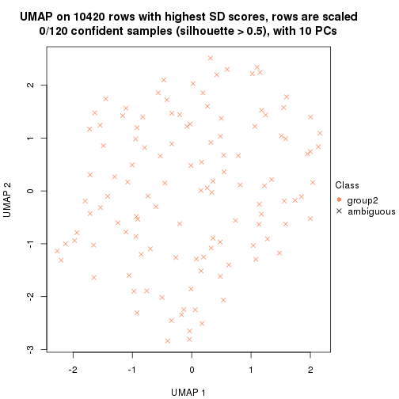
dimension_reduction(res, k = 3, method = "UMAP")
dimension_reduction(res, k = 4, method = "UMAP")
dimension_reduction(res, k = 5, method = "UMAP")

dimension_reduction(res, k = 6, method = "UMAP")
Following heatmap shows how subgroups are split when increasing k:
collect_classes(res)
If matrix rows can be associated to genes, consider to use GO_Enrichment(res,
...) to perform function enrichment for the signature genes.
The object with results only for a single top-value method and a single partition method can be extracted as:
res = res_list["SD", "NMF"]
# you can also extract it by
# res = res_list["SD:NMF"]
A summary of res and all the functions that can be applied to it:
res
#> A 'ConsensusPartition' object with k = 2, 3, 4, 5, 6.
#> On a matrix with 10420 rows and 120 columns.
#> Top rows (1000, 2000, 3000, 4000, 5000) are extracted by 'SD' method.
#> Subgroups are detected by 'NMF' method.
#> Performed in total 1250 partitions by row resampling.
#> Best k for subgroups seems to be 3.
#>
#> Following methods can be applied to this 'ConsensusPartition' object:
#> [1] "cola_report" "collect_classes" "collect_plots"
#> [4] "collect_stats" "colnames" "compare_signatures"
#> [7] "consensus_heatmap" "dimension_reduction" "functional_enrichment"
#> [10] "get_anno_col" "get_anno" "get_classes"
#> [13] "get_consensus" "get_matrix" "get_membership"
#> [16] "get_param" "get_signatures" "get_stats"
#> [19] "is_best_k" "is_stable_k" "membership_heatmap"
#> [22] "ncol" "nrow" "plot_ecdf"
#> [25] "rownames" "select_partition_number" "show"
#> [28] "suggest_best_k" "test_to_known_factors"
collect_plots() function collects all the plots made from res for all k (number of partitions)
into one single page to provide an easy and fast comparison between different k.
collect_plots(res)
The plots are:
k and the heatmap of
predicted classes for each k.k.k.k.All the plots in panels can be made by individual functions and they are plotted later in this section.
select_partition_number() produces several plots showing different
statistics for choosing “optimized” k. There are following statistics:
k;k, the area increased is defined as \(A_k - A_{k-1}\).The detailed explanations of these statistics can be found in the cola vignette.
Generally speaking, lower PAC score, higher mean silhouette score or higher
concordance corresponds to better partition. Rand index and Jaccard index
measure how similar the current partition is compared to partition with k-1.
If they are too similar, we won't accept k is better than k-1.
select_partition_number(res)

The numeric values for all these statistics can be obtained by get_stats().
get_stats(res)
#> k 1-PAC mean_silhouette concordance area_increased Rand Jaccard
#> 2 2 0.000000 0.0000 0.676 0.3917 1.000 1.000
#> 3 3 0.000000 0.0517 0.482 0.4641 0.805 0.805
#> 4 4 0.000466 0.0517 0.403 0.1938 0.490 0.438
#> 5 5 0.009471 0.0933 0.315 0.0982 0.625 0.383
#> 6 6 0.037882 0.0553 0.269 0.0536 0.678 0.310
suggest_best_k() suggests the best \(k\) based on these statistics. The rules are as follows:
NA.suggest_best_k(res)
#> [1] 3
Following shows the table of the partitions (You need to click the show/hide
code output link to see it). The membership matrix (columns with name p*)
is inferred by
clue::cl_consensus()
function with the SE method. Basically the value in the membership matrix
represents the probability to belong to a certain group. The finall class
label for an item is determined with the group with highest probability it
belongs to.
In get_classes() function, the entropy is calculated from the membership
matrix and the silhouette score is calculated from the consensus matrix.
cbind(get_classes(res, k = 2), get_membership(res, k = 2))
#> class entropy silhouette p1 p2
#> SRR572528 2 0.913 0 0.328 0.672
#> SRR572529 2 0.904 0 0.320 0.680
#> SRR572530 2 0.866 0 0.288 0.712
#> SRR572531 2 0.788 0 0.236 0.764
#> SRR572532 2 0.932 0 0.348 0.652
#> SRR572533 2 0.913 0 0.328 0.672
#> SRR572534 2 0.814 0 0.252 0.748
#> SRR572535 2 0.936 0 0.352 0.648
#> SRR572536 2 0.808 0 0.248 0.752
#> SRR572537 2 0.891 0 0.308 0.692
#> SRR572538 2 0.881 0 0.300 0.700
#> SRR572539 2 0.855 0 0.280 0.720
#> SRR572540 2 0.722 0 0.200 0.800
#> SRR572541 2 0.871 0 0.292 0.708
#> SRR572542 2 0.936 0 0.352 0.648
#> SRR572543 2 0.904 0 0.320 0.680
#> SRR572544 2 0.855 0 0.280 0.720
#> SRR572545 2 0.881 0 0.300 0.700
#> SRR572546 2 0.844 0 0.272 0.728
#> SRR572547 2 0.861 0 0.284 0.716
#> SRR572548 2 0.900 0 0.316 0.684
#> SRR572549 2 0.844 0 0.272 0.728
#> SRR572550 2 0.802 0 0.244 0.756
#> SRR572551 2 0.963 0 0.388 0.612
#> SRR572552 2 0.939 0 0.356 0.644
#> SRR572553 2 0.788 0 0.236 0.764
#> SRR572554 2 0.861 0 0.284 0.716
#> SRR572555 2 0.881 0 0.300 0.700
#> SRR572556 2 0.925 0 0.340 0.660
#> SRR572557 2 0.932 0 0.348 0.652
#> SRR572558 2 0.943 0 0.360 0.640
#> SRR572559 2 0.929 0 0.344 0.656
#> SRR572560 2 0.795 0 0.240 0.760
#> SRR572561 2 0.753 0 0.216 0.784
#> SRR572562 2 0.936 0 0.352 0.648
#> SRR572563 2 0.895 0 0.312 0.688
#> SRR572564 2 0.850 0 0.276 0.724
#> SRR572565 2 0.788 0 0.236 0.764
#> SRR572566 2 0.814 0 0.252 0.748
#> SRR572567 2 0.886 0 0.304 0.696
#> SRR572568 2 0.925 0 0.340 0.660
#> SRR572569 2 0.871 0 0.292 0.708
#> SRR572570 2 0.936 0 0.352 0.648
#> SRR572571 2 0.788 0 0.236 0.764
#> SRR572572 2 0.932 0 0.348 0.652
#> SRR572573 2 0.913 0 0.328 0.672
#> SRR572574 2 0.850 0 0.276 0.724
#> SRR572575 2 0.963 0 0.388 0.612
#> SRR572576 2 0.936 0 0.352 0.648
#> SRR572577 2 0.855 0 0.280 0.720
#> SRR572578 2 0.788 0 0.236 0.764
#> SRR572579 2 0.949 0 0.368 0.632
#> SRR572580 2 0.895 0 0.312 0.688
#> SRR572581 2 0.939 0 0.356 0.644
#> SRR572582 2 0.909 0 0.324 0.676
#> SRR572583 2 0.876 0 0.296 0.704
#> SRR572584 2 0.850 0 0.276 0.724
#> SRR572585 2 0.876 0 0.296 0.704
#> SRR572586 2 0.904 0 0.320 0.680
#> SRR572587 2 0.900 0 0.316 0.684
#> SRR572588 2 0.929 0 0.344 0.656
#> SRR572589 2 0.921 0 0.336 0.664
#> SRR572590 2 0.943 0 0.360 0.640
#> SRR572591 2 0.886 0 0.304 0.696
#> SRR572592 2 0.925 0 0.340 0.660
#> SRR572593 2 0.866 0 0.288 0.712
#> SRR572594 2 0.946 0 0.364 0.636
#> SRR572595 2 0.871 0 0.292 0.708
#> SRR572596 2 0.827 0 0.260 0.740
#> SRR572597 2 0.991 0 0.444 0.556
#> SRR572598 2 0.958 0 0.380 0.620
#> SRR572599 2 0.909 0 0.324 0.676
#> SRR572600 2 0.821 0 0.256 0.744
#> SRR572601 2 0.952 0 0.372 0.628
#> SRR572602 2 0.913 0 0.328 0.672
#> SRR572603 2 0.929 0 0.344 0.656
#> SRR572604 2 0.808 0 0.248 0.752
#> SRR572605 2 0.952 0 0.372 0.628
#> SRR572606 2 0.971 0 0.400 0.600
#> SRR572607 2 0.866 0 0.288 0.712
#> SRR572608 2 0.925 0 0.340 0.660
#> SRR572609 2 0.913 0 0.328 0.672
#> SRR572610 2 0.932 0 0.348 0.652
#> SRR572611 2 0.891 0 0.308 0.692
#> SRR572612 2 0.955 0 0.376 0.624
#> SRR572613 2 0.833 0 0.264 0.736
#> SRR572614 2 0.808 0 0.248 0.752
#> SRR572615 2 0.827 0 0.260 0.740
#> SRR572616 2 0.881 0 0.300 0.700
#> SRR572617 2 0.952 0 0.372 0.628
#> SRR572618 2 0.913 0 0.328 0.672
#> SRR572619 2 0.866 0 0.288 0.712
#> SRR572620 2 0.913 0 0.328 0.672
#> SRR572621 2 0.952 0 0.372 0.628
#> SRR572622 2 0.952 0 0.372 0.628
#> SRR572623 2 0.971 0 0.400 0.600
#> SRR572624 2 0.961 0 0.384 0.616
#> SRR572625 2 0.909 0 0.324 0.676
#> SRR572626 2 0.913 0 0.328 0.672
#> SRR572627 2 0.904 0 0.320 0.680
#> SRR572628 2 0.876 0 0.296 0.704
#> SRR572629 2 0.994 0 0.456 0.544
#> SRR572630 2 0.850 0 0.276 0.724
#> SRR572631 2 0.909 0 0.324 0.676
#> SRR572632 2 0.850 0 0.276 0.724
#> SRR572633 2 0.921 0 0.336 0.664
#> SRR572634 2 0.904 0 0.320 0.680
#> SRR572635 2 0.925 0 0.340 0.660
#> SRR572636 2 0.814 0 0.252 0.748
#> SRR572637 2 0.904 0 0.320 0.680
#> SRR572638 2 0.963 0 0.388 0.612
#> SRR572639 2 0.753 0 0.216 0.784
#> SRR572640 2 0.909 0 0.324 0.676
#> SRR572641 2 0.861 0 0.284 0.716
#> SRR572642 2 0.932 0 0.348 0.652
#> SRR572643 2 0.876 0 0.296 0.704
#> SRR572644 2 0.821 0 0.256 0.744
#> SRR572645 2 0.975 0 0.408 0.592
#> SRR572646 2 0.969 0 0.396 0.604
#> SRR572647 2 0.876 0 0.296 0.704
cbind(get_classes(res, k = 3), get_membership(res, k = 3))
#> class entropy silhouette p1 p2 p3
#> SRR572528 1 0.892 -0.09027 0.492 0.380 0.128
#> SRR572529 1 0.926 -0.04865 0.476 0.360 0.164
#> SRR572530 1 0.861 0.01999 0.548 0.336 0.116
#> SRR572531 1 0.888 0.02163 0.464 0.416 0.120
#> SRR572532 1 0.917 -0.02748 0.488 0.356 0.156
#> SRR572533 1 0.876 0.17591 0.588 0.216 0.196
#> SRR572534 1 0.886 -0.02170 0.524 0.344 0.132
#> SRR572535 2 0.930 0.19924 0.360 0.472 0.168
#> SRR572536 1 0.857 0.20710 0.608 0.196 0.196
#> SRR572537 1 0.907 0.05108 0.516 0.328 0.156
#> SRR572538 1 0.748 0.13400 0.688 0.204 0.108
#> SRR572539 1 0.881 -0.01311 0.528 0.344 0.128
#> SRR572540 1 0.804 0.17439 0.624 0.272 0.104
#> SRR572541 1 0.891 0.04131 0.496 0.376 0.128
#> SRR572542 1 0.871 -0.11206 0.508 0.380 0.112
#> SRR572543 1 0.904 -0.06979 0.472 0.392 0.136
#> SRR572544 1 0.855 -0.03567 0.560 0.324 0.116
#> SRR572545 1 0.879 0.01206 0.540 0.328 0.132
#> SRR572546 1 0.829 0.14484 0.612 0.264 0.124
#> SRR572547 1 0.864 -0.15348 0.452 0.448 0.100
#> SRR572548 1 0.863 0.15090 0.576 0.288 0.136
#> SRR572549 1 0.785 0.14184 0.648 0.248 0.104
#> SRR572550 1 0.839 0.09308 0.548 0.356 0.096
#> SRR572551 1 0.869 -0.14648 0.456 0.440 0.104
#> SRR572552 1 0.854 0.06252 0.580 0.292 0.128
#> SRR572553 1 0.889 0.09457 0.504 0.368 0.128
#> SRR572554 1 0.886 -0.11320 0.480 0.400 0.120
#> SRR572555 1 0.875 -0.06370 0.488 0.400 0.112
#> SRR572556 1 0.879 -0.01890 0.540 0.328 0.132
#> SRR572557 2 0.894 0.22640 0.432 0.444 0.124
#> SRR572558 1 0.843 -0.01143 0.496 0.416 0.088
#> SRR572559 1 0.866 0.00666 0.536 0.348 0.116
#> SRR572560 1 0.878 0.16521 0.580 0.248 0.172
#> SRR572561 1 0.907 0.09132 0.500 0.352 0.148
#> SRR572562 1 0.933 -0.16119 0.472 0.356 0.172
#> SRR572563 1 0.825 0.21491 0.636 0.200 0.164
#> SRR572564 1 0.921 0.03117 0.472 0.372 0.156
#> SRR572565 1 0.775 0.19589 0.676 0.184 0.140
#> SRR572566 1 0.797 0.16535 0.624 0.280 0.096
#> SRR572567 1 0.850 0.11580 0.612 0.220 0.168
#> SRR572568 1 0.907 0.11620 0.540 0.284 0.176
#> SRR572569 1 0.838 0.14479 0.596 0.284 0.120
#> SRR572570 1 0.881 0.13227 0.576 0.252 0.172
#> SRR572571 1 0.778 0.11248 0.664 0.220 0.116
#> SRR572572 1 0.956 -0.00644 0.464 0.324 0.212
#> SRR572573 1 0.771 0.16440 0.680 0.176 0.144
#> SRR572574 1 0.885 0.11127 0.552 0.300 0.148
#> SRR572575 1 0.894 -0.13312 0.448 0.428 0.124
#> SRR572576 1 0.944 -0.07618 0.468 0.344 0.188
#> SRR572577 2 0.910 0.08448 0.408 0.452 0.140
#> SRR572578 1 0.868 0.04470 0.468 0.428 0.104
#> SRR572579 1 0.866 0.06735 0.560 0.312 0.128
#> SRR572580 1 0.916 0.02920 0.532 0.280 0.188
#> SRR572581 2 0.900 0.22169 0.396 0.472 0.132
#> SRR572582 1 0.871 0.10338 0.556 0.312 0.132
#> SRR572583 1 0.876 0.07324 0.552 0.312 0.136
#> SRR572584 1 0.822 0.20171 0.636 0.212 0.152
#> SRR572585 1 0.930 0.06409 0.512 0.292 0.196
#> SRR572586 1 0.889 0.00568 0.504 0.368 0.128
#> SRR572587 1 0.796 0.19817 0.660 0.188 0.152
#> SRR572588 1 0.877 0.15752 0.572 0.272 0.156
#> SRR572589 1 0.948 -0.04072 0.428 0.388 0.184
#> SRR572590 2 0.896 0.17456 0.404 0.468 0.128
#> SRR572591 1 0.891 -0.07550 0.540 0.312 0.148
#> SRR572592 1 0.940 -0.03481 0.416 0.412 0.172
#> SRR572593 1 0.856 -0.13146 0.488 0.416 0.096
#> SRR572594 2 0.920 0.18111 0.340 0.496 0.164
#> SRR572595 1 0.949 0.05460 0.480 0.312 0.208
#> SRR572596 1 0.889 -0.08722 0.456 0.424 0.120
#> SRR572597 1 0.873 0.08762 0.588 0.236 0.176
#> SRR572598 1 0.962 0.02333 0.444 0.344 0.212
#> SRR572599 1 0.909 0.11672 0.548 0.252 0.200
#> SRR572600 1 0.814 0.20531 0.636 0.232 0.132
#> SRR572601 1 0.965 0.02281 0.448 0.328 0.224
#> SRR572602 1 0.874 0.18065 0.588 0.232 0.180
#> SRR572603 1 0.805 0.11679 0.628 0.264 0.108
#> SRR572604 1 0.917 0.04293 0.524 0.296 0.180
#> SRR572605 1 0.963 -0.02095 0.404 0.392 0.204
#> SRR572606 1 0.922 -0.15011 0.448 0.400 0.152
#> SRR572607 1 0.812 0.19924 0.648 0.164 0.188
#> SRR572608 2 0.940 0.17341 0.400 0.428 0.172
#> SRR572609 2 0.893 0.11154 0.424 0.452 0.124
#> SRR572610 1 0.943 -0.11047 0.460 0.356 0.184
#> SRR572611 2 0.911 0.18556 0.420 0.440 0.140
#> SRR572612 1 0.911 -0.10954 0.436 0.424 0.140
#> SRR572613 2 0.915 -0.02216 0.428 0.428 0.144
#> SRR572614 1 0.950 -0.05294 0.436 0.376 0.188
#> SRR572615 1 0.892 -0.03663 0.492 0.380 0.128
#> SRR572616 1 0.943 -0.06823 0.424 0.400 0.176
#> SRR572617 1 0.924 0.03422 0.520 0.288 0.192
#> SRR572618 1 0.925 0.09832 0.512 0.304 0.184
#> SRR572619 1 0.903 0.16785 0.548 0.272 0.180
#> SRR572620 1 0.882 0.10698 0.564 0.280 0.156
#> SRR572621 1 0.955 -0.12749 0.436 0.368 0.196
#> SRR572622 1 0.961 0.05843 0.472 0.288 0.240
#> SRR572623 1 0.920 -0.13653 0.476 0.368 0.156
#> SRR572624 1 0.902 0.11841 0.548 0.276 0.176
#> SRR572625 2 0.940 0.15054 0.408 0.420 0.172
#> SRR572626 1 0.858 -0.13311 0.504 0.396 0.100
#> SRR572627 2 0.912 0.12207 0.392 0.464 0.144
#> SRR572628 1 0.931 0.07418 0.452 0.384 0.164
#> SRR572629 1 0.889 0.08484 0.556 0.284 0.160
#> SRR572630 1 0.863 0.17316 0.580 0.280 0.140
#> SRR572631 1 0.903 -0.01033 0.512 0.340 0.148
#> SRR572632 1 0.936 0.12962 0.516 0.244 0.240
#> SRR572633 1 0.897 -0.18280 0.464 0.408 0.128
#> SRR572634 1 0.911 0.12039 0.524 0.308 0.168
#> SRR572635 1 0.893 0.16247 0.568 0.236 0.196
#> SRR572636 1 0.896 0.16392 0.552 0.280 0.168
#> SRR572637 1 0.936 -0.23068 0.440 0.392 0.168
#> SRR572638 2 0.926 0.18875 0.408 0.436 0.156
#> SRR572639 1 0.803 0.18810 0.652 0.204 0.144
#> SRR572640 1 0.917 0.05617 0.504 0.332 0.164
#> SRR572641 1 0.947 0.02946 0.440 0.376 0.184
#> SRR572642 1 0.899 0.14053 0.564 0.216 0.220
#> SRR572643 1 0.844 0.10456 0.592 0.284 0.124
#> SRR572644 1 0.884 -0.04291 0.460 0.424 0.116
#> SRR572645 1 0.902 0.06122 0.548 0.276 0.176
#> SRR572646 1 0.930 -0.14973 0.436 0.404 0.160
#> SRR572647 1 0.960 0.08468 0.460 0.320 0.220
cbind(get_classes(res, k = 4), get_membership(res, k = 4))
#> class entropy silhouette p1 p2 p3 p4
#> SRR572528 2 0.932 -0.13990 0.308 0.336 NA 0.272
#> SRR572529 2 0.894 0.03916 0.192 0.472 NA 0.240
#> SRR572530 2 0.822 0.11895 0.208 0.552 NA 0.172
#> SRR572531 2 0.873 0.01562 0.336 0.444 NA 0.128
#> SRR572532 2 0.891 0.08563 0.308 0.436 NA 0.172
#> SRR572533 1 0.905 0.13828 0.448 0.276 NA 0.168
#> SRR572534 1 0.934 0.10963 0.400 0.268 NA 0.224
#> SRR572535 2 0.901 -0.18694 0.216 0.368 NA 0.348
#> SRR572536 1 0.874 0.03220 0.472 0.276 NA 0.176
#> SRR572537 2 0.903 -0.01551 0.352 0.380 NA 0.188
#> SRR572538 2 0.873 0.10177 0.220 0.496 NA 0.200
#> SRR572539 2 0.906 0.09115 0.244 0.440 NA 0.228
#> SRR572540 1 0.872 0.10240 0.424 0.356 NA 0.140
#> SRR572541 2 0.874 0.02472 0.320 0.456 NA 0.124
#> SRR572542 2 0.835 0.07641 0.180 0.540 NA 0.208
#> SRR572543 2 0.912 0.14083 0.212 0.464 NA 0.204
#> SRR572544 2 0.902 -0.04680 0.200 0.440 NA 0.272
#> SRR572545 1 0.923 -0.07304 0.356 0.332 NA 0.228
#> SRR572546 1 0.836 0.20929 0.556 0.164 NA 0.184
#> SRR572547 2 0.873 0.16929 0.240 0.504 NA 0.152
#> SRR572548 2 0.901 0.01063 0.304 0.432 NA 0.168
#> SRR572549 2 0.876 0.04628 0.316 0.456 NA 0.132
#> SRR572550 1 0.826 0.08946 0.436 0.392 NA 0.108
#> SRR572551 2 0.717 0.25292 0.112 0.656 NA 0.172
#> SRR572552 2 0.828 0.10941 0.240 0.504 NA 0.216
#> SRR572553 1 0.858 0.03448 0.400 0.388 NA 0.152
#> SRR572554 2 0.765 0.21525 0.124 0.600 NA 0.220
#> SRR572555 2 0.934 0.03865 0.304 0.384 NA 0.204
#> SRR572556 2 0.812 -0.00459 0.172 0.552 NA 0.220
#> SRR572557 2 0.948 0.08656 0.204 0.400 NA 0.256
#> SRR572558 2 0.807 0.17898 0.188 0.580 NA 0.152
#> SRR572559 2 0.849 0.17596 0.184 0.524 NA 0.216
#> SRR572560 1 0.871 0.15482 0.492 0.272 NA 0.124
#> SRR572561 1 0.872 0.04435 0.408 0.368 NA 0.152
#> SRR572562 2 0.908 -0.05739 0.208 0.444 NA 0.252
#> SRR572563 1 0.810 0.22422 0.576 0.208 NA 0.092
#> SRR572564 1 0.914 0.13630 0.432 0.292 NA 0.124
#> SRR572565 1 0.845 0.12394 0.472 0.336 NA 0.096
#> SRR572566 2 0.801 0.00492 0.332 0.496 NA 0.132
#> SRR572567 2 0.918 -0.25939 0.332 0.368 NA 0.216
#> SRR572568 1 0.895 0.13570 0.432 0.320 NA 0.148
#> SRR572569 1 0.932 0.04861 0.360 0.344 NA 0.184
#> SRR572570 2 0.938 -0.21141 0.288 0.368 NA 0.244
#> SRR572571 2 0.865 -0.06424 0.392 0.396 NA 0.140
#> SRR572572 1 0.939 -0.09472 0.336 0.296 NA 0.276
#> SRR572573 1 0.930 0.01109 0.400 0.308 NA 0.164
#> SRR572574 1 0.927 0.06125 0.364 0.344 NA 0.188
#> SRR572575 2 0.807 0.22166 0.148 0.556 NA 0.236
#> SRR572576 2 0.943 0.12695 0.224 0.412 NA 0.232
#> SRR572577 2 0.900 0.03941 0.328 0.400 NA 0.196
#> SRR572578 1 0.871 0.09661 0.464 0.312 NA 0.128
#> SRR572579 2 0.882 0.10936 0.252 0.472 NA 0.196
#> SRR572580 1 0.919 -0.20068 0.336 0.320 NA 0.272
#> SRR572581 2 0.948 0.10348 0.236 0.380 NA 0.264
#> SRR572582 2 0.873 -0.03807 0.340 0.436 NA 0.144
#> SRR572583 1 0.922 0.02840 0.372 0.324 NA 0.216
#> SRR572584 1 0.805 0.12178 0.504 0.336 NA 0.084
#> SRR572585 1 0.935 0.01637 0.352 0.320 NA 0.232
#> SRR572586 2 0.842 0.13109 0.276 0.496 NA 0.172
#> SRR572587 1 0.915 -0.10046 0.376 0.356 NA 0.160
#> SRR572588 2 0.891 0.00903 0.332 0.416 NA 0.172
#> SRR572589 1 0.949 -0.10630 0.360 0.260 NA 0.268
#> SRR572590 2 0.812 0.12932 0.136 0.552 NA 0.244
#> SRR572591 2 0.858 0.16685 0.208 0.488 NA 0.244
#> SRR572592 2 0.935 0.00567 0.316 0.388 NA 0.144
#> SRR572593 2 0.860 0.06366 0.184 0.472 NA 0.284
#> SRR572594 2 0.936 0.13699 0.204 0.420 NA 0.248
#> SRR572595 1 0.872 0.20607 0.512 0.188 NA 0.200
#> SRR572596 2 0.903 -0.13873 0.272 0.392 NA 0.272
#> SRR572597 2 0.911 -0.27105 0.224 0.416 NA 0.276
#> SRR572598 1 0.962 -0.04262 0.352 0.292 NA 0.216
#> SRR572599 2 0.947 -0.04103 0.324 0.352 NA 0.200
#> SRR572600 1 0.872 0.13506 0.448 0.332 NA 0.128
#> SRR572601 1 0.953 -0.10273 0.404 0.208 NA 0.232
#> SRR572602 1 0.920 0.07802 0.384 0.336 NA 0.176
#> SRR572603 2 0.891 -0.01462 0.268 0.436 NA 0.228
#> SRR572604 1 0.928 0.00120 0.416 0.256 NA 0.220
#> SRR572605 1 0.930 0.09966 0.416 0.260 NA 0.212
#> SRR572606 2 0.938 -0.14754 0.228 0.376 NA 0.292
#> SRR572607 1 0.916 0.07619 0.392 0.340 NA 0.152
#> SRR572608 2 0.921 0.09656 0.204 0.452 NA 0.216
#> SRR572609 2 0.869 0.14005 0.172 0.496 NA 0.248
#> SRR572610 1 0.928 -0.04415 0.336 0.332 NA 0.248
#> SRR572611 2 0.895 0.14556 0.240 0.444 NA 0.240
#> SRR572612 2 0.836 0.21150 0.148 0.560 NA 0.184
#> SRR572613 1 0.897 0.17362 0.484 0.224 NA 0.172
#> SRR572614 2 0.937 -0.01075 0.320 0.372 NA 0.192
#> SRR572615 2 0.831 0.10464 0.276 0.516 NA 0.144
#> SRR572616 2 0.893 -0.01316 0.332 0.400 NA 0.200
#> SRR572617 2 0.923 -0.24778 0.304 0.348 NA 0.272
#> SRR572618 1 0.904 0.15975 0.464 0.256 NA 0.160
#> SRR572619 1 0.859 0.21124 0.516 0.244 NA 0.100
#> SRR572620 2 0.942 -0.00417 0.316 0.376 NA 0.172
#> SRR572621 2 0.900 0.01802 0.164 0.464 NA 0.260
#> SRR572622 1 0.912 0.05174 0.476 0.160 NA 0.204
#> SRR572623 2 0.852 -0.02629 0.132 0.512 NA 0.264
#> SRR572624 1 0.948 -0.29462 0.324 0.324 NA 0.244
#> SRR572625 2 0.917 0.10532 0.248 0.440 NA 0.204
#> SRR572626 2 0.807 0.23706 0.148 0.576 NA 0.200
#> SRR572627 2 0.899 0.10325 0.208 0.436 NA 0.276
#> SRR572628 1 0.821 0.21441 0.552 0.236 NA 0.132
#> SRR572629 2 0.908 -0.17639 0.232 0.408 NA 0.284
#> SRR572630 1 0.800 0.19037 0.588 0.200 NA 0.116
#> SRR572631 2 0.902 0.06792 0.280 0.392 NA 0.264
#> SRR572632 1 0.815 0.14984 0.584 0.136 NA 0.168
#> SRR572633 2 0.776 0.23715 0.112 0.580 NA 0.248
#> SRR572634 1 0.850 0.06620 0.544 0.156 NA 0.192
#> SRR572635 1 0.895 0.07341 0.472 0.248 NA 0.176
#> SRR572636 1 0.910 0.10020 0.416 0.320 NA 0.152
#> SRR572637 2 0.905 0.01904 0.172 0.404 NA 0.332
#> SRR572638 2 0.943 0.11065 0.232 0.396 NA 0.252
#> SRR572639 1 0.879 0.14142 0.488 0.260 NA 0.148
#> SRR572640 1 0.902 0.13937 0.424 0.324 NA 0.132
#> SRR572641 1 0.889 0.15343 0.444 0.316 NA 0.128
#> SRR572642 1 0.852 0.14605 0.524 0.232 NA 0.156
#> SRR572643 2 0.913 -0.00581 0.352 0.372 NA 0.184
#> SRR572644 2 0.841 0.07193 0.280 0.496 NA 0.168
#> SRR572645 4 0.961 0.00000 0.252 0.276 NA 0.344
#> SRR572646 2 0.925 -0.15229 0.188 0.384 NA 0.324
#> SRR572647 1 0.908 0.15585 0.456 0.252 NA 0.180
cbind(get_classes(res, k = 5), get_membership(res, k = 5))
#> class entropy silhouette p1 p2 p3 p4 p5
#> SRR572528 2 0.963 5.21e-02 0.240 0.304 NA 0.204 NA
#> SRR572529 2 0.918 7.63e-02 0.272 0.372 NA 0.136 NA
#> SRR572530 2 0.890 6.14e-02 0.268 0.348 NA 0.232 NA
#> SRR572531 2 0.909 1.16e-02 0.272 0.320 NA 0.196 NA
#> SRR572532 2 0.924 1.08e-01 0.216 0.376 NA 0.176 NA
#> SRR572533 4 0.865 -1.92e-02 0.316 0.176 NA 0.372 NA
#> SRR572534 1 0.907 6.56e-02 0.360 0.300 NA 0.132 NA
#> SRR572535 2 0.957 1.38e-01 0.188 0.356 NA 0.156 NA
#> SRR572536 1 0.874 4.28e-02 0.360 0.160 NA 0.312 NA
#> SRR572537 2 0.899 1.13e-02 0.272 0.332 NA 0.252 NA
#> SRR572538 4 0.865 1.24e-01 0.132 0.268 NA 0.436 NA
#> SRR572539 2 0.943 5.49e-02 0.256 0.304 NA 0.232 NA
#> SRR572540 4 0.871 7.62e-02 0.312 0.172 NA 0.376 NA
#> SRR572541 4 0.926 3.93e-02 0.292 0.204 NA 0.304 NA
#> SRR572542 2 0.869 1.57e-01 0.240 0.420 NA 0.160 NA
#> SRR572543 4 0.883 4.68e-02 0.144 0.300 NA 0.360 NA
#> SRR572544 2 0.879 1.73e-01 0.164 0.416 NA 0.236 NA
#> SRR572545 2 0.951 3.45e-02 0.252 0.300 NA 0.228 NA
#> SRR572546 1 0.910 5.61e-02 0.340 0.128 NA 0.304 NA
#> SRR572547 2 0.855 1.12e-01 0.212 0.412 NA 0.164 NA
#> SRR572548 4 0.905 1.39e-01 0.200 0.252 NA 0.376 NA
#> SRR572549 4 0.871 4.94e-02 0.196 0.336 NA 0.340 NA
#> SRR572550 1 0.817 3.65e-02 0.456 0.192 NA 0.240 NA
#> SRR572551 2 0.779 1.87e-01 0.088 0.564 NA 0.168 NA
#> SRR572552 2 0.924 6.32e-02 0.212 0.352 NA 0.248 NA
#> SRR572553 4 0.916 5.19e-02 0.272 0.268 NA 0.288 NA
#> SRR572554 2 0.812 7.24e-02 0.108 0.452 NA 0.304 NA
#> SRR572555 1 0.953 7.95e-02 0.320 0.268 NA 0.132 NA
#> SRR572556 2 0.929 2.16e-02 0.144 0.316 NA 0.316 NA
#> SRR572557 2 0.933 3.97e-02 0.260 0.316 NA 0.108 NA
#> SRR572558 2 0.860 5.47e-02 0.180 0.416 NA 0.232 NA
#> SRR572559 2 0.926 -2.66e-02 0.152 0.332 NA 0.300 NA
#> SRR572560 4 0.779 8.55e-02 0.344 0.084 NA 0.460 NA
#> SRR572561 4 0.905 1.00e-01 0.248 0.256 NA 0.340 NA
#> SRR572562 2 0.946 1.10e-01 0.236 0.316 NA 0.232 NA
#> SRR572563 1 0.751 9.44e-02 0.508 0.048 NA 0.292 NA
#> SRR572564 1 0.827 1.95e-01 0.536 0.128 NA 0.128 NA
#> SRR572565 4 0.772 2.61e-01 0.132 0.128 NA 0.580 NA
#> SRR572566 4 0.882 1.46e-01 0.236 0.220 NA 0.400 NA
#> SRR572567 4 0.885 1.39e-01 0.196 0.192 NA 0.424 NA
#> SRR572568 1 0.850 1.05e-01 0.456 0.124 NA 0.248 NA
#> SRR572569 4 0.959 -3.72e-02 0.272 0.212 NA 0.280 NA
#> SRR572570 2 0.925 -1.01e-02 0.252 0.312 NA 0.260 NA
#> SRR572571 4 0.878 1.49e-01 0.212 0.192 NA 0.432 NA
#> SRR572572 2 0.965 -2.12e-02 0.244 0.272 NA 0.228 NA
#> SRR572573 4 0.723 2.60e-01 0.148 0.108 NA 0.616 NA
#> SRR572574 1 0.915 -7.32e-02 0.312 0.224 NA 0.296 NA
#> SRR572575 2 0.811 1.65e-01 0.144 0.508 NA 0.212 NA
#> SRR572576 2 0.934 1.06e-01 0.224 0.372 NA 0.160 NA
#> SRR572577 1 0.910 1.08e-01 0.400 0.248 NA 0.136 NA
#> SRR572578 1 0.900 1.39e-01 0.412 0.228 NA 0.164 NA
#> SRR572579 4 0.800 1.01e-01 0.048 0.316 NA 0.464 NA
#> SRR572580 2 0.975 -2.28e-02 0.244 0.252 NA 0.240 NA
#> SRR572581 2 0.931 1.43e-01 0.180 0.400 NA 0.152 NA
#> SRR572582 1 0.960 3.64e-02 0.284 0.256 NA 0.224 NA
#> SRR572583 1 0.940 6.65e-02 0.340 0.216 NA 0.232 NA
#> SRR572584 4 0.825 8.87e-02 0.340 0.112 NA 0.420 NA
#> SRR572585 2 0.943 3.62e-03 0.184 0.308 NA 0.284 NA
#> SRR572586 2 0.923 1.45e-01 0.180 0.396 NA 0.160 NA
#> SRR572587 4 0.870 1.58e-01 0.220 0.208 NA 0.428 NA
#> SRR572588 4 0.881 1.27e-01 0.152 0.260 NA 0.412 NA
#> SRR572589 1 0.874 1.42e-01 0.436 0.172 NA 0.148 NA
#> SRR572590 2 0.819 2.28e-01 0.092 0.536 NA 0.140 NA
#> SRR572591 2 0.878 6.27e-02 0.176 0.388 NA 0.260 NA
#> SRR572592 1 0.939 9.49e-02 0.340 0.252 NA 0.140 NA
#> SRR572593 2 0.870 1.89e-01 0.172 0.460 NA 0.160 NA
#> SRR572594 2 0.940 2.01e-02 0.204 0.328 NA 0.068 NA
#> SRR572595 4 0.914 1.59e-02 0.308 0.172 NA 0.336 NA
#> SRR572596 1 0.921 2.46e-02 0.360 0.252 NA 0.192 NA
#> SRR572597 2 0.875 5.18e-02 0.072 0.364 NA 0.316 NA
#> SRR572598 1 0.907 6.14e-02 0.352 0.304 NA 0.088 NA
#> SRR572599 4 0.899 1.15e-01 0.124 0.196 NA 0.420 NA
#> SRR572600 4 0.857 1.78e-01 0.248 0.148 NA 0.452 NA
#> SRR572601 1 0.906 8.34e-02 0.336 0.252 NA 0.112 NA
#> SRR572602 4 0.896 8.53e-02 0.276 0.188 NA 0.372 NA
#> SRR572603 4 0.895 4.18e-02 0.144 0.300 NA 0.376 NA
#> SRR572604 4 0.924 7.94e-02 0.212 0.168 NA 0.392 NA
#> SRR572605 1 0.976 3.04e-02 0.284 0.244 NA 0.180 NA
#> SRR572606 2 0.912 7.41e-02 0.300 0.356 NA 0.088 NA
#> SRR572607 4 0.812 2.15e-01 0.152 0.136 NA 0.532 NA
#> SRR572608 2 0.939 1.11e-01 0.176 0.344 NA 0.204 NA
#> SRR572609 2 0.902 1.46e-01 0.164 0.420 NA 0.176 NA
#> SRR572610 2 0.944 5.49e-02 0.232 0.324 NA 0.160 NA
#> SRR572611 2 0.877 1.03e-01 0.164 0.408 NA 0.272 NA
#> SRR572612 2 0.879 1.57e-01 0.132 0.420 NA 0.196 NA
#> SRR572613 1 0.844 1.58e-01 0.492 0.152 NA 0.196 NA
#> SRR572614 1 0.899 1.15e-01 0.420 0.180 NA 0.180 NA
#> SRR572615 1 0.919 -1.13e-02 0.320 0.296 NA 0.200 NA
#> SRR572616 1 0.867 1.06e-01 0.452 0.184 NA 0.132 NA
#> SRR572617 2 0.928 3.82e-02 0.264 0.336 NA 0.176 NA
#> SRR572618 1 0.968 6.79e-02 0.304 0.196 NA 0.228 NA
#> SRR572619 1 0.899 1.23e-01 0.436 0.136 NA 0.200 NA
#> SRR572620 1 0.945 2.77e-02 0.308 0.232 NA 0.244 NA
#> SRR572621 2 0.861 2.01e-01 0.168 0.488 NA 0.152 NA
#> SRR572622 4 0.931 -7.63e-02 0.280 0.100 NA 0.324 NA
#> SRR572623 2 0.923 1.69e-01 0.172 0.412 NA 0.164 NA
#> SRR572624 4 0.932 4.74e-05 0.212 0.264 NA 0.320 NA
#> SRR572625 1 0.942 1.63e-02 0.320 0.268 NA 0.120 NA
#> SRR572626 2 0.826 1.69e-01 0.124 0.504 NA 0.168 NA
#> SRR572627 2 0.924 3.38e-02 0.192 0.320 NA 0.268 NA
#> SRR572628 1 0.799 2.17e-01 0.548 0.108 NA 0.152 NA
#> SRR572629 2 0.871 4.28e-03 0.108 0.396 NA 0.292 NA
#> SRR572630 1 0.759 3.75e-02 0.484 0.076 NA 0.332 NA
#> SRR572631 2 0.924 6.95e-02 0.168 0.368 NA 0.256 NA
#> SRR572632 1 0.785 1.49e-01 0.504 0.056 NA 0.244 NA
#> SRR572633 2 0.840 1.60e-01 0.092 0.480 NA 0.208 NA
#> SRR572634 1 0.834 1.84e-01 0.492 0.112 NA 0.168 NA
#> SRR572635 1 0.878 1.63e-01 0.432 0.156 NA 0.188 NA
#> SRR572636 4 0.881 1.50e-01 0.276 0.160 NA 0.404 NA
#> SRR572637 2 0.935 1.47e-01 0.196 0.356 NA 0.160 NA
#> SRR572638 2 0.900 1.77e-01 0.152 0.432 NA 0.184 NA
#> SRR572639 4 0.746 1.84e-01 0.292 0.096 NA 0.520 NA
#> SRR572640 1 0.856 9.32e-02 0.452 0.188 NA 0.200 NA
#> SRR572641 1 0.909 1.61e-01 0.432 0.180 NA 0.136 NA
#> SRR572642 1 0.885 1.08e-01 0.360 0.132 NA 0.300 NA
#> SRR572643 4 0.864 1.71e-01 0.176 0.200 NA 0.460 NA
#> SRR572644 2 0.890 3.63e-02 0.260 0.384 NA 0.188 NA
#> SRR572645 4 0.954 3.18e-02 0.248 0.240 NA 0.280 NA
#> SRR572646 2 0.919 1.76e-01 0.184 0.416 NA 0.124 NA
#> SRR572647 1 0.804 2.14e-01 0.540 0.128 NA 0.128 NA
cbind(get_classes(res, k = 6), get_membership(res, k = 6))
#> class entropy silhouette p1 p2 p3 p4 p5 p6
#> SRR572528 4 0.937 -5.30e-03 0.144 0.132 NA 0.284 0.264 NA
#> SRR572529 2 0.854 1.04e-01 0.128 0.452 NA 0.112 0.168 NA
#> SRR572530 5 0.909 8.05e-02 0.168 0.212 NA 0.092 0.320 NA
#> SRR572531 5 0.920 6.40e-03 0.176 0.124 NA 0.264 0.288 NA
#> SRR572532 4 0.951 8.93e-02 0.172 0.212 NA 0.228 0.208 NA
#> SRR572533 1 0.836 4.90e-02 0.404 0.244 NA 0.168 0.084 NA
#> SRR572534 1 0.941 -2.58e-02 0.280 0.176 NA 0.228 0.164 NA
#> SRR572535 5 0.880 3.85e-02 0.152 0.216 NA 0.076 0.388 NA
#> SRR572536 1 0.839 1.25e-01 0.476 0.164 NA 0.112 0.100 NA
#> SRR572537 4 0.911 7.17e-02 0.228 0.176 NA 0.248 0.220 NA
#> SRR572538 4 0.934 1.25e-02 0.216 0.188 NA 0.240 0.208 NA
#> SRR572539 5 0.912 1.11e-01 0.180 0.132 NA 0.152 0.364 NA
#> SRR572540 1 0.878 8.39e-02 0.340 0.140 NA 0.156 0.240 NA
#> SRR572541 5 0.911 -5.68e-02 0.240 0.132 NA 0.200 0.276 NA
#> SRR572542 5 0.888 4.16e-02 0.140 0.288 NA 0.092 0.336 NA
#> SRR572543 5 0.883 1.21e-01 0.124 0.172 NA 0.156 0.396 NA
#> SRR572544 5 0.857 5.54e-02 0.180 0.224 NA 0.096 0.400 NA
#> SRR572545 4 0.937 4.28e-02 0.244 0.112 NA 0.256 0.228 NA
#> SRR572546 1 0.803 5.77e-02 0.472 0.092 NA 0.240 0.096 NA
#> SRR572547 5 0.822 5.27e-02 0.108 0.064 NA 0.304 0.404 NA
#> SRR572548 4 0.907 2.93e-02 0.232 0.196 NA 0.276 0.200 NA
#> SRR572549 1 0.930 1.01e-02 0.268 0.240 NA 0.192 0.172 NA
#> SRR572550 1 0.909 3.77e-02 0.296 0.164 NA 0.116 0.248 NA
#> SRR572551 5 0.858 8.30e-02 0.076 0.192 NA 0.176 0.424 NA
#> SRR572552 5 0.904 7.24e-03 0.244 0.228 NA 0.140 0.284 NA
#> SRR572553 4 0.873 7.50e-02 0.240 0.068 NA 0.356 0.200 NA
#> SRR572554 5 0.773 1.55e-01 0.052 0.100 NA 0.128 0.524 NA
#> SRR572555 4 0.940 1.43e-02 0.164 0.228 NA 0.284 0.156 NA
#> SRR572556 2 0.929 1.30e-02 0.184 0.296 NA 0.192 0.192 NA
#> SRR572557 5 0.877 6.97e-02 0.100 0.160 NA 0.188 0.408 NA
#> SRR572558 4 0.899 3.51e-02 0.104 0.256 NA 0.280 0.232 NA
#> SRR572559 2 0.902 -1.50e-02 0.136 0.300 NA 0.232 0.228 NA
#> SRR572560 1 0.853 1.37e-01 0.444 0.120 NA 0.092 0.140 NA
#> SRR572561 1 0.913 5.38e-02 0.296 0.204 NA 0.204 0.184 NA
#> SRR572562 5 0.906 6.70e-02 0.184 0.172 NA 0.184 0.344 NA
#> SRR572563 1 0.807 1.09e-01 0.496 0.132 NA 0.156 0.112 NA
#> SRR572564 1 0.931 3.70e-02 0.308 0.240 NA 0.172 0.116 NA
#> SRR572565 1 0.880 2.96e-02 0.364 0.168 NA 0.220 0.148 NA
#> SRR572566 1 0.889 4.57e-02 0.332 0.172 NA 0.140 0.248 NA
#> SRR572567 1 0.887 4.47e-02 0.316 0.192 NA 0.156 0.172 NA
#> SRR572568 1 0.831 1.39e-01 0.460 0.124 NA 0.064 0.168 NA
#> SRR572569 4 0.879 7.29e-02 0.236 0.140 NA 0.344 0.192 NA
#> SRR572570 2 0.886 1.66e-02 0.284 0.336 NA 0.064 0.160 NA
#> SRR572571 1 0.927 5.55e-02 0.276 0.244 NA 0.140 0.152 NA
#> SRR572572 2 0.900 1.12e-01 0.192 0.356 NA 0.196 0.132 NA
#> SRR572573 1 0.929 3.96e-02 0.304 0.124 NA 0.220 0.176 NA
#> SRR572574 1 0.890 6.58e-02 0.332 0.188 NA 0.100 0.204 NA
#> SRR572575 5 0.815 2.76e-02 0.100 0.340 NA 0.076 0.380 NA
#> SRR572576 2 0.898 8.50e-02 0.096 0.368 NA 0.196 0.164 NA
#> SRR572577 5 0.950 5.58e-02 0.216 0.164 NA 0.160 0.284 NA
#> SRR572578 1 0.954 1.16e-02 0.280 0.204 NA 0.168 0.168 NA
#> SRR572579 4 0.905 2.64e-02 0.160 0.248 NA 0.252 0.220 NA
#> SRR572580 5 0.890 2.65e-02 0.308 0.148 NA 0.056 0.312 NA
#> SRR572581 5 0.925 -2.31e-02 0.124 0.248 NA 0.220 0.268 NA
#> SRR572582 1 0.906 -3.57e-02 0.304 0.140 NA 0.184 0.248 NA
#> SRR572583 1 0.940 1.99e-02 0.268 0.176 NA 0.180 0.224 NA
#> SRR572584 1 0.835 1.55e-01 0.484 0.156 NA 0.108 0.100 NA
#> SRR572585 2 0.903 3.31e-02 0.284 0.308 NA 0.100 0.172 NA
#> SRR572586 5 0.936 1.63e-02 0.192 0.196 NA 0.136 0.288 NA
#> SRR572587 1 0.881 1.16e-01 0.412 0.140 NA 0.096 0.196 NA
#> SRR572588 4 0.922 4.33e-02 0.244 0.224 NA 0.260 0.132 NA
#> SRR572589 1 0.881 -3.49e-02 0.352 0.228 NA 0.092 0.196 NA
#> SRR572590 5 0.827 1.05e-01 0.092 0.216 NA 0.096 0.468 NA
#> SRR572591 5 0.903 6.18e-02 0.184 0.220 NA 0.116 0.300 NA
#> SRR572592 4 0.933 5.14e-02 0.152 0.200 NA 0.300 0.204 NA
#> SRR572593 5 0.861 3.56e-02 0.136 0.272 NA 0.084 0.384 NA
#> SRR572594 2 0.929 3.01e-02 0.096 0.272 NA 0.160 0.260 NA
#> SRR572595 4 0.899 1.18e-02 0.296 0.104 NA 0.312 0.144 NA
#> SRR572596 5 0.911 8.25e-02 0.256 0.136 NA 0.076 0.328 NA
#> SRR572597 2 0.936 5.32e-02 0.200 0.316 NA 0.180 0.124 NA
#> SRR572598 2 0.906 8.99e-02 0.204 0.332 NA 0.184 0.116 NA
#> SRR572599 4 0.905 6.93e-02 0.164 0.232 NA 0.352 0.100 NA
#> SRR572600 1 0.901 1.02e-01 0.388 0.136 NA 0.152 0.120 NA
#> SRR572601 1 0.931 -2.02e-02 0.308 0.212 NA 0.188 0.120 NA
#> SRR572602 1 0.920 5.10e-02 0.360 0.180 NA 0.112 0.164 NA
#> SRR572603 1 0.922 2.81e-03 0.284 0.264 NA 0.104 0.200 NA
#> SRR572604 1 0.922 6.05e-02 0.324 0.096 NA 0.188 0.228 NA
#> SRR572605 4 0.815 1.19e-01 0.148 0.140 NA 0.492 0.084 NA
#> SRR572606 2 0.850 4.37e-02 0.164 0.356 NA 0.092 0.288 NA
#> SRR572607 1 0.915 7.11e-02 0.308 0.260 NA 0.152 0.144 NA
#> SRR572608 5 0.831 1.44e-01 0.076 0.052 NA 0.220 0.460 NA
#> SRR572609 5 0.959 5.69e-02 0.140 0.196 NA 0.140 0.304 NA
#> SRR572610 2 0.939 4.48e-02 0.232 0.248 NA 0.128 0.240 NA
#> SRR572611 5 0.886 5.67e-02 0.096 0.112 NA 0.228 0.384 NA
#> SRR572612 5 0.899 5.91e-02 0.108 0.256 NA 0.184 0.328 NA
#> SRR572613 1 0.967 7.69e-05 0.264 0.144 NA 0.216 0.156 NA
#> SRR572614 5 0.891 6.57e-02 0.224 0.088 NA 0.212 0.348 NA
#> SRR572615 5 0.912 5.69e-02 0.224 0.176 NA 0.092 0.328 NA
#> SRR572616 5 0.881 1.36e-01 0.212 0.084 NA 0.144 0.392 NA
#> SRR572617 1 0.937 -4.86e-02 0.280 0.208 NA 0.120 0.232 NA
#> SRR572618 4 0.926 7.30e-02 0.240 0.108 NA 0.336 0.116 NA
#> SRR572619 4 0.922 5.01e-02 0.284 0.084 NA 0.296 0.132 NA
#> SRR572620 4 0.871 3.26e-02 0.240 0.268 NA 0.308 0.092 NA
#> SRR572621 2 0.760 5.89e-02 0.096 0.492 NA 0.032 0.260 NA
#> SRR572622 1 0.902 2.48e-02 0.312 0.120 NA 0.276 0.096 NA
#> SRR572623 5 0.914 6.18e-02 0.096 0.204 NA 0.164 0.360 NA
#> SRR572624 4 0.921 3.86e-03 0.272 0.152 NA 0.288 0.148 NA
#> SRR572625 5 0.930 5.38e-02 0.112 0.220 NA 0.208 0.300 NA
#> SRR572626 5 0.744 1.53e-01 0.064 0.100 NA 0.156 0.564 NA
#> SRR572627 5 0.875 1.19e-01 0.096 0.172 NA 0.088 0.400 NA
#> SRR572628 1 0.907 5.15e-02 0.372 0.196 NA 0.164 0.108 NA
#> SRR572629 2 0.894 6.78e-02 0.168 0.372 NA 0.224 0.084 NA
#> SRR572630 1 0.785 9.31e-02 0.500 0.032 NA 0.180 0.164 NA
#> SRR572631 2 0.841 8.29e-02 0.168 0.436 NA 0.056 0.200 NA
#> SRR572632 1 0.729 1.38e-01 0.596 0.052 NA 0.104 0.052 NA
#> SRR572633 5 0.827 9.70e-02 0.056 0.216 NA 0.100 0.468 NA
#> SRR572634 1 0.850 4.16e-02 0.392 0.144 NA 0.244 0.056 NA
#> SRR572635 1 0.838 2.84e-02 0.432 0.248 NA 0.120 0.060 NA
#> SRR572636 4 0.934 4.84e-02 0.208 0.124 NA 0.276 0.196 NA
#> SRR572637 5 0.854 1.14e-01 0.112 0.116 NA 0.120 0.476 NA
#> SRR572638 2 0.922 4.22e-02 0.112 0.296 NA 0.240 0.208 NA
#> SRR572639 1 0.872 8.67e-02 0.396 0.084 NA 0.172 0.176 NA
#> SRR572640 4 0.881 8.41e-02 0.236 0.048 NA 0.344 0.192 NA
#> SRR572641 4 0.929 4.41e-02 0.244 0.116 NA 0.260 0.236 NA
#> SRR572642 1 0.873 7.42e-02 0.396 0.160 NA 0.212 0.100 NA
#> SRR572643 4 0.906 5.76e-02 0.232 0.152 NA 0.328 0.172 NA
#> SRR572644 5 0.924 3.95e-02 0.192 0.232 NA 0.148 0.292 NA
#> SRR572645 1 0.932 -2.54e-02 0.332 0.208 NA 0.096 0.172 NA
#> SRR572646 2 0.805 9.11e-02 0.132 0.424 NA 0.040 0.292 NA
#> SRR572647 1 0.837 4.40e-02 0.416 0.252 NA 0.132 0.108 NA
Heatmaps for the consensus matrix. It visualizes the probability of two samples to be in a same group.
consensus_heatmap(res, k = 2)
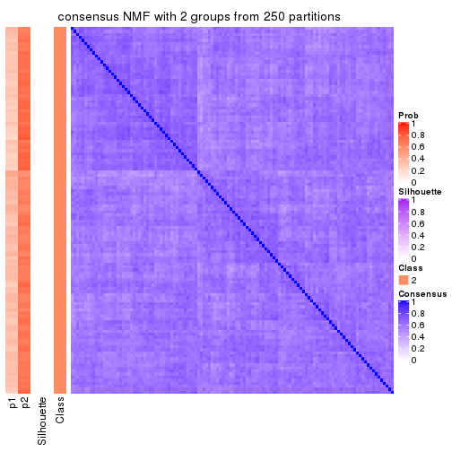
consensus_heatmap(res, k = 3)
consensus_heatmap(res, k = 4)
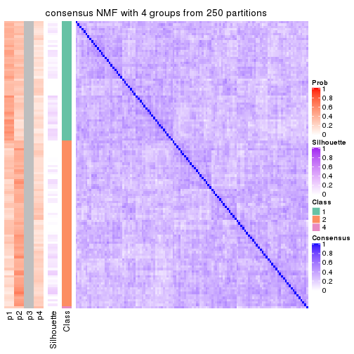
consensus_heatmap(res, k = 5)
consensus_heatmap(res, k = 6)
Heatmaps for the membership of samples in all partitions to see how consistent they are:
membership_heatmap(res, k = 2)
membership_heatmap(res, k = 3)
membership_heatmap(res, k = 4)
membership_heatmap(res, k = 5)
membership_heatmap(res, k = 6)
As soon as we have had the classes for columns, we can look for signatures which are significantly different between classes which can be candidate marks for certain classes. Following are the heatmaps for signatures.
Signature heatmaps where rows are scaled:
get_signatures(res, k = 2)

get_signatures(res, k = 3)

get_signatures(res, k = 4)

get_signatures(res, k = 5)

get_signatures(res, k = 6)

Signature heatmaps where rows are not scaled:
get_signatures(res, k = 2, scale_rows = FALSE)

get_signatures(res, k = 3, scale_rows = FALSE)

get_signatures(res, k = 4, scale_rows = FALSE)

get_signatures(res, k = 5, scale_rows = FALSE)

get_signatures(res, k = 6, scale_rows = FALSE)

Compare the overlap of signatures from different k:
compare_signatures(res)

get_signature() returns a data frame invisibly. TO get the list of signatures, the function
call should be assigned to a variable explicitly. In following code, if plot argument is set
to FALSE, no heatmap is plotted while only the differential analysis is performed.
# code only for demonstration
tb = get_signature(res, k = ..., plot = FALSE)
An example of the output of tb is:
#> which_row fdr mean_1 mean_2 scaled_mean_1 scaled_mean_2 km
#> 1 38 0.042760348 8.373488 9.131774 -0.5533452 0.5164555 1
#> 2 40 0.018707592 7.106213 8.469186 -0.6173731 0.5762149 1
#> 3 55 0.019134737 10.221463 11.207825 -0.6159697 0.5749050 1
#> 4 59 0.006059896 5.921854 7.869574 -0.6899429 0.6439467 1
#> 5 60 0.018055526 8.928898 10.211722 -0.6204761 0.5791110 1
#> 6 98 0.009384629 15.714769 14.887706 0.6635654 -0.6193277 2
...
The columns in tb are:
which_row: row indices corresponding to the input matrix.fdr: FDR for the differential test. mean_x: The mean value in group x.scaled_mean_x: The mean value in group x after rows are scaled.km: Row groups if k-means clustering is applied to rows.UMAP plot which shows how samples are separated.
dimension_reduction(res, k = 2, method = "UMAP")
dimension_reduction(res, k = 3, method = "UMAP")
dimension_reduction(res, k = 4, method = "UMAP")
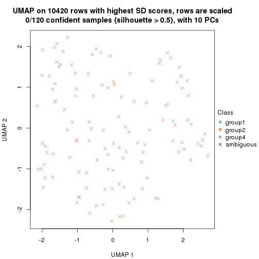
dimension_reduction(res, k = 5, method = "UMAP")
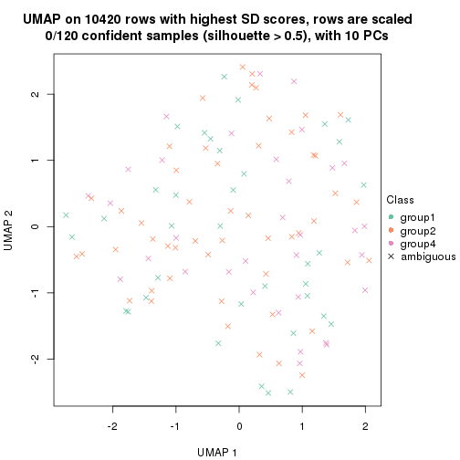
dimension_reduction(res, k = 6, method = "UMAP")
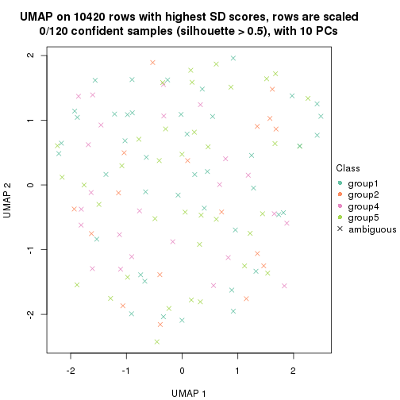
Following heatmap shows how subgroups are split when increasing k:
collect_classes(res)
If matrix rows can be associated to genes, consider to use GO_Enrichment(res,
...) to perform function enrichment for the signature genes.
The object with results only for a single top-value method and a single partition method can be extracted as:
res = res_list["CV", "hclust"]
# you can also extract it by
# res = res_list["CV:hclust"]
A summary of res and all the functions that can be applied to it:
res
#> A 'ConsensusPartition' object with k = 2, 3, 4, 5, 6.
#> On a matrix with 10420 rows and 120 columns.
#> Top rows (1000, 2000, 3000, 4000, 5000) are extracted by 'CV' method.
#> Subgroups are detected by 'hclust' method.
#> Performed in total 1250 partitions by row resampling.
#> Best k for subgroups seems to be 4.
#>
#> Following methods can be applied to this 'ConsensusPartition' object:
#> [1] "cola_report" "collect_classes" "collect_plots"
#> [4] "collect_stats" "colnames" "compare_signatures"
#> [7] "consensus_heatmap" "dimension_reduction" "functional_enrichment"
#> [10] "get_anno_col" "get_anno" "get_classes"
#> [13] "get_consensus" "get_matrix" "get_membership"
#> [16] "get_param" "get_signatures" "get_stats"
#> [19] "is_best_k" "is_stable_k" "membership_heatmap"
#> [22] "ncol" "nrow" "plot_ecdf"
#> [25] "rownames" "select_partition_number" "show"
#> [28] "suggest_best_k" "test_to_known_factors"
collect_plots() function collects all the plots made from res for all k (number of partitions)
into one single page to provide an easy and fast comparison between different k.
collect_plots(res)
The plots are:
k and the heatmap of
predicted classes for each k.k.k.k.All the plots in panels can be made by individual functions and they are plotted later in this section.
select_partition_number() produces several plots showing different
statistics for choosing “optimized” k. There are following statistics:
k;k, the area increased is defined as \(A_k - A_{k-1}\).The detailed explanations of these statistics can be found in the cola vignette.
Generally speaking, lower PAC score, higher mean silhouette score or higher
concordance corresponds to better partition. Rand index and Jaccard index
measure how similar the current partition is compared to partition with k-1.
If they are too similar, we won't accept k is better than k-1.
select_partition_number(res)
The numeric values for all these statistics can be obtained by get_stats().
get_stats(res)
#> k 1-PAC mean_silhouette concordance area_increased Rand Jaccard
#> 2 2 0.000000 0.4767 0.697 0.391 0.983 0.983
#> 3 3 0.000000 0.3583 0.543 0.427 0.967 0.966
#> 4 4 0.000776 0.2153 0.455 0.172 0.889 0.883
#> 5 5 0.004192 0.0883 0.372 0.105 0.739 0.693
#> 6 6 0.014283 0.0780 0.330 0.054 0.776 0.673
suggest_best_k() suggests the best \(k\) based on these statistics. The rules are as follows:
NA.suggest_best_k(res)
#> [1] 4
Following shows the table of the partitions (You need to click the show/hide
code output link to see it). The membership matrix (columns with name p*)
is inferred by
clue::cl_consensus()
function with the SE method. Basically the value in the membership matrix
represents the probability to belong to a certain group. The finall class
label for an item is determined with the group with highest probability it
belongs to.
In get_classes() function, the entropy is calculated from the membership
matrix and the silhouette score is calculated from the consensus matrix.
cbind(get_classes(res, k = 2), get_membership(res, k = 2))
#> class entropy silhouette p1 p2
#> SRR572528 2 0.844 0.5919 0.272 0.728
#> SRR572529 2 0.844 0.5715 0.272 0.728
#> SRR572530 2 0.788 0.6001 0.236 0.764
#> SRR572531 2 0.871 0.5833 0.292 0.708
#> SRR572532 2 0.946 0.2915 0.364 0.636
#> SRR572533 2 0.921 0.4530 0.336 0.664
#> SRR572534 2 0.745 0.6053 0.212 0.788
#> SRR572535 2 0.861 0.5793 0.284 0.716
#> SRR572536 2 0.844 0.5432 0.272 0.728
#> SRR572537 2 0.866 0.5478 0.288 0.712
#> SRR572538 2 0.850 0.5599 0.276 0.724
#> SRR572539 2 0.802 0.5843 0.244 0.756
#> SRR572540 2 0.827 0.5952 0.260 0.740
#> SRR572541 2 0.821 0.6019 0.256 0.744
#> SRR572542 2 0.821 0.6009 0.256 0.744
#> SRR572543 2 0.827 0.5805 0.260 0.740
#> SRR572544 2 0.745 0.6001 0.212 0.788
#> SRR572545 2 0.839 0.5887 0.268 0.732
#> SRR572546 2 0.855 0.5760 0.280 0.720
#> SRR572547 2 0.844 0.5810 0.272 0.728
#> SRR572548 2 0.808 0.5821 0.248 0.752
#> SRR572549 2 0.850 0.5904 0.276 0.724
#> SRR572550 2 0.760 0.5948 0.220 0.780
#> SRR572551 2 0.833 0.5824 0.264 0.736
#> SRR572552 2 0.861 0.5696 0.284 0.716
#> SRR572553 2 0.844 0.5786 0.272 0.728
#> SRR572554 2 0.738 0.5994 0.208 0.792
#> SRR572555 2 0.839 0.5717 0.268 0.732
#> SRR572556 2 0.855 0.5900 0.280 0.720
#> SRR572557 2 0.821 0.5868 0.256 0.744
#> SRR572558 2 0.855 0.5647 0.280 0.720
#> SRR572559 2 0.886 0.5527 0.304 0.696
#> SRR572560 2 0.730 0.5905 0.204 0.796
#> SRR572561 2 0.909 0.5266 0.324 0.676
#> SRR572562 2 0.861 0.5625 0.284 0.716
#> SRR572563 2 0.844 0.5791 0.272 0.728
#> SRR572564 2 0.855 0.5688 0.280 0.720
#> SRR572565 2 0.697 0.5951 0.188 0.812
#> SRR572566 2 0.802 0.6010 0.244 0.756
#> SRR572567 2 0.839 0.5849 0.268 0.732
#> SRR572568 2 0.833 0.5767 0.264 0.736
#> SRR572569 2 0.881 0.5644 0.300 0.700
#> SRR572570 2 0.855 0.5380 0.280 0.720
#> SRR572571 2 0.802 0.5979 0.244 0.756
#> SRR572572 2 0.802 0.5872 0.244 0.756
#> SRR572573 2 0.833 0.5805 0.264 0.736
#> SRR572574 2 0.904 0.5236 0.320 0.680
#> SRR572575 2 0.871 0.5294 0.292 0.708
#> SRR572576 2 0.850 0.4960 0.276 0.724
#> SRR572577 2 0.850 0.5513 0.276 0.724
#> SRR572578 2 0.833 0.5887 0.264 0.736
#> SRR572579 2 0.904 0.5316 0.320 0.680
#> SRR572580 2 0.932 0.5106 0.348 0.652
#> SRR572581 2 0.876 0.5247 0.296 0.704
#> SRR572582 2 0.850 0.5781 0.276 0.724
#> SRR572583 2 0.844 0.5818 0.272 0.728
#> SRR572584 2 0.886 0.5162 0.304 0.696
#> SRR572585 2 0.909 0.4547 0.324 0.676
#> SRR572586 2 0.861 0.5805 0.284 0.716
#> SRR572587 2 0.808 0.5844 0.248 0.752
#> SRR572588 2 0.871 0.5664 0.292 0.708
#> SRR572589 2 0.985 -0.1636 0.428 0.572
#> SRR572590 2 0.921 0.4657 0.336 0.664
#> SRR572591 2 0.932 0.3925 0.348 0.652
#> SRR572592 2 0.999 -0.3492 0.480 0.520
#> SRR572593 2 0.745 0.5994 0.212 0.788
#> SRR572594 2 0.987 -0.1635 0.432 0.568
#> SRR572595 2 0.952 0.3381 0.372 0.628
#> SRR572596 2 0.958 0.3593 0.380 0.620
#> SRR572597 2 0.925 0.4247 0.340 0.660
#> SRR572598 2 0.961 0.1229 0.384 0.616
#> SRR572599 2 0.994 -0.0274 0.456 0.544
#> SRR572600 2 0.936 0.3246 0.352 0.648
#> SRR572601 2 0.929 0.4157 0.344 0.656
#> SRR572602 2 0.881 0.5398 0.300 0.700
#> SRR572603 2 0.850 0.5364 0.276 0.724
#> SRR572604 2 0.900 0.5471 0.316 0.684
#> SRR572605 2 0.987 -0.0953 0.432 0.568
#> SRR572606 2 0.929 0.4152 0.344 0.656
#> SRR572607 2 0.949 0.2935 0.368 0.632
#> SRR572608 2 0.943 0.3732 0.360 0.640
#> SRR572609 2 0.850 0.5768 0.276 0.724
#> SRR572610 2 0.987 -0.0733 0.432 0.568
#> SRR572611 2 0.946 0.3156 0.364 0.636
#> SRR572612 2 0.909 0.4903 0.324 0.676
#> SRR572613 1 0.991 0.0000 0.556 0.444
#> SRR572614 2 0.978 0.2834 0.412 0.588
#> SRR572615 2 0.861 0.5890 0.284 0.716
#> SRR572616 2 0.904 0.5108 0.320 0.680
#> SRR572617 2 0.891 0.4663 0.308 0.692
#> SRR572618 2 0.895 0.4988 0.312 0.688
#> SRR572619 2 0.932 0.3931 0.348 0.652
#> SRR572620 2 0.886 0.4877 0.304 0.696
#> SRR572621 2 0.921 0.4591 0.336 0.664
#> SRR572622 2 0.955 0.2610 0.376 0.624
#> SRR572623 2 0.917 0.4466 0.332 0.668
#> SRR572624 2 0.855 0.5638 0.280 0.720
#> SRR572625 2 0.966 0.1281 0.392 0.608
#> SRR572626 2 0.850 0.5750 0.276 0.724
#> SRR572627 2 0.955 0.2278 0.376 0.624
#> SRR572628 2 0.921 0.4250 0.336 0.664
#> SRR572629 2 0.827 0.5515 0.260 0.740
#> SRR572630 2 0.850 0.5345 0.276 0.724
#> SRR572631 2 0.881 0.5375 0.300 0.700
#> SRR572632 2 0.917 0.4004 0.332 0.668
#> SRR572633 2 0.871 0.5758 0.292 0.708
#> SRR572634 2 0.855 0.5380 0.280 0.720
#> SRR572635 2 0.913 0.4958 0.328 0.672
#> SRR572636 2 0.866 0.5572 0.288 0.712
#> SRR572637 2 0.833 0.5966 0.264 0.736
#> SRR572638 2 0.949 0.1941 0.368 0.632
#> SRR572639 2 0.753 0.5889 0.216 0.784
#> SRR572640 2 0.827 0.5524 0.260 0.740
#> SRR572641 2 0.866 0.5722 0.288 0.712
#> SRR572642 2 0.881 0.5018 0.300 0.700
#> SRR572643 2 0.839 0.5782 0.268 0.732
#> SRR572644 2 0.921 0.4728 0.336 0.664
#> SRR572645 2 0.866 0.5197 0.288 0.712
#> SRR572646 2 0.850 0.5654 0.276 0.724
#> SRR572647 2 0.886 0.5293 0.304 0.696
cbind(get_classes(res, k = 3), get_membership(res, k = 3))
#> class entropy silhouette p1 p2 p3
#> SRR572528 2 0.816 0.4973 0.248 0.628 0.124
#> SRR572529 2 0.856 0.4641 0.304 0.572 0.124
#> SRR572530 2 0.771 0.4947 0.256 0.652 0.092
#> SRR572531 2 0.807 0.5024 0.276 0.620 0.104
#> SRR572532 2 0.896 0.3126 0.304 0.540 0.156
#> SRR572533 2 0.910 0.3381 0.264 0.544 0.192
#> SRR572534 2 0.837 0.4977 0.228 0.620 0.152
#> SRR572535 2 0.853 0.4899 0.308 0.572 0.120
#> SRR572536 2 0.823 0.4641 0.320 0.584 0.096
#> SRR572537 2 0.785 0.4858 0.264 0.640 0.096
#> SRR572538 2 0.805 0.4596 0.256 0.632 0.112
#> SRR572539 2 0.791 0.4932 0.272 0.632 0.096
#> SRR572540 2 0.805 0.4811 0.292 0.612 0.096
#> SRR572541 2 0.784 0.4903 0.272 0.636 0.092
#> SRR572542 2 0.799 0.4875 0.292 0.616 0.092
#> SRR572543 2 0.798 0.4745 0.256 0.636 0.108
#> SRR572544 2 0.681 0.5070 0.172 0.736 0.092
#> SRR572545 2 0.835 0.4857 0.280 0.600 0.120
#> SRR572546 2 0.782 0.4794 0.288 0.628 0.084
#> SRR572547 2 0.809 0.4979 0.288 0.612 0.100
#> SRR572548 2 0.782 0.4643 0.252 0.648 0.100
#> SRR572549 2 0.748 0.4905 0.284 0.648 0.068
#> SRR572550 2 0.770 0.4924 0.200 0.676 0.124
#> SRR572551 2 0.733 0.4886 0.256 0.672 0.072
#> SRR572552 2 0.809 0.4974 0.240 0.636 0.124
#> SRR572553 2 0.814 0.4652 0.252 0.628 0.120
#> SRR572554 2 0.771 0.5038 0.248 0.656 0.096
#> SRR572555 2 0.860 0.4549 0.292 0.576 0.132
#> SRR572556 2 0.828 0.4905 0.248 0.620 0.132
#> SRR572557 2 0.854 0.4744 0.268 0.592 0.140
#> SRR572558 2 0.845 0.4478 0.316 0.572 0.112
#> SRR572559 2 0.894 0.3773 0.284 0.552 0.164
#> SRR572560 2 0.788 0.4921 0.244 0.648 0.108
#> SRR572561 2 0.872 0.3747 0.324 0.548 0.128
#> SRR572562 2 0.816 0.4845 0.348 0.568 0.084
#> SRR572563 2 0.896 0.4465 0.312 0.536 0.152
#> SRR572564 2 0.862 0.4622 0.296 0.572 0.132
#> SRR572565 2 0.793 0.4865 0.284 0.624 0.092
#> SRR572566 2 0.746 0.4998 0.244 0.672 0.084
#> SRR572567 2 0.740 0.4876 0.324 0.624 0.052
#> SRR572568 2 0.854 0.4790 0.268 0.592 0.140
#> SRR572569 2 0.813 0.4805 0.284 0.612 0.104
#> SRR572570 2 0.859 0.4541 0.300 0.572 0.128
#> SRR572571 2 0.820 0.4795 0.268 0.616 0.116
#> SRR572572 2 0.801 0.4779 0.252 0.636 0.112
#> SRR572573 2 0.809 0.4886 0.288 0.612 0.100
#> SRR572574 2 0.908 0.4435 0.320 0.520 0.160
#> SRR572575 2 0.875 0.4285 0.300 0.560 0.140
#> SRR572576 2 0.885 0.3345 0.264 0.568 0.168
#> SRR572577 2 0.920 0.4142 0.352 0.488 0.160
#> SRR572578 2 0.806 0.4949 0.304 0.604 0.092
#> SRR572579 2 0.902 0.3614 0.284 0.544 0.172
#> SRR572580 2 0.836 0.4730 0.300 0.588 0.112
#> SRR572581 2 0.886 0.4352 0.312 0.544 0.144
#> SRR572582 2 0.855 0.4537 0.276 0.588 0.136
#> SRR572583 2 0.856 0.4569 0.304 0.572 0.124
#> SRR572584 2 0.859 0.4110 0.360 0.532 0.108
#> SRR572585 2 0.937 0.3006 0.292 0.504 0.204
#> SRR572586 2 0.849 0.4385 0.312 0.572 0.116
#> SRR572587 2 0.863 0.4398 0.340 0.544 0.116
#> SRR572588 2 0.806 0.4768 0.304 0.604 0.092
#> SRR572589 2 0.989 -0.0996 0.292 0.408 0.300
#> SRR572590 2 0.948 0.3436 0.336 0.468 0.196
#> SRR572591 2 0.927 0.2865 0.336 0.492 0.172
#> SRR572592 1 0.995 -0.0146 0.380 0.324 0.296
#> SRR572593 2 0.838 0.4727 0.268 0.604 0.128
#> SRR572594 2 0.998 -0.4066 0.304 0.360 0.336
#> SRR572595 2 0.947 0.1916 0.360 0.452 0.188
#> SRR572596 2 0.923 0.2058 0.380 0.464 0.156
#> SRR572597 2 0.937 0.1627 0.324 0.488 0.188
#> SRR572598 2 0.978 -0.1241 0.356 0.408 0.236
#> SRR572599 3 0.995 0.0000 0.284 0.356 0.360
#> SRR572600 2 0.959 0.0687 0.376 0.424 0.200
#> SRR572601 2 0.941 0.3270 0.316 0.488 0.196
#> SRR572602 2 0.865 0.4667 0.292 0.572 0.136
#> SRR572603 2 0.851 0.4413 0.264 0.596 0.140
#> SRR572604 2 0.845 0.4273 0.304 0.580 0.116
#> SRR572605 2 0.981 -0.1859 0.364 0.396 0.240
#> SRR572606 2 0.917 0.3048 0.244 0.540 0.216
#> SRR572607 2 0.967 -0.0672 0.388 0.400 0.212
#> SRR572608 2 0.948 0.2436 0.336 0.468 0.196
#> SRR572609 2 0.913 0.3557 0.312 0.520 0.168
#> SRR572610 2 0.982 -0.1455 0.324 0.420 0.256
#> SRR572611 2 0.968 0.1615 0.340 0.436 0.224
#> SRR572612 2 0.912 0.2452 0.340 0.504 0.156
#> SRR572613 1 0.996 0.1647 0.364 0.288 0.348
#> SRR572614 2 0.955 0.0341 0.352 0.448 0.200
#> SRR572615 2 0.828 0.4956 0.296 0.596 0.108
#> SRR572616 2 0.894 0.3532 0.328 0.528 0.144
#> SRR572617 2 0.906 0.3408 0.380 0.480 0.140
#> SRR572618 2 0.940 0.1878 0.292 0.500 0.208
#> SRR572619 2 0.917 0.3821 0.296 0.524 0.180
#> SRR572620 2 0.911 0.3736 0.292 0.532 0.176
#> SRR572621 2 0.929 0.2928 0.304 0.508 0.188
#> SRR572622 2 0.975 -0.0185 0.364 0.408 0.228
#> SRR572623 2 0.941 0.1524 0.308 0.492 0.200
#> SRR572624 2 0.840 0.4122 0.328 0.568 0.104
#> SRR572625 2 0.992 -0.2639 0.320 0.392 0.288
#> SRR572626 2 0.853 0.4877 0.308 0.572 0.120
#> SRR572627 2 0.957 0.1365 0.276 0.480 0.244
#> SRR572628 2 0.932 0.2412 0.320 0.496 0.184
#> SRR572629 2 0.940 0.2052 0.332 0.480 0.188
#> SRR572630 2 0.878 0.4372 0.288 0.564 0.148
#> SRR572631 2 0.894 0.4037 0.292 0.548 0.160
#> SRR572632 2 0.877 0.3875 0.336 0.536 0.128
#> SRR572633 2 0.844 0.4174 0.284 0.592 0.124
#> SRR572634 2 0.905 0.3931 0.288 0.540 0.172
#> SRR572635 2 0.921 0.3102 0.312 0.512 0.176
#> SRR572636 2 0.882 0.4321 0.296 0.556 0.148
#> SRR572637 2 0.780 0.4883 0.320 0.608 0.072
#> SRR572638 2 0.951 0.2135 0.336 0.464 0.200
#> SRR572639 2 0.832 0.4879 0.240 0.620 0.140
#> SRR572640 2 0.887 0.4360 0.260 0.568 0.172
#> SRR572641 2 0.850 0.4423 0.304 0.576 0.120
#> SRR572642 2 0.940 0.3166 0.344 0.472 0.184
#> SRR572643 2 0.853 0.4494 0.320 0.564 0.116
#> SRR572644 2 0.896 0.4299 0.304 0.540 0.156
#> SRR572645 2 0.899 0.4100 0.320 0.528 0.152
#> SRR572646 2 0.865 0.4734 0.276 0.580 0.144
#> SRR572647 2 0.865 0.4290 0.332 0.548 0.120
cbind(get_classes(res, k = 4), get_membership(res, k = 4))
#> class entropy silhouette p1 p2 p3 p4
#> SRR572528 1 0.830 0.32629 0.516 0.076 0.120 0.288
#> SRR572529 1 0.821 0.34576 0.508 0.048 0.156 0.288
#> SRR572530 1 0.794 0.36347 0.536 0.056 0.112 0.296
#> SRR572531 1 0.832 0.34470 0.524 0.092 0.108 0.276
#> SRR572532 1 0.891 0.13991 0.480 0.112 0.156 0.252
#> SRR572533 1 0.907 0.11474 0.468 0.152 0.136 0.244
#> SRR572534 1 0.846 0.35342 0.532 0.092 0.144 0.232
#> SRR572535 1 0.841 0.34141 0.512 0.072 0.144 0.272
#> SRR572536 1 0.834 0.23373 0.492 0.052 0.160 0.296
#> SRR572537 1 0.785 0.32894 0.576 0.072 0.104 0.248
#> SRR572538 1 0.831 0.35499 0.520 0.088 0.108 0.284
#> SRR572539 1 0.794 0.35762 0.548 0.052 0.128 0.272
#> SRR572540 1 0.796 0.36637 0.540 0.064 0.104 0.292
#> SRR572541 1 0.758 0.37501 0.576 0.060 0.084 0.280
#> SRR572542 1 0.784 0.35606 0.552 0.064 0.096 0.288
#> SRR572543 1 0.832 0.35258 0.524 0.088 0.112 0.276
#> SRR572544 1 0.742 0.39154 0.584 0.040 0.100 0.276
#> SRR572545 1 0.787 0.37740 0.568 0.048 0.148 0.236
#> SRR572546 1 0.776 0.33369 0.576 0.060 0.108 0.256
#> SRR572547 1 0.768 0.36774 0.580 0.044 0.132 0.244
#> SRR572548 1 0.774 0.35858 0.564 0.048 0.116 0.272
#> SRR572549 1 0.770 0.35924 0.568 0.040 0.132 0.260
#> SRR572550 1 0.790 0.38388 0.580 0.096 0.088 0.236
#> SRR572551 1 0.762 0.36426 0.604 0.072 0.096 0.228
#> SRR572552 1 0.823 0.33857 0.500 0.052 0.144 0.304
#> SRR572553 1 0.850 0.33775 0.536 0.120 0.120 0.224
#> SRR572554 1 0.704 0.39745 0.612 0.036 0.080 0.272
#> SRR572555 1 0.848 0.31688 0.500 0.116 0.092 0.292
#> SRR572556 1 0.797 0.37659 0.568 0.104 0.080 0.248
#> SRR572557 1 0.828 0.35905 0.528 0.064 0.152 0.256
#> SRR572558 1 0.786 0.33517 0.516 0.120 0.040 0.324
#> SRR572559 1 0.861 0.28788 0.492 0.092 0.132 0.284
#> SRR572560 1 0.829 0.33896 0.532 0.096 0.104 0.268
#> SRR572561 1 0.866 0.29985 0.480 0.128 0.096 0.296
#> SRR572562 1 0.814 0.32302 0.504 0.048 0.140 0.308
#> SRR572563 1 0.856 0.25347 0.476 0.076 0.140 0.308
#> SRR572564 1 0.903 0.24516 0.440 0.092 0.188 0.280
#> SRR572565 1 0.735 0.36911 0.576 0.044 0.080 0.300
#> SRR572566 1 0.718 0.37694 0.640 0.068 0.076 0.216
#> SRR572567 1 0.792 0.34677 0.536 0.048 0.124 0.292
#> SRR572568 1 0.803 0.34466 0.536 0.072 0.100 0.292
#> SRR572569 1 0.803 0.34056 0.532 0.084 0.084 0.300
#> SRR572570 1 0.849 0.25433 0.464 0.064 0.144 0.328
#> SRR572571 1 0.798 0.37505 0.572 0.092 0.096 0.240
#> SRR572572 1 0.863 0.31658 0.492 0.076 0.168 0.264
#> SRR572573 1 0.783 0.35916 0.564 0.048 0.132 0.256
#> SRR572574 1 0.881 0.21483 0.452 0.076 0.176 0.296
#> SRR572575 1 0.912 0.26109 0.452 0.148 0.136 0.264
#> SRR572576 1 0.926 0.10359 0.428 0.236 0.112 0.224
#> SRR572577 1 0.907 0.27391 0.420 0.092 0.184 0.304
#> SRR572578 1 0.825 0.32085 0.520 0.048 0.188 0.244
#> SRR572579 1 0.889 0.24796 0.464 0.132 0.116 0.288
#> SRR572580 1 0.878 0.29777 0.468 0.084 0.164 0.284
#> SRR572581 1 0.832 0.33200 0.536 0.080 0.136 0.248
#> SRR572582 1 0.866 0.32156 0.504 0.116 0.120 0.260
#> SRR572583 1 0.871 0.28523 0.472 0.088 0.144 0.296
#> SRR572584 1 0.869 0.06433 0.436 0.068 0.160 0.336
#> SRR572585 1 0.961 -0.16448 0.360 0.156 0.188 0.296
#> SRR572586 1 0.870 0.25476 0.476 0.072 0.180 0.272
#> SRR572587 1 0.875 0.17748 0.436 0.076 0.156 0.332
#> SRR572588 1 0.825 0.32210 0.528 0.092 0.100 0.280
#> SRR572589 3 0.920 -0.01811 0.320 0.080 0.364 0.236
#> SRR572590 1 0.875 0.22251 0.436 0.052 0.248 0.264
#> SRR572591 1 0.867 0.27148 0.496 0.076 0.192 0.236
#> SRR572592 2 0.986 0.16715 0.240 0.300 0.176 0.284
#> SRR572593 1 0.815 0.34825 0.528 0.060 0.132 0.280
#> SRR572594 2 0.984 0.19648 0.260 0.324 0.176 0.240
#> SRR572595 1 0.937 0.08842 0.368 0.100 0.232 0.300
#> SRR572596 1 0.980 -0.03401 0.340 0.176 0.232 0.252
#> SRR572597 1 0.949 -0.04585 0.324 0.108 0.248 0.320
#> SRR572598 4 0.985 0.00701 0.292 0.200 0.200 0.308
#> SRR572599 2 0.878 0.16835 0.248 0.484 0.084 0.184
#> SRR572600 4 0.976 0.02429 0.288 0.156 0.232 0.324
#> SRR572601 1 0.936 0.01101 0.352 0.092 0.260 0.296
#> SRR572602 1 0.877 0.25008 0.480 0.084 0.176 0.260
#> SRR572603 1 0.872 0.22862 0.476 0.120 0.108 0.296
#> SRR572604 1 0.881 0.24622 0.416 0.096 0.128 0.360
#> SRR572605 3 0.981 -0.12894 0.268 0.156 0.292 0.284
#> SRR572606 1 0.933 0.12875 0.408 0.116 0.200 0.276
#> SRR572607 1 0.971 -0.04048 0.332 0.184 0.176 0.308
#> SRR572608 1 0.938 0.07019 0.360 0.096 0.272 0.272
#> SRR572609 1 0.919 0.11629 0.368 0.076 0.260 0.296
#> SRR572610 1 0.984 -0.25185 0.292 0.164 0.272 0.272
#> SRR572611 1 0.886 0.06209 0.396 0.052 0.304 0.248
#> SRR572612 1 0.949 0.13476 0.408 0.176 0.164 0.252
#> SRR572613 3 0.949 0.04763 0.188 0.168 0.416 0.228
#> SRR572614 1 0.971 -0.04091 0.372 0.184 0.200 0.244
#> SRR572615 1 0.788 0.35813 0.548 0.060 0.104 0.288
#> SRR572616 1 0.887 0.28251 0.496 0.108 0.192 0.204
#> SRR572617 1 0.909 0.10232 0.356 0.072 0.224 0.348
#> SRR572618 1 0.952 0.02602 0.388 0.132 0.232 0.248
#> SRR572619 1 0.932 0.04796 0.420 0.116 0.244 0.220
#> SRR572620 1 0.890 0.17978 0.472 0.108 0.152 0.268
#> SRR572621 1 0.925 0.06737 0.424 0.140 0.152 0.284
#> SRR572622 3 0.968 -0.11297 0.292 0.132 0.312 0.264
#> SRR572623 1 0.936 0.06280 0.400 0.112 0.220 0.268
#> SRR572624 1 0.884 0.13111 0.424 0.080 0.160 0.336
#> SRR572625 3 0.996 -0.14478 0.252 0.208 0.280 0.260
#> SRR572626 1 0.798 0.35414 0.528 0.056 0.112 0.304
#> SRR572627 1 0.929 0.06696 0.408 0.104 0.264 0.224
#> SRR572628 1 0.925 0.06637 0.412 0.228 0.100 0.260
#> SRR572629 1 0.948 0.08543 0.376 0.116 0.252 0.256
#> SRR572630 1 0.856 0.21338 0.468 0.048 0.260 0.224
#> SRR572631 1 0.905 0.22363 0.460 0.132 0.144 0.264
#> SRR572632 1 0.906 0.07036 0.384 0.080 0.196 0.340
#> SRR572633 1 0.832 0.32645 0.540 0.112 0.100 0.248
#> SRR572634 1 0.939 0.06571 0.388 0.108 0.264 0.240
#> SRR572635 1 0.934 -0.15706 0.368 0.104 0.208 0.320
#> SRR572636 1 0.863 0.28869 0.512 0.108 0.132 0.248
#> SRR572637 1 0.775 0.36775 0.576 0.044 0.144 0.236
#> SRR572638 1 0.935 0.00570 0.384 0.100 0.260 0.256
#> SRR572639 1 0.787 0.36027 0.560 0.044 0.148 0.248
#> SRR572640 1 0.877 0.29553 0.496 0.096 0.172 0.236
#> SRR572641 1 0.888 0.24098 0.468 0.096 0.164 0.272
#> SRR572642 1 0.932 0.03208 0.416 0.128 0.180 0.276
#> SRR572643 1 0.818 0.30434 0.488 0.084 0.084 0.344
#> SRR572644 1 0.944 0.19670 0.412 0.140 0.204 0.244
#> SRR572645 1 0.868 0.13270 0.392 0.036 0.284 0.288
#> SRR572646 1 0.899 0.22872 0.424 0.076 0.208 0.292
#> SRR572647 1 0.885 0.24258 0.468 0.128 0.116 0.288
cbind(get_classes(res, k = 5), get_membership(res, k = 5))
#> class entropy silhouette p1 p2 p3 p4 p5
#> SRR572528 1 0.811 -0.15195 0.396 0.376 0.044 0.116 0.068
#> SRR572529 2 0.817 0.15463 0.288 0.456 0.056 0.148 0.052
#> SRR572530 2 0.805 0.18451 0.260 0.492 0.064 0.132 0.052
#> SRR572531 2 0.857 0.16686 0.276 0.440 0.072 0.124 0.088
#> SRR572532 2 0.872 0.04453 0.224 0.388 0.072 0.260 0.056
#> SRR572533 2 0.934 -0.02296 0.180 0.344 0.152 0.248 0.076
#> SRR572534 2 0.865 0.15597 0.248 0.420 0.048 0.192 0.092
#> SRR572535 1 0.812 -0.12444 0.404 0.376 0.068 0.084 0.068
#> SRR572536 2 0.824 0.04883 0.268 0.396 0.036 0.256 0.044
#> SRR572537 2 0.782 0.18058 0.240 0.500 0.032 0.176 0.052
#> SRR572538 2 0.789 0.21684 0.216 0.536 0.048 0.112 0.088
#> SRR572539 2 0.805 0.17777 0.216 0.508 0.080 0.156 0.040
#> SRR572540 2 0.784 0.21611 0.280 0.504 0.064 0.100 0.052
#> SRR572541 2 0.792 0.22733 0.236 0.520 0.060 0.128 0.056
#> SRR572542 2 0.838 0.14882 0.312 0.428 0.072 0.128 0.060
#> SRR572543 2 0.846 0.18365 0.236 0.472 0.064 0.136 0.092
#> SRR572544 2 0.707 0.23404 0.260 0.564 0.036 0.112 0.028
#> SRR572545 2 0.764 0.19949 0.292 0.504 0.032 0.112 0.060
#> SRR572546 2 0.780 0.21349 0.208 0.532 0.088 0.144 0.028
#> SRR572547 2 0.774 0.19360 0.204 0.552 0.080 0.120 0.044
#> SRR572548 2 0.781 0.20959 0.216 0.544 0.064 0.116 0.060
#> SRR572549 2 0.743 0.22201 0.232 0.556 0.056 0.124 0.032
#> SRR572550 2 0.795 0.23166 0.180 0.540 0.068 0.152 0.060
#> SRR572551 2 0.773 0.20499 0.280 0.500 0.040 0.132 0.048
#> SRR572552 2 0.810 0.14941 0.292 0.452 0.064 0.156 0.036
#> SRR572553 2 0.841 0.18564 0.232 0.484 0.120 0.092 0.072
#> SRR572554 2 0.725 0.23266 0.220 0.572 0.032 0.132 0.044
#> SRR572555 2 0.841 0.19290 0.188 0.504 0.076 0.132 0.100
#> SRR572556 2 0.814 0.19444 0.272 0.484 0.104 0.084 0.056
#> SRR572557 2 0.801 0.13732 0.360 0.424 0.048 0.104 0.064
#> SRR572558 2 0.826 0.18914 0.232 0.484 0.052 0.156 0.076
#> SRR572559 2 0.865 0.13088 0.240 0.456 0.076 0.112 0.116
#> SRR572560 2 0.840 0.21235 0.184 0.488 0.072 0.184 0.072
#> SRR572561 2 0.889 0.13302 0.232 0.432 0.128 0.124 0.084
#> SRR572562 2 0.844 0.09716 0.348 0.392 0.076 0.124 0.060
#> SRR572563 2 0.862 0.10270 0.256 0.400 0.068 0.224 0.052
#> SRR572564 2 0.891 0.05048 0.304 0.344 0.076 0.208 0.068
#> SRR572565 2 0.778 0.22091 0.176 0.548 0.044 0.164 0.068
#> SRR572566 2 0.787 0.22853 0.212 0.532 0.080 0.136 0.040
#> SRR572567 2 0.762 0.18416 0.304 0.508 0.060 0.056 0.072
#> SRR572568 2 0.854 0.16604 0.232 0.444 0.068 0.192 0.064
#> SRR572569 2 0.788 0.21423 0.212 0.532 0.096 0.124 0.036
#> SRR572570 2 0.866 0.06253 0.308 0.344 0.076 0.232 0.040
#> SRR572571 2 0.755 0.22948 0.244 0.548 0.036 0.092 0.080
#> SRR572572 2 0.828 0.14228 0.288 0.464 0.084 0.088 0.076
#> SRR572573 2 0.790 0.19923 0.240 0.516 0.068 0.132 0.044
#> SRR572574 2 0.903 0.02030 0.284 0.340 0.088 0.220 0.068
#> SRR572575 2 0.907 0.06692 0.328 0.332 0.140 0.128 0.072
#> SRR572576 2 0.949 0.03414 0.216 0.344 0.096 0.184 0.160
#> SRR572577 2 0.885 0.06613 0.328 0.356 0.056 0.144 0.116
#> SRR572578 2 0.866 0.11105 0.288 0.424 0.096 0.116 0.076
#> SRR572579 2 0.916 0.05985 0.276 0.372 0.096 0.124 0.132
#> SRR572580 2 0.892 0.05664 0.328 0.360 0.120 0.084 0.108
#> SRR572581 2 0.879 0.08222 0.284 0.396 0.096 0.164 0.060
#> SRR572582 2 0.867 0.15674 0.260 0.428 0.076 0.164 0.072
#> SRR572583 2 0.878 0.12160 0.232 0.436 0.084 0.164 0.084
#> SRR572584 2 0.885 0.01703 0.264 0.364 0.108 0.224 0.040
#> SRR572585 4 0.940 0.16671 0.184 0.268 0.140 0.324 0.084
#> SRR572586 2 0.876 0.08171 0.264 0.360 0.052 0.252 0.072
#> SRR572587 2 0.887 0.02950 0.320 0.344 0.068 0.192 0.076
#> SRR572588 2 0.799 0.18694 0.196 0.532 0.068 0.144 0.060
#> SRR572589 1 0.939 -0.07611 0.296 0.224 0.236 0.188 0.056
#> SRR572590 2 0.892 -0.03439 0.328 0.352 0.092 0.152 0.076
#> SRR572591 2 0.913 0.07153 0.260 0.388 0.108 0.136 0.108
#> SRR572592 3 0.989 0.03577 0.172 0.220 0.268 0.176 0.164
#> SRR572593 2 0.809 0.19104 0.248 0.496 0.064 0.136 0.056
#> SRR572594 5 0.989 -0.06398 0.180 0.188 0.228 0.148 0.256
#> SRR572595 2 0.949 -0.03473 0.244 0.300 0.096 0.240 0.120
#> SRR572596 2 0.978 -0.15433 0.228 0.264 0.132 0.144 0.232
#> SRR572597 1 0.955 0.02214 0.320 0.260 0.112 0.152 0.156
#> SRR572598 4 0.965 0.07617 0.228 0.196 0.148 0.312 0.116
#> SRR572599 5 0.715 0.13335 0.104 0.168 0.012 0.120 0.596
#> SRR572600 1 0.987 -0.07529 0.244 0.212 0.220 0.196 0.128
#> SRR572601 1 0.925 -0.00810 0.308 0.256 0.148 0.236 0.052
#> SRR572602 2 0.886 0.08193 0.248 0.376 0.076 0.236 0.064
#> SRR572603 2 0.889 0.09568 0.224 0.388 0.072 0.240 0.076
#> SRR572604 2 0.885 0.07878 0.288 0.364 0.080 0.208 0.060
#> SRR572605 4 0.982 0.04909 0.204 0.212 0.168 0.280 0.136
#> SRR572606 1 0.923 0.05883 0.312 0.304 0.176 0.144 0.064
#> SRR572607 2 0.950 -0.06979 0.216 0.296 0.084 0.260 0.144
#> SRR572608 1 0.970 0.05160 0.288 0.256 0.172 0.164 0.120
#> SRR572609 1 0.932 0.03420 0.328 0.292 0.136 0.156 0.088
#> SRR572610 3 0.857 0.17272 0.228 0.208 0.408 0.136 0.020
#> SRR572611 1 0.924 0.04106 0.324 0.312 0.112 0.160 0.092
#> SRR572612 2 0.970 -0.04893 0.244 0.304 0.156 0.148 0.148
#> SRR572613 3 0.934 0.06092 0.148 0.168 0.340 0.264 0.080
#> SRR572614 1 0.970 -0.05011 0.284 0.264 0.156 0.124 0.172
#> SRR572615 2 0.865 0.17639 0.248 0.444 0.076 0.148 0.084
#> SRR572616 2 0.908 0.06843 0.220 0.412 0.164 0.104 0.100
#> SRR572617 1 0.907 0.01339 0.336 0.316 0.108 0.168 0.072
#> SRR572618 1 0.944 -0.01157 0.292 0.276 0.076 0.208 0.148
#> SRR572619 4 0.861 0.03722 0.180 0.340 0.088 0.352 0.040
#> SRR572620 2 0.892 -0.03793 0.220 0.372 0.068 0.260 0.080
#> SRR572621 2 0.939 -0.05716 0.288 0.328 0.128 0.144 0.112
#> SRR572622 5 0.982 -0.07170 0.208 0.200 0.116 0.228 0.248
#> SRR572623 2 0.959 -0.13503 0.280 0.288 0.104 0.168 0.160
#> SRR572624 2 0.911 -0.00756 0.332 0.332 0.112 0.124 0.100
#> SRR572625 3 0.826 0.19926 0.196 0.208 0.440 0.148 0.008
#> SRR572626 2 0.773 0.20522 0.256 0.508 0.048 0.152 0.036
#> SRR572627 1 0.958 0.05970 0.292 0.280 0.180 0.136 0.112
#> SRR572628 2 0.969 -0.01997 0.200 0.316 0.124 0.200 0.160
#> SRR572629 2 0.943 -0.06829 0.276 0.316 0.088 0.144 0.176
#> SRR572630 2 0.909 -0.00602 0.220 0.352 0.112 0.256 0.060
#> SRR572631 2 0.912 0.06276 0.308 0.340 0.072 0.124 0.156
#> SRR572632 4 0.877 0.10961 0.212 0.280 0.072 0.376 0.060
#> SRR572633 2 0.884 0.07244 0.304 0.388 0.100 0.076 0.132
#> SRR572634 2 0.958 -0.11696 0.252 0.292 0.100 0.220 0.136
#> SRR572635 4 0.915 0.13990 0.204 0.284 0.128 0.328 0.056
#> SRR572636 2 0.906 0.11617 0.220 0.412 0.120 0.164 0.084
#> SRR572637 2 0.832 0.12997 0.348 0.412 0.080 0.084 0.076
#> SRR572638 1 0.954 0.02124 0.280 0.272 0.104 0.224 0.120
#> SRR572639 2 0.787 0.19887 0.276 0.484 0.048 0.152 0.040
#> SRR572640 2 0.884 0.12078 0.176 0.444 0.072 0.192 0.116
#> SRR572641 2 0.885 0.10142 0.224 0.440 0.128 0.128 0.080
#> SRR572642 2 0.936 -0.08515 0.224 0.300 0.132 0.272 0.072
#> SRR572643 2 0.833 0.16196 0.232 0.456 0.048 0.200 0.064
#> SRR572644 2 0.932 0.02200 0.288 0.336 0.156 0.108 0.112
#> SRR572645 1 0.882 -0.01077 0.304 0.292 0.076 0.280 0.048
#> SRR572646 2 0.875 0.05294 0.352 0.356 0.108 0.116 0.068
#> SRR572647 2 0.901 0.08621 0.232 0.384 0.132 0.200 0.052
cbind(get_classes(res, k = 6), get_membership(res, k = 6))
#> class entropy silhouette p1 p2 p3 p4 p5 p6
#> SRR572528 5 0.786 0.10819 0.160 0.296 0.056 0.028 0.420 0.040
#> SRR572529 5 0.820 0.15907 0.144 0.248 0.116 0.036 0.424 0.032
#> SRR572530 5 0.783 0.16282 0.112 0.284 0.080 0.032 0.452 0.040
#> SRR572531 5 0.827 0.14872 0.156 0.240 0.092 0.024 0.424 0.064
#> SRR572532 5 0.887 0.07585 0.204 0.268 0.072 0.060 0.324 0.072
#> SRR572533 5 0.905 -0.05807 0.288 0.148 0.048 0.144 0.296 0.076
#> SRR572534 5 0.846 0.15974 0.208 0.188 0.104 0.036 0.412 0.052
#> SRR572535 2 0.803 -0.05158 0.136 0.372 0.064 0.032 0.348 0.048
#> SRR572536 5 0.841 0.07338 0.180 0.320 0.116 0.036 0.320 0.028
#> SRR572537 5 0.760 0.17108 0.132 0.308 0.052 0.040 0.444 0.024
#> SRR572538 5 0.782 0.21211 0.124 0.176 0.064 0.052 0.524 0.060
#> SRR572539 5 0.808 0.17123 0.168 0.220 0.064 0.036 0.456 0.056
#> SRR572540 5 0.742 0.19398 0.144 0.256 0.056 0.012 0.488 0.044
#> SRR572541 5 0.807 0.19849 0.104 0.228 0.060 0.068 0.480 0.060
#> SRR572542 5 0.804 0.14378 0.116 0.260 0.048 0.064 0.456 0.056
#> SRR572543 5 0.840 0.14425 0.168 0.220 0.080 0.044 0.428 0.060
#> SRR572544 5 0.690 0.19885 0.080 0.336 0.056 0.024 0.488 0.016
#> SRR572545 5 0.781 0.15387 0.116 0.296 0.072 0.032 0.444 0.040
#> SRR572546 5 0.759 0.18694 0.208 0.164 0.068 0.020 0.500 0.040
#> SRR572547 5 0.790 0.15934 0.132 0.220 0.068 0.020 0.480 0.080
#> SRR572548 5 0.786 0.19984 0.200 0.124 0.140 0.024 0.480 0.032
#> SRR572549 5 0.721 0.20064 0.152 0.192 0.072 0.016 0.540 0.028
#> SRR572550 5 0.782 0.20947 0.172 0.128 0.088 0.036 0.520 0.056
#> SRR572551 5 0.716 0.16877 0.080 0.360 0.052 0.028 0.452 0.028
#> SRR572552 5 0.829 0.14012 0.180 0.232 0.068 0.044 0.424 0.052
#> SRR572553 5 0.824 0.15950 0.096 0.204 0.052 0.048 0.464 0.136
#> SRR572554 5 0.743 0.20323 0.132 0.232 0.080 0.028 0.508 0.020
#> SRR572555 5 0.849 0.16714 0.124 0.184 0.056 0.048 0.440 0.148
#> SRR572556 5 0.795 0.16650 0.092 0.264 0.052 0.040 0.464 0.088
#> SRR572557 5 0.743 0.10629 0.088 0.380 0.044 0.032 0.412 0.044
#> SRR572558 5 0.832 0.17091 0.128 0.224 0.076 0.060 0.452 0.060
#> SRR572559 5 0.867 0.10695 0.108 0.204 0.104 0.084 0.432 0.068
#> SRR572560 5 0.795 0.18708 0.212 0.188 0.036 0.040 0.460 0.064
#> SRR572561 5 0.914 0.09539 0.196 0.204 0.092 0.068 0.344 0.096
#> SRR572562 5 0.847 0.08847 0.184 0.232 0.044 0.056 0.404 0.080
#> SRR572563 5 0.838 0.11607 0.280 0.176 0.040 0.072 0.380 0.052
#> SRR572564 5 0.880 0.10403 0.216 0.208 0.080 0.052 0.368 0.076
#> SRR572565 5 0.778 0.20054 0.212 0.156 0.076 0.032 0.488 0.036
#> SRR572566 5 0.790 0.19899 0.176 0.204 0.064 0.032 0.476 0.048
#> SRR572567 5 0.779 0.17831 0.108 0.196 0.152 0.024 0.488 0.032
#> SRR572568 5 0.873 0.13190 0.188 0.228 0.080 0.040 0.376 0.088
#> SRR572569 5 0.751 0.19850 0.212 0.140 0.048 0.020 0.516 0.064
#> SRR572570 5 0.868 0.05122 0.208 0.216 0.168 0.020 0.336 0.052
#> SRR572571 5 0.741 0.20193 0.124 0.160 0.052 0.052 0.564 0.048
#> SRR572572 5 0.867 0.13909 0.132 0.236 0.136 0.044 0.392 0.060
#> SRR572573 5 0.818 0.17490 0.196 0.164 0.092 0.024 0.456 0.068
#> SRR572574 1 0.904 0.02107 0.284 0.232 0.128 0.052 0.248 0.056
#> SRR572575 5 0.861 0.04093 0.108 0.300 0.060 0.052 0.364 0.116
#> SRR572576 5 0.918 0.04683 0.176 0.196 0.060 0.172 0.328 0.068
#> SRR572577 5 0.878 0.04498 0.192 0.256 0.108 0.032 0.340 0.072
#> SRR572578 5 0.870 0.03674 0.128 0.288 0.120 0.056 0.356 0.052
#> SRR572579 5 0.916 0.05524 0.116 0.236 0.088 0.116 0.352 0.092
#> SRR572580 2 0.870 0.05521 0.108 0.368 0.104 0.044 0.284 0.092
#> SRR572581 5 0.863 0.06731 0.116 0.256 0.108 0.028 0.384 0.108
#> SRR572582 5 0.870 0.14940 0.156 0.232 0.092 0.040 0.392 0.088
#> SRR572583 5 0.873 0.09887 0.156 0.216 0.092 0.060 0.404 0.072
#> SRR572584 1 0.876 0.03281 0.328 0.228 0.116 0.040 0.240 0.048
#> SRR572585 5 0.969 -0.10474 0.200 0.168 0.172 0.080 0.252 0.128
#> SRR572586 5 0.884 0.06614 0.208 0.240 0.140 0.048 0.324 0.040
#> SRR572587 5 0.889 0.01248 0.244 0.236 0.128 0.044 0.300 0.048
#> SRR572588 5 0.823 0.17474 0.136 0.196 0.112 0.048 0.464 0.044
#> SRR572589 1 0.919 -0.06039 0.276 0.168 0.036 0.084 0.212 0.224
#> SRR572590 5 0.918 -0.03463 0.176 0.252 0.116 0.080 0.312 0.064
#> SRR572591 5 0.875 0.01108 0.108 0.312 0.136 0.036 0.324 0.084
#> SRR572592 6 0.961 -0.07550 0.156 0.140 0.072 0.152 0.212 0.268
#> SRR572593 5 0.809 0.16146 0.116 0.260 0.084 0.040 0.448 0.052
#> SRR572594 4 0.912 0.02026 0.092 0.160 0.036 0.320 0.176 0.216
#> SRR572595 5 0.968 -0.03510 0.116 0.216 0.188 0.096 0.252 0.132
#> SRR572596 2 0.984 0.02649 0.152 0.248 0.144 0.180 0.160 0.116
#> SRR572597 3 0.867 0.09501 0.148 0.200 0.372 0.028 0.196 0.056
#> SRR572598 1 0.973 -0.01611 0.240 0.164 0.104 0.120 0.232 0.140
#> SRR572599 4 0.788 0.17631 0.088 0.112 0.144 0.516 0.120 0.020
#> SRR572600 1 0.970 -0.01309 0.220 0.188 0.152 0.064 0.188 0.188
#> SRR572601 1 0.878 0.07698 0.388 0.152 0.100 0.072 0.232 0.056
#> SRR572602 5 0.900 0.01812 0.256 0.176 0.144 0.052 0.316 0.056
#> SRR572603 5 0.844 0.08595 0.280 0.204 0.096 0.040 0.348 0.032
#> SRR572604 5 0.876 0.07478 0.228 0.284 0.056 0.056 0.304 0.072
#> SRR572605 3 0.975 -0.00262 0.192 0.148 0.208 0.072 0.192 0.188
#> SRR572606 5 0.944 -0.07556 0.252 0.196 0.108 0.084 0.264 0.096
#> SRR572607 3 0.960 -0.00922 0.188 0.188 0.240 0.136 0.192 0.056
#> SRR572608 2 0.968 0.02724 0.152 0.232 0.156 0.068 0.220 0.172
#> SRR572609 2 0.870 -0.00487 0.076 0.336 0.244 0.040 0.236 0.068
#> SRR572610 6 0.879 0.14677 0.156 0.148 0.140 0.012 0.176 0.368
#> SRR572611 5 0.955 -0.09047 0.124 0.260 0.120 0.104 0.268 0.124
#> SRR572612 5 0.967 -0.08069 0.164 0.196 0.148 0.124 0.276 0.092
#> SRR572613 6 0.921 0.04811 0.164 0.148 0.148 0.076 0.096 0.368
#> SRR572614 2 0.973 -0.04098 0.184 0.212 0.076 0.192 0.208 0.128
#> SRR572615 5 0.821 0.14917 0.148 0.256 0.056 0.036 0.428 0.076
#> SRR572616 5 0.904 -0.04643 0.100 0.296 0.124 0.048 0.304 0.128
#> SRR572617 5 0.886 0.00852 0.244 0.208 0.116 0.020 0.316 0.096
#> SRR572618 3 0.864 0.18556 0.144 0.152 0.360 0.048 0.260 0.036
#> SRR572619 5 0.889 0.01678 0.300 0.140 0.096 0.064 0.328 0.072
#> SRR572620 5 0.890 0.00752 0.240 0.196 0.140 0.048 0.328 0.048
#> SRR572621 1 0.927 0.00436 0.260 0.220 0.096 0.124 0.252 0.048
#> SRR572622 1 0.963 -0.02440 0.260 0.136 0.132 0.224 0.168 0.080
#> SRR572623 3 0.877 0.15336 0.128 0.216 0.332 0.068 0.232 0.024
#> SRR572624 5 0.878 -0.02958 0.212 0.208 0.180 0.024 0.324 0.052
#> SRR572625 6 0.837 0.17229 0.184 0.140 0.056 0.024 0.168 0.428
#> SRR572626 5 0.762 0.16166 0.104 0.304 0.068 0.024 0.456 0.044
#> SRR572627 2 0.934 0.06220 0.128 0.328 0.092 0.088 0.220 0.144
#> SRR572628 5 0.944 0.02296 0.224 0.180 0.064 0.144 0.284 0.104
#> SRR572629 5 0.912 -0.14953 0.148 0.192 0.256 0.100 0.276 0.028
#> SRR572630 5 0.924 -0.01744 0.244 0.212 0.164 0.052 0.260 0.068
#> SRR572631 5 0.899 0.02160 0.176 0.288 0.052 0.128 0.296 0.060
#> SRR572632 1 0.863 0.03895 0.364 0.156 0.136 0.040 0.260 0.044
#> SRR572633 5 0.873 -0.00322 0.096 0.304 0.092 0.088 0.356 0.064
#> SRR572634 5 0.934 -0.04045 0.144 0.216 0.184 0.064 0.304 0.088
#> SRR572635 1 0.908 0.05199 0.300 0.144 0.152 0.044 0.276 0.084
#> SRR572636 5 0.885 0.08984 0.168 0.264 0.116 0.032 0.336 0.084
#> SRR572637 2 0.821 -0.10018 0.100 0.372 0.056 0.064 0.348 0.060
#> SRR572638 2 0.946 -0.09153 0.100 0.260 0.216 0.068 0.228 0.128
#> SRR572639 5 0.794 0.17558 0.200 0.252 0.092 0.020 0.412 0.024
#> SRR572640 5 0.921 0.07968 0.152 0.204 0.112 0.084 0.356 0.092
#> SRR572641 5 0.852 0.07695 0.080 0.260 0.156 0.040 0.392 0.072
#> SRR572642 1 0.920 0.04612 0.308 0.148 0.076 0.124 0.268 0.076
#> SRR572643 5 0.866 0.14307 0.188 0.208 0.060 0.056 0.400 0.088
#> SRR572644 2 0.881 0.05709 0.084 0.348 0.112 0.048 0.288 0.120
#> SRR572645 5 0.868 -0.06576 0.208 0.224 0.236 0.020 0.276 0.036
#> SRR572646 5 0.875 0.09117 0.180 0.272 0.092 0.032 0.340 0.084
#> SRR572647 5 0.887 0.10945 0.208 0.208 0.024 0.100 0.344 0.116
Heatmaps for the consensus matrix. It visualizes the probability of two samples to be in a same group.
consensus_heatmap(res, k = 2)
consensus_heatmap(res, k = 3)
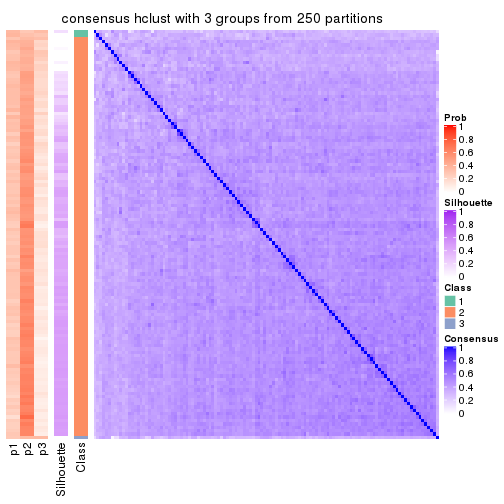
consensus_heatmap(res, k = 4)
consensus_heatmap(res, k = 5)
consensus_heatmap(res, k = 6)
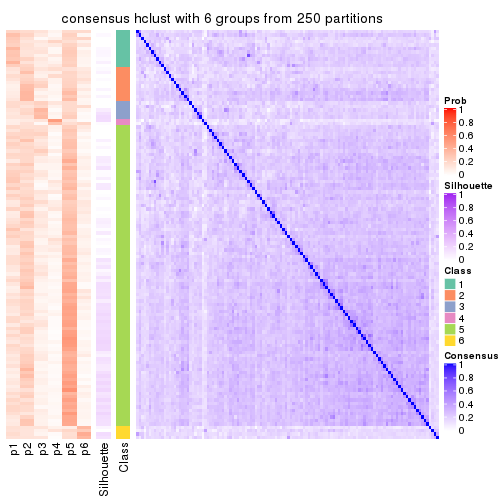
Heatmaps for the membership of samples in all partitions to see how consistent they are:
membership_heatmap(res, k = 2)
membership_heatmap(res, k = 3)
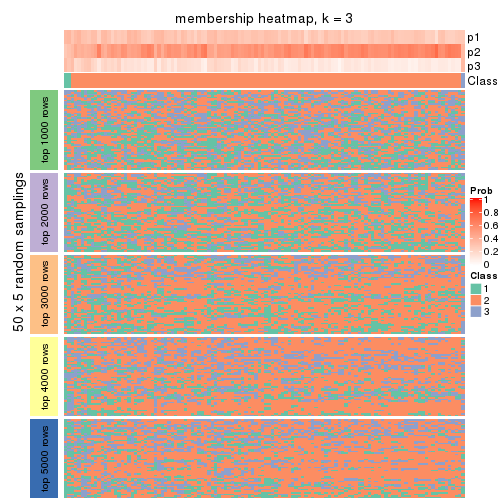
membership_heatmap(res, k = 4)
membership_heatmap(res, k = 5)
membership_heatmap(res, k = 6)
As soon as we have had the classes for columns, we can look for signatures which are significantly different between classes which can be candidate marks for certain classes. Following are the heatmaps for signatures.
Signature heatmaps where rows are scaled:
get_signatures(res, k = 2)

get_signatures(res, k = 3)

get_signatures(res, k = 4)

get_signatures(res, k = 5)

get_signatures(res, k = 6)

Signature heatmaps where rows are not scaled:
get_signatures(res, k = 2, scale_rows = FALSE)

get_signatures(res, k = 3, scale_rows = FALSE)

get_signatures(res, k = 4, scale_rows = FALSE)

get_signatures(res, k = 5, scale_rows = FALSE)

get_signatures(res, k = 6, scale_rows = FALSE)

Compare the overlap of signatures from different k:
compare_signatures(res)

get_signature() returns a data frame invisibly. TO get the list of signatures, the function
call should be assigned to a variable explicitly. In following code, if plot argument is set
to FALSE, no heatmap is plotted while only the differential analysis is performed.
# code only for demonstration
tb = get_signature(res, k = ..., plot = FALSE)
An example of the output of tb is:
#> which_row fdr mean_1 mean_2 scaled_mean_1 scaled_mean_2 km
#> 1 38 0.042760348 8.373488 9.131774 -0.5533452 0.5164555 1
#> 2 40 0.018707592 7.106213 8.469186 -0.6173731 0.5762149 1
#> 3 55 0.019134737 10.221463 11.207825 -0.6159697 0.5749050 1
#> 4 59 0.006059896 5.921854 7.869574 -0.6899429 0.6439467 1
#> 5 60 0.018055526 8.928898 10.211722 -0.6204761 0.5791110 1
#> 6 98 0.009384629 15.714769 14.887706 0.6635654 -0.6193277 2
...
The columns in tb are:
which_row: row indices corresponding to the input matrix.fdr: FDR for the differential test. mean_x: The mean value in group x.scaled_mean_x: The mean value in group x after rows are scaled.km: Row groups if k-means clustering is applied to rows.UMAP plot which shows how samples are separated.
dimension_reduction(res, k = 2, method = "UMAP")
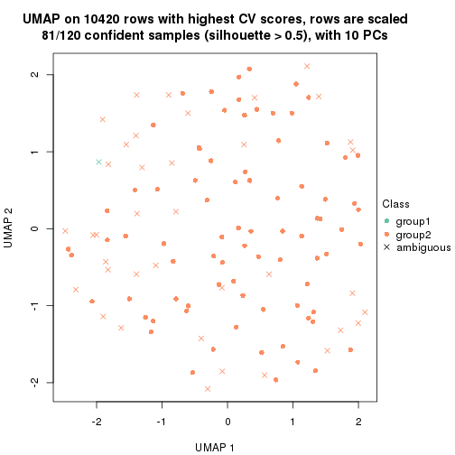
dimension_reduction(res, k = 3, method = "UMAP")
dimension_reduction(res, k = 4, method = "UMAP")
dimension_reduction(res, k = 5, method = "UMAP")
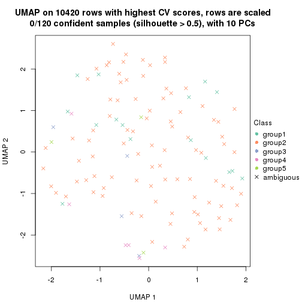
dimension_reduction(res, k = 6, method = "UMAP")
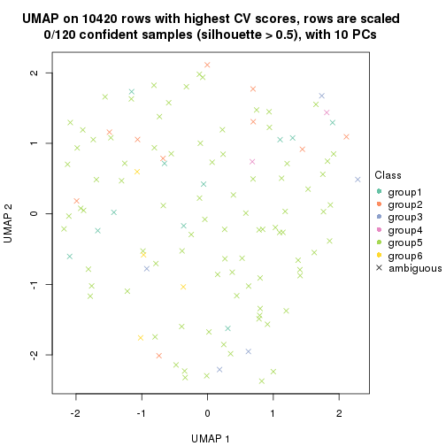
Following heatmap shows how subgroups are split when increasing k:
collect_classes(res)
If matrix rows can be associated to genes, consider to use GO_Enrichment(res,
...) to perform function enrichment for the signature genes.
The object with results only for a single top-value method and a single partition method can be extracted as:
res = res_list["CV", "kmeans"]
# you can also extract it by
# res = res_list["CV:kmeans"]
A summary of res and all the functions that can be applied to it:
res
#> A 'ConsensusPartition' object with k = 2, 3, 4, 5, 6.
#> On a matrix with 10420 rows and 120 columns.
#> Top rows (1000, 2000, 3000, 4000, 5000) are extracted by 'CV' method.
#> Subgroups are detected by 'kmeans' method.
#> Performed in total 1250 partitions by row resampling.
#> Best k for subgroups seems to be 2.
#>
#> Following methods can be applied to this 'ConsensusPartition' object:
#> [1] "cola_report" "collect_classes" "collect_plots"
#> [4] "collect_stats" "colnames" "compare_signatures"
#> [7] "consensus_heatmap" "dimension_reduction" "functional_enrichment"
#> [10] "get_anno_col" "get_anno" "get_classes"
#> [13] "get_consensus" "get_matrix" "get_membership"
#> [16] "get_param" "get_signatures" "get_stats"
#> [19] "is_best_k" "is_stable_k" "membership_heatmap"
#> [22] "ncol" "nrow" "plot_ecdf"
#> [25] "rownames" "select_partition_number" "show"
#> [28] "suggest_best_k" "test_to_known_factors"
collect_plots() function collects all the plots made from res for all k (number of partitions)
into one single page to provide an easy and fast comparison between different k.
collect_plots(res)
The plots are:
k and the heatmap of
predicted classes for each k.k.k.k.All the plots in panels can be made by individual functions and they are plotted later in this section.
select_partition_number() produces several plots showing different
statistics for choosing “optimized” k. There are following statistics:
k;k, the area increased is defined as \(A_k - A_{k-1}\).The detailed explanations of these statistics can be found in the cola vignette.
Generally speaking, lower PAC score, higher mean silhouette score or higher
concordance corresponds to better partition. Rand index and Jaccard index
measure how similar the current partition is compared to partition with k-1.
If they are too similar, we won't accept k is better than k-1.
select_partition_number(res)
The numeric values for all these statistics can be obtained by get_stats().
get_stats(res)
#> k 1-PAC mean_silhouette concordance area_increased Rand Jaccard
#> 2 2 0.000000 0.1786 0.581 0.4933 0.501 0.501
#> 3 3 0.000155 0.1294 0.463 0.3333 0.607 0.361
#> 4 4 0.014283 0.0833 0.367 0.1288 0.714 0.360
#> 5 5 0.084304 0.0628 0.299 0.0698 0.789 0.387
#> 6 6 0.189722 0.0734 0.288 0.0444 0.758 0.228
suggest_best_k() suggests the best \(k\) based on these statistics. The rules are as follows:
NA.suggest_best_k(res)
#> [1] 2
Following shows the table of the partitions (You need to click the show/hide
code output link to see it). The membership matrix (columns with name p*)
is inferred by
clue::cl_consensus()
function with the SE method. Basically the value in the membership matrix
represents the probability to belong to a certain group. The finall class
label for an item is determined with the group with highest probability it
belongs to.
In get_classes() function, the entropy is calculated from the membership
matrix and the silhouette score is calculated from the consensus matrix.
cbind(get_classes(res, k = 2), get_membership(res, k = 2))
#> class entropy silhouette p1 p2
#> SRR572528 2 0.943 0.28330 0.360 0.640
#> SRR572529 2 0.973 0.17527 0.404 0.596
#> SRR572530 2 0.985 -0.02996 0.428 0.572
#> SRR572531 2 0.904 0.24761 0.320 0.680
#> SRR572532 2 0.971 0.17645 0.400 0.600
#> SRR572533 1 0.900 0.23726 0.684 0.316
#> SRR572534 1 0.983 0.15646 0.576 0.424
#> SRR572535 1 0.993 0.04287 0.548 0.452
#> SRR572536 1 0.995 0.00764 0.540 0.460
#> SRR572537 2 0.844 0.31505 0.272 0.728
#> SRR572538 2 0.936 0.29824 0.352 0.648
#> SRR572539 1 1.000 0.14430 0.512 0.488
#> SRR572540 2 0.996 0.01798 0.464 0.536
#> SRR572541 2 0.946 0.20517 0.364 0.636
#> SRR572542 1 0.999 0.12294 0.520 0.480
#> SRR572543 1 0.999 0.14921 0.520 0.480
#> SRR572544 2 0.939 0.28121 0.356 0.644
#> SRR572545 2 0.917 0.31864 0.332 0.668
#> SRR572546 2 0.975 0.23247 0.408 0.592
#> SRR572547 2 0.767 0.30565 0.224 0.776
#> SRR572548 2 0.891 0.28022 0.308 0.692
#> SRR572549 2 0.900 0.29446 0.316 0.684
#> SRR572550 1 1.000 0.12931 0.512 0.488
#> SRR572551 2 0.866 0.22795 0.288 0.712
#> SRR572552 2 0.980 0.14420 0.416 0.584
#> SRR572553 2 0.925 0.24440 0.340 0.660
#> SRR572554 2 0.932 0.17976 0.348 0.652
#> SRR572555 1 0.966 0.20726 0.608 0.392
#> SRR572556 2 1.000 -0.04156 0.492 0.508
#> SRR572557 2 0.929 0.24128 0.344 0.656
#> SRR572558 2 0.936 0.15406 0.352 0.648
#> SRR572559 2 0.966 0.18496 0.392 0.608
#> SRR572560 1 0.993 0.14524 0.548 0.452
#> SRR572561 1 0.943 0.25444 0.640 0.360
#> SRR572562 1 1.000 0.05319 0.504 0.496
#> SRR572563 1 0.995 0.07485 0.540 0.460
#> SRR572564 1 0.939 0.24153 0.644 0.356
#> SRR572565 2 0.969 0.19702 0.396 0.604
#> SRR572566 1 1.000 0.13714 0.508 0.492
#> SRR572567 2 0.821 0.34134 0.256 0.744
#> SRR572568 1 0.891 0.30463 0.692 0.308
#> SRR572569 2 0.985 0.19376 0.428 0.572
#> SRR572570 2 0.998 0.06056 0.476 0.524
#> SRR572571 1 0.983 0.18866 0.576 0.424
#> SRR572572 2 0.994 0.14787 0.456 0.544
#> SRR572573 2 0.900 0.29772 0.316 0.684
#> SRR572574 1 0.985 0.19766 0.572 0.428
#> SRR572575 1 0.980 0.21277 0.584 0.416
#> SRR572576 1 0.958 0.24324 0.620 0.380
#> SRR572577 2 0.973 0.15722 0.404 0.596
#> SRR572578 2 0.980 0.09425 0.416 0.584
#> SRR572579 2 0.936 0.25662 0.352 0.648
#> SRR572580 1 0.987 0.08873 0.568 0.432
#> SRR572581 1 0.991 0.16051 0.556 0.444
#> SRR572582 2 0.821 0.30478 0.256 0.744
#> SRR572583 1 0.925 0.22558 0.660 0.340
#> SRR572584 1 1.000 -0.02123 0.508 0.492
#> SRR572585 1 0.943 0.24430 0.640 0.360
#> SRR572586 1 1.000 0.15326 0.508 0.492
#> SRR572587 2 0.955 0.23979 0.376 0.624
#> SRR572588 2 0.955 0.15188 0.376 0.624
#> SRR572589 1 0.730 0.32809 0.796 0.204
#> SRR572590 2 1.000 -0.07428 0.496 0.504
#> SRR572591 2 0.983 0.06504 0.424 0.576
#> SRR572592 1 0.990 0.19678 0.560 0.440
#> SRR572593 1 0.978 0.15511 0.588 0.412
#> SRR572594 1 0.932 0.25582 0.652 0.348
#> SRR572595 2 0.987 0.17808 0.432 0.568
#> SRR572596 1 0.999 0.06993 0.516 0.484
#> SRR572597 2 0.876 0.32402 0.296 0.704
#> SRR572598 1 0.917 0.25747 0.668 0.332
#> SRR572599 2 1.000 0.05003 0.488 0.512
#> SRR572600 2 0.996 0.06019 0.464 0.536
#> SRR572601 1 0.821 0.28142 0.744 0.256
#> SRR572602 1 1.000 -0.07159 0.500 0.500
#> SRR572603 2 0.988 0.14408 0.436 0.564
#> SRR572604 2 0.998 0.10537 0.476 0.524
#> SRR572605 2 0.855 0.32262 0.280 0.720
#> SRR572606 1 0.866 0.29392 0.712 0.288
#> SRR572607 1 0.996 0.06092 0.536 0.464
#> SRR572608 2 0.966 0.12977 0.392 0.608
#> SRR572609 2 0.904 0.26272 0.320 0.680
#> SRR572610 1 0.961 0.27142 0.616 0.384
#> SRR572611 2 0.963 0.19449 0.388 0.612
#> SRR572612 2 0.980 0.04077 0.416 0.584
#> SRR572613 1 0.998 -0.01699 0.524 0.476
#> SRR572614 1 0.995 0.12679 0.540 0.460
#> SRR572615 1 0.983 0.23638 0.576 0.424
#> SRR572616 1 1.000 0.07774 0.508 0.492
#> SRR572617 2 1.000 -0.05125 0.496 0.504
#> SRR572618 2 0.913 0.28133 0.328 0.672
#> SRR572619 2 0.929 0.25457 0.344 0.656
#> SRR572620 2 0.997 0.02253 0.468 0.532
#> SRR572621 1 0.821 0.33242 0.744 0.256
#> SRR572622 1 0.973 0.05532 0.596 0.404
#> SRR572623 2 0.981 0.16377 0.420 0.580
#> SRR572624 2 0.827 0.34614 0.260 0.740
#> SRR572625 1 0.895 0.31278 0.688 0.312
#> SRR572626 2 0.844 0.28102 0.272 0.728
#> SRR572627 2 1.000 -0.07834 0.492 0.508
#> SRR572628 1 0.876 0.31429 0.704 0.296
#> SRR572629 2 0.994 0.12122 0.456 0.544
#> SRR572630 2 0.990 0.16106 0.440 0.560
#> SRR572631 1 0.767 0.34214 0.776 0.224
#> SRR572632 1 0.988 0.08024 0.564 0.436
#> SRR572633 1 0.994 0.11072 0.544 0.456
#> SRR572634 1 0.983 -0.01940 0.576 0.424
#> SRR572635 1 0.990 0.06619 0.560 0.440
#> SRR572636 2 0.943 0.18389 0.360 0.640
#> SRR572637 2 0.994 0.10305 0.456 0.544
#> SRR572638 2 0.966 0.24112 0.392 0.608
#> SRR572639 2 0.855 0.30740 0.280 0.720
#> SRR572640 2 0.900 0.26930 0.316 0.684
#> SRR572641 2 0.999 0.03553 0.480 0.520
#> SRR572642 1 0.850 0.28308 0.724 0.276
#> SRR572643 2 0.866 0.33374 0.288 0.712
#> SRR572644 1 1.000 0.09728 0.512 0.488
#> SRR572645 2 0.955 0.26209 0.376 0.624
#> SRR572646 1 0.891 0.29681 0.692 0.308
#> SRR572647 1 0.861 0.31936 0.716 0.284
cbind(get_classes(res, k = 3), get_membership(res, k = 3))
#> class entropy silhouette p1 p2 p3
#> SRR572528 2 0.932 0.158254 0.220 0.520 0.260
#> SRR572529 2 0.974 0.193903 0.288 0.448 0.264
#> SRR572530 2 0.974 0.012992 0.288 0.448 0.264
#> SRR572531 2 0.944 0.056870 0.180 0.444 0.376
#> SRR572532 3 0.995 0.037963 0.296 0.324 0.380
#> SRR572533 1 0.956 0.169874 0.480 0.236 0.284
#> SRR572534 1 0.930 0.216187 0.524 0.232 0.244
#> SRR572535 2 0.734 0.225711 0.224 0.688 0.088
#> SRR572536 3 0.809 0.215124 0.288 0.100 0.612
#> SRR572537 3 0.942 0.111335 0.204 0.304 0.492
#> SRR572538 3 0.905 0.184039 0.196 0.252 0.552
#> SRR572539 1 0.998 0.155047 0.360 0.336 0.304
#> SRR572540 3 0.983 -0.014702 0.244 0.376 0.380
#> SRR572541 3 0.924 0.109239 0.208 0.264 0.528
#> SRR572542 2 0.965 -0.023483 0.364 0.424 0.212
#> SRR572543 1 0.998 0.083445 0.356 0.340 0.304
#> SRR572544 2 0.924 0.001937 0.160 0.472 0.368
#> SRR572545 3 0.865 0.136521 0.124 0.320 0.556
#> SRR572546 3 0.938 0.150466 0.228 0.260 0.512
#> SRR572547 2 0.900 0.095550 0.132 0.472 0.396
#> SRR572548 3 0.822 0.269118 0.212 0.152 0.636
#> SRR572549 3 0.919 0.102010 0.172 0.316 0.512
#> SRR572550 1 0.998 0.125287 0.364 0.316 0.320
#> SRR572551 2 0.906 0.161064 0.152 0.512 0.336
#> SRR572552 2 0.950 0.145278 0.204 0.472 0.324
#> SRR572553 3 0.971 -0.033847 0.220 0.368 0.412
#> SRR572554 2 0.960 0.058760 0.204 0.432 0.364
#> SRR572555 1 0.956 0.105015 0.428 0.376 0.196
#> SRR572556 2 0.998 0.041519 0.308 0.356 0.336
#> SRR572557 2 0.768 0.243111 0.132 0.680 0.188
#> SRR572558 3 0.972 0.016341 0.252 0.300 0.448
#> SRR572559 3 0.976 0.075619 0.288 0.268 0.444
#> SRR572560 3 0.927 0.041877 0.316 0.180 0.504
#> SRR572561 1 0.949 0.216122 0.496 0.252 0.252
#> SRR572562 3 0.991 -0.130822 0.300 0.300 0.400
#> SRR572563 3 0.968 0.030236 0.328 0.228 0.444
#> SRR572564 1 0.968 0.199840 0.460 0.260 0.280
#> SRR572565 3 0.754 0.287132 0.172 0.136 0.692
#> SRR572566 3 0.989 -0.000537 0.288 0.304 0.408
#> SRR572567 3 0.777 0.243142 0.108 0.232 0.660
#> SRR572568 1 0.970 0.203048 0.436 0.228 0.336
#> SRR572569 3 0.972 0.080610 0.232 0.336 0.432
#> SRR572570 3 0.977 0.075324 0.368 0.232 0.400
#> SRR572571 1 0.982 0.205243 0.420 0.256 0.324
#> SRR572572 2 0.970 0.070537 0.220 0.420 0.360
#> SRR572573 3 0.715 0.280565 0.108 0.176 0.716
#> SRR572574 1 0.980 0.172546 0.432 0.268 0.300
#> SRR572575 2 0.888 0.068633 0.268 0.564 0.168
#> SRR572576 1 0.883 0.267649 0.576 0.244 0.180
#> SRR572577 2 0.989 0.104204 0.272 0.396 0.332
#> SRR572578 2 0.974 0.171213 0.264 0.448 0.288
#> SRR572579 3 0.960 0.108955 0.252 0.272 0.476
#> SRR572580 2 0.985 0.114449 0.260 0.408 0.332
#> SRR572581 2 0.943 0.033901 0.396 0.428 0.176
#> SRR572582 3 0.870 -0.010550 0.108 0.400 0.492
#> SRR572583 1 0.907 0.218582 0.536 0.292 0.172
#> SRR572584 3 0.923 0.092099 0.348 0.164 0.488
#> SRR572585 1 0.957 0.195143 0.472 0.224 0.304
#> SRR572586 1 0.991 0.139948 0.388 0.340 0.272
#> SRR572587 3 0.911 0.230234 0.208 0.244 0.548
#> SRR572588 3 0.803 0.266510 0.172 0.172 0.656
#> SRR572589 1 0.897 0.161946 0.500 0.364 0.136
#> SRR572590 2 0.910 0.235898 0.248 0.548 0.204
#> SRR572591 2 0.980 0.030293 0.296 0.432 0.272
#> SRR572592 1 0.944 0.186025 0.488 0.308 0.204
#> SRR572593 2 0.854 0.161341 0.248 0.600 0.152
#> SRR572594 1 0.884 0.163100 0.508 0.368 0.124
#> SRR572595 3 0.999 -0.011156 0.316 0.336 0.348
#> SRR572596 2 0.982 0.092438 0.276 0.428 0.296
#> SRR572597 3 0.897 0.248589 0.240 0.196 0.564
#> SRR572598 1 0.964 0.097401 0.416 0.376 0.208
#> SRR572599 1 0.963 0.051345 0.464 0.236 0.300
#> SRR572600 3 0.925 0.077580 0.332 0.172 0.496
#> SRR572601 1 0.862 0.272149 0.584 0.144 0.272
#> SRR572602 3 0.912 0.135641 0.328 0.160 0.512
#> SRR572603 3 0.899 0.244835 0.248 0.192 0.560
#> SRR572604 3 0.995 0.062923 0.296 0.324 0.380
#> SRR572605 3 0.972 0.070791 0.240 0.320 0.440
#> SRR572606 2 0.896 -0.062205 0.400 0.472 0.128
#> SRR572607 3 0.982 -0.085247 0.344 0.248 0.408
#> SRR572608 2 0.929 0.230929 0.200 0.516 0.284
#> SRR572609 2 0.855 0.231544 0.136 0.588 0.276
#> SRR572610 2 0.967 -0.103562 0.392 0.396 0.212
#> SRR572611 2 0.965 0.148995 0.260 0.468 0.272
#> SRR572612 2 0.968 0.173486 0.256 0.460 0.284
#> SRR572613 1 0.989 0.045063 0.408 0.304 0.288
#> SRR572614 2 0.937 0.096771 0.308 0.496 0.196
#> SRR572615 1 0.986 0.149057 0.392 0.352 0.256
#> SRR572616 2 0.973 0.022335 0.292 0.448 0.260
#> SRR572617 1 0.996 0.024676 0.356 0.288 0.356
#> SRR572618 2 0.934 0.104104 0.192 0.500 0.308
#> SRR572619 3 0.941 0.208386 0.248 0.244 0.508
#> SRR572620 3 0.936 0.061153 0.400 0.168 0.432
#> SRR572621 1 0.900 0.280277 0.560 0.240 0.200
#> SRR572622 1 0.968 0.054483 0.456 0.244 0.300
#> SRR572623 2 0.956 0.179290 0.264 0.484 0.252
#> SRR572624 3 0.877 0.092741 0.120 0.364 0.516
#> SRR572625 1 0.973 0.191778 0.428 0.340 0.232
#> SRR572626 2 0.748 0.238272 0.076 0.660 0.264
#> SRR572627 2 0.982 0.014724 0.276 0.428 0.296
#> SRR572628 1 0.888 0.289030 0.576 0.216 0.208
#> SRR572629 3 0.969 0.037773 0.384 0.216 0.400
#> SRR572630 3 0.936 0.182496 0.216 0.272 0.512
#> SRR572631 1 0.766 0.303385 0.676 0.208 0.116
#> SRR572632 3 0.919 0.085288 0.364 0.156 0.480
#> SRR572633 2 0.823 0.226876 0.224 0.632 0.144
#> SRR572634 3 0.972 0.061319 0.388 0.220 0.392
#> SRR572635 3 0.955 0.015918 0.400 0.192 0.408
#> SRR572636 3 0.913 0.125070 0.304 0.172 0.524
#> SRR572637 2 0.899 0.224661 0.216 0.564 0.220
#> SRR572638 2 0.982 0.084356 0.272 0.428 0.300
#> SRR572639 3 0.853 0.257219 0.156 0.240 0.604
#> SRR572640 3 0.950 0.096133 0.212 0.308 0.480
#> SRR572641 2 0.873 0.223930 0.208 0.592 0.200
#> SRR572642 1 0.902 0.245594 0.560 0.216 0.224
#> SRR572643 3 0.880 0.190074 0.136 0.320 0.544
#> SRR572644 2 0.984 0.088191 0.360 0.392 0.248
#> SRR572645 3 0.942 0.228526 0.228 0.268 0.504
#> SRR572646 1 0.934 0.137649 0.424 0.412 0.164
#> SRR572647 1 0.900 0.287502 0.560 0.244 0.196
cbind(get_classes(res, k = 4), get_membership(res, k = 4))
#> class entropy silhouette p1 p2 p3 p4
#> SRR572528 3 0.953 0.11844 0.216 0.244 0.396 0.144
#> SRR572529 3 0.958 0.11974 0.180 0.188 0.400 0.232
#> SRR572530 3 0.965 0.05491 0.188 0.184 0.384 0.244
#> SRR572531 3 0.892 0.20664 0.212 0.160 0.496 0.132
#> SRR572532 4 0.899 -0.02601 0.244 0.064 0.292 0.400
#> SRR572533 4 0.864 0.08552 0.188 0.272 0.064 0.476
#> SRR572534 4 0.973 0.05292 0.160 0.240 0.248 0.352
#> SRR572535 2 0.766 -0.07061 0.080 0.448 0.428 0.044
#> SRR572536 1 0.867 0.19047 0.496 0.136 0.100 0.268
#> SRR572537 1 0.917 0.00642 0.364 0.076 0.320 0.240
#> SRR572538 1 0.931 0.15678 0.444 0.180 0.224 0.152
#> SRR572539 3 0.965 0.00519 0.128 0.288 0.320 0.264
#> SRR572540 1 0.979 -0.01350 0.312 0.220 0.300 0.168
#> SRR572541 3 0.984 0.06771 0.224 0.208 0.344 0.224
#> SRR572542 3 0.970 0.02575 0.156 0.224 0.352 0.268
#> SRR572543 3 0.977 -0.03219 0.152 0.284 0.312 0.252
#> SRR572544 3 0.929 0.11439 0.268 0.160 0.428 0.144
#> SRR572545 3 0.922 0.04290 0.316 0.220 0.376 0.088
#> SRR572546 1 0.975 0.06512 0.368 0.216 0.208 0.208
#> SRR572547 3 0.756 0.25771 0.112 0.112 0.640 0.136
#> SRR572548 1 0.946 0.12962 0.348 0.116 0.212 0.324
#> SRR572549 1 0.903 0.11312 0.436 0.100 0.296 0.168
#> SRR572550 3 0.995 -0.00562 0.224 0.220 0.292 0.264
#> SRR572551 3 0.826 0.19574 0.168 0.088 0.564 0.180
#> SRR572552 3 0.916 0.13631 0.240 0.208 0.444 0.108
#> SRR572553 3 0.962 0.12939 0.212 0.208 0.396 0.184
#> SRR572554 3 0.916 0.15037 0.136 0.244 0.456 0.164
#> SRR572555 4 0.955 0.08006 0.112 0.268 0.296 0.324
#> SRR572556 1 0.980 -0.00357 0.304 0.284 0.256 0.156
#> SRR572557 3 0.836 0.17646 0.124 0.268 0.524 0.084
#> SRR572558 3 0.891 0.02977 0.204 0.064 0.372 0.360
#> SRR572559 4 0.990 -0.05805 0.224 0.228 0.224 0.324
#> SRR572560 1 0.920 0.10417 0.448 0.252 0.136 0.164
#> SRR572561 4 0.975 0.06433 0.180 0.268 0.200 0.352
#> SRR572562 2 0.972 0.01262 0.164 0.348 0.276 0.212
#> SRR572563 1 0.950 0.03767 0.392 0.264 0.136 0.208
#> SRR572564 2 0.947 -0.05043 0.180 0.380 0.140 0.300
#> SRR572565 1 0.906 0.20104 0.476 0.136 0.224 0.164
#> SRR572566 3 0.999 -0.03601 0.244 0.232 0.264 0.260
#> SRR572567 1 0.827 0.21689 0.556 0.104 0.224 0.116
#> SRR572568 2 0.920 0.05140 0.320 0.380 0.088 0.212
#> SRR572569 3 0.979 0.04185 0.284 0.192 0.332 0.192
#> SRR572570 1 0.927 0.08733 0.364 0.116 0.168 0.352
#> SRR572571 4 0.996 0.03672 0.236 0.248 0.224 0.292
#> SRR572572 2 0.977 -0.05765 0.252 0.312 0.284 0.152
#> SRR572573 1 0.879 0.23241 0.520 0.160 0.172 0.148
#> SRR572574 1 0.943 0.00166 0.356 0.312 0.108 0.224
#> SRR572575 3 0.919 0.03507 0.120 0.316 0.408 0.156
#> SRR572576 4 0.750 0.16978 0.064 0.264 0.080 0.592
#> SRR572577 3 0.960 0.07550 0.168 0.312 0.352 0.168
#> SRR572578 3 0.927 0.11054 0.172 0.156 0.452 0.220
#> SRR572579 1 0.976 0.06762 0.344 0.164 0.240 0.252
#> SRR572580 2 0.951 0.05686 0.284 0.336 0.272 0.108
#> SRR572581 2 0.902 0.09321 0.088 0.448 0.244 0.220
#> SRR572582 3 0.884 0.19089 0.172 0.124 0.508 0.196
#> SRR572583 2 0.940 0.01985 0.224 0.352 0.104 0.320
#> SRR572584 1 0.833 0.17277 0.556 0.204 0.096 0.144
#> SRR572585 4 0.955 0.02652 0.304 0.268 0.112 0.316
#> SRR572586 4 0.971 0.07303 0.160 0.232 0.248 0.360
#> SRR572587 1 0.662 0.24638 0.696 0.100 0.156 0.048
#> SRR572588 1 0.972 0.14492 0.340 0.204 0.164 0.292
#> SRR572589 2 0.802 0.14830 0.124 0.600 0.128 0.148
#> SRR572590 3 0.883 0.13063 0.108 0.260 0.484 0.148
#> SRR572591 3 0.978 0.04825 0.156 0.284 0.316 0.244
#> SRR572592 4 0.827 0.13423 0.036 0.224 0.244 0.496
#> SRR572593 3 0.900 0.05469 0.168 0.352 0.392 0.088
#> SRR572594 4 0.903 0.08593 0.080 0.316 0.196 0.408
#> SRR572595 2 0.982 -0.04340 0.264 0.300 0.276 0.160
#> SRR572596 2 0.934 0.10061 0.200 0.424 0.248 0.128
#> SRR572597 1 0.943 0.17676 0.412 0.152 0.176 0.260
#> SRR572598 4 0.939 0.05840 0.112 0.232 0.260 0.396
#> SRR572599 4 0.916 0.12381 0.212 0.164 0.156 0.468
#> SRR572600 1 0.863 0.18733 0.536 0.156 0.128 0.180
#> SRR572601 2 0.865 0.00591 0.216 0.412 0.044 0.328
#> SRR572602 1 0.922 0.15815 0.452 0.172 0.140 0.236
#> SRR572603 1 0.885 0.23796 0.500 0.136 0.136 0.228
#> SRR572604 1 0.874 0.11911 0.504 0.176 0.224 0.096
#> SRR572605 3 0.965 0.11383 0.228 0.156 0.376 0.240
#> SRR572606 2 0.913 0.13771 0.164 0.456 0.252 0.128
#> SRR572607 1 0.930 0.11012 0.432 0.228 0.124 0.216
#> SRR572608 3 0.854 0.15204 0.128 0.256 0.516 0.100
#> SRR572609 3 0.885 0.19350 0.172 0.192 0.508 0.128
#> SRR572610 2 0.955 -0.01069 0.120 0.332 0.232 0.316
#> SRR572611 3 0.936 0.05571 0.168 0.340 0.364 0.128
#> SRR572612 3 0.832 0.13959 0.080 0.120 0.520 0.280
#> SRR572613 2 0.984 -0.00219 0.172 0.316 0.252 0.260
#> SRR572614 3 0.925 0.03752 0.120 0.320 0.396 0.164
#> SRR572615 2 0.952 0.00941 0.132 0.384 0.260 0.224
#> SRR572616 3 0.964 0.00229 0.228 0.316 0.320 0.136
#> SRR572617 1 0.954 -0.03102 0.340 0.316 0.220 0.124
#> SRR572618 3 0.902 0.16933 0.236 0.176 0.472 0.116
#> SRR572619 3 0.941 0.01241 0.296 0.096 0.344 0.264
#> SRR572620 4 0.830 0.12817 0.152 0.092 0.196 0.560
#> SRR572621 4 0.925 0.03221 0.152 0.332 0.128 0.388
#> SRR572622 2 0.885 0.06296 0.344 0.416 0.080 0.160
#> SRR572623 3 0.949 0.08998 0.204 0.208 0.420 0.168
#> SRR572624 3 0.918 0.06434 0.312 0.172 0.408 0.108
#> SRR572625 2 0.945 0.05989 0.176 0.428 0.196 0.200
#> SRR572626 3 0.621 0.27292 0.108 0.092 0.736 0.064
#> SRR572627 2 0.967 -0.01444 0.156 0.364 0.264 0.216
#> SRR572628 4 0.883 0.13499 0.104 0.288 0.140 0.468
#> SRR572629 1 0.915 0.09552 0.400 0.196 0.092 0.312
#> SRR572630 1 0.934 0.10646 0.416 0.180 0.272 0.132
#> SRR572631 4 0.838 0.04665 0.068 0.372 0.116 0.444
#> SRR572632 1 0.822 0.10479 0.516 0.296 0.068 0.120
#> SRR572633 3 0.911 0.05276 0.108 0.304 0.424 0.164
#> SRR572634 2 0.885 -0.04678 0.380 0.384 0.080 0.156
#> SRR572635 4 0.936 -0.04049 0.320 0.144 0.152 0.384
#> SRR572636 4 0.927 -0.01962 0.292 0.088 0.244 0.376
#> SRR572637 3 0.908 0.09638 0.208 0.292 0.416 0.084
#> SRR572638 3 0.971 0.11822 0.200 0.196 0.376 0.228
#> SRR572639 1 0.729 0.21072 0.636 0.100 0.204 0.060
#> SRR572640 3 0.969 0.09396 0.228 0.232 0.372 0.168
#> SRR572641 3 0.925 0.13381 0.124 0.236 0.440 0.200
#> SRR572642 2 0.928 0.03467 0.228 0.392 0.096 0.284
#> SRR572643 1 0.882 0.09318 0.484 0.144 0.264 0.108
#> SRR572644 3 0.910 -0.04786 0.076 0.216 0.372 0.336
#> SRR572645 1 0.911 0.19810 0.472 0.212 0.180 0.136
#> SRR572646 2 0.890 0.10969 0.124 0.496 0.164 0.216
#> SRR572647 4 0.885 0.08303 0.124 0.360 0.104 0.412
cbind(get_classes(res, k = 5), get_membership(res, k = 5))
#> class entropy silhouette p1 p2 p3 p4 p5
#> SRR572528 1 0.971 0.045046 0.292 0.244 0.140 0.132 0.192
#> SRR572529 2 0.968 0.028274 0.224 0.276 0.092 0.212 0.196
#> SRR572530 2 0.968 0.048343 0.240 0.308 0.164 0.128 0.160
#> SRR572531 1 0.952 0.063672 0.348 0.224 0.156 0.116 0.156
#> SRR572532 1 0.937 0.031792 0.328 0.072 0.144 0.240 0.216
#> SRR572533 4 0.796 0.146870 0.028 0.108 0.184 0.524 0.156
#> SRR572534 4 0.987 0.088175 0.196 0.216 0.176 0.268 0.144
#> SRR572535 2 0.744 0.133334 0.192 0.584 0.040 0.100 0.084
#> SRR572536 3 0.900 -0.007162 0.056 0.104 0.360 0.220 0.260
#> SRR572537 1 0.893 -0.013869 0.340 0.068 0.236 0.072 0.284
#> SRR572538 5 0.925 0.088143 0.184 0.148 0.244 0.068 0.356
#> SRR572539 1 0.960 -0.044248 0.312 0.264 0.140 0.144 0.140
#> SRR572540 3 0.978 -0.046449 0.164 0.232 0.292 0.152 0.160
#> SRR572541 1 0.850 0.130678 0.472 0.060 0.128 0.112 0.228
#> SRR572542 4 0.983 -0.071578 0.220 0.232 0.160 0.256 0.132
#> SRR572543 1 0.969 -0.012313 0.264 0.264 0.124 0.132 0.216
#> SRR572544 1 0.979 0.038773 0.264 0.232 0.148 0.132 0.224
#> SRR572545 1 0.885 0.038788 0.368 0.116 0.204 0.040 0.272
#> SRR572546 3 0.996 -0.036001 0.184 0.200 0.244 0.196 0.176
#> SRR572547 1 0.535 0.213800 0.748 0.076 0.008 0.060 0.108
#> SRR572548 5 0.864 0.123264 0.212 0.068 0.108 0.148 0.464
#> SRR572549 5 0.926 0.071273 0.200 0.096 0.292 0.092 0.320
#> SRR572550 1 0.964 -0.014905 0.316 0.196 0.204 0.180 0.104
#> SRR572551 1 0.830 0.138230 0.504 0.172 0.088 0.060 0.176
#> SRR572552 1 0.947 -0.045062 0.276 0.276 0.104 0.104 0.240
#> SRR572553 1 0.925 0.126478 0.400 0.176 0.132 0.104 0.188
#> SRR572554 1 0.844 0.104459 0.424 0.228 0.084 0.032 0.232
#> SRR572555 4 0.895 0.068143 0.288 0.144 0.064 0.380 0.124
#> SRR572556 5 0.985 -0.012676 0.200 0.188 0.196 0.140 0.276
#> SRR572557 1 0.877 0.056748 0.436 0.248 0.100 0.080 0.136
#> SRR572558 1 0.905 0.088378 0.368 0.052 0.136 0.192 0.252
#> SRR572559 5 0.899 0.099574 0.196 0.108 0.064 0.244 0.388
#> SRR572560 3 0.869 0.126314 0.144 0.080 0.480 0.140 0.156
#> SRR572561 2 0.956 -0.036048 0.108 0.308 0.140 0.264 0.180
#> SRR572562 1 0.959 0.013090 0.324 0.172 0.104 0.176 0.224
#> SRR572563 3 0.916 0.114282 0.128 0.068 0.372 0.232 0.200
#> SRR572564 4 0.939 0.131803 0.128 0.140 0.220 0.376 0.136
#> SRR572565 3 0.891 0.046674 0.256 0.068 0.388 0.088 0.200
#> SRR572566 1 0.980 0.043576 0.300 0.172 0.200 0.152 0.176
#> SRR572567 5 0.831 0.061935 0.188 0.084 0.296 0.024 0.408
#> SRR572568 3 0.963 0.093490 0.124 0.212 0.332 0.172 0.160
#> SRR572569 1 0.963 0.058018 0.340 0.140 0.148 0.176 0.196
#> SRR572570 5 0.915 0.089126 0.088 0.108 0.240 0.180 0.384
#> SRR572571 4 0.986 -0.000547 0.160 0.212 0.216 0.264 0.148
#> SRR572572 2 0.948 -0.011482 0.140 0.284 0.084 0.212 0.280
#> SRR572573 3 0.892 -0.008641 0.208 0.088 0.356 0.060 0.288
#> SRR572574 3 0.925 0.070142 0.064 0.232 0.348 0.140 0.216
#> SRR572575 2 0.834 0.167162 0.168 0.500 0.076 0.184 0.072
#> SRR572576 4 0.658 0.253441 0.068 0.084 0.036 0.668 0.144
#> SRR572577 1 0.947 0.060868 0.360 0.200 0.168 0.168 0.104
#> SRR572578 1 0.972 0.020722 0.308 0.204 0.120 0.188 0.180
#> SRR572579 5 0.976 0.048304 0.156 0.192 0.200 0.144 0.308
#> SRR572580 2 0.952 0.015371 0.184 0.336 0.236 0.128 0.116
#> SRR572581 2 0.909 0.065301 0.260 0.380 0.072 0.160 0.128
#> SRR572582 1 0.915 0.127884 0.396 0.112 0.116 0.132 0.244
#> SRR572583 4 0.952 0.090487 0.104 0.236 0.184 0.332 0.144
#> SRR572584 3 0.804 0.130876 0.092 0.088 0.556 0.136 0.128
#> SRR572585 4 0.917 0.020855 0.104 0.120 0.320 0.336 0.120
#> SRR572586 2 0.994 -0.000547 0.184 0.252 0.196 0.204 0.164
#> SRR572587 3 0.794 0.055572 0.140 0.096 0.488 0.020 0.256
#> SRR572588 5 0.852 0.105995 0.172 0.084 0.224 0.060 0.460
#> SRR572589 2 0.866 -0.000548 0.056 0.416 0.124 0.288 0.116
#> SRR572590 2 0.838 0.091230 0.324 0.424 0.064 0.096 0.092
#> SRR572591 2 0.966 0.062814 0.236 0.316 0.144 0.172 0.132
#> SRR572592 4 0.884 0.072624 0.284 0.156 0.040 0.376 0.144
#> SRR572593 2 0.804 0.174829 0.152 0.552 0.128 0.088 0.080
#> SRR572594 4 0.795 0.158787 0.204 0.196 0.040 0.504 0.056
#> SRR572595 3 0.965 0.046813 0.152 0.248 0.308 0.168 0.124
#> SRR572596 3 0.970 -0.062752 0.196 0.268 0.272 0.132 0.132
#> SRR572597 5 0.808 0.179039 0.108 0.124 0.148 0.072 0.548
#> SRR572598 4 0.896 0.104290 0.188 0.064 0.144 0.424 0.180
#> SRR572599 4 0.902 0.079778 0.116 0.112 0.108 0.404 0.260
#> SRR572600 3 0.827 0.122200 0.160 0.108 0.528 0.080 0.124
#> SRR572601 4 0.965 0.075768 0.084 0.204 0.240 0.264 0.208
#> SRR572602 5 0.875 -0.022721 0.116 0.056 0.332 0.128 0.368
#> SRR572603 3 0.892 -0.045932 0.088 0.088 0.364 0.140 0.320
#> SRR572604 3 0.919 0.104041 0.212 0.204 0.372 0.064 0.148
#> SRR572605 1 0.896 0.085859 0.408 0.076 0.148 0.116 0.252
#> SRR572606 2 0.857 0.076736 0.084 0.456 0.116 0.256 0.088
#> SRR572607 3 0.910 0.060611 0.056 0.236 0.364 0.128 0.216
#> SRR572608 1 0.779 0.078891 0.508 0.264 0.072 0.032 0.124
#> SRR572609 2 0.913 0.038199 0.276 0.344 0.116 0.064 0.200
#> SRR572610 4 0.931 -0.035720 0.116 0.308 0.096 0.316 0.164
#> SRR572611 1 0.897 0.009519 0.388 0.288 0.128 0.104 0.092
#> SRR572612 1 0.895 0.076128 0.432 0.184 0.068 0.160 0.156
#> SRR572613 4 0.994 0.044765 0.204 0.196 0.152 0.236 0.212
#> SRR572614 2 0.911 0.049812 0.300 0.312 0.124 0.212 0.052
#> SRR572615 2 0.985 0.063689 0.228 0.264 0.184 0.136 0.188
#> SRR572616 2 0.925 0.092703 0.192 0.356 0.244 0.136 0.072
#> SRR572617 3 0.983 -0.012791 0.180 0.232 0.276 0.160 0.152
#> SRR572618 1 0.976 0.036205 0.248 0.220 0.204 0.100 0.228
#> SRR572619 1 0.899 0.022791 0.356 0.040 0.224 0.136 0.244
#> SRR572620 5 0.850 0.047524 0.140 0.044 0.100 0.296 0.420
#> SRR572621 4 0.926 0.079955 0.048 0.264 0.192 0.308 0.188
#> SRR572622 3 0.939 0.019370 0.092 0.160 0.344 0.256 0.148
#> SRR572623 1 0.943 0.007915 0.308 0.264 0.112 0.096 0.220
#> SRR572624 5 0.926 0.024714 0.220 0.188 0.152 0.072 0.368
#> SRR572625 2 0.965 0.017852 0.176 0.304 0.212 0.208 0.100
#> SRR572626 1 0.743 0.081211 0.556 0.240 0.076 0.028 0.100
#> SRR572627 2 0.947 0.067859 0.208 0.360 0.120 0.128 0.184
#> SRR572628 4 0.792 0.222272 0.120 0.108 0.152 0.560 0.060
#> SRR572629 5 0.770 0.142971 0.048 0.096 0.116 0.168 0.572
#> SRR572630 3 0.918 0.074218 0.176 0.172 0.412 0.096 0.144
#> SRR572631 4 0.786 0.124783 0.044 0.336 0.080 0.460 0.080
#> SRR572632 3 0.796 0.164303 0.072 0.088 0.552 0.180 0.108
#> SRR572633 2 0.892 0.087424 0.272 0.408 0.096 0.116 0.108
#> SRR572634 3 0.938 0.078038 0.088 0.132 0.348 0.204 0.228
#> SRR572635 5 0.941 0.031377 0.104 0.096 0.232 0.272 0.296
#> SRR572636 1 0.923 -0.042005 0.308 0.072 0.208 0.112 0.300
#> SRR572637 1 0.876 -0.030237 0.360 0.348 0.124 0.092 0.076
#> SRR572638 1 0.951 0.050765 0.316 0.248 0.088 0.160 0.188
#> SRR572639 3 0.790 0.133325 0.212 0.080 0.520 0.032 0.156
#> SRR572640 1 0.897 0.093328 0.424 0.088 0.216 0.104 0.168
#> SRR572641 2 0.949 0.061619 0.280 0.316 0.120 0.160 0.124
#> SRR572642 4 0.908 0.117191 0.068 0.192 0.268 0.364 0.108
#> SRR572643 3 0.919 0.049833 0.228 0.136 0.320 0.052 0.264
#> SRR572644 1 0.944 0.031660 0.380 0.160 0.128 0.176 0.156
#> SRR572645 5 0.872 0.051295 0.104 0.128 0.268 0.072 0.428
#> SRR572646 2 0.898 0.088638 0.096 0.412 0.084 0.188 0.220
#> SRR572647 4 0.779 0.206783 0.100 0.112 0.132 0.580 0.076
cbind(get_classes(res, k = 6), get_membership(res, k = 6))
#> class entropy silhouette p1 p2 p3 p4 p5 p6
#> SRR572528 2 0.885 0.146688 0.076 0.428 0.092 0.124 0.160 0.120
#> SRR572529 6 0.931 -0.047517 0.072 0.136 0.080 0.268 0.164 0.280
#> SRR572530 2 0.971 0.048259 0.204 0.256 0.092 0.144 0.176 0.128
#> SRR572531 4 0.827 0.001593 0.044 0.304 0.048 0.376 0.168 0.060
#> SRR572532 4 0.951 0.042297 0.100 0.116 0.140 0.324 0.180 0.140
#> SRR572533 6 0.693 0.185489 0.104 0.040 0.076 0.036 0.128 0.616
#> SRR572534 3 0.948 -0.032377 0.112 0.092 0.280 0.244 0.100 0.172
#> SRR572535 2 0.746 0.247147 0.040 0.576 0.124 0.104 0.068 0.088
#> SRR572536 1 0.905 0.119728 0.352 0.044 0.168 0.084 0.200 0.152
#> SRR572537 4 0.917 0.006929 0.204 0.080 0.132 0.328 0.200 0.056
#> SRR572538 5 0.842 0.100566 0.224 0.088 0.032 0.200 0.400 0.056
#> SRR572539 4 0.943 0.009621 0.104 0.148 0.200 0.316 0.156 0.076
#> SRR572540 2 0.965 0.051748 0.156 0.276 0.132 0.188 0.168 0.080
#> SRR572541 5 0.822 0.022333 0.044 0.100 0.048 0.336 0.376 0.096
#> SRR572542 2 0.942 0.088118 0.116 0.324 0.112 0.168 0.084 0.196
#> SRR572543 5 0.958 0.026530 0.068 0.212 0.156 0.152 0.272 0.140
#> SRR572544 2 0.822 0.136421 0.096 0.464 0.028 0.108 0.208 0.096
#> SRR572545 5 0.813 0.065031 0.064 0.324 0.076 0.128 0.384 0.024
#> SRR572546 5 0.944 0.090674 0.072 0.192 0.128 0.196 0.304 0.108
#> SRR572547 4 0.686 0.087943 0.024 0.264 0.044 0.544 0.100 0.024
#> SRR572548 4 0.865 -0.048508 0.152 0.044 0.052 0.340 0.300 0.112
#> SRR572549 5 0.911 0.116422 0.108 0.168 0.076 0.160 0.384 0.104
#> SRR572550 4 0.942 -0.002528 0.088 0.140 0.216 0.304 0.172 0.080
#> SRR572551 2 0.871 0.066978 0.096 0.372 0.060 0.264 0.152 0.056
#> SRR572552 2 0.940 0.060070 0.180 0.296 0.060 0.220 0.120 0.124
#> SRR572553 4 0.726 0.143029 0.076 0.092 0.048 0.600 0.116 0.068
#> SRR572554 2 0.855 0.088378 0.096 0.412 0.060 0.176 0.212 0.044
#> SRR572555 4 0.819 -0.006868 0.028 0.100 0.088 0.408 0.076 0.300
#> SRR572556 5 0.936 0.091447 0.168 0.112 0.076 0.156 0.344 0.144
#> SRR572557 2 0.700 0.233560 0.080 0.616 0.044 0.136 0.064 0.060
#> SRR572558 4 0.847 0.103562 0.060 0.092 0.100 0.472 0.152 0.124
#> SRR572559 5 0.923 0.059319 0.172 0.148 0.052 0.084 0.288 0.256
#> SRR572560 5 0.824 0.065045 0.144 0.044 0.180 0.076 0.476 0.080
#> SRR572561 6 0.969 0.045131 0.100 0.104 0.164 0.184 0.184 0.264
#> SRR572562 4 0.951 -0.007337 0.076 0.164 0.220 0.240 0.220 0.080
#> SRR572563 5 0.971 -0.034873 0.192 0.108 0.188 0.088 0.236 0.188
#> SRR572564 6 0.923 0.087214 0.108 0.084 0.148 0.216 0.096 0.348
#> SRR572565 5 0.727 0.170801 0.060 0.032 0.092 0.180 0.572 0.064
#> SRR572566 5 0.934 0.096062 0.088 0.204 0.120 0.188 0.320 0.080
#> SRR572567 5 0.797 0.125373 0.164 0.072 0.056 0.208 0.472 0.028
#> SRR572568 1 0.964 0.007863 0.228 0.088 0.140 0.104 0.224 0.216
#> SRR572569 5 0.931 0.058816 0.108 0.244 0.072 0.216 0.276 0.084
#> SRR572570 1 0.892 0.116963 0.388 0.088 0.068 0.088 0.204 0.164
#> SRR572571 5 0.957 0.043833 0.076 0.152 0.116 0.188 0.284 0.184
#> SRR572572 4 0.969 -0.020267 0.116 0.124 0.100 0.232 0.200 0.228
#> SRR572573 5 0.709 0.196853 0.104 0.092 0.080 0.080 0.612 0.032
#> SRR572574 1 0.916 0.047355 0.304 0.120 0.292 0.084 0.084 0.116
#> SRR572575 2 0.858 0.190531 0.072 0.456 0.092 0.116 0.088 0.176
#> SRR572576 6 0.724 0.208711 0.024 0.056 0.088 0.152 0.100 0.580
#> SRR572577 4 0.938 0.000539 0.060 0.196 0.224 0.288 0.120 0.112
#> SRR572578 4 0.937 0.077014 0.076 0.172 0.132 0.344 0.144 0.132
#> SRR572579 4 0.954 -0.037315 0.224 0.116 0.064 0.248 0.208 0.140
#> SRR572580 2 0.856 0.084546 0.052 0.376 0.132 0.056 0.288 0.096
#> SRR572581 3 0.931 -0.037126 0.036 0.248 0.264 0.124 0.152 0.176
#> SRR572582 4 0.696 0.177941 0.072 0.116 0.028 0.616 0.108 0.060
#> SRR572583 6 0.941 0.037762 0.216 0.112 0.164 0.104 0.088 0.316
#> SRR572584 1 0.831 0.155729 0.452 0.048 0.192 0.048 0.164 0.096
#> SRR572585 6 0.898 -0.044958 0.236 0.052 0.132 0.048 0.236 0.296
#> SRR572586 3 0.907 -0.018800 0.160 0.128 0.332 0.248 0.056 0.076
#> SRR572587 1 0.794 0.145220 0.484 0.080 0.060 0.100 0.236 0.040
#> SRR572588 5 0.874 0.035012 0.292 0.060 0.116 0.140 0.344 0.048
#> SRR572589 6 0.901 0.005845 0.092 0.180 0.296 0.076 0.060 0.296
#> SRR572590 2 0.856 0.170849 0.040 0.420 0.192 0.164 0.060 0.124
#> SRR572591 2 0.947 0.100599 0.104 0.304 0.220 0.160 0.092 0.120
#> SRR572592 4 0.764 0.079647 0.040 0.040 0.152 0.508 0.052 0.208
#> SRR572593 2 0.776 0.239427 0.044 0.548 0.120 0.076 0.124 0.088
#> SRR572594 6 0.739 0.176170 0.028 0.136 0.072 0.208 0.028 0.528
#> SRR572595 3 0.950 0.016824 0.076 0.160 0.276 0.128 0.244 0.116
#> SRR572596 3 0.979 0.014705 0.116 0.188 0.260 0.136 0.156 0.144
#> SRR572597 1 0.846 0.052572 0.400 0.040 0.100 0.244 0.168 0.048
#> SRR572598 6 0.837 0.129041 0.116 0.140 0.108 0.084 0.064 0.488
#> SRR572599 6 0.941 0.077214 0.184 0.100 0.136 0.092 0.152 0.336
#> SRR572600 1 0.799 0.122006 0.448 0.020 0.216 0.124 0.160 0.032
#> SRR572601 3 0.768 0.071792 0.128 0.044 0.548 0.060 0.080 0.140
#> SRR572602 1 0.833 0.180417 0.480 0.104 0.140 0.044 0.144 0.088
#> SRR572603 5 0.899 -0.065862 0.288 0.072 0.092 0.128 0.332 0.088
#> SRR572604 5 0.926 -0.038403 0.236 0.188 0.128 0.140 0.276 0.032
#> SRR572605 4 0.926 0.073277 0.056 0.204 0.112 0.332 0.168 0.128
#> SRR572606 2 0.885 0.024627 0.092 0.352 0.256 0.048 0.080 0.172
#> SRR572607 5 0.864 -0.012339 0.200 0.084 0.132 0.044 0.424 0.116
#> SRR572608 2 0.785 0.125263 0.020 0.420 0.172 0.232 0.148 0.008
#> SRR572609 2 0.924 0.115198 0.156 0.360 0.088 0.188 0.112 0.096
#> SRR572610 3 0.982 0.014000 0.096 0.184 0.224 0.132 0.180 0.184
#> SRR572611 2 0.924 0.103312 0.080 0.340 0.224 0.152 0.092 0.112
#> SRR572612 4 0.888 0.102323 0.052 0.152 0.172 0.404 0.092 0.128
#> SRR572613 2 0.980 -0.024517 0.108 0.216 0.200 0.124 0.140 0.212
#> SRR572614 2 0.887 0.142278 0.060 0.388 0.156 0.172 0.056 0.168
#> SRR572615 4 0.977 -0.022625 0.100 0.184 0.212 0.232 0.152 0.120
#> SRR572616 2 0.915 0.109361 0.108 0.356 0.232 0.124 0.096 0.084
#> SRR572617 3 0.956 0.077245 0.152 0.128 0.272 0.096 0.244 0.108
#> SRR572618 2 0.925 0.101668 0.196 0.336 0.108 0.192 0.096 0.072
#> SRR572619 4 0.975 0.015116 0.192 0.124 0.116 0.256 0.188 0.124
#> SRR572620 6 0.925 0.032129 0.180 0.044 0.108 0.204 0.148 0.316
#> SRR572621 1 0.873 -0.004038 0.284 0.108 0.276 0.072 0.020 0.240
#> SRR572622 3 0.913 0.074960 0.132 0.116 0.328 0.036 0.172 0.216
#> SRR572623 2 0.911 0.113574 0.208 0.352 0.132 0.168 0.076 0.064
#> SRR572624 4 0.931 -0.011476 0.204 0.232 0.080 0.236 0.204 0.044
#> SRR572625 3 0.987 0.024185 0.172 0.132 0.212 0.208 0.116 0.160
#> SRR572626 2 0.738 0.203510 0.048 0.572 0.060 0.140 0.132 0.048
#> SRR572627 2 0.983 0.035077 0.128 0.240 0.196 0.164 0.156 0.116
#> SRR572628 6 0.858 0.085039 0.032 0.080 0.260 0.160 0.088 0.380
#> SRR572629 1 0.821 0.157386 0.484 0.032 0.088 0.104 0.128 0.164
#> SRR572630 3 0.976 0.009497 0.180 0.124 0.248 0.148 0.200 0.100
#> SRR572631 6 0.853 0.149351 0.056 0.132 0.160 0.096 0.096 0.460
#> SRR572632 3 0.806 0.028801 0.192 0.024 0.384 0.040 0.292 0.068
#> SRR572633 2 0.821 0.206028 0.032 0.484 0.088 0.112 0.120 0.164
#> SRR572634 3 0.924 0.061149 0.200 0.104 0.284 0.032 0.196 0.184
#> SRR572635 6 0.899 0.021515 0.256 0.036 0.096 0.140 0.140 0.332
#> SRR572636 4 0.869 0.008064 0.236 0.024 0.204 0.344 0.132 0.060
#> SRR572637 2 0.690 0.255211 0.068 0.624 0.112 0.048 0.108 0.040
#> SRR572638 2 0.940 -0.020354 0.092 0.284 0.124 0.272 0.108 0.120
#> SRR572639 5 0.830 0.128354 0.172 0.156 0.120 0.120 0.428 0.004
#> SRR572640 5 0.964 0.001507 0.080 0.164 0.144 0.196 0.276 0.140
#> SRR572641 2 0.934 0.082301 0.068 0.324 0.120 0.208 0.168 0.112
#> SRR572642 6 0.851 -0.001376 0.164 0.040 0.288 0.044 0.104 0.360
#> SRR572643 5 0.838 0.166088 0.108 0.172 0.072 0.148 0.460 0.040
#> SRR572644 4 0.973 0.054169 0.084 0.168 0.160 0.252 0.144 0.192
#> SRR572645 1 0.848 0.161254 0.476 0.132 0.100 0.080 0.136 0.076
#> SRR572646 6 0.977 0.041432 0.124 0.208 0.140 0.112 0.164 0.252
#> SRR572647 6 0.787 0.192127 0.052 0.096 0.096 0.148 0.072 0.536
Heatmaps for the consensus matrix. It visualizes the probability of two samples to be in a same group.
consensus_heatmap(res, k = 2)
consensus_heatmap(res, k = 3)
consensus_heatmap(res, k = 4)
consensus_heatmap(res, k = 5)
consensus_heatmap(res, k = 6)
Heatmaps for the membership of samples in all partitions to see how consistent they are:
membership_heatmap(res, k = 2)
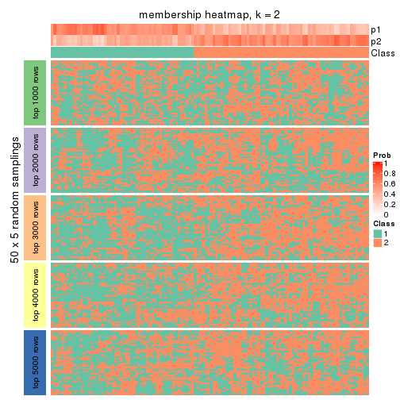
membership_heatmap(res, k = 3)
membership_heatmap(res, k = 4)

membership_heatmap(res, k = 5)
membership_heatmap(res, k = 6)
As soon as we have had the classes for columns, we can look for signatures which are significantly different between classes which can be candidate marks for certain classes. Following are the heatmaps for signatures.
Signature heatmaps where rows are scaled:
get_signatures(res, k = 2)

get_signatures(res, k = 3)

get_signatures(res, k = 4)

get_signatures(res, k = 5)

get_signatures(res, k = 6)

Signature heatmaps where rows are not scaled:
get_signatures(res, k = 2, scale_rows = FALSE)

get_signatures(res, k = 3, scale_rows = FALSE)

get_signatures(res, k = 4, scale_rows = FALSE)

get_signatures(res, k = 5, scale_rows = FALSE)

get_signatures(res, k = 6, scale_rows = FALSE)

Compare the overlap of signatures from different k:
compare_signatures(res)

get_signature() returns a data frame invisibly. TO get the list of signatures, the function
call should be assigned to a variable explicitly. In following code, if plot argument is set
to FALSE, no heatmap is plotted while only the differential analysis is performed.
# code only for demonstration
tb = get_signature(res, k = ..., plot = FALSE)
An example of the output of tb is:
#> which_row fdr mean_1 mean_2 scaled_mean_1 scaled_mean_2 km
#> 1 38 0.042760348 8.373488 9.131774 -0.5533452 0.5164555 1
#> 2 40 0.018707592 7.106213 8.469186 -0.6173731 0.5762149 1
#> 3 55 0.019134737 10.221463 11.207825 -0.6159697 0.5749050 1
#> 4 59 0.006059896 5.921854 7.869574 -0.6899429 0.6439467 1
#> 5 60 0.018055526 8.928898 10.211722 -0.6204761 0.5791110 1
#> 6 98 0.009384629 15.714769 14.887706 0.6635654 -0.6193277 2
...
The columns in tb are:
which_row: row indices corresponding to the input matrix.fdr: FDR for the differential test. mean_x: The mean value in group x.scaled_mean_x: The mean value in group x after rows are scaled.km: Row groups if k-means clustering is applied to rows.UMAP plot which shows how samples are separated.
dimension_reduction(res, k = 2, method = "UMAP")
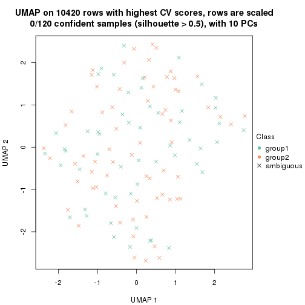
dimension_reduction(res, k = 3, method = "UMAP")
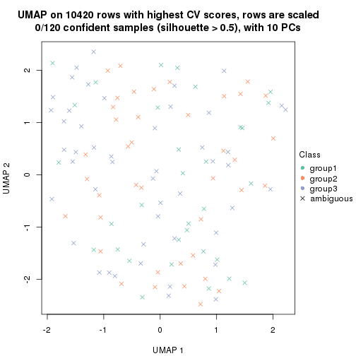
dimension_reduction(res, k = 4, method = "UMAP")
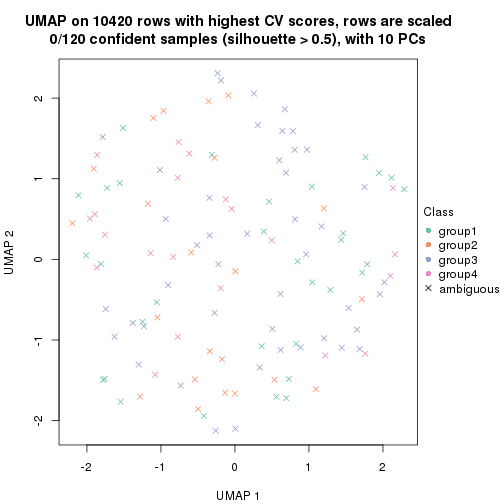
dimension_reduction(res, k = 5, method = "UMAP")
dimension_reduction(res, k = 6, method = "UMAP")
Following heatmap shows how subgroups are split when increasing k:
collect_classes(res)
If matrix rows can be associated to genes, consider to use GO_Enrichment(res,
...) to perform function enrichment for the signature genes.
The object with results only for a single top-value method and a single partition method can be extracted as:
res = res_list["CV", "skmeans"]
# you can also extract it by
# res = res_list["CV:skmeans"]
A summary of res and all the functions that can be applied to it:
res
#> A 'ConsensusPartition' object with k = 2, 3, 4, 5, 6.
#> On a matrix with 10420 rows and 120 columns.
#> Top rows (1000, 2000, 3000, 4000, 5000) are extracted by 'CV' method.
#> Subgroups are detected by 'skmeans' method.
#> Performed in total 1250 partitions by row resampling.
#> Best k for subgroups seems to be 2.
#>
#> Following methods can be applied to this 'ConsensusPartition' object:
#> [1] "cola_report" "collect_classes" "collect_plots"
#> [4] "collect_stats" "colnames" "compare_signatures"
#> [7] "consensus_heatmap" "dimension_reduction" "functional_enrichment"
#> [10] "get_anno_col" "get_anno" "get_classes"
#> [13] "get_consensus" "get_matrix" "get_membership"
#> [16] "get_param" "get_signatures" "get_stats"
#> [19] "is_best_k" "is_stable_k" "membership_heatmap"
#> [22] "ncol" "nrow" "plot_ecdf"
#> [25] "rownames" "select_partition_number" "show"
#> [28] "suggest_best_k" "test_to_known_factors"
collect_plots() function collects all the plots made from res for all k (number of partitions)
into one single page to provide an easy and fast comparison between different k.
collect_plots(res)
The plots are:
k and the heatmap of
predicted classes for each k.k.k.k.All the plots in panels can be made by individual functions and they are plotted later in this section.
select_partition_number() produces several plots showing different
statistics for choosing “optimized” k. There are following statistics:
k;k, the area increased is defined as \(A_k - A_{k-1}\).The detailed explanations of these statistics can be found in the cola vignette.
Generally speaking, lower PAC score, higher mean silhouette score or higher
concordance corresponds to better partition. Rand index and Jaccard index
measure how similar the current partition is compared to partition with k-1.
If they are too similar, we won't accept k is better than k-1.
select_partition_number(res)
The numeric values for all these statistics can be obtained by get_stats().
get_stats(res)
#> k 1-PAC mean_silhouette concordance area_increased Rand Jaccard
#> 2 2 0.000000 0.0413 0.523 0.5033 0.496 0.496
#> 3 3 0.000000 0.0133 0.359 0.3324 0.498 0.244
#> 4 4 0.000000 0.0163 0.283 0.1253 0.592 0.172
#> 5 5 0.000621 0.0159 0.230 0.0662 0.664 0.139
#> 6 6 0.017854 0.0177 0.213 0.0418 0.717 0.120
suggest_best_k() suggests the best \(k\) based on these statistics. The rules are as follows:
NA.suggest_best_k(res)
#> [1] 2
Following shows the table of the partitions (You need to click the show/hide
code output link to see it). The membership matrix (columns with name p*)
is inferred by
clue::cl_consensus()
function with the SE method. Basically the value in the membership matrix
represents the probability to belong to a certain group. The finall class
label for an item is determined with the group with highest probability it
belongs to.
In get_classes() function, the entropy is calculated from the membership
matrix and the silhouette score is calculated from the consensus matrix.
cbind(get_classes(res, k = 2), get_membership(res, k = 2))
#> class entropy silhouette p1 p2
#> SRR572528 2 0.936 0.114936 0.352 0.648
#> SRR572529 1 1.000 -0.010142 0.500 0.500
#> SRR572530 1 0.980 0.063492 0.584 0.416
#> SRR572531 2 0.978 0.081569 0.412 0.588
#> SRR572532 2 0.955 0.079391 0.376 0.624
#> SRR572533 1 0.983 0.072767 0.576 0.424
#> SRR572534 1 0.999 0.030843 0.520 0.480
#> SRR572535 2 0.861 0.110195 0.284 0.716
#> SRR572536 1 0.995 0.024863 0.540 0.460
#> SRR572537 2 0.978 0.068631 0.412 0.588
#> SRR572538 1 0.998 0.008781 0.528 0.472
#> SRR572539 1 0.999 0.035002 0.516 0.484
#> SRR572540 1 0.998 0.025798 0.524 0.476
#> SRR572541 2 0.992 0.007222 0.448 0.552
#> SRR572542 1 0.978 0.067405 0.588 0.412
#> SRR572543 2 1.000 -0.025711 0.492 0.508
#> SRR572544 2 0.981 0.070067 0.420 0.580
#> SRR572545 2 0.992 0.063966 0.448 0.552
#> SRR572546 2 0.991 0.051401 0.444 0.556
#> SRR572547 1 0.997 0.011043 0.532 0.468
#> SRR572548 2 0.988 0.046440 0.436 0.564
#> SRR572549 1 1.000 -0.012372 0.512 0.488
#> SRR572550 1 1.000 0.030632 0.512 0.488
#> SRR572551 2 0.997 0.042979 0.468 0.532
#> SRR572552 2 1.000 0.001903 0.496 0.504
#> SRR572553 2 0.992 0.011993 0.448 0.552
#> SRR572554 1 0.995 0.006878 0.540 0.460
#> SRR572555 1 0.999 -0.021237 0.516 0.484
#> SRR572556 1 0.966 0.071026 0.608 0.392
#> SRR572557 2 0.992 0.058930 0.448 0.552
#> SRR572558 1 1.000 -0.017414 0.512 0.488
#> SRR572559 2 0.999 0.018650 0.484 0.516
#> SRR572560 1 0.891 0.122509 0.692 0.308
#> SRR572561 1 0.980 0.097750 0.584 0.416
#> SRR572562 1 0.994 0.014015 0.544 0.456
#> SRR572563 1 0.994 0.061199 0.544 0.456
#> SRR572564 1 0.990 0.071485 0.560 0.440
#> SRR572565 1 0.996 0.020353 0.536 0.464
#> SRR572566 1 0.943 0.081514 0.640 0.360
#> SRR572567 1 1.000 -0.012585 0.500 0.500
#> SRR572568 1 0.839 0.133181 0.732 0.268
#> SRR572569 1 0.973 0.031651 0.596 0.404
#> SRR572570 1 0.988 0.040423 0.564 0.436
#> SRR572571 2 1.000 0.011284 0.500 0.500
#> SRR572572 2 0.958 0.058112 0.380 0.620
#> SRR572573 2 0.997 0.010643 0.468 0.532
#> SRR572574 1 0.997 0.037312 0.532 0.468
#> SRR572575 2 1.000 -0.054558 0.488 0.512
#> SRR572576 2 0.985 0.016127 0.428 0.572
#> SRR572577 2 0.952 0.061183 0.372 0.628
#> SRR572578 1 0.998 -0.008567 0.524 0.476
#> SRR572579 2 0.990 0.017360 0.440 0.560
#> SRR572580 1 1.000 0.016230 0.512 0.488
#> SRR572581 1 1.000 0.020831 0.504 0.496
#> SRR572582 2 0.978 0.049127 0.412 0.588
#> SRR572583 2 0.993 0.008779 0.452 0.548
#> SRR572584 1 0.961 0.075957 0.616 0.384
#> SRR572585 1 0.971 0.064731 0.600 0.400
#> SRR572586 2 0.998 -0.011694 0.476 0.524
#> SRR572587 1 0.990 0.038215 0.560 0.440
#> SRR572588 1 0.973 0.044471 0.596 0.404
#> SRR572589 2 0.995 0.039478 0.460 0.540
#> SRR572590 2 0.998 0.028966 0.476 0.524
#> SRR572591 2 1.000 0.024427 0.492 0.508
#> SRR572592 1 0.985 0.080697 0.572 0.428
#> SRR572593 1 1.000 -0.022485 0.504 0.496
#> SRR572594 1 0.975 0.075633 0.592 0.408
#> SRR572595 2 0.975 0.057546 0.408 0.592
#> SRR572596 2 0.995 0.041387 0.460 0.540
#> SRR572597 1 0.999 -0.000650 0.520 0.480
#> SRR572598 1 0.975 0.031431 0.592 0.408
#> SRR572599 2 0.999 0.000932 0.484 0.516
#> SRR572600 1 0.943 0.069063 0.640 0.360
#> SRR572601 1 0.993 0.024022 0.548 0.452
#> SRR572602 1 1.000 0.000987 0.504 0.496
#> SRR572603 1 0.987 0.043976 0.568 0.432
#> SRR572604 2 0.996 0.024431 0.464 0.536
#> SRR572605 2 0.981 0.058465 0.420 0.580
#> SRR572606 2 0.980 0.052956 0.416 0.584
#> SRR572607 1 0.963 0.097485 0.612 0.388
#> SRR572608 1 0.999 -0.022850 0.520 0.480
#> SRR572609 2 0.983 0.072410 0.424 0.576
#> SRR572610 2 0.963 0.066221 0.388 0.612
#> SRR572611 2 0.978 0.060296 0.412 0.588
#> SRR572612 1 0.998 0.039082 0.524 0.476
#> SRR572613 2 0.991 0.046103 0.444 0.556
#> SRR572614 1 1.000 -0.014365 0.500 0.500
#> SRR572615 1 0.952 0.100002 0.628 0.372
#> SRR572616 2 0.998 -0.002679 0.472 0.528
#> SRR572617 2 1.000 -0.014164 0.496 0.504
#> SRR572618 2 0.985 0.036721 0.428 0.572
#> SRR572619 2 0.999 0.012798 0.480 0.520
#> SRR572620 1 0.999 0.017591 0.520 0.480
#> SRR572621 1 0.966 0.083455 0.608 0.392
#> SRR572622 2 0.978 0.059654 0.412 0.588
#> SRR572623 2 0.973 0.093268 0.404 0.596
#> SRR572624 2 0.969 0.106705 0.396 0.604
#> SRR572625 1 0.963 0.061100 0.612 0.388
#> SRR572626 2 0.929 0.105783 0.344 0.656
#> SRR572627 1 0.998 0.019938 0.528 0.472
#> SRR572628 1 0.992 0.064423 0.552 0.448
#> SRR572629 2 0.999 0.029070 0.480 0.520
#> SRR572630 2 0.983 0.048236 0.424 0.576
#> SRR572631 1 0.981 0.103022 0.580 0.420
#> SRR572632 1 0.990 0.052222 0.560 0.440
#> SRR572633 1 0.998 0.031073 0.524 0.476
#> SRR572634 2 0.998 0.014145 0.476 0.524
#> SRR572635 1 0.961 0.082118 0.616 0.384
#> SRR572636 1 0.995 0.033426 0.540 0.460
#> SRR572637 2 0.975 0.068917 0.408 0.592
#> SRR572638 2 0.991 0.055547 0.444 0.556
#> SRR572639 2 0.978 0.063019 0.412 0.588
#> SRR572640 2 0.992 0.040341 0.448 0.552
#> SRR572641 2 0.973 0.040277 0.404 0.596
#> SRR572642 2 1.000 -0.023395 0.488 0.512
#> SRR572643 2 0.958 0.093950 0.380 0.620
#> SRR572644 1 0.990 0.037751 0.560 0.440
#> SRR572645 2 0.990 0.052124 0.440 0.560
#> SRR572646 1 0.999 0.039985 0.520 0.480
#> SRR572647 1 0.987 0.063106 0.568 0.432
cbind(get_classes(res, k = 3), get_membership(res, k = 3))
#> class entropy silhouette p1 p2 p3
#> SRR572528 3 0.998 -0.019556 0.300 0.348 0.352
#> SRR572529 3 0.917 0.056699 0.216 0.244 0.540
#> SRR572530 2 0.910 0.015664 0.204 0.548 0.248
#> SRR572531 1 0.996 -0.006676 0.356 0.352 0.292
#> SRR572532 3 1.000 -0.015126 0.324 0.328 0.348
#> SRR572533 1 0.998 -0.015412 0.360 0.328 0.312
#> SRR572534 3 0.988 0.017959 0.268 0.332 0.400
#> SRR572535 3 0.988 0.021471 0.260 0.356 0.384
#> SRR572536 1 0.993 0.010993 0.392 0.296 0.312
#> SRR572537 1 0.988 -0.004281 0.396 0.264 0.340
#> SRR572538 2 0.984 0.014152 0.248 0.384 0.368
#> SRR572539 2 0.993 -0.006003 0.332 0.384 0.284
#> SRR572540 3 0.999 -0.003819 0.316 0.336 0.348
#> SRR572541 1 0.996 -0.017741 0.364 0.348 0.288
#> SRR572542 3 0.974 0.014649 0.228 0.360 0.412
#> SRR572543 2 0.986 0.044326 0.328 0.408 0.264
#> SRR572544 2 0.978 0.019003 0.284 0.440 0.276
#> SRR572545 2 0.991 0.015992 0.356 0.376 0.268
#> SRR572546 1 0.999 0.007119 0.348 0.336 0.316
#> SRR572547 2 0.932 0.038638 0.192 0.504 0.304
#> SRR572548 2 0.980 0.012454 0.360 0.400 0.240
#> SRR572549 2 0.980 0.014359 0.240 0.404 0.356
#> SRR572550 2 0.998 0.009091 0.320 0.368 0.312
#> SRR572551 2 0.987 0.035935 0.272 0.408 0.320
#> SRR572552 3 0.999 -0.012811 0.336 0.312 0.352
#> SRR572553 2 0.949 -0.006657 0.184 0.416 0.400
#> SRR572554 2 0.968 0.037094 0.284 0.460 0.256
#> SRR572555 3 0.986 0.009638 0.264 0.328 0.408
#> SRR572556 2 0.974 0.014099 0.280 0.448 0.272
#> SRR572557 2 0.973 -0.004960 0.224 0.408 0.368
#> SRR572558 2 0.965 0.028729 0.220 0.444 0.336
#> SRR572559 2 0.968 0.029141 0.284 0.460 0.256
#> SRR572560 1 0.996 0.034912 0.368 0.340 0.292
#> SRR572561 1 0.982 0.008700 0.404 0.248 0.348
#> SRR572562 1 0.991 0.012656 0.376 0.356 0.268
#> SRR572563 1 0.857 0.062504 0.608 0.204 0.188
#> SRR572564 3 0.967 0.015426 0.268 0.268 0.464
#> SRR572565 1 0.989 0.019450 0.404 0.276 0.320
#> SRR572566 2 0.999 0.014512 0.340 0.344 0.316
#> SRR572567 3 0.980 -0.001544 0.296 0.272 0.432
#> SRR572568 1 0.987 0.034290 0.380 0.256 0.364
#> SRR572569 2 0.987 0.011085 0.360 0.384 0.256
#> SRR572570 2 0.996 -0.005883 0.336 0.368 0.296
#> SRR572571 2 0.992 0.012407 0.284 0.392 0.324
#> SRR572572 3 0.960 0.032828 0.264 0.260 0.476
#> SRR572573 1 0.997 0.022444 0.368 0.328 0.304
#> SRR572574 1 0.952 0.051030 0.488 0.276 0.236
#> SRR572575 3 0.994 0.016298 0.296 0.320 0.384
#> SRR572576 3 0.994 0.003467 0.284 0.336 0.380
#> SRR572577 1 0.999 0.019575 0.360 0.324 0.316
#> SRR572578 3 0.960 0.020401 0.260 0.264 0.476
#> SRR572579 3 0.997 -0.002424 0.312 0.316 0.372
#> SRR572580 1 0.955 0.033548 0.484 0.240 0.276
#> SRR572581 3 0.972 -0.001358 0.240 0.320 0.440
#> SRR572582 3 0.981 0.006195 0.260 0.316 0.424
#> SRR572583 1 0.993 0.012617 0.380 0.280 0.340
#> SRR572584 1 0.999 0.008270 0.348 0.344 0.308
#> SRR572585 3 0.999 -0.007489 0.340 0.308 0.352
#> SRR572586 1 0.999 0.003989 0.360 0.324 0.316
#> SRR572587 1 0.969 0.042724 0.456 0.296 0.248
#> SRR572588 1 0.973 -0.002096 0.404 0.372 0.224
#> SRR572589 3 0.971 0.032407 0.316 0.240 0.444
#> SRR572590 2 0.999 -0.016969 0.324 0.360 0.316
#> SRR572591 2 0.994 -0.015320 0.356 0.364 0.280
#> SRR572592 3 0.999 -0.002271 0.308 0.340 0.352
#> SRR572593 3 0.976 0.025723 0.240 0.332 0.428
#> SRR572594 3 0.969 0.028854 0.272 0.268 0.460
#> SRR572595 3 0.875 0.021003 0.256 0.164 0.580
#> SRR572596 3 0.974 -0.002020 0.272 0.280 0.448
#> SRR572597 1 0.997 -0.007377 0.368 0.324 0.308
#> SRR572598 1 0.993 -0.027882 0.380 0.340 0.280
#> SRR572599 2 0.992 0.005818 0.344 0.380 0.276
#> SRR572600 3 0.996 -0.013387 0.308 0.316 0.376
#> SRR572601 1 0.974 0.029122 0.448 0.264 0.288
#> SRR572602 1 0.981 0.026707 0.416 0.332 0.252
#> SRR572603 1 0.993 0.009349 0.384 0.332 0.284
#> SRR572604 1 0.984 0.013687 0.408 0.256 0.336
#> SRR572605 2 0.990 0.040014 0.364 0.372 0.264
#> SRR572606 1 0.996 0.001203 0.372 0.336 0.292
#> SRR572607 3 0.994 0.006004 0.312 0.300 0.388
#> SRR572608 2 0.954 0.031922 0.204 0.460 0.336
#> SRR572609 3 0.961 0.030741 0.228 0.308 0.464
#> SRR572610 2 0.977 0.023014 0.368 0.400 0.232
#> SRR572611 3 0.997 -0.024993 0.300 0.336 0.364
#> SRR572612 2 0.981 0.022728 0.316 0.424 0.260
#> SRR572613 3 0.988 0.006616 0.340 0.264 0.396
#> SRR572614 1 0.993 0.000855 0.388 0.324 0.288
#> SRR572615 1 0.982 0.007850 0.400 0.356 0.244
#> SRR572616 1 0.969 0.035346 0.456 0.296 0.248
#> SRR572617 2 0.996 0.017249 0.328 0.372 0.300
#> SRR572618 3 0.985 0.004599 0.276 0.304 0.420
#> SRR572619 1 0.955 0.021467 0.448 0.352 0.200
#> SRR572620 2 0.981 0.029525 0.340 0.412 0.248
#> SRR572621 3 0.993 0.018033 0.336 0.280 0.384
#> SRR572622 1 0.928 0.038647 0.480 0.168 0.352
#> SRR572623 2 0.968 0.026664 0.252 0.460 0.288
#> SRR572624 2 0.986 0.013700 0.316 0.412 0.272
#> SRR572625 2 0.991 -0.013491 0.328 0.392 0.280
#> SRR572626 2 0.971 0.020867 0.220 0.412 0.368
#> SRR572627 3 0.994 0.016416 0.280 0.356 0.364
#> SRR572628 3 0.979 0.014209 0.340 0.244 0.416
#> SRR572629 1 0.986 0.032691 0.412 0.320 0.268
#> SRR572630 1 0.977 0.035827 0.420 0.240 0.340
#> SRR572631 3 0.995 0.015129 0.352 0.284 0.364
#> SRR572632 1 0.969 0.032590 0.452 0.240 0.308
#> SRR572633 1 0.978 0.003024 0.388 0.232 0.380
#> SRR572634 1 0.932 0.052373 0.516 0.212 0.272
#> SRR572635 3 0.998 -0.003898 0.300 0.348 0.352
#> SRR572636 1 0.994 -0.025995 0.360 0.360 0.280
#> SRR572637 2 0.991 0.004456 0.340 0.388 0.272
#> SRR572638 3 0.947 0.006676 0.188 0.360 0.452
#> SRR572639 1 0.996 0.026594 0.376 0.296 0.328
#> SRR572640 2 0.999 0.016209 0.320 0.360 0.320
#> SRR572641 3 0.995 0.025958 0.292 0.328 0.380
#> SRR572642 1 0.883 0.067897 0.580 0.196 0.224
#> SRR572643 3 0.999 -0.027219 0.316 0.332 0.352
#> SRR572644 2 0.976 0.024183 0.252 0.436 0.312
#> SRR572645 2 0.988 0.001578 0.332 0.400 0.268
#> SRR572646 2 0.996 -0.017821 0.296 0.372 0.332
#> SRR572647 1 0.999 -0.005937 0.352 0.316 0.332
cbind(get_classes(res, k = 4), get_membership(res, k = 4))
#> class entropy silhouette p1 p2 p3 p4
#> SRR572528 1 0.945 0.040256 0.404 0.156 0.272 0.168
#> SRR572529 3 0.981 -0.000661 0.224 0.216 0.352 0.208
#> SRR572530 2 0.998 0.006899 0.256 0.268 0.216 0.260
#> SRR572531 1 0.969 0.042241 0.328 0.268 0.268 0.136
#> SRR572532 4 0.988 0.004974 0.256 0.216 0.204 0.324
#> SRR572533 2 0.998 0.001692 0.232 0.276 0.260 0.232
#> SRR572534 4 0.988 0.019749 0.224 0.252 0.200 0.324
#> SRR572535 1 0.958 0.006454 0.360 0.304 0.184 0.152
#> SRR572536 4 0.983 0.010730 0.232 0.248 0.184 0.336
#> SRR572537 1 0.967 0.021784 0.364 0.232 0.152 0.252
#> SRR572538 3 0.991 -0.010023 0.224 0.200 0.304 0.272
#> SRR572539 2 0.983 -0.031061 0.216 0.324 0.184 0.276
#> SRR572540 2 0.994 -0.018500 0.248 0.296 0.208 0.248
#> SRR572541 1 0.989 -0.006300 0.292 0.232 0.188 0.288
#> SRR572542 4 0.990 0.006861 0.196 0.276 0.224 0.304
#> SRR572543 1 0.957 0.023290 0.404 0.212 0.176 0.208
#> SRR572544 1 0.949 0.066525 0.408 0.176 0.164 0.252
#> SRR572545 4 0.986 -0.007535 0.276 0.184 0.228 0.312
#> SRR572546 4 0.960 0.011968 0.204 0.144 0.292 0.360
#> SRR572547 1 0.917 0.065998 0.472 0.188 0.164 0.176
#> SRR572548 1 0.951 0.023766 0.408 0.164 0.184 0.244
#> SRR572549 3 0.978 0.011842 0.204 0.240 0.356 0.200
#> SRR572550 4 0.931 0.070038 0.176 0.156 0.224 0.444
#> SRR572551 1 0.952 0.038825 0.392 0.144 0.200 0.264
#> SRR572552 2 0.990 0.011442 0.252 0.304 0.256 0.188
#> SRR572553 1 0.983 0.026528 0.348 0.216 0.220 0.216
#> SRR572554 4 0.959 0.015215 0.248 0.208 0.156 0.388
#> SRR572555 1 0.998 -0.006106 0.268 0.240 0.264 0.228
#> SRR572556 3 0.889 0.061873 0.152 0.172 0.508 0.168
#> SRR572557 1 0.983 0.036167 0.328 0.204 0.192 0.276
#> SRR572558 4 0.971 0.019914 0.244 0.152 0.256 0.348
#> SRR572559 3 0.990 0.016741 0.268 0.204 0.308 0.220
#> SRR572560 3 0.969 0.029673 0.208 0.256 0.368 0.168
#> SRR572561 2 0.985 -0.027712 0.176 0.312 0.272 0.240
#> SRR572562 2 0.991 -0.005012 0.240 0.316 0.236 0.208
#> SRR572563 3 0.994 0.001293 0.208 0.232 0.284 0.276
#> SRR572564 2 0.985 0.037583 0.236 0.336 0.196 0.232
#> SRR572565 4 0.998 -0.010908 0.236 0.228 0.268 0.268
#> SRR572566 2 0.998 -0.005859 0.260 0.272 0.244 0.224
#> SRR572567 1 0.971 -0.005682 0.312 0.140 0.296 0.252
#> SRR572568 4 0.972 -0.007815 0.144 0.248 0.284 0.324
#> SRR572569 1 0.952 0.035533 0.416 0.176 0.208 0.200
#> SRR572570 3 0.997 -0.004290 0.216 0.248 0.284 0.252
#> SRR572571 4 0.956 0.050866 0.148 0.188 0.296 0.368
#> SRR572572 3 0.977 -0.013411 0.280 0.232 0.328 0.160
#> SRR572573 3 0.983 0.002429 0.276 0.164 0.300 0.260
#> SRR572574 4 0.952 -0.007909 0.148 0.312 0.176 0.364
#> SRR572575 2 0.974 0.050289 0.244 0.348 0.160 0.248
#> SRR572576 2 0.993 0.018261 0.216 0.288 0.216 0.280
#> SRR572577 4 0.975 0.006501 0.228 0.276 0.160 0.336
#> SRR572578 3 0.918 0.006655 0.212 0.216 0.452 0.120
#> SRR572579 2 0.982 0.025754 0.268 0.332 0.180 0.220
#> SRR572580 2 0.979 0.008787 0.196 0.348 0.256 0.200
#> SRR572581 4 0.996 -0.004922 0.216 0.264 0.236 0.284
#> SRR572582 1 0.913 0.041543 0.476 0.152 0.188 0.184
#> SRR572583 2 0.992 0.005832 0.224 0.316 0.240 0.220
#> SRR572584 2 0.984 0.001993 0.164 0.292 0.284 0.260
#> SRR572585 3 0.949 0.043032 0.152 0.232 0.412 0.204
#> SRR572586 2 0.965 0.035226 0.212 0.332 0.144 0.312
#> SRR572587 2 0.984 0.004522 0.216 0.316 0.284 0.184
#> SRR572588 3 0.990 0.019463 0.256 0.244 0.308 0.192
#> SRR572589 2 0.888 0.048067 0.092 0.480 0.216 0.212
#> SRR572590 2 0.938 0.047586 0.248 0.412 0.124 0.216
#> SRR572591 4 0.892 0.046949 0.136 0.164 0.200 0.500
#> SRR572592 2 0.986 -0.006618 0.260 0.324 0.192 0.224
#> SRR572593 4 0.971 0.006008 0.152 0.268 0.232 0.348
#> SRR572594 2 0.968 0.033589 0.164 0.372 0.244 0.220
#> SRR572595 4 0.922 0.051915 0.168 0.196 0.172 0.464
#> SRR572596 3 0.989 0.013766 0.188 0.244 0.308 0.260
#> SRR572597 1 0.960 0.021124 0.396 0.180 0.232 0.192
#> SRR572598 3 0.952 0.021815 0.188 0.204 0.416 0.192
#> SRR572599 3 0.988 0.002495 0.272 0.192 0.312 0.224
#> SRR572600 2 0.987 -0.024500 0.212 0.320 0.200 0.268
#> SRR572601 2 0.946 -0.004268 0.204 0.376 0.296 0.124
#> SRR572602 4 0.997 0.018759 0.240 0.268 0.216 0.276
#> SRR572603 2 0.975 0.025655 0.204 0.340 0.284 0.172
#> SRR572604 3 0.991 -0.039685 0.192 0.240 0.300 0.268
#> SRR572605 1 0.948 0.037647 0.404 0.164 0.264 0.168
#> SRR572606 2 0.976 0.018285 0.172 0.344 0.212 0.272
#> SRR572607 4 0.981 -0.007074 0.160 0.268 0.260 0.312
#> SRR572608 1 0.963 0.050976 0.384 0.252 0.172 0.192
#> SRR572609 1 0.977 0.023835 0.348 0.180 0.264 0.208
#> SRR572610 4 0.994 0.009261 0.248 0.252 0.204 0.296
#> SRR572611 4 0.958 0.023142 0.168 0.212 0.220 0.400
#> SRR572612 2 0.974 0.012413 0.312 0.320 0.188 0.180
#> SRR572613 4 0.992 -0.013999 0.256 0.204 0.236 0.304
#> SRR572614 4 0.996 0.002059 0.260 0.264 0.204 0.272
#> SRR572615 2 0.996 0.021451 0.244 0.280 0.212 0.264
#> SRR572616 4 0.962 0.025846 0.200 0.232 0.176 0.392
#> SRR572617 3 0.988 0.032279 0.248 0.212 0.328 0.212
#> SRR572618 4 0.982 0.005140 0.236 0.184 0.240 0.340
#> SRR572619 1 0.987 0.020611 0.320 0.188 0.236 0.256
#> SRR572620 3 0.995 0.004875 0.280 0.228 0.280 0.212
#> SRR572621 2 0.887 0.038206 0.148 0.504 0.140 0.208
#> SRR572622 3 0.980 0.014582 0.264 0.224 0.336 0.176
#> SRR572623 1 0.990 -0.004583 0.292 0.288 0.192 0.228
#> SRR572624 1 0.904 0.051572 0.464 0.140 0.260 0.136
#> SRR572625 3 0.982 -0.003611 0.208 0.256 0.340 0.196
#> SRR572626 1 0.955 0.044063 0.324 0.112 0.292 0.272
#> SRR572627 4 0.977 0.008414 0.176 0.256 0.220 0.348
#> SRR572628 3 0.995 0.004119 0.252 0.216 0.296 0.236
#> SRR572629 2 0.974 0.022654 0.272 0.344 0.224 0.160
#> SRR572630 4 0.970 0.041971 0.220 0.156 0.272 0.352
#> SRR572631 2 0.828 0.071703 0.164 0.572 0.112 0.152
#> SRR572632 3 0.973 0.016296 0.172 0.252 0.360 0.216
#> SRR572633 2 0.924 0.048343 0.236 0.424 0.104 0.236
#> SRR572634 3 0.952 0.025168 0.176 0.152 0.380 0.292
#> SRR572635 3 0.972 0.039790 0.208 0.200 0.376 0.216
#> SRR572636 2 0.992 -0.022781 0.260 0.280 0.272 0.188
#> SRR572637 2 0.989 -0.025924 0.204 0.312 0.216 0.268
#> SRR572638 2 0.993 0.014086 0.252 0.288 0.196 0.264
#> SRR572639 4 0.979 0.003665 0.256 0.172 0.232 0.340
#> SRR572640 4 0.945 0.006323 0.256 0.136 0.204 0.404
#> SRR572641 1 0.988 0.010209 0.288 0.176 0.256 0.280
#> SRR572642 2 0.966 0.004783 0.148 0.356 0.276 0.220
#> SRR572643 1 0.946 0.021483 0.344 0.108 0.236 0.312
#> SRR572644 3 0.955 0.000595 0.196 0.332 0.336 0.136
#> SRR572645 1 0.980 0.015273 0.332 0.200 0.188 0.280
#> SRR572646 2 0.949 0.041890 0.128 0.372 0.204 0.296
#> SRR572647 2 0.985 0.023388 0.216 0.304 0.296 0.184
cbind(get_classes(res, k = 5), get_membership(res, k = 5))
#> class entropy silhouette p1 p2 p3 p4 p5
#> SRR572528 4 0.962 -0.006025 0.160 0.104 0.248 0.304 0.184
#> SRR572529 1 0.978 0.033706 0.292 0.140 0.156 0.224 0.188
#> SRR572530 1 0.961 0.004780 0.340 0.204 0.144 0.132 0.180
#> SRR572531 1 0.971 0.021103 0.276 0.132 0.172 0.148 0.272
#> SRR572532 5 0.965 0.003772 0.172 0.164 0.120 0.224 0.320
#> SRR572533 4 0.958 0.040848 0.132 0.188 0.188 0.348 0.144
#> SRR572534 4 0.986 0.005712 0.180 0.204 0.164 0.284 0.168
#> SRR572535 2 0.975 0.002918 0.152 0.292 0.244 0.144 0.168
#> SRR572536 5 0.985 -0.010873 0.156 0.152 0.192 0.232 0.268
#> SRR572537 5 0.973 0.019801 0.160 0.152 0.196 0.172 0.320
#> SRR572538 2 0.963 0.014739 0.148 0.316 0.208 0.112 0.216
#> SRR572539 2 0.990 0.000916 0.204 0.248 0.224 0.144 0.180
#> SRR572540 1 0.976 0.016463 0.288 0.188 0.212 0.116 0.196
#> SRR572541 5 0.972 0.032280 0.168 0.212 0.164 0.140 0.316
#> SRR572542 2 0.987 -0.007022 0.180 0.244 0.236 0.204 0.136
#> SRR572543 2 0.978 0.017064 0.192 0.300 0.156 0.144 0.208
#> SRR572544 5 0.967 0.020273 0.120 0.208 0.164 0.188 0.320
#> SRR572545 5 0.950 0.018021 0.152 0.092 0.200 0.224 0.332
#> SRR572546 5 0.986 0.036304 0.192 0.212 0.156 0.164 0.276
#> SRR572547 1 0.974 0.011951 0.304 0.156 0.172 0.140 0.228
#> SRR572548 5 0.975 -0.008528 0.144 0.200 0.132 0.256 0.268
#> SRR572549 5 0.938 0.030356 0.196 0.100 0.116 0.240 0.348
#> SRR572550 1 0.994 0.010881 0.240 0.192 0.168 0.176 0.224
#> SRR572551 5 0.944 0.043829 0.116 0.128 0.220 0.176 0.360
#> SRR572552 3 0.936 0.047824 0.200 0.128 0.388 0.132 0.152
#> SRR572553 1 0.994 0.026650 0.232 0.232 0.172 0.168 0.196
#> SRR572554 5 0.965 -0.013763 0.140 0.256 0.244 0.104 0.256
#> SRR572555 1 0.979 0.026938 0.280 0.204 0.184 0.212 0.120
#> SRR572556 2 0.980 0.017087 0.236 0.272 0.204 0.152 0.136
#> SRR572557 3 0.926 0.010882 0.088 0.152 0.360 0.264 0.136
#> SRR572558 5 0.986 0.000893 0.208 0.204 0.140 0.180 0.268
#> SRR572559 5 0.988 0.018733 0.164 0.216 0.196 0.156 0.268
#> SRR572560 5 0.899 0.022698 0.160 0.204 0.056 0.172 0.408
#> SRR572561 2 0.983 0.003246 0.204 0.268 0.204 0.124 0.200
#> SRR572562 2 0.990 0.011309 0.180 0.268 0.204 0.188 0.160
#> SRR572563 4 0.959 0.002917 0.104 0.228 0.228 0.304 0.136
#> SRR572564 4 0.979 0.034364 0.160 0.192 0.192 0.304 0.152
#> SRR572565 5 0.970 0.016922 0.200 0.152 0.148 0.176 0.324
#> SRR572566 5 0.941 0.029625 0.112 0.212 0.176 0.132 0.368
#> SRR572567 5 0.954 0.024907 0.128 0.148 0.220 0.156 0.348
#> SRR572568 2 0.942 0.034391 0.112 0.368 0.216 0.164 0.140
#> SRR572569 5 0.983 0.020151 0.216 0.156 0.172 0.168 0.288
#> SRR572570 2 0.985 -0.015100 0.200 0.260 0.148 0.236 0.156
#> SRR572571 2 0.989 -0.019369 0.208 0.232 0.132 0.204 0.224
#> SRR572572 4 0.993 -0.020546 0.228 0.152 0.192 0.232 0.196
#> SRR572573 5 0.929 0.033838 0.168 0.168 0.180 0.092 0.392
#> SRR572574 2 0.939 0.031027 0.244 0.332 0.204 0.140 0.080
#> SRR572575 5 0.967 -0.007018 0.152 0.264 0.184 0.116 0.284
#> SRR572576 4 0.872 0.041122 0.060 0.220 0.128 0.448 0.144
#> SRR572577 3 0.979 0.003049 0.232 0.112 0.260 0.188 0.208
#> SRR572578 1 0.904 0.041697 0.416 0.112 0.084 0.192 0.196
#> SRR572579 3 0.979 0.007081 0.132 0.216 0.272 0.152 0.228
#> SRR572580 3 0.994 -0.006476 0.164 0.176 0.244 0.200 0.216
#> SRR572581 2 0.990 0.012786 0.164 0.264 0.204 0.204 0.164
#> SRR572582 1 0.973 0.029013 0.280 0.120 0.188 0.160 0.252
#> SRR572583 3 0.900 0.021328 0.100 0.192 0.380 0.260 0.068
#> SRR572584 3 0.993 0.017170 0.224 0.172 0.232 0.216 0.156
#> SRR572585 4 0.985 -0.003306 0.188 0.176 0.140 0.268 0.228
#> SRR572586 1 0.964 0.014434 0.328 0.156 0.212 0.180 0.124
#> SRR572587 3 0.932 0.040871 0.128 0.168 0.388 0.112 0.204
#> SRR572588 5 0.963 0.023238 0.180 0.260 0.132 0.128 0.300
#> SRR572589 2 0.937 0.010326 0.216 0.340 0.136 0.228 0.080
#> SRR572590 2 0.995 0.018814 0.220 0.232 0.204 0.176 0.168
#> SRR572591 3 0.962 0.004706 0.140 0.216 0.328 0.192 0.124
#> SRR572592 1 0.951 0.038161 0.320 0.272 0.124 0.152 0.132
#> SRR572593 2 0.988 0.012702 0.172 0.256 0.204 0.144 0.224
#> SRR572594 4 0.940 0.030100 0.124 0.260 0.108 0.344 0.164
#> SRR572595 3 0.984 0.003991 0.184 0.140 0.284 0.196 0.196
#> SRR572596 3 0.986 -0.010763 0.248 0.164 0.256 0.172 0.160
#> SRR572597 5 0.990 0.005029 0.196 0.148 0.232 0.176 0.248
#> SRR572598 4 0.865 0.069850 0.172 0.128 0.100 0.488 0.112
#> SRR572599 3 0.977 -0.016686 0.156 0.172 0.292 0.236 0.144
#> SRR572600 3 0.988 0.026541 0.164 0.232 0.240 0.144 0.220
#> SRR572601 4 0.984 0.004879 0.232 0.228 0.136 0.248 0.156
#> SRR572602 4 0.983 0.001219 0.152 0.228 0.192 0.276 0.152
#> SRR572603 5 0.943 0.012976 0.108 0.144 0.144 0.268 0.336
#> SRR572604 3 0.916 0.029399 0.096 0.164 0.412 0.132 0.196
#> SRR572605 4 0.965 0.006672 0.272 0.120 0.156 0.288 0.164
#> SRR572606 2 0.947 0.024989 0.156 0.328 0.160 0.260 0.096
#> SRR572607 2 0.974 0.023502 0.224 0.280 0.112 0.168 0.216
#> SRR572608 5 0.961 -0.015769 0.240 0.152 0.252 0.092 0.264
#> SRR572609 1 0.937 0.046546 0.384 0.116 0.168 0.136 0.196
#> SRR572610 1 0.990 -0.003878 0.268 0.164 0.176 0.188 0.204
#> SRR572611 3 0.961 0.017145 0.236 0.176 0.320 0.156 0.112
#> SRR572612 1 0.865 0.068855 0.484 0.092 0.180 0.128 0.116
#> SRR572613 4 0.976 0.018489 0.160 0.224 0.128 0.292 0.196
#> SRR572614 3 0.975 -0.013082 0.248 0.128 0.280 0.192 0.152
#> SRR572615 2 0.882 0.024288 0.236 0.440 0.120 0.120 0.084
#> SRR572616 3 0.895 0.037811 0.156 0.132 0.456 0.136 0.120
#> SRR572617 1 0.962 0.015994 0.336 0.128 0.180 0.148 0.208
#> SRR572618 3 0.960 0.038944 0.152 0.156 0.352 0.188 0.152
#> SRR572619 4 0.970 0.012130 0.196 0.132 0.136 0.296 0.240
#> SRR572620 4 0.941 0.026156 0.172 0.264 0.064 0.296 0.204
#> SRR572621 2 0.939 0.025717 0.196 0.328 0.200 0.212 0.064
#> SRR572622 4 0.945 0.014863 0.128 0.164 0.216 0.364 0.128
#> SRR572623 3 0.972 0.001500 0.188 0.216 0.308 0.128 0.160
#> SRR572624 5 0.931 0.013993 0.260 0.124 0.132 0.120 0.364
#> SRR572625 1 0.934 0.004746 0.348 0.268 0.104 0.160 0.120
#> SRR572626 5 0.942 -0.013859 0.276 0.080 0.156 0.176 0.312
#> SRR572627 2 0.963 0.020507 0.212 0.324 0.192 0.112 0.160
#> SRR572628 4 0.956 0.034797 0.132 0.192 0.152 0.356 0.168
#> SRR572629 4 0.994 0.001949 0.176 0.224 0.168 0.240 0.192
#> SRR572630 1 0.972 -0.017630 0.276 0.108 0.172 0.248 0.196
#> SRR572631 2 0.939 0.031463 0.124 0.380 0.172 0.196 0.128
#> SRR572632 5 0.989 -0.025363 0.228 0.216 0.132 0.196 0.228
#> SRR572633 2 0.951 0.015300 0.136 0.336 0.248 0.116 0.164
#> SRR572634 2 0.992 -0.034763 0.188 0.256 0.156 0.212 0.188
#> SRR572635 4 0.989 0.024422 0.212 0.208 0.140 0.256 0.184
#> SRR572636 1 0.977 0.011678 0.276 0.160 0.128 0.192 0.244
#> SRR572637 3 0.896 0.046064 0.140 0.136 0.456 0.124 0.144
#> SRR572638 2 0.967 0.003763 0.112 0.316 0.196 0.200 0.176
#> SRR572639 3 0.969 0.015867 0.180 0.108 0.276 0.176 0.260
#> SRR572640 3 0.957 0.007964 0.232 0.076 0.276 0.184 0.232
#> SRR572641 1 0.955 0.036153 0.360 0.140 0.172 0.180 0.148
#> SRR572642 3 0.976 0.007789 0.244 0.176 0.264 0.204 0.112
#> SRR572643 5 0.959 0.018117 0.144 0.152 0.264 0.128 0.312
#> SRR572644 1 0.901 0.058534 0.444 0.172 0.136 0.108 0.140
#> SRR572645 3 0.981 0.004475 0.172 0.176 0.288 0.220 0.144
#> SRR572646 2 0.904 0.048540 0.128 0.444 0.152 0.152 0.124
#> SRR572647 4 0.916 0.045632 0.212 0.168 0.100 0.404 0.116
cbind(get_classes(res, k = 6), get_membership(res, k = 6))
#> class entropy silhouette p1 p2 p3 p4 p5 p6
#> SRR572528 4 0.969 1.12e-02 0.144 0.120 0.100 0.256 0.152 0.228
#> SRR572529 4 0.936 1.08e-02 0.092 0.176 0.160 0.336 0.080 0.156
#> SRR572530 4 0.976 1.91e-02 0.172 0.120 0.144 0.272 0.124 0.168
#> SRR572531 1 0.995 -1.39e-02 0.204 0.160 0.156 0.132 0.176 0.172
#> SRR572532 5 0.911 2.21e-02 0.132 0.252 0.072 0.124 0.340 0.080
#> SRR572533 2 0.930 1.57e-02 0.248 0.268 0.132 0.212 0.064 0.076
#> SRR572534 6 0.952 -8.85e-04 0.196 0.228 0.072 0.100 0.144 0.260
#> SRR572535 4 0.920 3.78e-02 0.064 0.192 0.120 0.332 0.084 0.208
#> SRR572536 1 0.967 -7.17e-04 0.260 0.116 0.192 0.088 0.196 0.148
#> SRR572537 5 0.937 3.94e-02 0.180 0.104 0.128 0.108 0.352 0.128
#> SRR572538 1 0.981 -8.98e-03 0.224 0.100 0.152 0.140 0.172 0.212
#> SRR572539 6 0.977 1.10e-02 0.220 0.156 0.108 0.116 0.164 0.236
#> SRR572540 1 0.951 1.89e-02 0.304 0.092 0.164 0.204 0.136 0.100
#> SRR572541 5 0.861 6.08e-02 0.104 0.084 0.148 0.100 0.464 0.100
#> SRR572542 2 0.978 2.25e-02 0.136 0.252 0.096 0.168 0.172 0.176
#> SRR572543 2 0.960 1.40e-02 0.076 0.268 0.128 0.160 0.144 0.224
#> SRR572544 1 0.983 -3.52e-02 0.232 0.116 0.180 0.200 0.140 0.132
#> SRR572545 4 0.981 1.59e-02 0.148 0.104 0.196 0.232 0.188 0.132
#> SRR572546 3 0.960 4.17e-02 0.180 0.112 0.304 0.108 0.132 0.164
#> SRR572547 6 0.968 -2.26e-02 0.084 0.100 0.188 0.204 0.208 0.216
#> SRR572548 5 0.949 1.91e-03 0.160 0.108 0.252 0.112 0.276 0.092
#> SRR572549 3 0.936 4.80e-02 0.228 0.084 0.316 0.148 0.136 0.088
#> SRR572550 2 0.980 1.23e-02 0.156 0.252 0.104 0.148 0.152 0.188
#> SRR572551 5 0.833 3.43e-02 0.084 0.120 0.124 0.132 0.488 0.052
#> SRR572552 4 0.951 1.33e-02 0.128 0.152 0.184 0.300 0.068 0.168
#> SRR572553 5 0.948 2.38e-02 0.108 0.052 0.232 0.196 0.240 0.172
#> SRR572554 5 0.943 1.68e-02 0.100 0.120 0.132 0.100 0.292 0.256
#> SRR572555 6 0.987 -2.65e-02 0.120 0.188 0.192 0.152 0.128 0.220
#> SRR572556 6 0.954 1.50e-02 0.140 0.116 0.112 0.192 0.124 0.316
#> SRR572557 4 0.986 2.97e-02 0.156 0.156 0.112 0.240 0.164 0.172
#> SRR572558 1 0.996 -4.04e-02 0.192 0.176 0.188 0.140 0.164 0.140
#> SRR572559 3 0.945 1.98e-02 0.112 0.140 0.332 0.192 0.108 0.116
#> SRR572560 6 0.951 -1.51e-04 0.244 0.136 0.132 0.080 0.128 0.280
#> SRR572561 5 0.976 1.24e-02 0.132 0.192 0.168 0.168 0.248 0.092
#> SRR572562 6 0.855 3.53e-02 0.060 0.080 0.200 0.124 0.092 0.444
#> SRR572563 1 0.935 2.70e-02 0.360 0.104 0.156 0.124 0.148 0.108
#> SRR572564 2 0.811 6.90e-02 0.136 0.512 0.120 0.076 0.052 0.104
#> SRR572565 5 0.966 4.25e-02 0.228 0.096 0.120 0.116 0.240 0.200
#> SRR572566 5 0.910 5.30e-02 0.164 0.108 0.096 0.148 0.392 0.092
#> SRR572567 5 0.974 3.69e-04 0.156 0.104 0.200 0.168 0.256 0.116
#> SRR572568 1 0.959 1.74e-02 0.272 0.132 0.108 0.188 0.088 0.212
#> SRR572569 1 0.965 -2.92e-03 0.280 0.104 0.212 0.132 0.148 0.124
#> SRR572570 1 0.971 -1.85e-03 0.256 0.172 0.192 0.176 0.108 0.096
#> SRR572571 2 0.984 -1.94e-03 0.192 0.232 0.132 0.108 0.172 0.164
#> SRR572572 4 0.967 -8.46e-03 0.132 0.108 0.228 0.260 0.160 0.112
#> SRR572573 3 0.940 2.61e-02 0.164 0.120 0.288 0.072 0.108 0.248
#> SRR572574 1 0.962 1.71e-02 0.300 0.128 0.176 0.164 0.136 0.096
#> SRR572575 2 0.982 -4.14e-05 0.128 0.240 0.152 0.200 0.116 0.164
#> SRR572576 2 0.904 7.45e-02 0.104 0.404 0.168 0.104 0.096 0.124
#> SRR572577 6 0.896 5.88e-02 0.148 0.088 0.136 0.088 0.124 0.416
#> SRR572578 4 0.893 2.85e-02 0.104 0.180 0.116 0.400 0.144 0.056
#> SRR572579 3 0.985 -5.13e-03 0.096 0.172 0.216 0.156 0.168 0.192
#> SRR572580 4 0.987 1.46e-02 0.108 0.144 0.184 0.212 0.152 0.200
#> SRR572581 6 0.905 1.96e-02 0.120 0.156 0.112 0.100 0.104 0.408
#> SRR572582 3 0.955 -9.31e-04 0.080 0.168 0.276 0.096 0.212 0.168
#> SRR572583 2 0.987 1.08e-02 0.160 0.224 0.104 0.172 0.172 0.168
#> SRR572584 1 0.900 3.45e-02 0.408 0.132 0.136 0.092 0.080 0.152
#> SRR572585 4 0.977 5.44e-03 0.180 0.180 0.144 0.256 0.100 0.140
#> SRR572586 2 0.970 4.10e-03 0.212 0.236 0.168 0.132 0.176 0.076
#> SRR572587 1 0.923 3.83e-02 0.376 0.120 0.108 0.100 0.176 0.120
#> SRR572588 3 0.874 7.66e-02 0.084 0.092 0.444 0.108 0.160 0.112
#> SRR572589 2 0.951 7.03e-04 0.096 0.264 0.132 0.264 0.100 0.144
#> SRR572590 6 0.981 4.81e-04 0.096 0.204 0.124 0.192 0.176 0.208
#> SRR572591 6 0.976 1.92e-02 0.160 0.132 0.164 0.116 0.152 0.276
#> SRR572592 2 0.979 1.83e-02 0.140 0.264 0.124 0.176 0.168 0.128
#> SRR572593 4 0.994 3.95e-02 0.152 0.164 0.180 0.204 0.124 0.176
#> SRR572594 2 0.945 1.39e-02 0.092 0.296 0.132 0.248 0.116 0.116
#> SRR572595 2 0.985 3.29e-03 0.132 0.244 0.140 0.168 0.132 0.184
#> SRR572596 6 0.968 3.86e-02 0.104 0.120 0.132 0.188 0.180 0.276
#> SRR572597 3 0.913 4.86e-02 0.156 0.164 0.380 0.068 0.124 0.108
#> SRR572598 1 0.964 -1.36e-02 0.252 0.108 0.120 0.248 0.116 0.156
#> SRR572599 2 0.977 -3.55e-03 0.176 0.228 0.224 0.148 0.108 0.116
#> SRR572600 1 0.944 8.23e-03 0.328 0.116 0.148 0.084 0.188 0.136
#> SRR572601 6 0.953 6.78e-03 0.120 0.208 0.232 0.092 0.092 0.256
#> SRR572602 1 0.962 2.21e-02 0.268 0.192 0.148 0.124 0.192 0.076
#> SRR572603 3 0.907 2.91e-02 0.212 0.112 0.380 0.080 0.112 0.104
#> SRR572604 1 0.923 -8.57e-03 0.280 0.116 0.044 0.104 0.224 0.232
#> SRR572605 4 0.977 3.28e-03 0.124 0.228 0.136 0.244 0.136 0.132
#> SRR572606 6 0.992 1.80e-02 0.180 0.172 0.128 0.144 0.160 0.216
#> SRR572607 4 0.978 2.58e-03 0.204 0.140 0.120 0.256 0.128 0.152
#> SRR572608 6 0.901 3.15e-02 0.096 0.112 0.088 0.176 0.124 0.404
#> SRR572609 4 0.909 4.12e-02 0.076 0.088 0.196 0.372 0.164 0.104
#> SRR572610 5 0.972 3.15e-02 0.140 0.144 0.168 0.140 0.288 0.120
#> SRR572611 5 0.939 -1.54e-02 0.056 0.152 0.112 0.156 0.288 0.236
#> SRR572612 4 0.961 8.39e-03 0.076 0.188 0.120 0.276 0.160 0.180
#> SRR572613 2 0.948 2.32e-02 0.104 0.308 0.224 0.120 0.108 0.136
#> SRR572614 5 0.950 1.56e-02 0.144 0.244 0.076 0.132 0.280 0.124
#> SRR572615 4 0.963 2.28e-02 0.212 0.132 0.188 0.252 0.072 0.144
#> SRR572616 6 0.983 1.13e-02 0.148 0.212 0.116 0.132 0.160 0.232
#> SRR572617 6 0.921 5.86e-02 0.152 0.092 0.104 0.104 0.176 0.372
#> SRR572618 1 0.955 4.79e-03 0.244 0.180 0.132 0.244 0.136 0.064
#> SRR572619 3 0.978 2.30e-02 0.168 0.204 0.244 0.100 0.148 0.136
#> SRR572620 3 0.942 3.60e-02 0.124 0.204 0.332 0.104 0.132 0.104
#> SRR572621 2 0.984 1.39e-02 0.120 0.252 0.156 0.156 0.148 0.168
#> SRR572622 1 1.000 8.11e-03 0.172 0.168 0.164 0.156 0.168 0.172
#> SRR572623 5 0.968 2.08e-02 0.108 0.144 0.132 0.180 0.292 0.144
#> SRR572624 3 0.863 5.59e-02 0.108 0.064 0.436 0.200 0.076 0.116
#> SRR572625 4 0.972 7.10e-03 0.204 0.144 0.100 0.248 0.112 0.192
#> SRR572626 4 0.970 3.55e-02 0.128 0.108 0.160 0.280 0.192 0.132
#> SRR572627 4 0.948 3.83e-03 0.036 0.196 0.168 0.220 0.160 0.220
#> SRR572628 2 0.951 2.21e-02 0.212 0.284 0.088 0.084 0.164 0.168
#> SRR572629 3 0.936 2.74e-02 0.136 0.136 0.356 0.092 0.160 0.120
#> SRR572630 3 0.976 2.08e-04 0.208 0.140 0.248 0.100 0.168 0.136
#> SRR572631 2 0.929 2.92e-02 0.120 0.348 0.064 0.160 0.136 0.172
#> SRR572632 1 0.877 1.74e-02 0.412 0.120 0.128 0.060 0.076 0.204
#> SRR572633 4 0.933 3.29e-02 0.108 0.140 0.072 0.328 0.220 0.132
#> SRR572634 1 0.979 3.79e-02 0.244 0.112 0.152 0.200 0.116 0.176
#> SRR572635 1 0.925 -1.11e-02 0.288 0.136 0.256 0.152 0.128 0.040
#> SRR572636 3 0.965 3.10e-02 0.128 0.140 0.248 0.076 0.208 0.200
#> SRR572637 6 0.966 -4.04e-03 0.144 0.132 0.084 0.216 0.160 0.264
#> SRR572638 4 0.976 -1.62e-02 0.112 0.232 0.144 0.236 0.120 0.156
#> SRR572639 5 0.968 1.14e-02 0.188 0.132 0.132 0.108 0.288 0.152
#> SRR572640 5 0.988 8.52e-03 0.152 0.160 0.156 0.124 0.240 0.168
#> SRR572641 4 0.951 4.42e-02 0.104 0.204 0.144 0.312 0.132 0.104
#> SRR572642 1 0.974 2.07e-02 0.240 0.200 0.208 0.124 0.108 0.120
#> SRR572643 5 0.928 1.21e-02 0.252 0.100 0.096 0.136 0.320 0.096
#> SRR572644 4 0.880 4.52e-02 0.096 0.084 0.160 0.436 0.100 0.124
#> SRR572645 3 0.957 1.67e-02 0.216 0.096 0.292 0.112 0.136 0.148
#> SRR572646 4 0.987 1.17e-02 0.168 0.196 0.160 0.220 0.148 0.108
#> SRR572647 2 0.942 4.68e-02 0.160 0.336 0.100 0.184 0.108 0.112
Heatmaps for the consensus matrix. It visualizes the probability of two samples to be in a same group.
consensus_heatmap(res, k = 2)
consensus_heatmap(res, k = 3)
consensus_heatmap(res, k = 4)
consensus_heatmap(res, k = 5)
consensus_heatmap(res, k = 6)
Heatmaps for the membership of samples in all partitions to see how consistent they are:
membership_heatmap(res, k = 2)
membership_heatmap(res, k = 3)
membership_heatmap(res, k = 4)
membership_heatmap(res, k = 5)
membership_heatmap(res, k = 6)
As soon as we have had the classes for columns, we can look for signatures which are significantly different between classes which can be candidate marks for certain classes. Following are the heatmaps for signatures.
Signature heatmaps where rows are scaled:
get_signatures(res, k = 2)

get_signatures(res, k = 3)

get_signatures(res, k = 4)

get_signatures(res, k = 5)

get_signatures(res, k = 6)

Signature heatmaps where rows are not scaled:
get_signatures(res, k = 2, scale_rows = FALSE)

get_signatures(res, k = 3, scale_rows = FALSE)

get_signatures(res, k = 4, scale_rows = FALSE)

get_signatures(res, k = 5, scale_rows = FALSE)

get_signatures(res, k = 6, scale_rows = FALSE)

Compare the overlap of signatures from different k:
compare_signatures(res)

get_signature() returns a data frame invisibly. TO get the list of signatures, the function
call should be assigned to a variable explicitly. In following code, if plot argument is set
to FALSE, no heatmap is plotted while only the differential analysis is performed.
# code only for demonstration
tb = get_signature(res, k = ..., plot = FALSE)
An example of the output of tb is:
#> which_row fdr mean_1 mean_2 scaled_mean_1 scaled_mean_2 km
#> 1 38 0.042760348 8.373488 9.131774 -0.5533452 0.5164555 1
#> 2 40 0.018707592 7.106213 8.469186 -0.6173731 0.5762149 1
#> 3 55 0.019134737 10.221463 11.207825 -0.6159697 0.5749050 1
#> 4 59 0.006059896 5.921854 7.869574 -0.6899429 0.6439467 1
#> 5 60 0.018055526 8.928898 10.211722 -0.6204761 0.5791110 1
#> 6 98 0.009384629 15.714769 14.887706 0.6635654 -0.6193277 2
...
The columns in tb are:
which_row: row indices corresponding to the input matrix.fdr: FDR for the differential test. mean_x: The mean value in group x.scaled_mean_x: The mean value in group x after rows are scaled.km: Row groups if k-means clustering is applied to rows.UMAP plot which shows how samples are separated.
dimension_reduction(res, k = 2, method = "UMAP")
dimension_reduction(res, k = 3, method = "UMAP")
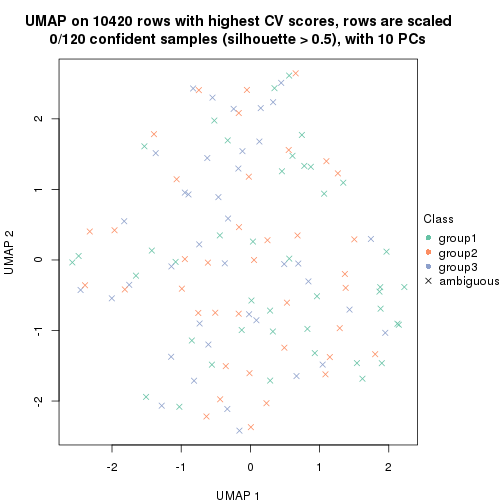
dimension_reduction(res, k = 4, method = "UMAP")
dimension_reduction(res, k = 5, method = "UMAP")
dimension_reduction(res, k = 6, method = "UMAP")
Following heatmap shows how subgroups are split when increasing k:
collect_classes(res)

If matrix rows can be associated to genes, consider to use GO_Enrichment(res,
...) to perform function enrichment for the signature genes.
The object with results only for a single top-value method and a single partition method can be extracted as:
res = res_list["CV", "pam"]
# you can also extract it by
# res = res_list["CV:pam"]
A summary of res and all the functions that can be applied to it:
res
#> A 'ConsensusPartition' object with k = 2, 3, 4, 5, 6.
#> On a matrix with 10420 rows and 120 columns.
#> Top rows (1000, 2000, 3000, 4000, 5000) are extracted by 'CV' method.
#> Subgroups are detected by 'pam' method.
#> Performed in total 1250 partitions by row resampling.
#> Best k for subgroups seems to be 2.
#>
#> Following methods can be applied to this 'ConsensusPartition' object:
#> [1] "cola_report" "collect_classes" "collect_plots"
#> [4] "collect_stats" "colnames" "compare_signatures"
#> [7] "consensus_heatmap" "dimension_reduction" "functional_enrichment"
#> [10] "get_anno_col" "get_anno" "get_classes"
#> [13] "get_consensus" "get_matrix" "get_membership"
#> [16] "get_param" "get_signatures" "get_stats"
#> [19] "is_best_k" "is_stable_k" "membership_heatmap"
#> [22] "ncol" "nrow" "plot_ecdf"
#> [25] "rownames" "select_partition_number" "show"
#> [28] "suggest_best_k" "test_to_known_factors"
collect_plots() function collects all the plots made from res for all k (number of partitions)
into one single page to provide an easy and fast comparison between different k.
collect_plots(res)
The plots are:
k and the heatmap of
predicted classes for each k.k.k.k.All the plots in panels can be made by individual functions and they are plotted later in this section.
select_partition_number() produces several plots showing different
statistics for choosing “optimized” k. There are following statistics:
k;k, the area increased is defined as \(A_k - A_{k-1}\).The detailed explanations of these statistics can be found in the cola vignette.
Generally speaking, lower PAC score, higher mean silhouette score or higher
concordance corresponds to better partition. Rand index and Jaccard index
measure how similar the current partition is compared to partition with k-1.
If they are too similar, we won't accept k is better than k-1.
select_partition_number(res)
The numeric values for all these statistics can be obtained by get_stats().
get_stats(res)
#> k 1-PAC mean_silhouette concordance area_increased Rand Jaccard
#> 2 2 0.00000 0.283 0.631 0.4953 0.496 0.496
#> 3 3 0.00326 0.213 0.521 0.3298 0.698 0.467
#> 4 4 0.03649 0.187 0.460 0.1213 0.849 0.593
#> 5 5 0.10216 0.158 0.429 0.0663 0.866 0.557
#> 6 6 0.19236 0.134 0.397 0.0404 0.885 0.556
suggest_best_k() suggests the best \(k\) based on these statistics. The rules are as follows:
NA.suggest_best_k(res)
#> [1] 2
Following shows the table of the partitions (You need to click the show/hide
code output link to see it). The membership matrix (columns with name p*)
is inferred by
clue::cl_consensus()
function with the SE method. Basically the value in the membership matrix
represents the probability to belong to a certain group. The finall class
label for an item is determined with the group with highest probability it
belongs to.
In get_classes() function, the entropy is calculated from the membership
matrix and the silhouette score is calculated from the consensus matrix.
cbind(get_classes(res, k = 2), get_membership(res, k = 2))
#> class entropy silhouette p1 p2
#> SRR572528 1 0.745 0.458350 0.788 0.212
#> SRR572529 1 0.936 0.335891 0.648 0.352
#> SRR572530 1 0.311 0.472007 0.944 0.056
#> SRR572531 1 0.904 0.423556 0.680 0.320
#> SRR572532 1 0.574 0.473278 0.864 0.136
#> SRR572533 1 0.943 0.347478 0.640 0.360
#> SRR572534 1 0.722 0.450268 0.800 0.200
#> SRR572535 1 0.996 0.110172 0.536 0.464
#> SRR572536 2 1.000 0.023566 0.500 0.500
#> SRR572537 1 0.671 0.476301 0.824 0.176
#> SRR572538 2 0.775 0.453948 0.228 0.772
#> SRR572539 1 0.993 0.086630 0.548 0.452
#> SRR572540 2 0.988 0.239643 0.436 0.564
#> SRR572541 2 0.999 -0.019124 0.484 0.516
#> SRR572542 1 0.891 0.253270 0.692 0.308
#> SRR572543 1 0.987 -0.045842 0.568 0.432
#> SRR572544 1 0.871 0.241854 0.708 0.292
#> SRR572545 1 0.999 0.194904 0.516 0.484
#> SRR572546 2 1.000 0.051629 0.488 0.512
#> SRR572547 2 0.999 0.168715 0.484 0.516
#> SRR572548 1 0.952 0.297037 0.628 0.372
#> SRR572549 1 1.000 0.123861 0.504 0.496
#> SRR572550 1 0.891 0.271594 0.692 0.308
#> SRR572551 1 0.808 0.432180 0.752 0.248
#> SRR572552 2 0.891 0.420344 0.308 0.692
#> SRR572553 2 0.839 0.346292 0.268 0.732
#> SRR572554 1 1.000 -0.088670 0.504 0.496
#> SRR572555 1 1.000 -0.088065 0.504 0.496
#> SRR572556 2 0.925 0.398640 0.340 0.660
#> SRR572557 1 0.991 0.036045 0.556 0.444
#> SRR572558 2 1.000 0.073793 0.496 0.504
#> SRR572559 1 0.917 0.404498 0.668 0.332
#> SRR572560 2 0.998 0.088584 0.472 0.528
#> SRR572561 2 0.985 0.332639 0.428 0.572
#> SRR572562 2 0.814 0.445649 0.252 0.748
#> SRR572563 2 0.949 0.398503 0.368 0.632
#> SRR572564 1 0.936 0.339559 0.648 0.352
#> SRR572565 2 0.961 0.200118 0.384 0.616
#> SRR572566 2 0.866 0.383333 0.288 0.712
#> SRR572567 1 0.861 0.418919 0.716 0.284
#> SRR572568 2 0.821 0.410016 0.256 0.744
#> SRR572569 1 0.949 0.363056 0.632 0.368
#> SRR572570 1 0.886 0.317546 0.696 0.304
#> SRR572571 2 0.949 0.261178 0.368 0.632
#> SRR572572 2 0.998 -0.153094 0.472 0.528
#> SRR572573 1 1.000 0.074916 0.512 0.488
#> SRR572574 2 0.998 0.215491 0.472 0.528
#> SRR572575 1 0.634 0.463261 0.840 0.160
#> SRR572576 1 0.998 0.222620 0.524 0.476
#> SRR572577 1 0.760 0.391093 0.780 0.220
#> SRR572578 2 0.998 0.253151 0.476 0.524
#> SRR572579 1 0.939 0.367443 0.644 0.356
#> SRR572580 1 0.969 0.320171 0.604 0.396
#> SRR572581 2 0.781 0.461378 0.232 0.768
#> SRR572582 2 0.999 0.072680 0.484 0.516
#> SRR572583 2 0.939 0.347031 0.356 0.644
#> SRR572584 2 0.697 0.466498 0.188 0.812
#> SRR572585 1 0.929 0.283102 0.656 0.344
#> SRR572586 2 0.886 0.427272 0.304 0.696
#> SRR572587 2 1.000 0.062836 0.492 0.508
#> SRR572588 2 0.839 0.412222 0.268 0.732
#> SRR572589 2 0.625 0.439355 0.156 0.844
#> SRR572590 1 0.994 -0.076358 0.544 0.456
#> SRR572591 2 0.993 0.273709 0.452 0.548
#> SRR572592 2 0.745 0.448992 0.212 0.788
#> SRR572593 1 0.767 0.445825 0.776 0.224
#> SRR572594 2 0.946 0.325128 0.364 0.636
#> SRR572595 1 0.988 0.180935 0.564 0.436
#> SRR572596 2 0.993 0.031576 0.452 0.548
#> SRR572597 2 0.827 0.428841 0.260 0.740
#> SRR572598 2 0.983 0.309415 0.424 0.576
#> SRR572599 1 0.775 0.450341 0.772 0.228
#> SRR572600 1 0.855 0.412438 0.720 0.280
#> SRR572601 2 0.876 0.365631 0.296 0.704
#> SRR572602 1 0.871 0.376935 0.708 0.292
#> SRR572603 1 0.833 0.428161 0.736 0.264
#> SRR572604 1 0.767 0.477861 0.776 0.224
#> SRR572605 2 0.767 0.444246 0.224 0.776
#> SRR572606 1 0.963 0.350868 0.612 0.388
#> SRR572607 2 0.991 0.319804 0.444 0.556
#> SRR572608 1 0.997 0.085514 0.532 0.468
#> SRR572609 2 0.999 0.088684 0.480 0.520
#> SRR572610 2 0.995 0.023139 0.460 0.540
#> SRR572611 2 0.881 0.353756 0.300 0.700
#> SRR572612 1 0.981 0.000139 0.580 0.420
#> SRR572613 1 0.936 0.338381 0.648 0.352
#> SRR572614 1 0.995 0.143224 0.540 0.460
#> SRR572615 1 1.000 -0.208610 0.500 0.500
#> SRR572616 2 0.992 0.320980 0.448 0.552
#> SRR572617 1 0.981 0.106648 0.580 0.420
#> SRR572618 2 0.943 0.306279 0.360 0.640
#> SRR572619 1 0.855 0.356495 0.720 0.280
#> SRR572620 2 0.988 0.265586 0.436 0.564
#> SRR572621 2 0.821 0.417211 0.256 0.744
#> SRR572622 1 0.995 0.227121 0.540 0.460
#> SRR572623 1 0.955 0.227357 0.624 0.376
#> SRR572624 2 0.980 0.243635 0.416 0.584
#> SRR572625 2 0.991 0.292412 0.444 0.556
#> SRR572626 1 0.814 0.408222 0.748 0.252
#> SRR572627 2 0.900 0.383861 0.316 0.684
#> SRR572628 2 0.966 0.361264 0.392 0.608
#> SRR572629 2 0.995 0.027392 0.460 0.540
#> SRR572630 1 0.913 0.323739 0.672 0.328
#> SRR572631 2 0.839 0.426038 0.268 0.732
#> SRR572632 2 0.730 0.430684 0.204 0.796
#> SRR572633 2 0.997 0.231320 0.468 0.532
#> SRR572634 2 0.946 0.177229 0.364 0.636
#> SRR572635 2 0.913 0.339429 0.328 0.672
#> SRR572636 2 0.952 0.361168 0.372 0.628
#> SRR572637 1 0.981 0.258843 0.580 0.420
#> SRR572638 1 0.871 0.434114 0.708 0.292
#> SRR572639 1 0.706 0.481907 0.808 0.192
#> SRR572640 2 0.981 0.209152 0.420 0.580
#> SRR572641 2 0.994 0.232863 0.456 0.544
#> SRR572642 2 0.975 0.307942 0.408 0.592
#> SRR572643 1 0.745 0.468042 0.788 0.212
#> SRR572644 2 0.760 0.467170 0.220 0.780
#> SRR572645 1 0.939 0.333928 0.644 0.356
#> SRR572646 2 0.795 0.476271 0.240 0.760
#> SRR572647 1 0.946 0.359948 0.636 0.364
cbind(get_classes(res, k = 3), get_membership(res, k = 3))
#> class entropy silhouette p1 p2 p3
#> SRR572528 3 0.770 0.350079 0.200 0.124 0.676
#> SRR572529 3 0.954 0.080294 0.220 0.304 0.476
#> SRR572530 3 0.527 0.370386 0.140 0.044 0.816
#> SRR572531 3 0.909 0.218249 0.372 0.144 0.484
#> SRR572532 3 0.807 0.206481 0.380 0.072 0.548
#> SRR572533 3 0.915 0.294859 0.176 0.300 0.524
#> SRR572534 3 0.873 0.056349 0.416 0.108 0.476
#> SRR572535 1 1.000 0.118627 0.344 0.328 0.328
#> SRR572536 3 0.985 0.086958 0.272 0.312 0.416
#> SRR572537 3 0.763 0.341755 0.264 0.084 0.652
#> SRR572538 2 0.645 0.440019 0.104 0.764 0.132
#> SRR572539 1 0.979 0.173905 0.432 0.260 0.308
#> SRR572540 2 0.956 0.277557 0.252 0.484 0.264
#> SRR572541 3 0.951 0.085390 0.304 0.216 0.480
#> SRR572542 3 0.854 0.256808 0.144 0.260 0.596
#> SRR572543 3 0.828 -0.141030 0.080 0.404 0.516
#> SRR572544 3 0.562 0.290919 0.008 0.260 0.732
#> SRR572545 1 0.858 0.329585 0.600 0.160 0.240
#> SRR572546 1 0.835 0.360955 0.628 0.196 0.176
#> SRR572547 2 0.996 0.150024 0.288 0.360 0.352
#> SRR572548 3 0.958 0.063229 0.368 0.200 0.432
#> SRR572549 1 0.743 0.389555 0.688 0.212 0.100
#> SRR572550 3 0.943 0.095732 0.292 0.212 0.496
#> SRR572551 3 0.713 0.275938 0.344 0.036 0.620
#> SRR572552 2 0.858 0.265602 0.160 0.600 0.240
#> SRR572553 1 0.778 0.212353 0.556 0.388 0.056
#> SRR572554 1 0.973 -0.042948 0.400 0.224 0.376
#> SRR572555 1 0.994 0.088337 0.372 0.284 0.344
#> SRR572556 2 0.545 0.473192 0.044 0.804 0.152
#> SRR572557 3 0.960 0.014331 0.212 0.336 0.452
#> SRR572558 1 0.953 0.090464 0.488 0.248 0.264
#> SRR572559 3 0.907 0.064153 0.384 0.140 0.476
#> SRR572560 3 0.949 0.113197 0.184 0.392 0.424
#> SRR572561 2 0.951 0.244116 0.216 0.480 0.304
#> SRR572562 2 0.879 0.245726 0.392 0.492 0.116
#> SRR572563 2 0.968 0.195033 0.364 0.420 0.216
#> SRR572564 3 0.942 0.152383 0.352 0.184 0.464
#> SRR572565 3 0.997 -0.070214 0.296 0.340 0.364
#> SRR572566 1 0.823 0.193427 0.552 0.364 0.084
#> SRR572567 1 0.899 0.096836 0.476 0.132 0.392
#> SRR572568 2 0.869 0.404331 0.268 0.580 0.152
#> SRR572569 1 0.940 0.054065 0.432 0.172 0.396
#> SRR572570 3 0.737 0.387388 0.104 0.200 0.696
#> SRR572571 1 0.859 0.350721 0.560 0.320 0.120
#> SRR572572 1 0.848 0.372540 0.600 0.260 0.140
#> SRR572573 2 0.976 0.104519 0.272 0.444 0.284
#> SRR572574 2 0.797 0.388161 0.088 0.612 0.300
#> SRR572575 3 0.734 0.356529 0.248 0.076 0.676
#> SRR572576 1 0.737 0.259146 0.688 0.092 0.220
#> SRR572577 3 0.818 0.348643 0.208 0.152 0.640
#> SRR572578 2 0.989 -0.038903 0.304 0.408 0.288
#> SRR572579 1 0.718 0.273168 0.684 0.068 0.248
#> SRR572580 1 0.835 0.162595 0.568 0.100 0.332
#> SRR572581 2 0.771 0.426696 0.196 0.676 0.128
#> SRR572582 2 0.993 -0.042708 0.276 0.368 0.356
#> SRR572583 2 0.936 0.357651 0.244 0.516 0.240
#> SRR572584 2 0.671 0.453938 0.176 0.740 0.084
#> SRR572585 1 0.889 0.216645 0.532 0.140 0.328
#> SRR572586 2 0.627 0.480701 0.088 0.772 0.140
#> SRR572587 2 0.987 0.121555 0.260 0.396 0.344
#> SRR572588 2 0.753 0.179496 0.368 0.584 0.048
#> SRR572589 2 0.738 0.282489 0.320 0.628 0.052
#> SRR572590 3 0.998 -0.073589 0.328 0.308 0.364
#> SRR572591 1 0.986 0.006138 0.404 0.336 0.260
#> SRR572592 2 0.734 0.331038 0.300 0.644 0.056
#> SRR572593 3 0.748 0.256371 0.296 0.064 0.640
#> SRR572594 2 0.962 0.240144 0.280 0.472 0.248
#> SRR572595 3 0.988 0.042262 0.296 0.292 0.412
#> SRR572596 1 0.999 -0.000262 0.348 0.312 0.340
#> SRR572597 2 0.813 0.399146 0.148 0.644 0.208
#> SRR572598 2 0.887 0.357258 0.152 0.552 0.296
#> SRR572599 3 0.752 0.169521 0.388 0.044 0.568
#> SRR572600 3 0.951 0.082327 0.336 0.200 0.464
#> SRR572601 1 0.868 0.109548 0.476 0.420 0.104
#> SRR572602 3 0.740 0.380346 0.144 0.152 0.704
#> SRR572603 1 0.741 -0.100471 0.548 0.036 0.416
#> SRR572604 3 0.839 0.226581 0.316 0.108 0.576
#> SRR572605 2 0.860 0.285820 0.408 0.492 0.100
#> SRR572606 3 0.931 0.062824 0.384 0.164 0.452
#> SRR572607 2 0.823 0.424023 0.120 0.616 0.264
#> SRR572608 3 0.973 0.053286 0.340 0.232 0.428
#> SRR572609 1 0.982 0.091138 0.424 0.312 0.264
#> SRR572610 1 0.834 0.382353 0.612 0.256 0.132
#> SRR572611 2 0.964 -0.097120 0.356 0.432 0.212
#> SRR572612 3 0.821 0.039224 0.076 0.404 0.520
#> SRR572613 3 0.850 0.199169 0.324 0.112 0.564
#> SRR572614 3 0.914 0.115384 0.144 0.408 0.448
#> SRR572615 2 0.809 0.348574 0.084 0.584 0.332
#> SRR572616 2 0.965 0.262565 0.264 0.468 0.268
#> SRR572617 3 0.919 0.188165 0.180 0.300 0.520
#> SRR572618 1 0.834 0.347803 0.624 0.224 0.152
#> SRR572619 1 0.809 0.233866 0.584 0.084 0.332
#> SRR572620 2 0.980 0.351719 0.312 0.428 0.260
#> SRR572621 2 0.854 0.336430 0.260 0.596 0.144
#> SRR572622 3 0.919 0.276740 0.180 0.300 0.520
#> SRR572623 3 0.851 0.325605 0.160 0.232 0.608
#> SRR572624 2 0.947 0.319865 0.228 0.496 0.276
#> SRR572625 2 0.851 0.412287 0.116 0.568 0.316
#> SRR572626 3 0.798 0.252432 0.272 0.100 0.628
#> SRR572627 2 0.946 -0.023554 0.400 0.420 0.180
#> SRR572628 2 0.905 0.307937 0.168 0.536 0.296
#> SRR572629 1 0.971 0.166532 0.448 0.244 0.308
#> SRR572630 1 0.804 0.297402 0.624 0.104 0.272
#> SRR572631 2 0.803 0.121749 0.420 0.516 0.064
#> SRR572632 2 0.765 0.134639 0.440 0.516 0.044
#> SRR572633 2 0.824 0.287129 0.076 0.504 0.420
#> SRR572634 1 0.942 0.307883 0.472 0.340 0.188
#> SRR572635 1 0.890 0.141766 0.512 0.356 0.132
#> SRR572636 2 0.929 0.364532 0.252 0.524 0.224
#> SRR572637 1 0.971 0.096874 0.420 0.224 0.356
#> SRR572638 3 0.873 0.129366 0.424 0.108 0.468
#> SRR572639 3 0.873 0.205809 0.368 0.116 0.516
#> SRR572640 1 0.981 0.104879 0.412 0.248 0.340
#> SRR572641 2 0.780 0.264166 0.056 0.552 0.392
#> SRR572642 2 0.978 0.080786 0.264 0.436 0.300
#> SRR572643 3 0.706 0.326109 0.236 0.068 0.696
#> SRR572644 2 0.737 0.472683 0.168 0.704 0.128
#> SRR572645 3 0.804 0.337723 0.100 0.280 0.620
#> SRR572646 2 0.710 0.454220 0.140 0.724 0.136
#> SRR572647 3 0.994 -0.046984 0.324 0.292 0.384
cbind(get_classes(res, k = 4), get_membership(res, k = 4))
#> class entropy silhouette p1 p2 p3 p4
#> SRR572528 3 0.779 0.369764 0.196 0.060 0.596 0.148
#> SRR572529 3 0.958 -0.147418 0.260 0.120 0.340 0.280
#> SRR572530 3 0.566 0.380590 0.096 0.024 0.756 0.124
#> SRR572531 3 0.933 0.174726 0.268 0.132 0.420 0.180
#> SRR572532 3 0.866 0.057385 0.200 0.048 0.408 0.344
#> SRR572533 3 0.829 0.336342 0.168 0.184 0.560 0.088
#> SRR572534 4 0.901 0.093828 0.280 0.068 0.244 0.408
#> SRR572535 1 0.900 0.182533 0.452 0.164 0.280 0.104
#> SRR572536 4 0.949 0.141594 0.156 0.188 0.248 0.408
#> SRR572537 3 0.770 0.344548 0.144 0.044 0.584 0.228
#> SRR572538 2 0.813 0.329405 0.124 0.548 0.072 0.256
#> SRR572539 1 0.975 -0.057759 0.324 0.160 0.220 0.296
#> SRR572540 2 0.907 0.260132 0.240 0.444 0.224 0.092
#> SRR572541 4 0.944 0.225547 0.228 0.116 0.272 0.384
#> SRR572542 3 0.873 0.081667 0.064 0.228 0.468 0.240
#> SRR572543 3 0.777 -0.150425 0.012 0.412 0.416 0.160
#> SRR572544 3 0.416 0.366133 0.004 0.220 0.772 0.004
#> SRR572545 1 0.796 0.081490 0.556 0.044 0.172 0.228
#> SRR572546 1 0.572 0.354471 0.752 0.064 0.148 0.036
#> SRR572547 4 0.953 0.113680 0.124 0.284 0.228 0.364
#> SRR572548 4 0.774 0.314824 0.104 0.112 0.164 0.620
#> SRR572549 1 0.522 0.329324 0.796 0.084 0.044 0.076
#> SRR572550 4 0.793 0.259971 0.068 0.112 0.256 0.564
#> SRR572551 3 0.775 0.287687 0.268 0.032 0.552 0.148
#> SRR572552 2 0.957 0.034583 0.216 0.368 0.136 0.280
#> SRR572553 1 0.774 0.221017 0.480 0.244 0.004 0.272
#> SRR572554 4 0.928 0.309884 0.184 0.184 0.176 0.456
#> SRR572555 1 0.984 0.029306 0.312 0.240 0.276 0.172
#> SRR572556 2 0.745 0.438144 0.136 0.648 0.108 0.108
#> SRR572557 3 0.955 -0.022226 0.160 0.296 0.372 0.172
#> SRR572558 4 0.857 0.285370 0.192 0.188 0.092 0.528
#> SRR572559 3 0.910 0.096849 0.296 0.104 0.428 0.172
#> SRR572560 4 0.963 0.132005 0.136 0.232 0.284 0.348
#> SRR572561 2 0.914 -0.043492 0.128 0.400 0.136 0.336
#> SRR572562 2 0.869 0.257113 0.264 0.476 0.068 0.192
#> SRR572563 2 0.924 0.117934 0.316 0.404 0.148 0.132
#> SRR572564 4 0.884 0.127378 0.164 0.088 0.288 0.460
#> SRR572565 4 0.942 0.221881 0.300 0.136 0.176 0.388
#> SRR572566 1 0.828 0.238119 0.508 0.268 0.048 0.176
#> SRR572567 4 0.876 0.020647 0.316 0.040 0.272 0.372
#> SRR572568 2 0.709 0.379175 0.184 0.652 0.044 0.120
#> SRR572569 1 0.809 0.131594 0.500 0.108 0.332 0.060
#> SRR572570 3 0.737 0.348774 0.084 0.128 0.652 0.136
#> SRR572571 1 0.670 0.273272 0.676 0.100 0.036 0.188
#> SRR572572 1 0.622 0.305551 0.732 0.100 0.052 0.116
#> SRR572573 2 0.949 0.031938 0.128 0.392 0.248 0.232
#> SRR572574 2 0.645 0.426954 0.024 0.672 0.224 0.080
#> SRR572575 3 0.767 0.363364 0.132 0.084 0.624 0.160
#> SRR572576 1 0.831 0.201342 0.532 0.096 0.108 0.264
#> SRR572577 3 0.868 0.261935 0.120 0.124 0.508 0.248
#> SRR572578 1 0.982 -0.014866 0.320 0.280 0.172 0.228
#> SRR572579 1 0.806 0.296351 0.580 0.080 0.148 0.192
#> SRR572580 1 0.859 0.228227 0.520 0.092 0.224 0.164
#> SRR572581 2 0.766 0.378773 0.260 0.584 0.084 0.072
#> SRR572582 4 0.997 0.059636 0.252 0.236 0.224 0.288
#> SRR572583 2 0.897 0.277444 0.148 0.496 0.192 0.164
#> SRR572584 2 0.680 0.432289 0.116 0.696 0.076 0.112
#> SRR572585 1 0.904 0.023257 0.420 0.084 0.196 0.300
#> SRR572586 2 0.614 0.450923 0.092 0.740 0.060 0.108
#> SRR572587 2 0.922 0.092626 0.108 0.380 0.340 0.172
#> SRR572588 2 0.745 0.105818 0.424 0.464 0.032 0.080
#> SRR572589 2 0.780 0.263904 0.392 0.472 0.048 0.088
#> SRR572590 4 0.967 0.208600 0.160 0.220 0.248 0.372
#> SRR572591 1 0.988 0.042069 0.324 0.244 0.200 0.232
#> SRR572592 2 0.796 0.346721 0.248 0.540 0.036 0.176
#> SRR572593 3 0.676 0.302893 0.236 0.040 0.652 0.072
#> SRR572594 2 0.880 0.202727 0.332 0.396 0.220 0.052
#> SRR572595 3 0.920 -0.103891 0.344 0.084 0.352 0.220
#> SRR572596 1 0.977 -0.065520 0.300 0.272 0.280 0.148
#> SRR572597 2 0.950 0.289922 0.240 0.408 0.152 0.200
#> SRR572598 2 0.890 0.313019 0.148 0.492 0.232 0.128
#> SRR572599 3 0.727 0.147044 0.384 0.052 0.516 0.048
#> SRR572600 4 0.925 0.140636 0.264 0.080 0.300 0.356
#> SRR572601 1 0.847 0.192819 0.496 0.288 0.072 0.144
#> SRR572602 3 0.733 0.311995 0.072 0.072 0.620 0.236
#> SRR572603 1 0.796 -0.030725 0.460 0.052 0.392 0.096
#> SRR572604 3 0.854 0.266168 0.224 0.096 0.528 0.152
#> SRR572605 2 0.861 0.139221 0.216 0.432 0.044 0.308
#> SRR572606 1 0.822 -0.039832 0.424 0.084 0.412 0.080
#> SRR572607 2 0.854 0.404615 0.140 0.536 0.212 0.112
#> SRR572608 3 0.962 -0.161056 0.220 0.144 0.364 0.272
#> SRR572609 4 0.895 0.233800 0.208 0.232 0.092 0.468
#> SRR572610 1 0.772 0.314080 0.612 0.100 0.092 0.196
#> SRR572611 4 0.947 0.162297 0.264 0.224 0.124 0.388
#> SRR572612 3 0.838 0.065029 0.036 0.352 0.428 0.184
#> SRR572613 3 0.879 0.014668 0.216 0.052 0.396 0.336
#> SRR572614 3 0.946 0.104879 0.176 0.268 0.404 0.152
#> SRR572615 2 0.538 0.395592 0.016 0.700 0.264 0.020
#> SRR572616 2 0.890 -0.019498 0.112 0.400 0.120 0.368
#> SRR572617 3 0.942 -0.070248 0.128 0.196 0.396 0.280
#> SRR572618 1 0.720 0.341939 0.668 0.116 0.096 0.120
#> SRR572619 1 0.862 0.167029 0.488 0.064 0.244 0.204
#> SRR572620 2 0.936 0.159222 0.124 0.396 0.184 0.296
#> SRR572621 2 0.892 0.159088 0.212 0.436 0.072 0.280
#> SRR572622 3 0.876 0.312478 0.184 0.168 0.520 0.128
#> SRR572623 3 0.834 0.196246 0.044 0.196 0.496 0.264
#> SRR572624 2 0.843 0.311354 0.232 0.508 0.204 0.056
#> SRR572625 2 0.740 0.423048 0.084 0.592 0.272 0.052
#> SRR572626 3 0.822 0.176408 0.216 0.084 0.560 0.140
#> SRR572627 1 0.969 0.079375 0.328 0.288 0.140 0.244
#> SRR572628 2 0.940 0.071170 0.176 0.356 0.128 0.340
#> SRR572629 4 0.904 0.207865 0.280 0.100 0.176 0.444
#> SRR572630 1 0.814 0.221807 0.584 0.136 0.172 0.108
#> SRR572631 2 0.848 0.000409 0.356 0.416 0.040 0.188
#> SRR572632 1 0.753 -0.100421 0.504 0.376 0.040 0.080
#> SRR572633 2 0.792 0.218799 0.064 0.432 0.428 0.076
#> SRR572634 1 0.883 0.201741 0.516 0.156 0.172 0.156
#> SRR572635 1 0.837 0.238032 0.540 0.232 0.088 0.140
#> SRR572636 2 0.807 0.222692 0.064 0.468 0.092 0.376
#> SRR572637 1 0.896 0.102593 0.448 0.104 0.296 0.152
#> SRR572638 3 0.863 0.157727 0.344 0.096 0.448 0.112
#> SRR572639 3 0.903 0.168972 0.288 0.120 0.448 0.144
#> SRR572640 1 0.976 -0.082104 0.360 0.184 0.220 0.236
#> SRR572641 2 0.878 0.231085 0.180 0.412 0.344 0.064
#> SRR572642 1 0.990 -0.144826 0.300 0.280 0.216 0.204
#> SRR572643 3 0.595 0.388828 0.100 0.056 0.752 0.092
#> SRR572644 2 0.664 0.444060 0.108 0.708 0.076 0.108
#> SRR572645 3 0.692 0.354266 0.104 0.140 0.684 0.072
#> SRR572646 2 0.731 0.443540 0.188 0.644 0.080 0.088
#> SRR572647 1 0.924 0.129442 0.420 0.156 0.292 0.132
cbind(get_classes(res, k = 5), get_membership(res, k = 5))
#> class entropy silhouette p1 p2 p3 p4 p5
#> SRR572528 1 0.731 0.38058 0.604 0.032 0.096 0.148 0.120
#> SRR572529 4 0.976 -0.13153 0.216 0.100 0.236 0.244 0.204
#> SRR572530 1 0.527 0.37483 0.748 0.016 0.140 0.056 0.040
#> SRR572531 1 0.936 0.10983 0.308 0.060 0.228 0.244 0.160
#> SRR572532 3 0.880 -0.05172 0.312 0.020 0.316 0.164 0.188
#> SRR572533 1 0.789 0.35658 0.572 0.104 0.088 0.136 0.100
#> SRR572534 3 0.855 0.11816 0.136 0.040 0.456 0.216 0.152
#> SRR572535 4 0.921 0.12959 0.228 0.112 0.144 0.396 0.120
#> SRR572536 5 0.944 0.11588 0.192 0.160 0.148 0.124 0.376
#> SRR572537 1 0.748 0.34571 0.564 0.016 0.160 0.096 0.164
#> SRR572538 2 0.758 0.19593 0.020 0.496 0.068 0.116 0.300
#> SRR572539 3 0.893 0.08720 0.148 0.112 0.384 0.288 0.068
#> SRR572540 2 0.913 0.21477 0.216 0.388 0.096 0.208 0.092
#> SRR572541 5 0.854 0.17373 0.192 0.064 0.124 0.136 0.484
#> SRR572542 1 0.916 0.07086 0.384 0.140 0.232 0.072 0.172
#> SRR572543 2 0.767 0.14199 0.368 0.404 0.148 0.004 0.076
#> SRR572544 1 0.349 0.38850 0.824 0.148 0.016 0.000 0.012
#> SRR572545 4 0.837 0.07776 0.112 0.036 0.124 0.432 0.296
#> SRR572546 4 0.560 0.33415 0.120 0.064 0.036 0.740 0.040
#> SRR572547 3 0.915 -0.00246 0.108 0.216 0.360 0.072 0.244
#> SRR572548 5 0.729 0.17033 0.084 0.060 0.216 0.052 0.588
#> SRR572549 4 0.529 0.33096 0.032 0.052 0.076 0.768 0.072
#> SRR572550 3 0.802 0.07682 0.156 0.076 0.500 0.036 0.232
#> SRR572551 1 0.749 0.28568 0.532 0.012 0.096 0.248 0.112
#> SRR572552 3 0.879 0.18145 0.068 0.284 0.396 0.168 0.084
#> SRR572553 4 0.814 0.14771 0.000 0.160 0.208 0.424 0.208
#> SRR572554 3 0.857 0.02882 0.088 0.092 0.436 0.096 0.288
#> SRR572555 3 0.972 0.00151 0.216 0.208 0.244 0.240 0.092
#> SRR572556 2 0.735 0.38449 0.104 0.620 0.076 0.124 0.076
#> SRR572557 1 0.941 -0.01792 0.344 0.240 0.116 0.104 0.196
#> SRR572558 5 0.823 0.14268 0.040 0.120 0.236 0.116 0.488
#> SRR572559 1 0.894 0.07982 0.376 0.064 0.088 0.244 0.228
#> SRR572560 3 0.956 0.07603 0.240 0.172 0.288 0.080 0.220
#> SRR572561 3 0.924 0.05102 0.084 0.240 0.332 0.096 0.248
#> SRR572562 2 0.871 0.21357 0.040 0.416 0.124 0.244 0.176
#> SRR572563 2 0.934 0.08085 0.132 0.352 0.152 0.264 0.100
#> SRR572564 5 0.946 0.04774 0.240 0.084 0.244 0.132 0.300
#> SRR572565 3 0.930 0.05914 0.080 0.104 0.304 0.264 0.248
#> SRR572566 4 0.861 0.16498 0.032 0.176 0.144 0.436 0.212
#> SRR572567 5 0.845 0.19791 0.176 0.044 0.096 0.224 0.460
#> SRR572568 2 0.727 0.35192 0.044 0.608 0.140 0.144 0.064
#> SRR572569 4 0.794 0.15825 0.280 0.072 0.072 0.500 0.076
#> SRR572570 1 0.682 0.35768 0.652 0.080 0.148 0.076 0.044
#> SRR572571 4 0.624 0.24395 0.012 0.080 0.168 0.672 0.068
#> SRR572572 4 0.650 0.29321 0.040 0.080 0.104 0.684 0.092
#> SRR572573 2 0.904 -0.04582 0.164 0.340 0.068 0.112 0.316
#> SRR572574 2 0.645 0.41427 0.196 0.648 0.060 0.016 0.080
#> SRR572575 1 0.726 0.35615 0.576 0.036 0.236 0.084 0.068
#> SRR572576 4 0.807 0.18037 0.096 0.060 0.080 0.492 0.272
#> SRR572577 1 0.869 0.16427 0.420 0.108 0.288 0.072 0.112
#> SRR572578 3 0.977 0.06898 0.116 0.204 0.256 0.252 0.172
#> SRR572579 4 0.795 0.28007 0.124 0.052 0.116 0.552 0.156
#> SRR572580 4 0.878 0.22030 0.176 0.096 0.100 0.464 0.164
#> SRR572581 2 0.748 0.35695 0.036 0.568 0.112 0.212 0.072
#> SRR572582 5 0.977 0.01672 0.116 0.176 0.228 0.204 0.276
#> SRR572583 2 0.889 0.23423 0.156 0.464 0.116 0.124 0.140
#> SRR572584 2 0.680 0.39849 0.044 0.660 0.084 0.116 0.096
#> SRR572585 4 0.908 -0.08178 0.124 0.092 0.328 0.340 0.116
#> SRR572586 2 0.554 0.41444 0.036 0.752 0.092 0.064 0.056
#> SRR572587 2 0.910 0.02443 0.264 0.332 0.244 0.068 0.092
#> SRR572588 2 0.784 0.12211 0.012 0.400 0.096 0.376 0.116
#> SRR572589 2 0.781 0.26069 0.048 0.444 0.060 0.360 0.088
#> SRR572590 3 0.857 0.17902 0.132 0.168 0.496 0.096 0.108
#> SRR572591 3 0.928 0.05654 0.140 0.204 0.320 0.272 0.064
#> SRR572592 2 0.844 0.31269 0.040 0.472 0.116 0.200 0.172
#> SRR572593 1 0.759 0.26462 0.576 0.036 0.136 0.160 0.092
#> SRR572594 2 0.847 0.23485 0.224 0.368 0.060 0.308 0.040
#> SRR572595 3 0.924 0.09563 0.256 0.064 0.296 0.268 0.116
#> SRR572596 4 0.972 -0.02506 0.240 0.224 0.096 0.252 0.188
#> SRR572597 2 0.903 0.19539 0.112 0.388 0.064 0.220 0.216
#> SRR572598 2 0.856 0.27732 0.176 0.484 0.160 0.112 0.068
#> SRR572599 1 0.707 0.14087 0.492 0.020 0.040 0.360 0.088
#> SRR572600 3 0.904 0.13704 0.164 0.056 0.396 0.220 0.164
#> SRR572601 4 0.827 0.18051 0.028 0.236 0.156 0.468 0.112
#> SRR572602 1 0.734 0.29426 0.564 0.064 0.084 0.040 0.248
#> SRR572603 4 0.758 0.00975 0.344 0.024 0.096 0.468 0.068
#> SRR572604 1 0.859 0.22337 0.464 0.064 0.180 0.200 0.092
#> SRR572605 2 0.900 0.08853 0.044 0.368 0.260 0.168 0.160
#> SRR572606 1 0.830 0.05877 0.396 0.060 0.096 0.364 0.084
#> SRR572607 2 0.873 0.32251 0.188 0.472 0.112 0.136 0.092
#> SRR572608 1 0.964 -0.11497 0.276 0.108 0.256 0.136 0.224
#> SRR572609 5 0.880 0.11663 0.064 0.140 0.220 0.136 0.440
#> SRR572610 4 0.735 0.28708 0.048 0.060 0.092 0.580 0.220
#> SRR572611 3 0.932 0.00742 0.064 0.192 0.316 0.156 0.272
#> SRR572612 1 0.855 0.08219 0.384 0.288 0.196 0.024 0.108
#> SRR572613 1 0.884 0.05222 0.396 0.044 0.132 0.172 0.256
#> SRR572614 1 0.981 0.00580 0.288 0.208 0.144 0.156 0.204
#> SRR572615 2 0.497 0.39817 0.252 0.696 0.028 0.004 0.020
#> SRR572616 3 0.920 0.12341 0.076 0.276 0.328 0.100 0.220
#> SRR572617 3 0.886 0.09810 0.304 0.168 0.372 0.068 0.088
#> SRR572618 4 0.756 0.32674 0.084 0.104 0.092 0.604 0.116
#> SRR572619 4 0.836 0.11551 0.192 0.040 0.272 0.428 0.068
#> SRR572620 5 0.865 -0.05526 0.120 0.332 0.084 0.076 0.388
#> SRR572621 3 0.914 0.03169 0.052 0.300 0.320 0.176 0.152
#> SRR572622 1 0.846 0.31425 0.512 0.124 0.092 0.156 0.116
#> SRR572623 1 0.831 0.06966 0.384 0.120 0.092 0.040 0.364
#> SRR572624 2 0.807 0.34301 0.164 0.508 0.036 0.204 0.088
#> SRR572625 2 0.745 0.38095 0.220 0.572 0.096 0.064 0.048
#> SRR572626 1 0.885 0.10873 0.440 0.080 0.224 0.140 0.116
#> SRR572627 5 0.948 -0.02246 0.124 0.224 0.092 0.268 0.292
#> SRR572628 3 0.935 0.08301 0.068 0.268 0.320 0.160 0.184
#> SRR572629 5 0.812 0.17126 0.116 0.068 0.128 0.144 0.544
#> SRR572630 4 0.837 0.17031 0.116 0.088 0.160 0.520 0.116
#> SRR572631 2 0.851 -0.05414 0.012 0.340 0.144 0.328 0.176
#> SRR572632 4 0.825 -0.08442 0.048 0.324 0.092 0.432 0.104
#> SRR572633 1 0.804 -0.16453 0.388 0.380 0.128 0.028 0.076
#> SRR572634 4 0.872 0.15859 0.160 0.144 0.044 0.436 0.216
#> SRR572635 4 0.820 0.22079 0.068 0.204 0.068 0.508 0.152
#> SRR572636 2 0.831 0.10143 0.036 0.388 0.324 0.060 0.192
#> SRR572637 4 0.915 0.08941 0.264 0.076 0.136 0.372 0.152
#> SRR572638 1 0.831 0.19001 0.428 0.040 0.172 0.292 0.068
#> SRR572639 1 0.917 0.11312 0.368 0.084 0.116 0.268 0.164
#> SRR572640 4 0.975 -0.04482 0.144 0.136 0.196 0.284 0.240
#> SRR572641 1 0.905 -0.11961 0.328 0.324 0.128 0.160 0.060
#> SRR572642 4 0.972 -0.16890 0.140 0.232 0.224 0.280 0.124
#> SRR572643 1 0.608 0.39652 0.716 0.044 0.060 0.096 0.084
#> SRR572644 2 0.646 0.40153 0.040 0.660 0.184 0.076 0.040
#> SRR572645 1 0.651 0.35893 0.688 0.092 0.092 0.060 0.068
#> SRR572646 2 0.706 0.41239 0.072 0.620 0.052 0.188 0.068
#> SRR572647 4 0.904 0.11304 0.280 0.132 0.116 0.384 0.088
cbind(get_classes(res, k = 6), get_membership(res, k = 6))
#> class entropy silhouette p1 p2 p3 p4 p5 p6
#> SRR572528 5 0.696 0.351138 0.088 0.020 0.084 0.128 0.612 0.068
#> SRR572529 3 0.854 0.150165 0.096 0.068 0.432 0.228 0.108 0.068
#> SRR572530 5 0.520 0.367841 0.020 0.012 0.088 0.036 0.736 0.108
#> SRR572531 5 0.970 0.006370 0.108 0.088 0.220 0.176 0.232 0.176
#> SRR572532 6 0.909 -0.033863 0.128 0.024 0.156 0.140 0.268 0.284
#> SRR572533 5 0.775 0.315885 0.088 0.088 0.076 0.128 0.556 0.064
#> SRR572534 6 0.836 0.162883 0.116 0.028 0.088 0.228 0.104 0.436
#> SRR572535 4 0.883 0.065853 0.068 0.088 0.260 0.344 0.188 0.052
#> SRR572536 1 0.911 0.054837 0.388 0.140 0.080 0.092 0.164 0.136
#> SRR572537 5 0.820 0.305895 0.132 0.036 0.160 0.100 0.488 0.084
#> SRR572538 2 0.816 0.157352 0.312 0.392 0.068 0.128 0.024 0.076
#> SRR572539 6 0.850 0.081324 0.056 0.100 0.080 0.180 0.128 0.456
#> SRR572540 2 0.916 0.180142 0.052 0.348 0.112 0.192 0.180 0.116
#> SRR572541 1 0.814 0.154189 0.508 0.052 0.120 0.072 0.120 0.128
#> SRR572542 5 0.901 -0.017659 0.084 0.128 0.216 0.056 0.368 0.148
#> SRR572543 2 0.779 0.168809 0.068 0.388 0.068 0.004 0.332 0.140
#> SRR572544 5 0.305 0.362793 0.012 0.144 0.008 0.000 0.832 0.004
#> SRR572545 1 0.809 0.034178 0.360 0.016 0.228 0.284 0.068 0.044
#> SRR572546 4 0.524 0.346667 0.024 0.064 0.044 0.748 0.092 0.028
#> SRR572547 6 0.858 -0.059856 0.128 0.140 0.240 0.028 0.072 0.392
#> SRR572548 1 0.746 0.099025 0.540 0.060 0.080 0.052 0.048 0.220
#> SRR572549 4 0.491 0.308130 0.084 0.036 0.068 0.768 0.016 0.028
#> SRR572550 6 0.851 0.087515 0.144 0.052 0.204 0.036 0.148 0.416
#> SRR572551 5 0.755 0.279385 0.128 0.016 0.068 0.236 0.500 0.052
#> SRR572552 6 0.904 -0.016555 0.056 0.220 0.272 0.112 0.060 0.280
#> SRR572553 4 0.788 0.185034 0.112 0.108 0.068 0.424 0.004 0.284
#> SRR572554 6 0.853 0.070397 0.212 0.072 0.160 0.048 0.084 0.424
#> SRR572555 6 0.957 -0.005606 0.108 0.172 0.072 0.188 0.188 0.272
#> SRR572556 2 0.749 0.349451 0.060 0.568 0.132 0.112 0.092 0.036
#> SRR572557 5 0.935 -0.133763 0.192 0.176 0.240 0.084 0.256 0.052
#> SRR572558 1 0.852 0.012615 0.340 0.052 0.280 0.108 0.024 0.196
#> SRR572559 5 0.874 0.085167 0.228 0.056 0.108 0.236 0.336 0.036
#> SRR572560 6 0.933 0.060824 0.184 0.144 0.100 0.056 0.208 0.308
#> SRR572561 6 0.914 0.123400 0.208 0.192 0.100 0.088 0.068 0.344
#> SRR572562 2 0.842 0.161692 0.120 0.412 0.072 0.248 0.028 0.120
#> SRR572563 2 0.929 0.059189 0.096 0.336 0.112 0.232 0.100 0.124
#> SRR572564 1 0.909 0.045215 0.328 0.052 0.120 0.080 0.188 0.232
#> SRR572565 1 0.905 0.026880 0.308 0.060 0.156 0.164 0.052 0.260
#> SRR572566 4 0.843 0.189135 0.152 0.144 0.132 0.440 0.016 0.116
#> SRR572567 1 0.834 0.093928 0.476 0.044 0.124 0.160 0.116 0.080
#> SRR572568 2 0.716 0.304369 0.128 0.572 0.032 0.072 0.028 0.168
#> SRR572569 4 0.731 0.236883 0.044 0.064 0.084 0.544 0.228 0.036
#> SRR572570 5 0.658 0.346699 0.024 0.072 0.104 0.072 0.652 0.076
#> SRR572571 4 0.667 0.254183 0.072 0.056 0.044 0.612 0.024 0.192
#> SRR572572 4 0.595 0.230908 0.060 0.048 0.184 0.664 0.020 0.024
#> SRR572573 2 0.935 0.004942 0.280 0.288 0.108 0.092 0.120 0.112
#> SRR572574 2 0.623 0.398651 0.088 0.644 0.032 0.016 0.176 0.044
#> SRR572575 5 0.759 0.295112 0.048 0.040 0.204 0.076 0.532 0.100
#> SRR572576 4 0.784 0.182632 0.340 0.052 0.052 0.420 0.064 0.072
#> SRR572577 5 0.862 0.144593 0.060 0.104 0.104 0.068 0.388 0.276
#> SRR572578 3 0.940 0.016187 0.100 0.160 0.292 0.240 0.068 0.140
#> SRR572579 4 0.781 0.304719 0.160 0.028 0.108 0.528 0.092 0.084
#> SRR572580 4 0.916 0.115567 0.252 0.096 0.112 0.332 0.140 0.068
#> SRR572581 2 0.750 0.321575 0.044 0.512 0.156 0.208 0.020 0.060
#> SRR572582 6 0.961 -0.016957 0.232 0.132 0.088 0.188 0.108 0.252
#> SRR572583 2 0.877 0.110269 0.068 0.428 0.164 0.072 0.132 0.136
#> SRR572584 2 0.729 0.343516 0.112 0.592 0.116 0.068 0.040 0.072
#> SRR572585 6 0.877 0.070032 0.076 0.044 0.120 0.280 0.124 0.356
#> SRR572586 2 0.528 0.384150 0.044 0.748 0.052 0.060 0.016 0.080
#> SRR572587 5 0.932 -0.081398 0.072 0.232 0.156 0.060 0.260 0.220
#> SRR572588 4 0.742 -0.046694 0.064 0.376 0.068 0.400 0.004 0.088
#> SRR572589 2 0.845 0.198224 0.088 0.388 0.128 0.288 0.040 0.068
#> SRR572590 6 0.922 0.030267 0.164 0.132 0.212 0.076 0.076 0.340
#> SRR572591 4 0.955 -0.039747 0.076 0.188 0.108 0.264 0.136 0.228
#> SRR572592 2 0.835 0.240131 0.112 0.436 0.044 0.192 0.040 0.176
#> SRR572593 5 0.789 0.148036 0.056 0.024 0.228 0.124 0.480 0.088
#> SRR572594 2 0.813 0.184842 0.036 0.360 0.036 0.288 0.228 0.052
#> SRR572595 4 0.967 -0.174074 0.140 0.064 0.188 0.224 0.208 0.176
#> SRR572596 1 0.948 0.058619 0.316 0.156 0.180 0.116 0.156 0.076
#> SRR572597 2 0.877 0.147579 0.280 0.328 0.048 0.172 0.128 0.044
#> SRR572598 2 0.810 0.215635 0.024 0.472 0.188 0.112 0.144 0.060
#> SRR572599 5 0.734 0.085606 0.028 0.052 0.076 0.352 0.448 0.044
#> SRR572600 6 0.919 0.057110 0.120 0.060 0.156 0.192 0.116 0.356
#> SRR572601 4 0.790 0.210465 0.076 0.224 0.080 0.460 0.008 0.152
#> SRR572602 5 0.698 0.281184 0.244 0.064 0.040 0.016 0.552 0.084
#> SRR572603 4 0.730 0.080294 0.048 0.036 0.028 0.476 0.316 0.096
#> SRR572604 5 0.847 0.205379 0.028 0.056 0.128 0.180 0.412 0.196
#> SRR572605 2 0.915 -0.043392 0.140 0.296 0.200 0.152 0.020 0.192
#> SRR572606 5 0.864 0.029831 0.104 0.068 0.080 0.324 0.348 0.076
#> SRR572607 2 0.854 0.318474 0.096 0.464 0.108 0.116 0.156 0.060
#> SRR572608 3 0.907 -0.007976 0.244 0.072 0.328 0.052 0.152 0.152
#> SRR572609 1 0.903 0.037618 0.344 0.116 0.256 0.084 0.060 0.140
#> SRR572610 4 0.765 0.255225 0.204 0.044 0.116 0.524 0.044 0.068
#> SRR572611 3 0.961 0.048463 0.200 0.144 0.232 0.160 0.056 0.208
#> SRR572612 5 0.845 0.067089 0.088 0.244 0.220 0.016 0.360 0.072
#> SRR572613 5 0.822 0.028019 0.316 0.024 0.064 0.100 0.384 0.112
#> SRR572614 3 0.970 0.102249 0.088 0.164 0.260 0.148 0.208 0.132
#> SRR572615 2 0.485 0.391160 0.016 0.688 0.012 0.004 0.240 0.040
#> SRR572616 6 0.890 0.139439 0.112 0.236 0.164 0.064 0.060 0.364
#> SRR572617 5 0.904 -0.067141 0.060 0.168 0.228 0.036 0.268 0.240
#> SRR572618 4 0.761 0.313834 0.092 0.100 0.148 0.556 0.064 0.040
#> SRR572619 4 0.885 0.106801 0.072 0.036 0.196 0.372 0.156 0.168
#> SRR572620 1 0.782 -0.095292 0.436 0.316 0.064 0.040 0.096 0.048
#> SRR572621 6 0.939 0.023995 0.136 0.244 0.124 0.156 0.056 0.284
#> SRR572622 5 0.809 0.249999 0.076 0.056 0.152 0.116 0.512 0.088
#> SRR572623 1 0.734 -0.042095 0.436 0.104 0.040 0.012 0.348 0.060
#> SRR572624 2 0.774 0.321032 0.080 0.504 0.072 0.204 0.124 0.016
#> SRR572625 2 0.736 0.371332 0.024 0.548 0.104 0.044 0.196 0.084
#> SRR572626 5 0.858 -0.036613 0.116 0.064 0.312 0.104 0.356 0.048
#> SRR572627 2 0.975 -0.091467 0.220 0.220 0.148 0.200 0.104 0.108
#> SRR572628 6 0.854 0.115733 0.132 0.256 0.020 0.168 0.060 0.364
#> SRR572629 1 0.766 0.139892 0.540 0.060 0.164 0.052 0.052 0.132
#> SRR572630 4 0.857 0.142996 0.124 0.084 0.204 0.440 0.060 0.088
#> SRR572631 4 0.865 0.096791 0.084 0.288 0.156 0.320 0.012 0.140
#> SRR572632 4 0.800 -0.019017 0.108 0.332 0.056 0.392 0.020 0.092
#> SRR572633 2 0.761 0.132568 0.020 0.344 0.236 0.032 0.340 0.028
#> SRR572634 4 0.880 0.103777 0.256 0.112 0.052 0.360 0.160 0.060
#> SRR572635 4 0.825 0.243528 0.172 0.208 0.060 0.448 0.068 0.044
#> SRR572636 6 0.733 -0.071118 0.148 0.364 0.032 0.036 0.016 0.404
#> SRR572637 4 0.888 0.027519 0.076 0.048 0.188 0.352 0.240 0.096
#> SRR572638 5 0.875 0.162747 0.068 0.052 0.116 0.260 0.376 0.128
#> SRR572639 5 0.904 0.120753 0.112 0.064 0.172 0.232 0.348 0.072
#> SRR572640 1 0.935 0.040010 0.312 0.100 0.224 0.168 0.068 0.128
#> SRR572641 2 0.860 -0.000972 0.020 0.284 0.232 0.148 0.276 0.040
#> SRR572642 4 0.993 -0.160632 0.152 0.196 0.160 0.204 0.124 0.164
#> SRR572643 5 0.614 0.361055 0.084 0.028 0.092 0.056 0.688 0.052
#> SRR572644 2 0.602 0.367040 0.040 0.672 0.088 0.036 0.016 0.148
#> SRR572645 5 0.594 0.319236 0.024 0.076 0.128 0.060 0.688 0.024
#> SRR572646 2 0.693 0.384391 0.056 0.612 0.048 0.164 0.064 0.056
#> SRR572647 4 0.875 0.093045 0.040 0.084 0.116 0.372 0.260 0.128
Heatmaps for the consensus matrix. It visualizes the probability of two samples to be in a same group.
consensus_heatmap(res, k = 2)
consensus_heatmap(res, k = 3)
consensus_heatmap(res, k = 4)
consensus_heatmap(res, k = 5)
consensus_heatmap(res, k = 6)
Heatmaps for the membership of samples in all partitions to see how consistent they are:
membership_heatmap(res, k = 2)
membership_heatmap(res, k = 3)
membership_heatmap(res, k = 4)
membership_heatmap(res, k = 5)
membership_heatmap(res, k = 6)
As soon as we have had the classes for columns, we can look for signatures which are significantly different between classes which can be candidate marks for certain classes. Following are the heatmaps for signatures.
Signature heatmaps where rows are scaled:
get_signatures(res, k = 2)

get_signatures(res, k = 3)

get_signatures(res, k = 4)

get_signatures(res, k = 5)

get_signatures(res, k = 6)

Signature heatmaps where rows are not scaled:
get_signatures(res, k = 2, scale_rows = FALSE)

get_signatures(res, k = 3, scale_rows = FALSE)

get_signatures(res, k = 4, scale_rows = FALSE)

get_signatures(res, k = 5, scale_rows = FALSE)

get_signatures(res, k = 6, scale_rows = FALSE)

Compare the overlap of signatures from different k:
compare_signatures(res)

get_signature() returns a data frame invisibly. TO get the list of signatures, the function
call should be assigned to a variable explicitly. In following code, if plot argument is set
to FALSE, no heatmap is plotted while only the differential analysis is performed.
# code only for demonstration
tb = get_signature(res, k = ..., plot = FALSE)
An example of the output of tb is:
#> which_row fdr mean_1 mean_2 scaled_mean_1 scaled_mean_2 km
#> 1 38 0.042760348 8.373488 9.131774 -0.5533452 0.5164555 1
#> 2 40 0.018707592 7.106213 8.469186 -0.6173731 0.5762149 1
#> 3 55 0.019134737 10.221463 11.207825 -0.6159697 0.5749050 1
#> 4 59 0.006059896 5.921854 7.869574 -0.6899429 0.6439467 1
#> 5 60 0.018055526 8.928898 10.211722 -0.6204761 0.5791110 1
#> 6 98 0.009384629 15.714769 14.887706 0.6635654 -0.6193277 2
...
The columns in tb are:
which_row: row indices corresponding to the input matrix.fdr: FDR for the differential test. mean_x: The mean value in group x.scaled_mean_x: The mean value in group x after rows are scaled.km: Row groups if k-means clustering is applied to rows.UMAP plot which shows how samples are separated.
dimension_reduction(res, k = 2, method = "UMAP")
dimension_reduction(res, k = 3, method = "UMAP")
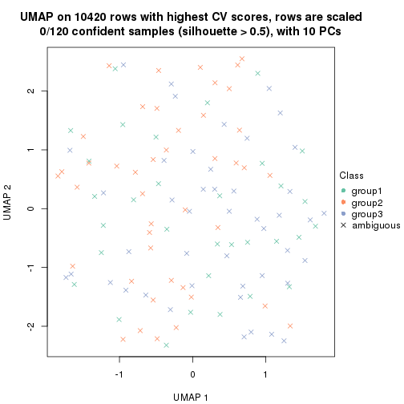
dimension_reduction(res, k = 4, method = "UMAP")

dimension_reduction(res, k = 5, method = "UMAP")
dimension_reduction(res, k = 6, method = "UMAP")
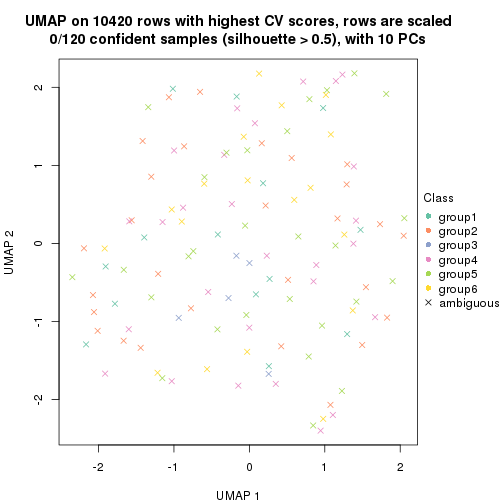
Following heatmap shows how subgroups are split when increasing k:
collect_classes(res)
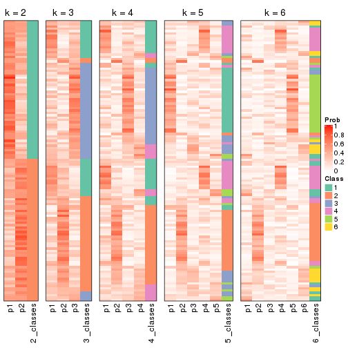
If matrix rows can be associated to genes, consider to use GO_Enrichment(res,
...) to perform function enrichment for the signature genes.
The object with results only for a single top-value method and a single partition method can be extracted as:
res = res_list["CV", "mclust"]
# you can also extract it by
# res = res_list["CV:mclust"]
A summary of res and all the functions that can be applied to it:
res
#> A 'ConsensusPartition' object with k = 2, 3, 4, 5, 6.
#> On a matrix with 10420 rows and 120 columns.
#> Top rows (1000, 2000, 3000, 4000, 5000) are extracted by 'CV' method.
#> Subgroups are detected by 'mclust' method.
#> Performed in total 1250 partitions by row resampling.
#> Best k for subgroups seems to be 4.
#>
#> Following methods can be applied to this 'ConsensusPartition' object:
#> [1] "cola_report" "collect_classes" "collect_plots"
#> [4] "collect_stats" "colnames" "compare_signatures"
#> [7] "consensus_heatmap" "dimension_reduction" "functional_enrichment"
#> [10] "get_anno_col" "get_anno" "get_classes"
#> [13] "get_consensus" "get_matrix" "get_membership"
#> [16] "get_param" "get_signatures" "get_stats"
#> [19] "is_best_k" "is_stable_k" "membership_heatmap"
#> [22] "ncol" "nrow" "plot_ecdf"
#> [25] "rownames" "select_partition_number" "show"
#> [28] "suggest_best_k" "test_to_known_factors"
collect_plots() function collects all the plots made from res for all k (number of partitions)
into one single page to provide an easy and fast comparison between different k.
collect_plots(res)
The plots are:
k and the heatmap of
predicted classes for each k.k.k.k.All the plots in panels can be made by individual functions and they are plotted later in this section.
select_partition_number() produces several plots showing different
statistics for choosing “optimized” k. There are following statistics:
k;k, the area increased is defined as \(A_k - A_{k-1}\).The detailed explanations of these statistics can be found in the cola vignette.
Generally speaking, lower PAC score, higher mean silhouette score or higher
concordance corresponds to better partition. Rand index and Jaccard index
measure how similar the current partition is compared to partition with k-1.
If they are too similar, we won't accept k is better than k-1.
select_partition_number(res)
The numeric values for all these statistics can be obtained by get_stats().
get_stats(res)
#> k 1-PAC mean_silhouette concordance area_increased Rand Jaccard
#> 2 2 0.0007 0.0000 0.826 0.2545 1.000 1.000
#> 3 3 0.0000 0.0000 0.669 0.7688 1.000 1.000
#> 4 4 0.0000 0.1122 0.442 0.3883 0.622 0.622
#> 5 5 0.0126 0.1868 0.421 0.1183 0.579 0.417
#> 6 6 0.0461 0.0636 0.370 0.0744 0.626 0.326
suggest_best_k() suggests the best \(k\) based on these statistics. The rules are as follows:
NA.suggest_best_k(res)
#> [1] 4
Following shows the table of the partitions (You need to click the show/hide
code output link to see it). The membership matrix (columns with name p*)
is inferred by
clue::cl_consensus()
function with the SE method. Basically the value in the membership matrix
represents the probability to belong to a certain group. The finall class
label for an item is determined with the group with highest probability it
belongs to.
In get_classes() function, the entropy is calculated from the membership
matrix and the silhouette score is calculated from the consensus matrix.
cbind(get_classes(res, k = 2), get_membership(res, k = 2))
#> class entropy silhouette p1 p2
#> SRR572528 2 0.697 0 NA 0.812
#> SRR572529 2 0.563 0 NA 0.868
#> SRR572530 2 0.653 0 NA 0.832
#> SRR572531 2 0.574 0 NA 0.864
#> SRR572532 2 0.584 0 NA 0.860
#> SRR572533 2 0.541 0 NA 0.876
#> SRR572534 2 0.584 0 NA 0.860
#> SRR572535 2 0.730 0 NA 0.796
#> SRR572536 2 0.697 0 NA 0.812
#> SRR572537 2 0.730 0 NA 0.796
#> SRR572538 2 0.722 0 NA 0.800
#> SRR572539 2 0.605 0 NA 0.852
#> SRR572540 2 0.574 0 NA 0.864
#> SRR572541 2 0.722 0 NA 0.800
#> SRR572542 2 0.644 0 NA 0.836
#> SRR572543 2 0.653 0 NA 0.832
#> SRR572544 2 0.644 0 NA 0.836
#> SRR572545 2 0.689 0 NA 0.816
#> SRR572546 2 0.730 0 NA 0.796
#> SRR572547 2 0.671 0 NA 0.824
#> SRR572548 2 0.714 0 NA 0.804
#> SRR572549 2 0.615 0 NA 0.848
#> SRR572550 2 0.671 0 NA 0.824
#> SRR572551 2 0.714 0 NA 0.804
#> SRR572552 2 0.689 0 NA 0.816
#> SRR572553 2 0.689 0 NA 0.816
#> SRR572554 2 0.730 0 NA 0.796
#> SRR572555 2 0.529 0 NA 0.880
#> SRR572556 2 0.634 0 NA 0.840
#> SRR572557 2 0.653 0 NA 0.832
#> SRR572558 2 0.625 0 NA 0.844
#> SRR572559 2 0.644 0 NA 0.836
#> SRR572560 2 0.671 0 NA 0.824
#> SRR572561 2 0.644 0 NA 0.836
#> SRR572562 2 0.730 0 NA 0.796
#> SRR572563 2 0.625 0 NA 0.844
#> SRR572564 2 0.518 0 NA 0.884
#> SRR572565 2 0.689 0 NA 0.816
#> SRR572566 2 0.653 0 NA 0.832
#> SRR572567 2 0.767 0 NA 0.776
#> SRR572568 2 0.541 0 NA 0.876
#> SRR572569 2 0.634 0 NA 0.840
#> SRR572570 2 0.662 0 NA 0.828
#> SRR572571 2 0.605 0 NA 0.852
#> SRR572572 2 0.689 0 NA 0.816
#> SRR572573 2 0.833 0 NA 0.736
#> SRR572574 2 0.574 0 NA 0.864
#> SRR572575 2 0.706 0 NA 0.808
#> SRR572576 2 0.518 0 NA 0.884
#> SRR572577 2 0.781 0 NA 0.768
#> SRR572578 2 0.634 0 NA 0.840
#> SRR572579 2 0.730 0 NA 0.796
#> SRR572580 2 0.706 0 NA 0.808
#> SRR572581 2 0.730 0 NA 0.796
#> SRR572582 2 0.653 0 NA 0.832
#> SRR572583 2 0.653 0 NA 0.832
#> SRR572584 2 0.644 0 NA 0.836
#> SRR572585 2 0.605 0 NA 0.852
#> SRR572586 2 0.541 0 NA 0.876
#> SRR572587 2 0.745 0 NA 0.788
#> SRR572588 2 0.745 0 NA 0.788
#> SRR572589 2 0.722 0 NA 0.800
#> SRR572590 2 0.730 0 NA 0.796
#> SRR572591 2 0.730 0 NA 0.796
#> SRR572592 2 0.605 0 NA 0.852
#> SRR572593 2 0.644 0 NA 0.836
#> SRR572594 2 0.552 0 NA 0.872
#> SRR572595 2 0.662 0 NA 0.828
#> SRR572596 2 0.738 0 NA 0.792
#> SRR572597 2 0.814 0 NA 0.748
#> SRR572598 2 0.574 0 NA 0.864
#> SRR572599 2 0.595 0 NA 0.856
#> SRR572600 2 0.706 0 NA 0.808
#> SRR572601 2 0.584 0 NA 0.860
#> SRR572602 2 0.662 0 NA 0.828
#> SRR572603 2 0.706 0 NA 0.808
#> SRR572604 2 0.714 0 NA 0.804
#> SRR572605 2 0.775 0 NA 0.772
#> SRR572606 2 0.671 0 NA 0.824
#> SRR572607 2 0.605 0 NA 0.852
#> SRR572608 2 0.814 0 NA 0.748
#> SRR572609 2 0.671 0 NA 0.824
#> SRR572610 2 0.584 0 NA 0.860
#> SRR572611 2 0.730 0 NA 0.796
#> SRR572612 2 0.615 0 NA 0.848
#> SRR572613 2 0.584 0 NA 0.860
#> SRR572614 2 0.644 0 NA 0.836
#> SRR572615 2 0.518 0 NA 0.884
#> SRR572616 2 0.634 0 NA 0.840
#> SRR572617 2 0.680 0 NA 0.820
#> SRR572618 2 0.595 0 NA 0.856
#> SRR572619 2 0.625 0 NA 0.844
#> SRR572620 2 0.595 0 NA 0.856
#> SRR572621 2 0.644 0 NA 0.836
#> SRR572622 2 0.738 0 NA 0.792
#> SRR572623 2 0.644 0 NA 0.836
#> SRR572624 2 0.814 0 NA 0.748
#> SRR572625 2 0.584 0 NA 0.860
#> SRR572626 2 0.738 0 NA 0.792
#> SRR572627 2 0.760 0 NA 0.780
#> SRR572628 2 0.529 0 NA 0.880
#> SRR572629 2 0.662 0 NA 0.828
#> SRR572630 2 0.689 0 NA 0.816
#> SRR572631 2 0.563 0 NA 0.868
#> SRR572632 2 0.821 0 NA 0.744
#> SRR572633 2 0.671 0 NA 0.824
#> SRR572634 2 0.671 0 NA 0.824
#> SRR572635 2 0.653 0 NA 0.832
#> SRR572636 2 0.605 0 NA 0.852
#> SRR572637 2 0.745 0 NA 0.788
#> SRR572638 2 0.644 0 NA 0.836
#> SRR572639 2 0.745 0 NA 0.788
#> SRR572640 2 0.722 0 NA 0.800
#> SRR572641 2 0.671 0 NA 0.824
#> SRR572642 2 0.625 0 NA 0.844
#> SRR572643 2 0.760 0 NA 0.780
#> SRR572644 2 0.595 0 NA 0.856
#> SRR572645 2 0.760 0 NA 0.780
#> SRR572646 2 0.595 0 NA 0.856
#> SRR572647 2 0.541 0 NA 0.876
cbind(get_classes(res, k = 3), get_membership(res, k = 3))
#> class entropy silhouette p1 p2 p3
#> SRR572528 2 0.743 0 NA 0.660 NA
#> SRR572529 2 0.722 0 NA 0.696 NA
#> SRR572530 2 0.685 0 NA 0.736 NA
#> SRR572531 2 0.635 0 NA 0.744 NA
#> SRR572532 2 0.778 0 NA 0.668 NA
#> SRR572533 2 0.816 0 NA 0.628 NA
#> SRR572534 2 0.663 0 NA 0.752 NA
#> SRR572535 2 0.805 0 NA 0.652 NA
#> SRR572536 2 0.751 0 NA 0.644 NA
#> SRR572537 2 0.740 0 NA 0.644 NA
#> SRR572538 2 0.714 0 NA 0.644 NA
#> SRR572539 2 0.693 0 NA 0.728 NA
#> SRR572540 2 0.712 0 NA 0.708 NA
#> SRR572541 2 0.727 0 NA 0.700 NA
#> SRR572542 2 0.650 0 NA 0.760 NA
#> SRR572543 2 0.656 0 NA 0.744 NA
#> SRR572544 2 0.686 0 NA 0.696 NA
#> SRR572545 2 0.630 0 NA 0.712 NA
#> SRR572546 2 0.656 0 NA 0.700 NA
#> SRR572547 2 0.765 0 NA 0.644 NA
#> SRR572548 2 0.787 0 NA 0.620 NA
#> SRR572549 2 0.642 0 NA 0.708 NA
#> SRR572550 2 0.721 0 NA 0.708 NA
#> SRR572551 2 0.792 0 NA 0.644 NA
#> SRR572552 2 0.737 0 NA 0.696 NA
#> SRR572553 2 0.782 0 NA 0.660 NA
#> SRR572554 2 0.750 0 NA 0.672 NA
#> SRR572555 2 0.685 0 NA 0.740 NA
#> SRR572556 2 0.759 0 NA 0.680 NA
#> SRR572557 2 0.774 0 NA 0.668 NA
#> SRR572558 2 0.768 0 NA 0.676 NA
#> SRR572559 2 0.764 0 NA 0.664 NA
#> SRR572560 2 0.749 0 NA 0.676 NA
#> SRR572561 2 0.751 0 NA 0.696 NA
#> SRR572562 2 0.642 0 NA 0.752 NA
#> SRR572563 2 0.814 0 NA 0.636 NA
#> SRR572564 2 0.588 0 NA 0.796 NA
#> SRR572565 2 0.735 0 NA 0.632 NA
#> SRR572566 2 0.756 0 NA 0.688 NA
#> SRR572567 2 0.766 0 NA 0.612 NA
#> SRR572568 2 0.814 0 NA 0.644 NA
#> SRR572569 2 0.670 0 NA 0.736 NA
#> SRR572570 2 0.719 0 NA 0.696 NA
#> SRR572571 2 0.713 0 NA 0.716 NA
#> SRR572572 2 0.732 0 NA 0.668 NA
#> SRR572573 2 0.748 0 NA 0.556 NA
#> SRR572574 2 0.750 0 NA 0.692 NA
#> SRR572575 2 0.778 0 NA 0.676 NA
#> SRR572576 2 0.774 0 NA 0.660 NA
#> SRR572577 2 0.702 0 NA 0.708 NA
#> SRR572578 2 0.722 0 NA 0.716 NA
#> SRR572579 2 0.764 0 NA 0.616 NA
#> SRR572580 2 0.734 0 NA 0.700 NA
#> SRR572581 2 0.805 0 NA 0.652 NA
#> SRR572582 2 0.742 0 NA 0.676 NA
#> SRR572583 2 0.734 0 NA 0.708 NA
#> SRR572584 2 0.765 0 NA 0.644 NA
#> SRR572585 2 0.801 0 NA 0.656 NA
#> SRR572586 2 0.681 0 NA 0.740 NA
#> SRR572587 2 0.753 0 NA 0.624 NA
#> SRR572588 2 0.793 0 NA 0.624 NA
#> SRR572589 2 0.796 0 NA 0.648 NA
#> SRR572590 2 0.791 0 NA 0.656 NA
#> SRR572591 2 0.715 0 NA 0.692 NA
#> SRR572592 2 0.795 0 NA 0.636 NA
#> SRR572593 2 0.733 0 NA 0.708 NA
#> SRR572594 2 0.757 0 NA 0.664 NA
#> SRR572595 2 0.730 0 NA 0.692 NA
#> SRR572596 2 0.723 0 NA 0.712 NA
#> SRR572597 2 0.803 0 NA 0.584 NA
#> SRR572598 2 0.828 0 NA 0.596 NA
#> SRR572599 2 0.778 0 NA 0.676 NA
#> SRR572600 2 0.785 0 NA 0.608 NA
#> SRR572601 2 0.810 0 NA 0.648 NA
#> SRR572602 2 0.777 0 NA 0.640 NA
#> SRR572603 2 0.719 0 NA 0.656 NA
#> SRR572604 2 0.689 0 NA 0.692 NA
#> SRR572605 2 0.859 0 NA 0.588 NA
#> SRR572606 2 0.742 0 NA 0.700 NA
#> SRR572607 2 0.815 0 NA 0.640 NA
#> SRR572608 2 0.849 0 NA 0.608 NA
#> SRR572609 2 0.810 0 NA 0.640 NA
#> SRR572610 2 0.663 0 NA 0.752 NA
#> SRR572611 2 0.795 0 NA 0.632 NA
#> SRR572612 2 0.802 0 NA 0.656 NA
#> SRR572613 2 0.746 0 NA 0.688 NA
#> SRR572614 2 0.761 0 NA 0.688 NA
#> SRR572615 2 0.653 0 NA 0.760 NA
#> SRR572616 2 0.679 0 NA 0.740 NA
#> SRR572617 2 0.693 0 NA 0.728 NA
#> SRR572618 2 0.797 0 NA 0.644 NA
#> SRR572619 2 0.694 0 NA 0.680 NA
#> SRR572620 2 0.844 0 NA 0.616 NA
#> SRR572621 2 0.750 0 NA 0.688 NA
#> SRR572622 2 0.832 0 NA 0.620 NA
#> SRR572623 2 0.759 0 NA 0.680 NA
#> SRR572624 2 0.781 0 NA 0.568 NA
#> SRR572625 2 0.754 0 NA 0.692 NA
#> SRR572626 2 0.814 0 NA 0.616 NA
#> SRR572627 2 0.778 0 NA 0.664 NA
#> SRR572628 2 0.729 0 NA 0.696 NA
#> SRR572629 2 0.753 0 NA 0.684 NA
#> SRR572630 2 0.736 0 NA 0.656 NA
#> SRR572631 2 0.844 0 NA 0.612 NA
#> SRR572632 2 0.807 0 NA 0.620 NA
#> SRR572633 2 0.785 0 NA 0.668 NA
#> SRR572634 2 0.823 0 NA 0.628 NA
#> SRR572635 2 0.844 0 NA 0.620 NA
#> SRR572636 2 0.747 0 NA 0.656 NA
#> SRR572637 2 0.790 0 NA 0.652 NA
#> SRR572638 2 0.768 0 NA 0.656 NA
#> SRR572639 2 0.704 0 NA 0.648 NA
#> SRR572640 2 0.709 0 NA 0.660 NA
#> SRR572641 2 0.776 0 NA 0.672 NA
#> SRR572642 2 0.778 0 NA 0.668 NA
#> SRR572643 2 0.687 0 NA 0.636 NA
#> SRR572644 2 0.823 0 NA 0.628 NA
#> SRR572645 2 0.790 0 NA 0.560 NA
#> SRR572646 2 0.731 0 NA 0.708 NA
#> SRR572647 2 0.753 0 NA 0.664 NA
cbind(get_classes(res, k = 4), get_membership(res, k = 4))
#> class entropy silhouette p1 p2 p3 p4
#> SRR572528 1 0.719 0.17452 0.596 0.056 0.288 0.060
#> SRR572529 1 0.783 0.29224 0.608 0.104 0.184 0.104
#> SRR572530 1 0.750 0.32947 0.624 0.180 0.140 0.056
#> SRR572531 1 0.709 0.27357 0.648 0.068 0.212 0.072
#> SRR572532 1 0.919 0.07499 0.416 0.240 0.252 0.092
#> SRR572533 2 0.959 -0.03781 0.244 0.392 0.160 0.204
#> SRR572534 1 0.798 0.16312 0.548 0.256 0.148 0.048
#> SRR572535 1 0.779 0.25798 0.620 0.144 0.124 0.112
#> SRR572536 3 0.849 0.37133 0.344 0.112 0.460 0.084
#> SRR572537 1 0.858 0.04583 0.472 0.100 0.320 0.108
#> SRR572538 1 0.768 0.04898 0.568 0.072 0.284 0.076
#> SRR572539 1 0.850 0.13116 0.500 0.268 0.164 0.068
#> SRR572540 1 0.874 0.08710 0.484 0.172 0.260 0.084
#> SRR572541 1 0.818 0.28346 0.572 0.188 0.152 0.088
#> SRR572542 1 0.686 0.33233 0.660 0.200 0.104 0.036
#> SRR572543 1 0.732 0.30163 0.636 0.188 0.124 0.052
#> SRR572544 1 0.741 0.23187 0.580 0.068 0.292 0.060
#> SRR572545 1 0.729 -0.05312 0.544 0.040 0.348 0.068
#> SRR572546 1 0.738 -0.06533 0.548 0.044 0.336 0.072
#> SRR572547 1 0.816 0.30206 0.580 0.136 0.180 0.104
#> SRR572548 3 0.890 0.20119 0.356 0.088 0.404 0.152
#> SRR572549 1 0.708 -0.07031 0.540 0.036 0.368 0.056
#> SRR572550 1 0.841 0.17417 0.536 0.192 0.196 0.076
#> SRR572551 1 0.802 0.31858 0.584 0.156 0.184 0.076
#> SRR572552 1 0.719 0.30615 0.648 0.116 0.184 0.052
#> SRR572553 1 0.883 0.23510 0.496 0.192 0.212 0.100
#> SRR572554 1 0.769 0.30512 0.604 0.148 0.192 0.056
#> SRR572555 1 0.763 -0.00994 0.520 0.352 0.072 0.056
#> SRR572556 1 0.744 0.26917 0.636 0.120 0.176 0.068
#> SRR572557 1 0.791 0.30792 0.600 0.124 0.184 0.092
#> SRR572558 1 0.946 0.11738 0.428 0.192 0.184 0.196
#> SRR572559 1 0.909 0.05247 0.460 0.172 0.248 0.120
#> SRR572560 1 0.896 -0.25192 0.444 0.108 0.304 0.144
#> SRR572561 1 0.865 -0.10138 0.432 0.352 0.144 0.072
#> SRR572562 1 0.751 0.29687 0.628 0.156 0.156 0.060
#> SRR572563 1 0.967 -0.36644 0.316 0.140 0.316 0.228
#> SRR572564 1 0.860 0.00553 0.496 0.280 0.128 0.096
#> SRR572565 1 0.791 -0.35342 0.432 0.048 0.424 0.096
#> SRR572566 1 0.801 0.24914 0.552 0.216 0.188 0.044
#> SRR572567 1 0.702 -0.23857 0.504 0.016 0.404 0.076
#> SRR572568 1 0.970 -0.13715 0.356 0.256 0.232 0.156
#> SRR572569 1 0.763 0.09654 0.576 0.076 0.276 0.072
#> SRR572570 1 0.899 -0.28639 0.412 0.124 0.344 0.120
#> SRR572571 1 0.767 0.21517 0.568 0.232 0.172 0.028
#> SRR572572 1 0.809 0.08225 0.532 0.076 0.292 0.100
#> SRR572573 3 0.715 0.34095 0.444 0.020 0.460 0.076
#> SRR572574 1 0.935 -0.16126 0.400 0.260 0.232 0.108
#> SRR572575 1 0.704 0.16793 0.556 0.348 0.068 0.028
#> SRR572576 2 0.760 0.34143 0.344 0.524 0.040 0.092
#> SRR572577 1 0.664 0.35095 0.708 0.084 0.120 0.088
#> SRR572578 1 0.849 0.24531 0.552 0.128 0.152 0.168
#> SRR572579 1 0.856 -0.02601 0.452 0.108 0.348 0.092
#> SRR572580 1 0.735 0.26088 0.640 0.140 0.164 0.056
#> SRR572581 1 0.727 0.33303 0.660 0.144 0.108 0.088
#> SRR572582 1 0.853 0.25032 0.544 0.136 0.192 0.128
#> SRR572583 1 0.877 0.03263 0.468 0.276 0.180 0.076
#> SRR572584 3 0.917 0.22913 0.364 0.104 0.364 0.168
#> SRR572585 1 0.945 -0.22518 0.380 0.272 0.232 0.116
#> SRR572586 1 0.872 0.11361 0.492 0.248 0.176 0.084
#> SRR572587 3 0.781 0.38886 0.392 0.052 0.472 0.084
#> SRR572588 3 0.873 0.27393 0.368 0.088 0.416 0.128
#> SRR572589 2 0.883 0.21262 0.376 0.396 0.088 0.140
#> SRR572590 1 0.690 0.32524 0.676 0.160 0.112 0.052
#> SRR572591 1 0.695 0.28016 0.648 0.160 0.168 0.024
#> SRR572592 2 0.805 0.28297 0.316 0.492 0.032 0.160
#> SRR572593 1 0.759 0.23995 0.596 0.232 0.124 0.048
#> SRR572594 2 0.776 0.36824 0.324 0.528 0.044 0.104
#> SRR572595 1 0.823 0.06862 0.524 0.084 0.288 0.104
#> SRR572596 1 0.619 0.33147 0.728 0.128 0.104 0.040
#> SRR572597 3 0.845 0.03085 0.324 0.040 0.444 0.192
#> SRR572598 2 0.963 -0.34571 0.216 0.336 0.140 0.308
#> SRR572599 1 0.980 -0.36864 0.308 0.272 0.264 0.156
#> SRR572600 3 0.822 0.37939 0.416 0.084 0.420 0.080
#> SRR572601 1 0.933 -0.26455 0.356 0.352 0.168 0.124
#> SRR572602 3 0.918 0.27773 0.312 0.156 0.412 0.120
#> SRR572603 3 0.770 0.36053 0.416 0.064 0.460 0.060
#> SRR572604 1 0.835 -0.14322 0.504 0.100 0.304 0.092
#> SRR572605 1 0.958 -0.25296 0.324 0.116 0.276 0.284
#> SRR572606 1 0.807 -0.03360 0.504 0.332 0.096 0.068
#> SRR572607 1 0.928 -0.12324 0.372 0.212 0.320 0.096
#> SRR572608 1 0.699 0.34168 0.684 0.108 0.116 0.092
#> SRR572609 1 0.809 0.31327 0.584 0.116 0.192 0.108
#> SRR572610 1 0.815 -0.11576 0.484 0.348 0.104 0.064
#> SRR572611 1 0.635 0.29655 0.708 0.076 0.172 0.044
#> SRR572612 1 0.863 0.16466 0.532 0.188 0.116 0.164
#> SRR572613 1 0.957 -0.08788 0.392 0.152 0.236 0.220
#> SRR572614 1 0.778 0.18096 0.564 0.276 0.096 0.064
#> SRR572615 1 0.739 0.11507 0.544 0.340 0.072 0.044
#> SRR572616 1 0.803 0.23789 0.592 0.132 0.176 0.100
#> SRR572617 1 0.732 0.08053 0.620 0.104 0.228 0.048
#> SRR572618 1 0.813 0.22838 0.552 0.064 0.236 0.148
#> SRR572619 1 0.879 -0.21786 0.400 0.096 0.380 0.124
#> SRR572620 2 0.999 -0.33869 0.260 0.268 0.240 0.232
#> SRR572621 2 0.792 0.27283 0.360 0.492 0.092 0.056
#> SRR572622 1 0.971 -0.34618 0.336 0.160 0.296 0.208
#> SRR572623 1 0.763 0.26620 0.632 0.100 0.144 0.124
#> SRR572624 1 0.816 -0.11669 0.444 0.032 0.364 0.160
#> SRR572625 1 0.849 -0.12450 0.488 0.308 0.112 0.092
#> SRR572626 1 0.753 0.33090 0.628 0.104 0.188 0.080
#> SRR572627 1 0.767 0.21354 0.548 0.312 0.080 0.060
#> SRR572628 2 0.839 0.26024 0.332 0.476 0.072 0.120
#> SRR572629 1 0.932 -0.31535 0.364 0.132 0.348 0.156
#> SRR572630 3 0.850 0.36369 0.360 0.052 0.428 0.160
#> SRR572631 2 0.751 0.35933 0.348 0.532 0.056 0.064
#> SRR572632 3 0.934 0.24667 0.312 0.100 0.368 0.220
#> SRR572633 1 0.715 0.22378 0.596 0.288 0.076 0.040
#> SRR572634 3 0.959 0.18217 0.324 0.148 0.340 0.188
#> SRR572635 4 0.995 0.00000 0.260 0.208 0.244 0.288
#> SRR572636 1 0.921 -0.08373 0.424 0.148 0.292 0.136
#> SRR572637 1 0.752 0.30501 0.636 0.116 0.164 0.084
#> SRR572638 1 0.825 0.22536 0.552 0.100 0.236 0.112
#> SRR572639 1 0.718 -0.38592 0.456 0.032 0.452 0.060
#> SRR572640 1 0.785 0.12800 0.516 0.048 0.332 0.104
#> SRR572641 1 0.864 0.22215 0.532 0.196 0.140 0.132
#> SRR572642 1 0.950 -0.26531 0.388 0.280 0.144 0.188
#> SRR572643 3 0.757 0.26184 0.424 0.048 0.460 0.068
#> SRR572644 1 0.857 0.02605 0.500 0.280 0.100 0.120
#> SRR572645 3 0.739 0.30105 0.336 0.028 0.540 0.096
#> SRR572646 1 0.781 -0.07678 0.504 0.356 0.084 0.056
#> SRR572647 2 0.865 0.29084 0.356 0.428 0.072 0.144
cbind(get_classes(res, k = 5), get_membership(res, k = 5))
#> class entropy silhouette p1 p2 p3 p4 p5
#> SRR572528 1 0.812 -0.12038 0.400 0.364 NA 0.032 0.120
#> SRR572529 2 0.819 0.27491 0.260 0.480 NA 0.064 0.136
#> SRR572530 2 0.729 0.32339 0.276 0.548 NA 0.072 0.072
#> SRR572531 2 0.677 0.24477 0.364 0.512 NA 0.028 0.072
#> SRR572532 1 0.845 0.00551 0.396 0.328 NA 0.144 0.092
#> SRR572533 4 0.804 0.34929 0.260 0.056 NA 0.488 0.052
#> SRR572534 1 0.864 -0.02767 0.388 0.268 NA 0.224 0.072
#> SRR572535 2 0.820 0.31582 0.164 0.472 NA 0.064 0.252
#> SRR572536 1 0.702 0.33223 0.596 0.080 NA 0.096 0.016
#> SRR572537 1 0.800 -0.01744 0.408 0.368 NA 0.028 0.108
#> SRR572538 1 0.765 0.06014 0.508 0.296 NA 0.044 0.064
#> SRR572539 2 0.890 0.15996 0.288 0.368 NA 0.160 0.140
#> SRR572540 1 0.800 0.04412 0.464 0.312 NA 0.092 0.040
#> SRR572541 2 0.832 0.24439 0.308 0.436 NA 0.120 0.088
#> SRR572542 2 0.759 0.35746 0.276 0.508 NA 0.064 0.132
#> SRR572543 2 0.741 0.33698 0.228 0.548 NA 0.088 0.124
#> SRR572544 2 0.788 0.13939 0.388 0.408 NA 0.036 0.084
#> SRR572545 1 0.754 0.15878 0.544 0.232 NA 0.020 0.096
#> SRR572546 1 0.699 0.16784 0.576 0.260 NA 0.028 0.044
#> SRR572547 2 0.700 0.31681 0.196 0.596 NA 0.056 0.136
#> SRR572548 1 0.842 0.21351 0.500 0.172 NA 0.064 0.108
#> SRR572549 1 0.694 0.16641 0.564 0.288 NA 0.036 0.036
#> SRR572550 1 0.866 -0.06292 0.356 0.344 NA 0.164 0.084
#> SRR572551 2 0.691 0.33768 0.200 0.616 NA 0.048 0.104
#> SRR572552 2 0.788 0.27203 0.312 0.480 NA 0.084 0.068
#> SRR572553 2 0.840 0.18521 0.332 0.404 NA 0.112 0.112
#> SRR572554 2 0.677 0.31215 0.312 0.540 NA 0.028 0.108
#> SRR572555 4 0.807 -0.04539 0.228 0.328 NA 0.368 0.064
#> SRR572556 2 0.815 0.23512 0.304 0.464 NA 0.080 0.084
#> SRR572557 2 0.813 0.29374 0.244 0.488 NA 0.036 0.140
#> SRR572558 2 0.920 0.08526 0.244 0.360 NA 0.188 0.144
#> SRR572559 1 0.916 0.04883 0.332 0.300 NA 0.164 0.064
#> SRR572560 1 0.816 0.25436 0.508 0.188 NA 0.076 0.052
#> SRR572561 1 0.919 -0.09524 0.292 0.268 NA 0.264 0.120
#> SRR572562 2 0.822 0.21860 0.356 0.404 NA 0.080 0.116
#> SRR572563 1 0.786 0.16355 0.480 0.052 NA 0.160 0.032
#> SRR572564 1 0.893 -0.01449 0.376 0.192 NA 0.276 0.076
#> SRR572565 1 0.694 0.31585 0.636 0.140 NA 0.040 0.056
#> SRR572566 2 0.824 0.18025 0.348 0.408 NA 0.116 0.088
#> SRR572567 1 0.736 0.21462 0.552 0.216 NA 0.020 0.052
#> SRR572568 1 0.923 -0.00906 0.400 0.148 NA 0.200 0.096
#> SRR572569 1 0.773 0.04320 0.500 0.300 NA 0.084 0.048
#> SRR572570 1 0.839 0.25079 0.496 0.204 NA 0.092 0.068
#> SRR572571 1 0.802 -0.05197 0.448 0.300 NA 0.160 0.064
#> SRR572572 1 0.837 -0.00494 0.440 0.296 NA 0.052 0.128
#> SRR572573 1 0.645 0.31048 0.648 0.128 NA 0.016 0.040
#> SRR572574 1 0.923 0.09090 0.412 0.172 NA 0.164 0.116
#> SRR572575 2 0.729 0.30620 0.100 0.572 NA 0.144 0.176
#> SRR572576 4 0.758 0.43403 0.168 0.136 NA 0.572 0.092
#> SRR572577 2 0.705 0.37891 0.228 0.580 NA 0.056 0.120
#> SRR572578 2 0.841 0.25292 0.216 0.468 NA 0.120 0.160
#> SRR572579 1 0.830 0.07768 0.420 0.324 NA 0.048 0.072
#> SRR572580 2 0.858 0.17715 0.360 0.368 NA 0.084 0.120
#> SRR572581 2 0.782 0.35846 0.172 0.536 NA 0.104 0.164
#> SRR572582 2 0.763 0.26624 0.268 0.528 NA 0.072 0.092
#> SRR572583 1 0.937 -0.03017 0.336 0.240 NA 0.216 0.120
#> SRR572584 1 0.792 0.29916 0.508 0.116 NA 0.060 0.056
#> SRR572585 1 0.914 -0.12196 0.360 0.164 NA 0.284 0.092
#> SRR572586 1 0.866 -0.01876 0.360 0.304 NA 0.196 0.112
#> SRR572587 1 0.744 0.29861 0.512 0.108 NA 0.028 0.052
#> SRR572588 1 0.777 0.29207 0.556 0.164 NA 0.048 0.072
#> SRR572589 4 0.962 0.26495 0.216 0.216 NA 0.308 0.160
#> SRR572590 2 0.703 0.39575 0.168 0.616 NA 0.044 0.132
#> SRR572591 2 0.790 0.22236 0.360 0.432 NA 0.068 0.100
#> SRR572592 4 0.813 0.36474 0.080 0.212 NA 0.492 0.180
#> SRR572593 2 0.827 0.26721 0.264 0.436 NA 0.064 0.200
#> SRR572594 4 0.766 0.42873 0.132 0.172 NA 0.548 0.132
#> SRR572595 1 0.894 0.01856 0.352 0.316 NA 0.056 0.132
#> SRR572596 2 0.779 0.30914 0.276 0.512 NA 0.048 0.084
#> SRR572597 1 0.797 0.25097 0.488 0.120 NA 0.032 0.088
#> SRR572598 4 0.786 0.33278 0.196 0.084 NA 0.548 0.052
#> SRR572599 4 0.926 0.13084 0.300 0.132 NA 0.316 0.072
#> SRR572600 1 0.685 0.33806 0.640 0.108 NA 0.064 0.032
#> SRR572601 1 0.879 -0.17622 0.368 0.116 NA 0.332 0.064
#> SRR572602 1 0.756 0.28779 0.540 0.112 NA 0.104 0.016
#> SRR572603 1 0.729 0.31398 0.592 0.148 NA 0.036 0.056
#> SRR572604 1 0.813 0.17983 0.472 0.216 NA 0.028 0.076
#> SRR572605 1 0.991 0.04019 0.252 0.228 NA 0.168 0.184
#> SRR572606 2 0.928 -0.03542 0.236 0.336 NA 0.196 0.176
#> SRR572607 1 0.923 0.12385 0.392 0.224 NA 0.120 0.104
#> SRR572608 2 0.637 0.38772 0.164 0.644 NA 0.012 0.148
#> SRR572609 2 0.703 0.33075 0.156 0.600 NA 0.016 0.168
#> SRR572610 2 0.908 -0.07613 0.264 0.296 NA 0.268 0.132
#> SRR572611 2 0.770 0.27346 0.324 0.468 NA 0.032 0.128
#> SRR572612 2 0.822 0.25710 0.120 0.508 NA 0.160 0.172
#> SRR572613 1 0.960 0.06607 0.344 0.184 NA 0.144 0.136
#> SRR572614 2 0.901 0.27030 0.196 0.416 NA 0.192 0.124
#> SRR572615 2 0.854 0.10799 0.288 0.356 NA 0.244 0.088
#> SRR572616 2 0.893 0.16724 0.312 0.360 NA 0.076 0.164
#> SRR572617 1 0.852 -0.00663 0.428 0.304 NA 0.100 0.084
#> SRR572618 2 0.843 0.15093 0.288 0.420 NA 0.028 0.120
#> SRR572619 1 0.837 0.21400 0.476 0.232 NA 0.060 0.076
#> SRR572620 4 0.944 0.11281 0.300 0.156 NA 0.304 0.104
#> SRR572621 4 0.888 0.33248 0.240 0.200 NA 0.368 0.164
#> SRR572622 1 0.848 0.14023 0.424 0.068 NA 0.124 0.076
#> SRR572623 2 0.862 0.21860 0.284 0.420 NA 0.060 0.148
#> SRR572624 1 0.832 0.09298 0.392 0.252 NA 0.008 0.112
#> SRR572625 4 0.927 0.15706 0.276 0.216 NA 0.280 0.184
#> SRR572626 2 0.683 0.34562 0.196 0.620 NA 0.040 0.112
#> SRR572627 2 0.809 0.27562 0.164 0.460 NA 0.116 0.248
#> SRR572628 4 0.858 0.34119 0.216 0.156 NA 0.468 0.076
#> SRR572629 1 0.878 0.25088 0.452 0.164 NA 0.084 0.096
#> SRR572630 1 0.742 0.32852 0.540 0.120 NA 0.044 0.036
#> SRR572631 4 0.865 0.37655 0.152 0.192 NA 0.432 0.192
#> SRR572632 1 0.699 0.24509 0.536 0.056 NA 0.052 0.032
#> SRR572633 2 0.721 0.35256 0.100 0.612 NA 0.088 0.164
#> SRR572634 1 0.734 0.22657 0.544 0.048 NA 0.120 0.028
#> SRR572635 1 0.835 -0.16366 0.356 0.056 NA 0.340 0.036
#> SRR572636 1 0.894 0.14128 0.416 0.256 NA 0.112 0.116
#> SRR572637 2 0.802 0.30681 0.272 0.448 NA 0.016 0.188
#> SRR572638 2 0.852 0.16908 0.280 0.424 NA 0.056 0.168
#> SRR572639 1 0.684 0.31262 0.600 0.140 NA 0.004 0.068
#> SRR572640 1 0.823 0.03699 0.424 0.328 NA 0.036 0.104
#> SRR572641 2 0.898 0.20292 0.224 0.412 NA 0.160 0.140
#> SRR572642 1 0.874 -0.15486 0.384 0.128 NA 0.316 0.056
#> SRR572643 1 0.731 0.24634 0.544 0.228 NA 0.012 0.056
#> SRR572644 2 0.812 0.18291 0.112 0.488 NA 0.252 0.112
#> SRR572645 1 0.644 0.30614 0.528 0.068 NA 0.008 0.032
#> SRR572646 2 0.878 -0.09186 0.264 0.316 NA 0.256 0.148
#> SRR572647 4 0.752 0.38064 0.216 0.140 NA 0.552 0.028
cbind(get_classes(res, k = 6), get_membership(res, k = 6))
#> class entropy silhouette p1 p2 p3 p4 p5 p6
#> SRR572528 4 0.792 0.071760 0.060 0.116 0.200 0.476 0.136 0.012
#> SRR572529 4 0.783 0.155916 0.132 0.128 0.116 0.528 0.064 0.032
#> SRR572530 4 0.767 0.163440 0.128 0.232 0.060 0.484 0.088 0.008
#> SRR572531 4 0.703 0.221670 0.064 0.108 0.136 0.584 0.104 0.004
#> SRR572532 4 0.850 0.018778 0.268 0.104 0.060 0.404 0.112 0.052
#> SRR572533 6 0.861 0.271330 0.072 0.280 0.028 0.104 0.160 0.356
#> SRR572534 4 0.860 -0.113736 0.056 0.300 0.068 0.364 0.136 0.076
#> SRR572535 3 0.711 0.000000 0.004 0.240 0.376 0.332 0.016 0.032
#> SRR572536 5 0.812 0.280000 0.092 0.144 0.028 0.204 0.468 0.064
#> SRR572537 4 0.728 0.094924 0.216 0.032 0.064 0.492 0.192 0.004
#> SRR572538 4 0.800 0.189021 0.136 0.152 0.064 0.476 0.160 0.012
#> SRR572539 2 0.837 0.186822 0.072 0.388 0.088 0.296 0.124 0.032
#> SRR572540 4 0.818 0.013942 0.044 0.284 0.024 0.364 0.216 0.068
#> SRR572541 4 0.800 0.233127 0.136 0.164 0.088 0.508 0.052 0.052
#> SRR572542 4 0.749 -0.055548 0.024 0.332 0.104 0.440 0.072 0.028
#> SRR572543 4 0.794 0.029742 0.100 0.292 0.116 0.424 0.052 0.016
#> SRR572544 4 0.699 0.169982 0.040 0.080 0.156 0.576 0.140 0.008
#> SRR572545 4 0.784 0.047402 0.088 0.080 0.124 0.472 0.228 0.008
#> SRR572546 4 0.745 0.129087 0.084 0.088 0.052 0.540 0.208 0.028
#> SRR572547 4 0.624 0.210126 0.108 0.044 0.152 0.648 0.036 0.012
#> SRR572548 4 0.832 -0.224608 0.336 0.088 0.032 0.348 0.144 0.052
#> SRR572549 4 0.728 0.139239 0.140 0.084 0.028 0.524 0.212 0.012
#> SRR572550 4 0.871 0.027197 0.080 0.248 0.044 0.372 0.176 0.080
#> SRR572551 4 0.591 0.201366 0.140 0.068 0.084 0.676 0.024 0.008
#> SRR572552 4 0.797 0.041136 0.044 0.160 0.128 0.500 0.132 0.036
#> SRR572553 4 0.802 0.201787 0.160 0.204 0.064 0.472 0.072 0.028
#> SRR572554 4 0.755 0.143714 0.100 0.172 0.092 0.524 0.108 0.004
#> SRR572555 2 0.801 0.146975 0.036 0.404 0.060 0.316 0.048 0.136
#> SRR572556 4 0.865 0.140641 0.100 0.232 0.060 0.392 0.168 0.048
#> SRR572557 4 0.713 -0.142100 0.012 0.112 0.260 0.512 0.084 0.020
#> SRR572558 4 0.823 0.030042 0.312 0.132 0.048 0.380 0.028 0.100
#> SRR572559 4 0.890 -0.000426 0.232 0.168 0.072 0.372 0.080 0.076
#> SRR572560 5 0.779 0.209612 0.024 0.248 0.024 0.196 0.436 0.072
#> SRR572561 2 0.850 0.224802 0.040 0.404 0.084 0.264 0.088 0.120
#> SRR572562 4 0.808 0.028284 0.032 0.264 0.112 0.408 0.164 0.020
#> SRR572563 5 0.884 0.213401 0.052 0.184 0.044 0.168 0.364 0.188
#> SRR572564 2 0.808 0.196463 0.020 0.444 0.052 0.232 0.152 0.100
#> SRR572565 5 0.743 0.165548 0.128 0.084 0.012 0.328 0.428 0.020
#> SRR572566 4 0.840 -0.048744 0.088 0.324 0.056 0.360 0.132 0.040
#> SRR572567 4 0.756 -0.088921 0.204 0.040 0.048 0.380 0.324 0.004
#> SRR572568 2 0.853 0.031438 0.032 0.372 0.052 0.140 0.272 0.132
#> SRR572569 4 0.815 0.217405 0.084 0.140 0.068 0.492 0.168 0.048
#> SRR572570 5 0.869 0.037537 0.188 0.132 0.016 0.288 0.304 0.072
#> SRR572571 2 0.765 0.039450 0.056 0.388 0.032 0.376 0.112 0.036
#> SRR572572 4 0.831 0.132317 0.168 0.124 0.120 0.472 0.080 0.036
#> SRR572573 5 0.767 0.146886 0.148 0.044 0.048 0.324 0.416 0.020
#> SRR572574 5 0.894 0.095700 0.036 0.284 0.096 0.188 0.300 0.096
#> SRR572575 2 0.726 -0.177698 0.052 0.428 0.136 0.348 0.020 0.016
#> SRR572576 6 0.848 0.124683 0.096 0.312 0.064 0.132 0.036 0.360
#> SRR572577 4 0.730 0.045297 0.048 0.176 0.168 0.532 0.068 0.008
#> SRR572578 4 0.877 0.093954 0.156 0.124 0.148 0.428 0.060 0.084
#> SRR572579 4 0.819 -0.020162 0.264 0.120 0.044 0.420 0.124 0.028
#> SRR572580 4 0.813 -0.150114 0.016 0.284 0.172 0.348 0.164 0.016
#> SRR572581 4 0.767 -0.234004 0.028 0.292 0.184 0.424 0.040 0.032
#> SRR572582 4 0.695 0.224566 0.136 0.100 0.104 0.596 0.056 0.008
#> SRR572583 2 0.843 0.187512 0.032 0.444 0.144 0.188 0.116 0.076
#> SRR572584 5 0.722 0.329540 0.060 0.088 0.040 0.192 0.572 0.048
#> SRR572585 5 0.900 -0.122929 0.072 0.264 0.032 0.140 0.280 0.212
#> SRR572586 4 0.864 -0.147441 0.096 0.324 0.040 0.332 0.132 0.076
#> SRR572587 5 0.724 0.221741 0.124 0.076 0.048 0.176 0.560 0.016
#> SRR572588 1 0.841 0.021482 0.292 0.072 0.020 0.276 0.280 0.060
#> SRR572589 2 0.796 0.176728 0.000 0.464 0.140 0.128 0.104 0.164
#> SRR572590 4 0.762 -0.250138 0.040 0.228 0.208 0.460 0.044 0.020
#> SRR572591 4 0.806 0.107871 0.048 0.172 0.136 0.484 0.128 0.032
#> SRR572592 2 0.834 -0.159602 0.124 0.348 0.064 0.160 0.008 0.296
#> SRR572593 2 0.804 -0.318938 0.020 0.348 0.204 0.324 0.064 0.040
#> SRR572594 2 0.823 -0.135340 0.040 0.376 0.092 0.164 0.028 0.300
#> SRR572595 4 0.834 0.077574 0.040 0.100 0.184 0.408 0.232 0.036
#> SRR572596 4 0.828 -0.148476 0.036 0.288 0.120 0.372 0.160 0.024
#> SRR572597 1 0.824 0.110027 0.368 0.060 0.064 0.220 0.268 0.020
#> SRR572598 6 0.779 0.378147 0.060 0.204 0.028 0.088 0.112 0.508
#> SRR572599 1 0.945 -0.015046 0.268 0.132 0.052 0.192 0.132 0.224
#> SRR572600 5 0.721 0.276799 0.076 0.112 0.016 0.208 0.548 0.040
#> SRR572601 2 0.891 0.079947 0.052 0.340 0.044 0.156 0.216 0.192
#> SRR572602 5 0.885 0.138248 0.144 0.180 0.028 0.192 0.368 0.088
#> SRR572603 5 0.856 0.028927 0.224 0.128 0.036 0.260 0.324 0.028
#> SRR572604 5 0.789 0.185111 0.020 0.148 0.084 0.340 0.376 0.032
#> SRR572605 1 0.926 0.110838 0.256 0.028 0.188 0.248 0.128 0.152
#> SRR572606 2 0.830 -0.092713 0.020 0.440 0.156 0.200 0.076 0.108
#> SRR572607 5 0.888 0.104187 0.064 0.248 0.068 0.176 0.356 0.088
#> SRR572608 4 0.722 -0.192918 0.036 0.172 0.284 0.464 0.036 0.008
#> SRR572609 4 0.752 -0.004894 0.144 0.092 0.192 0.516 0.044 0.012
#> SRR572610 2 0.851 0.109401 0.024 0.388 0.100 0.260 0.084 0.144
#> SRR572611 4 0.729 -0.038033 0.020 0.124 0.260 0.488 0.100 0.008
#> SRR572612 4 0.862 0.091419 0.212 0.168 0.124 0.400 0.040 0.056
#> SRR572613 5 0.947 0.105852 0.052 0.172 0.192 0.224 0.252 0.108
#> SRR572614 2 0.799 -0.256672 0.012 0.368 0.188 0.312 0.044 0.076
#> SRR572615 2 0.703 0.204363 0.044 0.488 0.016 0.328 0.080 0.044
#> SRR572616 4 0.863 -0.104692 0.020 0.228 0.212 0.328 0.168 0.044
#> SRR572617 4 0.855 0.098034 0.040 0.220 0.088 0.364 0.240 0.048
#> SRR572618 4 0.777 0.110790 0.108 0.052 0.204 0.500 0.116 0.020
#> SRR572619 4 0.832 -0.122814 0.144 0.052 0.076 0.348 0.340 0.040
#> SRR572620 1 0.853 0.034198 0.372 0.076 0.020 0.196 0.096 0.240
#> SRR572621 2 0.805 0.207005 0.024 0.464 0.052 0.152 0.100 0.208
#> SRR572622 5 0.915 0.211446 0.056 0.128 0.140 0.164 0.372 0.140
#> SRR572623 4 0.853 -0.169365 0.100 0.156 0.176 0.428 0.116 0.024
#> SRR572624 4 0.849 -0.050749 0.220 0.064 0.124 0.360 0.220 0.012
#> SRR572625 2 0.839 0.259504 0.032 0.452 0.076 0.180 0.144 0.116
#> SRR572626 4 0.659 0.120739 0.108 0.076 0.168 0.608 0.036 0.004
#> SRR572627 2 0.860 -0.132738 0.068 0.312 0.232 0.288 0.060 0.040
#> SRR572628 2 0.804 0.003405 0.028 0.440 0.040 0.160 0.088 0.244
#> SRR572629 1 0.920 0.112861 0.248 0.124 0.040 0.248 0.244 0.096
#> SRR572630 5 0.773 0.296206 0.056 0.084 0.060 0.236 0.508 0.056
#> SRR572631 2 0.784 0.153980 0.020 0.460 0.076 0.160 0.044 0.240
#> SRR572632 5 0.797 0.308383 0.048 0.108 0.048 0.148 0.512 0.136
#> SRR572633 4 0.760 -0.290327 0.032 0.336 0.192 0.384 0.028 0.028
#> SRR572634 5 0.849 0.289130 0.052 0.164 0.056 0.144 0.448 0.136
#> SRR572635 6 0.876 0.116189 0.168 0.112 0.012 0.124 0.248 0.336
#> SRR572636 1 0.841 0.179994 0.360 0.088 0.040 0.292 0.180 0.040
#> SRR572637 4 0.779 -0.381154 0.020 0.196 0.288 0.376 0.116 0.004
#> SRR572638 4 0.733 0.073667 0.080 0.052 0.236 0.536 0.068 0.028
#> SRR572639 5 0.692 0.269089 0.072 0.052 0.056 0.324 0.492 0.004
#> SRR572640 4 0.798 0.148370 0.132 0.052 0.112 0.488 0.188 0.028
#> SRR572641 4 0.889 0.040029 0.048 0.228 0.144 0.376 0.120 0.084
#> SRR572642 2 0.853 0.061592 0.024 0.360 0.036 0.192 0.212 0.176
#> SRR572643 4 0.760 -0.159048 0.084 0.092 0.048 0.388 0.376 0.012
#> SRR572644 4 0.865 0.051532 0.148 0.168 0.100 0.412 0.024 0.148
#> SRR572645 5 0.782 0.093967 0.220 0.056 0.056 0.184 0.464 0.020
#> SRR572646 2 0.798 0.155574 0.020 0.472 0.092 0.232 0.092 0.092
#> SRR572647 2 0.789 -0.040102 0.020 0.428 0.032 0.172 0.084 0.264
Heatmaps for the consensus matrix. It visualizes the probability of two samples to be in a same group.
consensus_heatmap(res, k = 2)
consensus_heatmap(res, k = 3)
consensus_heatmap(res, k = 4)

consensus_heatmap(res, k = 5)
consensus_heatmap(res, k = 6)
Heatmaps for the membership of samples in all partitions to see how consistent they are:
membership_heatmap(res, k = 2)
membership_heatmap(res, k = 3)
membership_heatmap(res, k = 4)
membership_heatmap(res, k = 5)
membership_heatmap(res, k = 6)
As soon as we have had the classes for columns, we can look for signatures which are significantly different between classes which can be candidate marks for certain classes. Following are the heatmaps for signatures.
Signature heatmaps where rows are scaled:
get_signatures(res, k = 2)

get_signatures(res, k = 3)

get_signatures(res, k = 4)

get_signatures(res, k = 5)

get_signatures(res, k = 6)

Signature heatmaps where rows are not scaled:
get_signatures(res, k = 2, scale_rows = FALSE)

get_signatures(res, k = 3, scale_rows = FALSE)

get_signatures(res, k = 4, scale_rows = FALSE)

get_signatures(res, k = 5, scale_rows = FALSE)

get_signatures(res, k = 6, scale_rows = FALSE)

Compare the overlap of signatures from different k:
compare_signatures(res)

get_signature() returns a data frame invisibly. TO get the list of signatures, the function
call should be assigned to a variable explicitly. In following code, if plot argument is set
to FALSE, no heatmap is plotted while only the differential analysis is performed.
# code only for demonstration
tb = get_signature(res, k = ..., plot = FALSE)
An example of the output of tb is:
#> which_row fdr mean_1 mean_2 scaled_mean_1 scaled_mean_2 km
#> 1 38 0.042760348 8.373488 9.131774 -0.5533452 0.5164555 1
#> 2 40 0.018707592 7.106213 8.469186 -0.6173731 0.5762149 1
#> 3 55 0.019134737 10.221463 11.207825 -0.6159697 0.5749050 1
#> 4 59 0.006059896 5.921854 7.869574 -0.6899429 0.6439467 1
#> 5 60 0.018055526 8.928898 10.211722 -0.6204761 0.5791110 1
#> 6 98 0.009384629 15.714769 14.887706 0.6635654 -0.6193277 2
...
The columns in tb are:
which_row: row indices corresponding to the input matrix.fdr: FDR for the differential test. mean_x: The mean value in group x.scaled_mean_x: The mean value in group x after rows are scaled.km: Row groups if k-means clustering is applied to rows.UMAP plot which shows how samples are separated.
dimension_reduction(res, k = 2, method = "UMAP")
dimension_reduction(res, k = 3, method = "UMAP")
dimension_reduction(res, k = 4, method = "UMAP")
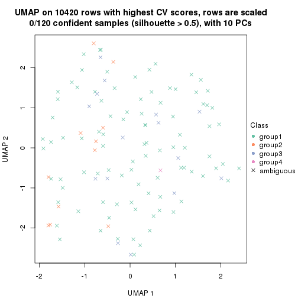
dimension_reduction(res, k = 5, method = "UMAP")
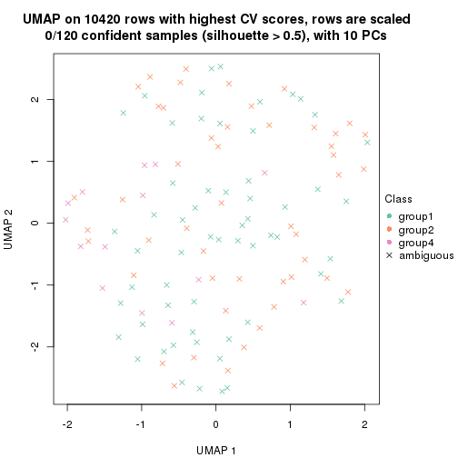
dimension_reduction(res, k = 6, method = "UMAP")
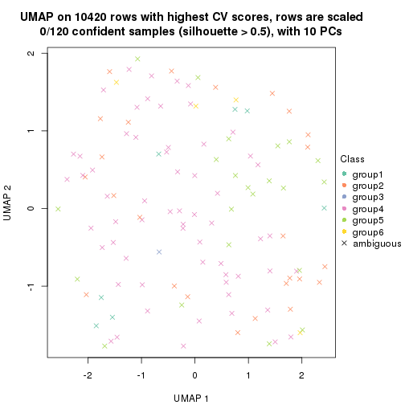
Following heatmap shows how subgroups are split when increasing k:
collect_classes(res)
If matrix rows can be associated to genes, consider to use GO_Enrichment(res,
...) to perform function enrichment for the signature genes.
The object with results only for a single top-value method and a single partition method can be extracted as:
res = res_list["CV", "NMF"]
# you can also extract it by
# res = res_list["CV:NMF"]
A summary of res and all the functions that can be applied to it:
res
#> A 'ConsensusPartition' object with k = 2, 3, 4, 5, 6.
#> On a matrix with 10420 rows and 120 columns.
#> Top rows (1000, 2000, 3000, 4000, 5000) are extracted by 'CV' method.
#> Subgroups are detected by 'NMF' method.
#> Performed in total 1250 partitions by row resampling.
#> Best k for subgroups seems to be 3.
#>
#> Following methods can be applied to this 'ConsensusPartition' object:
#> [1] "cola_report" "collect_classes" "collect_plots"
#> [4] "collect_stats" "colnames" "compare_signatures"
#> [7] "consensus_heatmap" "dimension_reduction" "functional_enrichment"
#> [10] "get_anno_col" "get_anno" "get_classes"
#> [13] "get_consensus" "get_matrix" "get_membership"
#> [16] "get_param" "get_signatures" "get_stats"
#> [19] "is_best_k" "is_stable_k" "membership_heatmap"
#> [22] "ncol" "nrow" "plot_ecdf"
#> [25] "rownames" "select_partition_number" "show"
#> [28] "suggest_best_k" "test_to_known_factors"
collect_plots() function collects all the plots made from res for all k (number of partitions)
into one single page to provide an easy and fast comparison between different k.
collect_plots(res)
The plots are:
k and the heatmap of
predicted classes for each k.k.k.k.All the plots in panels can be made by individual functions and they are plotted later in this section.
select_partition_number() produces several plots showing different
statistics for choosing “optimized” k. There are following statistics:
k;k, the area increased is defined as \(A_k - A_{k-1}\).The detailed explanations of these statistics can be found in the cola vignette.
Generally speaking, lower PAC score, higher mean silhouette score or higher
concordance corresponds to better partition. Rand index and Jaccard index
measure how similar the current partition is compared to partition with k-1.
If they are too similar, we won't accept k is better than k-1.
select_partition_number(res)
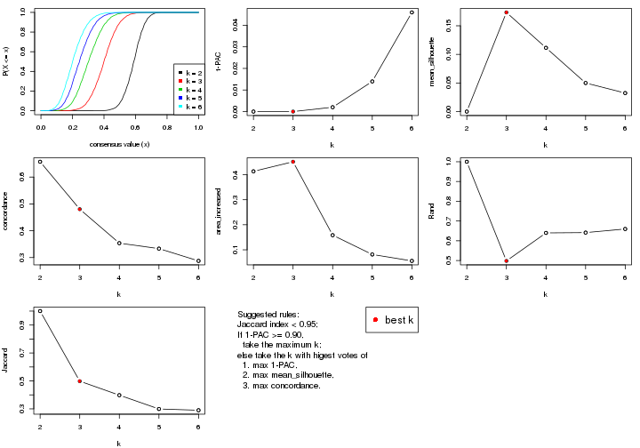
The numeric values for all these statistics can be obtained by get_stats().
get_stats(res)
#> k 1-PAC mean_silhouette concordance area_increased Rand Jaccard
#> 2 2 0.00000 0.0000 0.657 0.4134 1.000 1.000
#> 3 3 0.00000 0.1734 0.480 0.4516 0.498 0.498
#> 4 4 0.00202 0.1115 0.354 0.1584 0.640 0.398
#> 5 5 0.01397 0.0499 0.333 0.0813 0.641 0.299
#> 6 6 0.04596 0.0324 0.288 0.0556 0.660 0.290
suggest_best_k() suggests the best \(k\) based on these statistics. The rules are as follows:
NA.suggest_best_k(res)
#> [1] 3
Following shows the table of the partitions (You need to click the show/hide
code output link to see it). The membership matrix (columns with name p*)
is inferred by
clue::cl_consensus()
function with the SE method. Basically the value in the membership matrix
represents the probability to belong to a certain group. The finall class
label for an item is determined with the group with highest probability it
belongs to.
In get_classes() function, the entropy is calculated from the membership
matrix and the silhouette score is calculated from the consensus matrix.
cbind(get_classes(res, k = 2), get_membership(res, k = 2))
#> class entropy silhouette p1 p2
#> SRR572528 2 0.795 0 0.240 0.760
#> SRR572529 2 0.844 0 0.272 0.728
#> SRR572530 2 0.909 0 0.324 0.676
#> SRR572531 2 0.866 0 0.288 0.712
#> SRR572532 2 0.925 0 0.340 0.660
#> SRR572533 2 0.925 0 0.340 0.660
#> SRR572534 2 0.895 0 0.312 0.688
#> SRR572535 2 0.946 0 0.364 0.636
#> SRR572536 2 0.921 0 0.336 0.664
#> SRR572537 2 0.917 0 0.332 0.668
#> SRR572538 2 0.844 0 0.272 0.728
#> SRR572539 2 0.833 0 0.264 0.736
#> SRR572540 2 0.844 0 0.272 0.728
#> SRR572541 2 0.881 0 0.300 0.700
#> SRR572542 2 0.855 0 0.280 0.720
#> SRR572543 2 0.900 0 0.316 0.684
#> SRR572544 2 0.833 0 0.264 0.736
#> SRR572545 2 0.904 0 0.320 0.680
#> SRR572546 2 0.876 0 0.296 0.704
#> SRR572547 2 0.861 0 0.284 0.716
#> SRR572548 2 0.900 0 0.316 0.684
#> SRR572549 2 0.917 0 0.332 0.668
#> SRR572550 2 0.839 0 0.268 0.732
#> SRR572551 2 0.866 0 0.288 0.712
#> SRR572552 2 0.909 0 0.324 0.676
#> SRR572553 2 0.939 0 0.356 0.644
#> SRR572554 2 0.886 0 0.304 0.696
#> SRR572555 2 0.895 0 0.312 0.688
#> SRR572556 2 0.839 0 0.268 0.732
#> SRR572557 2 0.943 0 0.360 0.640
#> SRR572558 2 0.913 0 0.328 0.672
#> SRR572559 2 0.881 0 0.300 0.700
#> SRR572560 2 0.900 0 0.316 0.684
#> SRR572561 2 0.925 0 0.340 0.660
#> SRR572562 2 0.900 0 0.316 0.684
#> SRR572563 2 0.904 0 0.320 0.680
#> SRR572564 2 0.966 0 0.392 0.608
#> SRR572565 2 0.802 0 0.244 0.756
#> SRR572566 2 0.886 0 0.304 0.696
#> SRR572567 2 0.850 0 0.276 0.724
#> SRR572568 2 0.943 0 0.360 0.640
#> SRR572569 2 0.904 0 0.320 0.680
#> SRR572570 2 0.936 0 0.352 0.648
#> SRR572571 2 0.850 0 0.276 0.724
#> SRR572572 2 0.946 0 0.364 0.636
#> SRR572573 2 0.900 0 0.316 0.684
#> SRR572574 2 0.961 0 0.384 0.616
#> SRR572575 2 0.932 0 0.348 0.652
#> SRR572576 2 0.949 0 0.368 0.632
#> SRR572577 2 0.900 0 0.316 0.684
#> SRR572578 2 0.917 0 0.332 0.668
#> SRR572579 2 0.871 0 0.292 0.708
#> SRR572580 2 0.904 0 0.320 0.680
#> SRR572581 2 0.886 0 0.304 0.696
#> SRR572582 2 0.881 0 0.300 0.700
#> SRR572583 2 0.839 0 0.268 0.732
#> SRR572584 2 0.921 0 0.336 0.664
#> SRR572585 2 0.891 0 0.308 0.692
#> SRR572586 2 0.895 0 0.312 0.688
#> SRR572587 2 0.895 0 0.312 0.688
#> SRR572588 2 0.909 0 0.324 0.676
#> SRR572589 2 0.992 0 0.448 0.552
#> SRR572590 2 0.900 0 0.316 0.684
#> SRR572591 2 0.871 0 0.292 0.708
#> SRR572592 2 0.952 0 0.372 0.628
#> SRR572593 2 0.891 0 0.308 0.692
#> SRR572594 2 0.969 0 0.396 0.604
#> SRR572595 2 0.827 0 0.260 0.740
#> SRR572596 2 0.821 0 0.256 0.744
#> SRR572597 2 0.891 0 0.308 0.692
#> SRR572598 2 0.943 0 0.360 0.640
#> SRR572599 2 0.925 0 0.340 0.660
#> SRR572600 2 0.895 0 0.312 0.688
#> SRR572601 2 0.966 0 0.392 0.608
#> SRR572602 2 0.932 0 0.348 0.652
#> SRR572603 2 0.891 0 0.308 0.692
#> SRR572604 2 0.949 0 0.368 0.632
#> SRR572605 2 0.943 0 0.360 0.640
#> SRR572606 2 0.961 0 0.384 0.616
#> SRR572607 2 0.895 0 0.312 0.688
#> SRR572608 2 0.886 0 0.304 0.696
#> SRR572609 2 0.925 0 0.340 0.660
#> SRR572610 2 0.917 0 0.332 0.668
#> SRR572611 2 0.958 0 0.380 0.620
#> SRR572612 2 0.925 0 0.340 0.660
#> SRR572613 2 0.913 0 0.328 0.672
#> SRR572614 2 0.913 0 0.328 0.672
#> SRR572615 2 0.904 0 0.320 0.680
#> SRR572616 2 0.855 0 0.280 0.720
#> SRR572617 2 0.961 0 0.384 0.616
#> SRR572618 2 0.895 0 0.312 0.688
#> SRR572619 2 0.827 0 0.260 0.740
#> SRR572620 2 0.904 0 0.320 0.680
#> SRR572621 2 0.969 0 0.396 0.604
#> SRR572622 2 0.952 0 0.372 0.628
#> SRR572623 2 0.909 0 0.324 0.676
#> SRR572624 2 0.904 0 0.320 0.680
#> SRR572625 2 0.949 0 0.368 0.632
#> SRR572626 2 0.814 0 0.252 0.748
#> SRR572627 2 0.904 0 0.320 0.680
#> SRR572628 2 0.932 0 0.348 0.652
#> SRR572629 2 0.925 0 0.340 0.660
#> SRR572630 2 0.932 0 0.348 0.652
#> SRR572631 2 0.952 0 0.372 0.628
#> SRR572632 2 0.963 0 0.388 0.612
#> SRR572633 2 0.936 0 0.352 0.648
#> SRR572634 2 0.936 0 0.352 0.648
#> SRR572635 2 0.943 0 0.360 0.640
#> SRR572636 2 0.886 0 0.304 0.696
#> SRR572637 2 0.909 0 0.324 0.676
#> SRR572638 2 0.876 0 0.296 0.704
#> SRR572639 2 0.895 0 0.312 0.688
#> SRR572640 2 0.946 0 0.364 0.636
#> SRR572641 2 0.886 0 0.304 0.696
#> SRR572642 2 0.961 0 0.384 0.616
#> SRR572643 2 0.821 0 0.256 0.744
#> SRR572644 2 0.921 0 0.336 0.664
#> SRR572645 2 0.955 0 0.376 0.624
#> SRR572646 2 0.943 0 0.360 0.640
#> SRR572647 2 0.971 0 0.400 0.600
cbind(get_classes(res, k = 3), get_membership(res, k = 3))
#> class entropy silhouette p1 p2 p3
#> SRR572528 1 0.877 0.22751 0.584 0.236 NA
#> SRR572529 2 0.913 0.20344 0.312 0.520 NA
#> SRR572530 2 0.915 0.19941 0.292 0.528 NA
#> SRR572531 1 0.953 0.07207 0.436 0.372 NA
#> SRR572532 2 0.909 0.18157 0.304 0.528 NA
#> SRR572533 2 0.936 0.05613 0.356 0.468 NA
#> SRR572534 2 0.970 0.08075 0.388 0.396 NA
#> SRR572535 2 0.938 0.08497 0.380 0.448 NA
#> SRR572536 1 0.903 0.21511 0.532 0.308 NA
#> SRR572537 2 0.962 0.08567 0.360 0.432 NA
#> SRR572538 1 0.942 0.13238 0.488 0.312 NA
#> SRR572539 2 0.933 0.09684 0.376 0.456 NA
#> SRR572540 1 0.915 -0.01402 0.440 0.416 NA
#> SRR572541 2 0.838 0.29326 0.268 0.604 NA
#> SRR572542 2 0.938 0.18986 0.384 0.444 NA
#> SRR572543 2 0.867 0.26706 0.252 0.588 NA
#> SRR572544 1 0.926 0.01029 0.440 0.404 NA
#> SRR572545 1 0.891 0.23893 0.556 0.280 NA
#> SRR572546 1 0.915 0.19261 0.528 0.292 NA
#> SRR572547 2 0.968 0.08603 0.364 0.420 NA
#> SRR572548 1 0.939 0.11273 0.468 0.352 NA
#> SRR572549 1 0.903 0.23031 0.540 0.292 NA
#> SRR572550 2 0.909 0.20812 0.344 0.504 NA
#> SRR572551 2 0.879 0.25657 0.268 0.572 NA
#> SRR572552 1 0.900 0.12774 0.520 0.332 NA
#> SRR572553 2 0.917 0.24175 0.264 0.536 NA
#> SRR572554 2 0.976 0.11785 0.356 0.412 NA
#> SRR572555 2 0.754 0.30510 0.216 0.680 NA
#> SRR572556 2 0.948 0.15628 0.336 0.468 NA
#> SRR572557 2 0.957 0.04853 0.384 0.420 NA
#> SRR572558 2 0.878 0.24418 0.280 0.568 NA
#> SRR572559 2 0.954 0.10730 0.296 0.480 NA
#> SRR572560 1 0.886 0.24291 0.564 0.272 NA
#> SRR572561 2 0.879 0.23576 0.224 0.584 NA
#> SRR572562 2 0.937 0.09212 0.408 0.424 NA
#> SRR572563 1 0.884 0.23730 0.564 0.276 NA
#> SRR572564 2 0.887 0.24161 0.304 0.548 NA
#> SRR572565 1 0.894 0.24068 0.552 0.284 NA
#> SRR572566 2 0.903 0.23250 0.292 0.540 NA
#> SRR572567 1 0.894 0.24391 0.564 0.252 NA
#> SRR572568 1 0.944 0.09849 0.456 0.360 NA
#> SRR572569 1 0.909 0.12606 0.480 0.376 NA
#> SRR572570 1 0.913 0.24878 0.540 0.268 NA
#> SRR572571 2 0.930 0.15665 0.360 0.472 NA
#> SRR572572 1 0.958 0.11216 0.444 0.352 NA
#> SRR572573 1 0.821 0.31885 0.640 0.192 NA
#> SRR572574 2 0.953 0.08137 0.300 0.480 NA
#> SRR572575 2 0.809 0.31223 0.240 0.636 NA
#> SRR572576 2 0.817 0.27775 0.180 0.644 NA
#> SRR572577 2 0.918 0.18593 0.376 0.472 NA
#> SRR572578 2 0.896 0.17200 0.312 0.536 NA
#> SRR572579 2 0.956 0.06142 0.356 0.444 NA
#> SRR572580 2 0.962 0.02460 0.384 0.412 NA
#> SRR572581 2 0.928 0.22732 0.276 0.520 NA
#> SRR572582 2 0.948 0.08797 0.380 0.436 NA
#> SRR572583 2 0.959 0.11626 0.356 0.440 NA
#> SRR572584 1 0.838 0.30103 0.624 0.208 NA
#> SRR572585 1 0.935 0.05456 0.448 0.384 NA
#> SRR572586 2 0.889 0.22571 0.340 0.524 NA
#> SRR572587 1 0.803 0.31273 0.656 0.176 NA
#> SRR572588 1 0.947 0.17513 0.476 0.324 NA
#> SRR572589 2 0.983 0.04892 0.368 0.388 NA
#> SRR572590 2 0.927 0.16398 0.348 0.484 NA
#> SRR572591 2 0.935 0.15160 0.384 0.448 NA
#> SRR572592 2 0.662 0.32023 0.100 0.752 NA
#> SRR572593 2 0.917 0.13419 0.392 0.460 NA
#> SRR572594 2 0.817 0.30485 0.180 0.644 NA
#> SRR572595 1 0.934 0.17125 0.496 0.316 NA
#> SRR572596 2 0.969 0.15819 0.308 0.452 NA
#> SRR572597 1 0.831 0.28592 0.632 0.176 NA
#> SRR572598 2 0.957 0.05025 0.360 0.440 NA
#> SRR572599 1 0.957 0.07441 0.424 0.380 NA
#> SRR572600 1 0.914 0.20388 0.540 0.264 NA
#> SRR572601 1 0.976 0.08093 0.424 0.336 NA
#> SRR572602 1 0.944 0.18132 0.484 0.316 NA
#> SRR572603 1 0.913 0.21302 0.516 0.320 NA
#> SRR572604 1 0.848 0.24998 0.616 0.204 NA
#> SRR572605 1 0.942 0.18041 0.504 0.272 NA
#> SRR572606 2 0.958 0.09798 0.372 0.428 NA
#> SRR572607 1 0.944 0.20252 0.484 0.316 NA
#> SRR572608 1 0.968 0.00825 0.432 0.348 NA
#> SRR572609 1 0.946 0.07458 0.444 0.372 NA
#> SRR572610 2 0.880 0.23820 0.276 0.568 NA
#> SRR572611 1 0.973 0.05216 0.440 0.316 NA
#> SRR572612 2 0.899 0.25080 0.260 0.556 NA
#> SRR572613 1 0.960 0.00958 0.416 0.384 NA
#> SRR572614 2 0.937 0.14139 0.344 0.476 NA
#> SRR572615 2 0.713 0.33316 0.164 0.720 NA
#> SRR572616 2 0.943 0.10602 0.368 0.452 NA
#> SRR572617 1 0.971 0.03324 0.412 0.368 NA
#> SRR572618 1 0.884 0.23709 0.580 0.220 NA
#> SRR572619 1 0.930 0.19937 0.520 0.268 NA
#> SRR572620 2 0.945 0.05456 0.348 0.464 NA
#> SRR572621 2 0.948 0.14016 0.296 0.488 NA
#> SRR572622 1 0.836 0.29103 0.624 0.160 NA
#> SRR572623 1 0.930 0.12989 0.512 0.292 NA
#> SRR572624 1 0.853 0.30021 0.612 0.192 NA
#> SRR572625 2 0.919 0.17429 0.316 0.512 NA
#> SRR572626 2 0.884 0.07046 0.428 0.456 NA
#> SRR572627 2 0.933 0.23810 0.244 0.520 NA
#> SRR572628 2 0.854 0.28079 0.236 0.604 NA
#> SRR572629 1 0.942 0.12892 0.484 0.320 NA
#> SRR572630 1 0.756 0.33871 0.692 0.156 NA
#> SRR572631 2 0.884 0.26445 0.216 0.580 NA
#> SRR572632 1 0.776 0.33127 0.672 0.128 NA
#> SRR572633 2 0.904 0.26020 0.280 0.544 NA
#> SRR572634 1 0.822 0.31867 0.640 0.184 NA
#> SRR572635 1 0.940 0.16766 0.484 0.324 NA
#> SRR572636 1 0.958 -0.06945 0.404 0.400 NA
#> SRR572637 1 0.919 -0.12503 0.428 0.424 NA
#> SRR572638 2 0.955 0.02845 0.396 0.412 NA
#> SRR572639 1 0.792 0.32576 0.664 0.152 NA
#> SRR572640 1 0.972 0.07799 0.436 0.328 NA
#> SRR572641 2 0.885 0.18972 0.292 0.556 NA
#> SRR572642 1 0.919 0.12080 0.492 0.348 NA
#> SRR572643 1 0.886 0.24590 0.564 0.272 NA
#> SRR572644 2 0.843 0.29169 0.172 0.620 NA
#> SRR572645 1 0.647 0.34409 0.760 0.092 NA
#> SRR572646 2 0.941 0.19763 0.276 0.504 NA
#> SRR572647 2 0.868 0.22943 0.280 0.576 NA
cbind(get_classes(res, k = 4), get_membership(res, k = 4))
#> class entropy silhouette p1 p2 p3 p4
#> SRR572528 3 0.860 0.06928 0.312 0.096 0.476 NA
#> SRR572529 3 0.918 0.10872 0.204 0.260 0.432 NA
#> SRR572530 2 0.925 0.03168 0.244 0.388 0.280 NA
#> SRR572531 3 0.962 0.07837 0.260 0.288 0.328 NA
#> SRR572532 2 0.954 0.11663 0.240 0.388 0.236 NA
#> SRR572533 2 0.966 0.01187 0.300 0.348 0.188 NA
#> SRR572534 2 0.944 0.03171 0.332 0.356 0.184 NA
#> SRR572535 3 0.843 0.18067 0.264 0.128 0.520 NA
#> SRR572536 1 0.870 0.22276 0.512 0.196 0.096 NA
#> SRR572537 3 0.934 -0.03538 0.296 0.308 0.312 NA
#> SRR572538 1 0.891 0.12203 0.464 0.160 0.276 NA
#> SRR572539 1 0.918 -0.08216 0.364 0.344 0.204 NA
#> SRR572540 2 0.930 -0.01957 0.344 0.372 0.152 NA
#> SRR572541 3 0.893 -0.02907 0.148 0.376 0.384 NA
#> SRR572542 3 0.892 0.07516 0.232 0.308 0.400 NA
#> SRR572543 3 0.897 -0.05210 0.176 0.364 0.380 NA
#> SRR572544 3 0.917 0.12878 0.276 0.208 0.420 NA
#> SRR572545 3 0.883 -0.00759 0.368 0.108 0.408 NA
#> SRR572546 1 0.935 0.11443 0.392 0.144 0.312 NA
#> SRR572547 3 0.864 0.20993 0.164 0.208 0.524 NA
#> SRR572548 1 0.928 0.05074 0.396 0.304 0.192 NA
#> SRR572549 1 0.905 0.12962 0.436 0.128 0.304 NA
#> SRR572550 2 0.907 0.10685 0.276 0.392 0.264 NA
#> SRR572551 2 0.846 -0.03279 0.168 0.444 0.340 NA
#> SRR572552 3 0.896 0.00999 0.356 0.160 0.396 NA
#> SRR572553 3 0.888 0.02260 0.172 0.344 0.408 NA
#> SRR572554 3 0.924 0.06305 0.264 0.292 0.364 NA
#> SRR572555 2 0.902 0.14995 0.200 0.456 0.248 NA
#> SRR572556 3 0.949 -0.01802 0.300 0.252 0.340 NA
#> SRR572557 3 0.861 0.21737 0.252 0.180 0.496 NA
#> SRR572558 2 0.862 0.07188 0.156 0.436 0.344 NA
#> SRR572559 2 0.970 0.04598 0.232 0.344 0.276 NA
#> SRR572560 1 0.893 0.14977 0.480 0.164 0.244 NA
#> SRR572561 2 0.850 0.20643 0.280 0.492 0.164 NA
#> SRR572562 3 0.936 0.05842 0.268 0.240 0.388 NA
#> SRR572563 1 0.886 0.20850 0.504 0.212 0.144 NA
#> SRR572564 3 0.915 -0.01921 0.172 0.356 0.372 NA
#> SRR572565 1 0.870 0.23594 0.508 0.144 0.240 NA
#> SRR572566 2 0.885 0.17629 0.312 0.428 0.192 NA
#> SRR572567 1 0.881 0.20397 0.496 0.120 0.244 NA
#> SRR572568 1 0.947 0.12114 0.416 0.236 0.192 NA
#> SRR572569 1 0.962 0.07320 0.356 0.232 0.276 NA
#> SRR572570 1 0.913 0.20509 0.476 0.184 0.184 NA
#> SRR572571 2 0.900 0.08068 0.348 0.396 0.168 NA
#> SRR572572 1 0.947 0.06884 0.360 0.160 0.328 NA
#> SRR572573 1 0.870 0.22142 0.508 0.104 0.236 NA
#> SRR572574 2 0.898 0.05343 0.364 0.392 0.100 NA
#> SRR572575 3 0.903 0.04642 0.200 0.336 0.388 NA
#> SRR572576 2 0.824 0.21856 0.108 0.572 0.184 NA
#> SRR572577 3 0.776 0.19817 0.112 0.220 0.596 NA
#> SRR572578 3 0.922 0.11001 0.176 0.264 0.436 NA
#> SRR572579 3 0.930 0.14437 0.272 0.220 0.404 NA
#> SRR572580 3 0.950 0.09123 0.296 0.188 0.376 NA
#> SRR572581 3 0.857 0.10533 0.148 0.264 0.504 NA
#> SRR572582 3 0.898 0.20413 0.248 0.180 0.468 NA
#> SRR572583 1 0.921 -0.01157 0.400 0.272 0.240 NA
#> SRR572584 1 0.814 0.27484 0.580 0.156 0.172 NA
#> SRR572585 1 0.915 0.08342 0.416 0.304 0.176 NA
#> SRR572586 2 0.901 0.17458 0.300 0.420 0.200 NA
#> SRR572587 1 0.697 0.28838 0.680 0.076 0.148 NA
#> SRR572588 1 0.957 0.11415 0.396 0.248 0.188 NA
#> SRR572589 1 0.959 0.03359 0.340 0.232 0.300 NA
#> SRR572590 3 0.892 0.17805 0.176 0.204 0.496 NA
#> SRR572591 3 0.890 0.08943 0.256 0.312 0.380 NA
#> SRR572592 2 0.753 0.19895 0.084 0.624 0.200 NA
#> SRR572593 1 0.899 -0.03142 0.384 0.212 0.336 NA
#> SRR572594 2 0.823 0.09256 0.064 0.508 0.304 NA
#> SRR572595 3 0.924 0.08709 0.316 0.148 0.404 NA
#> SRR572596 3 0.877 0.18384 0.180 0.196 0.512 NA
#> SRR572597 1 0.898 0.24725 0.496 0.188 0.168 NA
#> SRR572598 3 0.983 -0.03481 0.252 0.292 0.292 NA
#> SRR572599 1 0.957 0.00104 0.340 0.328 0.148 NA
#> SRR572600 1 0.803 0.21421 0.576 0.224 0.096 NA
#> SRR572601 1 0.891 0.04724 0.436 0.324 0.116 NA
#> SRR572602 1 0.876 0.21931 0.504 0.232 0.108 NA
#> SRR572603 1 0.881 0.20635 0.492 0.212 0.204 NA
#> SRR572604 1 0.832 0.17828 0.548 0.120 0.232 NA
#> SRR572605 3 0.888 0.08566 0.288 0.136 0.464 NA
#> SRR572606 1 0.940 -0.06051 0.324 0.296 0.288 NA
#> SRR572607 1 0.902 0.12043 0.444 0.292 0.156 NA
#> SRR572608 3 0.858 0.25889 0.212 0.144 0.532 NA
#> SRR572609 3 0.927 0.11159 0.316 0.144 0.400 NA
#> SRR572610 2 0.920 0.15274 0.268 0.404 0.240 NA
#> SRR572611 3 0.881 0.24543 0.236 0.144 0.500 NA
#> SRR572612 3 0.916 0.03773 0.148 0.332 0.400 NA
#> SRR572613 3 0.952 0.11362 0.260 0.196 0.396 NA
#> SRR572614 2 0.936 -0.02174 0.252 0.344 0.312 NA
#> SRR572615 2 0.886 0.05307 0.136 0.416 0.352 NA
#> SRR572616 3 0.938 0.11077 0.280 0.248 0.372 NA
#> SRR572617 1 0.967 0.06712 0.344 0.244 0.272 NA
#> SRR572618 3 0.833 0.05891 0.376 0.080 0.448 NA
#> SRR572619 3 0.951 0.10950 0.268 0.176 0.396 NA
#> SRR572620 2 0.952 0.03505 0.312 0.364 0.152 NA
#> SRR572621 2 0.895 0.10058 0.344 0.416 0.116 NA
#> SRR572622 1 0.827 0.24776 0.564 0.144 0.196 NA
#> SRR572623 1 0.898 0.05688 0.408 0.136 0.348 NA
#> SRR572624 1 0.885 0.05164 0.400 0.080 0.364 NA
#> SRR572625 2 0.929 0.08647 0.276 0.384 0.248 NA
#> SRR572626 3 0.828 0.24527 0.176 0.188 0.556 NA
#> SRR572627 3 0.932 0.01344 0.200 0.340 0.356 NA
#> SRR572628 2 0.862 0.20327 0.188 0.536 0.148 NA
#> SRR572629 1 0.912 0.14343 0.448 0.272 0.148 NA
#> SRR572630 1 0.862 0.21036 0.528 0.112 0.208 NA
#> SRR572631 2 0.934 0.15728 0.252 0.408 0.228 NA
#> SRR572632 1 0.773 0.28406 0.620 0.088 0.144 NA
#> SRR572633 3 0.924 0.04088 0.184 0.340 0.372 NA
#> SRR572634 1 0.908 0.21806 0.468 0.120 0.228 NA
#> SRR572635 1 0.938 0.19183 0.436 0.220 0.184 NA
#> SRR572636 2 0.953 0.07417 0.312 0.324 0.252 NA
#> SRR572637 3 0.905 0.15407 0.312 0.148 0.428 NA
#> SRR572638 3 0.928 0.15540 0.276 0.180 0.420 NA
#> SRR572639 1 0.712 0.26086 0.656 0.088 0.188 NA
#> SRR572640 3 0.870 0.19661 0.264 0.136 0.496 NA
#> SRR572641 2 0.968 -0.01295 0.240 0.336 0.284 NA
#> SRR572642 1 0.901 0.14419 0.464 0.264 0.152 NA
#> SRR572643 1 0.925 0.10153 0.416 0.248 0.236 NA
#> SRR572644 3 0.862 0.00685 0.084 0.380 0.416 NA
#> SRR572645 1 0.773 0.26063 0.600 0.060 0.204 NA
#> SRR572646 2 0.955 0.07686 0.272 0.324 0.292 NA
#> SRR572647 2 0.907 0.14088 0.160 0.476 0.224 NA
cbind(get_classes(res, k = 5), get_membership(res, k = 5))
#> class entropy silhouette p1 p2 p3 p4 p5
#> SRR572528 1 0.943 0.073258 0.344 0.236 NA 0.164 0.088
#> SRR572529 2 0.905 0.074241 0.096 0.372 NA 0.296 0.124
#> SRR572530 2 0.897 0.065348 0.180 0.372 NA 0.284 0.080
#> SRR572531 4 0.934 0.033450 0.236 0.280 NA 0.288 0.072
#> SRR572532 2 0.931 -0.042562 0.228 0.352 NA 0.120 0.216
#> SRR572533 1 0.886 -0.247271 0.360 0.128 NA 0.196 0.280
#> SRR572534 1 0.960 -0.069716 0.276 0.264 NA 0.212 0.156
#> SRR572535 4 0.960 0.077875 0.200 0.236 NA 0.308 0.100
#> SRR572536 1 0.793 0.143005 0.532 0.128 NA 0.096 0.204
#> SRR572537 2 0.916 0.095690 0.244 0.376 NA 0.188 0.084
#> SRR572538 1 0.903 0.158056 0.408 0.236 NA 0.152 0.124
#> SRR572539 4 0.903 0.074700 0.232 0.256 NA 0.332 0.036
#> SRR572540 1 0.892 0.030998 0.376 0.204 NA 0.268 0.084
#> SRR572541 2 0.851 0.147599 0.144 0.488 NA 0.168 0.144
#> SRR572542 2 0.891 -0.020219 0.196 0.352 NA 0.300 0.096
#> SRR572543 2 0.889 0.014996 0.124 0.392 NA 0.284 0.064
#> SRR572544 1 0.926 0.026633 0.352 0.284 NA 0.124 0.136
#> SRR572545 1 0.850 0.132247 0.472 0.232 NA 0.080 0.080
#> SRR572546 1 0.914 0.124912 0.424 0.184 NA 0.140 0.136
#> SRR572547 2 0.861 0.128602 0.180 0.460 NA 0.152 0.044
#> SRR572548 2 0.895 -0.109810 0.316 0.332 NA 0.108 0.192
#> SRR572549 1 0.886 0.184808 0.428 0.244 NA 0.144 0.096
#> SRR572550 2 0.890 0.026575 0.164 0.384 NA 0.280 0.116
#> SRR572551 2 0.876 0.129017 0.152 0.464 NA 0.184 0.120
#> SRR572552 4 0.937 0.067204 0.268 0.208 NA 0.320 0.116
#> SRR572553 2 0.842 0.089712 0.168 0.464 NA 0.236 0.072
#> SRR572554 2 0.900 0.093521 0.180 0.404 NA 0.236 0.100
#> SRR572555 2 0.897 -0.085110 0.092 0.392 NA 0.236 0.208
#> SRR572556 4 0.820 0.043324 0.172 0.284 NA 0.444 0.044
#> SRR572557 2 0.954 -0.101854 0.272 0.296 NA 0.136 0.196
#> SRR572558 2 0.739 0.197052 0.140 0.608 NA 0.100 0.104
#> SRR572559 2 0.939 -0.059921 0.224 0.324 NA 0.176 0.212
#> SRR572560 4 0.863 -0.040442 0.352 0.128 NA 0.360 0.048
#> SRR572561 4 0.834 0.118914 0.136 0.232 NA 0.476 0.116
#> SRR572562 2 0.925 -0.046112 0.132 0.320 NA 0.316 0.088
#> SRR572563 1 0.885 -0.125075 0.404 0.120 NA 0.196 0.232
#> SRR572564 4 0.934 -0.095879 0.144 0.280 NA 0.308 0.200
#> SRR572565 1 0.889 0.134565 0.420 0.144 NA 0.244 0.072
#> SRR572566 4 0.890 0.075502 0.196 0.288 NA 0.364 0.096
#> SRR572567 1 0.898 0.200660 0.404 0.208 NA 0.180 0.052
#> SRR572568 4 0.863 0.043112 0.300 0.108 NA 0.408 0.132
#> SRR572569 1 0.930 -0.017301 0.352 0.168 NA 0.256 0.144
#> SRR572570 1 0.897 0.168393 0.428 0.172 NA 0.148 0.184
#> SRR572571 2 0.914 -0.062989 0.208 0.312 NA 0.308 0.104
#> SRR572572 1 0.963 -0.065813 0.320 0.192 NA 0.184 0.200
#> SRR572573 1 0.853 0.241205 0.484 0.148 NA 0.184 0.060
#> SRR572574 4 0.899 0.047697 0.304 0.164 NA 0.360 0.096
#> SRR572575 2 0.837 0.013179 0.068 0.372 NA 0.368 0.140
#> SRR572576 2 0.839 0.008967 0.080 0.468 NA 0.172 0.228
#> SRR572577 2 0.845 0.129092 0.100 0.496 NA 0.188 0.072
#> SRR572578 2 0.910 0.005674 0.144 0.348 NA 0.304 0.072
#> SRR572579 2 0.936 0.068260 0.216 0.324 NA 0.260 0.100
#> SRR572580 4 0.907 0.125719 0.192 0.196 NA 0.388 0.052
#> SRR572581 4 0.872 -0.000878 0.084 0.336 NA 0.356 0.056
#> SRR572582 2 0.879 0.141591 0.228 0.444 NA 0.144 0.088
#> SRR572583 4 0.936 0.048490 0.200 0.244 NA 0.340 0.136
#> SRR572584 1 0.791 0.134139 0.468 0.036 NA 0.312 0.112
#> SRR572585 4 0.883 0.055886 0.252 0.136 NA 0.424 0.116
#> SRR572586 4 0.913 0.007911 0.204 0.284 NA 0.340 0.096
#> SRR572587 1 0.846 0.155502 0.444 0.112 NA 0.288 0.072
#> SRR572588 1 0.894 0.110740 0.424 0.212 NA 0.132 0.164
#> SRR572589 4 0.951 0.074425 0.164 0.156 NA 0.372 0.156
#> SRR572590 4 0.925 0.060291 0.144 0.248 NA 0.364 0.076
#> SRR572591 2 0.924 0.061284 0.276 0.352 NA 0.168 0.112
#> SRR572592 2 0.718 0.140696 0.036 0.596 NA 0.160 0.164
#> SRR572593 4 0.897 0.110726 0.308 0.204 NA 0.320 0.128
#> SRR572594 2 0.827 -0.091171 0.072 0.452 NA 0.196 0.244
#> SRR572595 1 0.947 0.071707 0.336 0.244 NA 0.180 0.100
#> SRR572596 2 0.927 0.001667 0.188 0.312 NA 0.300 0.072
#> SRR572597 1 0.914 0.221500 0.412 0.212 NA 0.140 0.136
#> SRR572598 5 0.908 0.000000 0.212 0.216 NA 0.188 0.348
#> SRR572599 1 0.951 -0.040398 0.296 0.208 NA 0.188 0.236
#> SRR572600 1 0.842 0.095752 0.408 0.092 NA 0.336 0.060
#> SRR572601 4 0.923 0.014925 0.288 0.096 NA 0.352 0.124
#> SRR572602 1 0.846 0.096731 0.492 0.148 NA 0.108 0.188
#> SRR572603 1 0.903 0.172066 0.420 0.168 NA 0.200 0.136
#> SRR572604 1 0.864 0.043251 0.444 0.100 NA 0.264 0.084
#> SRR572605 1 0.928 0.015448 0.308 0.288 NA 0.064 0.136
#> SRR572606 4 0.955 0.038955 0.228 0.184 NA 0.332 0.152
#> SRR572607 4 0.876 -0.013666 0.268 0.104 NA 0.428 0.112
#> SRR572608 4 0.928 0.020574 0.252 0.252 NA 0.256 0.040
#> SRR572609 2 0.907 0.030436 0.244 0.308 NA 0.292 0.060
#> SRR572610 4 0.882 0.064148 0.132 0.344 NA 0.352 0.104
#> SRR572611 1 0.980 -0.044687 0.260 0.252 NA 0.200 0.132
#> SRR572612 2 0.903 0.094740 0.116 0.400 NA 0.264 0.100
#> SRR572613 1 0.973 -0.109465 0.288 0.252 NA 0.156 0.136
#> SRR572614 2 0.954 -0.077976 0.212 0.272 NA 0.264 0.176
#> SRR572615 4 0.840 -0.021784 0.096 0.368 NA 0.372 0.120
#> SRR572616 4 0.899 0.065463 0.244 0.260 NA 0.340 0.048
#> SRR572617 4 0.882 0.129512 0.220 0.192 NA 0.412 0.044
#> SRR572618 1 0.895 0.121657 0.408 0.236 NA 0.144 0.060
#> SRR572619 1 0.885 0.019948 0.372 0.316 NA 0.064 0.116
#> SRR572620 2 0.880 -0.084185 0.288 0.344 NA 0.080 0.240
#> SRR572621 4 0.904 0.117236 0.192 0.204 NA 0.404 0.136
#> SRR572622 1 0.857 0.015633 0.488 0.072 NA 0.156 0.168
#> SRR572623 1 0.933 0.043286 0.344 0.232 NA 0.196 0.068
#> SRR572624 1 0.908 0.199305 0.408 0.168 NA 0.160 0.068
#> SRR572625 4 0.883 0.119606 0.172 0.172 NA 0.456 0.084
#> SRR572626 2 0.910 0.066145 0.252 0.364 NA 0.204 0.064
#> SRR572627 2 0.911 0.104133 0.200 0.408 NA 0.188 0.112
#> SRR572628 2 0.906 -0.084581 0.128 0.372 NA 0.248 0.196
#> SRR572629 1 0.945 0.047434 0.352 0.148 NA 0.208 0.196
#> SRR572630 1 0.729 0.196368 0.624 0.112 NA 0.096 0.060
#> SRR572631 4 0.872 0.070706 0.076 0.260 NA 0.428 0.152
#> SRR572632 1 0.786 0.146405 0.568 0.076 NA 0.152 0.080
#> SRR572633 4 0.910 -0.031075 0.096 0.332 NA 0.332 0.136
#> SRR572634 1 0.817 0.029107 0.540 0.084 NA 0.112 0.160
#> SRR572635 1 0.871 -0.047228 0.416 0.192 NA 0.144 0.216
#> SRR572636 2 0.955 0.050526 0.252 0.328 NA 0.152 0.144
#> SRR572637 4 0.944 0.072502 0.240 0.252 NA 0.296 0.080
#> SRR572638 2 0.951 0.079122 0.208 0.352 NA 0.164 0.108
#> SRR572639 1 0.783 0.187177 0.548 0.120 NA 0.196 0.044
#> SRR572640 1 0.932 0.033312 0.336 0.284 NA 0.092 0.128
#> SRR572641 4 0.952 0.010998 0.212 0.276 NA 0.288 0.108
#> SRR572642 1 0.931 -0.040794 0.320 0.124 NA 0.312 0.136
#> SRR572643 1 0.886 0.172569 0.424 0.208 NA 0.200 0.072
#> SRR572644 2 0.816 0.069792 0.068 0.460 NA 0.308 0.084
#> SRR572645 1 0.761 0.230281 0.596 0.112 NA 0.068 0.096
#> SRR572646 4 0.908 0.139375 0.124 0.248 NA 0.400 0.136
#> SRR572647 2 0.919 -0.363367 0.156 0.312 NA 0.236 0.252
cbind(get_classes(res, k = 6), get_membership(res, k = 6))
#> class entropy silhouette p1 p2 p3 p4 p5 p6
#> SRR572528 4 0.800 0.14524 0.136 0.084 NA 0.516 0.076 0.144
#> SRR572529 5 0.874 0.16814 0.100 0.160 NA 0.260 0.364 0.076
#> SRR572530 5 0.904 0.14686 0.176 0.244 NA 0.208 0.276 0.036
#> SRR572531 4 0.870 -0.02221 0.108 0.148 NA 0.436 0.164 0.084
#> SRR572532 2 0.887 0.01044 0.116 0.428 NA 0.160 0.100 0.112
#> SRR572533 1 0.894 -0.14387 0.292 0.276 NA 0.140 0.064 0.192
#> SRR572534 2 0.899 0.02204 0.252 0.364 NA 0.096 0.080 0.088
#> SRR572535 4 0.864 0.09746 0.140 0.156 NA 0.448 0.080 0.112
#> SRR572536 1 0.836 0.20818 0.468 0.196 NA 0.092 0.052 0.100
#> SRR572537 2 0.920 -0.11518 0.180 0.284 NA 0.240 0.168 0.036
#> SRR572538 1 0.912 0.08668 0.308 0.120 NA 0.276 0.156 0.076
#> SRR572539 2 0.942 0.04728 0.180 0.296 NA 0.208 0.148 0.060
#> SRR572540 1 0.925 0.01989 0.296 0.228 NA 0.212 0.116 0.092
#> SRR572541 2 0.905 0.02782 0.144 0.376 NA 0.136 0.196 0.064
#> SRR572542 4 0.921 0.03396 0.160 0.232 NA 0.308 0.164 0.048
#> SRR572543 2 0.887 0.04035 0.104 0.368 NA 0.264 0.116 0.068
#> SRR572544 4 0.881 0.08598 0.200 0.176 NA 0.396 0.072 0.064
#> SRR572545 4 0.873 -0.00802 0.248 0.088 NA 0.360 0.044 0.192
#> SRR572546 1 0.914 0.08804 0.316 0.204 NA 0.232 0.068 0.112
#> SRR572547 4 0.824 0.01004 0.052 0.204 NA 0.464 0.148 0.064
#> SRR572548 1 0.895 0.08052 0.300 0.292 NA 0.172 0.080 0.116
#> SRR572549 1 0.899 0.07592 0.328 0.148 NA 0.248 0.164 0.068
#> SRR572550 2 0.932 -0.00137 0.200 0.328 NA 0.144 0.164 0.064
#> SRR572551 2 0.862 -0.06483 0.104 0.364 NA 0.284 0.096 0.028
#> SRR572552 4 0.891 -0.04454 0.216 0.120 NA 0.332 0.184 0.132
#> SRR572553 2 0.912 -0.05044 0.096 0.356 NA 0.208 0.176 0.088
#> SRR572554 4 0.891 0.06043 0.112 0.196 NA 0.376 0.136 0.032
#> SRR572555 2 0.805 -0.12684 0.044 0.460 NA 0.132 0.092 0.236
#> SRR572556 5 0.862 0.12894 0.192 0.188 NA 0.176 0.372 0.036
#> SRR572557 4 0.855 0.10192 0.096 0.156 NA 0.440 0.080 0.180
#> SRR572558 2 0.869 0.00941 0.116 0.412 NA 0.176 0.180 0.072
#> SRR572559 2 0.931 -0.06476 0.172 0.284 NA 0.216 0.096 0.188
#> SRR572560 1 0.869 0.12943 0.420 0.120 NA 0.172 0.168 0.072
#> SRR572561 2 0.914 0.06581 0.228 0.352 NA 0.064 0.132 0.112
#> SRR572562 2 0.942 0.00711 0.168 0.232 NA 0.216 0.216 0.132
#> SRR572563 1 0.830 0.11983 0.456 0.128 NA 0.148 0.044 0.180
#> SRR572564 2 0.935 -0.11542 0.128 0.296 NA 0.164 0.128 0.232
#> SRR572565 1 0.887 0.18939 0.416 0.124 NA 0.152 0.136 0.120
#> SRR572566 2 0.857 0.05594 0.252 0.396 NA 0.128 0.124 0.052
#> SRR572567 1 0.890 0.12639 0.372 0.112 NA 0.232 0.148 0.048
#> SRR572568 1 0.900 0.04663 0.372 0.172 NA 0.112 0.176 0.128
#> SRR572569 1 0.908 0.02890 0.288 0.224 NA 0.228 0.096 0.136
#> SRR572570 1 0.895 0.07509 0.360 0.212 NA 0.156 0.152 0.080
#> SRR572571 2 0.928 0.03308 0.224 0.340 NA 0.124 0.128 0.092
#> SRR572572 4 0.930 -0.11685 0.180 0.236 NA 0.260 0.116 0.176
#> SRR572573 1 0.864 0.18309 0.408 0.112 NA 0.232 0.124 0.080
#> SRR572574 2 0.913 0.00843 0.296 0.308 NA 0.120 0.092 0.092
#> SRR572575 2 0.884 -0.03661 0.080 0.348 NA 0.280 0.152 0.060
#> SRR572576 2 0.712 0.01666 0.072 0.600 NA 0.048 0.068 0.156
#> SRR572577 4 0.904 -0.04989 0.120 0.204 NA 0.336 0.204 0.036
#> SRR572578 5 0.904 0.15129 0.112 0.252 NA 0.256 0.260 0.084
#> SRR572579 4 0.918 0.00200 0.192 0.136 NA 0.340 0.180 0.048
#> SRR572580 1 0.890 -0.04030 0.292 0.112 NA 0.288 0.200 0.072
#> SRR572581 4 0.905 -0.06316 0.104 0.244 NA 0.276 0.256 0.064
#> SRR572582 4 0.886 0.04085 0.160 0.136 NA 0.408 0.156 0.088
#> SRR572583 1 0.969 -0.05028 0.208 0.204 NA 0.184 0.204 0.132
#> SRR572584 1 0.778 0.18816 0.524 0.064 NA 0.152 0.120 0.116
#> SRR572585 1 0.931 0.01827 0.320 0.208 NA 0.096 0.196 0.092
#> SRR572586 2 0.954 -0.04650 0.164 0.304 NA 0.184 0.148 0.080
#> SRR572587 1 0.806 0.16799 0.464 0.044 NA 0.212 0.164 0.076
#> SRR572588 1 0.897 0.13438 0.348 0.248 NA 0.140 0.080 0.136
#> SRR572589 6 0.954 0.05115 0.208 0.236 NA 0.148 0.104 0.236
#> SRR572590 4 0.899 -0.03767 0.084 0.176 NA 0.368 0.216 0.076
#> SRR572591 4 0.958 0.01136 0.164 0.240 NA 0.256 0.128 0.072
#> SRR572592 2 0.636 0.13242 0.056 0.672 NA 0.076 0.104 0.032
#> SRR572593 2 0.956 -0.02676 0.196 0.244 NA 0.232 0.148 0.112
#> SRR572594 2 0.855 -0.09751 0.044 0.436 NA 0.104 0.096 0.208
#> SRR572595 4 0.917 0.04532 0.248 0.136 NA 0.336 0.112 0.072
#> SRR572596 4 0.930 -0.02461 0.176 0.136 NA 0.300 0.240 0.072
#> SRR572597 1 0.888 0.16106 0.372 0.196 NA 0.204 0.092 0.048
#> SRR572598 6 0.816 0.04799 0.152 0.304 NA 0.148 0.032 0.352
#> SRR572599 2 0.954 -0.06464 0.260 0.268 NA 0.132 0.104 0.120
#> SRR572600 1 0.839 0.12478 0.432 0.120 NA 0.116 0.184 0.012
#> SRR572601 1 0.903 -0.07183 0.344 0.224 NA 0.048 0.100 0.188
#> SRR572602 1 0.915 0.18435 0.356 0.184 NA 0.156 0.092 0.156
#> SRR572603 1 0.835 0.15140 0.456 0.136 NA 0.180 0.132 0.044
#> SRR572604 1 0.900 0.09306 0.364 0.100 NA 0.244 0.132 0.068
#> SRR572605 4 0.884 0.05343 0.156 0.120 NA 0.400 0.096 0.184
#> SRR572606 2 0.951 -0.11997 0.212 0.280 NA 0.168 0.132 0.148
#> SRR572607 1 0.919 0.06149 0.324 0.180 NA 0.120 0.232 0.068
#> SRR572608 4 0.831 0.08670 0.108 0.080 NA 0.468 0.208 0.060
#> SRR572609 4 0.803 -0.08809 0.156 0.096 NA 0.428 0.260 0.032
#> SRR572610 2 0.895 -0.01878 0.184 0.388 NA 0.176 0.092 0.100
#> SRR572611 4 0.909 0.12182 0.144 0.104 NA 0.404 0.120 0.100
#> SRR572612 5 0.898 0.19053 0.092 0.244 NA 0.228 0.312 0.068
#> SRR572613 4 0.874 0.07113 0.116 0.156 NA 0.376 0.052 0.244
#> SRR572614 4 0.946 -0.04955 0.176 0.232 NA 0.272 0.088 0.160
#> SRR572615 2 0.875 0.04596 0.112 0.428 NA 0.152 0.156 0.100
#> SRR572616 4 0.955 0.03318 0.188 0.192 NA 0.288 0.136 0.076
#> SRR572617 1 0.932 -0.12823 0.240 0.196 NA 0.200 0.240 0.068
#> SRR572618 4 0.836 0.08752 0.192 0.084 NA 0.468 0.112 0.052
#> SRR572619 4 0.895 0.07474 0.216 0.132 NA 0.376 0.084 0.140
#> SRR572620 2 0.879 -0.00037 0.212 0.392 NA 0.136 0.044 0.140
#> SRR572621 2 0.897 0.06454 0.212 0.336 NA 0.084 0.232 0.064
#> SRR572622 1 0.839 0.00133 0.368 0.056 NA 0.212 0.048 0.268
#> SRR572623 4 0.944 0.04364 0.224 0.152 NA 0.300 0.140 0.068
#> SRR572624 4 0.834 -0.02540 0.300 0.068 NA 0.396 0.096 0.100
#> SRR572625 2 0.936 -0.08504 0.208 0.324 NA 0.132 0.164 0.092
#> SRR572626 4 0.780 0.04130 0.060 0.132 NA 0.536 0.148 0.056
#> SRR572627 2 0.927 0.01442 0.112 0.240 NA 0.236 0.176 0.028
#> SRR572628 2 0.843 -0.02542 0.144 0.476 NA 0.092 0.084 0.140
#> SRR572629 1 0.891 0.13632 0.384 0.204 NA 0.120 0.128 0.124
#> SRR572630 1 0.811 0.15385 0.468 0.068 NA 0.240 0.048 0.100
#> SRR572631 2 0.924 -0.00348 0.164 0.368 NA 0.132 0.144 0.116
#> SRR572632 1 0.860 0.13007 0.436 0.056 NA 0.136 0.116 0.188
#> SRR572633 4 0.931 -0.02788 0.144 0.212 NA 0.252 0.232 0.032
#> SRR572634 1 0.886 0.12719 0.364 0.084 NA 0.232 0.084 0.184
#> SRR572635 1 0.862 0.00932 0.356 0.248 NA 0.124 0.068 0.184
#> SRR572636 2 0.923 0.02270 0.236 0.320 NA 0.132 0.136 0.048
#> SRR572637 4 0.919 0.13466 0.176 0.132 NA 0.380 0.104 0.096
#> SRR572638 4 0.938 0.04743 0.112 0.192 NA 0.344 0.140 0.112
#> SRR572639 1 0.854 0.12049 0.376 0.064 NA 0.292 0.120 0.044
#> SRR572640 4 0.927 0.08127 0.196 0.128 NA 0.356 0.108 0.128
#> SRR572641 4 0.926 -0.11220 0.100 0.264 NA 0.284 0.172 0.128
#> SRR572642 1 0.911 -0.08565 0.324 0.256 NA 0.136 0.124 0.116
#> SRR572643 1 0.917 0.10193 0.320 0.184 NA 0.240 0.088 0.104
#> SRR572644 2 0.884 -0.12676 0.096 0.348 NA 0.172 0.264 0.064
#> SRR572645 1 0.835 0.09985 0.400 0.072 NA 0.304 0.064 0.092
#> SRR572646 2 0.954 -0.15217 0.192 0.296 NA 0.116 0.156 0.164
#> SRR572647 2 0.825 -0.22695 0.120 0.420 NA 0.104 0.068 0.264
Heatmaps for the consensus matrix. It visualizes the probability of two samples to be in a same group.
consensus_heatmap(res, k = 2)
consensus_heatmap(res, k = 3)
consensus_heatmap(res, k = 4)
consensus_heatmap(res, k = 5)
consensus_heatmap(res, k = 6)
Heatmaps for the membership of samples in all partitions to see how consistent they are:
membership_heatmap(res, k = 2)
membership_heatmap(res, k = 3)
membership_heatmap(res, k = 4)
membership_heatmap(res, k = 5)
membership_heatmap(res, k = 6)
As soon as we have had the classes for columns, we can look for signatures which are significantly different between classes which can be candidate marks for certain classes. Following are the heatmaps for signatures.
Signature heatmaps where rows are scaled:
get_signatures(res, k = 2)

get_signatures(res, k = 3)

get_signatures(res, k = 4)

get_signatures(res, k = 5)

get_signatures(res, k = 6)

Signature heatmaps where rows are not scaled:
get_signatures(res, k = 2, scale_rows = FALSE)

get_signatures(res, k = 3, scale_rows = FALSE)

get_signatures(res, k = 4, scale_rows = FALSE)

get_signatures(res, k = 5, scale_rows = FALSE)

get_signatures(res, k = 6, scale_rows = FALSE)

Compare the overlap of signatures from different k:
compare_signatures(res)

get_signature() returns a data frame invisibly. TO get the list of signatures, the function
call should be assigned to a variable explicitly. In following code, if plot argument is set
to FALSE, no heatmap is plotted while only the differential analysis is performed.
# code only for demonstration
tb = get_signature(res, k = ..., plot = FALSE)
An example of the output of tb is:
#> which_row fdr mean_1 mean_2 scaled_mean_1 scaled_mean_2 km
#> 1 38 0.042760348 8.373488 9.131774 -0.5533452 0.5164555 1
#> 2 40 0.018707592 7.106213 8.469186 -0.6173731 0.5762149 1
#> 3 55 0.019134737 10.221463 11.207825 -0.6159697 0.5749050 1
#> 4 59 0.006059896 5.921854 7.869574 -0.6899429 0.6439467 1
#> 5 60 0.018055526 8.928898 10.211722 -0.6204761 0.5791110 1
#> 6 98 0.009384629 15.714769 14.887706 0.6635654 -0.6193277 2
...
The columns in tb are:
which_row: row indices corresponding to the input matrix.fdr: FDR for the differential test. mean_x: The mean value in group x.scaled_mean_x: The mean value in group x after rows are scaled.km: Row groups if k-means clustering is applied to rows.UMAP plot which shows how samples are separated.
dimension_reduction(res, k = 2, method = "UMAP")
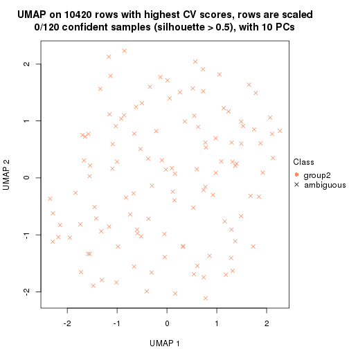
dimension_reduction(res, k = 3, method = "UMAP")
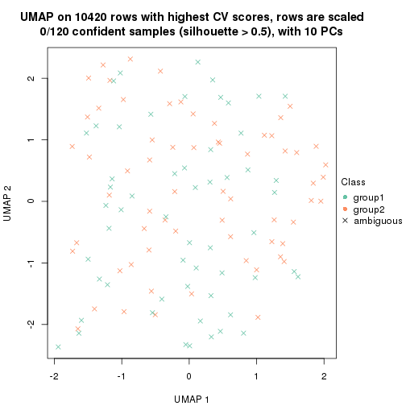
dimension_reduction(res, k = 4, method = "UMAP")
dimension_reduction(res, k = 5, method = "UMAP")
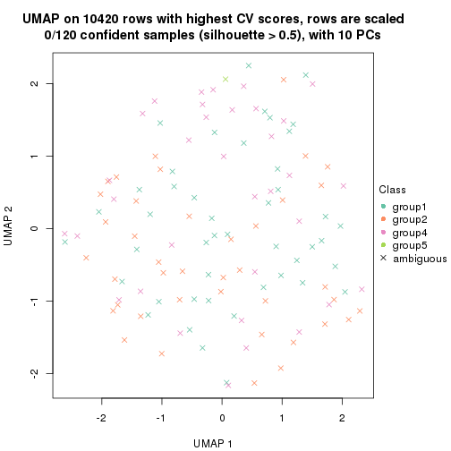
dimension_reduction(res, k = 6, method = "UMAP")
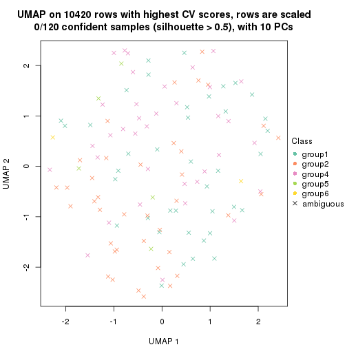
Following heatmap shows how subgroups are split when increasing k:
collect_classes(res)
If matrix rows can be associated to genes, consider to use GO_Enrichment(res,
...) to perform function enrichment for the signature genes.
The object with results only for a single top-value method and a single partition method can be extracted as:
res = res_list["MAD", "hclust"]
# you can also extract it by
# res = res_list["MAD:hclust"]
A summary of res and all the functions that can be applied to it:
res
#> A 'ConsensusPartition' object with k = 2, 3, 4, 5, 6.
#> On a matrix with 10420 rows and 120 columns.
#> Top rows (1000, 2000, 3000, 4000, 5000) are extracted by 'MAD' method.
#> Subgroups are detected by 'hclust' method.
#> Performed in total 1250 partitions by row resampling.
#> Best k for subgroups seems to be 4.
#>
#> Following methods can be applied to this 'ConsensusPartition' object:
#> [1] "cola_report" "collect_classes" "collect_plots"
#> [4] "collect_stats" "colnames" "compare_signatures"
#> [7] "consensus_heatmap" "dimension_reduction" "functional_enrichment"
#> [10] "get_anno_col" "get_anno" "get_classes"
#> [13] "get_consensus" "get_matrix" "get_membership"
#> [16] "get_param" "get_signatures" "get_stats"
#> [19] "is_best_k" "is_stable_k" "membership_heatmap"
#> [22] "ncol" "nrow" "plot_ecdf"
#> [25] "rownames" "select_partition_number" "show"
#> [28] "suggest_best_k" "test_to_known_factors"
collect_plots() function collects all the plots made from res for all k (number of partitions)
into one single page to provide an easy and fast comparison between different k.
collect_plots(res)
The plots are:
k and the heatmap of
predicted classes for each k.k.k.k.All the plots in panels can be made by individual functions and they are plotted later in this section.
select_partition_number() produces several plots showing different
statistics for choosing “optimized” k. There are following statistics:
k;k, the area increased is defined as \(A_k - A_{k-1}\).The detailed explanations of these statistics can be found in the cola vignette.
Generally speaking, lower PAC score, higher mean silhouette score or higher
concordance corresponds to better partition. Rand index and Jaccard index
measure how similar the current partition is compared to partition with k-1.
If they are too similar, we won't accept k is better than k-1.
select_partition_number(res)
The numeric values for all these statistics can be obtained by get_stats().
get_stats(res)
#> k 1-PAC mean_silhouette concordance area_increased Rand Jaccard
#> 2 2 0.000000 0.439 0.689 0.4005 0.967 0.967
#> 3 3 0.000155 0.421 0.545 0.3841 0.983 0.983
#> 4 4 0.000932 0.243 0.474 0.1660 0.921 0.916
#> 5 5 0.004502 0.119 0.400 0.1023 0.836 0.812
#> 6 6 0.018631 0.113 0.349 0.0572 0.821 0.763
suggest_best_k() suggests the best \(k\) based on these statistics. The rules are as follows:
NA.suggest_best_k(res)
#> [1] 4
Following shows the table of the partitions (You need to click the show/hide
code output link to see it). The membership matrix (columns with name p*)
is inferred by
clue::cl_consensus()
function with the SE method. Basically the value in the membership matrix
represents the probability to belong to a certain group. The finall class
label for an item is determined with the group with highest probability it
belongs to.
In get_classes() function, the entropy is calculated from the membership
matrix and the silhouette score is calculated from the consensus matrix.
cbind(get_classes(res, k = 2), get_membership(res, k = 2))
#> class entropy silhouette p1 p2
#> SRR572528 2 0.904 0.4869 0.320 0.680
#> SRR572529 2 0.861 0.5456 0.284 0.716
#> SRR572530 2 0.913 0.5193 0.328 0.672
#> SRR572531 2 0.886 0.5065 0.304 0.696
#> SRR572532 2 0.827 0.5168 0.260 0.740
#> SRR572533 2 0.891 0.5006 0.308 0.692
#> SRR572534 2 0.866 0.5130 0.288 0.712
#> SRR572535 2 0.909 0.5022 0.324 0.676
#> SRR572536 2 0.855 0.5108 0.280 0.720
#> SRR572537 2 0.795 0.5497 0.240 0.760
#> SRR572538 2 0.839 0.5286 0.268 0.732
#> SRR572539 2 0.861 0.5132 0.284 0.716
#> SRR572540 2 0.808 0.5340 0.248 0.752
#> SRR572541 2 0.866 0.5515 0.288 0.712
#> SRR572542 2 0.821 0.5224 0.256 0.744
#> SRR572543 2 0.895 0.5099 0.312 0.688
#> SRR572544 2 0.808 0.5549 0.248 0.752
#> SRR572545 2 0.855 0.5423 0.280 0.720
#> SRR572546 2 0.881 0.5333 0.300 0.700
#> SRR572547 2 0.881 0.4907 0.300 0.700
#> SRR572548 2 0.827 0.5451 0.260 0.740
#> SRR572549 2 0.808 0.5530 0.248 0.752
#> SRR572550 2 0.886 0.4940 0.304 0.696
#> SRR572551 2 0.814 0.5493 0.252 0.748
#> SRR572552 2 0.861 0.5122 0.284 0.716
#> SRR572553 2 0.861 0.5217 0.284 0.716
#> SRR572554 2 0.767 0.5532 0.224 0.776
#> SRR572555 2 0.925 0.3643 0.340 0.660
#> SRR572556 2 0.929 0.5003 0.344 0.656
#> SRR572557 2 0.855 0.5168 0.280 0.720
#> SRR572558 2 0.866 0.5152 0.288 0.712
#> SRR572559 2 0.900 0.4644 0.316 0.684
#> SRR572560 2 0.917 0.5256 0.332 0.668
#> SRR572561 2 0.844 0.5080 0.272 0.728
#> SRR572562 2 0.814 0.5484 0.252 0.748
#> SRR572563 2 0.895 0.4893 0.312 0.688
#> SRR572564 2 0.855 0.4985 0.280 0.720
#> SRR572565 2 0.881 0.5386 0.300 0.700
#> SRR572566 2 0.821 0.5450 0.256 0.744
#> SRR572567 2 0.814 0.5425 0.252 0.748
#> SRR572568 2 0.929 0.4732 0.344 0.656
#> SRR572569 2 0.814 0.5524 0.252 0.748
#> SRR572570 2 0.921 0.4374 0.336 0.664
#> SRR572571 2 0.827 0.5421 0.260 0.740
#> SRR572572 2 0.795 0.5460 0.240 0.760
#> SRR572573 2 0.900 0.5147 0.316 0.684
#> SRR572574 2 0.866 0.5124 0.288 0.712
#> SRR572575 2 0.781 0.5599 0.232 0.768
#> SRR572576 2 0.881 0.4756 0.300 0.700
#> SRR572577 2 0.900 0.4015 0.316 0.684
#> SRR572578 2 0.871 0.5402 0.292 0.708
#> SRR572579 2 0.881 0.4641 0.300 0.700
#> SRR572580 2 0.932 0.4639 0.348 0.652
#> SRR572581 2 0.855 0.5196 0.280 0.720
#> SRR572582 2 0.943 0.3635 0.360 0.640
#> SRR572583 2 0.891 0.4215 0.308 0.692
#> SRR572584 2 0.866 0.4832 0.288 0.712
#> SRR572585 2 0.866 0.4778 0.288 0.712
#> SRR572586 2 0.866 0.5126 0.288 0.712
#> SRR572587 2 0.917 0.4912 0.332 0.668
#> SRR572588 2 0.921 0.4474 0.336 0.664
#> SRR572589 2 0.850 0.5018 0.276 0.724
#> SRR572590 2 0.844 0.5365 0.272 0.728
#> SRR572591 2 0.904 0.3743 0.320 0.680
#> SRR572592 2 0.998 -0.1745 0.476 0.524
#> SRR572593 2 0.795 0.5506 0.240 0.760
#> SRR572594 2 0.988 -0.1926 0.436 0.564
#> SRR572595 2 0.909 0.3794 0.324 0.676
#> SRR572596 2 0.949 0.3723 0.368 0.632
#> SRR572597 2 0.925 0.4036 0.340 0.660
#> SRR572598 2 0.866 0.4760 0.288 0.712
#> SRR572599 1 0.995 0.2984 0.540 0.460
#> SRR572600 2 0.952 0.2972 0.372 0.628
#> SRR572601 2 0.760 0.5447 0.220 0.780
#> SRR572602 2 0.946 0.2703 0.364 0.636
#> SRR572603 2 0.833 0.5507 0.264 0.736
#> SRR572604 2 0.876 0.5010 0.296 0.704
#> SRR572605 2 0.963 0.2910 0.388 0.612
#> SRR572606 2 0.909 0.3892 0.324 0.676
#> SRR572607 2 0.990 -0.1186 0.440 0.560
#> SRR572608 2 0.981 0.0257 0.420 0.580
#> SRR572609 2 0.971 0.0253 0.400 0.600
#> SRR572610 2 0.943 0.2259 0.360 0.640
#> SRR572611 2 0.881 0.4437 0.300 0.700
#> SRR572612 2 0.866 0.5291 0.288 0.712
#> SRR572613 1 0.997 0.2135 0.532 0.468
#> SRR572614 2 0.949 0.2061 0.368 0.632
#> SRR572615 2 0.833 0.5565 0.264 0.736
#> SRR572616 2 0.980 -0.0414 0.416 0.584
#> SRR572617 2 0.808 0.5464 0.248 0.752
#> SRR572618 2 0.939 0.3300 0.356 0.644
#> SRR572619 2 0.936 0.2934 0.352 0.648
#> SRR572620 2 0.871 0.4949 0.292 0.708
#> SRR572621 2 0.904 0.4527 0.320 0.680
#> SRR572622 2 0.943 0.3519 0.360 0.640
#> SRR572623 2 0.895 0.4021 0.312 0.688
#> SRR572624 2 0.871 0.5107 0.292 0.708
#> SRR572625 2 0.975 0.2291 0.408 0.592
#> SRR572626 2 0.827 0.5530 0.260 0.740
#> SRR572627 2 0.963 0.0725 0.388 0.612
#> SRR572628 2 0.952 0.2337 0.372 0.628
#> SRR572629 2 0.925 0.4019 0.340 0.660
#> SRR572630 2 0.909 0.4260 0.324 0.676
#> SRR572631 2 0.952 0.3318 0.372 0.628
#> SRR572632 2 0.895 0.4782 0.312 0.688
#> SRR572633 2 0.866 0.5235 0.288 0.712
#> SRR572634 2 0.855 0.4936 0.280 0.720
#> SRR572635 2 0.900 0.4991 0.316 0.684
#> SRR572636 2 0.833 0.5466 0.264 0.736
#> SRR572637 2 0.904 0.4429 0.320 0.680
#> SRR572638 2 0.952 0.2884 0.372 0.628
#> SRR572639 2 0.844 0.5219 0.272 0.728
#> SRR572640 2 0.866 0.4841 0.288 0.712
#> SRR572641 2 0.861 0.4992 0.284 0.716
#> SRR572642 2 0.876 0.5139 0.296 0.704
#> SRR572643 2 0.925 0.4736 0.340 0.660
#> SRR572644 2 0.943 0.4077 0.360 0.640
#> SRR572645 2 0.861 0.5326 0.284 0.716
#> SRR572646 2 0.861 0.5097 0.284 0.716
#> SRR572647 2 0.895 0.4647 0.312 0.688
cbind(get_classes(res, k = 3), get_membership(res, k = 3))
#> class entropy silhouette p1 p2 p3
#> SRR572528 2 0.846 0.4914 0.244 0.608 NA
#> SRR572529 2 0.822 0.5220 0.332 0.576 NA
#> SRR572530 2 0.802 0.5131 0.348 0.576 NA
#> SRR572531 2 0.820 0.5066 0.276 0.612 NA
#> SRR572532 2 0.844 0.4880 0.284 0.592 NA
#> SRR572533 2 0.871 0.4938 0.312 0.556 NA
#> SRR572534 2 0.829 0.5034 0.280 0.604 NA
#> SRR572535 2 0.841 0.5109 0.232 0.616 NA
#> SRR572536 2 0.801 0.4986 0.332 0.588 NA
#> SRR572537 2 0.776 0.5286 0.224 0.664 NA
#> SRR572538 2 0.792 0.5311 0.248 0.644 NA
#> SRR572539 2 0.817 0.5244 0.256 0.624 NA
#> SRR572540 2 0.715 0.5343 0.264 0.676 NA
#> SRR572541 2 0.804 0.5189 0.300 0.608 NA
#> SRR572542 2 0.863 0.4903 0.316 0.560 NA
#> SRR572543 2 0.839 0.4958 0.372 0.536 NA
#> SRR572544 2 0.783 0.5294 0.280 0.632 NA
#> SRR572545 2 0.792 0.5336 0.256 0.640 NA
#> SRR572546 2 0.778 0.5343 0.248 0.652 NA
#> SRR572547 2 0.811 0.4861 0.352 0.568 NA
#> SRR572548 2 0.745 0.5449 0.280 0.652 NA
#> SRR572549 2 0.778 0.5379 0.248 0.652 NA
#> SRR572550 2 0.770 0.5253 0.272 0.644 NA
#> SRR572551 2 0.778 0.5264 0.240 0.656 NA
#> SRR572552 2 0.759 0.5148 0.268 0.652 NA
#> SRR572553 2 0.680 0.5395 0.236 0.708 NA
#> SRR572554 2 0.804 0.5282 0.280 0.620 NA
#> SRR572555 2 0.880 0.4133 0.356 0.520 NA
#> SRR572556 2 0.837 0.5159 0.260 0.608 NA
#> SRR572557 2 0.820 0.4928 0.252 0.624 NA
#> SRR572558 2 0.837 0.4417 0.388 0.524 NA
#> SRR572559 2 0.917 0.4252 0.288 0.528 NA
#> SRR572560 2 0.833 0.4831 0.340 0.564 NA
#> SRR572561 2 0.812 0.5043 0.292 0.608 NA
#> SRR572562 2 0.798 0.5207 0.256 0.636 NA
#> SRR572563 2 0.863 0.4786 0.356 0.532 NA
#> SRR572564 2 0.870 0.4661 0.292 0.568 NA
#> SRR572565 2 0.804 0.5074 0.300 0.608 NA
#> SRR572566 2 0.730 0.5466 0.244 0.680 NA
#> SRR572567 2 0.771 0.5335 0.284 0.636 NA
#> SRR572568 2 0.848 0.4759 0.320 0.568 NA
#> SRR572569 2 0.754 0.5256 0.272 0.652 NA
#> SRR572570 2 0.875 0.4581 0.344 0.532 NA
#> SRR572571 2 0.751 0.5380 0.288 0.644 NA
#> SRR572572 2 0.792 0.5337 0.228 0.652 NA
#> SRR572573 2 0.865 0.4534 0.360 0.528 NA
#> SRR572574 2 0.859 0.4553 0.300 0.572 NA
#> SRR572575 2 0.792 0.5182 0.264 0.636 NA
#> SRR572576 2 0.899 0.4084 0.340 0.516 NA
#> SRR572577 2 0.905 0.3740 0.344 0.508 NA
#> SRR572578 2 0.756 0.5257 0.336 0.608 NA
#> SRR572579 2 0.853 0.4419 0.320 0.564 NA
#> SRR572580 2 0.886 0.4805 0.332 0.532 NA
#> SRR572581 2 0.854 0.5174 0.292 0.580 NA
#> SRR572582 2 0.878 0.4089 0.352 0.524 NA
#> SRR572583 2 0.889 0.3793 0.308 0.544 NA
#> SRR572584 2 0.897 0.4457 0.336 0.520 NA
#> SRR572585 2 0.858 0.4184 0.308 0.568 NA
#> SRR572586 2 0.850 0.4813 0.304 0.576 NA
#> SRR572587 2 0.837 0.4794 0.312 0.580 NA
#> SRR572588 2 0.868 0.4986 0.288 0.572 NA
#> SRR572589 2 0.899 0.4682 0.260 0.556 NA
#> SRR572590 2 0.837 0.5089 0.260 0.608 NA
#> SRR572591 2 0.921 0.3191 0.296 0.520 NA
#> SRR572592 2 0.990 -0.1871 0.348 0.384 NA
#> SRR572593 2 0.748 0.5433 0.264 0.660 NA
#> SRR572594 1 0.995 0.3679 0.384 0.304 NA
#> SRR572595 2 0.960 0.2351 0.320 0.460 NA
#> SRR572596 2 0.921 0.3854 0.304 0.516 NA
#> SRR572597 2 0.912 0.3687 0.340 0.504 NA
#> SRR572598 2 0.936 0.3067 0.284 0.508 NA
#> SRR572599 1 0.970 0.4270 0.416 0.220 NA
#> SRR572600 2 0.944 0.2697 0.316 0.484 NA
#> SRR572601 2 0.840 0.5132 0.220 0.620 NA
#> SRR572602 2 0.924 0.3629 0.288 0.520 NA
#> SRR572603 2 0.839 0.5111 0.248 0.612 NA
#> SRR572604 2 0.842 0.4999 0.252 0.608 NA
#> SRR572605 2 0.974 0.1551 0.304 0.444 NA
#> SRR572606 2 0.903 0.4147 0.272 0.548 NA
#> SRR572607 2 0.983 -0.1679 0.332 0.412 NA
#> SRR572608 2 0.996 -0.1537 0.340 0.368 NA
#> SRR572609 2 0.993 -0.2209 0.324 0.388 NA
#> SRR572610 2 0.970 0.1765 0.264 0.456 NA
#> SRR572611 2 0.935 0.3622 0.296 0.504 NA
#> SRR572612 2 0.874 0.4480 0.308 0.556 NA
#> SRR572613 1 0.995 0.2586 0.376 0.288 NA
#> SRR572614 2 0.964 0.1476 0.284 0.468 NA
#> SRR572615 2 0.790 0.5238 0.280 0.628 NA
#> SRR572616 2 0.963 0.0286 0.340 0.444 NA
#> SRR572617 2 0.810 0.5089 0.280 0.616 NA
#> SRR572618 2 0.938 0.3158 0.336 0.480 NA
#> SRR572619 2 0.927 0.3166 0.300 0.512 NA
#> SRR572620 2 0.865 0.4886 0.268 0.584 NA
#> SRR572621 2 0.887 0.4695 0.296 0.552 NA
#> SRR572622 2 0.979 0.0154 0.296 0.436 NA
#> SRR572623 2 0.905 0.3600 0.252 0.552 NA
#> SRR572624 2 0.859 0.4936 0.300 0.572 NA
#> SRR572625 2 0.964 0.2095 0.332 0.448 NA
#> SRR572626 2 0.727 0.5325 0.304 0.644 NA
#> SRR572627 2 0.976 0.0372 0.332 0.428 NA
#> SRR572628 2 0.965 0.2012 0.336 0.444 NA
#> SRR572629 2 0.898 0.3715 0.328 0.524 NA
#> SRR572630 2 0.885 0.4675 0.284 0.560 NA
#> SRR572631 2 0.870 0.4305 0.360 0.524 NA
#> SRR572632 2 0.839 0.4793 0.248 0.612 NA
#> SRR572633 2 0.800 0.5009 0.304 0.608 NA
#> SRR572634 2 0.844 0.4596 0.248 0.608 NA
#> SRR572635 2 0.861 0.4857 0.336 0.548 NA
#> SRR572636 2 0.781 0.5326 0.268 0.640 NA
#> SRR572637 2 0.889 0.4355 0.308 0.544 NA
#> SRR572638 2 0.941 0.2381 0.348 0.468 NA
#> SRR572639 2 0.771 0.5212 0.264 0.648 NA
#> SRR572640 2 0.894 0.4584 0.264 0.560 NA
#> SRR572641 2 0.860 0.4559 0.292 0.576 NA
#> SRR572642 2 0.837 0.5073 0.292 0.592 NA
#> SRR572643 2 0.855 0.4761 0.324 0.560 NA
#> SRR572644 2 0.902 0.3933 0.316 0.528 NA
#> SRR572645 2 0.857 0.5092 0.296 0.576 NA
#> SRR572646 2 0.889 0.4751 0.308 0.544 NA
#> SRR572647 2 0.889 0.4547 0.328 0.532 NA
cbind(get_classes(res, k = 4), get_membership(res, k = 4))
#> class entropy silhouette p1 p2 p3 p4
#> SRR572528 1 0.785 0.34695 0.580 0.224 0.056 0.140
#> SRR572529 1 0.800 0.37027 0.516 0.316 0.052 0.116
#> SRR572530 1 0.761 0.37375 0.560 0.300 0.056 0.084
#> SRR572531 1 0.790 0.36213 0.556 0.268 0.056 0.120
#> SRR572532 1 0.838 0.33174 0.508 0.280 0.068 0.144
#> SRR572533 1 0.846 0.32293 0.500 0.280 0.068 0.152
#> SRR572534 1 0.837 0.34036 0.524 0.268 0.088 0.120
#> SRR572535 1 0.793 0.36515 0.564 0.228 0.048 0.160
#> SRR572536 1 0.780 0.35166 0.512 0.300 0.020 0.168
#> SRR572537 1 0.769 0.38177 0.568 0.276 0.052 0.104
#> SRR572538 1 0.765 0.38537 0.564 0.264 0.032 0.140
#> SRR572539 1 0.778 0.36405 0.560 0.268 0.044 0.128
#> SRR572540 1 0.711 0.38891 0.564 0.332 0.028 0.076
#> SRR572541 1 0.776 0.37380 0.564 0.264 0.044 0.128
#> SRR572542 1 0.823 0.31816 0.508 0.296 0.056 0.140
#> SRR572543 1 0.795 0.34915 0.532 0.304 0.060 0.104
#> SRR572544 1 0.726 0.38532 0.608 0.260 0.048 0.084
#> SRR572545 1 0.730 0.38286 0.588 0.264 0.024 0.124
#> SRR572546 1 0.758 0.37859 0.588 0.256 0.052 0.104
#> SRR572547 1 0.766 0.34360 0.552 0.300 0.044 0.104
#> SRR572548 1 0.757 0.39547 0.572 0.276 0.040 0.112
#> SRR572549 1 0.762 0.38339 0.592 0.248 0.064 0.096
#> SRR572550 1 0.715 0.37534 0.580 0.300 0.024 0.096
#> SRR572551 1 0.733 0.38094 0.600 0.260 0.040 0.100
#> SRR572552 1 0.766 0.37329 0.528 0.312 0.024 0.136
#> SRR572553 1 0.688 0.39509 0.632 0.260 0.044 0.064
#> SRR572554 1 0.740 0.38912 0.592 0.264 0.040 0.104
#> SRR572555 1 0.897 0.19532 0.424 0.312 0.084 0.180
#> SRR572556 1 0.835 0.33747 0.520 0.256 0.064 0.160
#> SRR572557 1 0.778 0.34956 0.580 0.240 0.056 0.124
#> SRR572558 1 0.832 0.28242 0.480 0.328 0.060 0.132
#> SRR572559 1 0.900 0.27086 0.480 0.236 0.136 0.148
#> SRR572560 1 0.820 0.35394 0.492 0.332 0.064 0.112
#> SRR572561 1 0.846 0.32466 0.520 0.264 0.108 0.108
#> SRR572562 1 0.805 0.34888 0.520 0.292 0.044 0.144
#> SRR572563 1 0.882 0.24439 0.404 0.344 0.064 0.188
#> SRR572564 1 0.875 0.27381 0.488 0.232 0.080 0.200
#> SRR572565 1 0.805 0.32732 0.492 0.348 0.060 0.100
#> SRR572566 1 0.714 0.40117 0.620 0.248 0.040 0.092
#> SRR572567 1 0.765 0.38297 0.532 0.324 0.036 0.108
#> SRR572568 1 0.830 0.31008 0.480 0.332 0.060 0.128
#> SRR572569 1 0.782 0.37830 0.552 0.284 0.052 0.112
#> SRR572570 1 0.873 0.31789 0.488 0.260 0.088 0.164
#> SRR572571 1 0.694 0.39397 0.568 0.336 0.020 0.076
#> SRR572572 1 0.813 0.35317 0.548 0.232 0.056 0.164
#> SRR572573 1 0.864 0.28259 0.444 0.340 0.076 0.140
#> SRR572574 1 0.875 0.27426 0.468 0.260 0.068 0.204
#> SRR572575 1 0.775 0.37124 0.548 0.276 0.032 0.144
#> SRR572576 1 0.918 0.21589 0.428 0.292 0.132 0.148
#> SRR572577 1 0.894 0.21574 0.432 0.308 0.084 0.176
#> SRR572578 1 0.809 0.34079 0.504 0.312 0.044 0.140
#> SRR572579 1 0.834 0.32208 0.520 0.260 0.064 0.156
#> SRR572580 1 0.867 0.30963 0.472 0.288 0.072 0.168
#> SRR572581 1 0.875 0.31395 0.496 0.248 0.100 0.156
#> SRR572582 1 0.853 0.25392 0.464 0.328 0.072 0.136
#> SRR572583 1 0.905 0.22331 0.468 0.248 0.136 0.148
#> SRR572584 1 0.915 0.18840 0.404 0.300 0.088 0.208
#> SRR572585 1 0.876 0.18921 0.432 0.344 0.088 0.136
#> SRR572586 1 0.866 0.25237 0.448 0.320 0.064 0.168
#> SRR572587 1 0.845 0.30120 0.496 0.296 0.076 0.132
#> SRR572588 1 0.866 0.33212 0.496 0.256 0.084 0.164
#> SRR572589 1 0.902 0.24959 0.428 0.236 0.076 0.260
#> SRR572590 1 0.844 0.30310 0.472 0.300 0.048 0.180
#> SRR572591 1 0.936 0.04180 0.428 0.244 0.144 0.184
#> SRR572592 2 0.983 -0.11418 0.256 0.300 0.280 0.164
#> SRR572593 1 0.742 0.38813 0.564 0.308 0.040 0.088
#> SRR572594 3 0.978 0.12792 0.216 0.276 0.336 0.172
#> SRR572595 1 0.948 -0.10084 0.364 0.248 0.112 0.276
#> SRR572596 1 0.910 0.17093 0.412 0.280 0.080 0.228
#> SRR572597 1 0.887 0.10224 0.420 0.292 0.060 0.228
#> SRR572598 1 0.945 0.07486 0.376 0.244 0.112 0.268
#> SRR572599 3 0.880 0.24665 0.172 0.272 0.472 0.084
#> SRR572600 1 0.972 -0.01900 0.344 0.276 0.156 0.224
#> SRR572601 1 0.875 0.31205 0.512 0.200 0.108 0.180
#> SRR572602 1 0.935 0.16810 0.428 0.248 0.144 0.180
#> SRR572603 1 0.866 0.33754 0.496 0.252 0.080 0.172
#> SRR572604 1 0.806 0.34000 0.552 0.264 0.084 0.100
#> SRR572605 1 0.950 -0.05793 0.356 0.264 0.112 0.268
#> SRR572606 1 0.875 0.16637 0.468 0.188 0.072 0.272
#> SRR572607 1 0.961 -0.26402 0.336 0.272 0.268 0.124
#> SRR572608 2 0.984 -0.14227 0.244 0.300 0.168 0.288
#> SRR572609 4 0.996 0.16433 0.236 0.240 0.228 0.296
#> SRR572610 1 0.979 -0.23826 0.324 0.208 0.176 0.292
#> SRR572611 1 0.894 0.17641 0.456 0.256 0.084 0.204
#> SRR572612 1 0.885 0.19201 0.452 0.312 0.112 0.124
#> SRR572613 4 0.939 0.15603 0.220 0.220 0.136 0.424
#> SRR572614 1 0.966 -0.15667 0.376 0.204 0.168 0.252
#> SRR572615 1 0.763 0.36381 0.564 0.284 0.044 0.108
#> SRR572616 2 0.979 -0.09346 0.284 0.288 0.152 0.276
#> SRR572617 1 0.834 0.32379 0.500 0.248 0.044 0.208
#> SRR572618 1 0.936 0.03058 0.396 0.292 0.120 0.192
#> SRR572619 1 0.943 -0.00696 0.380 0.296 0.120 0.204
#> SRR572620 1 0.846 0.32183 0.536 0.204 0.084 0.176
#> SRR572621 1 0.872 0.22643 0.472 0.264 0.068 0.196
#> SRR572622 1 0.972 -0.04299 0.348 0.208 0.164 0.280
#> SRR572623 1 0.901 0.12728 0.448 0.268 0.092 0.192
#> SRR572624 1 0.829 0.33055 0.484 0.320 0.052 0.144
#> SRR572625 1 0.971 -0.16321 0.336 0.272 0.144 0.248
#> SRR572626 1 0.653 0.38456 0.620 0.300 0.020 0.060
#> SRR572627 1 0.984 -0.15754 0.320 0.260 0.176 0.244
#> SRR572628 1 0.960 0.02186 0.360 0.280 0.136 0.224
#> SRR572629 1 0.912 0.15591 0.404 0.332 0.112 0.152
#> SRR572630 1 0.889 0.20361 0.464 0.236 0.080 0.220
#> SRR572631 1 0.868 0.25843 0.468 0.312 0.100 0.120
#> SRR572632 1 0.897 0.18450 0.420 0.272 0.068 0.240
#> SRR572633 1 0.804 0.29161 0.508 0.332 0.084 0.076
#> SRR572634 1 0.847 0.26086 0.496 0.228 0.052 0.224
#> SRR572635 1 0.869 0.27491 0.464 0.292 0.068 0.176
#> SRR572636 1 0.780 0.37331 0.576 0.256 0.072 0.096
#> SRR572637 1 0.885 0.19933 0.464 0.284 0.092 0.160
#> SRR572638 2 0.927 -0.13561 0.340 0.376 0.120 0.164
#> SRR572639 1 0.770 0.38262 0.552 0.304 0.064 0.080
#> SRR572640 1 0.873 0.27898 0.476 0.288 0.092 0.144
#> SRR572641 1 0.850 0.28495 0.500 0.260 0.064 0.176
#> SRR572642 1 0.863 0.29316 0.452 0.324 0.068 0.156
#> SRR572643 1 0.786 0.33657 0.552 0.288 0.072 0.088
#> SRR572644 1 0.909 0.20823 0.436 0.296 0.120 0.148
#> SRR572645 1 0.823 0.35343 0.524 0.240 0.048 0.188
#> SRR572646 1 0.826 0.32578 0.504 0.252 0.040 0.204
#> SRR572647 1 0.910 0.20963 0.400 0.304 0.080 0.216
cbind(get_classes(res, k = 5), get_membership(res, k = 5))
#> class entropy silhouette p1 p2 p3 p4 p5
#> SRR572528 1 0.801 0.22657 0.536 0.200 0.072 0.120 0.072
#> SRR572529 1 0.817 0.18810 0.432 0.336 0.060 0.108 0.064
#> SRR572530 1 0.763 0.24154 0.544 0.228 0.076 0.120 0.032
#> SRR572531 1 0.736 0.24170 0.560 0.256 0.048 0.076 0.060
#> SRR572532 1 0.835 0.16460 0.452 0.288 0.060 0.116 0.084
#> SRR572533 1 0.875 0.14877 0.400 0.200 0.048 0.256 0.096
#> SRR572534 1 0.855 0.15044 0.444 0.268 0.072 0.136 0.080
#> SRR572535 1 0.810 0.21338 0.492 0.240 0.060 0.156 0.052
#> SRR572536 1 0.821 0.16676 0.420 0.280 0.056 0.212 0.032
#> SRR572537 1 0.757 0.22836 0.528 0.280 0.076 0.048 0.068
#> SRR572538 1 0.795 0.22138 0.496 0.268 0.056 0.128 0.052
#> SRR572539 1 0.804 0.24022 0.528 0.216 0.100 0.092 0.064
#> SRR572540 1 0.717 0.25584 0.516 0.332 0.044 0.072 0.036
#> SRR572541 1 0.793 0.23035 0.508 0.244 0.044 0.140 0.064
#> SRR572542 1 0.855 0.14992 0.424 0.300 0.076 0.124 0.076
#> SRR572543 1 0.783 0.22261 0.520 0.256 0.060 0.108 0.056
#> SRR572544 1 0.689 0.26123 0.632 0.176 0.048 0.100 0.044
#> SRR572545 1 0.752 0.24764 0.548 0.232 0.044 0.132 0.044
#> SRR572546 1 0.757 0.23347 0.544 0.252 0.056 0.096 0.052
#> SRR572547 1 0.782 0.23121 0.492 0.296 0.048 0.104 0.060
#> SRR572548 1 0.762 0.23122 0.500 0.308 0.048 0.096 0.048
#> SRR572549 1 0.754 0.24583 0.540 0.256 0.044 0.108 0.052
#> SRR572550 1 0.721 0.26346 0.532 0.308 0.044 0.076 0.040
#> SRR572551 1 0.775 0.22620 0.532 0.236 0.056 0.128 0.048
#> SRR572552 1 0.742 0.25950 0.540 0.260 0.064 0.112 0.024
#> SRR572553 1 0.722 0.25302 0.572 0.252 0.044 0.076 0.056
#> SRR572554 1 0.710 0.25095 0.536 0.308 0.052 0.080 0.024
#> SRR572555 1 0.872 0.12114 0.372 0.332 0.056 0.120 0.120
#> SRR572556 1 0.869 0.17191 0.420 0.276 0.124 0.124 0.056
#> SRR572557 1 0.825 0.22217 0.504 0.220 0.064 0.120 0.092
#> SRR572558 1 0.828 0.16315 0.404 0.360 0.076 0.072 0.088
#> SRR572559 1 0.901 0.05223 0.368 0.248 0.044 0.196 0.144
#> SRR572560 1 0.812 0.22324 0.468 0.284 0.060 0.136 0.052
#> SRR572561 1 0.848 0.15051 0.432 0.296 0.056 0.116 0.100
#> SRR572562 1 0.796 0.23004 0.508 0.264 0.088 0.072 0.068
#> SRR572563 1 0.888 0.13046 0.396 0.260 0.060 0.180 0.104
#> SRR572564 1 0.913 0.06579 0.396 0.208 0.080 0.196 0.120
#> SRR572565 1 0.768 0.22034 0.492 0.304 0.048 0.116 0.040
#> SRR572566 1 0.749 0.25852 0.548 0.232 0.040 0.136 0.044
#> SRR572567 1 0.754 0.22378 0.480 0.344 0.064 0.072 0.040
#> SRR572568 1 0.827 0.19511 0.440 0.300 0.056 0.144 0.060
#> SRR572569 1 0.755 0.23136 0.520 0.276 0.024 0.108 0.072
#> SRR572570 1 0.886 0.13671 0.424 0.212 0.072 0.196 0.096
#> SRR572571 1 0.755 0.24030 0.480 0.344 0.052 0.076 0.048
#> SRR572572 1 0.854 0.11754 0.444 0.228 0.072 0.196 0.060
#> SRR572573 1 0.852 0.15666 0.408 0.304 0.048 0.156 0.084
#> SRR572574 1 0.891 0.02377 0.380 0.192 0.104 0.268 0.056
#> SRR572575 1 0.821 0.14894 0.452 0.276 0.048 0.168 0.056
#> SRR572576 2 0.882 -0.03037 0.308 0.324 0.024 0.148 0.196
#> SRR572577 1 0.910 0.05980 0.364 0.276 0.096 0.180 0.084
#> SRR572578 1 0.816 0.19692 0.416 0.344 0.060 0.132 0.048
#> SRR572579 1 0.861 0.04382 0.396 0.252 0.028 0.216 0.108
#> SRR572580 1 0.871 0.15102 0.428 0.252 0.080 0.168 0.072
#> SRR572581 1 0.899 0.13067 0.412 0.216 0.084 0.192 0.096
#> SRR572582 1 0.844 0.17162 0.416 0.320 0.052 0.096 0.116
#> SRR572583 1 0.884 0.09504 0.420 0.268 0.104 0.104 0.104
#> SRR572584 1 0.919 0.06661 0.360 0.220 0.124 0.228 0.068
#> SRR572585 1 0.916 0.02506 0.344 0.256 0.084 0.228 0.088
#> SRR572586 1 0.871 0.08432 0.376 0.248 0.048 0.252 0.076
#> SRR572587 1 0.911 0.08959 0.372 0.260 0.128 0.172 0.068
#> SRR572588 1 0.854 0.14527 0.416 0.256 0.036 0.200 0.092
#> SRR572589 4 0.822 0.15193 0.332 0.148 0.072 0.412 0.036
#> SRR572590 1 0.814 0.04117 0.456 0.200 0.076 0.244 0.024
#> SRR572591 1 0.931 -0.04857 0.352 0.276 0.116 0.128 0.128
#> SRR572592 5 0.971 0.13620 0.192 0.224 0.156 0.124 0.304
#> SRR572593 1 0.784 0.23062 0.516 0.244 0.064 0.136 0.040
#> SRR572594 5 0.912 0.17516 0.140 0.220 0.108 0.120 0.412
#> SRR572595 1 0.959 -0.09888 0.312 0.200 0.108 0.240 0.140
#> SRR572596 4 0.912 0.22411 0.280 0.212 0.092 0.340 0.076
#> SRR572597 2 0.947 0.05749 0.284 0.304 0.120 0.188 0.104
#> SRR572598 4 0.943 0.05881 0.284 0.156 0.092 0.316 0.152
#> SRR572599 5 0.700 0.17181 0.088 0.184 0.048 0.056 0.624
#> SRR572600 1 0.980 -0.08370 0.256 0.224 0.148 0.240 0.132
#> SRR572601 1 0.889 -0.00832 0.408 0.160 0.080 0.260 0.092
#> SRR572602 1 0.936 -0.00403 0.344 0.232 0.076 0.200 0.148
#> SRR572603 1 0.888 0.09440 0.392 0.224 0.052 0.228 0.104
#> SRR572604 1 0.834 0.20397 0.500 0.216 0.116 0.092 0.076
#> SRR572605 1 0.982 -0.11729 0.260 0.220 0.184 0.216 0.120
#> SRR572606 1 0.948 -0.10819 0.328 0.212 0.140 0.228 0.092
#> SRR572607 5 0.959 0.07074 0.280 0.176 0.108 0.148 0.288
#> SRR572608 3 0.918 0.11521 0.164 0.208 0.380 0.184 0.064
#> SRR572609 3 0.887 0.20498 0.184 0.216 0.428 0.080 0.092
#> SRR572610 3 0.988 0.12172 0.196 0.204 0.240 0.228 0.132
#> SRR572611 1 0.926 -0.05550 0.332 0.232 0.116 0.248 0.072
#> SRR572612 1 0.910 0.03892 0.392 0.180 0.080 0.236 0.112
#> SRR572613 3 0.884 0.16316 0.164 0.236 0.408 0.148 0.044
#> SRR572614 1 0.989 -0.23175 0.252 0.184 0.160 0.240 0.164
#> SRR572615 1 0.786 0.24641 0.540 0.196 0.060 0.148 0.056
#> SRR572616 2 0.978 -0.17595 0.216 0.280 0.212 0.172 0.120
#> SRR572617 1 0.857 0.04782 0.436 0.196 0.076 0.236 0.056
#> SRR572618 1 0.949 -0.04935 0.312 0.284 0.128 0.160 0.116
#> SRR572619 1 0.950 -0.03097 0.340 0.244 0.156 0.148 0.112
#> SRR572620 1 0.873 0.12144 0.468 0.192 0.080 0.128 0.132
#> SRR572621 1 0.903 -0.04043 0.360 0.204 0.068 0.272 0.096
#> SRR572622 4 0.968 0.13291 0.256 0.148 0.124 0.292 0.180
#> SRR572623 4 0.912 0.20932 0.308 0.168 0.096 0.340 0.088
#> SRR572624 1 0.860 0.13996 0.424 0.288 0.088 0.136 0.064
#> SRR572625 1 0.986 -0.18040 0.248 0.208 0.204 0.216 0.124
#> SRR572626 1 0.681 0.25345 0.576 0.272 0.024 0.096 0.032
#> SRR572627 2 0.988 -0.12959 0.240 0.252 0.172 0.188 0.148
#> SRR572628 1 0.963 -0.03240 0.288 0.268 0.124 0.192 0.128
#> SRR572629 2 0.905 0.05488 0.296 0.364 0.072 0.128 0.140
#> SRR572630 1 0.915 0.05510 0.368 0.256 0.100 0.192 0.084
#> SRR572631 1 0.891 0.02531 0.364 0.312 0.060 0.124 0.140
#> SRR572632 1 0.895 -0.04951 0.352 0.192 0.092 0.300 0.064
#> SRR572633 1 0.848 0.13658 0.448 0.244 0.064 0.180 0.064
#> SRR572634 1 0.863 -0.16534 0.392 0.152 0.068 0.316 0.072
#> SRR572635 1 0.889 0.02661 0.392 0.240 0.064 0.216 0.088
#> SRR572636 1 0.797 0.21443 0.512 0.244 0.056 0.124 0.064
#> SRR572637 1 0.894 0.08953 0.388 0.280 0.092 0.160 0.080
#> SRR572638 2 0.927 0.04891 0.268 0.352 0.080 0.144 0.156
#> SRR572639 1 0.753 0.25759 0.536 0.264 0.064 0.100 0.036
#> SRR572640 1 0.890 0.10371 0.424 0.232 0.088 0.164 0.092
#> SRR572641 1 0.847 0.13859 0.440 0.284 0.092 0.128 0.056
#> SRR572642 1 0.855 0.13609 0.428 0.188 0.044 0.252 0.088
#> SRR572643 1 0.818 0.18239 0.488 0.264 0.068 0.100 0.080
#> SRR572644 1 0.916 0.03905 0.376 0.248 0.092 0.184 0.100
#> SRR572645 1 0.852 0.05918 0.412 0.232 0.052 0.244 0.060
#> SRR572646 1 0.841 0.07622 0.404 0.252 0.064 0.244 0.036
#> SRR572647 1 0.891 0.12975 0.392 0.268 0.068 0.176 0.096
cbind(get_classes(res, k = 6), get_membership(res, k = 6))
#> class entropy silhouette p1 p2 p3 p4 p5 p6
#> SRR572528 5 0.801 0.18866 0.076 0.272 0.060 0.020 0.432 0.140
#> SRR572529 5 0.809 0.20542 0.116 0.320 0.044 0.024 0.388 0.108
#> SRR572530 5 0.744 0.22899 0.128 0.180 0.028 0.040 0.544 0.080
#> SRR572531 5 0.742 0.23619 0.076 0.268 0.044 0.024 0.504 0.084
#> SRR572532 5 0.839 0.18642 0.088 0.280 0.048 0.056 0.404 0.124
#> SRR572533 5 0.831 0.18054 0.128 0.192 0.028 0.028 0.388 0.236
#> SRR572534 5 0.852 0.13773 0.136 0.264 0.048 0.048 0.392 0.112
#> SRR572535 5 0.819 0.21100 0.148 0.272 0.032 0.036 0.408 0.104
#> SRR572536 5 0.816 0.19122 0.116 0.232 0.012 0.036 0.384 0.220
#> SRR572537 5 0.775 0.23054 0.072 0.240 0.048 0.068 0.504 0.068
#> SRR572538 5 0.756 0.25327 0.076 0.260 0.036 0.020 0.484 0.124
#> SRR572539 5 0.805 0.19766 0.092 0.264 0.024 0.084 0.448 0.088
#> SRR572540 5 0.686 0.24849 0.056 0.332 0.024 0.024 0.500 0.064
#> SRR572541 5 0.743 0.21251 0.096 0.252 0.020 0.032 0.504 0.096
#> SRR572542 5 0.823 0.17956 0.092 0.280 0.044 0.044 0.416 0.124
#> SRR572543 5 0.763 0.24725 0.064 0.240 0.040 0.064 0.512 0.080
#> SRR572544 5 0.699 0.25534 0.088 0.172 0.036 0.020 0.588 0.096
#> SRR572545 5 0.781 0.22565 0.084 0.268 0.024 0.032 0.448 0.144
#> SRR572546 5 0.767 0.23983 0.068 0.232 0.044 0.036 0.504 0.116
#> SRR572547 5 0.753 0.20862 0.072 0.316 0.024 0.040 0.456 0.092
#> SRR572548 5 0.733 0.24177 0.048 0.272 0.036 0.036 0.508 0.100
#> SRR572549 5 0.751 0.26000 0.068 0.248 0.040 0.020 0.496 0.128
#> SRR572550 5 0.692 0.23316 0.072 0.284 0.016 0.044 0.532 0.052
#> SRR572551 5 0.775 0.20342 0.136 0.220 0.024 0.036 0.488 0.096
#> SRR572552 5 0.759 0.24098 0.132 0.236 0.028 0.024 0.492 0.088
#> SRR572553 5 0.744 0.23580 0.040 0.288 0.060 0.052 0.496 0.064
#> SRR572554 5 0.683 0.24077 0.060 0.300 0.016 0.052 0.528 0.044
#> SRR572555 5 0.844 0.08407 0.056 0.336 0.116 0.044 0.348 0.100
#> SRR572556 5 0.848 0.19614 0.084 0.272 0.044 0.072 0.400 0.128
#> SRR572557 5 0.819 0.17273 0.092 0.264 0.040 0.048 0.432 0.124
#> SRR572558 2 0.809 -0.17201 0.088 0.384 0.080 0.044 0.348 0.056
#> SRR572559 5 0.873 0.14327 0.088 0.184 0.104 0.028 0.372 0.224
#> SRR572560 5 0.760 0.23518 0.048 0.244 0.040 0.040 0.496 0.132
#> SRR572561 5 0.829 0.19059 0.072 0.248 0.068 0.040 0.432 0.140
#> SRR572562 5 0.821 0.21505 0.108 0.248 0.052 0.048 0.448 0.096
#> SRR572563 5 0.862 0.12617 0.100 0.212 0.032 0.056 0.348 0.252
#> SRR572564 5 0.879 0.05997 0.124 0.200 0.048 0.040 0.300 0.288
#> SRR572565 5 0.767 0.22653 0.068 0.244 0.036 0.036 0.492 0.124
#> SRR572566 5 0.769 0.24693 0.116 0.212 0.036 0.040 0.512 0.084
#> SRR572567 5 0.731 0.24414 0.048 0.300 0.036 0.016 0.472 0.128
#> SRR572568 5 0.828 0.18294 0.088 0.252 0.032 0.044 0.404 0.180
#> SRR572569 5 0.747 0.22961 0.116 0.260 0.060 0.004 0.484 0.076
#> SRR572570 5 0.856 0.12746 0.204 0.188 0.076 0.012 0.376 0.144
#> SRR572571 5 0.679 0.25644 0.072 0.332 0.020 0.012 0.496 0.068
#> SRR572572 5 0.859 0.12615 0.144 0.248 0.032 0.044 0.364 0.168
#> SRR572573 5 0.813 0.20290 0.072 0.236 0.056 0.020 0.416 0.200
#> SRR572574 5 0.866 0.01183 0.132 0.160 0.032 0.052 0.316 0.308
#> SRR572575 5 0.810 0.20632 0.132 0.188 0.040 0.032 0.468 0.140
#> SRR572576 5 0.896 0.06824 0.128 0.232 0.132 0.016 0.316 0.176
#> SRR572577 2 0.876 -0.02888 0.172 0.320 0.064 0.080 0.308 0.056
#> SRR572578 5 0.823 0.16603 0.064 0.340 0.048 0.060 0.372 0.116
#> SRR572579 5 0.836 0.13394 0.100 0.172 0.048 0.032 0.408 0.240
#> SRR572580 5 0.866 0.15057 0.140 0.264 0.044 0.032 0.336 0.184
#> SRR572581 5 0.887 0.14449 0.160 0.208 0.056 0.076 0.388 0.112
#> SRR572582 5 0.831 0.08751 0.076 0.336 0.068 0.048 0.372 0.100
#> SRR572583 5 0.894 -0.02768 0.132 0.276 0.092 0.072 0.348 0.080
#> SRR572584 5 0.894 0.00347 0.092 0.216 0.052 0.068 0.304 0.268
#> SRR572585 5 0.901 0.00876 0.180 0.200 0.044 0.072 0.348 0.156
#> SRR572586 5 0.875 0.10444 0.140 0.176 0.068 0.028 0.364 0.224
#> SRR572587 5 0.880 0.07583 0.068 0.204 0.060 0.068 0.336 0.264
#> SRR572588 5 0.844 0.18355 0.108 0.204 0.072 0.016 0.396 0.204
#> SRR572589 5 0.892 -0.11007 0.260 0.156 0.028 0.060 0.268 0.228
#> SRR572590 5 0.860 0.08585 0.188 0.180 0.032 0.068 0.408 0.124
#> SRR572591 2 0.910 0.08579 0.188 0.316 0.080 0.096 0.256 0.064
#> SRR572592 2 0.970 -0.18529 0.088 0.240 0.232 0.124 0.160 0.156
#> SRR572593 5 0.777 0.23208 0.136 0.280 0.036 0.032 0.452 0.064
#> SRR572594 3 0.894 0.11951 0.096 0.188 0.408 0.084 0.128 0.096
#> SRR572595 1 0.947 -0.01190 0.256 0.212 0.104 0.088 0.244 0.096
#> SRR572596 1 0.935 0.08186 0.288 0.228 0.068 0.084 0.200 0.132
#> SRR572597 6 0.949 -0.01056 0.164 0.212 0.084 0.072 0.208 0.260
#> SRR572598 6 0.928 0.08205 0.240 0.128 0.084 0.060 0.200 0.288
#> SRR572599 3 0.681 0.19059 0.056 0.140 0.612 0.012 0.072 0.108
#> SRR572600 6 0.953 -0.02093 0.120 0.152 0.100 0.108 0.224 0.296
#> SRR572601 1 0.855 -0.01341 0.328 0.176 0.052 0.048 0.320 0.076
#> SRR572602 5 0.885 0.05967 0.080 0.176 0.048 0.084 0.320 0.292
#> SRR572603 5 0.859 0.13268 0.200 0.116 0.064 0.032 0.400 0.188
#> SRR572604 5 0.852 0.17499 0.104 0.236 0.040 0.084 0.420 0.116
#> SRR572605 5 0.966 -0.14287 0.120 0.196 0.108 0.104 0.248 0.224
#> SRR572606 1 0.847 0.12605 0.400 0.164 0.032 0.064 0.244 0.096
#> SRR572607 3 0.972 0.06392 0.112 0.184 0.252 0.096 0.200 0.156
#> SRR572608 4 0.884 0.17565 0.120 0.208 0.064 0.404 0.124 0.080
#> SRR572609 4 0.901 0.16070 0.148 0.164 0.076 0.400 0.124 0.088
#> SRR572610 1 0.927 -0.06032 0.332 0.188 0.056 0.156 0.168 0.100
#> SRR572611 5 0.922 -0.07684 0.224 0.240 0.040 0.132 0.268 0.096
#> SRR572612 5 0.936 0.05438 0.148 0.220 0.080 0.100 0.324 0.128
#> SRR572613 4 0.889 0.19681 0.124 0.164 0.024 0.372 0.136 0.180
#> SRR572614 2 0.978 -0.03526 0.212 0.216 0.120 0.152 0.200 0.100
#> SRR572615 5 0.763 0.24156 0.088 0.196 0.016 0.052 0.512 0.136
#> SRR572616 2 0.956 -0.01236 0.176 0.296 0.080 0.168 0.168 0.112
#> SRR572617 5 0.850 0.01694 0.224 0.256 0.024 0.060 0.348 0.088
#> SRR572618 5 0.946 -0.04671 0.124 0.220 0.096 0.072 0.256 0.232
#> SRR572619 5 0.919 -0.02689 0.076 0.216 0.056 0.120 0.280 0.252
#> SRR572620 5 0.865 0.15610 0.112 0.220 0.080 0.044 0.412 0.132
#> SRR572621 1 0.891 -0.01617 0.284 0.192 0.044 0.040 0.268 0.172
#> SRR572622 6 0.956 0.03992 0.204 0.120 0.180 0.056 0.196 0.244
#> SRR572623 1 0.937 0.09696 0.256 0.184 0.052 0.084 0.228 0.196
#> SRR572624 5 0.839 0.16235 0.084 0.256 0.028 0.052 0.376 0.204
#> SRR572625 5 0.970 -0.16340 0.184 0.196 0.072 0.132 0.232 0.184
#> SRR572626 5 0.688 0.24172 0.064 0.272 0.020 0.024 0.540 0.080
#> SRR572627 2 0.982 -0.09137 0.176 0.220 0.104 0.184 0.196 0.120
#> SRR572628 5 0.937 -0.03073 0.204 0.196 0.100 0.060 0.300 0.140
#> SRR572629 5 0.884 -0.06536 0.056 0.224 0.104 0.044 0.304 0.268
#> SRR572630 5 0.902 0.05238 0.128 0.236 0.040 0.068 0.292 0.236
#> SRR572631 5 0.884 0.11832 0.132 0.220 0.112 0.020 0.356 0.160
#> SRR572632 5 0.890 -0.05388 0.252 0.180 0.032 0.052 0.296 0.188
#> SRR572633 5 0.875 0.08511 0.140 0.260 0.052 0.048 0.360 0.140
#> SRR572634 5 0.896 -0.09441 0.256 0.180 0.044 0.048 0.300 0.172
#> SRR572635 5 0.867 0.04342 0.152 0.232 0.056 0.016 0.316 0.228
#> SRR572636 5 0.798 0.20569 0.080 0.248 0.036 0.056 0.468 0.112
#> SRR572637 2 0.896 -0.03680 0.156 0.308 0.060 0.060 0.296 0.120
#> SRR572638 2 0.915 -0.10236 0.072 0.320 0.136 0.056 0.212 0.204
#> SRR572639 5 0.738 0.24013 0.052 0.296 0.040 0.040 0.492 0.080
#> SRR572640 5 0.893 0.05440 0.128 0.208 0.032 0.112 0.368 0.152
#> SRR572641 5 0.846 0.13951 0.104 0.284 0.032 0.056 0.376 0.148
#> SRR572642 5 0.848 0.15705 0.180 0.208 0.028 0.032 0.376 0.176
#> SRR572643 5 0.777 0.20351 0.068 0.216 0.044 0.024 0.480 0.168
#> SRR572644 5 0.926 0.05128 0.108 0.272 0.076 0.108 0.304 0.132
#> SRR572645 5 0.852 0.09155 0.204 0.140 0.036 0.032 0.376 0.212
#> SRR572646 5 0.888 0.08898 0.164 0.188 0.040 0.064 0.364 0.180
#> SRR572647 5 0.893 0.12240 0.080 0.268 0.072 0.072 0.340 0.168
Heatmaps for the consensus matrix. It visualizes the probability of two samples to be in a same group.
consensus_heatmap(res, k = 2)
consensus_heatmap(res, k = 3)
consensus_heatmap(res, k = 4)
consensus_heatmap(res, k = 5)
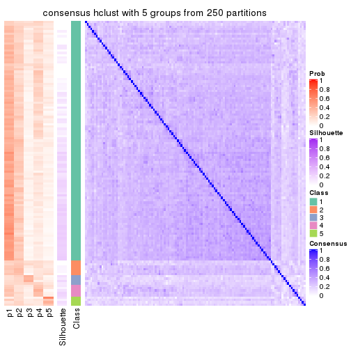
consensus_heatmap(res, k = 6)
Heatmaps for the membership of samples in all partitions to see how consistent they are:
membership_heatmap(res, k = 2)
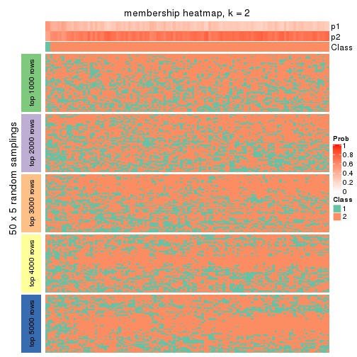
membership_heatmap(res, k = 3)
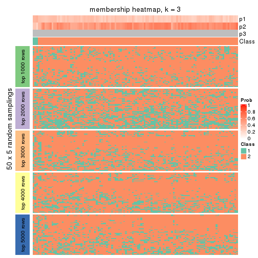
membership_heatmap(res, k = 4)
membership_heatmap(res, k = 5)
membership_heatmap(res, k = 6)
As soon as we have had the classes for columns, we can look for signatures which are significantly different between classes which can be candidate marks for certain classes. Following are the heatmaps for signatures.
Signature heatmaps where rows are scaled:
get_signatures(res, k = 2)

get_signatures(res, k = 3)

get_signatures(res, k = 4)

get_signatures(res, k = 5)

get_signatures(res, k = 6)

Signature heatmaps where rows are not scaled:
get_signatures(res, k = 2, scale_rows = FALSE)

get_signatures(res, k = 3, scale_rows = FALSE)

get_signatures(res, k = 4, scale_rows = FALSE)

get_signatures(res, k = 5, scale_rows = FALSE)

get_signatures(res, k = 6, scale_rows = FALSE)

Compare the overlap of signatures from different k:
compare_signatures(res)

get_signature() returns a data frame invisibly. TO get the list of signatures, the function
call should be assigned to a variable explicitly. In following code, if plot argument is set
to FALSE, no heatmap is plotted while only the differential analysis is performed.
# code only for demonstration
tb = get_signature(res, k = ..., plot = FALSE)
An example of the output of tb is:
#> which_row fdr mean_1 mean_2 scaled_mean_1 scaled_mean_2 km
#> 1 38 0.042760348 8.373488 9.131774 -0.5533452 0.5164555 1
#> 2 40 0.018707592 7.106213 8.469186 -0.6173731 0.5762149 1
#> 3 55 0.019134737 10.221463 11.207825 -0.6159697 0.5749050 1
#> 4 59 0.006059896 5.921854 7.869574 -0.6899429 0.6439467 1
#> 5 60 0.018055526 8.928898 10.211722 -0.6204761 0.5791110 1
#> 6 98 0.009384629 15.714769 14.887706 0.6635654 -0.6193277 2
...
The columns in tb are:
which_row: row indices corresponding to the input matrix.fdr: FDR for the differential test. mean_x: The mean value in group x.scaled_mean_x: The mean value in group x after rows are scaled.km: Row groups if k-means clustering is applied to rows.UMAP plot which shows how samples are separated.
dimension_reduction(res, k = 2, method = "UMAP")
dimension_reduction(res, k = 3, method = "UMAP")
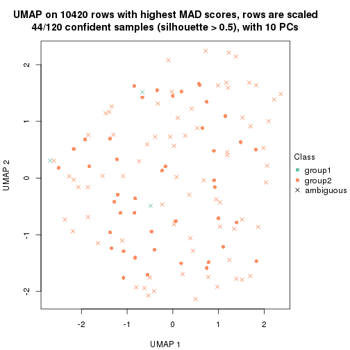
dimension_reduction(res, k = 4, method = "UMAP")
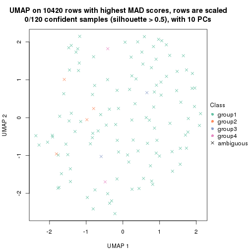
dimension_reduction(res, k = 5, method = "UMAP")
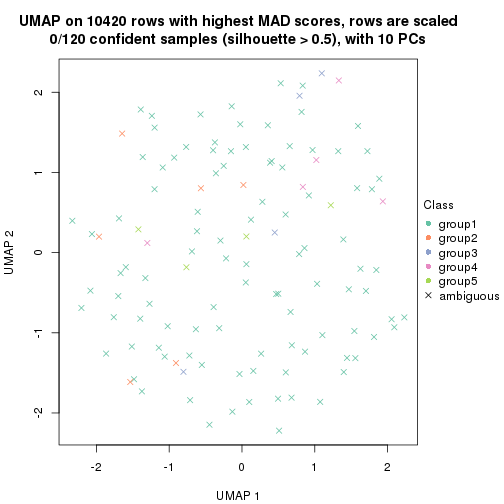
dimension_reduction(res, k = 6, method = "UMAP")
Following heatmap shows how subgroups are split when increasing k:
collect_classes(res)
If matrix rows can be associated to genes, consider to use GO_Enrichment(res,
...) to perform function enrichment for the signature genes.
The object with results only for a single top-value method and a single partition method can be extracted as:
res = res_list["MAD", "kmeans"]
# you can also extract it by
# res = res_list["MAD:kmeans"]
A summary of res and all the functions that can be applied to it:
res
#> A 'ConsensusPartition' object with k = 2, 3, 4, 5, 6.
#> On a matrix with 10420 rows and 120 columns.
#> Top rows (1000, 2000, 3000, 4000, 5000) are extracted by 'MAD' method.
#> Subgroups are detected by 'kmeans' method.
#> Performed in total 1250 partitions by row resampling.
#> Best k for subgroups seems to be 2.
#>
#> Following methods can be applied to this 'ConsensusPartition' object:
#> [1] "cola_report" "collect_classes" "collect_plots"
#> [4] "collect_stats" "colnames" "compare_signatures"
#> [7] "consensus_heatmap" "dimension_reduction" "functional_enrichment"
#> [10] "get_anno_col" "get_anno" "get_classes"
#> [13] "get_consensus" "get_matrix" "get_membership"
#> [16] "get_param" "get_signatures" "get_stats"
#> [19] "is_best_k" "is_stable_k" "membership_heatmap"
#> [22] "ncol" "nrow" "plot_ecdf"
#> [25] "rownames" "select_partition_number" "show"
#> [28] "suggest_best_k" "test_to_known_factors"
collect_plots() function collects all the plots made from res for all k (number of partitions)
into one single page to provide an easy and fast comparison between different k.
collect_plots(res)
The plots are:
k and the heatmap of
predicted classes for each k.k.k.k.All the plots in panels can be made by individual functions and they are plotted later in this section.
select_partition_number() produces several plots showing different
statistics for choosing “optimized” k. There are following statistics:
k;k, the area increased is defined as \(A_k - A_{k-1}\).The detailed explanations of these statistics can be found in the cola vignette.
Generally speaking, lower PAC score, higher mean silhouette score or higher
concordance corresponds to better partition. Rand index and Jaccard index
measure how similar the current partition is compared to partition with k-1.
If they are too similar, we won't accept k is better than k-1.
select_partition_number(res)
The numeric values for all these statistics can be obtained by get_stats().
get_stats(res)
#> k 1-PAC mean_silhouette concordance area_increased Rand Jaccard
#> 2 2 0.000000 0.1286 0.574 0.4919 0.510 0.510
#> 3 3 0.000932 0.1166 0.458 0.3366 0.593 0.347
#> 4 4 0.018320 0.0796 0.337 0.1268 0.694 0.324
#> 5 5 0.085390 0.0759 0.336 0.0718 0.718 0.249
#> 6 6 0.188480 0.0748 0.304 0.0427 0.821 0.356
suggest_best_k() suggests the best \(k\) based on these statistics. The rules are as follows:
NA.suggest_best_k(res)
#> [1] 2
Following shows the table of the partitions (You need to click the show/hide
code output link to see it). The membership matrix (columns with name p*)
is inferred by
clue::cl_consensus()
function with the SE method. Basically the value in the membership matrix
represents the probability to belong to a certain group. The finall class
label for an item is determined with the group with highest probability it
belongs to.
In get_classes() function, the entropy is calculated from the membership
matrix and the silhouette score is calculated from the consensus matrix.
cbind(get_classes(res, k = 2), get_membership(res, k = 2))
#> class entropy silhouette p1 p2
#> SRR572528 2 0.992 0.06557 0.448 0.552
#> SRR572529 2 0.939 0.19649 0.356 0.644
#> SRR572530 2 0.949 0.08925 0.368 0.632
#> SRR572531 2 0.971 0.16490 0.400 0.600
#> SRR572532 2 0.929 0.19516 0.344 0.656
#> SRR572533 1 0.881 0.23791 0.700 0.300
#> SRR572534 2 0.998 -0.02252 0.476 0.524
#> SRR572535 2 0.891 0.24185 0.308 0.692
#> SRR572536 1 0.760 0.29362 0.780 0.220
#> SRR572537 2 0.971 0.15335 0.400 0.600
#> SRR572538 2 0.990 0.02399 0.440 0.560
#> SRR572539 1 0.997 0.08173 0.532 0.468
#> SRR572540 2 0.991 0.05206 0.444 0.556
#> SRR572541 2 0.987 0.12364 0.432 0.568
#> SRR572542 2 0.952 0.17527 0.372 0.628
#> SRR572543 2 0.861 0.23437 0.284 0.716
#> SRR572544 2 0.971 0.12005 0.400 0.600
#> SRR572545 2 1.000 0.00647 0.492 0.508
#> SRR572546 1 0.998 0.00493 0.528 0.472
#> SRR572547 2 0.767 0.28973 0.224 0.776
#> SRR572548 1 0.999 0.01144 0.516 0.484
#> SRR572549 2 0.963 0.11763 0.388 0.612
#> SRR572550 2 0.999 -0.00337 0.480 0.520
#> SRR572551 2 0.714 0.29708 0.196 0.804
#> SRR572552 2 0.985 0.13558 0.428 0.572
#> SRR572553 2 0.988 0.09275 0.436 0.564
#> SRR572554 2 0.775 0.25348 0.228 0.772
#> SRR572555 2 0.993 0.12353 0.452 0.548
#> SRR572556 1 1.000 0.05114 0.508 0.492
#> SRR572557 2 0.932 0.20577 0.348 0.652
#> SRR572558 2 0.788 0.28341 0.236 0.764
#> SRR572559 2 0.971 0.12207 0.400 0.600
#> SRR572560 1 0.983 0.16661 0.576 0.424
#> SRR572561 2 0.991 0.07812 0.444 0.556
#> SRR572562 1 1.000 0.02224 0.508 0.492
#> SRR572563 1 0.833 0.23425 0.736 0.264
#> SRR572564 1 0.946 0.17725 0.636 0.364
#> SRR572565 1 1.000 0.01661 0.504 0.496
#> SRR572566 2 0.993 0.04021 0.452 0.548
#> SRR572567 2 0.998 0.01677 0.476 0.524
#> SRR572568 1 0.866 0.24486 0.712 0.288
#> SRR572569 1 1.000 -0.01587 0.504 0.496
#> SRR572570 2 0.999 -0.07639 0.480 0.520
#> SRR572571 2 0.991 0.03833 0.444 0.556
#> SRR572572 2 0.998 0.06702 0.476 0.524
#> SRR572573 1 0.988 0.13626 0.564 0.436
#> SRR572574 1 0.973 0.18906 0.596 0.404
#> SRR572575 2 0.961 0.14697 0.384 0.616
#> SRR572576 2 0.975 0.10058 0.408 0.592
#> SRR572577 2 0.939 0.21151 0.356 0.644
#> SRR572578 2 0.981 0.12373 0.420 0.580
#> SRR572579 2 0.996 0.05383 0.464 0.536
#> SRR572580 1 0.998 0.04400 0.528 0.472
#> SRR572581 2 0.973 0.14735 0.404 0.596
#> SRR572582 2 0.987 0.14773 0.432 0.568
#> SRR572583 1 0.978 0.13937 0.588 0.412
#> SRR572584 1 0.949 0.20927 0.632 0.368
#> SRR572585 1 0.996 0.12593 0.536 0.464
#> SRR572586 2 0.975 0.14389 0.408 0.592
#> SRR572587 1 0.958 0.19340 0.620 0.380
#> SRR572588 1 0.983 0.09197 0.576 0.424
#> SRR572589 1 0.946 0.11977 0.636 0.364
#> SRR572590 2 0.952 0.18910 0.372 0.628
#> SRR572591 2 0.983 0.09013 0.424 0.576
#> SRR572592 2 0.988 0.13315 0.436 0.564
#> SRR572593 2 0.990 0.11361 0.440 0.560
#> SRR572594 2 0.981 0.13676 0.420 0.580
#> SRR572595 2 0.990 0.10806 0.440 0.560
#> SRR572596 2 0.983 0.07990 0.424 0.576
#> SRR572597 1 0.997 0.03422 0.532 0.468
#> SRR572598 1 0.917 0.16181 0.668 0.332
#> SRR572599 2 0.990 0.06302 0.440 0.560
#> SRR572600 1 0.994 0.10957 0.544 0.456
#> SRR572601 1 0.929 0.19079 0.656 0.344
#> SRR572602 1 0.839 0.26519 0.732 0.268
#> SRR572603 1 1.000 -0.00440 0.500 0.500
#> SRR572604 1 0.932 0.19324 0.652 0.348
#> SRR572605 2 0.995 0.08280 0.460 0.540
#> SRR572606 2 0.998 0.06371 0.476 0.524
#> SRR572607 2 0.996 -0.03003 0.464 0.536
#> SRR572608 2 0.929 0.20950 0.344 0.656
#> SRR572609 2 0.680 0.29814 0.180 0.820
#> SRR572610 2 0.973 0.12789 0.404 0.596
#> SRR572611 2 0.917 0.24708 0.332 0.668
#> SRR572612 2 0.917 0.24102 0.332 0.668
#> SRR572613 1 0.985 0.13917 0.572 0.428
#> SRR572614 2 0.973 0.15525 0.404 0.596
#> SRR572615 1 0.993 0.05693 0.548 0.452
#> SRR572616 2 0.987 0.13186 0.432 0.568
#> SRR572617 1 0.985 0.11024 0.572 0.428
#> SRR572618 1 0.995 -0.01611 0.540 0.460
#> SRR572619 1 0.983 0.05527 0.576 0.424
#> SRR572620 1 0.952 0.17462 0.628 0.372
#> SRR572621 2 1.000 -0.01928 0.496 0.504
#> SRR572622 1 0.861 0.24307 0.716 0.284
#> SRR572623 2 0.946 0.16929 0.364 0.636
#> SRR572624 2 1.000 0.06077 0.492 0.508
#> SRR572625 1 0.980 0.11067 0.584 0.416
#> SRR572626 2 0.775 0.29492 0.228 0.772
#> SRR572627 2 0.886 0.19895 0.304 0.696
#> SRR572628 1 0.991 0.07207 0.556 0.444
#> SRR572629 1 0.983 0.07268 0.576 0.424
#> SRR572630 1 0.943 0.14160 0.640 0.360
#> SRR572631 1 1.000 0.00631 0.508 0.492
#> SRR572632 1 0.788 0.24974 0.764 0.236
#> SRR572633 2 0.850 0.26781 0.276 0.724
#> SRR572634 1 0.722 0.28662 0.800 0.200
#> SRR572635 1 0.871 0.22444 0.708 0.292
#> SRR572636 2 0.990 0.04947 0.440 0.560
#> SRR572637 2 0.978 0.16111 0.412 0.588
#> SRR572638 2 0.955 0.18322 0.376 0.624
#> SRR572639 1 0.994 0.07826 0.544 0.456
#> SRR572640 2 0.998 0.07182 0.476 0.524
#> SRR572641 2 0.996 0.07699 0.464 0.536
#> SRR572642 1 0.909 0.18767 0.676 0.324
#> SRR572643 1 0.998 0.01995 0.524 0.476
#> SRR572644 2 0.850 0.24018 0.276 0.724
#> SRR572645 1 0.981 0.11594 0.580 0.420
#> SRR572646 1 0.998 0.00273 0.524 0.476
#> SRR572647 1 0.886 0.20523 0.696 0.304
cbind(get_classes(res, k = 3), get_membership(res, k = 3))
#> class entropy silhouette p1 p2 p3
#> SRR572528 1 0.929 0.15676 0.516 0.200 0.284
#> SRR572529 3 0.976 0.01317 0.232 0.356 0.412
#> SRR572530 3 0.820 0.18187 0.108 0.284 0.608
#> SRR572531 2 0.952 0.13228 0.292 0.484 0.224
#> SRR572532 2 0.966 0.07753 0.252 0.464 0.284
#> SRR572533 1 0.932 0.16655 0.520 0.224 0.256
#> SRR572534 1 0.976 0.10265 0.440 0.260 0.300
#> SRR572535 2 0.991 0.11178 0.308 0.400 0.292
#> SRR572536 1 0.864 0.22313 0.596 0.168 0.236
#> SRR572537 2 0.992 0.00777 0.272 0.376 0.352
#> SRR572538 3 0.933 0.15197 0.172 0.356 0.472
#> SRR572539 3 0.998 0.03346 0.344 0.304 0.352
#> SRR572540 2 0.905 0.15329 0.164 0.532 0.304
#> SRR572541 2 0.877 0.20167 0.180 0.584 0.236
#> SRR572542 3 0.932 0.08275 0.176 0.340 0.484
#> SRR572543 3 0.882 0.14534 0.144 0.304 0.552
#> SRR572544 3 0.951 0.11643 0.304 0.216 0.480
#> SRR572545 1 0.984 -0.01078 0.420 0.312 0.268
#> SRR572546 1 0.986 0.06106 0.408 0.328 0.264
#> SRR572547 2 0.702 0.27445 0.076 0.708 0.216
#> SRR572548 2 0.983 -0.00237 0.356 0.396 0.248
#> SRR572549 3 0.975 -0.01273 0.228 0.368 0.404
#> SRR572550 2 0.946 0.12611 0.236 0.500 0.264
#> SRR572551 2 0.853 0.18194 0.112 0.556 0.332
#> SRR572552 2 0.964 0.07354 0.240 0.464 0.296
#> SRR572553 2 0.901 0.20920 0.208 0.560 0.232
#> SRR572554 2 0.851 0.06869 0.092 0.484 0.424
#> SRR572555 2 0.873 0.21480 0.212 0.592 0.196
#> SRR572556 3 0.792 0.25192 0.204 0.136 0.660
#> SRR572557 2 0.945 0.21394 0.284 0.496 0.220
#> SRR572558 2 0.742 0.22381 0.080 0.672 0.248
#> SRR572559 3 0.965 0.06156 0.212 0.360 0.428
#> SRR572560 3 0.908 0.21727 0.236 0.212 0.552
#> SRR572561 2 0.977 0.03731 0.236 0.416 0.348
#> SRR572562 3 0.972 0.15626 0.272 0.276 0.452
#> SRR572563 1 0.955 0.10237 0.472 0.312 0.216
#> SRR572564 1 0.965 0.17090 0.460 0.304 0.236
#> SRR572565 3 0.956 0.14101 0.252 0.264 0.484
#> SRR572566 3 0.949 0.02271 0.184 0.400 0.416
#> SRR572567 3 0.972 0.14216 0.260 0.288 0.452
#> SRR572568 1 0.997 0.00900 0.360 0.296 0.344
#> SRR572569 1 0.993 0.02064 0.364 0.360 0.276
#> SRR572570 3 0.877 0.14898 0.236 0.180 0.584
#> SRR572571 3 0.892 0.21347 0.160 0.288 0.552
#> SRR572572 1 0.989 0.10403 0.408 0.296 0.296
#> SRR572573 3 0.953 0.19637 0.264 0.248 0.488
#> SRR572574 3 0.977 0.03241 0.364 0.232 0.404
#> SRR572575 3 0.912 0.10479 0.156 0.340 0.504
#> SRR572576 1 0.998 0.00181 0.360 0.304 0.336
#> SRR572577 2 0.927 0.16553 0.268 0.524 0.208
#> SRR572578 2 0.964 0.06990 0.332 0.448 0.220
#> SRR572579 3 0.964 0.15973 0.248 0.284 0.468
#> SRR572580 3 0.905 0.14981 0.304 0.164 0.532
#> SRR572581 1 0.996 0.03189 0.380 0.308 0.312
#> SRR572582 2 0.704 0.28838 0.132 0.728 0.140
#> SRR572583 1 0.991 0.07716 0.392 0.328 0.280
#> SRR572584 3 0.969 0.06387 0.324 0.232 0.444
#> SRR572585 3 0.910 0.11964 0.324 0.160 0.516
#> SRR572586 2 0.918 0.08317 0.160 0.496 0.344
#> SRR572587 3 0.919 0.16188 0.292 0.184 0.524
#> SRR572588 3 0.983 0.14372 0.268 0.308 0.424
#> SRR572589 1 0.913 0.11854 0.508 0.160 0.332
#> SRR572590 3 0.949 -0.05385 0.184 0.404 0.412
#> SRR572591 2 0.933 0.19160 0.244 0.520 0.236
#> SRR572592 2 0.756 0.26024 0.164 0.692 0.144
#> SRR572593 2 0.976 0.04713 0.228 0.396 0.376
#> SRR572594 2 0.969 0.12506 0.292 0.456 0.252
#> SRR572595 2 0.927 0.12991 0.348 0.484 0.168
#> SRR572596 3 0.985 0.06054 0.352 0.252 0.396
#> SRR572597 1 0.952 -0.00410 0.412 0.188 0.400
#> SRR572598 1 0.842 0.22439 0.616 0.156 0.228
#> SRR572599 3 0.996 0.09758 0.296 0.332 0.372
#> SRR572600 3 0.977 0.13082 0.268 0.292 0.440
#> SRR572601 1 0.866 0.13398 0.560 0.128 0.312
#> SRR572602 1 0.957 0.05447 0.468 0.220 0.312
#> SRR572603 3 0.882 0.20328 0.232 0.188 0.580
#> SRR572604 1 0.962 0.03684 0.432 0.208 0.360
#> SRR572605 1 0.928 0.06635 0.468 0.368 0.164
#> SRR572606 1 0.930 0.09038 0.472 0.168 0.360
#> SRR572607 3 0.862 0.21102 0.164 0.240 0.596
#> SRR572608 2 0.940 0.06768 0.172 0.432 0.396
#> SRR572609 2 0.943 0.06903 0.176 0.420 0.404
#> SRR572610 1 0.972 0.08014 0.424 0.348 0.228
#> SRR572611 2 0.935 0.20627 0.252 0.516 0.232
#> SRR572612 2 0.771 0.18657 0.064 0.604 0.332
#> SRR572613 1 0.959 0.12745 0.476 0.244 0.280
#> SRR572614 2 0.823 0.24850 0.272 0.612 0.116
#> SRR572615 2 0.955 -0.03370 0.192 0.408 0.400
#> SRR572616 2 0.905 0.22645 0.268 0.548 0.184
#> SRR572617 1 0.897 0.10149 0.488 0.132 0.380
#> SRR572618 2 0.981 0.02134 0.368 0.392 0.240
#> SRR572619 2 0.937 0.11392 0.308 0.496 0.196
#> SRR572620 1 0.928 0.14015 0.524 0.212 0.264
#> SRR572621 3 0.907 0.12541 0.308 0.164 0.528
#> SRR572622 1 0.630 0.25706 0.764 0.072 0.164
#> SRR572623 2 0.993 0.02199 0.288 0.388 0.324
#> SRR572624 1 0.994 0.04355 0.380 0.336 0.284
#> SRR572625 3 0.988 0.00352 0.352 0.260 0.388
#> SRR572626 2 0.854 0.25893 0.152 0.600 0.248
#> SRR572627 3 0.912 0.04473 0.148 0.368 0.484
#> SRR572628 1 0.933 0.09403 0.432 0.404 0.164
#> SRR572629 3 0.939 0.04279 0.388 0.172 0.440
#> SRR572630 1 0.882 0.02607 0.476 0.408 0.116
#> SRR572631 3 0.946 0.14289 0.252 0.248 0.500
#> SRR572632 1 0.891 0.18070 0.572 0.204 0.224
#> SRR572633 2 0.873 0.12862 0.108 0.476 0.416
#> SRR572634 1 0.550 0.27063 0.812 0.064 0.124
#> SRR572635 1 0.915 0.18273 0.536 0.192 0.272
#> SRR572636 2 0.946 -0.03648 0.180 0.428 0.392
#> SRR572637 2 0.994 0.08421 0.316 0.388 0.296
#> SRR572638 2 0.991 0.03700 0.276 0.388 0.336
#> SRR572639 3 0.994 0.06558 0.320 0.296 0.384
#> SRR572640 2 0.921 0.23311 0.264 0.532 0.204
#> SRR572641 2 0.923 0.21698 0.268 0.528 0.204
#> SRR572642 1 0.960 0.15585 0.464 0.312 0.224
#> SRR572643 1 0.997 -0.04187 0.368 0.300 0.332
#> SRR572644 2 0.904 0.09256 0.136 0.472 0.392
#> SRR572645 1 0.874 0.03679 0.464 0.108 0.428
#> SRR572646 3 0.918 0.09033 0.284 0.188 0.528
#> SRR572647 1 0.925 0.22125 0.516 0.296 0.188
cbind(get_classes(res, k = 4), get_membership(res, k = 4))
#> class entropy silhouette p1 p2 p3 p4
#> SRR572528 2 0.976 0.058163 0.200 0.364 0.232 0.204
#> SRR572529 3 0.960 -0.040972 0.200 0.272 0.376 0.152
#> SRR572530 2 0.957 0.000660 0.132 0.360 0.288 0.220
#> SRR572531 2 0.944 0.074929 0.144 0.392 0.292 0.172
#> SRR572532 4 0.961 -0.020725 0.120 0.272 0.296 0.312
#> SRR572533 1 0.830 0.215521 0.500 0.112 0.312 0.076
#> SRR572534 4 0.926 0.013628 0.316 0.152 0.132 0.400
#> SRR572535 2 0.925 0.134052 0.212 0.456 0.160 0.172
#> SRR572536 1 0.886 0.168928 0.428 0.068 0.308 0.196
#> SRR572537 4 0.930 -0.000248 0.092 0.232 0.308 0.368
#> SRR572538 3 0.809 0.161931 0.048 0.192 0.548 0.212
#> SRR572539 4 0.938 0.100290 0.208 0.248 0.128 0.416
#> SRR572540 2 0.952 0.103571 0.144 0.400 0.228 0.228
#> SRR572541 2 0.969 0.023137 0.172 0.356 0.192 0.280
#> SRR572542 2 0.891 0.052161 0.064 0.400 0.328 0.208
#> SRR572543 4 0.955 -0.046652 0.112 0.300 0.272 0.316
#> SRR572544 2 0.943 -0.000367 0.140 0.384 0.304 0.172
#> SRR572545 2 0.913 0.089896 0.220 0.420 0.272 0.088
#> SRR572546 1 0.994 -0.023255 0.288 0.268 0.200 0.244
#> SRR572547 2 0.764 0.127013 0.048 0.600 0.148 0.204
#> SRR572548 3 0.935 0.023445 0.172 0.160 0.436 0.232
#> SRR572549 2 0.953 -0.047748 0.148 0.340 0.336 0.176
#> SRR572550 2 0.972 0.022766 0.260 0.332 0.144 0.264
#> SRR572551 2 0.770 0.146895 0.044 0.592 0.196 0.168
#> SRR572552 2 0.964 0.114008 0.240 0.348 0.276 0.136
#> SRR572553 4 0.966 0.002474 0.128 0.300 0.272 0.300
#> SRR572554 2 0.809 0.097461 0.016 0.464 0.276 0.244
#> SRR572555 4 0.980 0.032865 0.248 0.244 0.172 0.336
#> SRR572556 3 0.947 0.118447 0.136 0.236 0.404 0.224
#> SRR572557 2 0.912 0.109591 0.156 0.472 0.152 0.220
#> SRR572558 2 0.888 0.004098 0.048 0.372 0.304 0.276
#> SRR572559 3 0.935 0.092326 0.120 0.204 0.412 0.264
#> SRR572560 3 0.988 0.067548 0.180 0.252 0.300 0.268
#> SRR572561 2 0.962 0.041572 0.132 0.348 0.276 0.244
#> SRR572562 4 0.963 0.036323 0.128 0.288 0.252 0.332
#> SRR572563 1 0.904 0.180031 0.488 0.152 0.172 0.188
#> SRR572564 1 0.938 0.141091 0.428 0.148 0.188 0.236
#> SRR572565 3 0.959 0.101001 0.152 0.264 0.380 0.204
#> SRR572566 2 0.889 0.131476 0.152 0.508 0.172 0.168
#> SRR572567 3 0.833 0.187406 0.116 0.188 0.564 0.132
#> SRR572568 1 0.929 0.119484 0.452 0.156 0.204 0.188
#> SRR572569 2 0.942 0.075425 0.168 0.380 0.312 0.140
#> SRR572570 3 0.964 0.068693 0.208 0.144 0.328 0.320
#> SRR572571 3 0.919 0.065165 0.112 0.220 0.444 0.224
#> SRR572572 1 0.980 -0.023411 0.308 0.216 0.304 0.172
#> SRR572573 3 0.906 0.164296 0.160 0.236 0.472 0.132
#> SRR572574 1 0.959 0.057224 0.352 0.148 0.308 0.192
#> SRR572575 3 0.949 0.038821 0.124 0.320 0.352 0.204
#> SRR572576 4 0.946 0.027334 0.172 0.144 0.304 0.380
#> SRR572577 2 0.904 0.071129 0.176 0.432 0.096 0.296
#> SRR572578 2 0.973 0.047768 0.304 0.332 0.180 0.184
#> SRR572579 3 0.816 0.176081 0.096 0.160 0.580 0.164
#> SRR572580 2 0.973 -0.063621 0.216 0.320 0.308 0.156
#> SRR572581 2 0.982 0.004267 0.260 0.304 0.160 0.276
#> SRR572582 4 0.992 -0.016106 0.220 0.284 0.208 0.288
#> SRR572583 4 0.968 -0.014623 0.284 0.144 0.232 0.340
#> SRR572584 1 0.945 0.009707 0.348 0.124 0.336 0.192
#> SRR572585 1 0.985 -0.045339 0.304 0.196 0.296 0.204
#> SRR572586 2 0.968 0.069823 0.176 0.380 0.220 0.224
#> SRR572587 3 0.917 0.160221 0.188 0.164 0.472 0.176
#> SRR572588 3 0.931 0.152926 0.184 0.176 0.452 0.188
#> SRR572589 1 0.904 0.109409 0.472 0.120 0.176 0.232
#> SRR572590 2 0.898 0.159403 0.192 0.480 0.216 0.112
#> SRR572591 2 0.932 0.066815 0.140 0.436 0.188 0.236
#> SRR572592 4 0.934 0.068593 0.220 0.224 0.128 0.428
#> SRR572593 2 0.915 0.162664 0.136 0.456 0.248 0.160
#> SRR572594 4 0.970 0.095596 0.220 0.224 0.180 0.376
#> SRR572595 2 0.910 0.098722 0.288 0.400 0.076 0.236
#> SRR572596 2 0.968 0.022256 0.276 0.340 0.140 0.244
#> SRR572597 3 0.676 0.186747 0.136 0.068 0.696 0.100
#> SRR572598 1 0.844 0.214235 0.520 0.124 0.264 0.092
#> SRR572599 3 0.972 0.030937 0.160 0.228 0.352 0.260
#> SRR572600 3 0.992 0.075603 0.208 0.220 0.304 0.268
#> SRR572601 1 0.899 0.052444 0.440 0.120 0.132 0.308
#> SRR572602 1 0.912 0.072359 0.344 0.064 0.296 0.296
#> SRR572603 3 0.903 0.163292 0.140 0.148 0.476 0.236
#> SRR572604 2 0.997 -0.045964 0.216 0.276 0.244 0.264
#> SRR572605 3 0.990 -0.038277 0.268 0.272 0.280 0.180
#> SRR572606 4 0.979 -0.006048 0.300 0.196 0.184 0.320
#> SRR572607 4 0.953 -0.052270 0.140 0.216 0.252 0.392
#> SRR572608 2 0.816 0.141238 0.096 0.560 0.108 0.236
#> SRR572609 2 0.876 0.120293 0.076 0.476 0.192 0.256
#> SRR572610 4 0.958 0.070863 0.200 0.212 0.184 0.404
#> SRR572611 2 0.855 0.135459 0.144 0.540 0.120 0.196
#> SRR572612 2 0.845 0.179675 0.128 0.556 0.172 0.144
#> SRR572613 1 0.903 0.097773 0.400 0.104 0.148 0.348
#> SRR572614 2 0.849 0.145670 0.192 0.520 0.072 0.216
#> SRR572615 2 0.985 0.026878 0.284 0.312 0.188 0.216
#> SRR572616 2 0.845 0.124350 0.240 0.472 0.040 0.248
#> SRR572617 1 0.975 0.051764 0.360 0.176 0.232 0.232
#> SRR572618 1 0.942 0.091450 0.412 0.256 0.192 0.140
#> SRR572619 1 0.986 0.035904 0.288 0.276 0.168 0.268
#> SRR572620 1 0.926 0.086453 0.376 0.088 0.300 0.236
#> SRR572621 3 0.945 0.005169 0.176 0.136 0.360 0.328
#> SRR572622 1 0.872 0.163179 0.528 0.140 0.164 0.168
#> SRR572623 2 0.993 0.044798 0.236 0.312 0.232 0.220
#> SRR572624 3 0.905 -0.017453 0.240 0.304 0.388 0.068
#> SRR572625 4 0.945 -0.005729 0.316 0.168 0.144 0.372
#> SRR572626 2 0.648 0.238025 0.080 0.720 0.096 0.104
#> SRR572627 4 0.832 0.072920 0.056 0.276 0.160 0.508
#> SRR572628 1 0.881 0.079889 0.448 0.220 0.064 0.268
#> SRR572629 3 0.743 0.200552 0.124 0.080 0.644 0.152
#> SRR572630 1 0.944 0.149018 0.404 0.248 0.128 0.220
#> SRR572631 4 0.984 0.018028 0.244 0.196 0.220 0.340
#> SRR572632 1 0.740 0.238837 0.652 0.116 0.100 0.132
#> SRR572633 2 0.824 0.189771 0.112 0.576 0.168 0.144
#> SRR572634 1 0.718 0.271693 0.660 0.072 0.164 0.104
#> SRR572635 1 0.845 0.221510 0.516 0.112 0.272 0.100
#> SRR572636 3 0.951 0.021917 0.120 0.220 0.352 0.308
#> SRR572637 2 0.838 0.133433 0.128 0.536 0.092 0.244
#> SRR572638 3 0.968 0.008645 0.152 0.216 0.352 0.280
#> SRR572639 3 0.982 0.071043 0.196 0.264 0.336 0.204
#> SRR572640 2 0.941 0.064266 0.260 0.384 0.108 0.248
#> SRR572641 2 0.915 0.146236 0.260 0.440 0.108 0.192
#> SRR572642 1 0.841 0.189589 0.560 0.152 0.124 0.164
#> SRR572643 3 0.977 0.016278 0.184 0.284 0.336 0.196
#> SRR572644 2 0.935 0.071510 0.160 0.416 0.148 0.276
#> SRR572645 3 0.939 0.057921 0.212 0.184 0.436 0.168
#> SRR572646 3 0.969 0.012587 0.208 0.168 0.368 0.256
#> SRR572647 1 0.795 0.204764 0.576 0.100 0.088 0.236
cbind(get_classes(res, k = 5), get_membership(res, k = 5))
#> class entropy silhouette p1 p2 p3 p4 p5
#> SRR572528 2 0.917 0.05366 0.076 0.400 0.164 0.188 0.172
#> SRR572529 4 0.921 0.03928 0.096 0.264 0.140 0.372 0.128
#> SRR572530 5 0.961 0.03609 0.132 0.252 0.240 0.104 0.272
#> SRR572531 2 0.945 0.07774 0.216 0.324 0.208 0.072 0.180
#> SRR572532 3 0.960 -0.01661 0.272 0.180 0.284 0.096 0.168
#> SRR572533 3 0.925 0.14138 0.168 0.100 0.384 0.228 0.120
#> SRR572534 4 0.921 0.11993 0.156 0.148 0.168 0.416 0.112
#> SRR572535 2 0.662 0.07626 0.048 0.628 0.056 0.228 0.040
#> SRR572536 3 0.928 0.12907 0.180 0.068 0.364 0.172 0.216
#> SRR572537 1 0.925 -0.01113 0.316 0.156 0.308 0.072 0.148
#> SRR572538 5 0.925 0.12762 0.104 0.176 0.224 0.112 0.384
#> SRR572539 1 0.987 -0.02404 0.268 0.216 0.152 0.160 0.204
#> SRR572540 2 0.897 0.07257 0.244 0.384 0.068 0.092 0.212
#> SRR572541 1 0.883 0.06553 0.440 0.160 0.092 0.088 0.220
#> SRR572542 2 0.969 0.01991 0.120 0.304 0.224 0.152 0.200
#> SRR572543 5 0.906 0.08698 0.108 0.244 0.160 0.088 0.400
#> SRR572544 2 0.904 0.02298 0.068 0.352 0.172 0.108 0.300
#> SRR572545 2 0.950 0.11017 0.164 0.360 0.140 0.128 0.208
#> SRR572546 2 0.960 0.08327 0.200 0.332 0.108 0.192 0.168
#> SRR572547 2 0.855 0.06925 0.332 0.376 0.084 0.044 0.164
#> SRR572548 1 0.941 -0.00267 0.304 0.152 0.272 0.072 0.200
#> SRR572549 2 0.974 0.04401 0.140 0.260 0.224 0.124 0.252
#> SRR572550 1 0.892 0.14250 0.448 0.160 0.084 0.140 0.168
#> SRR572551 2 0.886 0.14579 0.180 0.416 0.224 0.052 0.128
#> SRR572552 2 0.977 0.02652 0.208 0.296 0.144 0.204 0.148
#> SRR572553 1 0.834 0.09104 0.496 0.200 0.156 0.060 0.088
#> SRR572554 2 0.934 0.08842 0.160 0.340 0.200 0.068 0.232
#> SRR572555 1 0.853 0.11700 0.476 0.172 0.052 0.180 0.120
#> SRR572556 5 0.879 0.20503 0.084 0.132 0.184 0.136 0.464
#> SRR572557 2 0.836 0.15250 0.152 0.524 0.108 0.116 0.100
#> SRR572558 1 0.909 0.02899 0.416 0.180 0.180 0.080 0.144
#> SRR572559 5 0.955 0.07670 0.144 0.184 0.248 0.104 0.320
#> SRR572560 5 0.669 0.29010 0.096 0.068 0.056 0.108 0.672
#> SRR572561 2 0.978 0.04474 0.264 0.268 0.148 0.156 0.164
#> SRR572562 5 0.918 0.09847 0.164 0.212 0.116 0.104 0.404
#> SRR572563 1 0.938 0.01554 0.332 0.132 0.156 0.100 0.280
#> SRR572564 1 0.963 0.05017 0.304 0.104 0.224 0.216 0.152
#> SRR572565 5 0.744 0.20430 0.152 0.120 0.052 0.076 0.600
#> SRR572566 2 0.974 0.08707 0.152 0.312 0.160 0.164 0.212
#> SRR572567 5 0.881 0.11227 0.104 0.132 0.208 0.100 0.456
#> SRR572568 5 0.906 0.04061 0.296 0.088 0.108 0.140 0.368
#> SRR572569 2 0.984 0.10567 0.164 0.284 0.212 0.152 0.188
#> SRR572570 3 0.890 -0.01338 0.068 0.084 0.360 0.184 0.304
#> SRR572571 5 0.969 0.05420 0.120 0.184 0.168 0.216 0.312
#> SRR572572 4 0.837 0.13050 0.104 0.236 0.096 0.488 0.076
#> SRR572573 5 0.650 0.26601 0.072 0.104 0.076 0.060 0.688
#> SRR572574 5 0.929 0.05690 0.168 0.056 0.188 0.284 0.304
#> SRR572575 3 0.963 -0.04894 0.108 0.272 0.280 0.148 0.192
#> SRR572576 3 0.920 0.11789 0.124 0.128 0.404 0.220 0.124
#> SRR572577 4 0.887 0.02728 0.276 0.252 0.036 0.328 0.108
#> SRR572578 2 0.962 -0.02219 0.252 0.264 0.108 0.248 0.128
#> SRR572579 3 0.919 0.06521 0.164 0.136 0.372 0.076 0.252
#> SRR572580 5 0.814 0.08919 0.072 0.288 0.072 0.092 0.476
#> SRR572581 4 0.919 0.04984 0.112 0.280 0.076 0.344 0.188
#> SRR572582 1 0.740 0.16524 0.592 0.192 0.092 0.064 0.060
#> SRR572583 1 0.986 0.03780 0.276 0.180 0.156 0.220 0.168
#> SRR572584 5 0.923 0.07472 0.144 0.072 0.244 0.176 0.364
#> SRR572585 5 0.887 0.07922 0.072 0.132 0.288 0.112 0.396
#> SRR572586 1 0.955 0.01762 0.288 0.192 0.284 0.116 0.120
#> SRR572587 5 0.782 0.18674 0.112 0.096 0.200 0.044 0.548
#> SRR572588 5 0.876 0.03424 0.184 0.096 0.296 0.048 0.376
#> SRR572589 4 0.648 0.22990 0.040 0.116 0.076 0.684 0.084
#> SRR572590 4 0.870 -0.00564 0.100 0.312 0.128 0.396 0.064
#> SRR572591 2 0.907 -0.02332 0.280 0.348 0.208 0.076 0.088
#> SRR572592 1 0.676 0.17795 0.668 0.092 0.052 0.092 0.096
#> SRR572593 2 0.862 0.15163 0.112 0.476 0.076 0.200 0.136
#> SRR572594 4 0.955 0.03317 0.268 0.188 0.144 0.300 0.100
#> SRR572595 4 0.949 -0.03829 0.248 0.236 0.088 0.296 0.132
#> SRR572596 4 0.879 0.11563 0.096 0.256 0.044 0.380 0.224
#> SRR572597 3 0.849 0.19220 0.096 0.112 0.508 0.156 0.128
#> SRR572598 3 0.858 0.13519 0.112 0.100 0.440 0.276 0.072
#> SRR572599 3 0.953 0.08838 0.136 0.216 0.352 0.132 0.164
#> SRR572600 5 0.896 0.13162 0.200 0.072 0.168 0.132 0.428
#> SRR572601 4 0.874 0.18885 0.096 0.124 0.120 0.472 0.188
#> SRR572602 3 0.885 0.07130 0.236 0.052 0.380 0.092 0.240
#> SRR572603 3 0.848 0.11394 0.084 0.132 0.496 0.096 0.192
#> SRR572604 5 0.927 0.04346 0.124 0.244 0.124 0.128 0.380
#> SRR572605 3 0.976 0.03146 0.196 0.216 0.288 0.184 0.116
#> SRR572606 4 0.798 0.14987 0.036 0.288 0.108 0.480 0.088
#> SRR572607 5 0.881 0.18976 0.128 0.232 0.136 0.068 0.436
#> SRR572608 2 0.906 0.08625 0.172 0.400 0.076 0.120 0.232
#> SRR572609 2 0.853 0.08751 0.076 0.492 0.136 0.184 0.112
#> SRR572610 2 0.961 0.02655 0.196 0.316 0.100 0.220 0.168
#> SRR572611 2 0.931 0.09872 0.208 0.348 0.092 0.244 0.108
#> SRR572612 1 0.946 -0.03884 0.300 0.232 0.140 0.248 0.080
#> SRR572613 1 0.974 0.05968 0.292 0.116 0.188 0.180 0.224
#> SRR572614 2 0.813 0.03288 0.368 0.380 0.032 0.160 0.060
#> SRR572615 5 0.922 0.08123 0.284 0.156 0.088 0.120 0.352
#> SRR572616 2 0.842 -0.01433 0.340 0.396 0.044 0.120 0.100
#> SRR572617 4 0.895 0.09324 0.080 0.140 0.108 0.392 0.280
#> SRR572618 1 0.912 0.01903 0.300 0.216 0.264 0.188 0.032
#> SRR572619 1 0.825 0.16911 0.508 0.112 0.216 0.068 0.096
#> SRR572620 3 0.792 0.22717 0.112 0.064 0.552 0.184 0.088
#> SRR572621 3 0.899 -0.02684 0.060 0.144 0.352 0.312 0.132
#> SRR572622 4 0.932 0.04684 0.076 0.128 0.224 0.340 0.232
#> SRR572623 4 0.920 0.02282 0.128 0.300 0.140 0.344 0.088
#> SRR572624 2 0.962 0.05107 0.100 0.292 0.260 0.176 0.172
#> SRR572625 1 0.957 -0.04765 0.292 0.164 0.084 0.232 0.228
#> SRR572626 2 0.773 0.19161 0.184 0.560 0.056 0.064 0.136
#> SRR572627 5 0.967 0.01142 0.252 0.192 0.168 0.104 0.284
#> SRR572628 1 0.964 0.07365 0.316 0.124 0.152 0.240 0.168
#> SRR572629 3 0.782 0.16488 0.068 0.108 0.560 0.076 0.188
#> SRR572630 1 0.954 0.09147 0.344 0.220 0.120 0.176 0.140
#> SRR572631 4 0.947 0.00775 0.072 0.168 0.204 0.288 0.268
#> SRR572632 5 0.881 -0.02684 0.212 0.036 0.108 0.300 0.344
#> SRR572633 2 0.915 0.12487 0.100 0.416 0.128 0.180 0.176
#> SRR572634 3 0.947 0.00193 0.136 0.092 0.292 0.292 0.188
#> SRR572635 3 0.930 0.07171 0.184 0.080 0.316 0.296 0.124
#> SRR572636 3 0.876 -0.01097 0.324 0.124 0.328 0.028 0.196
#> SRR572637 2 0.835 0.12118 0.084 0.488 0.056 0.204 0.168
#> SRR572638 2 0.985 -0.00929 0.128 0.232 0.232 0.232 0.176
#> SRR572639 5 0.837 0.09137 0.192 0.212 0.084 0.044 0.468
#> SRR572640 1 0.919 0.07967 0.388 0.216 0.088 0.116 0.192
#> SRR572641 1 0.885 0.01358 0.368 0.328 0.104 0.124 0.076
#> SRR572642 4 0.851 0.10984 0.144 0.080 0.140 0.504 0.132
#> SRR572643 5 0.876 0.03728 0.160 0.264 0.096 0.064 0.416
#> SRR572644 2 0.981 0.04351 0.204 0.284 0.132 0.172 0.208
#> SRR572645 3 0.877 0.14500 0.052 0.232 0.428 0.164 0.124
#> SRR572646 4 0.919 0.05311 0.044 0.236 0.160 0.320 0.240
#> SRR572647 4 0.913 -0.04225 0.304 0.072 0.164 0.340 0.120
cbind(get_classes(res, k = 6), get_membership(res, k = 6))
#> class entropy silhouette p1 p2 p3 p4 p5 p6
#> SRR572528 4 0.801 0.130573 0.092 0.124 0.176 0.496 0.088 0.024
#> SRR572529 2 0.737 0.179605 0.064 0.560 0.036 0.128 0.044 0.168
#> SRR572530 2 0.899 -0.051291 0.112 0.300 0.016 0.180 0.240 0.152
#> SRR572531 4 0.918 0.121839 0.152 0.120 0.072 0.376 0.116 0.164
#> SRR572532 1 0.898 0.105555 0.408 0.076 0.124 0.152 0.092 0.148
#> SRR572533 3 0.897 0.104888 0.188 0.116 0.404 0.080 0.112 0.100
#> SRR572534 3 0.958 0.030374 0.204 0.080 0.256 0.104 0.140 0.216
#> SRR572535 4 0.773 0.033157 0.064 0.280 0.068 0.468 0.024 0.096
#> SRR572536 1 0.873 -0.035326 0.320 0.048 0.304 0.064 0.180 0.084
#> SRR572537 1 0.887 0.096497 0.408 0.092 0.060 0.104 0.172 0.164
#> SRR572538 5 0.915 0.072981 0.220 0.132 0.028 0.144 0.312 0.164
#> SRR572539 6 0.973 0.016931 0.136 0.124 0.096 0.196 0.212 0.236
#> SRR572540 4 0.900 0.101783 0.072 0.180 0.064 0.380 0.136 0.168
#> SRR572541 6 0.893 0.066739 0.240 0.104 0.044 0.180 0.084 0.348
#> SRR572542 4 0.937 -0.021030 0.092 0.256 0.072 0.264 0.204 0.112
#> SRR572543 4 0.936 -0.048172 0.168 0.148 0.048 0.292 0.224 0.120
#> SRR572544 4 0.865 0.097177 0.152 0.084 0.072 0.420 0.208 0.064
#> SRR572545 4 0.931 0.099688 0.188 0.112 0.168 0.336 0.132 0.064
#> SRR572546 4 0.967 0.096290 0.124 0.172 0.180 0.288 0.124 0.112
#> SRR572547 4 0.835 0.039130 0.136 0.084 0.020 0.368 0.084 0.308
#> SRR572548 1 0.823 0.084641 0.484 0.068 0.072 0.120 0.068 0.188
#> SRR572549 4 0.953 0.050103 0.228 0.204 0.072 0.228 0.184 0.084
#> SRR572550 6 0.948 0.084030 0.128 0.120 0.096 0.184 0.144 0.328
#> SRR572551 4 0.856 0.095357 0.276 0.168 0.024 0.360 0.084 0.088
#> SRR572552 2 0.970 -0.026045 0.092 0.224 0.124 0.216 0.128 0.216
#> SRR572553 6 0.880 0.100669 0.248 0.096 0.028 0.144 0.124 0.360
#> SRR572554 4 0.878 0.107624 0.228 0.168 0.024 0.360 0.136 0.084
#> SRR572555 6 0.699 0.203065 0.068 0.100 0.076 0.056 0.072 0.628
#> SRR572556 5 0.874 0.113220 0.092 0.320 0.064 0.084 0.340 0.100
#> SRR572557 4 0.839 0.159555 0.112 0.092 0.076 0.488 0.088 0.144
#> SRR572558 6 0.922 0.023792 0.248 0.084 0.060 0.172 0.128 0.308
#> SRR572559 1 0.934 0.059108 0.316 0.108 0.072 0.168 0.112 0.224
#> SRR572560 5 0.726 0.277289 0.048 0.140 0.040 0.120 0.584 0.068
#> SRR572561 4 0.913 0.026297 0.160 0.176 0.012 0.256 0.164 0.232
#> SRR572562 5 0.942 0.077047 0.092 0.128 0.092 0.188 0.324 0.176
#> SRR572563 3 0.955 0.022574 0.116 0.064 0.272 0.180 0.176 0.192
#> SRR572564 6 0.907 0.020603 0.096 0.108 0.248 0.076 0.116 0.356
#> SRR572565 5 0.877 0.118696 0.172 0.092 0.068 0.148 0.428 0.092
#> SRR572566 4 0.929 0.071847 0.096 0.176 0.080 0.348 0.176 0.124
#> SRR572567 1 0.871 -0.033077 0.316 0.208 0.048 0.092 0.288 0.048
#> SRR572568 6 0.899 0.021905 0.056 0.080 0.200 0.084 0.280 0.300
#> SRR572569 4 0.949 0.142878 0.172 0.100 0.140 0.332 0.124 0.132
#> SRR572570 1 0.938 0.021989 0.244 0.200 0.152 0.040 0.244 0.120
#> SRR572571 2 0.909 -0.032533 0.180 0.320 0.032 0.152 0.220 0.096
#> SRR572572 2 0.884 0.152418 0.084 0.404 0.168 0.136 0.048 0.160
#> SRR572573 5 0.818 0.161789 0.164 0.068 0.044 0.156 0.484 0.084
#> SRR572574 5 0.973 -0.027478 0.176 0.120 0.160 0.092 0.240 0.212
#> SRR572575 4 0.941 -0.000275 0.228 0.200 0.056 0.256 0.172 0.088
#> SRR572576 1 0.904 0.077997 0.372 0.128 0.196 0.088 0.056 0.160
#> SRR572577 6 0.951 0.057910 0.072 0.128 0.176 0.212 0.124 0.288
#> SRR572578 2 0.881 0.111867 0.048 0.400 0.140 0.144 0.076 0.192
#> SRR572579 1 0.911 0.100898 0.360 0.096 0.056 0.164 0.200 0.124
#> SRR572580 4 0.899 -0.020990 0.088 0.172 0.124 0.316 0.264 0.036
#> SRR572581 2 0.930 0.052663 0.028 0.272 0.164 0.220 0.148 0.168
#> SRR572582 6 0.744 0.200746 0.116 0.084 0.040 0.104 0.076 0.580
#> SRR572583 6 0.932 0.010221 0.104 0.084 0.148 0.104 0.248 0.312
#> SRR572584 5 0.825 0.077002 0.052 0.164 0.208 0.028 0.440 0.108
#> SRR572585 5 0.908 0.063472 0.080 0.240 0.228 0.100 0.300 0.052
#> SRR572586 4 0.993 0.008264 0.192 0.160 0.124 0.196 0.148 0.180
#> SRR572587 5 0.646 0.170123 0.160 0.048 0.028 0.088 0.640 0.036
#> SRR572588 1 0.866 0.135204 0.452 0.092 0.108 0.080 0.168 0.100
#> SRR572589 2 0.844 0.036325 0.068 0.380 0.312 0.092 0.052 0.096
#> SRR572590 2 0.839 0.106995 0.076 0.452 0.076 0.228 0.084 0.084
#> SRR572591 4 0.979 -0.027972 0.164 0.132 0.112 0.232 0.136 0.224
#> SRR572592 6 0.528 0.247993 0.120 0.028 0.028 0.064 0.024 0.736
#> SRR572593 4 0.829 0.058059 0.056 0.288 0.056 0.416 0.084 0.100
#> SRR572594 6 0.848 0.107673 0.108 0.104 0.140 0.140 0.044 0.464
#> SRR572595 4 0.958 -0.062823 0.084 0.084 0.224 0.232 0.168 0.208
#> SRR572596 2 0.907 0.108578 0.040 0.348 0.152 0.184 0.184 0.092
#> SRR572597 1 0.808 0.194164 0.500 0.160 0.148 0.060 0.080 0.052
#> SRR572598 3 0.733 0.153976 0.120 0.168 0.564 0.072 0.044 0.032
#> SRR572599 3 0.973 -0.031367 0.192 0.068 0.208 0.164 0.164 0.204
#> SRR572600 5 0.777 0.176473 0.116 0.068 0.124 0.068 0.552 0.072
#> SRR572601 3 0.910 0.139814 0.100 0.156 0.396 0.088 0.144 0.116
#> SRR572602 1 0.839 0.065854 0.348 0.012 0.192 0.048 0.268 0.132
#> SRR572603 1 0.888 0.146723 0.388 0.144 0.096 0.124 0.204 0.044
#> SRR572604 5 0.802 0.109296 0.068 0.056 0.068 0.264 0.464 0.080
#> SRR572605 3 0.925 0.027130 0.212 0.056 0.308 0.184 0.076 0.164
#> SRR572606 2 0.935 0.049256 0.080 0.260 0.240 0.228 0.072 0.120
#> SRR572607 5 0.888 0.151658 0.060 0.244 0.044 0.152 0.348 0.152
#> SRR572608 4 0.840 0.112053 0.064 0.084 0.060 0.460 0.180 0.152
#> SRR572609 2 0.829 0.047537 0.092 0.432 0.036 0.260 0.084 0.096
#> SRR572610 4 0.975 -0.006199 0.208 0.200 0.156 0.224 0.092 0.120
#> SRR572611 4 0.963 0.032243 0.136 0.224 0.084 0.268 0.144 0.144
#> SRR572612 2 0.912 0.053641 0.088 0.324 0.076 0.184 0.080 0.248
#> SRR572613 6 0.952 -0.006922 0.172 0.052 0.232 0.128 0.172 0.244
#> SRR572614 4 0.859 0.069645 0.088 0.084 0.096 0.420 0.068 0.244
#> SRR572615 6 0.940 0.002320 0.076 0.144 0.096 0.148 0.236 0.300
#> SRR572616 4 0.886 0.038065 0.052 0.088 0.136 0.388 0.112 0.224
#> SRR572617 3 0.930 0.008139 0.068 0.256 0.256 0.084 0.228 0.108
#> SRR572618 3 0.968 0.090259 0.124 0.184 0.288 0.160 0.116 0.128
#> SRR572619 6 0.942 0.042880 0.184 0.060 0.176 0.140 0.128 0.312
#> SRR572620 1 0.750 0.027478 0.416 0.044 0.372 0.036 0.048 0.084
#> SRR572621 2 0.973 -0.022973 0.216 0.236 0.180 0.084 0.148 0.136
#> SRR572622 3 0.792 0.211020 0.068 0.048 0.508 0.128 0.188 0.060
#> SRR572623 2 0.934 0.102770 0.152 0.328 0.148 0.196 0.060 0.116
#> SRR572624 4 0.923 0.032562 0.200 0.212 0.156 0.296 0.096 0.040
#> SRR572625 6 0.938 0.068271 0.052 0.152 0.148 0.168 0.160 0.320
#> SRR572626 4 0.719 0.144181 0.052 0.192 0.028 0.572 0.084 0.072
#> SRR572627 5 0.961 -0.004188 0.176 0.172 0.048 0.184 0.216 0.204
#> SRR572628 3 0.892 -0.004047 0.064 0.092 0.320 0.096 0.116 0.312
#> SRR572629 1 0.754 0.238519 0.572 0.092 0.120 0.056 0.104 0.056
#> SRR572630 3 0.957 0.081989 0.168 0.080 0.296 0.188 0.136 0.132
#> SRR572631 6 0.989 -0.053571 0.136 0.188 0.128 0.172 0.152 0.224
#> SRR572632 3 0.753 0.183604 0.036 0.044 0.464 0.036 0.300 0.120
#> SRR572633 4 0.790 0.027608 0.024 0.300 0.048 0.428 0.120 0.080
#> SRR572634 3 0.745 0.200712 0.128 0.100 0.576 0.076 0.084 0.036
#> SRR572635 3 0.852 0.177786 0.140 0.160 0.460 0.068 0.068 0.104
#> SRR572636 1 0.876 0.115004 0.400 0.076 0.048 0.112 0.208 0.156
#> SRR572637 4 0.734 0.128476 0.056 0.104 0.084 0.584 0.132 0.040
#> SRR572638 2 0.987 -0.015113 0.180 0.208 0.108 0.196 0.132 0.176
#> SRR572639 5 0.858 0.062621 0.108 0.052 0.088 0.236 0.420 0.096
#> SRR572640 6 0.989 0.045106 0.148 0.124 0.164 0.192 0.148 0.224
#> SRR572641 4 0.890 0.082288 0.052 0.168 0.172 0.364 0.052 0.192
#> SRR572642 3 0.894 0.157712 0.068 0.156 0.396 0.072 0.132 0.176
#> SRR572643 4 0.854 0.013210 0.196 0.036 0.052 0.348 0.280 0.088
#> SRR572644 2 0.904 0.090021 0.084 0.384 0.072 0.156 0.116 0.188
#> SRR572645 1 0.879 0.072638 0.324 0.168 0.196 0.188 0.120 0.004
#> SRR572646 2 0.905 0.146418 0.128 0.400 0.092 0.172 0.096 0.112
#> SRR572647 3 0.812 0.064390 0.072 0.108 0.392 0.032 0.068 0.328
Heatmaps for the consensus matrix. It visualizes the probability of two samples to be in a same group.
consensus_heatmap(res, k = 2)
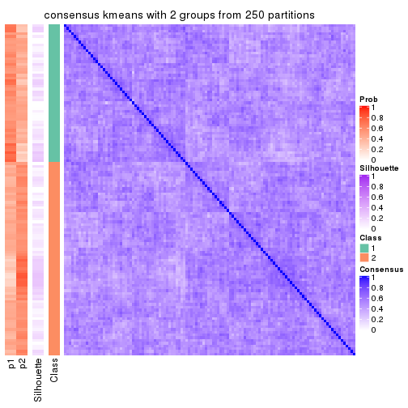
consensus_heatmap(res, k = 3)
consensus_heatmap(res, k = 4)
consensus_heatmap(res, k = 5)
consensus_heatmap(res, k = 6)
Heatmaps for the membership of samples in all partitions to see how consistent they are:
membership_heatmap(res, k = 2)
membership_heatmap(res, k = 3)
membership_heatmap(res, k = 4)
membership_heatmap(res, k = 5)
membership_heatmap(res, k = 6)
As soon as we have had the classes for columns, we can look for signatures which are significantly different between classes which can be candidate marks for certain classes. Following are the heatmaps for signatures.
Signature heatmaps where rows are scaled:
get_signatures(res, k = 2)

get_signatures(res, k = 3)

get_signatures(res, k = 4)

get_signatures(res, k = 5)

get_signatures(res, k = 6)

Signature heatmaps where rows are not scaled:
get_signatures(res, k = 2, scale_rows = FALSE)

get_signatures(res, k = 3, scale_rows = FALSE)

get_signatures(res, k = 4, scale_rows = FALSE)

get_signatures(res, k = 5, scale_rows = FALSE)

get_signatures(res, k = 6, scale_rows = FALSE)

Compare the overlap of signatures from different k:
compare_signatures(res)

get_signature() returns a data frame invisibly. TO get the list of signatures, the function
call should be assigned to a variable explicitly. In following code, if plot argument is set
to FALSE, no heatmap is plotted while only the differential analysis is performed.
# code only for demonstration
tb = get_signature(res, k = ..., plot = FALSE)
An example of the output of tb is:
#> which_row fdr mean_1 mean_2 scaled_mean_1 scaled_mean_2 km
#> 1 38 0.042760348 8.373488 9.131774 -0.5533452 0.5164555 1
#> 2 40 0.018707592 7.106213 8.469186 -0.6173731 0.5762149 1
#> 3 55 0.019134737 10.221463 11.207825 -0.6159697 0.5749050 1
#> 4 59 0.006059896 5.921854 7.869574 -0.6899429 0.6439467 1
#> 5 60 0.018055526 8.928898 10.211722 -0.6204761 0.5791110 1
#> 6 98 0.009384629 15.714769 14.887706 0.6635654 -0.6193277 2
...
The columns in tb are:
which_row: row indices corresponding to the input matrix.fdr: FDR for the differential test. mean_x: The mean value in group x.scaled_mean_x: The mean value in group x after rows are scaled.km: Row groups if k-means clustering is applied to rows.UMAP plot which shows how samples are separated.
dimension_reduction(res, k = 2, method = "UMAP")
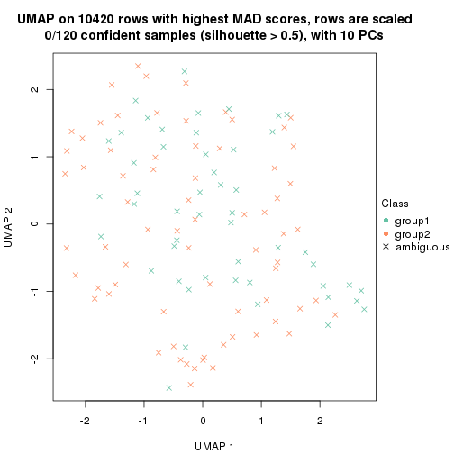
dimension_reduction(res, k = 3, method = "UMAP")
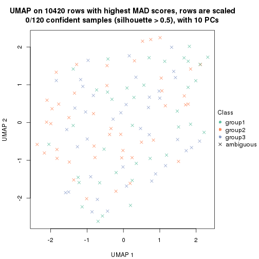
dimension_reduction(res, k = 4, method = "UMAP")
dimension_reduction(res, k = 5, method = "UMAP")
dimension_reduction(res, k = 6, method = "UMAP")
Following heatmap shows how subgroups are split when increasing k:
collect_classes(res)
If matrix rows can be associated to genes, consider to use GO_Enrichment(res,
...) to perform function enrichment for the signature genes.
The object with results only for a single top-value method and a single partition method can be extracted as:
res = res_list["MAD", "skmeans"]
# you can also extract it by
# res = res_list["MAD:skmeans"]
A summary of res and all the functions that can be applied to it:
res
#> A 'ConsensusPartition' object with k = 2, 3, 4, 5, 6.
#> On a matrix with 10420 rows and 120 columns.
#> Top rows (1000, 2000, 3000, 4000, 5000) are extracted by 'MAD' method.
#> Subgroups are detected by 'skmeans' method.
#> Performed in total 1250 partitions by row resampling.
#> Best k for subgroups seems to be 2.
#>
#> Following methods can be applied to this 'ConsensusPartition' object:
#> [1] "cola_report" "collect_classes" "collect_plots"
#> [4] "collect_stats" "colnames" "compare_signatures"
#> [7] "consensus_heatmap" "dimension_reduction" "functional_enrichment"
#> [10] "get_anno_col" "get_anno" "get_classes"
#> [13] "get_consensus" "get_matrix" "get_membership"
#> [16] "get_param" "get_signatures" "get_stats"
#> [19] "is_best_k" "is_stable_k" "membership_heatmap"
#> [22] "ncol" "nrow" "plot_ecdf"
#> [25] "rownames" "select_partition_number" "show"
#> [28] "suggest_best_k" "test_to_known_factors"
collect_plots() function collects all the plots made from res for all k (number of partitions)
into one single page to provide an easy and fast comparison between different k.
collect_plots(res)
The plots are:
k and the heatmap of
predicted classes for each k.k.k.k.All the plots in panels can be made by individual functions and they are plotted later in this section.
select_partition_number() produces several plots showing different
statistics for choosing “optimized” k. There are following statistics:
k;k, the area increased is defined as \(A_k - A_{k-1}\).The detailed explanations of these statistics can be found in the cola vignette.
Generally speaking, lower PAC score, higher mean silhouette score or higher
concordance corresponds to better partition. Rand index and Jaccard index
measure how similar the current partition is compared to partition with k-1.
If they are too similar, we won't accept k is better than k-1.
select_partition_number(res)
The numeric values for all these statistics can be obtained by get_stats().
get_stats(res)
#> k 1-PAC mean_silhouette concordance area_increased Rand Jaccard
#> 2 2 0.000000 0.0339 0.517 0.5032 0.496 0.496
#> 3 3 0.000000 0.0226 0.357 0.3332 0.555 0.299
#> 4 4 0.000000 0.0140 0.271 0.1247 0.588 0.164
#> 5 5 0.000776 0.0128 0.232 0.0666 0.665 0.137
#> 6 6 0.018631 0.0125 0.199 0.0418 0.732 0.143
suggest_best_k() suggests the best \(k\) based on these statistics. The rules are as follows:
NA.suggest_best_k(res)
#> [1] 2
Following shows the table of the partitions (You need to click the show/hide
code output link to see it). The membership matrix (columns with name p*)
is inferred by
clue::cl_consensus()
function with the SE method. Basically the value in the membership matrix
represents the probability to belong to a certain group. The finall class
label for an item is determined with the group with highest probability it
belongs to.
In get_classes() function, the entropy is calculated from the membership
matrix and the silhouette score is calculated from the consensus matrix.
cbind(get_classes(res, k = 2), get_membership(res, k = 2))
#> class entropy silhouette p1 p2
#> SRR572528 1 0.995 -0.001687 0.540 0.460
#> SRR572529 2 0.998 0.008936 0.476 0.524
#> SRR572530 2 0.992 0.047246 0.448 0.552
#> SRR572531 2 0.985 0.043650 0.428 0.572
#> SRR572532 2 0.997 0.041521 0.468 0.532
#> SRR572533 1 0.973 0.072029 0.596 0.404
#> SRR572534 1 0.994 0.023027 0.544 0.456
#> SRR572535 2 0.983 0.026799 0.424 0.576
#> SRR572536 1 0.971 0.055383 0.600 0.400
#> SRR572537 2 0.988 0.035820 0.436 0.564
#> SRR572538 1 0.987 0.034143 0.568 0.432
#> SRR572539 2 0.991 0.036087 0.444 0.556
#> SRR572540 1 0.998 -0.001338 0.528 0.472
#> SRR572541 2 0.975 0.064772 0.408 0.592
#> SRR572542 1 0.994 0.017745 0.544 0.456
#> SRR572543 1 0.991 0.035399 0.556 0.444
#> SRR572544 1 0.973 0.026651 0.596 0.404
#> SRR572545 1 0.990 0.003634 0.560 0.440
#> SRR572546 2 0.999 -0.032706 0.484 0.516
#> SRR572547 2 0.969 0.078042 0.396 0.604
#> SRR572548 2 1.000 0.013522 0.492 0.508
#> SRR572549 1 0.992 0.002119 0.552 0.448
#> SRR572550 2 0.978 0.059233 0.412 0.588
#> SRR572551 2 0.987 0.080757 0.432 0.568
#> SRR572552 2 0.999 0.027116 0.480 0.520
#> SRR572553 2 0.955 0.048824 0.376 0.624
#> SRR572554 2 0.993 0.036033 0.452 0.548
#> SRR572555 2 0.978 0.054371 0.412 0.588
#> SRR572556 1 0.999 0.039769 0.516 0.484
#> SRR572557 2 0.998 0.022412 0.472 0.528
#> SRR572558 2 0.975 0.079431 0.408 0.592
#> SRR572559 2 0.999 0.012453 0.484 0.516
#> SRR572560 1 0.995 0.037825 0.540 0.460
#> SRR572561 1 0.999 0.008927 0.520 0.480
#> SRR572562 1 0.998 0.035112 0.528 0.472
#> SRR572563 1 1.000 0.011124 0.512 0.488
#> SRR572564 1 0.985 0.040548 0.572 0.428
#> SRR572565 1 0.988 0.036460 0.564 0.436
#> SRR572566 2 1.000 0.011204 0.496 0.504
#> SRR572567 2 0.998 0.020547 0.472 0.528
#> SRR572568 1 0.998 0.024457 0.524 0.476
#> SRR572569 1 0.993 0.007189 0.548 0.452
#> SRR572570 2 0.998 0.016786 0.472 0.528
#> SRR572571 1 0.999 0.024034 0.520 0.480
#> SRR572572 1 0.997 0.016085 0.532 0.468
#> SRR572573 2 0.973 0.006117 0.404 0.596
#> SRR572574 1 0.978 0.057942 0.588 0.412
#> SRR572575 1 0.991 0.031059 0.556 0.444
#> SRR572576 1 0.992 -0.005400 0.552 0.448
#> SRR572577 2 0.998 0.003266 0.476 0.524
#> SRR572578 2 0.963 0.050272 0.388 0.612
#> SRR572579 2 1.000 -0.008877 0.496 0.504
#> SRR572580 1 1.000 0.022485 0.508 0.492
#> SRR572581 1 0.994 0.047300 0.544 0.456
#> SRR572582 2 0.932 0.097657 0.348 0.652
#> SRR572583 1 1.000 0.023210 0.512 0.488
#> SRR572584 1 0.995 0.051372 0.540 0.460
#> SRR572585 1 0.996 0.030943 0.536 0.464
#> SRR572586 2 0.985 0.048802 0.428 0.572
#> SRR572587 1 0.975 0.064998 0.592 0.408
#> SRR572588 2 0.978 0.031113 0.412 0.588
#> SRR572589 1 0.985 0.040572 0.572 0.428
#> SRR572590 1 0.993 0.014636 0.548 0.452
#> SRR572591 2 0.936 0.071814 0.352 0.648
#> SRR572592 2 0.971 0.080291 0.400 0.600
#> SRR572593 1 0.990 0.017792 0.560 0.440
#> SRR572594 2 1.000 -0.006713 0.492 0.508
#> SRR572595 2 0.952 0.042238 0.372 0.628
#> SRR572596 1 0.985 0.042872 0.572 0.428
#> SRR572597 1 0.975 0.030889 0.592 0.408
#> SRR572598 1 0.932 0.088437 0.652 0.348
#> SRR572599 2 1.000 0.014088 0.496 0.504
#> SRR572600 1 0.994 0.033767 0.544 0.456
#> SRR572601 1 0.971 0.076083 0.600 0.400
#> SRR572602 1 0.996 0.023662 0.536 0.464
#> SRR572603 1 0.993 0.020974 0.548 0.452
#> SRR572604 1 0.985 0.056995 0.572 0.428
#> SRR572605 2 0.988 0.054636 0.436 0.564
#> SRR572606 1 0.980 0.050745 0.584 0.416
#> SRR572607 2 1.000 -0.014278 0.488 0.512
#> SRR572608 2 1.000 0.007284 0.496 0.504
#> SRR572609 2 0.952 0.078622 0.372 0.628
#> SRR572610 1 0.992 0.000609 0.552 0.448
#> SRR572611 2 0.975 0.039782 0.408 0.592
#> SRR572612 2 0.969 0.073842 0.396 0.604
#> SRR572613 2 0.999 0.006723 0.484 0.516
#> SRR572614 2 0.925 0.083795 0.340 0.660
#> SRR572615 2 0.993 0.012849 0.452 0.548
#> SRR572616 2 0.943 0.054837 0.360 0.640
#> SRR572617 1 0.969 0.050618 0.604 0.396
#> SRR572618 1 1.000 -0.015077 0.500 0.500
#> SRR572619 2 0.969 0.044045 0.396 0.604
#> SRR572620 1 0.990 0.014803 0.560 0.440
#> SRR572621 1 0.963 0.056995 0.612 0.388
#> SRR572622 1 0.985 0.054576 0.572 0.428
#> SRR572623 2 0.995 0.036956 0.460 0.540
#> SRR572624 1 0.993 0.016880 0.548 0.452
#> SRR572625 2 1.000 -0.019991 0.488 0.512
#> SRR572626 2 0.996 0.048266 0.464 0.536
#> SRR572627 2 0.936 0.061521 0.352 0.648
#> SRR572628 2 0.990 0.017364 0.440 0.560
#> SRR572629 1 0.983 0.024360 0.576 0.424
#> SRR572630 2 0.952 0.062658 0.372 0.628
#> SRR572631 1 0.969 0.061746 0.604 0.396
#> SRR572632 1 1.000 0.008293 0.504 0.496
#> SRR572633 1 1.000 -0.013365 0.500 0.500
#> SRR572634 1 0.978 0.064763 0.588 0.412
#> SRR572635 2 0.999 -0.014625 0.480 0.520
#> SRR572636 2 1.000 0.025470 0.496 0.504
#> SRR572637 1 0.971 0.049525 0.600 0.400
#> SRR572638 1 0.981 0.010537 0.580 0.420
#> SRR572639 2 0.995 0.024848 0.460 0.540
#> SRR572640 2 0.955 0.058786 0.376 0.624
#> SRR572641 2 0.952 0.074583 0.372 0.628
#> SRR572642 2 1.000 -0.011095 0.492 0.508
#> SRR572643 1 0.978 0.018707 0.588 0.412
#> SRR572644 2 0.991 0.039288 0.444 0.556
#> SRR572645 1 0.949 0.090164 0.632 0.368
#> SRR572646 1 0.985 0.053526 0.572 0.428
#> SRR572647 1 0.991 0.038538 0.556 0.444
cbind(get_classes(res, k = 3), get_membership(res, k = 3))
#> class entropy silhouette p1 p2 p3
#> SRR572528 2 0.992 0.016685 0.280 0.388 0.332
#> SRR572529 1 0.998 -0.017487 0.360 0.332 0.308
#> SRR572530 3 0.999 0.040769 0.332 0.316 0.352
#> SRR572531 1 0.978 0.045471 0.432 0.256 0.312
#> SRR572532 1 0.998 0.003469 0.368 0.312 0.320
#> SRR572533 3 0.972 0.017567 0.224 0.364 0.412
#> SRR572534 3 0.933 0.034018 0.228 0.252 0.520
#> SRR572535 2 0.998 -0.013813 0.336 0.356 0.308
#> SRR572536 1 0.995 0.003823 0.376 0.336 0.288
#> SRR572537 1 0.980 0.038160 0.432 0.304 0.264
#> SRR572538 3 0.996 0.027199 0.344 0.292 0.364
#> SRR572539 3 0.975 0.003369 0.252 0.308 0.440
#> SRR572540 3 0.986 0.036536 0.308 0.276 0.416
#> SRR572541 1 0.908 0.069650 0.508 0.152 0.340
#> SRR572542 3 0.989 0.029389 0.352 0.264 0.384
#> SRR572543 3 0.992 0.019633 0.320 0.288 0.392
#> SRR572544 3 0.994 0.013207 0.332 0.288 0.380
#> SRR572545 2 0.993 -0.009388 0.280 0.376 0.344
#> SRR572546 2 0.971 0.014115 0.224 0.424 0.352
#> SRR572547 1 0.989 0.056052 0.408 0.296 0.296
#> SRR572548 3 0.867 0.083849 0.184 0.220 0.596
#> SRR572549 3 0.984 0.036963 0.372 0.248 0.380
#> SRR572550 3 0.989 0.010173 0.328 0.272 0.400
#> SRR572551 1 0.961 0.049681 0.464 0.228 0.308
#> SRR572552 1 0.998 0.011299 0.356 0.336 0.308
#> SRR572553 1 0.979 0.048977 0.436 0.292 0.272
#> SRR572554 3 0.955 0.029529 0.392 0.192 0.416
#> SRR572555 2 0.974 -0.008542 0.384 0.392 0.224
#> SRR572556 2 0.978 0.006407 0.264 0.436 0.300
#> SRR572557 2 0.969 -0.023581 0.372 0.412 0.216
#> SRR572558 3 0.973 0.024022 0.332 0.236 0.432
#> SRR572559 3 0.999 0.028216 0.332 0.312 0.356
#> SRR572560 2 0.982 0.050112 0.276 0.428 0.296
#> SRR572561 3 0.996 -0.005630 0.292 0.336 0.372
#> SRR572562 2 0.936 0.038872 0.192 0.496 0.312
#> SRR572563 1 0.971 0.046785 0.440 0.324 0.236
#> SRR572564 2 0.985 0.008778 0.316 0.416 0.268
#> SRR572565 3 0.978 -0.014923 0.244 0.332 0.424
#> SRR572566 3 0.996 0.039098 0.316 0.308 0.376
#> SRR572567 3 0.988 0.015962 0.316 0.276 0.408
#> SRR572568 2 0.933 0.034349 0.268 0.516 0.216
#> SRR572569 3 0.976 0.022967 0.268 0.288 0.444
#> SRR572570 3 0.994 0.007802 0.360 0.280 0.360
#> SRR572571 3 0.981 0.035306 0.260 0.316 0.424
#> SRR572572 2 0.993 0.026800 0.312 0.392 0.296
#> SRR572573 2 0.980 0.020214 0.248 0.416 0.336
#> SRR572574 1 0.999 -0.012133 0.356 0.316 0.328
#> SRR572575 3 0.971 0.029260 0.368 0.220 0.412
#> SRR572576 3 0.979 0.046284 0.308 0.260 0.432
#> SRR572577 1 0.943 0.015719 0.428 0.176 0.396
#> SRR572578 1 0.968 -0.002786 0.416 0.368 0.216
#> SRR572579 1 0.990 0.006447 0.376 0.264 0.360
#> SRR572580 2 0.983 0.012209 0.272 0.424 0.304
#> SRR572581 2 0.956 0.052261 0.228 0.476 0.296
#> SRR572582 1 0.971 0.062557 0.452 0.296 0.252
#> SRR572583 2 0.993 0.047455 0.324 0.388 0.288
#> SRR572584 2 0.951 0.060540 0.216 0.480 0.304
#> SRR572585 2 0.996 0.004152 0.292 0.364 0.344
#> SRR572586 1 0.994 0.031252 0.384 0.320 0.296
#> SRR572587 1 0.973 -0.005525 0.404 0.372 0.224
#> SRR572588 1 0.996 -0.008834 0.376 0.300 0.324
#> SRR572589 2 0.952 0.013981 0.188 0.416 0.396
#> SRR572590 1 0.990 -0.000751 0.372 0.264 0.364
#> SRR572591 3 0.993 0.022533 0.280 0.344 0.376
#> SRR572592 1 0.947 0.046367 0.492 0.288 0.220
#> SRR572593 3 0.977 0.058416 0.268 0.292 0.440
#> SRR572594 2 0.970 0.020748 0.264 0.456 0.280
#> SRR572595 2 0.973 0.003970 0.372 0.404 0.224
#> SRR572596 2 0.979 0.029726 0.296 0.436 0.268
#> SRR572597 3 0.924 0.075643 0.244 0.224 0.532
#> SRR572598 2 0.986 0.001548 0.256 0.392 0.352
#> SRR572599 3 0.993 0.000056 0.280 0.344 0.376
#> SRR572600 2 0.999 0.003648 0.340 0.352 0.308
#> SRR572601 3 0.947 -0.038381 0.188 0.356 0.456
#> SRR572602 1 0.992 0.005387 0.392 0.284 0.324
#> SRR572603 3 0.976 0.042483 0.300 0.260 0.440
#> SRR572604 2 0.926 0.048786 0.292 0.516 0.192
#> SRR572605 1 0.982 0.026818 0.400 0.356 0.244
#> SRR572606 3 0.972 -0.009555 0.220 0.380 0.400
#> SRR572607 2 0.997 0.001714 0.348 0.356 0.296
#> SRR572608 2 0.999 -0.006796 0.320 0.356 0.324
#> SRR572609 3 0.998 0.031714 0.304 0.336 0.360
#> SRR572610 3 0.987 0.048879 0.268 0.324 0.408
#> SRR572611 3 0.993 0.001097 0.288 0.324 0.388
#> SRR572612 1 0.927 0.057404 0.520 0.200 0.280
#> SRR572613 1 0.959 -0.002088 0.424 0.376 0.200
#> SRR572614 1 0.988 0.048892 0.404 0.272 0.324
#> SRR572615 2 0.979 0.007130 0.316 0.428 0.256
#> SRR572616 1 0.980 0.036541 0.432 0.272 0.296
#> SRR572617 2 0.994 0.007414 0.296 0.384 0.320
#> SRR572618 1 0.996 0.028905 0.372 0.336 0.292
#> SRR572619 1 0.862 0.109703 0.600 0.224 0.176
#> SRR572620 3 0.993 0.029456 0.296 0.312 0.392
#> SRR572621 3 0.972 0.029024 0.240 0.320 0.440
#> SRR572622 2 0.932 0.071090 0.224 0.520 0.256
#> SRR572623 3 0.973 0.027993 0.316 0.244 0.440
#> SRR572624 3 0.991 0.011787 0.324 0.280 0.396
#> SRR572625 1 0.996 -0.015536 0.372 0.328 0.300
#> SRR572626 1 0.952 0.052776 0.484 0.224 0.292
#> SRR572627 1 0.996 -0.012718 0.364 0.348 0.288
#> SRR572628 1 0.981 0.014175 0.420 0.328 0.252
#> SRR572629 3 0.978 0.051045 0.284 0.276 0.440
#> SRR572630 1 0.993 0.007771 0.384 0.284 0.332
#> SRR572631 2 0.977 0.028186 0.232 0.396 0.372
#> SRR572632 2 0.938 0.076368 0.236 0.512 0.252
#> SRR572633 1 0.985 0.016630 0.400 0.344 0.256
#> SRR572634 3 0.998 -0.006133 0.304 0.336 0.360
#> SRR572635 2 0.990 -0.007006 0.268 0.380 0.352
#> SRR572636 1 0.988 0.028124 0.412 0.292 0.296
#> SRR572637 3 0.999 0.003018 0.324 0.324 0.352
#> SRR572638 2 0.999 0.006771 0.328 0.356 0.316
#> SRR572639 1 0.963 -0.001293 0.428 0.364 0.208
#> SRR572640 1 0.947 0.050918 0.484 0.308 0.208
#> SRR572641 1 0.992 0.032135 0.396 0.316 0.288
#> SRR572642 2 0.999 0.020792 0.316 0.356 0.328
#> SRR572643 2 0.979 0.004418 0.292 0.436 0.272
#> SRR572644 2 0.985 -0.001434 0.316 0.416 0.268
#> SRR572645 3 0.951 0.054341 0.252 0.256 0.492
#> SRR572646 3 0.992 0.024338 0.292 0.312 0.396
#> SRR572647 2 0.960 0.004184 0.388 0.412 0.200
cbind(get_classes(res, k = 4), get_membership(res, k = 4))
#> class entropy silhouette p1 p2 p3 p4
#> SRR572528 2 0.962 -0.000621 0.164 0.332 0.176 0.328
#> SRR572529 3 0.956 0.025582 0.176 0.188 0.404 0.232
#> SRR572530 1 0.990 -0.002475 0.300 0.268 0.244 0.188
#> SRR572531 2 0.946 0.017736 0.168 0.424 0.208 0.200
#> SRR572532 2 0.977 0.001071 0.268 0.332 0.240 0.160
#> SRR572533 1 0.957 0.033437 0.396 0.172 0.184 0.248
#> SRR572534 4 0.973 0.003668 0.292 0.188 0.180 0.340
#> SRR572535 2 0.979 0.033168 0.152 0.300 0.272 0.276
#> SRR572536 1 0.913 0.038360 0.464 0.216 0.124 0.196
#> SRR572537 4 0.998 -0.015334 0.256 0.252 0.220 0.272
#> SRR572538 3 0.984 0.005570 0.216 0.228 0.344 0.212
#> SRR572539 2 0.958 0.005949 0.224 0.328 0.128 0.320
#> SRR572540 2 0.981 0.046023 0.188 0.348 0.236 0.228
#> SRR572541 3 0.996 0.016730 0.260 0.256 0.276 0.208
#> SRR572542 1 0.992 0.008531 0.304 0.204 0.256 0.236
#> SRR572543 2 0.980 0.021348 0.232 0.336 0.172 0.260
#> SRR572544 2 0.915 0.049989 0.224 0.448 0.108 0.220
#> SRR572545 1 0.993 0.005371 0.284 0.252 0.268 0.196
#> SRR572546 2 0.980 0.016439 0.160 0.316 0.260 0.264
#> SRR572547 2 0.972 0.006244 0.188 0.332 0.304 0.176
#> SRR572548 2 0.970 0.003743 0.308 0.308 0.244 0.140
#> SRR572549 4 0.995 -0.003695 0.224 0.224 0.252 0.300
#> SRR572550 3 0.972 0.008723 0.220 0.260 0.356 0.164
#> SRR572551 2 0.968 0.016115 0.268 0.356 0.224 0.152
#> SRR572552 3 0.974 0.026463 0.216 0.224 0.368 0.192
#> SRR572553 1 0.996 -0.019964 0.276 0.256 0.208 0.260
#> SRR572554 2 0.962 0.047667 0.196 0.392 0.180 0.232
#> SRR572555 3 0.910 0.024049 0.148 0.132 0.452 0.268
#> SRR572556 1 0.996 0.007813 0.280 0.264 0.208 0.248
#> SRR572557 2 0.965 0.051190 0.180 0.388 0.212 0.220
#> SRR572558 3 0.995 0.012582 0.252 0.204 0.284 0.260
#> SRR572559 1 0.970 0.004778 0.328 0.260 0.272 0.140
#> SRR572560 2 0.985 -0.005146 0.220 0.340 0.228 0.212
#> SRR572561 3 0.948 0.025702 0.144 0.236 0.408 0.212
#> SRR572562 4 0.996 -0.000882 0.244 0.224 0.236 0.296
#> SRR572563 1 0.989 0.006304 0.308 0.188 0.264 0.240
#> SRR572564 4 0.988 0.041919 0.252 0.180 0.264 0.304
#> SRR572565 3 0.993 0.000951 0.256 0.232 0.304 0.208
#> SRR572566 2 0.992 -0.019068 0.208 0.288 0.220 0.284
#> SRR572567 1 0.988 0.030650 0.312 0.248 0.256 0.184
#> SRR572568 1 0.945 0.015652 0.400 0.128 0.224 0.248
#> SRR572569 2 0.971 0.023240 0.172 0.336 0.188 0.304
#> SRR572570 1 0.975 0.014719 0.364 0.196 0.200 0.240
#> SRR572571 1 0.983 0.028362 0.344 0.200 0.224 0.232
#> SRR572572 3 0.961 -0.005737 0.168 0.172 0.352 0.308
#> SRR572573 2 0.969 0.021754 0.216 0.360 0.264 0.160
#> SRR572574 4 0.995 0.001175 0.264 0.212 0.236 0.288
#> SRR572575 4 0.986 0.017248 0.196 0.292 0.208 0.304
#> SRR572576 4 0.967 0.004819 0.232 0.192 0.192 0.384
#> SRR572577 4 0.979 -0.021254 0.164 0.300 0.228 0.308
#> SRR572578 3 0.866 0.050974 0.240 0.140 0.512 0.108
#> SRR572579 3 0.971 0.007639 0.224 0.288 0.336 0.152
#> SRR572580 2 0.981 0.021238 0.176 0.336 0.228 0.260
#> SRR572581 3 0.972 0.016488 0.140 0.288 0.308 0.264
#> SRR572582 3 0.990 0.021518 0.268 0.212 0.312 0.208
#> SRR572583 3 0.994 -0.027550 0.244 0.208 0.296 0.252
#> SRR572584 1 0.938 0.030372 0.404 0.116 0.228 0.252
#> SRR572585 1 0.979 0.015239 0.336 0.188 0.200 0.276
#> SRR572586 4 0.985 -0.014035 0.168 0.272 0.260 0.300
#> SRR572587 4 0.987 -0.012783 0.276 0.172 0.264 0.288
#> SRR572588 1 0.967 0.035577 0.380 0.196 0.240 0.184
#> SRR572589 4 0.955 0.031522 0.176 0.164 0.272 0.388
#> SRR572590 3 0.992 -0.003277 0.196 0.248 0.304 0.252
#> SRR572591 1 0.996 -0.002818 0.292 0.244 0.244 0.220
#> SRR572592 3 0.975 0.047094 0.196 0.228 0.368 0.208
#> SRR572593 2 0.974 0.022598 0.188 0.360 0.256 0.196
#> SRR572594 4 0.999 -0.017150 0.252 0.236 0.248 0.264
#> SRR572595 3 0.957 0.022545 0.184 0.240 0.400 0.176
#> SRR572596 4 0.989 0.001657 0.224 0.280 0.192 0.304
#> SRR572597 1 0.979 0.031087 0.352 0.216 0.244 0.188
#> SRR572598 4 0.975 0.021409 0.244 0.184 0.212 0.360
#> SRR572599 2 0.998 -0.020775 0.264 0.268 0.216 0.252
#> SRR572600 1 0.989 0.004449 0.308 0.188 0.236 0.268
#> SRR572601 4 0.898 0.059924 0.216 0.100 0.212 0.472
#> SRR572602 1 0.939 0.029764 0.428 0.168 0.164 0.240
#> SRR572603 1 0.957 -0.003064 0.332 0.244 0.120 0.304
#> SRR572604 4 0.988 -0.004305 0.220 0.292 0.192 0.296
#> SRR572605 3 0.991 0.003020 0.268 0.248 0.296 0.188
#> SRR572606 4 0.759 0.070234 0.080 0.168 0.124 0.628
#> SRR572607 2 0.979 -0.024578 0.264 0.324 0.252 0.160
#> SRR572608 2 0.974 0.021283 0.192 0.340 0.180 0.288
#> SRR572609 3 0.981 0.005068 0.184 0.288 0.324 0.204
#> SRR572610 2 0.995 0.002718 0.224 0.288 0.216 0.272
#> SRR572611 2 0.978 -0.017278 0.156 0.312 0.292 0.240
#> SRR572612 3 0.976 0.018483 0.212 0.252 0.356 0.180
#> SRR572613 2 0.977 -0.014703 0.272 0.292 0.288 0.148
#> SRR572614 2 0.964 0.019301 0.128 0.324 0.288 0.260
#> SRR572615 3 0.989 0.010312 0.264 0.208 0.316 0.212
#> SRR572616 2 0.955 0.045724 0.152 0.388 0.268 0.192
#> SRR572617 4 0.977 0.045053 0.220 0.204 0.212 0.364
#> SRR572618 1 0.916 0.037159 0.460 0.204 0.212 0.124
#> SRR572619 2 0.985 0.004532 0.248 0.336 0.200 0.216
#> SRR572620 1 0.921 0.044979 0.452 0.132 0.184 0.232
#> SRR572621 4 0.960 0.016033 0.272 0.152 0.200 0.376
#> SRR572622 4 0.957 0.048395 0.172 0.220 0.204 0.404
#> SRR572623 1 0.993 -0.007697 0.312 0.232 0.228 0.228
#> SRR572624 2 0.997 0.030039 0.232 0.288 0.252 0.228
#> SRR572625 4 0.996 0.012588 0.232 0.232 0.240 0.296
#> SRR572626 2 0.841 0.040043 0.108 0.548 0.212 0.132
#> SRR572627 4 0.990 -0.018084 0.260 0.240 0.192 0.308
#> SRR572628 4 0.987 0.001189 0.240 0.180 0.272 0.308
#> SRR572629 1 0.917 0.052739 0.472 0.164 0.180 0.184
#> SRR572630 1 0.981 0.017404 0.348 0.196 0.244 0.212
#> SRR572631 4 0.939 0.014036 0.236 0.120 0.236 0.408
#> SRR572632 4 0.980 0.011605 0.288 0.164 0.236 0.312
#> SRR572633 3 0.977 -0.011425 0.156 0.236 0.308 0.300
#> SRR572634 4 0.987 0.025429 0.264 0.220 0.196 0.320
#> SRR572635 1 0.963 0.004497 0.356 0.140 0.280 0.224
#> SRR572636 1 0.943 0.041397 0.428 0.224 0.172 0.176
#> SRR572637 2 0.952 0.032227 0.152 0.380 0.176 0.292
#> SRR572638 3 0.963 -0.011891 0.272 0.160 0.372 0.196
#> SRR572639 1 0.993 -0.012816 0.284 0.284 0.220 0.212
#> SRR572640 3 0.947 0.019867 0.240 0.268 0.376 0.116
#> SRR572641 3 0.942 -0.001004 0.160 0.292 0.396 0.152
#> SRR572642 3 0.962 0.007907 0.228 0.132 0.332 0.308
#> SRR572643 2 0.944 0.035084 0.208 0.428 0.196 0.168
#> SRR572644 3 0.964 0.012559 0.180 0.300 0.352 0.168
#> SRR572645 4 0.981 -0.004137 0.216 0.288 0.176 0.320
#> SRR572646 1 0.987 0.004983 0.296 0.180 0.288 0.236
#> SRR572647 3 0.962 0.005491 0.244 0.128 0.332 0.296
cbind(get_classes(res, k = 5), get_membership(res, k = 5))
#> class entropy silhouette p1 p2 p3 p4 p5
#> SRR572528 2 0.945 -0.018386 0.084 0.276 0.124 0.248 0.268
#> SRR572529 4 0.988 0.012898 0.204 0.180 0.216 0.260 0.140
#> SRR572530 2 0.990 0.006305 0.184 0.252 0.172 0.160 0.232
#> SRR572531 5 0.984 0.000153 0.184 0.232 0.180 0.136 0.268
#> SRR572532 5 0.962 0.009511 0.212 0.084 0.184 0.244 0.276
#> SRR572533 4 0.933 -0.012774 0.120 0.124 0.136 0.364 0.256
#> SRR572534 5 0.960 0.013161 0.252 0.208 0.104 0.140 0.296
#> SRR572535 2 0.910 0.026982 0.192 0.384 0.072 0.236 0.116
#> SRR572536 4 0.968 -0.009879 0.160 0.116 0.184 0.300 0.240
#> SRR572537 3 0.989 -0.011346 0.160 0.216 0.268 0.176 0.180
#> SRR572538 1 0.980 -0.011310 0.256 0.180 0.208 0.116 0.240
#> SRR572539 2 0.971 -0.000396 0.264 0.268 0.164 0.112 0.192
#> SRR572540 2 0.979 0.011332 0.172 0.292 0.156 0.152 0.228
#> SRR572541 1 0.996 0.018121 0.244 0.184 0.188 0.176 0.208
#> SRR572542 2 0.950 0.029868 0.200 0.316 0.232 0.172 0.080
#> SRR572543 3 0.971 -0.006717 0.124 0.224 0.292 0.144 0.216
#> SRR572544 5 0.963 -0.001964 0.092 0.236 0.184 0.196 0.292
#> SRR572545 1 0.968 0.001501 0.328 0.196 0.160 0.180 0.136
#> SRR572546 3 0.991 -0.005634 0.152 0.216 0.248 0.208 0.176
#> SRR572547 1 0.935 0.049128 0.372 0.180 0.220 0.120 0.108
#> SRR572548 5 0.964 0.031856 0.152 0.172 0.156 0.176 0.344
#> SRR572549 3 0.923 0.019248 0.112 0.184 0.408 0.168 0.128
#> SRR572550 2 0.977 -0.007400 0.160 0.276 0.200 0.124 0.240
#> SRR572551 2 0.979 -0.019796 0.240 0.244 0.224 0.180 0.112
#> SRR572552 2 0.961 0.024492 0.188 0.316 0.128 0.240 0.128
#> SRR572553 1 0.964 0.040072 0.304 0.188 0.176 0.100 0.232
#> SRR572554 2 0.951 0.012389 0.228 0.336 0.176 0.096 0.164
#> SRR572555 1 0.967 0.033696 0.328 0.136 0.172 0.156 0.208
#> SRR572556 3 0.940 0.014713 0.132 0.176 0.320 0.280 0.092
#> SRR572557 2 0.947 0.024304 0.244 0.344 0.132 0.112 0.168
#> SRR572558 1 0.941 0.032322 0.368 0.120 0.204 0.120 0.188
#> SRR572559 5 0.981 0.000229 0.180 0.124 0.212 0.208 0.276
#> SRR572560 3 0.925 0.057509 0.152 0.096 0.400 0.172 0.180
#> SRR572561 5 0.998 0.013004 0.188 0.212 0.180 0.200 0.220
#> SRR572562 3 0.938 0.013335 0.128 0.252 0.332 0.204 0.084
#> SRR572563 5 0.962 0.035025 0.132 0.204 0.124 0.220 0.320
#> SRR572564 5 0.961 0.020398 0.140 0.140 0.152 0.244 0.324
#> SRR572565 3 0.936 0.010315 0.196 0.104 0.368 0.120 0.212
#> SRR572566 2 0.976 -0.004337 0.180 0.272 0.176 0.120 0.252
#> SRR572567 3 0.982 0.020908 0.204 0.116 0.256 0.220 0.204
#> SRR572568 3 0.991 0.003126 0.212 0.160 0.260 0.188 0.180
#> SRR572569 4 0.992 -0.025538 0.212 0.180 0.148 0.232 0.228
#> SRR572570 4 0.967 -0.004282 0.096 0.172 0.232 0.276 0.224
#> SRR572571 3 0.984 0.020006 0.188 0.224 0.276 0.152 0.160
#> SRR572572 4 0.922 0.019092 0.176 0.300 0.080 0.328 0.116
#> SRR572573 3 0.900 0.033052 0.112 0.080 0.412 0.164 0.232
#> SRR572574 3 0.998 0.023369 0.184 0.192 0.224 0.188 0.212
#> SRR572575 2 0.985 0.007851 0.144 0.260 0.208 0.156 0.232
#> SRR572576 5 0.942 0.062085 0.104 0.188 0.176 0.160 0.372
#> SRR572577 1 0.962 0.039517 0.344 0.180 0.160 0.184 0.132
#> SRR572578 4 0.955 0.012906 0.164 0.184 0.140 0.360 0.152
#> SRR572579 5 0.969 0.014493 0.264 0.128 0.172 0.148 0.288
#> SRR572580 2 0.985 0.005395 0.200 0.264 0.196 0.212 0.128
#> SRR572581 4 0.976 0.018822 0.188 0.168 0.172 0.316 0.156
#> SRR572582 1 0.950 0.050752 0.328 0.124 0.132 0.152 0.264
#> SRR572583 5 0.963 0.007691 0.244 0.128 0.184 0.132 0.312
#> SRR572584 3 0.942 -0.005430 0.116 0.088 0.288 0.232 0.276
#> SRR572585 4 0.958 -0.001309 0.128 0.140 0.280 0.300 0.152
#> SRR572586 3 0.979 -0.007601 0.188 0.184 0.288 0.212 0.128
#> SRR572587 3 0.962 0.030144 0.224 0.152 0.300 0.100 0.224
#> SRR572588 3 0.977 0.002299 0.200 0.112 0.272 0.232 0.184
#> SRR572589 4 0.942 0.026072 0.192 0.232 0.100 0.348 0.128
#> SRR572590 2 0.960 0.023122 0.164 0.276 0.260 0.212 0.088
#> SRR572591 1 0.983 -0.013765 0.284 0.216 0.176 0.176 0.148
#> SRR572592 1 0.945 0.068573 0.376 0.176 0.172 0.156 0.120
#> SRR572593 2 0.920 0.034559 0.172 0.412 0.124 0.180 0.112
#> SRR572594 1 0.997 0.003818 0.240 0.196 0.192 0.196 0.176
#> SRR572595 1 0.891 0.033353 0.452 0.092 0.140 0.176 0.140
#> SRR572596 4 0.913 -0.011848 0.296 0.208 0.148 0.304 0.044
#> SRR572597 4 0.965 0.005937 0.092 0.180 0.240 0.280 0.208
#> SRR572598 4 0.906 0.022324 0.048 0.204 0.184 0.384 0.180
#> SRR572599 5 0.972 0.033294 0.144 0.196 0.136 0.220 0.304
#> SRR572600 3 0.881 0.038021 0.240 0.104 0.440 0.092 0.124
#> SRR572601 4 0.974 0.006344 0.156 0.268 0.148 0.276 0.152
#> SRR572602 5 0.829 0.047868 0.144 0.080 0.108 0.140 0.528
#> SRR572603 3 0.985 0.008712 0.148 0.172 0.276 0.188 0.216
#> SRR572604 2 0.980 0.000477 0.208 0.260 0.240 0.168 0.124
#> SRR572605 5 0.974 0.001963 0.208 0.116 0.232 0.164 0.280
#> SRR572606 2 0.784 0.059382 0.152 0.572 0.096 0.076 0.104
#> SRR572607 3 0.967 0.012309 0.124 0.192 0.284 0.136 0.264
#> SRR572608 2 0.977 0.019482 0.252 0.276 0.180 0.148 0.144
#> SRR572609 2 0.983 0.020310 0.200 0.288 0.180 0.188 0.144
#> SRR572610 2 0.967 0.001992 0.208 0.280 0.100 0.164 0.248
#> SRR572611 1 0.965 0.027171 0.340 0.148 0.164 0.188 0.160
#> SRR572612 1 0.980 0.020858 0.276 0.228 0.124 0.180 0.192
#> SRR572613 4 0.984 -0.027541 0.172 0.148 0.172 0.256 0.252
#> SRR572614 1 0.917 0.003416 0.344 0.240 0.068 0.108 0.240
#> SRR572615 3 0.983 0.019506 0.220 0.128 0.244 0.240 0.168
#> SRR572616 2 0.986 0.010506 0.232 0.248 0.220 0.144 0.156
#> SRR572617 4 0.974 -0.005697 0.212 0.156 0.248 0.268 0.116
#> SRR572618 4 0.962 -0.002328 0.216 0.172 0.108 0.324 0.180
#> SRR572619 1 0.979 0.024347 0.248 0.112 0.208 0.184 0.248
#> SRR572620 5 0.897 0.034562 0.128 0.092 0.152 0.188 0.440
#> SRR572621 2 0.969 0.027372 0.148 0.332 0.180 0.180 0.160
#> SRR572622 4 0.989 -0.004209 0.148 0.192 0.240 0.244 0.176
#> SRR572623 2 0.957 0.009313 0.132 0.304 0.164 0.276 0.124
#> SRR572624 4 0.995 0.002992 0.180 0.204 0.164 0.240 0.212
#> SRR572625 2 0.980 -0.002148 0.188 0.288 0.164 0.220 0.140
#> SRR572626 2 0.972 0.003627 0.228 0.284 0.224 0.140 0.124
#> SRR572627 3 0.990 -0.000140 0.152 0.240 0.244 0.188 0.176
#> SRR572628 5 0.967 0.034995 0.224 0.144 0.128 0.188 0.316
#> SRR572629 5 0.982 -0.002084 0.156 0.180 0.252 0.148 0.264
#> SRR572630 4 0.987 -0.001590 0.192 0.132 0.220 0.252 0.204
#> SRR572631 5 0.973 0.015305 0.120 0.252 0.188 0.160 0.280
#> SRR572632 1 0.969 -0.043670 0.252 0.104 0.244 0.248 0.152
#> SRR572633 2 0.992 -0.000364 0.192 0.244 0.220 0.192 0.152
#> SRR572634 5 0.953 0.028284 0.120 0.140 0.160 0.244 0.336
#> SRR572635 4 0.840 0.049035 0.088 0.112 0.120 0.516 0.164
#> SRR572636 1 0.944 0.020802 0.312 0.096 0.264 0.116 0.212
#> SRR572637 2 0.941 0.049522 0.284 0.328 0.116 0.124 0.148
#> SRR572638 3 0.979 -0.003503 0.144 0.160 0.292 0.184 0.220
#> SRR572639 3 0.958 0.018821 0.196 0.192 0.332 0.100 0.180
#> SRR572640 1 0.957 0.064154 0.352 0.124 0.184 0.176 0.164
#> SRR572641 4 0.967 -0.021465 0.168 0.272 0.112 0.276 0.172
#> SRR572642 4 0.961 0.000822 0.272 0.116 0.128 0.284 0.200
#> SRR572643 5 0.979 0.015564 0.176 0.140 0.188 0.196 0.300
#> SRR572644 4 0.943 -0.029509 0.284 0.088 0.184 0.308 0.136
#> SRR572645 2 0.940 -0.030458 0.068 0.296 0.192 0.280 0.164
#> SRR572646 4 0.963 0.004249 0.124 0.240 0.220 0.296 0.120
#> SRR572647 5 0.945 0.003514 0.124 0.136 0.132 0.284 0.324
cbind(get_classes(res, k = 6), get_membership(res, k = 6))
#> class entropy silhouette p1 p2 p3 p4 p5 p6
#> SRR572528 4 0.976 0.002700 0.168 0.208 0.124 0.224 0.088 0.188
#> SRR572529 2 0.926 0.046650 0.072 0.348 0.148 0.088 0.168 0.176
#> SRR572530 5 0.960 0.041418 0.172 0.140 0.116 0.104 0.308 0.160
#> SRR572531 4 0.958 -0.002334 0.212 0.112 0.196 0.268 0.132 0.080
#> SRR572532 3 0.950 -0.009903 0.196 0.128 0.256 0.080 0.096 0.244
#> SRR572533 6 0.914 -0.004718 0.220 0.088 0.068 0.116 0.156 0.352
#> SRR572534 6 0.957 0.008232 0.212 0.104 0.064 0.180 0.208 0.232
#> SRR572535 4 0.905 0.032986 0.072 0.164 0.100 0.396 0.124 0.144
#> SRR572536 1 0.926 0.037575 0.312 0.112 0.128 0.060 0.136 0.252
#> SRR572537 3 0.919 0.022602 0.224 0.116 0.348 0.104 0.068 0.140
#> SRR572538 5 0.990 0.018799 0.156 0.136 0.196 0.124 0.212 0.176
#> SRR572539 4 0.997 0.025023 0.160 0.152 0.152 0.204 0.156 0.176
#> SRR572540 4 0.946 0.036362 0.124 0.100 0.080 0.292 0.216 0.188
#> SRR572541 3 0.950 0.021092 0.160 0.244 0.280 0.116 0.088 0.112
#> SRR572542 3 0.982 0.000826 0.084 0.184 0.204 0.156 0.180 0.192
#> SRR572543 6 0.974 -0.010952 0.128 0.184 0.136 0.096 0.228 0.228
#> SRR572544 1 0.966 -0.017085 0.244 0.180 0.084 0.104 0.212 0.176
#> SRR572545 3 0.890 0.040463 0.124 0.072 0.408 0.196 0.104 0.096
#> SRR572546 6 0.979 -0.007767 0.168 0.096 0.140 0.192 0.160 0.244
#> SRR572547 2 0.906 0.001535 0.120 0.280 0.208 0.276 0.056 0.060
#> SRR572548 1 0.963 0.022389 0.256 0.120 0.116 0.160 0.104 0.244
#> SRR572549 3 0.977 0.001516 0.112 0.132 0.232 0.116 0.204 0.204
#> SRR572550 4 0.973 -0.000272 0.188 0.152 0.076 0.228 0.204 0.152
#> SRR572551 3 0.929 0.029440 0.076 0.224 0.324 0.108 0.096 0.172
#> SRR572552 4 0.963 0.027513 0.168 0.176 0.076 0.280 0.136 0.164
#> SRR572553 4 0.972 0.002838 0.200 0.200 0.188 0.212 0.076 0.124
#> SRR572554 5 0.940 -0.016585 0.088 0.068 0.216 0.244 0.256 0.128
#> SRR572555 2 0.912 0.010100 0.064 0.312 0.084 0.172 0.100 0.268
#> SRR572556 5 0.914 0.056813 0.144 0.212 0.152 0.048 0.344 0.100
#> SRR572557 4 0.954 0.028582 0.132 0.216 0.136 0.300 0.092 0.124
#> SRR572558 6 0.967 -0.002565 0.064 0.200 0.164 0.144 0.208 0.220
#> SRR572559 6 0.987 -0.025583 0.192 0.180 0.184 0.116 0.120 0.208
#> SRR572560 5 0.906 0.031175 0.252 0.080 0.128 0.064 0.344 0.132
#> SRR572561 6 0.989 -0.002341 0.160 0.192 0.148 0.156 0.120 0.224
#> SRR572562 5 0.976 0.027488 0.124 0.148 0.176 0.132 0.276 0.144
#> SRR572563 1 0.963 0.021608 0.304 0.136 0.132 0.180 0.140 0.108
#> SRR572564 1 0.991 -0.009342 0.200 0.192 0.112 0.160 0.152 0.184
#> SRR572565 3 0.944 0.023411 0.180 0.124 0.328 0.096 0.172 0.100
#> SRR572566 5 0.979 0.003677 0.164 0.132 0.148 0.176 0.264 0.116
#> SRR572567 1 0.980 0.011381 0.228 0.176 0.160 0.108 0.212 0.116
#> SRR572568 5 0.975 0.029408 0.188 0.196 0.100 0.104 0.232 0.180
#> SRR572569 4 0.930 0.009270 0.240 0.092 0.160 0.312 0.124 0.072
#> SRR572570 5 0.936 0.004085 0.184 0.100 0.132 0.064 0.308 0.212
#> SRR572571 6 0.992 0.006211 0.136 0.148 0.136 0.172 0.200 0.208
#> SRR572572 2 0.893 0.044534 0.100 0.416 0.088 0.176 0.100 0.120
#> SRR572573 1 0.982 0.003492 0.232 0.136 0.208 0.108 0.172 0.144
#> SRR572574 5 0.971 0.021482 0.140 0.120 0.180 0.116 0.284 0.160
#> SRR572575 6 0.945 0.016076 0.084 0.132 0.136 0.156 0.156 0.336
#> SRR572576 6 0.844 0.055047 0.092 0.088 0.124 0.116 0.092 0.488
#> SRR572577 2 0.983 -0.009237 0.104 0.216 0.184 0.212 0.144 0.140
#> SRR572578 2 0.935 0.030646 0.148 0.352 0.128 0.172 0.108 0.092
#> SRR572579 6 0.945 -0.006715 0.156 0.092 0.232 0.080 0.148 0.292
#> SRR572580 3 0.971 0.003567 0.176 0.088 0.260 0.180 0.172 0.124
#> SRR572581 2 0.930 0.057738 0.144 0.372 0.108 0.144 0.120 0.112
#> SRR572582 2 0.900 0.037339 0.112 0.404 0.112 0.096 0.092 0.184
#> SRR572583 6 0.962 0.010475 0.112 0.244 0.144 0.116 0.120 0.264
#> SRR572584 5 0.939 0.023345 0.164 0.112 0.200 0.084 0.328 0.112
#> SRR572585 5 0.925 0.052539 0.224 0.076 0.096 0.140 0.340 0.124
#> SRR572586 6 0.941 -0.001894 0.068 0.088 0.232 0.152 0.176 0.284
#> SRR572587 3 0.956 0.023943 0.144 0.084 0.308 0.176 0.156 0.132
#> SRR572588 1 0.973 -0.006265 0.236 0.104 0.192 0.128 0.120 0.220
#> SRR572589 2 0.980 0.020907 0.176 0.236 0.088 0.160 0.176 0.164
#> SRR572590 2 0.976 0.001082 0.124 0.256 0.108 0.200 0.148 0.164
#> SRR572591 4 0.946 0.022774 0.068 0.112 0.132 0.284 0.172 0.232
#> SRR572592 2 0.939 0.004774 0.072 0.288 0.100 0.136 0.152 0.252
#> SRR572593 5 0.938 -0.032169 0.104 0.136 0.084 0.276 0.280 0.120
#> SRR572594 6 0.928 -0.021263 0.116 0.240 0.092 0.100 0.120 0.332
#> SRR572595 4 0.979 -0.001389 0.160 0.132 0.204 0.252 0.120 0.132
#> SRR572596 4 0.949 0.001351 0.116 0.212 0.144 0.296 0.160 0.072
#> SRR572597 1 0.964 0.032183 0.304 0.116 0.156 0.136 0.120 0.168
#> SRR572598 1 0.931 0.025870 0.360 0.168 0.088 0.128 0.144 0.112
#> SRR572599 6 0.963 0.018028 0.164 0.060 0.136 0.204 0.216 0.220
#> SRR572600 3 0.901 0.014519 0.096 0.112 0.384 0.104 0.220 0.084
#> SRR572601 5 0.973 0.016451 0.156 0.120 0.180 0.128 0.280 0.136
#> SRR572602 1 0.928 0.030184 0.332 0.124 0.200 0.068 0.096 0.180
#> SRR572603 6 0.956 0.008395 0.176 0.152 0.168 0.072 0.136 0.296
#> SRR572604 3 0.982 -0.005936 0.136 0.204 0.248 0.148 0.132 0.132
#> SRR572605 3 0.964 0.023447 0.188 0.132 0.288 0.168 0.092 0.132
#> SRR572606 4 0.947 0.011814 0.104 0.196 0.060 0.276 0.204 0.160
#> SRR572607 5 0.901 0.058635 0.144 0.152 0.104 0.136 0.400 0.064
#> SRR572608 2 0.972 -0.017776 0.116 0.232 0.204 0.204 0.156 0.088
#> SRR572609 4 0.931 0.009493 0.056 0.228 0.108 0.284 0.216 0.108
#> SRR572610 4 0.978 0.018136 0.192 0.136 0.176 0.256 0.124 0.116
#> SRR572611 4 0.945 0.014522 0.116 0.120 0.204 0.324 0.092 0.144
#> SRR572612 2 0.977 0.019938 0.112 0.256 0.160 0.192 0.116 0.164
#> SRR572613 1 0.962 0.017924 0.292 0.188 0.136 0.124 0.092 0.168
#> SRR572614 4 0.774 0.067757 0.088 0.088 0.080 0.552 0.052 0.140
#> SRR572615 5 0.958 0.024724 0.236 0.180 0.092 0.092 0.256 0.144
#> SRR572616 4 0.945 0.041508 0.092 0.084 0.172 0.296 0.132 0.224
#> SRR572617 5 0.975 0.019451 0.124 0.136 0.152 0.192 0.272 0.124
#> SRR572618 3 0.985 -0.003735 0.164 0.164 0.232 0.184 0.104 0.152
#> SRR572619 3 0.984 0.012176 0.184 0.152 0.228 0.152 0.100 0.184
#> SRR572620 1 0.833 0.049692 0.480 0.112 0.116 0.036 0.132 0.124
#> SRR572621 5 0.943 0.020302 0.108 0.120 0.120 0.116 0.332 0.204
#> SRR572622 4 0.978 -0.015610 0.212 0.128 0.184 0.232 0.104 0.140
#> SRR572623 4 0.954 -0.005307 0.156 0.216 0.164 0.264 0.144 0.056
#> SRR572624 1 0.926 0.027237 0.356 0.128 0.084 0.200 0.124 0.108
#> SRR572625 2 0.965 -0.002654 0.124 0.260 0.096 0.148 0.236 0.136
#> SRR572626 4 0.978 0.001156 0.176 0.212 0.148 0.236 0.108 0.120
#> SRR572627 2 0.988 -0.011780 0.104 0.204 0.200 0.168 0.176 0.148
#> SRR572628 6 0.989 0.013656 0.136 0.188 0.172 0.132 0.144 0.228
#> SRR572629 3 0.934 -0.037682 0.232 0.068 0.292 0.080 0.144 0.184
#> SRR572630 1 0.968 -0.006492 0.252 0.156 0.112 0.236 0.136 0.108
#> SRR572631 5 0.862 -0.014171 0.060 0.136 0.056 0.092 0.376 0.280
#> SRR572632 1 0.956 -0.002787 0.272 0.104 0.124 0.148 0.248 0.104
#> SRR572633 3 0.971 0.002624 0.100 0.228 0.240 0.140 0.112 0.180
#> SRR572634 1 0.973 0.025531 0.284 0.120 0.156 0.160 0.124 0.156
#> SRR572635 1 0.928 0.014204 0.356 0.076 0.116 0.120 0.176 0.156
#> SRR572636 3 0.932 0.012180 0.140 0.156 0.296 0.040 0.148 0.220
#> SRR572637 4 0.970 0.030693 0.132 0.184 0.144 0.284 0.108 0.148
#> SRR572638 2 0.966 -0.010501 0.148 0.240 0.204 0.072 0.204 0.132
#> SRR572639 3 0.940 0.005891 0.228 0.052 0.288 0.144 0.160 0.128
#> SRR572640 3 0.950 0.020898 0.148 0.204 0.300 0.164 0.100 0.084
#> SRR572641 4 0.984 0.003486 0.216 0.180 0.120 0.216 0.144 0.124
#> SRR572642 6 0.978 -0.027127 0.148 0.144 0.132 0.192 0.120 0.264
#> SRR572643 1 0.969 -0.010824 0.248 0.148 0.236 0.140 0.096 0.132
#> SRR572644 5 0.947 -0.005586 0.076 0.216 0.184 0.140 0.288 0.096
#> SRR572645 1 0.969 0.016047 0.240 0.108 0.120 0.236 0.180 0.116
#> SRR572646 2 0.968 0.018092 0.172 0.280 0.112 0.148 0.184 0.104
#> SRR572647 2 0.925 0.005836 0.216 0.320 0.052 0.136 0.100 0.176
Heatmaps for the consensus matrix. It visualizes the probability of two samples to be in a same group.
consensus_heatmap(res, k = 2)
consensus_heatmap(res, k = 3)
consensus_heatmap(res, k = 4)
consensus_heatmap(res, k = 5)
consensus_heatmap(res, k = 6)
Heatmaps for the membership of samples in all partitions to see how consistent they are:
membership_heatmap(res, k = 2)
membership_heatmap(res, k = 3)

membership_heatmap(res, k = 4)
membership_heatmap(res, k = 5)
membership_heatmap(res, k = 6)
As soon as we have had the classes for columns, we can look for signatures which are significantly different between classes which can be candidate marks for certain classes. Following are the heatmaps for signatures.
Signature heatmaps where rows are scaled:
get_signatures(res, k = 2)

get_signatures(res, k = 3)

get_signatures(res, k = 4)

get_signatures(res, k = 5)

get_signatures(res, k = 6)

Signature heatmaps where rows are not scaled:
get_signatures(res, k = 2, scale_rows = FALSE)

get_signatures(res, k = 3, scale_rows = FALSE)

get_signatures(res, k = 4, scale_rows = FALSE)

get_signatures(res, k = 5, scale_rows = FALSE)

get_signatures(res, k = 6, scale_rows = FALSE)

Compare the overlap of signatures from different k:
compare_signatures(res)

get_signature() returns a data frame invisibly. TO get the list of signatures, the function
call should be assigned to a variable explicitly. In following code, if plot argument is set
to FALSE, no heatmap is plotted while only the differential analysis is performed.
# code only for demonstration
tb = get_signature(res, k = ..., plot = FALSE)
An example of the output of tb is:
#> which_row fdr mean_1 mean_2 scaled_mean_1 scaled_mean_2 km
#> 1 38 0.042760348 8.373488 9.131774 -0.5533452 0.5164555 1
#> 2 40 0.018707592 7.106213 8.469186 -0.6173731 0.5762149 1
#> 3 55 0.019134737 10.221463 11.207825 -0.6159697 0.5749050 1
#> 4 59 0.006059896 5.921854 7.869574 -0.6899429 0.6439467 1
#> 5 60 0.018055526 8.928898 10.211722 -0.6204761 0.5791110 1
#> 6 98 0.009384629 15.714769 14.887706 0.6635654 -0.6193277 2
...
The columns in tb are:
which_row: row indices corresponding to the input matrix.fdr: FDR for the differential test. mean_x: The mean value in group x.scaled_mean_x: The mean value in group x after rows are scaled.km: Row groups if k-means clustering is applied to rows.UMAP plot which shows how samples are separated.
dimension_reduction(res, k = 2, method = "UMAP")
dimension_reduction(res, k = 3, method = "UMAP")
dimension_reduction(res, k = 4, method = "UMAP")
dimension_reduction(res, k = 5, method = "UMAP")
dimension_reduction(res, k = 6, method = "UMAP")
Following heatmap shows how subgroups are split when increasing k:
collect_classes(res)
If matrix rows can be associated to genes, consider to use GO_Enrichment(res,
...) to perform function enrichment for the signature genes.
The object with results only for a single top-value method and a single partition method can be extracted as:
res = res_list["MAD", "pam"]
# you can also extract it by
# res = res_list["MAD:pam"]
A summary of res and all the functions that can be applied to it:
res
#> A 'ConsensusPartition' object with k = 2, 3, 4, 5, 6.
#> On a matrix with 10420 rows and 120 columns.
#> Top rows (1000, 2000, 3000, 4000, 5000) are extracted by 'MAD' method.
#> Subgroups are detected by 'pam' method.
#> Performed in total 1250 partitions by row resampling.
#> Best k for subgroups seems to be 2.
#>
#> Following methods can be applied to this 'ConsensusPartition' object:
#> [1] "cola_report" "collect_classes" "collect_plots"
#> [4] "collect_stats" "colnames" "compare_signatures"
#> [7] "consensus_heatmap" "dimension_reduction" "functional_enrichment"
#> [10] "get_anno_col" "get_anno" "get_classes"
#> [13] "get_consensus" "get_matrix" "get_membership"
#> [16] "get_param" "get_signatures" "get_stats"
#> [19] "is_best_k" "is_stable_k" "membership_heatmap"
#> [22] "ncol" "nrow" "plot_ecdf"
#> [25] "rownames" "select_partition_number" "show"
#> [28] "suggest_best_k" "test_to_known_factors"
collect_plots() function collects all the plots made from res for all k (number of partitions)
into one single page to provide an easy and fast comparison between different k.
collect_plots(res)
The plots are:
k and the heatmap of
predicted classes for each k.k.k.k.All the plots in panels can be made by individual functions and they are plotted later in this section.
select_partition_number() produces several plots showing different
statistics for choosing “optimized” k. There are following statistics:
k;k, the area increased is defined as \(A_k - A_{k-1}\).The detailed explanations of these statistics can be found in the cola vignette.
Generally speaking, lower PAC score, higher mean silhouette score or higher
concordance corresponds to better partition. Rand index and Jaccard index
measure how similar the current partition is compared to partition with k-1.
If they are too similar, we won't accept k is better than k-1.
select_partition_number(res)
The numeric values for all these statistics can be obtained by get_stats().
get_stats(res)
#> k 1-PAC mean_silhouette concordance area_increased Rand Jaccard
#> 2 2 0.000000 0.1369 0.574 0.4906 0.499 0.499
#> 3 3 0.000466 0.1402 0.456 0.3330 0.527 0.280
#> 4 4 0.014594 0.1034 0.396 0.1262 0.765 0.438
#> 5 5 0.056358 0.0882 0.371 0.0673 0.746 0.293
#> 6 6 0.145474 0.0839 0.349 0.0438 0.804 0.330
suggest_best_k() suggests the best \(k\) based on these statistics. The rules are as follows:
NA.suggest_best_k(res)
#> [1] 2
Following shows the table of the partitions (You need to click the show/hide
code output link to see it). The membership matrix (columns with name p*)
is inferred by
clue::cl_consensus()
function with the SE method. Basically the value in the membership matrix
represents the probability to belong to a certain group. The finall class
label for an item is determined with the group with highest probability it
belongs to.
In get_classes() function, the entropy is calculated from the membership
matrix and the silhouette score is calculated from the consensus matrix.
cbind(get_classes(res, k = 2), get_membership(res, k = 2))
#> class entropy silhouette p1 p2
#> SRR572528 1 0.808 0.25624 0.752 0.248
#> SRR572529 1 1.000 -0.09621 0.512 0.488
#> SRR572530 1 0.955 0.18348 0.624 0.376
#> SRR572531 2 0.999 0.12409 0.484 0.516
#> SRR572532 2 0.958 0.17767 0.380 0.620
#> SRR572533 2 0.909 0.26578 0.324 0.676
#> SRR572534 2 0.973 0.18215 0.404 0.596
#> SRR572535 2 0.939 0.19719 0.356 0.644
#> SRR572536 2 0.971 0.22100 0.400 0.600
#> SRR572537 1 0.992 0.07617 0.552 0.448
#> SRR572538 2 0.999 0.10508 0.480 0.520
#> SRR572539 2 0.946 0.21207 0.364 0.636
#> SRR572540 2 0.963 0.20361 0.388 0.612
#> SRR572541 1 0.680 0.30388 0.820 0.180
#> SRR572542 2 0.983 0.22119 0.424 0.576
#> SRR572543 1 0.958 0.15407 0.620 0.380
#> SRR572544 1 0.952 0.16089 0.628 0.372
#> SRR572545 1 0.988 -0.03793 0.564 0.436
#> SRR572546 2 0.988 0.19220 0.436 0.564
#> SRR572547 1 0.904 0.25554 0.680 0.320
#> SRR572548 1 0.973 0.03417 0.596 0.404
#> SRR572549 1 0.814 0.25336 0.748 0.252
#> SRR572550 2 0.988 0.14805 0.436 0.564
#> SRR572551 1 0.595 0.31469 0.856 0.144
#> SRR572552 1 0.958 0.15962 0.620 0.380
#> SRR572553 2 0.722 0.28716 0.200 0.800
#> SRR572554 1 0.987 0.00907 0.568 0.432
#> SRR572555 1 0.994 -0.01798 0.544 0.456
#> SRR572556 2 0.891 0.28883 0.308 0.692
#> SRR572557 1 0.917 0.24009 0.668 0.332
#> SRR572558 1 0.966 0.08525 0.608 0.392
#> SRR572559 1 0.975 0.12528 0.592 0.408
#> SRR572560 2 0.971 0.19038 0.400 0.600
#> SRR572561 2 0.958 0.18580 0.380 0.620
#> SRR572562 2 0.949 0.19403 0.368 0.632
#> SRR572563 1 0.946 0.16558 0.636 0.364
#> SRR572564 1 0.997 -0.05277 0.532 0.468
#> SRR572565 2 0.998 0.11628 0.472 0.528
#> SRR572566 1 0.990 0.01996 0.560 0.440
#> SRR572567 2 0.973 0.16911 0.404 0.596
#> SRR572568 2 0.973 0.17549 0.404 0.596
#> SRR572569 1 0.904 0.21947 0.680 0.320
#> SRR572570 2 0.998 0.05947 0.476 0.524
#> SRR572571 2 0.936 0.22100 0.352 0.648
#> SRR572572 1 0.998 -0.06066 0.528 0.472
#> SRR572573 2 0.961 0.23223 0.384 0.616
#> SRR572574 1 1.000 -0.02007 0.512 0.488
#> SRR572575 1 0.996 0.05082 0.536 0.464
#> SRR572576 2 0.996 0.13686 0.464 0.536
#> SRR572577 1 0.795 0.28344 0.760 0.240
#> SRR572578 1 0.963 0.15297 0.612 0.388
#> SRR572579 1 0.978 0.12068 0.588 0.412
#> SRR572580 1 0.821 0.23910 0.744 0.256
#> SRR572581 1 0.997 0.05671 0.532 0.468
#> SRR572582 1 0.963 0.16545 0.612 0.388
#> SRR572583 2 0.943 0.23121 0.360 0.640
#> SRR572584 2 0.981 0.13707 0.420 0.580
#> SRR572585 1 0.917 0.16413 0.668 0.332
#> SRR572586 1 0.991 0.09514 0.556 0.444
#> SRR572587 2 0.999 0.01340 0.480 0.520
#> SRR572588 2 0.998 0.04674 0.476 0.524
#> SRR572589 2 0.995 0.16685 0.460 0.540
#> SRR572590 1 0.988 0.09907 0.564 0.436
#> SRR572591 2 0.955 0.18320 0.376 0.624
#> SRR572592 2 0.900 0.27262 0.316 0.684
#> SRR572593 1 0.981 0.08412 0.580 0.420
#> SRR572594 1 0.932 0.17605 0.652 0.348
#> SRR572595 1 0.895 0.25158 0.688 0.312
#> SRR572596 1 1.000 -0.09158 0.508 0.492
#> SRR572597 1 1.000 -0.14058 0.504 0.496
#> SRR572598 1 0.909 0.21518 0.676 0.324
#> SRR572599 1 0.992 0.13075 0.552 0.448
#> SRR572600 2 0.891 0.20602 0.308 0.692
#> SRR572601 2 0.975 0.08902 0.408 0.592
#> SRR572602 1 0.921 0.16419 0.664 0.336
#> SRR572603 2 0.983 0.19753 0.424 0.576
#> SRR572604 2 0.997 0.04855 0.468 0.532
#> SRR572605 1 0.980 0.03421 0.584 0.416
#> SRR572606 2 1.000 0.10721 0.488 0.512
#> SRR572607 2 0.925 0.18742 0.340 0.660
#> SRR572608 1 0.814 0.29148 0.748 0.252
#> SRR572609 2 0.939 0.22696 0.356 0.644
#> SRR572610 2 0.996 0.02597 0.464 0.536
#> SRR572611 2 0.961 0.19154 0.384 0.616
#> SRR572612 2 0.988 0.09015 0.436 0.564
#> SRR572613 2 0.980 0.14708 0.416 0.584
#> SRR572614 2 1.000 -0.00564 0.492 0.508
#> SRR572615 2 1.000 0.04519 0.496 0.504
#> SRR572616 2 0.996 -0.00608 0.464 0.536
#> SRR572617 1 0.850 0.24553 0.724 0.276
#> SRR572618 1 0.993 -0.08102 0.548 0.452
#> SRR572619 1 0.981 0.13115 0.580 0.420
#> SRR572620 1 0.999 -0.06045 0.520 0.480
#> SRR572621 2 0.958 0.20828 0.380 0.620
#> SRR572622 1 0.999 -0.10018 0.520 0.480
#> SRR572623 1 0.987 0.03373 0.568 0.432
#> SRR572624 1 0.895 0.24319 0.688 0.312
#> SRR572625 1 0.949 0.07873 0.632 0.368
#> SRR572626 1 0.671 0.31565 0.824 0.176
#> SRR572627 2 0.993 0.03961 0.452 0.548
#> SRR572628 2 0.975 0.13078 0.408 0.592
#> SRR572629 1 0.987 0.01887 0.568 0.432
#> SRR572630 1 0.921 0.17138 0.664 0.336
#> SRR572631 2 0.904 0.19156 0.320 0.680
#> SRR572632 2 1.000 -0.04619 0.500 0.500
#> SRR572633 1 0.904 0.23731 0.680 0.320
#> SRR572634 1 0.943 0.18005 0.640 0.360
#> SRR572635 2 0.998 0.10013 0.476 0.524
#> SRR572636 2 0.975 0.17083 0.408 0.592
#> SRR572637 1 0.939 0.22388 0.644 0.356
#> SRR572638 1 0.932 0.19853 0.652 0.348
#> SRR572639 2 0.994 0.11464 0.456 0.544
#> SRR572640 1 0.855 0.22598 0.720 0.280
#> SRR572641 1 0.909 0.22816 0.676 0.324
#> SRR572642 1 0.999 -0.02963 0.520 0.480
#> SRR572643 1 0.891 0.22985 0.692 0.308
#> SRR572644 1 0.966 0.10283 0.608 0.392
#> SRR572645 1 0.795 0.24284 0.760 0.240
#> SRR572646 2 0.999 0.12964 0.480 0.520
#> SRR572647 2 0.952 0.17361 0.372 0.628
cbind(get_classes(res, k = 3), get_membership(res, k = 3))
#> class entropy silhouette p1 p2 p3
#> SRR572528 3 0.832 0.355440 0.160 0.212 0.628
#> SRR572529 2 0.914 0.130952 0.248 0.544 0.208
#> SRR572530 3 0.806 0.321364 0.224 0.132 0.644
#> SRR572531 2 0.869 0.215743 0.248 0.588 0.164
#> SRR572532 3 0.977 -0.014253 0.364 0.232 0.404
#> SRR572533 1 0.992 0.063355 0.388 0.280 0.332
#> SRR572534 1 0.943 0.186618 0.496 0.292 0.212
#> SRR572535 1 0.994 0.120877 0.384 0.288 0.328
#> SRR572536 2 0.926 0.083324 0.400 0.444 0.156
#> SRR572537 3 0.900 0.241139 0.172 0.280 0.548
#> SRR572538 1 0.993 -0.038212 0.388 0.288 0.324
#> SRR572539 1 0.947 0.115131 0.492 0.288 0.220
#> SRR572540 2 0.996 -0.047533 0.336 0.368 0.296
#> SRR572541 2 0.901 0.025485 0.140 0.500 0.360
#> SRR572542 2 0.986 0.017436 0.300 0.416 0.284
#> SRR572543 3 0.845 0.242431 0.256 0.140 0.604
#> SRR572544 3 0.624 0.354578 0.124 0.100 0.776
#> SRR572545 2 0.552 0.287226 0.120 0.812 0.068
#> SRR572546 2 0.927 0.179925 0.244 0.528 0.228
#> SRR572547 3 0.972 0.079979 0.224 0.360 0.416
#> SRR572548 2 0.899 0.051359 0.392 0.476 0.132
#> SRR572549 2 0.860 0.196670 0.136 0.580 0.284
#> SRR572550 1 0.903 0.208621 0.556 0.244 0.200
#> SRR572551 3 0.735 0.192991 0.036 0.396 0.568
#> SRR572552 1 0.950 0.141366 0.468 0.332 0.200
#> SRR572553 1 0.782 0.203752 0.648 0.252 0.100
#> SRR572554 2 0.854 0.180650 0.300 0.576 0.124
#> SRR572555 2 0.970 0.119957 0.264 0.456 0.280
#> SRR572556 1 0.925 0.002777 0.448 0.396 0.156
#> SRR572557 3 0.896 0.280071 0.164 0.288 0.548
#> SRR572558 2 0.924 0.210015 0.224 0.532 0.244
#> SRR572559 3 0.915 0.288810 0.200 0.260 0.540
#> SRR572560 1 0.961 0.126703 0.464 0.228 0.308
#> SRR572561 1 0.831 0.290124 0.632 0.188 0.180
#> SRR572562 1 0.853 0.242763 0.604 0.156 0.240
#> SRR572563 1 0.953 0.041465 0.432 0.376 0.192
#> SRR572564 1 0.977 0.150776 0.428 0.244 0.328
#> SRR572565 2 0.849 0.170605 0.312 0.572 0.116
#> SRR572566 2 0.867 0.206633 0.224 0.596 0.180
#> SRR572567 1 0.995 -0.018368 0.372 0.288 0.340
#> SRR572568 1 0.806 -0.001987 0.492 0.444 0.064
#> SRR572569 3 0.956 0.222876 0.284 0.236 0.480
#> SRR572570 3 0.969 0.167604 0.268 0.272 0.460
#> SRR572571 2 0.811 0.161143 0.336 0.580 0.084
#> SRR572572 2 0.798 0.233310 0.176 0.660 0.164
#> SRR572573 3 0.994 0.024985 0.292 0.324 0.384
#> SRR572574 2 0.998 -0.065592 0.304 0.356 0.340
#> SRR572575 3 0.772 0.291466 0.208 0.120 0.672
#> SRR572576 2 0.832 0.222113 0.240 0.620 0.140
#> SRR572577 3 0.981 0.098861 0.268 0.304 0.428
#> SRR572578 1 0.969 0.125197 0.448 0.316 0.236
#> SRR572579 3 0.947 0.105690 0.308 0.208 0.484
#> SRR572580 2 0.900 0.059665 0.136 0.488 0.376
#> SRR572581 1 0.944 0.010964 0.444 0.180 0.376
#> SRR572582 1 0.942 0.113795 0.500 0.216 0.284
#> SRR572583 2 0.948 0.043060 0.364 0.448 0.188
#> SRR572584 2 0.862 0.106929 0.388 0.508 0.104
#> SRR572585 2 0.952 0.087407 0.312 0.476 0.212
#> SRR572586 1 0.930 0.001974 0.436 0.160 0.404
#> SRR572587 3 0.962 0.113030 0.384 0.204 0.412
#> SRR572588 2 0.968 0.089604 0.252 0.460 0.288
#> SRR572589 2 0.848 0.184594 0.260 0.600 0.140
#> SRR572590 3 0.943 0.155624 0.176 0.392 0.432
#> SRR572591 1 0.921 0.079500 0.452 0.396 0.152
#> SRR572592 1 0.915 0.210331 0.540 0.260 0.200
#> SRR572593 3 0.947 0.201014 0.204 0.316 0.480
#> SRR572594 3 0.803 0.353822 0.144 0.204 0.652
#> SRR572595 2 0.987 0.031140 0.264 0.400 0.336
#> SRR572596 2 0.928 0.180996 0.212 0.524 0.264
#> SRR572597 1 0.901 -0.005298 0.464 0.404 0.132
#> SRR572598 3 0.959 0.199711 0.224 0.308 0.468
#> SRR572599 3 0.820 0.312583 0.252 0.124 0.624
#> SRR572600 2 0.943 0.045581 0.368 0.452 0.180
#> SRR572601 1 0.915 0.229835 0.536 0.192 0.272
#> SRR572602 3 0.974 0.099737 0.228 0.356 0.416
#> SRR572603 2 0.866 0.075952 0.112 0.524 0.364
#> SRR572604 3 0.967 0.136946 0.304 0.240 0.456
#> SRR572605 2 0.781 0.276011 0.184 0.672 0.144
#> SRR572606 2 0.998 -0.024488 0.304 0.360 0.336
#> SRR572607 3 0.991 0.030030 0.272 0.340 0.388
#> SRR572608 2 0.985 -0.000639 0.252 0.396 0.352
#> SRR572609 2 0.937 -0.048422 0.376 0.452 0.172
#> SRR572610 3 0.986 0.165097 0.264 0.328 0.408
#> SRR572611 2 0.840 0.089963 0.400 0.512 0.088
#> SRR572612 3 0.960 0.056593 0.304 0.228 0.468
#> SRR572613 3 0.940 -0.041639 0.400 0.172 0.428
#> SRR572614 3 0.905 0.187182 0.312 0.160 0.528
#> SRR572615 3 0.922 0.188003 0.272 0.200 0.528
#> SRR572616 1 0.895 0.220670 0.556 0.172 0.272
#> SRR572617 3 0.905 0.302043 0.196 0.252 0.552
#> SRR572618 2 0.876 0.171019 0.264 0.576 0.160
#> SRR572619 3 0.950 0.185053 0.224 0.288 0.488
#> SRR572620 2 0.934 0.143607 0.300 0.504 0.196
#> SRR572621 2 0.919 0.020182 0.416 0.436 0.148
#> SRR572622 2 0.998 0.031596 0.304 0.360 0.336
#> SRR572623 3 0.988 0.078722 0.260 0.364 0.376
#> SRR572624 3 0.895 0.258268 0.260 0.180 0.560
#> SRR572625 2 0.850 0.087187 0.104 0.544 0.352
#> SRR572626 3 0.816 0.234428 0.092 0.320 0.588
#> SRR572627 3 0.942 0.028157 0.352 0.184 0.464
#> SRR572628 1 0.875 0.199735 0.572 0.152 0.276
#> SRR572629 2 0.819 0.247152 0.232 0.632 0.136
#> SRR572630 2 0.824 0.225111 0.132 0.624 0.244
#> SRR572631 1 0.993 0.029708 0.368 0.356 0.276
#> SRR572632 1 0.983 0.022040 0.388 0.368 0.244
#> SRR572633 3 0.872 0.223153 0.116 0.364 0.520
#> SRR572634 3 0.977 0.215409 0.244 0.328 0.428
#> SRR572635 2 0.903 0.155948 0.244 0.556 0.200
#> SRR572636 2 0.838 0.128892 0.368 0.540 0.092
#> SRR572637 3 0.962 0.078450 0.204 0.376 0.420
#> SRR572638 2 0.808 0.224292 0.096 0.608 0.296
#> SRR572639 2 0.983 0.098577 0.268 0.424 0.308
#> SRR572640 2 0.930 0.134971 0.244 0.524 0.232
#> SRR572641 3 0.882 0.268063 0.260 0.168 0.572
#> SRR572642 2 0.947 0.074312 0.308 0.484 0.208
#> SRR572643 3 0.868 0.231051 0.124 0.328 0.548
#> SRR572644 2 0.927 0.185275 0.244 0.528 0.228
#> SRR572645 3 0.625 0.365844 0.116 0.108 0.776
#> SRR572646 1 0.994 0.081762 0.384 0.320 0.296
#> SRR572647 3 0.988 0.086606 0.340 0.264 0.396
cbind(get_classes(res, k = 4), get_membership(res, k = 4))
#> class entropy silhouette p1 p2 p3 p4
#> SRR572528 2 0.838 0.286390 0.152 0.560 0.112 0.176
#> SRR572529 3 0.940 0.177435 0.320 0.136 0.376 0.168
#> SRR572530 2 0.688 0.285538 0.064 0.672 0.076 0.188
#> SRR572531 1 0.920 0.096934 0.448 0.136 0.252 0.164
#> SRR572532 2 0.987 -0.007793 0.240 0.332 0.212 0.216
#> SRR572533 1 0.981 -0.000316 0.336 0.260 0.180 0.224
#> SRR572534 1 0.898 -0.133384 0.380 0.144 0.100 0.376
#> SRR572535 4 0.935 0.070839 0.280 0.196 0.120 0.404
#> SRR572536 1 0.893 0.149341 0.492 0.116 0.196 0.196
#> SRR572537 3 0.789 -0.047297 0.044 0.420 0.436 0.100
#> SRR572538 2 0.992 0.019075 0.268 0.280 0.188 0.264
#> SRR572539 4 0.984 0.098900 0.260 0.176 0.240 0.324
#> SRR572540 1 0.928 0.055337 0.452 0.152 0.188 0.208
#> SRR572541 1 0.949 0.033981 0.364 0.308 0.200 0.128
#> SRR572542 1 0.908 0.015019 0.440 0.140 0.292 0.128
#> SRR572543 2 0.871 0.151884 0.104 0.484 0.128 0.284
#> SRR572544 2 0.558 0.306192 0.028 0.760 0.140 0.072
#> SRR572545 1 0.600 0.176115 0.696 0.076 0.216 0.012
#> SRR572546 3 0.892 0.151701 0.328 0.120 0.432 0.120
#> SRR572547 3 0.981 -0.074619 0.196 0.292 0.320 0.192
#> SRR572548 4 0.906 0.004423 0.308 0.068 0.240 0.384
#> SRR572549 3 0.873 0.114790 0.308 0.192 0.440 0.060
#> SRR572550 4 0.871 0.216132 0.172 0.096 0.224 0.508
#> SRR572551 2 0.763 0.190106 0.284 0.564 0.108 0.044
#> SRR572552 4 0.861 0.194845 0.272 0.096 0.132 0.500
#> SRR572553 4 0.877 0.175823 0.200 0.060 0.308 0.432
#> SRR572554 1 0.927 0.028665 0.384 0.096 0.304 0.216
#> SRR572555 1 0.925 0.105893 0.460 0.192 0.180 0.168
#> SRR572556 1 0.838 0.119796 0.548 0.088 0.200 0.164
#> SRR572557 2 0.934 0.198340 0.200 0.440 0.148 0.212
#> SRR572558 3 0.948 0.117419 0.296 0.160 0.384 0.160
#> SRR572559 2 0.935 0.189883 0.168 0.424 0.148 0.260
#> SRR572560 4 0.983 0.113255 0.180 0.248 0.240 0.332
#> SRR572561 4 0.892 0.220011 0.204 0.140 0.156 0.500
#> SRR572562 4 0.876 0.257776 0.124 0.120 0.264 0.492
#> SRR572563 4 0.918 0.121217 0.240 0.108 0.212 0.440
#> SRR572564 4 0.860 0.103727 0.296 0.276 0.032 0.396
#> SRR572565 1 0.895 0.016284 0.352 0.056 0.348 0.244
#> SRR572566 1 0.931 -0.040285 0.368 0.164 0.344 0.124
#> SRR572567 2 0.960 0.079092 0.304 0.340 0.224 0.132
#> SRR572568 1 0.853 -0.039422 0.412 0.044 0.184 0.360
#> SRR572569 2 0.966 0.117092 0.224 0.388 0.192 0.196
#> SRR572570 2 0.826 0.089515 0.092 0.468 0.360 0.080
#> SRR572571 1 0.564 0.227508 0.768 0.064 0.052 0.116
#> SRR572572 3 0.880 0.156912 0.380 0.108 0.400 0.112
#> SRR572573 1 0.976 -0.093736 0.320 0.296 0.224 0.160
#> SRR572574 4 0.980 0.047892 0.216 0.304 0.172 0.308
#> SRR572575 2 0.784 0.268059 0.096 0.596 0.096 0.212
#> SRR572576 1 0.871 0.152471 0.524 0.136 0.200 0.140
#> SRR572577 4 0.955 -0.003784 0.212 0.324 0.128 0.336
#> SRR572578 4 0.964 0.148462 0.176 0.224 0.212 0.388
#> SRR572579 2 0.930 0.031340 0.148 0.392 0.140 0.320
#> SRR572580 1 0.929 0.094501 0.436 0.252 0.172 0.140
#> SRR572581 4 0.946 0.046734 0.120 0.232 0.260 0.388
#> SRR572582 4 0.901 0.174922 0.120 0.232 0.172 0.476
#> SRR572583 3 0.935 0.157230 0.248 0.124 0.420 0.208
#> SRR572584 3 0.911 -0.045280 0.344 0.072 0.352 0.232
#> SRR572585 1 0.984 0.036327 0.336 0.196 0.220 0.248
#> SRR572586 4 0.918 0.097036 0.092 0.280 0.216 0.412
#> SRR572587 3 0.887 -0.058490 0.064 0.268 0.436 0.232
#> SRR572588 3 0.912 0.186675 0.168 0.236 0.464 0.132
#> SRR572589 1 0.628 0.208649 0.724 0.056 0.076 0.144
#> SRR572590 2 0.895 0.147785 0.328 0.428 0.132 0.112
#> SRR572591 1 0.924 0.022279 0.412 0.108 0.192 0.288
#> SRR572592 4 0.855 0.224270 0.208 0.100 0.160 0.532
#> SRR572593 2 0.874 0.179682 0.320 0.444 0.072 0.164
#> SRR572594 2 0.728 0.309605 0.136 0.660 0.116 0.088
#> SRR572595 3 0.979 -0.065822 0.272 0.280 0.296 0.152
#> SRR572596 1 0.914 0.156999 0.472 0.200 0.184 0.144
#> SRR572597 1 0.894 -0.006656 0.428 0.140 0.104 0.328
#> SRR572598 2 0.971 0.139185 0.232 0.368 0.228 0.172
#> SRR572599 2 0.876 0.232415 0.120 0.516 0.168 0.196
#> SRR572600 3 0.708 0.231156 0.124 0.084 0.676 0.116
#> SRR572601 4 0.890 0.223606 0.168 0.128 0.204 0.500
#> SRR572602 2 0.894 0.102021 0.348 0.400 0.080 0.172
#> SRR572603 3 0.893 0.065922 0.316 0.312 0.324 0.048
#> SRR572604 2 0.960 0.102279 0.236 0.368 0.260 0.136
#> SRR572605 3 0.880 0.024658 0.380 0.104 0.400 0.116
#> SRR572606 1 0.946 0.027947 0.392 0.268 0.128 0.212
#> SRR572607 2 0.980 -0.021073 0.228 0.348 0.240 0.184
#> SRR572608 1 0.989 0.049126 0.312 0.232 0.264 0.192
#> SRR572609 4 0.919 -0.069685 0.192 0.096 0.324 0.388
#> SRR572610 2 0.973 0.064064 0.268 0.308 0.284 0.140
#> SRR572611 1 0.820 0.156371 0.532 0.048 0.204 0.216
#> SRR572612 2 0.979 0.042354 0.240 0.348 0.232 0.180
#> SRR572613 4 0.878 0.058843 0.136 0.328 0.092 0.444
#> SRR572614 2 0.961 0.064543 0.196 0.352 0.148 0.304
#> SRR572615 2 0.869 0.207835 0.160 0.488 0.084 0.268
#> SRR572616 4 0.724 0.285467 0.052 0.104 0.208 0.636
#> SRR572617 2 0.874 0.237614 0.176 0.516 0.196 0.112
#> SRR572618 1 0.812 0.201688 0.584 0.108 0.128 0.180
#> SRR572619 2 0.923 0.020776 0.112 0.412 0.296 0.180
#> SRR572620 4 0.973 -0.024015 0.284 0.140 0.280 0.296
#> SRR572621 3 0.865 0.111056 0.160 0.092 0.508 0.240
#> SRR572622 1 0.934 0.011989 0.372 0.292 0.240 0.096
#> SRR572623 2 0.973 0.010641 0.224 0.364 0.172 0.240
#> SRR572624 2 0.895 0.212222 0.168 0.468 0.104 0.260
#> SRR572625 1 0.926 -0.022001 0.356 0.344 0.204 0.096
#> SRR572626 2 0.862 0.175293 0.184 0.524 0.196 0.096
#> SRR572627 4 0.957 0.020686 0.124 0.232 0.304 0.340
#> SRR572628 4 0.917 0.236151 0.156 0.168 0.208 0.468
#> SRR572629 1 0.898 0.033242 0.428 0.116 0.324 0.132
#> SRR572630 1 0.890 -0.026545 0.388 0.164 0.368 0.080
#> SRR572631 3 0.860 0.128051 0.136 0.080 0.468 0.316
#> SRR572632 1 0.986 -0.046883 0.300 0.180 0.228 0.292
#> SRR572633 2 0.933 0.104291 0.208 0.424 0.244 0.124
#> SRR572634 2 0.962 0.096791 0.156 0.348 0.308 0.188
#> SRR572635 1 0.838 0.218371 0.560 0.184 0.140 0.116
#> SRR572636 1 0.679 0.239286 0.688 0.056 0.108 0.148
#> SRR572637 2 0.986 0.036346 0.228 0.300 0.292 0.180
#> SRR572638 3 0.907 0.166485 0.260 0.148 0.460 0.132
#> SRR572639 3 0.926 0.132784 0.176 0.256 0.436 0.132
#> SRR572640 1 0.915 0.140338 0.460 0.160 0.240 0.140
#> SRR572641 2 0.870 0.163985 0.088 0.504 0.184 0.224
#> SRR572642 4 0.938 -0.045879 0.336 0.108 0.208 0.348
#> SRR572643 2 0.835 0.174465 0.188 0.488 0.280 0.044
#> SRR572644 1 0.957 -0.024932 0.356 0.144 0.308 0.192
#> SRR572645 2 0.613 0.323348 0.056 0.736 0.076 0.132
#> SRR572646 1 0.904 -0.023143 0.388 0.160 0.096 0.356
#> SRR572647 2 0.973 0.127500 0.192 0.368 0.244 0.196
cbind(get_classes(res, k = 5), get_membership(res, k = 5))
#> class entropy silhouette p1 p2 p3 p4 p5
#> SRR572528 2 0.797 0.19322 0.128 0.528 0.028 0.164 0.152
#> SRR572529 4 0.908 0.07689 0.108 0.084 0.224 0.400 0.184
#> SRR572530 2 0.679 0.23349 0.092 0.652 0.036 0.076 0.144
#> SRR572531 3 0.972 0.06475 0.152 0.168 0.284 0.260 0.136
#> SRR572532 3 0.930 0.06763 0.160 0.280 0.336 0.080 0.144
#> SRR572533 3 0.841 0.14881 0.188 0.252 0.440 0.080 0.040
#> SRR572534 3 0.917 -0.06769 0.292 0.076 0.340 0.112 0.180
#> SRR572535 1 0.926 0.05698 0.396 0.176 0.188 0.096 0.144
#> SRR572536 3 0.857 0.12741 0.164 0.072 0.388 0.320 0.056
#> SRR572537 2 0.901 -0.04432 0.040 0.308 0.120 0.256 0.276
#> SRR572538 3 0.980 0.00714 0.172 0.200 0.292 0.136 0.200
#> SRR572539 1 0.963 0.09181 0.284 0.204 0.204 0.224 0.084
#> SRR572540 3 0.757 0.22650 0.160 0.100 0.592 0.068 0.080
#> SRR572541 5 0.748 0.07235 0.060 0.068 0.048 0.312 0.512
#> SRR572542 3 0.809 0.24495 0.044 0.100 0.524 0.160 0.172
#> SRR572543 2 0.825 0.09564 0.236 0.448 0.036 0.064 0.216
#> SRR572544 2 0.431 0.26727 0.024 0.820 0.020 0.056 0.080
#> SRR572545 4 0.729 0.02491 0.024 0.032 0.316 0.500 0.128
#> SRR572546 4 0.889 0.13844 0.136 0.108 0.196 0.452 0.108
#> SRR572547 5 0.876 0.22649 0.184 0.104 0.096 0.148 0.468
#> SRR572548 4 0.833 -0.05731 0.352 0.036 0.092 0.388 0.132
#> SRR572549 4 0.620 0.20277 0.036 0.084 0.020 0.664 0.196
#> SRR572550 1 0.841 0.21185 0.504 0.084 0.180 0.148 0.084
#> SRR572551 2 0.796 -0.02922 0.032 0.372 0.024 0.308 0.264
#> SRR572552 1 0.767 0.22593 0.580 0.064 0.084 0.168 0.104
#> SRR572553 1 0.930 0.12878 0.328 0.072 0.276 0.140 0.184
#> SRR572554 4 0.755 0.20818 0.164 0.132 0.068 0.584 0.052
#> SRR572555 3 0.927 0.12355 0.092 0.096 0.340 0.228 0.244
#> SRR572556 3 0.786 0.24581 0.124 0.112 0.568 0.136 0.060
#> SRR572557 2 0.936 0.02856 0.220 0.300 0.052 0.192 0.236
#> SRR572558 4 0.816 0.08903 0.068 0.068 0.096 0.452 0.316
#> SRR572559 2 0.931 0.06866 0.160 0.356 0.104 0.116 0.264
#> SRR572560 2 0.927 -0.07614 0.264 0.284 0.244 0.160 0.048
#> SRR572561 1 0.900 0.15997 0.344 0.108 0.216 0.052 0.280
#> SRR572562 1 0.865 0.21383 0.476 0.164 0.180 0.084 0.096
#> SRR572563 1 0.899 0.12287 0.412 0.096 0.084 0.204 0.204
#> SRR572564 1 0.952 0.08044 0.308 0.272 0.184 0.108 0.128
#> SRR572565 4 0.853 0.16524 0.208 0.104 0.128 0.484 0.076
#> SRR572566 5 0.939 -0.05039 0.104 0.092 0.268 0.240 0.296
#> SRR572567 3 0.877 0.04813 0.076 0.288 0.404 0.084 0.148
#> SRR572568 1 0.874 0.09947 0.372 0.044 0.260 0.240 0.084
#> SRR572569 5 0.932 0.03886 0.196 0.260 0.064 0.156 0.324
#> SRR572570 2 0.827 0.15705 0.064 0.456 0.144 0.280 0.056
#> SRR572571 3 0.710 0.27934 0.076 0.048 0.628 0.156 0.092
#> SRR572572 4 0.840 0.14247 0.144 0.092 0.192 0.500 0.072
#> SRR572573 3 0.835 0.03186 0.096 0.324 0.428 0.064 0.088
#> SRR572574 2 0.956 -0.00748 0.284 0.284 0.120 0.196 0.116
#> SRR572575 2 0.866 0.13139 0.192 0.428 0.080 0.060 0.240
#> SRR572576 4 0.888 -0.02778 0.088 0.128 0.264 0.416 0.104
#> SRR572577 2 0.917 0.00793 0.296 0.296 0.048 0.216 0.144
#> SRR572578 5 0.878 0.02394 0.288 0.060 0.096 0.160 0.396
#> SRR572579 2 0.949 0.01596 0.248 0.316 0.128 0.096 0.212
#> SRR572580 4 0.882 0.02761 0.164 0.136 0.048 0.416 0.236
#> SRR572581 5 0.904 0.05953 0.228 0.160 0.164 0.056 0.392
#> SRR572582 1 0.946 0.14404 0.308 0.176 0.112 0.116 0.288
#> SRR572583 4 0.925 0.01314 0.124 0.084 0.288 0.340 0.164
#> SRR572584 3 0.966 -0.01967 0.232 0.092 0.264 0.244 0.168
#> SRR572585 4 0.895 -0.08633 0.212 0.048 0.108 0.348 0.284
#> SRR572586 1 0.899 -0.02283 0.372 0.172 0.104 0.068 0.284
#> SRR572587 2 0.952 0.02430 0.220 0.312 0.228 0.156 0.084
#> SRR572588 4 0.924 0.11428 0.096 0.180 0.184 0.400 0.140
#> SRR572589 3 0.773 0.19933 0.156 0.040 0.472 0.300 0.032
#> SRR572590 2 0.970 0.08537 0.140 0.328 0.180 0.184 0.168
#> SRR572591 3 0.919 0.05686 0.196 0.048 0.340 0.172 0.244
#> SRR572592 1 0.908 0.18365 0.428 0.132 0.200 0.124 0.116
#> SRR572593 2 0.941 0.16095 0.192 0.368 0.168 0.176 0.096
#> SRR572594 2 0.804 0.19689 0.108 0.556 0.088 0.100 0.148
#> SRR572595 5 0.958 0.05156 0.144 0.148 0.128 0.280 0.300
#> SRR572596 3 0.978 0.07070 0.148 0.208 0.272 0.240 0.132
#> SRR572597 1 0.953 0.06160 0.280 0.132 0.264 0.232 0.092
#> SRR572598 5 0.921 0.12542 0.152 0.200 0.108 0.132 0.408
#> SRR572599 2 0.878 0.17327 0.136 0.468 0.096 0.116 0.184
#> SRR572600 4 0.857 0.13191 0.080 0.068 0.280 0.432 0.140
#> SRR572601 1 0.892 0.18719 0.452 0.184 0.120 0.104 0.140
#> SRR572602 2 0.919 0.11438 0.108 0.360 0.092 0.276 0.164
#> SRR572603 2 0.812 -0.06491 0.024 0.332 0.296 0.308 0.040
#> SRR572604 3 0.922 0.01463 0.124 0.272 0.360 0.088 0.156
#> SRR572605 4 0.867 0.15375 0.092 0.108 0.100 0.452 0.248
#> SRR572606 2 0.970 -0.04778 0.196 0.260 0.232 0.220 0.092
#> SRR572607 2 0.958 0.05429 0.136 0.328 0.200 0.220 0.116
#> SRR572608 4 0.940 -0.05081 0.120 0.152 0.116 0.332 0.280
#> SRR572609 1 0.909 0.01017 0.344 0.108 0.120 0.324 0.104
#> SRR572610 2 0.958 -0.05672 0.084 0.280 0.260 0.176 0.200
#> SRR572611 3 0.872 0.17495 0.192 0.040 0.416 0.232 0.120
#> SRR572612 5 0.907 -0.03868 0.172 0.172 0.304 0.040 0.312
#> SRR572613 2 0.876 -0.01207 0.344 0.368 0.096 0.104 0.088
#> SRR572614 5 0.897 0.05244 0.288 0.164 0.172 0.036 0.340
#> SRR572615 2 0.773 0.21835 0.228 0.544 0.108 0.048 0.072
#> SRR572616 1 0.737 0.23691 0.612 0.064 0.088 0.088 0.148
#> SRR572617 2 0.914 -0.01347 0.076 0.344 0.116 0.164 0.300
#> SRR572618 3 0.886 0.21001 0.180 0.060 0.424 0.216 0.120
#> SRR572619 5 0.889 0.11723 0.092 0.240 0.052 0.252 0.364
#> SRR572620 4 0.915 0.10899 0.204 0.136 0.112 0.416 0.132
#> SRR572621 4 0.817 0.13713 0.172 0.088 0.116 0.536 0.088
#> SRR572622 2 0.874 -0.01979 0.072 0.352 0.300 0.224 0.052
#> SRR572623 2 0.945 0.07172 0.152 0.340 0.108 0.256 0.144
#> SRR572624 2 0.918 0.07511 0.256 0.348 0.088 0.088 0.220
#> SRR572625 4 0.884 -0.00479 0.104 0.300 0.108 0.396 0.092
#> SRR572626 5 0.780 0.16258 0.048 0.264 0.012 0.240 0.436
#> SRR572627 5 0.906 0.10388 0.232 0.096 0.228 0.072 0.372
#> SRR572628 1 0.926 0.15137 0.352 0.148 0.260 0.072 0.168
#> SRR572629 4 0.863 0.07249 0.080 0.056 0.184 0.420 0.260
#> SRR572630 4 0.723 0.01987 0.028 0.068 0.060 0.504 0.340
#> SRR572631 4 0.940 0.04397 0.268 0.084 0.152 0.328 0.168
#> SRR572632 5 0.851 0.04416 0.168 0.076 0.152 0.108 0.496
#> SRR572633 5 0.844 0.20077 0.064 0.184 0.060 0.240 0.452
#> SRR572634 5 0.919 -0.04111 0.088 0.240 0.080 0.288 0.304
#> SRR572635 4 0.952 0.01222 0.116 0.172 0.220 0.348 0.144
#> SRR572636 3 0.756 0.24174 0.080 0.072 0.552 0.244 0.052
#> SRR572637 5 0.944 0.14287 0.140 0.164 0.112 0.224 0.360
#> SRR572638 4 0.759 0.21310 0.100 0.108 0.056 0.592 0.144
#> SRR572639 4 0.944 0.01293 0.108 0.268 0.208 0.312 0.104
#> SRR572640 5 0.871 0.00394 0.088 0.072 0.128 0.356 0.356
#> SRR572641 5 0.891 0.07032 0.196 0.308 0.064 0.084 0.348
#> SRR572642 1 0.914 0.00347 0.352 0.072 0.112 0.276 0.188
#> SRR572643 2 0.859 0.11549 0.036 0.420 0.128 0.268 0.148
#> SRR572644 4 0.917 0.07749 0.172 0.096 0.128 0.408 0.196
#> SRR572645 2 0.726 0.21660 0.160 0.572 0.020 0.056 0.192
#> SRR572646 1 0.954 -0.05654 0.308 0.164 0.256 0.180 0.092
#> SRR572647 2 0.924 0.13904 0.112 0.396 0.216 0.156 0.120
cbind(get_classes(res, k = 6), get_membership(res, k = 6))
#> class entropy silhouette p1 p2 p3 p4 p5 p6
#> SRR572528 5 0.798 0.13602 0.052 0.136 0.048 0.216 0.484 0.064
#> SRR572529 3 0.819 0.27441 0.112 0.168 0.496 0.084 0.088 0.052
#> SRR572530 5 0.649 0.18923 0.016 0.040 0.056 0.164 0.632 0.092
#> SRR572531 2 0.962 0.05444 0.152 0.304 0.132 0.180 0.128 0.104
#> SRR572532 5 0.980 0.00936 0.108 0.220 0.156 0.156 0.232 0.128
#> SRR572533 2 0.969 -0.00277 0.096 0.256 0.152 0.124 0.224 0.148
#> SRR572534 2 0.886 -0.08017 0.156 0.336 0.052 0.100 0.072 0.284
#> SRR572535 4 0.968 -0.05316 0.132 0.144 0.112 0.296 0.160 0.156
#> SRR572536 2 0.821 0.14751 0.096 0.472 0.104 0.072 0.044 0.212
#> SRR572537 3 0.860 0.01455 0.092 0.044 0.292 0.284 0.252 0.036
#> SRR572538 1 0.957 0.02293 0.316 0.148 0.120 0.100 0.164 0.152
#> SRR572539 6 0.854 0.14399 0.092 0.144 0.092 0.056 0.160 0.456
#> SRR572540 2 0.846 0.08972 0.092 0.464 0.188 0.080 0.108 0.068
#> SRR572541 1 0.813 -0.03161 0.328 0.308 0.048 0.244 0.040 0.032
#> SRR572542 2 0.893 0.07162 0.080 0.392 0.216 0.132 0.080 0.100
#> SRR572543 5 0.836 0.05462 0.120 0.056 0.044 0.248 0.428 0.104
#> SRR572544 5 0.330 0.23189 0.004 0.012 0.028 0.064 0.860 0.032
#> SRR572545 2 0.623 0.16648 0.164 0.652 0.084 0.044 0.016 0.040
#> SRR572546 3 0.826 0.32796 0.048 0.184 0.476 0.100 0.128 0.064
#> SRR572547 4 0.839 0.13601 0.136 0.100 0.120 0.488 0.084 0.072
#> SRR572548 1 0.934 0.02892 0.260 0.224 0.152 0.072 0.064 0.228
#> SRR572549 3 0.758 0.26089 0.056 0.252 0.496 0.108 0.068 0.020
#> SRR572550 6 0.869 0.17137 0.092 0.100 0.212 0.088 0.080 0.428
#> SRR572551 5 0.837 -0.00860 0.064 0.268 0.060 0.252 0.332 0.024
#> SRR572552 6 0.847 0.15130 0.096 0.136 0.084 0.156 0.060 0.468
#> SRR572553 6 0.863 0.12542 0.260 0.148 0.096 0.120 0.016 0.360
#> SRR572554 2 0.891 0.04037 0.100 0.372 0.236 0.052 0.144 0.096
#> SRR572555 2 0.900 0.05340 0.192 0.392 0.096 0.140 0.068 0.112
#> SRR572556 2 0.818 0.09509 0.060 0.476 0.160 0.040 0.092 0.172
#> SRR572557 4 0.914 0.01825 0.108 0.128 0.100 0.336 0.256 0.072
#> SRR572558 3 0.837 0.14269 0.076 0.212 0.372 0.260 0.044 0.036
#> SRR572559 5 0.936 0.00178 0.264 0.096 0.104 0.120 0.300 0.116
#> SRR572560 6 0.923 0.03987 0.100 0.144 0.152 0.048 0.272 0.284
#> SRR572561 6 0.896 0.12969 0.236 0.148 0.072 0.128 0.056 0.360
#> SRR572562 6 0.713 0.18460 0.136 0.056 0.060 0.040 0.108 0.600
#> SRR572563 6 0.881 0.06357 0.244 0.156 0.092 0.076 0.056 0.376
#> SRR572564 5 0.920 -0.03757 0.204 0.208 0.068 0.044 0.276 0.200
#> SRR572565 2 0.885 0.02519 0.136 0.300 0.268 0.016 0.092 0.188
#> SRR572566 2 0.898 0.01257 0.088 0.292 0.240 0.256 0.068 0.056
#> SRR572567 5 0.972 -0.01907 0.192 0.228 0.112 0.140 0.228 0.100
#> SRR572568 6 0.624 0.12313 0.124 0.248 0.036 0.012 0.004 0.576
#> SRR572569 5 0.961 -0.02984 0.120 0.124 0.092 0.232 0.268 0.164
#> SRR572570 5 0.749 -0.02988 0.028 0.056 0.360 0.040 0.424 0.092
#> SRR572571 2 0.597 0.19923 0.056 0.688 0.124 0.024 0.028 0.080
#> SRR572572 3 0.789 0.32682 0.064 0.156 0.520 0.144 0.064 0.052
#> SRR572573 5 0.899 0.08686 0.120 0.232 0.112 0.040 0.356 0.140
#> SRR572574 5 0.963 0.00802 0.136 0.120 0.164 0.088 0.256 0.236
#> SRR572575 5 0.758 0.04746 0.040 0.068 0.080 0.376 0.404 0.032
#> SRR572576 2 0.825 0.09301 0.132 0.472 0.188 0.052 0.104 0.052
#> SRR572577 5 0.958 0.00934 0.120 0.172 0.080 0.152 0.292 0.184
#> SRR572578 4 0.881 0.04759 0.180 0.124 0.084 0.340 0.024 0.248
#> SRR572579 5 0.947 0.02344 0.180 0.100 0.060 0.180 0.276 0.204
#> SRR572580 2 0.877 0.04942 0.172 0.408 0.064 0.180 0.116 0.060
#> SRR572581 4 0.907 0.04376 0.260 0.060 0.068 0.320 0.124 0.168
#> SRR572582 1 0.860 -0.04058 0.428 0.052 0.064 0.116 0.144 0.196
#> SRR572583 3 0.927 0.19967 0.184 0.164 0.324 0.084 0.060 0.184
#> SRR572584 6 0.923 0.02276 0.172 0.216 0.120 0.100 0.060 0.332
#> SRR572585 4 0.823 0.05434 0.024 0.308 0.100 0.332 0.028 0.208
#> SRR572586 4 0.820 0.04824 0.092 0.032 0.064 0.416 0.108 0.288
#> SRR572587 6 0.830 0.03203 0.088 0.020 0.192 0.052 0.280 0.368
#> SRR572588 3 0.850 0.30319 0.092 0.068 0.476 0.132 0.120 0.112
#> SRR572589 2 0.627 0.22823 0.064 0.680 0.064 0.104 0.048 0.040
#> SRR572590 5 0.911 0.03590 0.048 0.260 0.068 0.156 0.296 0.172
#> SRR572591 2 0.883 0.00832 0.216 0.356 0.084 0.124 0.028 0.192
#> SRR572592 6 0.937 0.09281 0.260 0.136 0.104 0.096 0.104 0.300
#> SRR572593 5 0.815 0.10799 0.012 0.252 0.068 0.208 0.392 0.068
#> SRR572594 5 0.788 0.16641 0.068 0.096 0.044 0.132 0.532 0.128
#> SRR572595 4 0.941 0.01986 0.112 0.244 0.092 0.264 0.076 0.212
#> SRR572596 2 0.900 0.08772 0.128 0.376 0.080 0.064 0.212 0.140
#> SRR572597 2 0.908 -0.04500 0.212 0.304 0.092 0.044 0.104 0.244
#> SRR572598 4 0.954 0.08264 0.136 0.088 0.128 0.312 0.152 0.184
#> SRR572599 5 0.860 0.14045 0.152 0.076 0.080 0.112 0.460 0.120
#> SRR572600 3 0.729 0.32509 0.072 0.068 0.584 0.080 0.040 0.156
#> SRR572601 1 0.902 -0.10461 0.276 0.044 0.056 0.220 0.144 0.260
#> SRR572602 5 0.854 0.04151 0.200 0.276 0.040 0.076 0.352 0.056
#> SRR572603 3 0.770 0.14882 0.028 0.272 0.356 0.032 0.288 0.024
#> SRR572604 6 0.908 0.07706 0.124 0.144 0.044 0.164 0.152 0.372
#> SRR572605 3 0.891 0.05680 0.208 0.240 0.320 0.128 0.032 0.072
#> SRR572606 5 0.919 0.04162 0.048 0.280 0.164 0.120 0.284 0.104
#> SRR572607 5 0.910 -0.03337 0.076 0.136 0.252 0.132 0.336 0.068
#> SRR572608 2 0.925 0.00499 0.112 0.276 0.052 0.192 0.104 0.264
#> SRR572609 3 0.943 0.11623 0.200 0.112 0.324 0.164 0.096 0.104
#> SRR572610 1 0.968 0.00656 0.228 0.220 0.092 0.100 0.204 0.156
#> SRR572611 2 0.849 0.14728 0.144 0.444 0.112 0.064 0.048 0.188
#> SRR572612 4 0.970 0.04581 0.112 0.228 0.120 0.256 0.156 0.128
#> SRR572613 5 0.855 0.03368 0.188 0.076 0.048 0.072 0.416 0.200
#> SRR572614 4 0.927 0.07170 0.152 0.112 0.084 0.364 0.116 0.172
#> SRR572615 5 0.775 0.18530 0.140 0.056 0.024 0.076 0.504 0.200
#> SRR572616 6 0.855 0.15089 0.132 0.024 0.120 0.264 0.080 0.380
#> SRR572617 4 0.886 0.02950 0.048 0.132 0.052 0.320 0.280 0.168
#> SRR572618 2 0.779 0.19173 0.032 0.516 0.100 0.200 0.072 0.080
#> SRR572619 4 0.927 0.07810 0.096 0.096 0.204 0.320 0.208 0.076
#> SRR572620 1 0.917 0.01415 0.316 0.232 0.196 0.064 0.072 0.120
#> SRR572621 3 0.715 0.31918 0.064 0.084 0.576 0.020 0.072 0.184
#> SRR572622 5 0.930 -0.01508 0.080 0.224 0.100 0.080 0.284 0.232
#> SRR572623 5 0.935 -0.00640 0.212 0.188 0.120 0.052 0.300 0.128
#> SRR572624 4 0.890 -0.04757 0.120 0.092 0.040 0.316 0.300 0.132
#> SRR572625 2 0.934 -0.02221 0.136 0.292 0.168 0.060 0.244 0.100
#> SRR572626 4 0.750 0.16622 0.016 0.180 0.072 0.480 0.228 0.024
#> SRR572627 4 0.806 0.13161 0.108 0.056 0.136 0.512 0.056 0.132
#> SRR572628 6 0.899 0.11993 0.280 0.088 0.092 0.068 0.136 0.336
#> SRR572629 2 0.902 -0.04248 0.248 0.296 0.184 0.164 0.028 0.080
#> SRR572630 2 0.866 -0.02517 0.112 0.340 0.200 0.264 0.048 0.036
#> SRR572631 3 0.859 0.26285 0.076 0.056 0.428 0.180 0.080 0.180
#> SRR572632 1 0.892 0.01201 0.380 0.136 0.064 0.220 0.068 0.132
#> SRR572633 4 0.790 0.21376 0.052 0.144 0.136 0.516 0.116 0.036
#> SRR572634 1 0.913 0.05162 0.344 0.108 0.200 0.084 0.200 0.064
#> SRR572635 2 0.841 0.10144 0.192 0.440 0.048 0.048 0.108 0.164
#> SRR572636 2 0.672 0.20256 0.120 0.632 0.028 0.076 0.040 0.104
#> SRR572637 4 0.938 0.11822 0.124 0.140 0.084 0.336 0.116 0.200
#> SRR572638 3 0.803 0.27577 0.080 0.184 0.504 0.112 0.072 0.048
#> SRR572639 3 0.877 0.11558 0.044 0.088 0.368 0.108 0.268 0.124
#> SRR572640 2 0.839 0.03444 0.200 0.384 0.040 0.244 0.032 0.100
#> SRR572641 4 0.871 0.11280 0.112 0.036 0.080 0.376 0.252 0.144
#> SRR572642 2 0.949 0.00785 0.220 0.264 0.112 0.148 0.060 0.196
#> SRR572643 5 0.912 0.07902 0.068 0.156 0.080 0.128 0.356 0.212
#> SRR572644 2 0.962 0.00334 0.128 0.264 0.204 0.196 0.080 0.128
#> SRR572645 5 0.630 0.16197 0.024 0.024 0.072 0.260 0.592 0.028
#> SRR572646 2 0.927 0.04999 0.128 0.328 0.052 0.208 0.160 0.124
#> SRR572647 5 0.843 0.13102 0.188 0.124 0.180 0.004 0.396 0.108
Heatmaps for the consensus matrix. It visualizes the probability of two samples to be in a same group.
consensus_heatmap(res, k = 2)
consensus_heatmap(res, k = 3)
consensus_heatmap(res, k = 4)
consensus_heatmap(res, k = 5)
consensus_heatmap(res, k = 6)
Heatmaps for the membership of samples in all partitions to see how consistent they are:
membership_heatmap(res, k = 2)
membership_heatmap(res, k = 3)
membership_heatmap(res, k = 4)
membership_heatmap(res, k = 5)
membership_heatmap(res, k = 6)
As soon as we have had the classes for columns, we can look for signatures which are significantly different between classes which can be candidate marks for certain classes. Following are the heatmaps for signatures.
Signature heatmaps where rows are scaled:
get_signatures(res, k = 2)

get_signatures(res, k = 3)

get_signatures(res, k = 4)

get_signatures(res, k = 5)

get_signatures(res, k = 6)

Signature heatmaps where rows are not scaled:
get_signatures(res, k = 2, scale_rows = FALSE)

get_signatures(res, k = 3, scale_rows = FALSE)

get_signatures(res, k = 4, scale_rows = FALSE)

get_signatures(res, k = 5, scale_rows = FALSE)

get_signatures(res, k = 6, scale_rows = FALSE)

Compare the overlap of signatures from different k:
compare_signatures(res)
get_signature() returns a data frame invisibly. TO get the list of signatures, the function
call should be assigned to a variable explicitly. In following code, if plot argument is set
to FALSE, no heatmap is plotted while only the differential analysis is performed.
# code only for demonstration
tb = get_signature(res, k = ..., plot = FALSE)
An example of the output of tb is:
#> which_row fdr mean_1 mean_2 scaled_mean_1 scaled_mean_2 km
#> 1 38 0.042760348 8.373488 9.131774 -0.5533452 0.5164555 1
#> 2 40 0.018707592 7.106213 8.469186 -0.6173731 0.5762149 1
#> 3 55 0.019134737 10.221463 11.207825 -0.6159697 0.5749050 1
#> 4 59 0.006059896 5.921854 7.869574 -0.6899429 0.6439467 1
#> 5 60 0.018055526 8.928898 10.211722 -0.6204761 0.5791110 1
#> 6 98 0.009384629 15.714769 14.887706 0.6635654 -0.6193277 2
...
The columns in tb are:
which_row: row indices corresponding to the input matrix.fdr: FDR for the differential test. mean_x: The mean value in group x.scaled_mean_x: The mean value in group x after rows are scaled.km: Row groups if k-means clustering is applied to rows.UMAP plot which shows how samples are separated.
dimension_reduction(res, k = 2, method = "UMAP")
dimension_reduction(res, k = 3, method = "UMAP")
dimension_reduction(res, k = 4, method = "UMAP")
dimension_reduction(res, k = 5, method = "UMAP")
dimension_reduction(res, k = 6, method = "UMAP")
Following heatmap shows how subgroups are split when increasing k:
collect_classes(res)
If matrix rows can be associated to genes, consider to use GO_Enrichment(res,
...) to perform function enrichment for the signature genes.
The object with results only for a single top-value method and a single partition method can be extracted as:
res = res_list["MAD", "mclust"]
# you can also extract it by
# res = res_list["MAD:mclust"]
A summary of res and all the functions that can be applied to it:
res
#> A 'ConsensusPartition' object with k = 2, 3, 4, 5, 6.
#> On a matrix with 10420 rows and 120 columns.
#> Top rows (1000, 2000, 3000, 4000, 5000) are extracted by 'MAD' method.
#> Subgroups are detected by 'mclust' method.
#> Performed in total 1250 partitions by row resampling.
#> Best k for subgroups seems to be 6.
#>
#> Following methods can be applied to this 'ConsensusPartition' object:
#> [1] "cola_report" "collect_classes" "collect_plots"
#> [4] "collect_stats" "colnames" "compare_signatures"
#> [7] "consensus_heatmap" "dimension_reduction" "functional_enrichment"
#> [10] "get_anno_col" "get_anno" "get_classes"
#> [13] "get_consensus" "get_matrix" "get_membership"
#> [16] "get_param" "get_signatures" "get_stats"
#> [19] "is_best_k" "is_stable_k" "membership_heatmap"
#> [22] "ncol" "nrow" "plot_ecdf"
#> [25] "rownames" "select_partition_number" "show"
#> [28] "suggest_best_k" "test_to_known_factors"
collect_plots() function collects all the plots made from res for all k (number of partitions)
into one single page to provide an easy and fast comparison between different k.
collect_plots(res)
The plots are:
k and the heatmap of
predicted classes for each k.k.k.k.All the plots in panels can be made by individual functions and they are plotted later in this section.
select_partition_number() produces several plots showing different
statistics for choosing “optimized” k. There are following statistics:
k;k, the area increased is defined as \(A_k - A_{k-1}\).The detailed explanations of these statistics can be found in the cola vignette.
Generally speaking, lower PAC score, higher mean silhouette score or higher
concordance corresponds to better partition. Rand index and Jaccard index
measure how similar the current partition is compared to partition with k-1.
If they are too similar, we won't accept k is better than k-1.
select_partition_number(res)
The numeric values for all these statistics can be obtained by get_stats().
get_stats(res)
#> k 1-PAC mean_silhouette concordance area_increased Rand Jaccard
#> 2 2 0.00000 0.0000 0.848 0.2316 1.000 1.000
#> 3 3 0.00000 0.0000 0.671 0.9465 1.000 1.000
#> 4 4 0.00140 0.0878 0.453 0.4101 0.595 0.595
#> 5 5 0.00994 0.0622 0.412 0.0968 0.716 0.604
#> 6 6 0.05154 0.1234 0.399 0.0789 0.725 0.536
suggest_best_k() suggests the best \(k\) based on these statistics. The rules are as follows:
NA.suggest_best_k(res)
#> [1] 6
Following shows the table of the partitions (You need to click the show/hide
code output link to see it). The membership matrix (columns with name p*)
is inferred by
clue::cl_consensus()
function with the SE method. Basically the value in the membership matrix
represents the probability to belong to a certain group. The finall class
label for an item is determined with the group with highest probability it
belongs to.
In get_classes() function, the entropy is calculated from the membership
matrix and the silhouette score is calculated from the consensus matrix.
cbind(get_classes(res, k = 2), get_membership(res, k = 2))
#> class entropy silhouette p1 p2
#> SRR572528 2 0.552 0 NA 0.872
#> SRR572529 2 0.574 0 NA 0.864
#> SRR572530 2 0.745 0 NA 0.788
#> SRR572531 2 0.653 0 NA 0.832
#> SRR572532 2 0.671 0 NA 0.824
#> SRR572533 2 0.605 0 NA 0.852
#> SRR572534 2 0.518 0 NA 0.884
#> SRR572535 2 0.552 0 NA 0.872
#> SRR572536 2 0.644 0 NA 0.836
#> SRR572537 2 0.605 0 NA 0.852
#> SRR572538 2 0.680 0 NA 0.820
#> SRR572539 2 0.518 0 NA 0.884
#> SRR572540 2 0.706 0 NA 0.808
#> SRR572541 2 0.456 0 NA 0.904
#> SRR572542 2 0.634 0 NA 0.840
#> SRR572543 2 0.680 0 NA 0.820
#> SRR572544 2 0.634 0 NA 0.840
#> SRR572545 2 0.541 0 NA 0.876
#> SRR572546 2 0.563 0 NA 0.868
#> SRR572547 2 0.644 0 NA 0.836
#> SRR572548 2 0.625 0 NA 0.844
#> SRR572549 2 0.671 0 NA 0.824
#> SRR572550 2 0.615 0 NA 0.848
#> SRR572551 2 0.518 0 NA 0.884
#> SRR572552 2 0.730 0 NA 0.796
#> SRR572553 2 0.714 0 NA 0.804
#> SRR572554 2 0.662 0 NA 0.828
#> SRR572555 2 0.541 0 NA 0.876
#> SRR572556 2 0.615 0 NA 0.848
#> SRR572557 2 0.563 0 NA 0.868
#> SRR572558 2 0.706 0 NA 0.808
#> SRR572559 2 0.615 0 NA 0.848
#> SRR572560 2 0.680 0 NA 0.820
#> SRR572561 2 0.644 0 NA 0.836
#> SRR572562 2 0.430 0 NA 0.912
#> SRR572563 2 0.605 0 NA 0.852
#> SRR572564 2 0.595 0 NA 0.856
#> SRR572565 2 0.653 0 NA 0.832
#> SRR572566 2 0.625 0 NA 0.844
#> SRR572567 2 0.714 0 NA 0.804
#> SRR572568 2 0.625 0 NA 0.844
#> SRR572569 2 0.494 0 NA 0.892
#> SRR572570 2 0.584 0 NA 0.860
#> SRR572571 2 0.552 0 NA 0.872
#> SRR572572 2 0.634 0 NA 0.840
#> SRR572573 2 0.595 0 NA 0.856
#> SRR572574 2 0.529 0 NA 0.880
#> SRR572575 2 0.653 0 NA 0.832
#> SRR572576 2 0.529 0 NA 0.880
#> SRR572577 2 0.595 0 NA 0.856
#> SRR572578 2 0.625 0 NA 0.844
#> SRR572579 2 0.671 0 NA 0.824
#> SRR572580 2 0.563 0 NA 0.868
#> SRR572581 2 0.605 0 NA 0.852
#> SRR572582 2 0.680 0 NA 0.820
#> SRR572583 2 0.469 0 NA 0.900
#> SRR572584 2 0.714 0 NA 0.804
#> SRR572585 2 0.541 0 NA 0.876
#> SRR572586 2 0.518 0 NA 0.884
#> SRR572587 2 0.680 0 NA 0.820
#> SRR572588 2 0.482 0 NA 0.896
#> SRR572589 2 0.689 0 NA 0.816
#> SRR572590 2 0.625 0 NA 0.844
#> SRR572591 2 0.662 0 NA 0.828
#> SRR572592 2 0.653 0 NA 0.832
#> SRR572593 2 0.625 0 NA 0.844
#> SRR572594 2 0.552 0 NA 0.872
#> SRR572595 2 0.615 0 NA 0.848
#> SRR572596 2 0.494 0 NA 0.892
#> SRR572597 2 0.653 0 NA 0.832
#> SRR572598 2 0.644 0 NA 0.836
#> SRR572599 2 0.552 0 NA 0.872
#> SRR572600 2 0.644 0 NA 0.836
#> SRR572601 2 0.595 0 NA 0.856
#> SRR572602 2 0.574 0 NA 0.864
#> SRR572603 2 0.541 0 NA 0.876
#> SRR572604 2 0.584 0 NA 0.860
#> SRR572605 2 0.671 0 NA 0.824
#> SRR572606 2 0.605 0 NA 0.852
#> SRR572607 2 0.662 0 NA 0.828
#> SRR572608 2 0.680 0 NA 0.820
#> SRR572609 2 0.662 0 NA 0.828
#> SRR572610 2 0.541 0 NA 0.876
#> SRR572611 2 0.529 0 NA 0.880
#> SRR572612 2 0.595 0 NA 0.856
#> SRR572613 2 0.625 0 NA 0.844
#> SRR572614 2 0.541 0 NA 0.876
#> SRR572615 2 0.563 0 NA 0.868
#> SRR572616 2 0.644 0 NA 0.836
#> SRR572617 2 0.518 0 NA 0.884
#> SRR572618 2 0.653 0 NA 0.832
#> SRR572619 2 0.680 0 NA 0.820
#> SRR572620 2 0.644 0 NA 0.836
#> SRR572621 2 0.615 0 NA 0.848
#> SRR572622 2 0.671 0 NA 0.824
#> SRR572623 2 0.634 0 NA 0.840
#> SRR572624 2 0.634 0 NA 0.840
#> SRR572625 2 0.529 0 NA 0.880
#> SRR572626 2 0.605 0 NA 0.852
#> SRR572627 2 0.706 0 NA 0.808
#> SRR572628 2 0.595 0 NA 0.856
#> SRR572629 2 0.653 0 NA 0.832
#> SRR572630 2 0.625 0 NA 0.844
#> SRR572631 2 0.605 0 NA 0.852
#> SRR572632 2 0.644 0 NA 0.836
#> SRR572633 2 0.605 0 NA 0.852
#> SRR572634 2 0.689 0 NA 0.816
#> SRR572635 2 0.653 0 NA 0.832
#> SRR572636 2 0.634 0 NA 0.840
#> SRR572637 2 0.584 0 NA 0.860
#> SRR572638 2 0.671 0 NA 0.824
#> SRR572639 2 0.644 0 NA 0.836
#> SRR572640 2 0.529 0 NA 0.880
#> SRR572641 2 0.662 0 NA 0.828
#> SRR572642 2 0.574 0 NA 0.864
#> SRR572643 2 0.541 0 NA 0.876
#> SRR572644 2 0.574 0 NA 0.864
#> SRR572645 2 0.662 0 NA 0.828
#> SRR572646 2 0.574 0 NA 0.864
#> SRR572647 2 0.574 0 NA 0.864
cbind(get_classes(res, k = 3), get_membership(res, k = 3))
#> class entropy silhouette p1 p2 p3
#> SRR572528 2 0.721 0 NA 0.700 0.212
#> SRR572529 2 0.672 0 NA 0.728 0.204
#> SRR572530 2 0.714 0 NA 0.688 0.244
#> SRR572531 2 0.700 0 NA 0.716 0.200
#> SRR572532 2 0.714 0 NA 0.704 0.212
#> SRR572533 2 0.685 0 NA 0.740 0.124
#> SRR572534 2 0.784 0 NA 0.624 0.292
#> SRR572535 2 0.713 0 NA 0.684 0.252
#> SRR572536 2 0.760 0 NA 0.688 0.140
#> SRR572537 2 0.761 0 NA 0.676 0.216
#> SRR572538 2 0.709 0 NA 0.708 0.208
#> SRR572539 2 0.710 0 NA 0.668 0.280
#> SRR572540 2 0.689 0 NA 0.716 0.212
#> SRR572541 2 0.758 0 NA 0.648 0.276
#> SRR572542 2 0.659 0 NA 0.732 0.208
#> SRR572543 2 0.760 0 NA 0.660 0.252
#> SRR572544 2 0.685 0 NA 0.716 0.216
#> SRR572545 2 0.603 0 NA 0.780 0.152
#> SRR572546 2 0.595 0 NA 0.776 0.172
#> SRR572547 2 0.717 0 NA 0.612 0.352
#> SRR572548 2 0.723 0 NA 0.708 0.188
#> SRR572549 2 0.627 0 NA 0.772 0.140
#> SRR572550 2 0.708 0 NA 0.684 0.256
#> SRR572551 2 0.655 0 NA 0.716 0.240
#> SRR572552 2 0.648 0 NA 0.728 0.224
#> SRR572553 2 0.730 0 NA 0.680 0.244
#> SRR572554 2 0.722 0 NA 0.684 0.244
#> SRR572555 2 0.700 0 NA 0.680 0.268
#> SRR572556 2 0.733 0 NA 0.704 0.180
#> SRR572557 2 0.641 0 NA 0.716 0.248
#> SRR572558 2 0.754 0 NA 0.632 0.304
#> SRR572559 2 0.776 0 NA 0.664 0.224
#> SRR572560 2 0.865 0 NA 0.600 0.200
#> SRR572561 2 0.687 0 NA 0.700 0.244
#> SRR572562 2 0.782 0 NA 0.648 0.252
#> SRR572563 2 0.769 0 NA 0.680 0.184
#> SRR572564 2 0.802 0 NA 0.656 0.188
#> SRR572565 2 0.677 0 NA 0.744 0.144
#> SRR572566 2 0.698 0 NA 0.712 0.212
#> SRR572567 2 0.731 0 NA 0.708 0.168
#> SRR572568 2 0.758 0 NA 0.676 0.220
#> SRR572569 2 0.632 0 NA 0.764 0.160
#> SRR572570 2 0.698 0 NA 0.732 0.136
#> SRR572571 2 0.646 0 NA 0.752 0.176
#> SRR572572 2 0.837 0 NA 0.612 0.252
#> SRR572573 2 0.685 0 NA 0.740 0.124
#> SRR572574 2 0.777 0 NA 0.676 0.152
#> SRR572575 2 0.758 0 NA 0.676 0.220
#> SRR572576 2 0.756 0 NA 0.672 0.232
#> SRR572577 2 0.772 0 NA 0.588 0.352
#> SRR572578 2 0.654 0 NA 0.728 0.220
#> SRR572579 2 0.734 0 NA 0.708 0.152
#> SRR572580 2 0.732 0 NA 0.700 0.196
#> SRR572581 2 0.764 0 NA 0.656 0.256
#> SRR572582 2 0.745 0 NA 0.664 0.260
#> SRR572583 2 0.741 0 NA 0.684 0.224
#> SRR572584 2 0.843 0 NA 0.620 0.172
#> SRR572585 2 0.733 0 NA 0.708 0.156
#> SRR572586 2 0.671 0 NA 0.740 0.176
#> SRR572587 2 0.832 0 NA 0.600 0.116
#> SRR572588 2 0.712 0 NA 0.708 0.088
#> SRR572589 2 0.915 0 NA 0.544 0.228
#> SRR572590 2 0.810 0 NA 0.616 0.280
#> SRR572591 2 0.691 0 NA 0.696 0.248
#> SRR572592 2 0.816 0 NA 0.556 0.364
#> SRR572593 2 0.661 0 NA 0.716 0.236
#> SRR572594 2 0.740 0 NA 0.644 0.296
#> SRR572595 2 0.721 0 NA 0.680 0.252
#> SRR572596 2 0.809 0 NA 0.636 0.240
#> SRR572597 2 0.878 0 NA 0.580 0.172
#> SRR572598 2 0.841 0 NA 0.612 0.144
#> SRR572599 2 0.761 0 NA 0.680 0.204
#> SRR572600 2 0.827 0 NA 0.628 0.144
#> SRR572601 2 0.901 0 NA 0.560 0.232
#> SRR572602 2 0.782 0 NA 0.664 0.124
#> SRR572603 2 0.787 0 NA 0.664 0.136
#> SRR572604 2 0.696 0 NA 0.732 0.152
#> SRR572605 2 0.800 0 NA 0.656 0.196
#> SRR572606 2 0.875 0 NA 0.568 0.284
#> SRR572607 2 0.795 0 NA 0.640 0.252
#> SRR572608 2 0.731 0 NA 0.628 0.324
#> SRR572609 2 0.752 0 NA 0.660 0.260
#> SRR572610 2 0.752 0 NA 0.660 0.260
#> SRR572611 2 0.709 0 NA 0.676 0.268
#> SRR572612 2 0.741 0 NA 0.668 0.256
#> SRR572613 2 0.798 0 NA 0.652 0.216
#> SRR572614 2 0.733 0 NA 0.660 0.276
#> SRR572615 2 0.653 0 NA 0.744 0.188
#> SRR572616 2 0.745 0 NA 0.644 0.292
#> SRR572617 2 0.812 0 NA 0.648 0.164
#> SRR572618 2 0.746 0 NA 0.696 0.180
#> SRR572619 2 0.834 0 NA 0.624 0.224
#> SRR572620 2 0.733 0 NA 0.708 0.132
#> SRR572621 2 0.794 0 NA 0.656 0.212
#> SRR572622 2 0.903 0 NA 0.552 0.188
#> SRR572623 2 0.848 0 NA 0.608 0.240
#> SRR572624 2 0.734 0 NA 0.708 0.148
#> SRR572625 2 0.751 0 NA 0.644 0.288
#> SRR572626 2 0.636 0 NA 0.696 0.280
#> SRR572627 2 0.856 0 NA 0.572 0.304
#> SRR572628 2 0.725 0 NA 0.676 0.256
#> SRR572629 2 0.832 0 NA 0.608 0.124
#> SRR572630 2 0.772 0 NA 0.680 0.164
#> SRR572631 2 0.756 0 NA 0.676 0.224
#> SRR572632 2 0.865 0 NA 0.600 0.192
#> SRR572633 2 0.771 0 NA 0.648 0.264
#> SRR572634 2 0.875 0 NA 0.584 0.172
#> SRR572635 2 0.756 0 NA 0.688 0.124
#> SRR572636 2 0.783 0 NA 0.656 0.232
#> SRR572637 2 0.723 0 NA 0.672 0.264
#> SRR572638 2 0.725 0 NA 0.676 0.256
#> SRR572639 2 0.722 0 NA 0.716 0.144
#> SRR572640 2 0.656 0 NA 0.700 0.264
#> SRR572641 2 0.713 0 NA 0.712 0.192
#> SRR572642 2 0.777 0 NA 0.672 0.196
#> SRR572643 2 0.747 0 NA 0.696 0.176
#> SRR572644 2 0.699 0 NA 0.688 0.256
#> SRR572645 2 0.843 0 NA 0.604 0.136
#> SRR572646 2 0.844 0 NA 0.612 0.236
#> SRR572647 2 0.740 0 NA 0.688 0.216
cbind(get_classes(res, k = 4), get_membership(res, k = 4))
#> class entropy silhouette p1 p2 p3 p4
#> SRR572528 1 0.805 0.23420 0.588 0.168 0.088 0.156
#> SRR572529 1 0.835 0.08333 0.548 0.128 0.100 0.224
#> SRR572530 1 0.778 0.20226 0.584 0.244 0.096 0.076
#> SRR572531 1 0.729 0.16830 0.624 0.172 0.172 0.032
#> SRR572532 1 0.777 0.19723 0.612 0.168 0.140 0.080
#> SRR572533 2 0.876 0.23111 0.380 0.404 0.112 0.104
#> SRR572534 1 0.930 0.02722 0.428 0.120 0.212 0.240
#> SRR572535 1 0.755 0.14512 0.580 0.040 0.116 0.264
#> SRR572536 2 0.785 0.34627 0.368 0.492 0.064 0.076
#> SRR572537 1 0.840 0.15384 0.540 0.208 0.172 0.080
#> SRR572538 1 0.669 0.27292 0.684 0.180 0.088 0.048
#> SRR572539 1 0.925 0.04051 0.460 0.168 0.188 0.184
#> SRR572540 1 0.783 -0.02636 0.564 0.124 0.260 0.052
#> SRR572541 3 0.758 0.37379 0.440 0.064 0.444 0.052
#> SRR572542 1 0.765 0.27324 0.616 0.124 0.072 0.188
#> SRR572543 1 0.788 0.22011 0.612 0.128 0.144 0.116
#> SRR572544 1 0.708 0.27525 0.648 0.176 0.036 0.140
#> SRR572545 1 0.756 0.20373 0.612 0.208 0.056 0.124
#> SRR572546 1 0.723 0.13861 0.664 0.112 0.136 0.088
#> SRR572547 1 0.696 -0.17124 0.564 0.048 0.348 0.040
#> SRR572548 1 0.873 0.07059 0.500 0.192 0.220 0.088
#> SRR572549 1 0.771 0.15952 0.576 0.268 0.084 0.072
#> SRR572550 1 0.749 -0.34550 0.488 0.080 0.396 0.036
#> SRR572551 1 0.696 0.24967 0.676 0.056 0.132 0.136
#> SRR572552 1 0.759 0.12855 0.624 0.088 0.188 0.100
#> SRR572553 1 0.761 -0.24016 0.472 0.120 0.388 0.020
#> SRR572554 1 0.667 0.26536 0.708 0.100 0.096 0.096
#> SRR572555 1 0.809 -0.19407 0.516 0.064 0.312 0.108
#> SRR572556 1 0.799 0.05190 0.500 0.340 0.052 0.108
#> SRR572557 1 0.673 0.19717 0.696 0.060 0.136 0.108
#> SRR572558 1 0.696 -0.01098 0.576 0.056 0.332 0.036
#> SRR572559 1 0.799 0.22636 0.592 0.160 0.164 0.084
#> SRR572560 2 0.861 0.19672 0.360 0.436 0.116 0.088
#> SRR572561 1 0.882 0.14080 0.508 0.124 0.208 0.160
#> SRR572562 1 0.888 0.14580 0.500 0.124 0.164 0.212
#> SRR572563 1 0.916 -0.15905 0.380 0.296 0.248 0.076
#> SRR572564 1 0.937 -0.15685 0.376 0.276 0.248 0.100
#> SRR572565 1 0.741 -0.09953 0.472 0.416 0.084 0.028
#> SRR572566 1 0.868 0.12337 0.516 0.196 0.192 0.096
#> SRR572567 1 0.766 0.17170 0.572 0.280 0.072 0.076
#> SRR572568 1 0.931 -0.12308 0.388 0.272 0.244 0.096
#> SRR572569 1 0.705 0.25738 0.672 0.128 0.064 0.136
#> SRR572570 1 0.795 -0.07168 0.488 0.360 0.052 0.100
#> SRR572571 1 0.776 0.24145 0.584 0.236 0.056 0.124
#> SRR572572 4 0.785 0.35845 0.396 0.092 0.048 0.464
#> SRR572573 1 0.733 -0.08246 0.480 0.408 0.092 0.020
#> SRR572574 1 0.926 -0.16765 0.384 0.316 0.200 0.100
#> SRR572575 1 0.863 0.20704 0.516 0.204 0.088 0.192
#> SRR572576 1 0.858 0.10142 0.516 0.192 0.080 0.212
#> SRR572577 1 0.734 -0.15658 0.548 0.016 0.312 0.124
#> SRR572578 1 0.857 0.11502 0.536 0.112 0.200 0.152
#> SRR572579 1 0.808 0.11556 0.528 0.300 0.080 0.092
#> SRR572580 1 0.886 0.00833 0.444 0.312 0.088 0.156
#> SRR572581 1 0.812 0.13969 0.520 0.040 0.176 0.264
#> SRR572582 1 0.628 -0.35776 0.508 0.028 0.448 0.016
#> SRR572583 1 0.903 0.02873 0.484 0.204 0.180 0.132
#> SRR572584 2 0.747 0.28784 0.352 0.528 0.080 0.040
#> SRR572585 1 0.788 -0.17184 0.444 0.416 0.052 0.088
#> SRR572586 1 0.847 0.09828 0.528 0.196 0.200 0.076
#> SRR572587 2 0.743 0.29739 0.364 0.524 0.056 0.056
#> SRR572588 2 0.811 0.23629 0.392 0.432 0.140 0.036
#> SRR572589 4 0.730 0.43706 0.216 0.116 0.044 0.624
#> SRR572590 1 0.807 -0.03492 0.504 0.068 0.096 0.332
#> SRR572591 1 0.718 0.00298 0.620 0.064 0.252 0.064
#> SRR572592 3 0.663 0.41565 0.356 0.020 0.572 0.052
#> SRR572593 1 0.755 0.24986 0.624 0.064 0.136 0.176
#> SRR572594 1 0.821 0.00635 0.488 0.040 0.164 0.308
#> SRR572595 1 0.792 -0.24788 0.516 0.064 0.332 0.088
#> SRR572596 1 0.807 -0.21432 0.440 0.072 0.080 0.408
#> SRR572597 2 0.883 0.11627 0.372 0.388 0.072 0.168
#> SRR572598 4 0.903 0.02732 0.296 0.316 0.056 0.332
#> SRR572599 1 0.804 0.23086 0.584 0.184 0.152 0.080
#> SRR572600 2 0.781 0.21728 0.352 0.500 0.108 0.040
#> SRR572601 4 0.953 0.11912 0.248 0.236 0.132 0.384
#> SRR572602 2 0.787 0.33025 0.316 0.520 0.124 0.040
#> SRR572603 2 0.851 0.15276 0.364 0.412 0.044 0.180
#> SRR572604 1 0.888 0.00799 0.460 0.272 0.084 0.184
#> SRR572605 1 0.925 0.02760 0.448 0.228 0.188 0.136
#> SRR572606 4 0.680 0.49950 0.324 0.064 0.024 0.588
#> SRR572607 1 0.851 0.21778 0.532 0.216 0.160 0.092
#> SRR572608 1 0.752 0.08042 0.592 0.036 0.236 0.136
#> SRR572609 1 0.755 0.25741 0.620 0.076 0.100 0.204
#> SRR572610 1 0.863 0.01030 0.468 0.072 0.156 0.304
#> SRR572611 1 0.812 -0.10697 0.524 0.044 0.268 0.164
#> SRR572612 1 0.815 -0.09371 0.468 0.040 0.348 0.144
#> SRR572613 1 0.911 -0.11904 0.420 0.260 0.236 0.084
#> SRR572614 3 0.693 0.39316 0.452 0.020 0.468 0.060
#> SRR572615 1 0.854 -0.14998 0.480 0.120 0.312 0.088
#> SRR572616 3 0.744 0.38260 0.420 0.064 0.472 0.044
#> SRR572617 1 0.894 -0.23905 0.380 0.332 0.060 0.228
#> SRR572618 1 0.911 0.04029 0.436 0.244 0.228 0.092
#> SRR572619 3 0.795 0.35479 0.376 0.192 0.420 0.012
#> SRR572620 1 0.868 -0.24086 0.400 0.392 0.096 0.112
#> SRR572621 4 0.850 0.31536 0.352 0.192 0.040 0.416
#> SRR572622 2 0.922 0.06193 0.260 0.388 0.084 0.268
#> SRR572623 1 0.792 -0.22761 0.456 0.044 0.104 0.396
#> SRR572624 1 0.860 -0.04814 0.492 0.264 0.072 0.172
#> SRR572625 1 0.931 -0.06769 0.416 0.116 0.204 0.264
#> SRR572626 1 0.597 0.08457 0.692 0.020 0.236 0.052
#> SRR572627 1 0.937 0.03186 0.428 0.136 0.224 0.212
#> SRR572628 1 0.886 -0.22632 0.432 0.104 0.336 0.128
#> SRR572629 2 0.871 0.16226 0.332 0.432 0.064 0.172
#> SRR572630 3 0.927 0.13869 0.324 0.264 0.332 0.080
#> SRR572631 1 0.875 -0.06455 0.428 0.160 0.072 0.340
#> SRR572632 2 0.974 0.21491 0.288 0.340 0.200 0.172
#> SRR572633 1 0.833 0.14937 0.520 0.072 0.136 0.272
#> SRR572634 2 0.925 0.10321 0.256 0.400 0.092 0.252
#> SRR572635 2 0.940 0.16126 0.280 0.404 0.140 0.176
#> SRR572636 1 0.830 0.09791 0.504 0.272 0.176 0.048
#> SRR572637 1 0.794 0.13340 0.536 0.040 0.148 0.276
#> SRR572638 1 0.807 0.26607 0.592 0.128 0.112 0.168
#> SRR572639 1 0.730 0.10949 0.568 0.300 0.108 0.024
#> SRR572640 1 0.770 -0.28255 0.504 0.096 0.360 0.040
#> SRR572641 1 0.770 -0.13708 0.544 0.076 0.316 0.064
#> SRR572642 1 0.985 -0.11030 0.340 0.228 0.212 0.220
#> SRR572643 1 0.742 0.17909 0.612 0.232 0.104 0.052
#> SRR572644 1 0.857 0.19694 0.540 0.116 0.168 0.176
#> SRR572645 2 0.848 0.13104 0.344 0.392 0.028 0.236
#> SRR572646 4 0.742 0.44146 0.372 0.084 0.032 0.512
#> SRR572647 1 0.960 -0.07709 0.384 0.264 0.172 0.180
cbind(get_classes(res, k = 5), get_membership(res, k = 5))
#> class entropy silhouette p1 p2 p3 p4 p5
#> SRR572528 2 0.857 0.09622 0.112 0.464 0.072 0.240 0.112
#> SRR572529 2 0.833 -0.19349 0.060 0.408 0.084 0.348 0.100
#> SRR572530 2 0.775 0.24646 0.104 0.588 0.116 0.104 0.088
#> SRR572531 2 0.682 0.16669 0.076 0.656 0.140 0.052 0.076
#> SRR572532 2 0.813 0.14282 0.072 0.544 0.140 0.112 0.132
#> SRR572533 2 0.873 -0.26878 0.220 0.400 0.044 0.096 0.240
#> SRR572534 2 0.872 -0.03136 0.232 0.380 0.156 0.212 0.020
#> SRR572535 4 0.763 0.25007 0.028 0.392 0.116 0.416 0.048
#> SRR572536 2 0.786 -0.29851 0.352 0.408 0.012 0.072 0.156
#> SRR572537 2 0.860 0.16991 0.144 0.500 0.128 0.116 0.112
#> SRR572538 2 0.662 0.25667 0.044 0.672 0.064 0.104 0.116
#> SRR572539 2 0.824 0.11686 0.172 0.512 0.136 0.136 0.044
#> SRR572540 2 0.765 0.08103 0.080 0.560 0.220 0.076 0.064
#> SRR572541 3 0.786 0.41866 0.064 0.396 0.408 0.080 0.052
#> SRR572542 2 0.765 -0.04487 0.040 0.504 0.064 0.300 0.092
#> SRR572543 2 0.785 0.18523 0.064 0.560 0.104 0.180 0.092
#> SRR572544 2 0.766 0.16730 0.100 0.548 0.044 0.232 0.076
#> SRR572545 2 0.817 0.19861 0.156 0.532 0.068 0.152 0.092
#> SRR572546 2 0.736 0.12276 0.148 0.604 0.120 0.088 0.040
#> SRR572547 2 0.676 -0.34319 0.016 0.456 0.424 0.072 0.032
#> SRR572548 2 0.828 0.11872 0.084 0.524 0.112 0.104 0.176
#> SRR572549 2 0.777 0.27336 0.132 0.576 0.056 0.120 0.116
#> SRR572550 2 0.678 -0.24812 0.148 0.480 0.348 0.024 0.000
#> SRR572551 2 0.771 0.08170 0.024 0.504 0.144 0.264 0.064
#> SRR572552 2 0.783 0.06079 0.100 0.560 0.180 0.104 0.056
#> SRR572553 2 0.711 -0.13760 0.088 0.504 0.344 0.024 0.040
#> SRR572554 2 0.728 0.16310 0.036 0.596 0.108 0.188 0.072
#> SRR572555 2 0.733 -0.29200 0.132 0.460 0.336 0.072 0.000
#> SRR572556 2 0.798 0.11761 0.108 0.472 0.008 0.208 0.204
#> SRR572557 2 0.769 0.06866 0.052 0.520 0.160 0.236 0.032
#> SRR572558 2 0.718 -0.10312 0.020 0.508 0.328 0.100 0.044
#> SRR572559 2 0.848 0.10098 0.052 0.484 0.120 0.160 0.184
#> SRR572560 2 0.883 -0.09110 0.308 0.368 0.076 0.072 0.176
#> SRR572561 2 0.780 0.08603 0.036 0.524 0.168 0.212 0.060
#> SRR572562 2 0.858 -0.05102 0.080 0.464 0.148 0.228 0.080
#> SRR572563 1 0.824 0.22175 0.380 0.372 0.128 0.036 0.084
#> SRR572564 2 0.843 -0.17381 0.336 0.388 0.160 0.052 0.064
#> SRR572565 2 0.790 0.10182 0.196 0.528 0.048 0.060 0.168
#> SRR572566 2 0.805 0.14940 0.104 0.516 0.216 0.124 0.040
#> SRR572567 2 0.787 0.24400 0.060 0.552 0.076 0.128 0.184
#> SRR572568 1 0.773 0.20395 0.388 0.388 0.160 0.020 0.044
#> SRR572569 2 0.771 0.17848 0.092 0.568 0.064 0.192 0.084
#> SRR572570 2 0.864 0.02941 0.176 0.448 0.048 0.116 0.212
#> SRR572571 2 0.730 0.15627 0.056 0.592 0.052 0.204 0.096
#> SRR572572 4 0.794 0.30498 0.112 0.260 0.032 0.500 0.096
#> SRR572573 2 0.807 0.07661 0.248 0.476 0.044 0.052 0.180
#> SRR572574 2 0.835 -0.22581 0.360 0.384 0.132 0.048 0.076
#> SRR572575 2 0.860 0.08889 0.112 0.448 0.084 0.264 0.092
#> SRR572576 2 0.861 -0.05525 0.072 0.436 0.076 0.264 0.152
#> SRR572577 3 0.790 0.29216 0.068 0.356 0.380 0.188 0.008
#> SRR572578 2 0.889 -0.01483 0.164 0.420 0.220 0.140 0.056
#> SRR572579 2 0.786 0.15695 0.104 0.540 0.044 0.100 0.212
#> SRR572580 2 0.837 0.16324 0.168 0.480 0.032 0.172 0.148
#> SRR572581 2 0.854 -0.17502 0.156 0.384 0.144 0.296 0.020
#> SRR572582 3 0.647 0.35319 0.072 0.432 0.464 0.016 0.016
#> SRR572583 2 0.817 -0.06781 0.340 0.396 0.140 0.108 0.016
#> SRR572584 2 0.848 -0.12640 0.312 0.376 0.056 0.048 0.208
#> SRR572585 2 0.837 0.03257 0.200 0.440 0.040 0.072 0.248
#> SRR572586 2 0.824 0.10772 0.144 0.516 0.188 0.080 0.072
#> SRR572587 2 0.863 -0.14426 0.304 0.332 0.040 0.068 0.256
#> SRR572588 2 0.863 -0.11931 0.272 0.384 0.052 0.064 0.228
#> SRR572589 4 0.775 0.26052 0.200 0.180 0.032 0.528 0.060
#> SRR572590 4 0.735 0.24360 0.040 0.376 0.092 0.460 0.032
#> SRR572591 2 0.724 -0.01011 0.088 0.572 0.236 0.080 0.024
#> SRR572592 3 0.614 0.45663 0.048 0.268 0.628 0.036 0.020
#> SRR572593 2 0.780 -0.08339 0.024 0.464 0.128 0.316 0.068
#> SRR572594 4 0.831 0.21156 0.056 0.352 0.200 0.356 0.036
#> SRR572595 2 0.799 -0.31172 0.156 0.412 0.348 0.052 0.032
#> SRR572596 4 0.787 0.34617 0.132 0.276 0.096 0.480 0.016
#> SRR572597 5 0.738 0.48432 0.044 0.324 0.012 0.144 0.476
#> SRR572598 5 0.887 0.33868 0.180 0.208 0.020 0.252 0.340
#> SRR572599 2 0.782 0.18291 0.056 0.556 0.120 0.080 0.188
#> SRR572600 2 0.886 -0.06146 0.264 0.392 0.088 0.064 0.192
#> SRR572601 1 0.872 0.11390 0.388 0.184 0.068 0.292 0.068
#> SRR572602 2 0.865 -0.21190 0.336 0.368 0.076 0.060 0.160
#> SRR572603 2 0.889 -0.26721 0.168 0.340 0.028 0.176 0.288
#> SRR572604 2 0.862 -0.00707 0.256 0.448 0.084 0.128 0.084
#> SRR572605 2 0.964 -0.19379 0.116 0.316 0.180 0.156 0.232
#> SRR572606 4 0.702 0.36825 0.100 0.204 0.036 0.608 0.052
#> SRR572607 2 0.829 0.16448 0.144 0.524 0.144 0.120 0.068
#> SRR572608 2 0.827 -0.14298 0.064 0.452 0.272 0.164 0.048
#> SRR572609 2 0.825 -0.11356 0.044 0.424 0.104 0.332 0.096
#> SRR572610 4 0.882 0.25795 0.096 0.336 0.124 0.364 0.080
#> SRR572611 2 0.821 -0.26848 0.068 0.408 0.316 0.180 0.028
#> SRR572612 2 0.813 -0.12652 0.036 0.364 0.340 0.224 0.036
#> SRR572613 2 0.856 -0.12093 0.332 0.364 0.188 0.064 0.052
#> SRR572614 3 0.721 0.45112 0.044 0.312 0.520 0.100 0.024
#> SRR572615 2 0.790 -0.05097 0.164 0.464 0.280 0.076 0.016
#> SRR572616 3 0.801 0.36978 0.156 0.360 0.396 0.064 0.024
#> SRR572617 1 0.870 0.09098 0.356 0.296 0.032 0.216 0.100
#> SRR572618 2 0.939 0.00212 0.168 0.380 0.196 0.112 0.144
#> SRR572619 2 0.795 -0.22943 0.244 0.376 0.308 0.004 0.068
#> SRR572620 2 0.820 -0.27632 0.128 0.456 0.032 0.100 0.284
#> SRR572621 4 0.791 0.28558 0.048 0.356 0.036 0.420 0.140
#> SRR572622 1 0.864 0.06646 0.436 0.200 0.032 0.172 0.160
#> SRR572623 4 0.734 0.36702 0.028 0.360 0.088 0.476 0.048
#> SRR572624 2 0.859 -0.11913 0.136 0.428 0.028 0.208 0.200
#> SRR572625 2 0.903 -0.08879 0.180 0.364 0.176 0.240 0.040
#> SRR572626 2 0.681 -0.03745 0.020 0.560 0.264 0.140 0.016
#> SRR572627 2 0.907 -0.04295 0.084 0.400 0.220 0.192 0.104
#> SRR572628 2 0.799 -0.18016 0.324 0.376 0.236 0.048 0.016
#> SRR572629 5 0.764 0.46911 0.088 0.288 0.008 0.132 0.484
#> SRR572630 1 0.782 0.22467 0.408 0.320 0.216 0.020 0.036
#> SRR572631 2 0.815 -0.19759 0.076 0.424 0.076 0.352 0.072
#> SRR572632 1 0.704 0.36164 0.576 0.264 0.072 0.040 0.048
#> SRR572633 2 0.777 -0.15710 0.020 0.412 0.128 0.376 0.064
#> SRR572634 1 0.856 0.00279 0.416 0.228 0.020 0.148 0.188
#> SRR572635 5 0.906 0.12955 0.288 0.272 0.056 0.096 0.288
#> SRR572636 2 0.812 0.12615 0.124 0.544 0.152 0.072 0.108
#> SRR572637 2 0.822 -0.18299 0.048 0.424 0.164 0.312 0.052
#> SRR572638 2 0.825 -0.00578 0.036 0.476 0.116 0.248 0.124
#> SRR572639 2 0.739 0.17084 0.228 0.568 0.076 0.032 0.096
#> SRR572640 3 0.774 0.34175 0.168 0.372 0.396 0.048 0.016
#> SRR572641 2 0.822 -0.18662 0.184 0.440 0.272 0.076 0.028
#> SRR572642 1 0.909 0.20915 0.360 0.288 0.108 0.168 0.076
#> SRR572643 2 0.784 0.17896 0.192 0.552 0.072 0.060 0.124
#> SRR572644 2 0.841 0.05292 0.048 0.420 0.220 0.256 0.056
#> SRR572645 5 0.865 0.33581 0.212 0.276 0.004 0.204 0.304
#> SRR572646 4 0.732 0.35185 0.048 0.272 0.024 0.536 0.120
#> SRR572647 2 0.800 -0.22707 0.380 0.404 0.092 0.088 0.036
cbind(get_classes(res, k = 6), get_membership(res, k = 6))
#> class entropy silhouette p1 p2 p3 p4 p5 p6
#> SRR572528 4 0.883 0.11491 0.136 0.236 NA 0.376 0.124 0.088
#> SRR572529 4 0.848 -0.07579 0.152 0.264 NA 0.388 0.072 0.028
#> SRR572530 4 0.766 0.15511 0.040 0.056 NA 0.504 0.248 0.076
#> SRR572531 4 0.639 0.24158 0.088 0.012 NA 0.648 0.128 0.088
#> SRR572532 4 0.827 0.20968 0.116 0.056 NA 0.500 0.124 0.108
#> SRR572533 1 0.832 0.12088 0.412 0.068 NA 0.232 0.188 0.072
#> SRR572534 4 0.932 -0.04981 0.108 0.240 NA 0.304 0.132 0.156
#> SRR572535 4 0.733 -0.07718 0.056 0.368 NA 0.428 0.016 0.084
#> SRR572536 5 0.834 0.07740 0.284 0.068 NA 0.220 0.348 0.028
#> SRR572537 4 0.842 0.07565 0.056 0.076 NA 0.416 0.272 0.096
#> SRR572538 4 0.705 0.29073 0.080 0.052 NA 0.612 0.136 0.072
#> SRR572539 4 0.906 0.05000 0.048 0.188 NA 0.320 0.220 0.164
#> SRR572540 4 0.761 0.11052 0.036 0.056 NA 0.504 0.152 0.216
#> SRR572541 6 0.785 0.27542 0.036 0.088 NA 0.328 0.088 0.420
#> SRR572542 4 0.741 0.14383 0.056 0.260 NA 0.512 0.096 0.040
#> SRR572543 4 0.774 0.29141 0.040 0.140 NA 0.544 0.112 0.100
#> SRR572544 4 0.768 0.23806 0.088 0.216 NA 0.512 0.108 0.032
#> SRR572545 4 0.827 0.17731 0.176 0.108 NA 0.476 0.132 0.048
#> SRR572546 4 0.829 0.12331 0.108 0.088 NA 0.476 0.180 0.108
#> SRR572547 4 0.670 -0.15612 0.000 0.044 NA 0.440 0.048 0.396
#> SRR572548 4 0.895 0.11300 0.116 0.104 NA 0.424 0.140 0.116
#> SRR572549 4 0.669 0.20113 0.128 0.056 NA 0.608 0.160 0.028
#> SRR572550 4 0.786 -0.22290 0.040 0.040 NA 0.364 0.176 0.348
#> SRR572551 4 0.672 0.27143 0.028 0.156 NA 0.616 0.024 0.096
#> SRR572552 4 0.737 0.18275 0.080 0.060 NA 0.580 0.100 0.140
#> SRR572553 4 0.712 -0.09019 0.028 0.004 NA 0.440 0.180 0.312
#> SRR572554 4 0.600 0.30644 0.016 0.072 NA 0.696 0.080 0.068
#> SRR572555 4 0.794 -0.17423 0.084 0.080 NA 0.404 0.060 0.340
#> SRR572556 4 0.812 0.08389 0.104 0.152 NA 0.432 0.236 0.012
#> SRR572557 4 0.756 0.19405 0.024 0.180 NA 0.540 0.064 0.112
#> SRR572558 4 0.708 0.07938 0.020 0.040 NA 0.544 0.056 0.244
#> SRR572559 4 0.876 0.16955 0.120 0.148 NA 0.444 0.092 0.116
#> SRR572560 5 0.696 0.31785 0.020 0.060 NA 0.208 0.580 0.072
#> SRR572561 4 0.815 0.20056 0.056 0.208 NA 0.456 0.084 0.164
#> SRR572562 4 0.877 -0.04333 0.056 0.272 NA 0.352 0.112 0.156
#> SRR572563 5 0.888 0.21748 0.176 0.044 NA 0.220 0.348 0.160
#> SRR572564 5 0.911 0.13468 0.148 0.112 NA 0.212 0.300 0.204
#> SRR572565 5 0.766 0.11273 0.104 0.044 NA 0.368 0.400 0.036
#> SRR572566 4 0.769 0.15970 0.032 0.084 NA 0.484 0.204 0.176
#> SRR572567 4 0.743 0.17499 0.080 0.092 NA 0.528 0.228 0.024
#> SRR572568 5 0.864 0.18599 0.164 0.028 NA 0.264 0.344 0.152
#> SRR572569 4 0.846 0.20478 0.136 0.160 NA 0.468 0.100 0.064
#> SRR572570 4 0.858 -0.07872 0.168 0.116 NA 0.324 0.304 0.020
#> SRR572571 4 0.729 0.25415 0.092 0.132 NA 0.564 0.152 0.032
#> SRR572572 2 0.763 0.23746 0.288 0.400 NA 0.224 0.040 0.020
#> SRR572573 5 0.803 0.24155 0.096 0.032 NA 0.292 0.432 0.056
#> SRR572574 5 0.842 0.28090 0.156 0.044 NA 0.200 0.424 0.140
#> SRR572575 4 0.830 0.14800 0.064 0.188 NA 0.440 0.192 0.032
#> SRR572576 4 0.857 0.03817 0.176 0.204 NA 0.420 0.064 0.072
#> SRR572577 6 0.815 0.18758 0.028 0.192 NA 0.296 0.076 0.372
#> SRR572578 4 0.887 0.00373 0.180 0.080 NA 0.412 0.076 0.152
#> SRR572579 4 0.821 0.09857 0.156 0.064 NA 0.460 0.192 0.028
#> SRR572580 4 0.829 0.00609 0.104 0.148 NA 0.416 0.252 0.048
#> SRR572581 4 0.878 -0.08969 0.092 0.316 NA 0.324 0.060 0.144
#> SRR572582 6 0.665 0.23846 0.000 0.020 NA 0.392 0.120 0.428
#> SRR572583 4 0.907 -0.08552 0.124 0.108 NA 0.340 0.240 0.144
#> SRR572584 5 0.628 0.31163 0.080 0.020 NA 0.260 0.588 0.012
#> SRR572585 5 0.812 0.13461 0.164 0.068 NA 0.336 0.352 0.016
#> SRR572586 4 0.818 0.07839 0.040 0.040 NA 0.432 0.248 0.152
#> SRR572587 5 0.643 0.27293 0.060 0.028 NA 0.176 0.624 0.012
#> SRR572588 5 0.885 0.15648 0.172 0.072 NA 0.256 0.356 0.060
#> SRR572589 2 0.791 0.25723 0.252 0.456 NA 0.112 0.100 0.012
#> SRR572590 4 0.749 -0.07224 0.072 0.324 NA 0.452 0.016 0.052
#> SRR572591 4 0.728 0.05725 0.028 0.044 NA 0.532 0.112 0.236
#> SRR572592 6 0.618 0.37678 0.020 0.040 NA 0.176 0.036 0.652
#> SRR572593 4 0.756 0.18040 0.072 0.192 NA 0.548 0.052 0.076
#> SRR572594 2 0.818 0.08720 0.036 0.360 NA 0.336 0.036 0.144
#> SRR572595 6 0.822 0.30354 0.064 0.064 NA 0.308 0.100 0.408
#> SRR572596 2 0.847 0.20106 0.080 0.388 NA 0.296 0.112 0.072
#> SRR572597 1 0.878 0.27017 0.352 0.140 NA 0.196 0.140 0.008
#> SRR572598 1 0.700 0.22418 0.576 0.188 NA 0.096 0.068 0.008
#> SRR572599 4 0.877 0.20903 0.128 0.068 NA 0.440 0.144 0.104
#> SRR572600 5 0.609 0.32726 0.020 0.032 NA 0.196 0.648 0.036
#> SRR572601 2 0.908 0.01485 0.252 0.316 NA 0.124 0.180 0.048
#> SRR572602 5 0.818 0.26988 0.136 0.048 NA 0.184 0.484 0.076
#> SRR572603 5 0.896 -0.06867 0.208 0.156 NA 0.228 0.276 0.008
#> SRR572604 4 0.877 -0.11293 0.096 0.164 NA 0.316 0.312 0.064
#> SRR572605 1 0.935 0.16533 0.312 0.124 NA 0.232 0.080 0.160
#> SRR572606 2 0.636 0.37878 0.112 0.628 NA 0.156 0.028 0.004
#> SRR572607 4 0.807 0.13627 0.036 0.088 NA 0.460 0.244 0.116
#> SRR572608 4 0.786 0.05940 0.024 0.176 NA 0.464 0.064 0.224
#> SRR572609 4 0.731 0.11095 0.044 0.276 NA 0.508 0.036 0.040
#> SRR572610 2 0.853 0.17536 0.100 0.372 NA 0.296 0.060 0.128
#> SRR572611 4 0.871 -0.11207 0.028 0.172 NA 0.348 0.080 0.268
#> SRR572612 4 0.865 -0.07702 0.036 0.144 NA 0.348 0.044 0.268
#> SRR572613 5 0.942 0.08201 0.132 0.080 NA 0.220 0.264 0.228
#> SRR572614 6 0.706 0.36129 0.016 0.136 NA 0.220 0.052 0.544
#> SRR572615 4 0.862 -0.02630 0.052 0.096 NA 0.356 0.196 0.260
#> SRR572616 6 0.766 0.37341 0.040 0.064 NA 0.268 0.092 0.488
#> SRR572617 5 0.897 0.01652 0.216 0.196 NA 0.200 0.300 0.036
#> SRR572618 4 0.917 0.01004 0.212 0.072 NA 0.356 0.140 0.128
#> SRR572619 6 0.826 0.05003 0.056 0.008 NA 0.236 0.304 0.308
#> SRR572620 1 0.858 0.14031 0.340 0.092 NA 0.288 0.176 0.020
#> SRR572621 2 0.788 0.27464 0.124 0.432 NA 0.268 0.108 0.004
#> SRR572622 1 0.843 0.16135 0.420 0.184 NA 0.076 0.216 0.048
#> SRR572623 2 0.806 0.26329 0.096 0.432 NA 0.276 0.024 0.056
#> SRR572624 4 0.870 -0.12127 0.292 0.168 NA 0.332 0.108 0.032
#> SRR572625 2 0.934 0.13828 0.108 0.296 NA 0.216 0.156 0.176
#> SRR572626 4 0.699 0.10048 0.016 0.076 NA 0.580 0.036 0.176
#> SRR572627 4 0.880 0.05781 0.020 0.196 NA 0.356 0.108 0.208
#> SRR572628 6 0.925 0.13730 0.188 0.060 NA 0.244 0.156 0.284
#> SRR572629 1 0.877 0.26930 0.352 0.140 NA 0.156 0.144 0.008
#> SRR572630 5 0.870 0.05154 0.160 0.024 NA 0.200 0.328 0.240
#> SRR572631 4 0.787 -0.05481 0.040 0.336 NA 0.404 0.124 0.056
#> SRR572632 5 0.886 0.10086 0.260 0.052 NA 0.136 0.364 0.092
#> SRR572633 4 0.735 0.05717 0.036 0.304 NA 0.484 0.032 0.052
#> SRR572634 1 0.802 0.15001 0.480 0.108 NA 0.100 0.216 0.028
#> SRR572635 1 0.765 0.26471 0.528 0.064 NA 0.180 0.140 0.036
#> SRR572636 4 0.786 0.07492 0.028 0.052 NA 0.428 0.312 0.112
#> SRR572637 4 0.809 -0.08147 0.044 0.352 NA 0.364 0.040 0.136
#> SRR572638 4 0.806 0.14537 0.076 0.220 NA 0.484 0.080 0.044
#> SRR572639 5 0.745 0.17358 0.052 0.016 NA 0.384 0.400 0.092
#> SRR572640 6 0.848 0.33571 0.080 0.052 NA 0.292 0.132 0.384
#> SRR572641 4 0.865 -0.19433 0.112 0.068 NA 0.352 0.112 0.308
#> SRR572642 1 0.956 -0.00699 0.260 0.136 NA 0.220 0.172 0.152
#> SRR572643 4 0.862 -0.05554 0.132 0.084 NA 0.408 0.244 0.064
#> SRR572644 4 0.844 0.19229 0.028 0.196 NA 0.436 0.092 0.152
#> SRR572645 1 0.877 0.23708 0.332 0.224 NA 0.128 0.204 0.012
#> SRR572646 2 0.714 0.34132 0.152 0.540 NA 0.180 0.060 0.000
#> SRR572647 1 0.923 -0.12552 0.272 0.092 NA 0.272 0.188 0.124
Heatmaps for the consensus matrix. It visualizes the probability of two samples to be in a same group.
consensus_heatmap(res, k = 2)
consensus_heatmap(res, k = 3)
consensus_heatmap(res, k = 4)
consensus_heatmap(res, k = 5)
consensus_heatmap(res, k = 6)
Heatmaps for the membership of samples in all partitions to see how consistent they are:
membership_heatmap(res, k = 2)
membership_heatmap(res, k = 3)
membership_heatmap(res, k = 4)
membership_heatmap(res, k = 5)
membership_heatmap(res, k = 6)
As soon as we have had the classes for columns, we can look for signatures which are significantly different between classes which can be candidate marks for certain classes. Following are the heatmaps for signatures.
Signature heatmaps where rows are scaled:
get_signatures(res, k = 2)

get_signatures(res, k = 3)

get_signatures(res, k = 4)

get_signatures(res, k = 5)

get_signatures(res, k = 6)

Signature heatmaps where rows are not scaled:
get_signatures(res, k = 2, scale_rows = FALSE)

get_signatures(res, k = 3, scale_rows = FALSE)

get_signatures(res, k = 4, scale_rows = FALSE)

get_signatures(res, k = 5, scale_rows = FALSE)

get_signatures(res, k = 6, scale_rows = FALSE)

Compare the overlap of signatures from different k:
compare_signatures(res)

get_signature() returns a data frame invisibly. TO get the list of signatures, the function
call should be assigned to a variable explicitly. In following code, if plot argument is set
to FALSE, no heatmap is plotted while only the differential analysis is performed.
# code only for demonstration
tb = get_signature(res, k = ..., plot = FALSE)
An example of the output of tb is:
#> which_row fdr mean_1 mean_2 scaled_mean_1 scaled_mean_2 km
#> 1 38 0.042760348 8.373488 9.131774 -0.5533452 0.5164555 1
#> 2 40 0.018707592 7.106213 8.469186 -0.6173731 0.5762149 1
#> 3 55 0.019134737 10.221463 11.207825 -0.6159697 0.5749050 1
#> 4 59 0.006059896 5.921854 7.869574 -0.6899429 0.6439467 1
#> 5 60 0.018055526 8.928898 10.211722 -0.6204761 0.5791110 1
#> 6 98 0.009384629 15.714769 14.887706 0.6635654 -0.6193277 2
...
The columns in tb are:
which_row: row indices corresponding to the input matrix.fdr: FDR for the differential test. mean_x: The mean value in group x.scaled_mean_x: The mean value in group x after rows are scaled.km: Row groups if k-means clustering is applied to rows.UMAP plot which shows how samples are separated.
dimension_reduction(res, k = 2, method = "UMAP")
dimension_reduction(res, k = 3, method = "UMAP")
dimension_reduction(res, k = 4, method = "UMAP")
dimension_reduction(res, k = 5, method = "UMAP")
dimension_reduction(res, k = 6, method = "UMAP")
Following heatmap shows how subgroups are split when increasing k:
collect_classes(res)
If matrix rows can be associated to genes, consider to use GO_Enrichment(res,
...) to perform function enrichment for the signature genes.
The object with results only for a single top-value method and a single partition method can be extracted as:
res = res_list["MAD", "NMF"]
# you can also extract it by
# res = res_list["MAD:NMF"]
A summary of res and all the functions that can be applied to it:
res
#> A 'ConsensusPartition' object with k = 2, 3, 4, 5, 6.
#> On a matrix with 10420 rows and 120 columns.
#> Top rows (1000, 2000, 3000, 4000, 5000) are extracted by 'MAD' method.
#> Subgroups are detected by 'NMF' method.
#> Performed in total 1250 partitions by row resampling.
#> Best k for subgroups seems to be 3.
#>
#> Following methods can be applied to this 'ConsensusPartition' object:
#> [1] "cola_report" "collect_classes" "collect_plots"
#> [4] "collect_stats" "colnames" "compare_signatures"
#> [7] "consensus_heatmap" "dimension_reduction" "functional_enrichment"
#> [10] "get_anno_col" "get_anno" "get_classes"
#> [13] "get_consensus" "get_matrix" "get_membership"
#> [16] "get_param" "get_signatures" "get_stats"
#> [19] "is_best_k" "is_stable_k" "membership_heatmap"
#> [22] "ncol" "nrow" "plot_ecdf"
#> [25] "rownames" "select_partition_number" "show"
#> [28] "suggest_best_k" "test_to_known_factors"
collect_plots() function collects all the plots made from res for all k (number of partitions)
into one single page to provide an easy and fast comparison between different k.
collect_plots(res)
The plots are:
k and the heatmap of
predicted classes for each k.k.k.k.All the plots in panels can be made by individual functions and they are plotted later in this section.
select_partition_number() produces several plots showing different
statistics for choosing “optimized” k. There are following statistics:
k;k, the area increased is defined as \(A_k - A_{k-1}\).The detailed explanations of these statistics can be found in the cola vignette.
Generally speaking, lower PAC score, higher mean silhouette score or higher
concordance corresponds to better partition. Rand index and Jaccard index
measure how similar the current partition is compared to partition with k-1.
If they are too similar, we won't accept k is better than k-1.
select_partition_number(res)
The numeric values for all these statistics can be obtained by get_stats().
get_stats(res)
#> k 1-PAC mean_silhouette concordance area_increased Rand Jaccard
#> 2 2 0.000000 0.0000 0.662 0.4000 1.000 1.000
#> 3 3 0.000000 0.1520 0.480 0.4818 0.536 0.536
#> 4 4 0.000932 0.0986 0.368 0.1691 0.583 0.388
#> 5 5 0.008694 0.0530 0.340 0.0819 0.631 0.331
#> 6 6 0.037882 0.0645 0.292 0.0557 0.655 0.263
suggest_best_k() suggests the best \(k\) based on these statistics. The rules are as follows:
NA.suggest_best_k(res)
#> [1] 3
Following shows the table of the partitions (You need to click the show/hide
code output link to see it). The membership matrix (columns with name p*)
is inferred by
clue::cl_consensus()
function with the SE method. Basically the value in the membership matrix
represents the probability to belong to a certain group. The finall class
label for an item is determined with the group with highest probability it
belongs to.
In get_classes() function, the entropy is calculated from the membership
matrix and the silhouette score is calculated from the consensus matrix.
cbind(get_classes(res, k = 2), get_membership(res, k = 2))
#> class entropy silhouette p1 p2
#> SRR572528 2 0.895 0 NA 0.688
#> SRR572529 2 0.871 0 NA 0.708
#> SRR572530 2 0.925 0 NA 0.660
#> SRR572531 2 0.932 0 NA 0.652
#> SRR572532 2 0.913 0 NA 0.672
#> SRR572533 2 0.886 0 NA 0.696
#> SRR572534 2 0.850 0 NA 0.724
#> SRR572535 2 0.881 0 NA 0.700
#> SRR572536 2 0.871 0 NA 0.708
#> SRR572537 2 0.855 0 NA 0.720
#> SRR572538 2 0.802 0 NA 0.756
#> SRR572539 2 0.876 0 NA 0.704
#> SRR572540 2 0.886 0 NA 0.696
#> SRR572541 2 0.891 0 NA 0.692
#> SRR572542 2 0.913 0 NA 0.672
#> SRR572543 2 0.909 0 NA 0.676
#> SRR572544 2 0.833 0 NA 0.736
#> SRR572545 2 0.844 0 NA 0.728
#> SRR572546 2 0.861 0 NA 0.716
#> SRR572547 2 0.814 0 NA 0.748
#> SRR572548 2 0.913 0 NA 0.672
#> SRR572549 2 0.833 0 NA 0.736
#> SRR572550 2 0.871 0 NA 0.708
#> SRR572551 2 0.886 0 NA 0.696
#> SRR572552 2 0.855 0 NA 0.720
#> SRR572553 2 0.891 0 NA 0.692
#> SRR572554 2 0.904 0 NA 0.680
#> SRR572555 2 0.876 0 NA 0.704
#> SRR572556 2 0.895 0 NA 0.688
#> SRR572557 2 0.871 0 NA 0.708
#> SRR572558 2 0.891 0 NA 0.692
#> SRR572559 2 0.909 0 NA 0.676
#> SRR572560 2 0.943 0 NA 0.640
#> SRR572561 2 0.913 0 NA 0.672
#> SRR572562 2 0.861 0 NA 0.716
#> SRR572563 2 0.939 0 NA 0.644
#> SRR572564 2 0.900 0 NA 0.684
#> SRR572565 2 0.876 0 NA 0.704
#> SRR572566 2 0.886 0 NA 0.696
#> SRR572567 2 0.833 0 NA 0.736
#> SRR572568 2 0.850 0 NA 0.724
#> SRR572569 2 0.855 0 NA 0.720
#> SRR572570 2 0.921 0 NA 0.664
#> SRR572571 2 0.767 0 NA 0.776
#> SRR572572 2 0.850 0 NA 0.724
#> SRR572573 2 0.866 0 NA 0.712
#> SRR572574 2 0.876 0 NA 0.704
#> SRR572575 2 0.900 0 NA 0.684
#> SRR572576 2 0.943 0 NA 0.640
#> SRR572577 2 0.866 0 NA 0.712
#> SRR572578 2 0.827 0 NA 0.740
#> SRR572579 2 0.900 0 NA 0.684
#> SRR572580 2 0.932 0 NA 0.652
#> SRR572581 2 0.891 0 NA 0.692
#> SRR572582 2 0.909 0 NA 0.676
#> SRR572583 2 0.913 0 NA 0.672
#> SRR572584 2 0.936 0 NA 0.648
#> SRR572585 2 0.866 0 NA 0.712
#> SRR572586 2 0.861 0 NA 0.716
#> SRR572587 2 0.917 0 NA 0.668
#> SRR572588 2 0.909 0 NA 0.676
#> SRR572589 2 0.904 0 NA 0.680
#> SRR572590 2 0.861 0 NA 0.716
#> SRR572591 2 0.909 0 NA 0.676
#> SRR572592 2 0.929 0 NA 0.656
#> SRR572593 2 0.871 0 NA 0.708
#> SRR572594 2 0.949 0 NA 0.632
#> SRR572595 2 0.909 0 NA 0.676
#> SRR572596 2 0.839 0 NA 0.732
#> SRR572597 2 0.909 0 NA 0.676
#> SRR572598 2 0.955 0 NA 0.624
#> SRR572599 2 0.932 0 NA 0.652
#> SRR572600 2 0.917 0 NA 0.668
#> SRR572601 2 0.861 0 NA 0.716
#> SRR572602 2 0.925 0 NA 0.660
#> SRR572603 2 0.929 0 NA 0.656
#> SRR572604 2 0.913 0 NA 0.672
#> SRR572605 2 0.949 0 NA 0.632
#> SRR572606 2 0.855 0 NA 0.720
#> SRR572607 2 0.929 0 NA 0.656
#> SRR572608 2 0.939 0 NA 0.644
#> SRR572609 2 0.917 0 NA 0.668
#> SRR572610 2 0.866 0 NA 0.712
#> SRR572611 2 0.895 0 NA 0.688
#> SRR572612 2 0.939 0 NA 0.644
#> SRR572613 2 0.925 0 NA 0.660
#> SRR572614 2 0.909 0 NA 0.676
#> SRR572615 2 0.850 0 NA 0.724
#> SRR572616 2 0.929 0 NA 0.656
#> SRR572617 2 0.886 0 NA 0.696
#> SRR572618 2 0.955 0 NA 0.624
#> SRR572619 2 0.966 0 NA 0.608
#> SRR572620 2 0.886 0 NA 0.696
#> SRR572621 2 0.925 0 NA 0.660
#> SRR572622 2 0.966 0 NA 0.608
#> SRR572623 2 0.886 0 NA 0.696
#> SRR572624 2 0.929 0 NA 0.656
#> SRR572625 2 0.886 0 NA 0.696
#> SRR572626 2 0.886 0 NA 0.696
#> SRR572627 2 0.936 0 NA 0.648
#> SRR572628 2 0.876 0 NA 0.704
#> SRR572629 2 0.969 0 NA 0.604
#> SRR572630 2 0.946 0 NA 0.636
#> SRR572631 2 0.900 0 NA 0.684
#> SRR572632 2 0.936 0 NA 0.648
#> SRR572633 2 0.900 0 NA 0.684
#> SRR572634 2 0.929 0 NA 0.656
#> SRR572635 2 0.917 0 NA 0.668
#> SRR572636 2 0.952 0 NA 0.628
#> SRR572637 2 0.844 0 NA 0.728
#> SRR572638 2 0.917 0 NA 0.668
#> SRR572639 2 0.881 0 NA 0.700
#> SRR572640 2 0.895 0 NA 0.688
#> SRR572641 2 0.925 0 NA 0.660
#> SRR572642 2 0.850 0 NA 0.724
#> SRR572643 2 0.895 0 NA 0.688
#> SRR572644 2 0.939 0 NA 0.644
#> SRR572645 2 0.958 0 NA 0.620
#> SRR572646 2 0.886 0 NA 0.696
#> SRR572647 2 0.909 0 NA 0.676
cbind(get_classes(res, k = 3), get_membership(res, k = 3))
#> class entropy silhouette p1 p2 p3
#> SRR572528 1 0.909 0.1927 0.484 0.372 NA
#> SRR572529 2 0.789 0.2652 0.196 0.664 NA
#> SRR572530 2 0.834 0.2325 0.236 0.620 NA
#> SRR572531 2 0.914 0.0661 0.360 0.488 NA
#> SRR572532 2 0.849 0.2112 0.248 0.604 NA
#> SRR572533 1 0.964 0.0860 0.420 0.372 NA
#> SRR572534 2 0.961 -0.0337 0.340 0.448 NA
#> SRR572535 2 0.950 0.0875 0.344 0.460 NA
#> SRR572536 1 0.878 0.2529 0.560 0.296 NA
#> SRR572537 2 0.830 0.2341 0.220 0.628 NA
#> SRR572538 2 0.900 0.0020 0.396 0.472 NA
#> SRR572539 2 0.919 -0.0578 0.420 0.432 NA
#> SRR572540 1 0.922 0.0430 0.444 0.404 NA
#> SRR572541 2 0.911 0.2309 0.260 0.544 NA
#> SRR572542 2 0.821 0.2642 0.216 0.636 NA
#> SRR572543 2 0.920 0.2191 0.280 0.528 NA
#> SRR572544 2 0.854 0.2140 0.268 0.592 NA
#> SRR572545 1 0.862 0.2770 0.572 0.296 NA
#> SRR572546 1 0.824 0.2325 0.572 0.336 NA
#> SRR572547 2 0.783 0.2868 0.172 0.672 NA
#> SRR572548 2 0.957 -0.1032 0.392 0.412 NA
#> SRR572549 2 0.877 -0.0246 0.408 0.480 NA
#> SRR572550 2 0.819 0.2459 0.244 0.628 NA
#> SRR572551 2 0.659 0.3130 0.112 0.756 NA
#> SRR572552 2 0.915 0.0159 0.364 0.484 NA
#> SRR572553 2 0.930 0.2176 0.268 0.520 NA
#> SRR572554 2 0.922 0.1786 0.272 0.528 NA
#> SRR572555 2 0.885 0.2400 0.240 0.576 NA
#> SRR572556 2 0.956 0.0355 0.356 0.444 NA
#> SRR572557 2 0.877 0.1794 0.272 0.572 NA
#> SRR572558 2 0.797 0.2997 0.156 0.660 NA
#> SRR572559 2 0.937 0.1194 0.280 0.508 NA
#> SRR572560 1 0.908 0.2094 0.508 0.340 NA
#> SRR572561 2 0.968 0.0835 0.340 0.436 NA
#> SRR572562 1 0.911 0.0721 0.436 0.424 NA
#> SRR572563 1 0.856 0.2785 0.596 0.256 NA
#> SRR572564 2 0.922 0.1447 0.284 0.524 NA
#> SRR572565 1 0.897 0.2533 0.520 0.336 NA
#> SRR572566 2 0.921 0.1080 0.332 0.500 NA
#> SRR572567 1 0.930 0.1325 0.460 0.376 NA
#> SRR572568 1 0.901 0.2008 0.524 0.324 NA
#> SRR572569 1 0.897 0.1628 0.464 0.408 NA
#> SRR572570 2 0.974 -0.0442 0.356 0.416 NA
#> SRR572571 2 0.941 0.0859 0.316 0.488 NA
#> SRR572572 1 0.968 0.1084 0.452 0.312 NA
#> SRR572573 1 0.903 0.2615 0.540 0.292 NA
#> SRR572574 2 0.976 -0.0642 0.384 0.388 NA
#> SRR572575 2 0.810 0.2633 0.216 0.644 NA
#> SRR572576 2 0.901 0.2044 0.236 0.560 NA
#> SRR572577 2 0.778 0.2908 0.208 0.668 NA
#> SRR572578 2 0.868 0.2038 0.288 0.572 NA
#> SRR572579 2 0.864 0.2017 0.260 0.588 NA
#> SRR572580 1 0.964 0.0845 0.416 0.376 NA
#> SRR572581 2 0.894 0.1867 0.300 0.544 NA
#> SRR572582 2 0.905 0.2466 0.252 0.552 NA
#> SRR572583 2 0.940 0.0486 0.344 0.472 NA
#> SRR572584 1 0.928 0.1384 0.468 0.368 NA
#> SRR572585 2 0.926 -0.0895 0.412 0.432 NA
#> SRR572586 2 0.879 0.2118 0.228 0.584 NA
#> SRR572587 1 0.922 0.1362 0.448 0.400 NA
#> SRR572588 1 0.945 0.2201 0.476 0.328 NA
#> SRR572589 1 0.937 0.1471 0.492 0.316 NA
#> SRR572590 2 0.853 0.2471 0.196 0.612 NA
#> SRR572591 2 0.903 0.2287 0.244 0.556 NA
#> SRR572592 2 0.823 0.2827 0.136 0.628 NA
#> SRR572593 2 0.935 0.0839 0.352 0.472 NA
#> SRR572594 2 0.829 0.2748 0.128 0.616 NA
#> SRR572595 1 0.922 0.0185 0.448 0.400 NA
#> SRR572596 2 0.922 0.1286 0.344 0.492 NA
#> SRR572597 1 0.964 0.1596 0.432 0.356 NA
#> SRR572598 1 0.936 0.1431 0.456 0.372 NA
#> SRR572599 2 0.966 -0.0202 0.368 0.420 NA
#> SRR572600 2 0.923 -0.0972 0.420 0.428 NA
#> SRR572601 1 0.891 0.2705 0.564 0.260 NA
#> SRR572602 1 0.967 0.1889 0.440 0.336 NA
#> SRR572603 2 0.954 -0.0862 0.388 0.420 NA
#> SRR572604 1 0.870 0.2358 0.576 0.276 NA
#> SRR572605 1 0.898 0.0932 0.440 0.432 NA
#> SRR572606 1 0.960 0.1264 0.460 0.320 NA
#> SRR572607 1 0.972 0.0508 0.396 0.384 NA
#> SRR572608 2 0.900 0.1420 0.344 0.512 NA
#> SRR572609 2 0.872 0.1905 0.304 0.560 NA
#> SRR572610 1 0.946 0.0441 0.412 0.408 NA
#> SRR572611 2 0.952 0.1761 0.276 0.488 NA
#> SRR572612 2 0.760 0.3131 0.124 0.684 NA
#> SRR572613 2 0.983 -0.0729 0.368 0.388 NA
#> SRR572614 2 0.965 0.1287 0.336 0.444 NA
#> SRR572615 2 0.882 0.2316 0.260 0.572 NA
#> SRR572616 2 0.920 0.1383 0.340 0.496 NA
#> SRR572617 1 0.922 0.0651 0.440 0.408 NA
#> SRR572618 2 0.879 -0.0205 0.424 0.464 NA
#> SRR572619 2 0.947 0.0308 0.376 0.440 NA
#> SRR572620 1 0.965 0.0760 0.408 0.384 NA
#> SRR572621 2 0.973 0.0543 0.316 0.440 NA
#> SRR572622 1 0.840 0.3026 0.624 0.192 NA
#> SRR572623 2 0.936 0.0551 0.368 0.460 NA
#> SRR572624 1 0.868 0.2470 0.532 0.352 NA
#> SRR572625 2 0.933 0.0831 0.356 0.472 NA
#> SRR572626 2 0.800 0.2719 0.236 0.644 NA
#> SRR572627 2 0.914 0.2239 0.212 0.544 NA
#> SRR572628 2 0.925 0.1015 0.356 0.480 NA
#> SRR572629 1 0.970 0.2033 0.440 0.328 NA
#> SRR572630 1 0.852 0.2703 0.584 0.288 NA
#> SRR572631 2 0.927 0.1911 0.228 0.528 NA
#> SRR572632 1 0.814 0.3143 0.644 0.204 NA
#> SRR572633 2 0.866 0.2801 0.164 0.592 NA
#> SRR572634 1 0.797 0.3284 0.660 0.180 NA
#> SRR572635 1 0.823 0.2979 0.608 0.280 NA
#> SRR572636 2 0.948 0.0892 0.296 0.488 NA
#> SRR572637 2 0.944 0.1428 0.316 0.484 NA
#> SRR572638 2 0.898 0.1813 0.284 0.548 NA
#> SRR572639 1 0.829 0.2573 0.580 0.320 NA
#> SRR572640 2 0.937 0.0820 0.344 0.476 NA
#> SRR572641 2 0.944 0.1294 0.324 0.480 NA
#> SRR572642 1 0.925 0.1984 0.516 0.296 NA
#> SRR572643 1 0.885 0.1373 0.484 0.396 NA
#> SRR572644 2 0.873 0.2835 0.176 0.588 NA
#> SRR572645 1 0.937 0.2216 0.492 0.316 NA
#> SRR572646 2 0.975 -0.0317 0.364 0.408 NA
#> SRR572647 2 0.971 0.0465 0.340 0.432 NA
cbind(get_classes(res, k = 4), get_membership(res, k = 4))
#> class entropy silhouette p1 p2 p3 p4
#> SRR572528 3 0.910 0.17571 0.228 0.280 0.412 NA
#> SRR572529 2 0.896 0.13444 0.300 0.436 0.176 NA
#> SRR572530 1 0.820 -0.05100 0.464 0.368 0.068 NA
#> SRR572531 2 0.875 0.11828 0.312 0.460 0.132 NA
#> SRR572532 1 0.948 -0.04419 0.344 0.328 0.208 NA
#> SRR572533 1 0.922 0.00120 0.332 0.332 0.260 NA
#> SRR572534 3 0.929 0.20808 0.204 0.240 0.432 NA
#> SRR572535 2 0.950 0.04040 0.228 0.380 0.268 NA
#> SRR572536 1 0.874 -0.02146 0.436 0.128 0.344 NA
#> SRR572537 1 0.968 -0.06201 0.348 0.296 0.188 NA
#> SRR572538 1 0.858 0.17089 0.532 0.212 0.140 NA
#> SRR572539 1 0.948 0.04915 0.400 0.268 0.180 NA
#> SRR572540 2 0.909 -0.00578 0.364 0.380 0.140 NA
#> SRR572541 2 0.888 0.17840 0.268 0.468 0.092 NA
#> SRR572542 1 0.911 -0.11459 0.384 0.348 0.096 NA
#> SRR572543 1 0.934 -0.01721 0.368 0.340 0.160 NA
#> SRR572544 2 0.910 0.06336 0.348 0.368 0.204 NA
#> SRR572545 1 0.949 -0.00775 0.360 0.256 0.272 NA
#> SRR572546 1 0.939 -0.04088 0.376 0.240 0.280 NA
#> SRR572547 2 0.908 0.16610 0.316 0.420 0.108 NA
#> SRR572548 1 0.940 0.09974 0.392 0.276 0.216 NA
#> SRR572549 1 0.814 0.18300 0.580 0.164 0.164 NA
#> SRR572550 2 0.869 0.13673 0.292 0.480 0.100 NA
#> SRR572551 2 0.883 0.17384 0.332 0.428 0.080 NA
#> SRR572552 2 0.898 0.04415 0.336 0.392 0.200 NA
#> SRR572553 2 0.871 0.16709 0.352 0.420 0.068 NA
#> SRR572554 1 0.875 0.02659 0.472 0.236 0.068 NA
#> SRR572555 2 0.764 0.20798 0.128 0.628 0.156 NA
#> SRR572556 1 0.860 0.15381 0.520 0.236 0.136 NA
#> SRR572557 2 0.833 0.22786 0.208 0.556 0.136 NA
#> SRR572558 2 0.838 0.19229 0.292 0.504 0.072 NA
#> SRR572559 1 0.890 0.08510 0.428 0.336 0.124 NA
#> SRR572560 1 0.818 0.17987 0.572 0.116 0.204 NA
#> SRR572561 1 0.929 0.01606 0.392 0.316 0.172 NA
#> SRR572562 1 0.952 0.09519 0.396 0.220 0.244 NA
#> SRR572563 1 0.963 -0.01092 0.356 0.252 0.256 NA
#> SRR572564 2 0.921 0.13266 0.176 0.452 0.236 NA
#> SRR572565 1 0.842 0.14279 0.524 0.124 0.260 NA
#> SRR572566 1 0.826 0.06467 0.484 0.328 0.132 NA
#> SRR572567 1 0.793 0.22695 0.592 0.072 0.172 NA
#> SRR572568 1 0.916 0.10000 0.420 0.268 0.220 NA
#> SRR572569 1 0.922 0.00405 0.376 0.304 0.236 NA
#> SRR572570 1 0.859 0.09618 0.508 0.172 0.240 NA
#> SRR572571 1 0.906 0.10710 0.456 0.236 0.208 NA
#> SRR572572 3 0.915 0.22625 0.248 0.272 0.400 NA
#> SRR572573 1 0.853 0.12501 0.520 0.112 0.252 NA
#> SRR572574 1 0.915 0.04838 0.400 0.260 0.260 NA
#> SRR572575 2 0.879 0.16486 0.344 0.432 0.100 NA
#> SRR572576 2 0.946 0.09863 0.196 0.416 0.236 NA
#> SRR572577 2 0.874 0.25664 0.184 0.520 0.176 NA
#> SRR572578 2 0.893 0.14346 0.288 0.436 0.200 NA
#> SRR572579 1 0.885 0.06917 0.488 0.252 0.140 NA
#> SRR572580 1 0.900 0.13896 0.488 0.180 0.200 NA
#> SRR572581 2 0.957 -0.03880 0.228 0.328 0.320 NA
#> SRR572582 2 0.838 0.19553 0.292 0.504 0.072 NA
#> SRR572583 1 0.984 0.00686 0.324 0.256 0.244 NA
#> SRR572584 1 0.910 0.11399 0.460 0.188 0.236 NA
#> SRR572585 1 0.771 0.20060 0.612 0.132 0.184 NA
#> SRR572586 2 0.903 0.11856 0.336 0.408 0.156 NA
#> SRR572587 1 0.720 0.22682 0.656 0.060 0.156 NA
#> SRR572588 1 0.846 0.15134 0.520 0.148 0.252 NA
#> SRR572589 3 0.901 0.21181 0.288 0.196 0.432 NA
#> SRR572590 2 0.917 0.15192 0.328 0.400 0.156 NA
#> SRR572591 2 0.885 0.19060 0.276 0.476 0.120 NA
#> SRR572592 2 0.794 0.23735 0.180 0.600 0.112 NA
#> SRR572593 2 0.915 0.08223 0.320 0.404 0.172 NA
#> SRR572594 2 0.873 0.22458 0.204 0.520 0.136 NA
#> SRR572595 2 0.979 0.03762 0.268 0.336 0.224 NA
#> SRR572596 1 0.967 -0.01057 0.356 0.280 0.208 NA
#> SRR572597 1 0.889 0.10420 0.476 0.132 0.268 NA
#> SRR572598 3 0.917 0.20482 0.212 0.344 0.360 NA
#> SRR572599 1 0.946 0.08042 0.352 0.328 0.196 NA
#> SRR572600 1 0.856 0.20089 0.536 0.132 0.208 NA
#> SRR572601 3 0.801 0.24402 0.292 0.108 0.536 NA
#> SRR572602 1 0.927 -0.01361 0.388 0.196 0.312 NA
#> SRR572603 1 0.786 0.21655 0.596 0.128 0.200 NA
#> SRR572604 1 0.926 -0.01811 0.400 0.156 0.316 NA
#> SRR572605 3 0.945 0.06000 0.200 0.340 0.340 NA
#> SRR572606 3 0.881 0.20747 0.220 0.268 0.448 NA
#> SRR572607 1 0.833 0.20700 0.556 0.200 0.152 NA
#> SRR572608 2 0.948 0.07134 0.344 0.344 0.152 NA
#> SRR572609 1 0.850 -0.09771 0.420 0.384 0.068 NA
#> SRR572610 2 0.961 -0.12732 0.272 0.312 0.296 NA
#> SRR572611 2 0.960 0.17011 0.280 0.372 0.156 NA
#> SRR572612 2 0.810 0.23028 0.272 0.544 0.080 NA
#> SRR572613 1 0.979 -0.08119 0.300 0.268 0.280 NA
#> SRR572614 2 0.886 0.18314 0.192 0.508 0.164 NA
#> SRR572615 1 0.864 -0.00125 0.420 0.372 0.128 NA
#> SRR572616 2 0.888 0.16498 0.316 0.444 0.104 NA
#> SRR572617 1 0.924 -0.07237 0.356 0.208 0.344 NA
#> SRR572618 2 0.938 0.07209 0.264 0.408 0.204 NA
#> SRR572619 2 0.911 0.14822 0.204 0.476 0.172 NA
#> SRR572620 1 0.962 -0.05012 0.356 0.204 0.292 NA
#> SRR572621 1 0.941 0.11548 0.408 0.224 0.244 NA
#> SRR572622 3 0.912 0.29416 0.212 0.176 0.472 NA
#> SRR572623 1 0.975 0.06909 0.332 0.260 0.256 NA
#> SRR572624 1 0.900 -0.02663 0.428 0.220 0.276 NA
#> SRR572625 2 0.930 -0.01184 0.264 0.368 0.280 NA
#> SRR572626 2 0.841 0.21645 0.296 0.496 0.068 NA
#> SRR572627 1 0.907 -0.05216 0.400 0.304 0.076 NA
#> SRR572628 2 0.917 0.01895 0.164 0.440 0.272 NA
#> SRR572629 1 0.897 -0.00662 0.420 0.128 0.336 NA
#> SRR572630 1 0.968 -0.01915 0.332 0.272 0.260 NA
#> SRR572631 2 0.938 0.00986 0.332 0.340 0.228 NA
#> SRR572632 3 0.913 0.18677 0.328 0.132 0.408 NA
#> SRR572633 2 0.847 0.15302 0.348 0.456 0.072 NA
#> SRR572634 3 0.851 0.25635 0.240 0.168 0.516 NA
#> SRR572635 3 0.882 0.07402 0.368 0.184 0.384 NA
#> SRR572636 1 0.874 0.11106 0.488 0.272 0.108 NA
#> SRR572637 2 0.950 0.14219 0.264 0.396 0.196 NA
#> SRR572638 2 0.959 0.07306 0.296 0.348 0.224 NA
#> SRR572639 1 0.888 0.17210 0.504 0.196 0.168 NA
#> SRR572640 2 0.964 0.11437 0.236 0.384 0.212 NA
#> SRR572641 2 0.819 0.19882 0.200 0.572 0.124 NA
#> SRR572642 3 0.920 0.25949 0.232 0.200 0.448 NA
#> SRR572643 1 0.947 0.08098 0.388 0.280 0.200 NA
#> SRR572644 2 0.864 0.12676 0.360 0.428 0.136 NA
#> SRR572645 1 0.861 0.05434 0.472 0.116 0.316 NA
#> SRR572646 1 0.925 -0.03132 0.352 0.260 0.308 NA
#> SRR572647 2 0.877 -0.01986 0.136 0.448 0.324 NA
cbind(get_classes(res, k = 5), get_membership(res, k = 5))
#> class entropy silhouette p1 p2 p3 p4 p5
#> SRR572528 1 0.934 1.15e-01 0.380 0.212 NA 0.124 0.172
#> SRR572529 4 0.892 3.87e-02 0.124 0.272 NA 0.388 0.160
#> SRR572530 4 0.895 -8.24e-03 0.152 0.320 NA 0.356 0.088
#> SRR572531 4 0.936 3.65e-02 0.292 0.180 NA 0.316 0.096
#> SRR572532 4 0.911 6.26e-02 0.228 0.168 NA 0.384 0.160
#> SRR572533 1 0.876 5.91e-02 0.420 0.136 NA 0.188 0.216
#> SRR572534 4 0.937 -1.55e-01 0.264 0.236 NA 0.268 0.180
#> SRR572535 2 0.966 -1.11e-01 0.212 0.280 NA 0.212 0.208
#> SRR572536 1 0.788 1.66e-01 0.556 0.104 NA 0.136 0.156
#> SRR572537 4 0.897 5.10e-02 0.228 0.232 NA 0.372 0.120
#> SRR572538 1 0.928 1.67e-03 0.308 0.272 NA 0.232 0.120
#> SRR572539 2 0.882 5.52e-02 0.284 0.356 NA 0.228 0.056
#> SRR572540 4 0.894 3.57e-02 0.316 0.200 NA 0.332 0.056
#> SRR572541 4 0.850 1.22e-01 0.188 0.196 NA 0.468 0.052
#> SRR572542 2 0.819 1.16e-01 0.100 0.520 NA 0.208 0.088
#> SRR572543 2 0.902 1.01e-01 0.196 0.384 NA 0.244 0.112
#> SRR572544 2 0.947 2.76e-02 0.252 0.272 NA 0.236 0.176
#> SRR572545 1 0.871 1.46e-01 0.456 0.224 NA 0.120 0.124
#> SRR572546 1 0.845 1.82e-01 0.488 0.176 NA 0.180 0.092
#> SRR572547 4 0.849 -1.50e-02 0.124 0.344 NA 0.372 0.032
#> SRR572548 1 0.897 9.09e-02 0.380 0.172 NA 0.276 0.068
#> SRR572549 1 0.934 4.97e-02 0.300 0.280 NA 0.220 0.128
#> SRR572550 4 0.842 1.38e-01 0.180 0.200 NA 0.480 0.076
#> SRR572551 2 0.867 1.78e-02 0.100 0.384 NA 0.328 0.128
#> SRR572552 2 0.955 9.34e-05 0.260 0.264 NA 0.228 0.172
#> SRR572553 4 0.813 9.32e-02 0.160 0.264 NA 0.468 0.036
#> SRR572554 2 0.834 1.51e-01 0.140 0.508 NA 0.172 0.056
#> SRR572555 4 0.786 1.94e-01 0.080 0.124 NA 0.556 0.180
#> SRR572556 2 0.858 1.14e-01 0.204 0.460 NA 0.188 0.068
#> SRR572557 2 0.941 1.81e-02 0.144 0.312 NA 0.260 0.208
#> SRR572558 4 0.784 1.41e-01 0.108 0.196 NA 0.552 0.092
#> SRR572559 4 0.955 -3.92e-02 0.276 0.196 NA 0.292 0.132
#> SRR572560 1 0.821 1.34e-01 0.440 0.324 NA 0.100 0.064
#> SRR572561 4 0.947 5.84e-03 0.236 0.260 NA 0.292 0.120
#> SRR572562 2 0.910 9.55e-02 0.232 0.400 NA 0.164 0.120
#> SRR572563 1 0.826 1.96e-01 0.528 0.120 NA 0.168 0.096
#> SRR572564 4 0.937 -2.64e-03 0.188 0.164 NA 0.320 0.260
#> SRR572565 1 0.807 2.10e-01 0.532 0.184 NA 0.128 0.052
#> SRR572566 2 0.890 2.58e-02 0.228 0.368 NA 0.260 0.060
#> SRR572567 1 0.848 1.12e-01 0.416 0.320 NA 0.112 0.064
#> SRR572568 1 0.861 1.52e-01 0.480 0.188 NA 0.152 0.100
#> SRR572569 1 0.907 1.29e-01 0.428 0.156 NA 0.184 0.140
#> SRR572570 1 0.930 1.20e-01 0.320 0.256 NA 0.148 0.216
#> SRR572571 2 0.896 2.54e-03 0.280 0.308 NA 0.236 0.148
#> SRR572572 4 0.918 -3.14e-01 0.256 0.112 NA 0.304 0.268
#> SRR572573 1 0.734 2.38e-01 0.604 0.160 NA 0.116 0.044
#> SRR572574 1 0.922 -3.99e-02 0.332 0.152 NA 0.288 0.164
#> SRR572575 4 0.912 2.53e-02 0.108 0.312 NA 0.328 0.180
#> SRR572576 4 0.858 1.39e-01 0.128 0.132 NA 0.464 0.220
#> SRR572577 4 0.835 1.10e-01 0.084 0.252 NA 0.476 0.124
#> SRR572578 4 0.930 8.64e-02 0.200 0.204 NA 0.360 0.168
#> SRR572579 2 0.929 6.56e-02 0.264 0.296 NA 0.260 0.100
#> SRR572580 2 0.841 9.95e-02 0.296 0.444 NA 0.104 0.068
#> SRR572581 2 0.942 -7.29e-02 0.152 0.348 NA 0.224 0.188
#> SRR572582 4 0.756 1.58e-01 0.180 0.132 NA 0.576 0.060
#> SRR572583 2 0.956 2.16e-02 0.240 0.256 NA 0.212 0.224
#> SRR572584 1 0.881 1.40e-01 0.388 0.308 NA 0.132 0.076
#> SRR572585 2 0.879 -5.77e-02 0.344 0.360 NA 0.120 0.076
#> SRR572586 4 0.904 8.86e-02 0.184 0.280 NA 0.360 0.116
#> SRR572587 1 0.875 8.55e-02 0.376 0.332 NA 0.072 0.120
#> SRR572588 1 0.871 1.95e-01 0.464 0.160 NA 0.196 0.092
#> SRR572589 5 0.914 0.00e+00 0.308 0.192 NA 0.132 0.312
#> SRR572590 2 0.882 7.00e-02 0.100 0.436 NA 0.232 0.152
#> SRR572591 2 0.911 -5.03e-03 0.180 0.328 NA 0.316 0.084
#> SRR572592 4 0.656 2.14e-01 0.048 0.096 NA 0.680 0.108
#> SRR572593 2 0.951 3.85e-02 0.244 0.316 NA 0.184 0.172
#> SRR572594 4 0.795 1.34e-01 0.044 0.148 NA 0.484 0.272
#> SRR572595 1 0.939 7.63e-02 0.324 0.180 NA 0.276 0.092
#> SRR572596 2 0.939 7.86e-02 0.172 0.364 NA 0.228 0.124
#> SRR572597 1 0.907 1.53e-01 0.380 0.248 NA 0.108 0.192
#> SRR572598 1 0.892 -1.63e-01 0.320 0.108 NA 0.240 0.292
#> SRR572599 1 0.964 3.29e-02 0.312 0.220 NA 0.204 0.108
#> SRR572600 2 0.861 -6.76e-02 0.320 0.400 NA 0.096 0.064
#> SRR572601 1 0.903 -3.73e-01 0.416 0.148 NA 0.144 0.216
#> SRR572602 1 0.825 1.69e-01 0.516 0.104 NA 0.188 0.132
#> SRR572603 1 0.887 3.36e-02 0.348 0.336 NA 0.104 0.148
#> SRR572604 1 0.851 5.61e-02 0.380 0.352 NA 0.056 0.124
#> SRR572605 1 0.954 1.30e-01 0.308 0.128 NA 0.272 0.176
#> SRR572606 2 0.939 -4.35e-01 0.248 0.264 NA 0.172 0.260
#> SRR572607 1 0.931 6.19e-02 0.340 0.280 NA 0.160 0.088
#> SRR572608 2 0.834 1.42e-01 0.140 0.512 NA 0.172 0.064
#> SRR572609 2 0.878 1.01e-01 0.152 0.428 NA 0.248 0.068
#> SRR572610 4 0.927 -8.85e-02 0.252 0.196 NA 0.340 0.148
#> SRR572611 2 0.939 8.78e-02 0.128 0.380 NA 0.208 0.148
#> SRR572612 4 0.848 1.28e-01 0.080 0.252 NA 0.468 0.100
#> SRR572613 1 0.950 3.53e-02 0.312 0.160 NA 0.272 0.160
#> SRR572614 4 0.933 9.76e-02 0.200 0.232 NA 0.356 0.088
#> SRR572615 4 0.892 9.43e-02 0.184 0.252 NA 0.400 0.088
#> SRR572616 4 0.941 1.28e-02 0.212 0.284 NA 0.292 0.080
#> SRR572617 2 0.952 -9.72e-02 0.264 0.304 NA 0.192 0.148
#> SRR572618 1 0.963 5.56e-02 0.284 0.244 NA 0.220 0.156
#> SRR572619 4 0.903 9.43e-02 0.252 0.144 NA 0.400 0.080
#> SRR572620 1 0.894 1.11e-01 0.404 0.136 NA 0.212 0.196
#> SRR572621 2 0.923 -1.76e-01 0.224 0.352 NA 0.164 0.204
#> SRR572622 1 0.834 6.68e-03 0.520 0.104 NA 0.088 0.172
#> SRR572623 2 0.924 1.37e-01 0.180 0.404 NA 0.172 0.144
#> SRR572624 1 0.849 1.39e-01 0.496 0.168 NA 0.160 0.100
#> SRR572625 4 0.944 -1.50e-01 0.216 0.240 NA 0.276 0.212
#> SRR572626 2 0.892 2.09e-02 0.140 0.396 NA 0.280 0.104
#> SRR572627 2 0.881 1.22e-01 0.108 0.448 NA 0.224 0.128
#> SRR572628 4 0.903 1.19e-01 0.268 0.144 NA 0.368 0.168
#> SRR572629 1 0.907 3.91e-02 0.408 0.184 NA 0.088 0.212
#> SRR572630 1 0.867 2.23e-01 0.476 0.172 NA 0.164 0.084
#> SRR572631 2 0.944 1.42e-02 0.168 0.336 NA 0.228 0.188
#> SRR572632 1 0.812 9.73e-02 0.544 0.164 NA 0.088 0.096
#> SRR572633 2 0.809 8.80e-02 0.068 0.492 NA 0.272 0.092
#> SRR572634 1 0.812 4.49e-02 0.536 0.128 NA 0.080 0.176
#> SRR572635 1 0.836 5.05e-02 0.508 0.124 NA 0.132 0.176
#> SRR572636 2 0.894 2.58e-02 0.268 0.300 NA 0.292 0.048
#> SRR572637 2 0.879 1.08e-01 0.160 0.440 NA 0.156 0.192
#> SRR572638 2 0.945 7.36e-02 0.140 0.340 NA 0.228 0.200
#> SRR572639 1 0.816 1.76e-01 0.460 0.284 NA 0.096 0.032
#> SRR572640 2 0.954 -1.51e-02 0.224 0.276 NA 0.276 0.100
#> SRR572641 4 0.887 1.51e-01 0.208 0.152 NA 0.444 0.092
#> SRR572642 1 0.922 -1.24e-01 0.360 0.136 NA 0.240 0.196
#> SRR572643 1 0.880 1.93e-01 0.448 0.152 NA 0.216 0.096
#> SRR572644 4 0.857 3.36e-02 0.100 0.292 NA 0.432 0.088
#> SRR572645 1 0.843 1.49e-01 0.408 0.280 NA 0.052 0.208
#> SRR572646 2 0.913 -3.46e-01 0.196 0.316 NA 0.136 0.300
#> SRR572647 4 0.807 3.81e-02 0.208 0.068 NA 0.420 0.288
cbind(get_classes(res, k = 6), get_membership(res, k = 6))
#> class entropy silhouette p1 p2 p3 p4 p5 p6
#> SRR572528 4 0.930 0.124850 0.100 0.128 NA 0.360 0.188 NA
#> SRR572529 2 0.924 0.048513 0.176 0.324 NA 0.184 0.168 NA
#> SRR572530 2 0.901 0.058208 0.216 0.300 NA 0.068 0.264 NA
#> SRR572531 4 0.922 -0.017990 0.200 0.260 NA 0.276 0.132 NA
#> SRR572532 1 0.752 0.167849 0.520 0.132 NA 0.104 0.192 NA
#> SRR572533 4 0.908 0.125293 0.116 0.120 NA 0.376 0.196 NA
#> SRR572534 1 0.954 0.023797 0.260 0.132 NA 0.228 0.184 NA
#> SRR572535 4 0.896 0.040552 0.092 0.296 NA 0.300 0.096 NA
#> SRR572536 5 0.853 -0.016345 0.272 0.052 NA 0.260 0.312 NA
#> SRR572537 1 0.816 0.111342 0.444 0.140 NA 0.108 0.232 NA
#> SRR572538 1 0.916 -0.007004 0.296 0.148 NA 0.124 0.284 NA
#> SRR572539 2 0.940 0.018040 0.156 0.252 NA 0.156 0.248 NA
#> SRR572540 2 0.914 -0.000438 0.132 0.300 NA 0.260 0.180 NA
#> SRR572541 2 0.846 0.141581 0.176 0.440 NA 0.116 0.168 NA
#> SRR572542 2 0.898 0.074357 0.108 0.340 NA 0.112 0.268 NA
#> SRR572543 5 0.928 -0.006372 0.144 0.252 NA 0.108 0.268 NA
#> SRR572544 1 0.949 0.029976 0.240 0.180 NA 0.240 0.148 NA
#> SRR572545 4 0.914 0.068406 0.096 0.132 NA 0.320 0.268 NA
#> SRR572546 4 0.850 0.097566 0.076 0.144 NA 0.420 0.232 NA
#> SRR572547 2 0.787 0.157705 0.156 0.480 NA 0.080 0.188 NA
#> SRR572548 5 0.921 -0.033432 0.248 0.188 NA 0.184 0.260 NA
#> SRR572549 5 0.879 0.033830 0.228 0.140 NA 0.124 0.388 NA
#> SRR572550 2 0.872 0.161150 0.108 0.436 NA 0.132 0.172 NA
#> SRR572551 1 0.836 -0.024384 0.328 0.308 NA 0.040 0.212 NA
#> SRR572552 2 0.892 0.034710 0.148 0.328 NA 0.232 0.188 NA
#> SRR572553 2 0.847 0.139285 0.208 0.404 NA 0.116 0.188 NA
#> SRR572554 2 0.897 0.023420 0.208 0.304 NA 0.060 0.268 NA
#> SRR572555 2 0.883 0.058391 0.136 0.384 NA 0.212 0.048 NA
#> SRR572556 5 0.868 0.085087 0.144 0.236 NA 0.116 0.392 NA
#> SRR572557 2 0.930 0.029091 0.128 0.300 NA 0.228 0.108 NA
#> SRR572558 2 0.822 0.036551 0.284 0.384 NA 0.072 0.184 NA
#> SRR572559 1 0.981 0.022937 0.236 0.172 NA 0.164 0.192 NA
#> SRR572560 5 0.718 0.184523 0.112 0.072 NA 0.116 0.592 NA
#> SRR572561 2 0.915 0.026125 0.104 0.348 NA 0.208 0.176 NA
#> SRR572562 5 0.927 0.047340 0.100 0.248 NA 0.128 0.320 NA
#> SRR572563 4 0.839 0.090834 0.064 0.132 NA 0.424 0.248 NA
#> SRR572564 4 0.916 0.070974 0.124 0.260 NA 0.304 0.096 NA
#> SRR572565 5 0.755 0.180855 0.092 0.088 NA 0.148 0.564 NA
#> SRR572566 2 0.857 -0.034575 0.116 0.324 NA 0.188 0.296 NA
#> SRR572567 5 0.767 0.119256 0.172 0.100 NA 0.092 0.532 NA
#> SRR572568 4 0.882 0.025377 0.064 0.148 NA 0.340 0.292 NA
#> SRR572569 4 0.888 0.084226 0.128 0.212 NA 0.360 0.192 NA
#> SRR572570 1 0.850 0.029327 0.348 0.076 NA 0.128 0.332 NA
#> SRR572571 5 0.957 0.004100 0.208 0.172 NA 0.176 0.268 NA
#> SRR572572 4 0.867 0.151209 0.144 0.128 NA 0.440 0.096 NA
#> SRR572573 5 0.803 0.130981 0.128 0.084 NA 0.184 0.496 NA
#> SRR572574 1 0.936 0.048083 0.256 0.192 NA 0.232 0.188 NA
#> SRR572575 1 0.848 -0.021465 0.348 0.316 NA 0.120 0.104 NA
#> SRR572576 1 0.912 0.120962 0.356 0.216 NA 0.156 0.096 NA
#> SRR572577 2 0.862 0.120859 0.164 0.420 NA 0.172 0.100 NA
#> SRR572578 2 0.920 0.057219 0.188 0.300 NA 0.192 0.184 NA
#> SRR572579 5 0.917 -0.014762 0.200 0.252 NA 0.136 0.288 NA
#> SRR572580 5 0.870 0.070993 0.048 0.212 NA 0.192 0.368 NA
#> SRR572581 2 0.946 0.012413 0.124 0.244 NA 0.180 0.184 NA
#> SRR572582 2 0.861 0.118919 0.180 0.432 NA 0.128 0.144 NA
#> SRR572583 5 0.962 0.033524 0.184 0.212 NA 0.160 0.260 NA
#> SRR572584 5 0.772 0.123276 0.088 0.076 NA 0.224 0.512 NA
#> SRR572585 5 0.813 0.144944 0.120 0.100 NA 0.156 0.504 NA
#> SRR572586 2 0.945 -0.028656 0.228 0.280 NA 0.152 0.180 NA
#> SRR572587 5 0.743 0.173596 0.096 0.116 NA 0.080 0.584 NA
#> SRR572588 5 0.884 -0.012863 0.264 0.112 NA 0.208 0.316 NA
#> SRR572589 4 0.842 0.178128 0.088 0.124 NA 0.416 0.120 NA
#> SRR572590 2 0.899 0.110046 0.176 0.344 NA 0.160 0.128 NA
#> SRR572591 2 0.901 0.099985 0.204 0.360 NA 0.100 0.192 NA
#> SRR572592 2 0.801 0.102866 0.244 0.464 NA 0.132 0.048 NA
#> SRR572593 4 0.920 0.005609 0.100 0.260 NA 0.284 0.188 NA
#> SRR572594 2 0.893 0.055006 0.208 0.340 NA 0.136 0.048 NA
#> SRR572595 5 0.953 -0.039767 0.168 0.208 NA 0.220 0.244 NA
#> SRR572596 2 0.941 0.059518 0.104 0.300 NA 0.164 0.216 NA
#> SRR572597 1 0.873 0.062388 0.340 0.080 NA 0.160 0.280 NA
#> SRR572598 4 0.831 0.148173 0.148 0.084 NA 0.488 0.124 NA
#> SRR572599 5 0.977 -0.035855 0.152 0.180 NA 0.204 0.212 NA
#> SRR572600 5 0.783 0.143199 0.128 0.100 NA 0.080 0.548 NA
#> SRR572601 4 0.913 0.068353 0.096 0.084 NA 0.328 0.256 NA
#> SRR572602 1 0.916 0.020527 0.272 0.088 NA 0.264 0.228 NA
#> SRR572603 5 0.887 0.005166 0.260 0.100 NA 0.116 0.372 NA
#> SRR572604 5 0.821 0.081666 0.068 0.144 NA 0.156 0.468 NA
#> SRR572605 4 0.929 0.048231 0.196 0.116 NA 0.312 0.196 NA
#> SRR572606 4 0.892 0.133611 0.104 0.156 NA 0.388 0.120 NA
#> SRR572607 5 0.896 0.117675 0.116 0.156 NA 0.152 0.408 NA
#> SRR572608 2 0.861 0.106963 0.048 0.344 NA 0.056 0.260 NA
#> SRR572609 2 0.911 0.076527 0.140 0.300 NA 0.104 0.252 NA
#> SRR572610 4 0.953 0.021257 0.216 0.184 NA 0.272 0.156 NA
#> SRR572611 2 0.916 0.112718 0.160 0.352 NA 0.132 0.200 NA
#> SRR572612 2 0.841 0.151309 0.148 0.448 NA 0.168 0.140 NA
#> SRR572613 4 0.957 -0.002832 0.196 0.144 NA 0.228 0.196 NA
#> SRR572614 2 0.792 0.038467 0.036 0.436 NA 0.304 0.052 NA
#> SRR572615 2 0.858 0.125688 0.136 0.412 NA 0.172 0.176 NA
#> SRR572616 2 0.865 0.136892 0.060 0.436 NA 0.132 0.180 NA
#> SRR572617 5 0.934 -0.000907 0.144 0.160 NA 0.240 0.300 NA
#> SRR572618 5 0.974 -0.060295 0.136 0.196 NA 0.204 0.232 NA
#> SRR572619 2 0.947 0.015886 0.156 0.264 NA 0.264 0.132 NA
#> SRR572620 1 0.907 0.113612 0.368 0.096 NA 0.188 0.184 NA
#> SRR572621 5 0.974 -0.035733 0.188 0.184 NA 0.156 0.248 NA
#> SRR572622 4 0.835 0.140113 0.068 0.064 NA 0.460 0.216 NA
#> SRR572623 2 0.971 0.001866 0.148 0.240 NA 0.168 0.212 NA
#> SRR572624 4 0.920 0.068337 0.152 0.112 NA 0.344 0.224 NA
#> SRR572625 4 0.929 0.038616 0.076 0.244 NA 0.300 0.136 NA
#> SRR572626 2 0.854 0.168760 0.140 0.456 NA 0.108 0.152 NA
#> SRR572627 2 0.901 0.063567 0.200 0.316 NA 0.028 0.228 NA
#> SRR572628 4 0.946 0.036171 0.160 0.232 NA 0.276 0.148 NA
#> SRR572629 1 0.879 0.050345 0.320 0.048 NA 0.196 0.280 NA
#> SRR572630 4 0.855 0.056737 0.068 0.176 NA 0.376 0.268 NA
#> SRR572631 5 0.976 -0.005347 0.120 0.228 NA 0.164 0.228 NA
#> SRR572632 5 0.804 -0.045592 0.048 0.092 NA 0.364 0.368 NA
#> SRR572633 2 0.852 0.116922 0.084 0.424 NA 0.080 0.236 NA
#> SRR572634 4 0.783 0.131660 0.052 0.060 NA 0.484 0.252 NA
#> SRR572635 4 0.823 0.057997 0.116 0.052 NA 0.408 0.300 NA
#> SRR572636 5 0.877 0.031237 0.200 0.236 NA 0.072 0.364 NA
#> SRR572637 2 0.913 0.090580 0.100 0.352 NA 0.124 0.188 NA
#> SRR572638 1 0.943 0.065947 0.288 0.176 NA 0.116 0.224 NA
#> SRR572639 5 0.813 0.170195 0.108 0.096 NA 0.136 0.516 NA
#> SRR572640 2 0.944 0.071964 0.124 0.308 NA 0.200 0.160 NA
#> SRR572641 4 0.881 0.003628 0.124 0.296 NA 0.336 0.116 NA
#> SRR572642 4 0.898 0.129361 0.144 0.132 NA 0.396 0.172 NA
#> SRR572643 5 0.901 0.037074 0.192 0.128 NA 0.200 0.356 NA
#> SRR572644 2 0.875 0.107500 0.212 0.344 NA 0.128 0.212 NA
#> SRR572645 5 0.903 0.023305 0.152 0.068 NA 0.220 0.360 NA
#> SRR572646 4 0.944 0.029111 0.200 0.148 NA 0.232 0.224 NA
#> SRR572647 4 0.880 0.074494 0.196 0.184 NA 0.376 0.044 NA
Heatmaps for the consensus matrix. It visualizes the probability of two samples to be in a same group.
consensus_heatmap(res, k = 2)
consensus_heatmap(res, k = 3)
consensus_heatmap(res, k = 4)
consensus_heatmap(res, k = 5)
consensus_heatmap(res, k = 6)
Heatmaps for the membership of samples in all partitions to see how consistent they are:
membership_heatmap(res, k = 2)
membership_heatmap(res, k = 3)
membership_heatmap(res, k = 4)
membership_heatmap(res, k = 5)
membership_heatmap(res, k = 6)
As soon as we have had the classes for columns, we can look for signatures which are significantly different between classes which can be candidate marks for certain classes. Following are the heatmaps for signatures.
Signature heatmaps where rows are scaled:
get_signatures(res, k = 2)

get_signatures(res, k = 3)

get_signatures(res, k = 4)

get_signatures(res, k = 5)

get_signatures(res, k = 6)

Signature heatmaps where rows are not scaled:
get_signatures(res, k = 2, scale_rows = FALSE)

get_signatures(res, k = 3, scale_rows = FALSE)

get_signatures(res, k = 4, scale_rows = FALSE)

get_signatures(res, k = 5, scale_rows = FALSE)

get_signatures(res, k = 6, scale_rows = FALSE)

Compare the overlap of signatures from different k:
compare_signatures(res)

get_signature() returns a data frame invisibly. TO get the list of signatures, the function
call should be assigned to a variable explicitly. In following code, if plot argument is set
to FALSE, no heatmap is plotted while only the differential analysis is performed.
# code only for demonstration
tb = get_signature(res, k = ..., plot = FALSE)
An example of the output of tb is:
#> which_row fdr mean_1 mean_2 scaled_mean_1 scaled_mean_2 km
#> 1 38 0.042760348 8.373488 9.131774 -0.5533452 0.5164555 1
#> 2 40 0.018707592 7.106213 8.469186 -0.6173731 0.5762149 1
#> 3 55 0.019134737 10.221463 11.207825 -0.6159697 0.5749050 1
#> 4 59 0.006059896 5.921854 7.869574 -0.6899429 0.6439467 1
#> 5 60 0.018055526 8.928898 10.211722 -0.6204761 0.5791110 1
#> 6 98 0.009384629 15.714769 14.887706 0.6635654 -0.6193277 2
...
The columns in tb are:
which_row: row indices corresponding to the input matrix.fdr: FDR for the differential test. mean_x: The mean value in group x.scaled_mean_x: The mean value in group x after rows are scaled.km: Row groups if k-means clustering is applied to rows.UMAP plot which shows how samples are separated.
dimension_reduction(res, k = 2, method = "UMAP")
dimension_reduction(res, k = 3, method = "UMAP")

dimension_reduction(res, k = 4, method = "UMAP")
dimension_reduction(res, k = 5, method = "UMAP")
dimension_reduction(res, k = 6, method = "UMAP")
Following heatmap shows how subgroups are split when increasing k:
collect_classes(res)
If matrix rows can be associated to genes, consider to use GO_Enrichment(res,
...) to perform function enrichment for the signature genes.
The object with results only for a single top-value method and a single partition method can be extracted as:
res = res_list["ATC", "hclust"]
# you can also extract it by
# res = res_list["ATC:hclust"]
A summary of res and all the functions that can be applied to it:
res
#> A 'ConsensusPartition' object with k = 2, 3, 4, 5, 6.
#> On a matrix with 10420 rows and 120 columns.
#> Top rows (1000, 2000, 3000, 4000, 5000) are extracted by 'ATC' method.
#> Subgroups are detected by 'hclust' method.
#> Performed in total 1250 partitions by row resampling.
#> Best k for subgroups seems to be 3.
#>
#> Following methods can be applied to this 'ConsensusPartition' object:
#> [1] "cola_report" "collect_classes" "collect_plots"
#> [4] "collect_stats" "colnames" "compare_signatures"
#> [7] "consensus_heatmap" "dimension_reduction" "functional_enrichment"
#> [10] "get_anno_col" "get_anno" "get_classes"
#> [13] "get_consensus" "get_matrix" "get_membership"
#> [16] "get_param" "get_signatures" "get_stats"
#> [19] "is_best_k" "is_stable_k" "membership_heatmap"
#> [22] "ncol" "nrow" "plot_ecdf"
#> [25] "rownames" "select_partition_number" "show"
#> [28] "suggest_best_k" "test_to_known_factors"
collect_plots() function collects all the plots made from res for all k (number of partitions)
into one single page to provide an easy and fast comparison between different k.
collect_plots(res)
The plots are:
k and the heatmap of
predicted classes for each k.k.k.k.All the plots in panels can be made by individual functions and they are plotted later in this section.
select_partition_number() produces several plots showing different
statistics for choosing “optimized” k. There are following statistics:
k;k, the area increased is defined as \(A_k - A_{k-1}\).The detailed explanations of these statistics can be found in the cola vignette.
Generally speaking, lower PAC score, higher mean silhouette score or higher
concordance corresponds to better partition. Rand index and Jaccard index
measure how similar the current partition is compared to partition with k-1.
If they are too similar, we won't accept k is better than k-1.
select_partition_number(res)

The numeric values for all these statistics can be obtained by get_stats().
get_stats(res)
#> k 1-PAC mean_silhouette concordance area_increased Rand Jaccard
#> 2 2 0.000621 0.587 0.729 0.351 0.967 0.967
#> 3 3 0.001708 0.299 0.602 0.441 0.861 0.857
#> 4 4 0.011644 0.228 0.519 0.209 0.908 0.891
#> 5 5 0.019717 0.208 0.480 0.102 0.729 0.663
#> 6 6 0.038969 0.118 0.423 0.076 0.895 0.817
suggest_best_k() suggests the best \(k\) based on these statistics. The rules are as follows:
NA.suggest_best_k(res)
#> [1] 3
Following shows the table of the partitions (You need to click the show/hide
code output link to see it). The membership matrix (columns with name p*)
is inferred by
clue::cl_consensus()
function with the SE method. Basically the value in the membership matrix
represents the probability to belong to a certain group. The finall class
label for an item is determined with the group with highest probability it
belongs to.
In get_classes() function, the entropy is calculated from the membership
matrix and the silhouette score is calculated from the consensus matrix.
cbind(get_classes(res, k = 2), get_membership(res, k = 2))
#> class entropy silhouette p1 p2
#> SRR572528 2 0.730 0.6879 0.204 0.796
#> SRR572529 2 0.802 0.6833 0.244 0.756
#> SRR572530 2 0.850 0.6532 0.276 0.724
#> SRR572531 2 0.738 0.6881 0.208 0.792
#> SRR572532 2 0.909 0.5249 0.324 0.676
#> SRR572533 2 0.781 0.6701 0.232 0.768
#> SRR572534 2 0.634 0.6783 0.160 0.840
#> SRR572535 2 0.767 0.6735 0.224 0.776
#> SRR572536 2 0.738 0.6615 0.208 0.792
#> SRR572537 2 0.821 0.6613 0.256 0.744
#> SRR572538 2 0.861 0.5798 0.284 0.716
#> SRR572539 2 0.767 0.6719 0.224 0.776
#> SRR572540 2 0.844 0.5822 0.272 0.728
#> SRR572541 2 0.939 0.4552 0.356 0.644
#> SRR572542 2 0.753 0.6743 0.216 0.784
#> SRR572543 2 0.775 0.6816 0.228 0.772
#> SRR572544 2 0.662 0.6884 0.172 0.828
#> SRR572545 2 0.767 0.6913 0.224 0.776
#> SRR572546 2 0.795 0.6611 0.240 0.760
#> SRR572547 2 0.722 0.6871 0.200 0.800
#> SRR572548 2 0.644 0.6761 0.164 0.836
#> SRR572549 2 0.767 0.6795 0.224 0.776
#> SRR572550 2 0.680 0.6904 0.180 0.820
#> SRR572551 2 0.833 0.6440 0.264 0.736
#> SRR572552 2 0.775 0.6731 0.228 0.772
#> SRR572553 2 0.745 0.6742 0.212 0.788
#> SRR572554 2 0.714 0.6625 0.196 0.804
#> SRR572555 2 0.745 0.6832 0.212 0.788
#> SRR572556 2 0.706 0.6871 0.192 0.808
#> SRR572557 2 0.814 0.6727 0.252 0.748
#> SRR572558 2 0.808 0.6758 0.248 0.752
#> SRR572559 2 0.886 0.5872 0.304 0.696
#> SRR572560 2 0.850 0.6198 0.276 0.724
#> SRR572561 2 0.730 0.6580 0.204 0.796
#> SRR572562 2 0.775 0.6475 0.228 0.772
#> SRR572563 2 0.625 0.6775 0.156 0.844
#> SRR572564 2 0.730 0.6906 0.204 0.796
#> SRR572565 2 0.781 0.6887 0.232 0.768
#> SRR572566 2 0.722 0.6591 0.200 0.800
#> SRR572567 2 0.697 0.6740 0.188 0.812
#> SRR572568 2 0.680 0.6869 0.180 0.820
#> SRR572569 2 0.653 0.6858 0.168 0.832
#> SRR572570 2 0.738 0.6863 0.208 0.792
#> SRR572571 2 0.850 0.5689 0.276 0.724
#> SRR572572 2 0.821 0.6699 0.256 0.744
#> SRR572573 2 0.891 0.6272 0.308 0.692
#> SRR572574 2 0.775 0.6662 0.228 0.772
#> SRR572575 2 0.913 0.4971 0.328 0.672
#> SRR572576 2 0.839 0.6096 0.268 0.732
#> SRR572577 2 0.839 0.6620 0.268 0.732
#> SRR572578 2 0.833 0.6595 0.264 0.736
#> SRR572579 2 0.745 0.6732 0.212 0.788
#> SRR572580 2 0.891 0.5744 0.308 0.692
#> SRR572581 2 0.881 0.5947 0.300 0.700
#> SRR572582 2 0.605 0.6717 0.148 0.852
#> SRR572583 2 0.891 0.5738 0.308 0.692
#> SRR572584 2 0.943 0.4323 0.360 0.640
#> SRR572585 2 0.775 0.6461 0.228 0.772
#> SRR572586 2 0.821 0.6054 0.256 0.744
#> SRR572587 2 0.827 0.5802 0.260 0.740
#> SRR572588 2 0.963 0.2697 0.388 0.612
#> SRR572589 2 0.839 0.6202 0.268 0.732
#> SRR572590 2 0.963 0.2599 0.388 0.612
#> SRR572591 2 0.855 0.6275 0.280 0.720
#> SRR572592 2 0.946 0.4718 0.364 0.636
#> SRR572593 2 0.738 0.6490 0.208 0.792
#> SRR572594 2 0.978 0.2822 0.412 0.588
#> SRR572595 2 0.855 0.5655 0.280 0.720
#> SRR572596 2 0.966 0.2703 0.392 0.608
#> SRR572597 2 0.781 0.6245 0.232 0.768
#> SRR572598 2 0.788 0.6526 0.236 0.764
#> SRR572599 2 0.850 0.6230 0.276 0.724
#> SRR572600 2 0.952 0.4053 0.372 0.628
#> SRR572601 2 0.833 0.6334 0.264 0.736
#> SRR572602 2 0.821 0.6538 0.256 0.744
#> SRR572603 2 0.981 0.2432 0.420 0.580
#> SRR572604 2 0.760 0.6832 0.220 0.780
#> SRR572605 2 0.966 0.2236 0.392 0.608
#> SRR572606 1 1.000 0.1206 0.500 0.500
#> SRR572607 2 0.939 0.4237 0.356 0.644
#> SRR572608 2 0.900 0.5952 0.316 0.684
#> SRR572609 2 0.861 0.6291 0.284 0.716
#> SRR572610 2 0.988 0.0113 0.436 0.564
#> SRR572611 2 0.952 0.4766 0.372 0.628
#> SRR572612 2 0.827 0.6292 0.260 0.740
#> SRR572613 2 0.781 0.6603 0.232 0.768
#> SRR572614 2 0.808 0.6534 0.248 0.752
#> SRR572615 2 0.881 0.5511 0.300 0.700
#> SRR572616 2 0.904 0.5593 0.320 0.680
#> SRR572617 2 0.904 0.5792 0.320 0.680
#> SRR572618 2 0.827 0.5864 0.260 0.740
#> SRR572619 2 0.814 0.6379 0.252 0.748
#> SRR572620 2 0.850 0.5797 0.276 0.724
#> SRR572621 2 0.866 0.5490 0.288 0.712
#> SRR572622 2 0.722 0.6630 0.200 0.800
#> SRR572623 2 0.706 0.6495 0.192 0.808
#> SRR572624 2 0.839 0.6259 0.268 0.732
#> SRR572625 1 0.895 0.4815 0.688 0.312
#> SRR572626 2 0.781 0.6769 0.232 0.768
#> SRR572627 2 0.988 -0.1812 0.436 0.564
#> SRR572628 2 0.850 0.6609 0.276 0.724
#> SRR572629 2 0.781 0.6393 0.232 0.768
#> SRR572630 2 0.775 0.6310 0.228 0.772
#> SRR572631 2 0.975 0.2143 0.408 0.592
#> SRR572632 2 0.795 0.6287 0.240 0.760
#> SRR572633 2 0.775 0.6597 0.228 0.772
#> SRR572634 2 0.827 0.6352 0.260 0.740
#> SRR572635 2 0.821 0.6537 0.256 0.744
#> SRR572636 2 0.802 0.6775 0.244 0.756
#> SRR572637 2 0.871 0.5993 0.292 0.708
#> SRR572638 2 0.866 0.5945 0.288 0.712
#> SRR572639 2 0.904 0.5410 0.320 0.680
#> SRR572640 2 0.844 0.6714 0.272 0.728
#> SRR572641 2 0.855 0.6235 0.280 0.720
#> SRR572642 2 0.943 0.3711 0.360 0.640
#> SRR572643 2 0.781 0.6878 0.232 0.768
#> SRR572644 2 0.946 0.4737 0.364 0.636
#> SRR572645 2 0.706 0.6535 0.192 0.808
#> SRR572646 2 0.788 0.6676 0.236 0.764
#> SRR572647 2 0.861 0.6249 0.284 0.716
cbind(get_classes(res, k = 3), get_membership(res, k = 3))
#> class entropy silhouette p1 p2 p3
#> SRR572528 1 0.751 0.434267 0.656 0.268 0.076
#> SRR572529 1 0.693 0.483823 0.688 0.260 0.052
#> SRR572530 1 0.820 0.274122 0.580 0.328 0.092
#> SRR572531 1 0.635 0.488485 0.752 0.188 0.060
#> SRR572532 1 0.867 -0.040689 0.480 0.416 0.104
#> SRR572533 1 0.745 0.461592 0.664 0.260 0.076
#> SRR572534 1 0.596 0.488500 0.788 0.136 0.076
#> SRR572535 1 0.689 0.484308 0.728 0.184 0.088
#> SRR572536 1 0.726 0.456300 0.696 0.216 0.088
#> SRR572537 1 0.726 0.457215 0.696 0.216 0.088
#> SRR572538 1 0.854 -0.000533 0.500 0.404 0.096
#> SRR572539 1 0.677 0.481247 0.724 0.208 0.068
#> SRR572540 1 0.816 0.164590 0.568 0.348 0.084
#> SRR572541 2 0.884 0.188210 0.432 0.452 0.116
#> SRR572542 1 0.738 0.476330 0.676 0.244 0.080
#> SRR572543 1 0.659 0.484717 0.732 0.208 0.060
#> SRR572544 1 0.661 0.468034 0.716 0.236 0.048
#> SRR572545 1 0.685 0.473602 0.712 0.224 0.064
#> SRR572546 1 0.723 0.335273 0.616 0.344 0.040
#> SRR572547 1 0.614 0.494519 0.768 0.172 0.060
#> SRR572548 1 0.585 0.492815 0.772 0.188 0.040
#> SRR572549 1 0.691 0.473036 0.696 0.248 0.056
#> SRR572550 1 0.672 0.466334 0.720 0.220 0.060
#> SRR572551 1 0.872 0.235067 0.532 0.348 0.120
#> SRR572552 1 0.762 0.374291 0.636 0.292 0.072
#> SRR572553 1 0.632 0.490382 0.760 0.172 0.068
#> SRR572554 1 0.719 0.391119 0.664 0.280 0.056
#> SRR572555 1 0.648 0.487676 0.748 0.184 0.068
#> SRR572556 1 0.637 0.480899 0.756 0.176 0.068
#> SRR572557 1 0.776 0.375921 0.636 0.280 0.084
#> SRR572558 1 0.785 0.394770 0.616 0.304 0.080
#> SRR572559 1 0.869 0.092355 0.516 0.372 0.112
#> SRR572560 1 0.862 0.127557 0.524 0.368 0.108
#> SRR572561 1 0.718 0.459600 0.700 0.216 0.084
#> SRR572562 1 0.772 0.328882 0.620 0.308 0.072
#> SRR572563 1 0.648 0.497538 0.748 0.184 0.068
#> SRR572564 1 0.764 0.463946 0.664 0.240 0.096
#> SRR572565 1 0.687 0.454708 0.680 0.276 0.044
#> SRR572566 1 0.725 0.472064 0.708 0.184 0.108
#> SRR572567 1 0.698 0.455564 0.700 0.236 0.064
#> SRR572568 1 0.676 0.454344 0.712 0.232 0.056
#> SRR572569 1 0.578 0.484651 0.768 0.200 0.032
#> SRR572570 1 0.681 0.473442 0.720 0.212 0.068
#> SRR572571 1 0.832 0.092308 0.540 0.372 0.088
#> SRR572572 1 0.727 0.468439 0.688 0.232 0.080
#> SRR572573 1 0.817 0.312261 0.552 0.368 0.080
#> SRR572574 1 0.787 0.415658 0.632 0.276 0.092
#> SRR572575 1 0.906 -0.120237 0.504 0.348 0.148
#> SRR572576 1 0.758 0.155557 0.548 0.408 0.044
#> SRR572577 1 0.734 0.420589 0.644 0.300 0.056
#> SRR572578 1 0.833 0.271804 0.564 0.340 0.096
#> SRR572579 1 0.730 0.465841 0.676 0.252 0.072
#> SRR572580 1 0.847 0.092260 0.504 0.404 0.092
#> SRR572581 1 0.840 0.090046 0.512 0.400 0.088
#> SRR572582 1 0.536 0.493593 0.800 0.168 0.032
#> SRR572583 1 0.862 0.147968 0.536 0.352 0.112
#> SRR572584 1 0.911 -0.317741 0.432 0.428 0.140
#> SRR572585 1 0.852 0.323204 0.592 0.272 0.136
#> SRR572586 1 0.760 0.405228 0.660 0.252 0.088
#> SRR572587 1 0.794 0.338839 0.656 0.212 0.132
#> SRR572588 2 0.923 0.342159 0.416 0.432 0.152
#> SRR572589 1 0.839 0.287440 0.576 0.316 0.108
#> SRR572590 2 0.949 0.383763 0.400 0.416 0.184
#> SRR572591 1 0.820 0.121630 0.524 0.400 0.076
#> SRR572592 1 0.863 -0.107741 0.468 0.432 0.100
#> SRR572593 1 0.740 0.351040 0.644 0.296 0.060
#> SRR572594 2 0.952 0.338042 0.388 0.424 0.188
#> SRR572595 1 0.858 0.253688 0.568 0.308 0.124
#> SRR572596 2 0.941 0.359378 0.380 0.444 0.176
#> SRR572597 1 0.690 0.436845 0.712 0.220 0.068
#> SRR572598 1 0.831 0.401478 0.616 0.252 0.132
#> SRR572599 1 0.812 0.115997 0.532 0.396 0.072
#> SRR572600 1 0.940 -0.259903 0.416 0.412 0.172
#> SRR572601 1 0.796 0.409287 0.620 0.288 0.092
#> SRR572602 1 0.840 0.263848 0.608 0.256 0.136
#> SRR572603 2 0.977 0.373821 0.376 0.392 0.232
#> SRR572604 1 0.694 0.461560 0.704 0.232 0.064
#> SRR572605 1 0.977 -0.292505 0.404 0.364 0.232
#> SRR572606 2 0.982 0.270995 0.256 0.420 0.324
#> SRR572607 1 0.949 0.041605 0.480 0.312 0.208
#> SRR572608 1 0.919 -0.072235 0.464 0.384 0.152
#> SRR572609 1 0.873 0.130958 0.500 0.388 0.112
#> SRR572610 2 0.986 0.381286 0.340 0.400 0.260
#> SRR572611 1 0.934 -0.203946 0.424 0.412 0.164
#> SRR572612 1 0.780 0.402015 0.660 0.228 0.112
#> SRR572613 1 0.777 0.369970 0.612 0.316 0.072
#> SRR572614 1 0.799 0.322845 0.592 0.328 0.080
#> SRR572615 1 0.881 0.005041 0.504 0.376 0.120
#> SRR572616 1 0.928 -0.020682 0.496 0.328 0.176
#> SRR572617 1 0.859 0.232148 0.572 0.300 0.128
#> SRR572618 1 0.816 0.329924 0.636 0.228 0.136
#> SRR572619 1 0.808 0.369184 0.628 0.260 0.112
#> SRR572620 1 0.867 0.195467 0.564 0.304 0.132
#> SRR572621 1 0.848 0.345228 0.600 0.260 0.140
#> SRR572622 1 0.694 0.441079 0.704 0.232 0.064
#> SRR572623 1 0.657 0.474623 0.752 0.160 0.088
#> SRR572624 1 0.878 0.208484 0.560 0.296 0.144
#> SRR572625 3 0.727 0.000000 0.080 0.232 0.688
#> SRR572626 1 0.715 0.413725 0.652 0.300 0.048
#> SRR572627 2 0.971 0.236912 0.376 0.404 0.220
#> SRR572628 1 0.770 0.435917 0.644 0.272 0.084
#> SRR572629 1 0.726 0.407917 0.680 0.248 0.072
#> SRR572630 1 0.767 0.391697 0.664 0.236 0.100
#> SRR572631 2 0.932 0.410317 0.392 0.444 0.164
#> SRR572632 1 0.757 0.404334 0.668 0.240 0.092
#> SRR572633 1 0.730 0.461666 0.688 0.228 0.084
#> SRR572634 1 0.767 0.394179 0.636 0.288 0.076
#> SRR572635 1 0.764 0.388512 0.640 0.284 0.076
#> SRR572636 1 0.666 0.473491 0.736 0.192 0.072
#> SRR572637 1 0.863 0.077290 0.520 0.372 0.108
#> SRR572638 1 0.787 0.083975 0.552 0.388 0.060
#> SRR572639 1 0.868 -0.077492 0.472 0.424 0.104
#> SRR572640 1 0.769 0.443725 0.668 0.224 0.108
#> SRR572641 1 0.880 0.151380 0.508 0.372 0.120
#> SRR572642 1 0.932 -0.271805 0.464 0.368 0.168
#> SRR572643 1 0.684 0.458384 0.704 0.240 0.056
#> SRR572644 1 0.884 -0.107182 0.452 0.432 0.116
#> SRR572645 1 0.645 0.463894 0.736 0.212 0.052
#> SRR572646 1 0.761 0.366535 0.620 0.316 0.064
#> SRR572647 1 0.819 0.324936 0.604 0.292 0.104
cbind(get_classes(res, k = 4), get_membership(res, k = 4))
#> class entropy silhouette p1 p2 p3 p4
#> SRR572528 1 0.746 0.39624 0.584 0.236 0.156 0.024
#> SRR572529 1 0.726 0.42276 0.612 0.156 0.208 0.024
#> SRR572530 1 0.805 0.27836 0.532 0.268 0.156 0.044
#> SRR572531 1 0.601 0.43743 0.720 0.080 0.176 0.024
#> SRR572532 1 0.866 -0.06130 0.400 0.344 0.212 0.044
#> SRR572533 1 0.760 0.36719 0.572 0.128 0.264 0.036
#> SRR572534 1 0.631 0.42057 0.708 0.084 0.172 0.036
#> SRR572535 1 0.674 0.42645 0.672 0.132 0.168 0.028
#> SRR572536 1 0.744 0.30124 0.532 0.108 0.336 0.024
#> SRR572537 1 0.727 0.33088 0.560 0.120 0.304 0.016
#> SRR572538 1 0.857 -0.08281 0.444 0.348 0.136 0.072
#> SRR572539 1 0.681 0.42508 0.664 0.100 0.200 0.036
#> SRR572540 1 0.755 0.09039 0.496 0.384 0.080 0.040
#> SRR572541 2 0.836 0.23733 0.348 0.464 0.124 0.064
#> SRR572542 1 0.712 0.41112 0.636 0.132 0.200 0.032
#> SRR572543 1 0.696 0.40049 0.616 0.120 0.248 0.016
#> SRR572544 1 0.651 0.43332 0.672 0.152 0.164 0.012
#> SRR572545 1 0.700 0.43429 0.660 0.136 0.164 0.040
#> SRR572546 1 0.770 0.29293 0.532 0.284 0.164 0.020
#> SRR572547 1 0.656 0.43598 0.684 0.108 0.180 0.028
#> SRR572548 1 0.582 0.42876 0.704 0.072 0.216 0.008
#> SRR572549 1 0.693 0.41144 0.632 0.140 0.212 0.016
#> SRR572550 1 0.642 0.42589 0.672 0.176 0.144 0.008
#> SRR572551 1 0.851 0.22350 0.492 0.252 0.200 0.056
#> SRR572552 1 0.763 0.35826 0.580 0.224 0.164 0.032
#> SRR572553 1 0.625 0.42798 0.700 0.100 0.180 0.020
#> SRR572554 1 0.678 0.35848 0.640 0.236 0.104 0.020
#> SRR572555 1 0.646 0.43931 0.696 0.100 0.172 0.032
#> SRR572556 1 0.696 0.43269 0.664 0.136 0.160 0.040
#> SRR572557 1 0.792 0.34450 0.568 0.228 0.152 0.052
#> SRR572558 1 0.793 0.33202 0.544 0.220 0.204 0.032
#> SRR572559 1 0.883 -0.02520 0.420 0.328 0.184 0.068
#> SRR572560 1 0.845 0.07265 0.440 0.348 0.164 0.048
#> SRR572561 1 0.696 0.37606 0.616 0.080 0.272 0.032
#> SRR572562 1 0.736 0.27972 0.580 0.260 0.140 0.020
#> SRR572563 1 0.638 0.43220 0.672 0.080 0.228 0.020
#> SRR572564 1 0.759 0.37461 0.576 0.120 0.264 0.040
#> SRR572565 1 0.731 0.40345 0.616 0.184 0.172 0.028
#> SRR572566 1 0.659 0.38683 0.652 0.072 0.248 0.028
#> SRR572567 1 0.730 0.33340 0.580 0.116 0.280 0.024
#> SRR572568 1 0.696 0.43537 0.656 0.144 0.168 0.032
#> SRR572569 1 0.573 0.44084 0.712 0.116 0.172 0.000
#> SRR572570 1 0.705 0.42002 0.636 0.128 0.208 0.028
#> SRR572571 1 0.756 -0.01027 0.472 0.412 0.068 0.048
#> SRR572572 1 0.697 0.39981 0.644 0.084 0.228 0.044
#> SRR572573 1 0.825 0.30580 0.516 0.200 0.240 0.044
#> SRR572574 1 0.766 0.26784 0.512 0.140 0.328 0.020
#> SRR572575 1 0.897 -0.05765 0.420 0.312 0.188 0.080
#> SRR572576 1 0.805 0.07940 0.468 0.352 0.148 0.032
#> SRR572577 1 0.791 0.30817 0.524 0.156 0.288 0.032
#> SRR572578 1 0.841 0.26868 0.480 0.232 0.248 0.040
#> SRR572579 1 0.723 0.33432 0.548 0.120 0.320 0.012
#> SRR572580 1 0.798 -0.01413 0.436 0.404 0.124 0.036
#> SRR572581 1 0.808 0.03208 0.464 0.364 0.132 0.040
#> SRR572582 1 0.539 0.42940 0.736 0.068 0.192 0.004
#> SRR572583 1 0.882 0.12596 0.436 0.276 0.228 0.060
#> SRR572584 2 0.920 0.09086 0.304 0.396 0.208 0.092
#> SRR572585 1 0.838 0.29048 0.528 0.196 0.212 0.064
#> SRR572586 1 0.730 0.26028 0.544 0.088 0.340 0.028
#> SRR572587 1 0.692 0.15564 0.532 0.032 0.388 0.048
#> SRR572588 2 0.878 0.25693 0.284 0.476 0.136 0.104
#> SRR572589 1 0.851 0.11307 0.460 0.188 0.304 0.048
#> SRR572590 2 0.964 0.22131 0.292 0.356 0.196 0.156
#> SRR572591 1 0.867 0.10549 0.444 0.292 0.212 0.052
#> SRR572592 1 0.868 -0.07293 0.380 0.380 0.188 0.052
#> SRR572593 1 0.703 0.32837 0.624 0.252 0.088 0.036
#> SRR572594 2 0.941 0.18685 0.260 0.416 0.172 0.152
#> SRR572595 1 0.860 0.14159 0.476 0.176 0.284 0.064
#> SRR572596 2 0.938 0.16225 0.284 0.396 0.200 0.120
#> SRR572597 1 0.629 0.27414 0.568 0.056 0.372 0.004
#> SRR572598 1 0.821 0.20515 0.492 0.108 0.332 0.068
#> SRR572599 1 0.834 0.09982 0.428 0.316 0.232 0.024
#> SRR572600 3 0.956 -0.04302 0.300 0.284 0.304 0.112
#> SRR572601 1 0.771 0.29581 0.540 0.120 0.304 0.036
#> SRR572602 1 0.847 0.24464 0.528 0.200 0.196 0.076
#> SRR572603 2 0.959 0.13096 0.228 0.384 0.240 0.148
#> SRR572604 1 0.649 0.44145 0.672 0.136 0.180 0.012
#> SRR572605 3 0.976 0.06421 0.280 0.260 0.312 0.148
#> SRR572606 2 0.968 0.02710 0.176 0.372 0.196 0.256
#> SRR572607 3 0.885 0.04028 0.312 0.116 0.452 0.120
#> SRR572608 1 0.959 -0.20127 0.332 0.276 0.272 0.120
#> SRR572609 1 0.903 0.00247 0.424 0.236 0.264 0.076
#> SRR572610 2 0.982 0.05257 0.268 0.332 0.216 0.184
#> SRR572611 1 0.939 -0.17419 0.348 0.316 0.236 0.100
#> SRR572612 1 0.803 0.14043 0.476 0.128 0.356 0.040
#> SRR572613 1 0.793 0.29711 0.492 0.164 0.320 0.024
#> SRR572614 1 0.818 0.32053 0.528 0.212 0.216 0.044
#> SRR572615 1 0.861 0.02379 0.452 0.328 0.152 0.068
#> SRR572616 1 0.947 -0.07525 0.364 0.236 0.288 0.112
#> SRR572617 1 0.856 0.14499 0.484 0.144 0.296 0.076
#> SRR572618 1 0.698 0.11674 0.504 0.040 0.416 0.040
#> SRR572619 1 0.796 0.14482 0.504 0.128 0.328 0.040
#> SRR572620 1 0.880 0.14008 0.472 0.200 0.252 0.076
#> SRR572621 1 0.798 0.16613 0.472 0.084 0.380 0.064
#> SRR572622 1 0.740 0.26984 0.536 0.104 0.336 0.024
#> SRR572623 1 0.624 0.37686 0.656 0.060 0.268 0.016
#> SRR572624 1 0.906 0.08731 0.444 0.212 0.252 0.092
#> SRR572625 4 0.601 0.00000 0.020 0.192 0.076 0.712
#> SRR572626 1 0.747 0.37317 0.580 0.224 0.176 0.020
#> SRR572627 1 0.973 -0.21632 0.320 0.308 0.216 0.156
#> SRR572628 1 0.771 0.37903 0.572 0.140 0.248 0.040
#> SRR572629 1 0.682 0.29673 0.584 0.100 0.308 0.008
#> SRR572630 1 0.747 0.23137 0.536 0.096 0.336 0.032
#> SRR572631 2 0.922 0.27981 0.284 0.424 0.172 0.120
#> SRR572632 1 0.672 0.26917 0.552 0.068 0.368 0.012
#> SRR572633 1 0.721 0.35960 0.588 0.100 0.284 0.028
#> SRR572634 1 0.730 0.22823 0.516 0.068 0.380 0.036
#> SRR572635 1 0.792 0.33805 0.540 0.180 0.248 0.032
#> SRR572636 1 0.702 0.35509 0.600 0.092 0.284 0.024
#> SRR572637 1 0.827 -0.00834 0.436 0.380 0.136 0.048
#> SRR572638 1 0.865 0.07401 0.436 0.304 0.212 0.048
#> SRR572639 2 0.834 0.12032 0.384 0.428 0.136 0.052
#> SRR572640 1 0.763 0.32894 0.548 0.164 0.268 0.020
#> SRR572641 1 0.921 0.00397 0.404 0.220 0.284 0.092
#> SRR572642 1 0.912 -0.22384 0.400 0.320 0.188 0.092
#> SRR572643 1 0.708 0.42539 0.648 0.136 0.180 0.036
#> SRR572644 1 0.859 -0.01868 0.388 0.348 0.228 0.036
#> SRR572645 1 0.665 0.36786 0.632 0.088 0.264 0.016
#> SRR572646 1 0.789 0.32635 0.512 0.276 0.192 0.020
#> SRR572647 1 0.854 0.27522 0.488 0.212 0.244 0.056
cbind(get_classes(res, k = 5), get_membership(res, k = 5))
#> class entropy silhouette p1 p2 p3 p4 p5
#> SRR572528 1 0.756 0.2004 0.504 0.284 0.052 0.136 0.024
#> SRR572529 1 0.681 0.3904 0.576 0.200 0.024 0.188 0.012
#> SRR572530 1 0.809 0.1074 0.468 0.284 0.096 0.120 0.032
#> SRR572531 1 0.643 0.4064 0.660 0.168 0.036 0.108 0.028
#> SRR572532 2 0.861 0.2729 0.296 0.392 0.156 0.124 0.032
#> SRR572533 1 0.740 0.3610 0.524 0.184 0.028 0.236 0.028
#> SRR572534 1 0.646 0.4181 0.664 0.132 0.036 0.136 0.032
#> SRR572535 1 0.662 0.4013 0.624 0.160 0.048 0.160 0.008
#> SRR572536 1 0.730 0.3305 0.540 0.132 0.048 0.260 0.020
#> SRR572537 1 0.721 0.3560 0.552 0.144 0.024 0.244 0.036
#> SRR572538 2 0.781 0.2703 0.320 0.456 0.132 0.072 0.020
#> SRR572539 1 0.670 0.4054 0.640 0.164 0.028 0.124 0.044
#> SRR572540 2 0.753 0.1398 0.400 0.420 0.088 0.072 0.020
#> SRR572541 2 0.765 0.3660 0.236 0.540 0.124 0.056 0.044
#> SRR572542 1 0.718 0.3770 0.580 0.168 0.040 0.184 0.028
#> SRR572543 1 0.686 0.4010 0.600 0.164 0.024 0.184 0.028
#> SRR572544 1 0.650 0.3060 0.612 0.232 0.052 0.100 0.004
#> SRR572545 1 0.680 0.3434 0.612 0.212 0.048 0.108 0.020
#> SRR572546 1 0.679 0.0143 0.444 0.424 0.032 0.092 0.008
#> SRR572547 1 0.684 0.3986 0.612 0.172 0.040 0.156 0.020
#> SRR572548 1 0.621 0.4126 0.632 0.164 0.016 0.180 0.008
#> SRR572549 1 0.709 0.3741 0.588 0.188 0.056 0.152 0.016
#> SRR572550 1 0.675 0.3326 0.588 0.232 0.032 0.136 0.012
#> SRR572551 1 0.834 0.0123 0.420 0.296 0.084 0.168 0.032
#> SRR572552 1 0.735 0.1684 0.500 0.324 0.048 0.104 0.024
#> SRR572553 1 0.591 0.4130 0.696 0.108 0.032 0.148 0.016
#> SRR572554 1 0.653 0.1472 0.520 0.364 0.044 0.068 0.004
#> SRR572555 1 0.643 0.4072 0.644 0.168 0.032 0.140 0.016
#> SRR572556 1 0.713 0.3455 0.596 0.188 0.052 0.136 0.028
#> SRR572557 1 0.790 0.1378 0.488 0.284 0.064 0.124 0.040
#> SRR572558 1 0.801 0.2018 0.460 0.288 0.068 0.156 0.028
#> SRR572559 2 0.809 0.2654 0.308 0.464 0.096 0.064 0.068
#> SRR572560 2 0.866 0.1822 0.312 0.396 0.132 0.104 0.056
#> SRR572561 1 0.679 0.3837 0.604 0.120 0.044 0.216 0.016
#> SRR572562 1 0.776 0.0598 0.452 0.340 0.060 0.120 0.028
#> SRR572563 1 0.647 0.4176 0.636 0.124 0.028 0.192 0.020
#> SRR572564 1 0.765 0.3832 0.540 0.188 0.052 0.184 0.036
#> SRR572565 1 0.687 0.2932 0.584 0.256 0.040 0.096 0.024
#> SRR572566 1 0.617 0.4175 0.600 0.108 0.012 0.272 0.008
#> SRR572567 1 0.754 0.3316 0.540 0.172 0.056 0.208 0.024
#> SRR572568 1 0.673 0.3012 0.596 0.260 0.040 0.076 0.028
#> SRR572569 1 0.587 0.3519 0.648 0.232 0.020 0.096 0.004
#> SRR572570 1 0.681 0.3398 0.608 0.192 0.036 0.144 0.020
#> SRR572571 2 0.767 0.2017 0.376 0.432 0.096 0.072 0.024
#> SRR572572 1 0.724 0.3975 0.592 0.164 0.060 0.156 0.028
#> SRR572573 1 0.815 0.0836 0.436 0.316 0.056 0.144 0.048
#> SRR572574 1 0.793 0.2717 0.460 0.200 0.088 0.244 0.008
#> SRR572575 1 0.867 -0.0863 0.388 0.268 0.160 0.160 0.024
#> SRR572576 2 0.761 0.2335 0.320 0.472 0.080 0.116 0.012
#> SRR572577 1 0.773 0.3096 0.496 0.208 0.048 0.224 0.024
#> SRR572578 2 0.792 -0.0213 0.384 0.388 0.056 0.144 0.028
#> SRR572579 1 0.725 0.3865 0.540 0.180 0.052 0.220 0.008
#> SRR572580 2 0.748 0.2593 0.340 0.480 0.100 0.052 0.028
#> SRR572581 2 0.769 0.1951 0.364 0.436 0.108 0.072 0.020
#> SRR572582 1 0.533 0.4152 0.704 0.168 0.004 0.116 0.008
#> SRR572583 1 0.903 -0.1504 0.324 0.312 0.084 0.208 0.072
#> SRR572584 2 0.912 0.0507 0.232 0.316 0.260 0.152 0.040
#> SRR572585 1 0.836 0.1841 0.440 0.224 0.068 0.228 0.040
#> SRR572586 1 0.672 0.2167 0.508 0.092 0.040 0.356 0.004
#> SRR572587 1 0.646 0.0439 0.504 0.040 0.024 0.400 0.032
#> SRR572588 2 0.874 0.2582 0.236 0.428 0.180 0.096 0.060
#> SRR572589 1 0.855 0.1716 0.412 0.240 0.096 0.220 0.032
#> SRR572590 2 0.912 0.0174 0.192 0.352 0.276 0.112 0.068
#> SRR572591 1 0.858 -0.1181 0.356 0.336 0.116 0.164 0.028
#> SRR572592 2 0.852 0.2957 0.268 0.452 0.080 0.116 0.084
#> SRR572593 1 0.704 0.1022 0.488 0.360 0.060 0.084 0.008
#> SRR572594 2 0.896 0.1047 0.160 0.444 0.140 0.088 0.168
#> SRR572595 1 0.873 0.0673 0.416 0.216 0.092 0.224 0.052
#> SRR572596 2 0.880 0.0432 0.172 0.428 0.236 0.084 0.080
#> SRR572597 1 0.657 0.2562 0.556 0.104 0.016 0.308 0.016
#> SRR572598 1 0.801 0.1444 0.460 0.092 0.092 0.316 0.040
#> SRR572599 2 0.829 0.1649 0.300 0.396 0.112 0.180 0.012
#> SRR572600 2 0.974 -0.0343 0.252 0.256 0.196 0.192 0.104
#> SRR572601 1 0.763 0.2694 0.484 0.172 0.040 0.280 0.024
#> SRR572602 1 0.835 0.2421 0.500 0.176 0.132 0.144 0.048
#> SRR572603 2 0.969 -0.1279 0.172 0.276 0.244 0.208 0.100
#> SRR572604 1 0.669 0.3334 0.624 0.196 0.036 0.120 0.024
#> SRR572605 3 0.962 0.0153 0.240 0.216 0.288 0.164 0.092
#> SRR572606 3 0.855 0.2070 0.100 0.192 0.492 0.112 0.104
#> SRR572607 4 0.875 0.0000 0.272 0.080 0.096 0.424 0.128
#> SRR572608 2 0.967 0.0288 0.232 0.268 0.200 0.212 0.088
#> SRR572609 1 0.870 -0.0558 0.352 0.212 0.252 0.172 0.012
#> SRR572610 3 0.940 0.3049 0.188 0.216 0.360 0.140 0.096
#> SRR572611 2 0.928 0.2333 0.244 0.352 0.132 0.196 0.076
#> SRR572612 1 0.810 0.1629 0.452 0.176 0.068 0.276 0.028
#> SRR572613 1 0.835 0.1879 0.432 0.236 0.092 0.216 0.024
#> SRR572614 1 0.823 0.0992 0.420 0.296 0.044 0.192 0.048
#> SRR572615 2 0.811 0.1922 0.352 0.424 0.072 0.100 0.052
#> SRR572616 1 0.949 -0.1683 0.284 0.240 0.112 0.264 0.100
#> SRR572617 1 0.882 0.1698 0.412 0.192 0.132 0.220 0.044
#> SRR572618 1 0.683 -0.0592 0.468 0.060 0.024 0.412 0.036
#> SRR572619 1 0.845 0.0413 0.436 0.140 0.092 0.284 0.048
#> SRR572620 1 0.901 0.0397 0.340 0.284 0.152 0.184 0.040
#> SRR572621 1 0.806 0.0466 0.440 0.124 0.080 0.324 0.032
#> SRR572622 1 0.782 0.2558 0.504 0.148 0.068 0.252 0.028
#> SRR572623 1 0.636 0.3819 0.632 0.100 0.020 0.224 0.024
#> SRR572624 1 0.908 0.0818 0.396 0.188 0.156 0.200 0.060
#> SRR572625 5 0.448 0.0000 0.008 0.108 0.052 0.032 0.800
#> SRR572626 1 0.733 0.2193 0.524 0.272 0.072 0.124 0.008
#> SRR572627 2 0.982 -0.2012 0.220 0.248 0.232 0.180 0.120
#> SRR572628 1 0.721 0.3674 0.548 0.220 0.028 0.180 0.024
#> SRR572629 1 0.676 0.2771 0.568 0.112 0.048 0.268 0.004
#> SRR572630 1 0.722 0.2629 0.528 0.096 0.044 0.304 0.028
#> SRR572631 2 0.860 0.1334 0.156 0.468 0.208 0.100 0.068
#> SRR572632 1 0.664 0.2471 0.532 0.104 0.020 0.332 0.012
#> SRR572633 1 0.697 0.3433 0.540 0.120 0.044 0.288 0.008
#> SRR572634 1 0.770 0.1563 0.476 0.100 0.056 0.328 0.040
#> SRR572635 1 0.829 0.1980 0.440 0.252 0.104 0.184 0.020
#> SRR572636 1 0.721 0.3764 0.580 0.112 0.052 0.224 0.032
#> SRR572637 2 0.781 0.2375 0.340 0.456 0.080 0.092 0.032
#> SRR572638 2 0.812 0.2266 0.340 0.416 0.104 0.116 0.024
#> SRR572639 2 0.746 0.3313 0.272 0.532 0.112 0.044 0.040
#> SRR572640 1 0.769 0.3192 0.508 0.200 0.032 0.220 0.040
#> SRR572641 1 0.903 -0.0721 0.332 0.196 0.220 0.224 0.028
#> SRR572642 2 0.876 0.1643 0.300 0.348 0.224 0.084 0.044
#> SRR572643 1 0.700 0.3075 0.580 0.260 0.052 0.076 0.032
#> SRR572644 2 0.866 0.2687 0.272 0.416 0.124 0.144 0.044
#> SRR572645 1 0.612 0.4005 0.648 0.088 0.044 0.216 0.004
#> SRR572646 1 0.721 0.0635 0.448 0.392 0.044 0.100 0.016
#> SRR572647 1 0.835 0.0308 0.420 0.304 0.076 0.160 0.040
cbind(get_classes(res, k = 6), get_membership(res, k = 6))
#> class entropy silhouette p1 p2 p3 p4 p5 p6
#> SRR572528 4 0.738 0.12453 0.088 0.308 0.040 0.468 0.084 0.012
#> SRR572529 4 0.710 0.26631 0.180 0.184 0.036 0.540 0.048 0.012
#> SRR572530 4 0.812 0.06098 0.096 0.272 0.052 0.408 0.156 0.016
#> SRR572531 4 0.673 0.32234 0.116 0.180 0.032 0.596 0.064 0.012
#> SRR572532 2 0.812 0.25759 0.064 0.408 0.052 0.244 0.208 0.024
#> SRR572533 4 0.795 0.20377 0.200 0.156 0.040 0.472 0.108 0.024
#> SRR572534 4 0.674 0.28248 0.136 0.116 0.040 0.620 0.068 0.020
#> SRR572535 4 0.679 0.30483 0.184 0.128 0.036 0.584 0.060 0.008
#> SRR572536 4 0.733 0.03818 0.312 0.092 0.056 0.468 0.064 0.008
#> SRR572537 4 0.725 0.12509 0.248 0.148 0.032 0.504 0.056 0.012
#> SRR572538 2 0.815 0.23548 0.088 0.408 0.044 0.232 0.208 0.020
#> SRR572539 4 0.683 0.30511 0.112 0.164 0.024 0.600 0.076 0.024
#> SRR572540 2 0.719 0.18398 0.048 0.452 0.036 0.332 0.124 0.008
#> SRR572541 2 0.794 0.23613 0.064 0.460 0.036 0.176 0.224 0.040
#> SRR572542 4 0.720 0.29827 0.176 0.160 0.036 0.548 0.064 0.016
#> SRR572543 4 0.717 0.28944 0.152 0.168 0.036 0.560 0.064 0.020
#> SRR572544 4 0.660 0.25096 0.072 0.264 0.020 0.552 0.088 0.004
#> SRR572545 4 0.715 0.28340 0.092 0.188 0.028 0.556 0.120 0.016
#> SRR572546 4 0.739 -0.04002 0.080 0.380 0.036 0.388 0.112 0.004
#> SRR572547 4 0.669 0.34578 0.136 0.172 0.020 0.588 0.076 0.008
#> SRR572548 4 0.603 0.32287 0.152 0.176 0.016 0.624 0.024 0.008
#> SRR572549 4 0.720 0.28889 0.156 0.188 0.032 0.540 0.072 0.012
#> SRR572550 4 0.627 0.28436 0.092 0.232 0.000 0.576 0.096 0.004
#> SRR572551 4 0.834 -0.03987 0.120 0.304 0.044 0.360 0.148 0.024
#> SRR572552 4 0.754 0.09807 0.092 0.324 0.032 0.432 0.108 0.012
#> SRR572553 4 0.613 0.33355 0.144 0.104 0.020 0.648 0.080 0.004
#> SRR572554 4 0.647 0.06376 0.036 0.408 0.024 0.448 0.080 0.004
#> SRR572555 4 0.655 0.34922 0.120 0.156 0.020 0.620 0.064 0.020
#> SRR572556 4 0.695 0.29397 0.104 0.196 0.032 0.572 0.084 0.012
#> SRR572557 4 0.767 0.04785 0.108 0.312 0.028 0.428 0.108 0.016
#> SRR572558 4 0.825 0.10944 0.156 0.272 0.052 0.396 0.104 0.020
#> SRR572559 2 0.801 0.30892 0.044 0.448 0.044 0.256 0.148 0.060
#> SRR572560 2 0.832 0.21971 0.076 0.424 0.124 0.252 0.096 0.028
#> SRR572561 4 0.715 0.14938 0.208 0.100 0.048 0.560 0.064 0.020
#> SRR572562 4 0.750 -0.01761 0.100 0.376 0.028 0.388 0.096 0.012
#> SRR572563 4 0.661 0.28794 0.192 0.148 0.024 0.584 0.040 0.012
#> SRR572564 4 0.812 0.20453 0.196 0.176 0.064 0.460 0.076 0.028
#> SRR572565 4 0.704 0.23174 0.104 0.256 0.028 0.532 0.064 0.016
#> SRR572566 4 0.648 0.21477 0.272 0.076 0.016 0.556 0.076 0.004
#> SRR572567 4 0.789 0.12539 0.244 0.148 0.068 0.460 0.060 0.020
#> SRR572568 4 0.687 0.21202 0.072 0.288 0.024 0.528 0.072 0.016
#> SRR572569 4 0.606 0.30058 0.100 0.244 0.016 0.596 0.044 0.000
#> SRR572570 4 0.738 0.27885 0.144 0.188 0.028 0.528 0.096 0.016
#> SRR572571 2 0.732 0.23223 0.052 0.448 0.024 0.304 0.160 0.012
#> SRR572572 4 0.725 0.23426 0.188 0.156 0.036 0.544 0.052 0.024
#> SRR572573 4 0.804 0.00735 0.140 0.328 0.040 0.364 0.116 0.012
#> SRR572574 4 0.806 0.09925 0.188 0.188 0.044 0.440 0.128 0.012
#> SRR572575 5 0.833 -0.02480 0.132 0.176 0.028 0.320 0.320 0.024
#> SRR572576 2 0.799 0.27292 0.080 0.436 0.060 0.260 0.148 0.016
#> SRR572577 4 0.798 0.15923 0.204 0.188 0.072 0.452 0.072 0.012
#> SRR572578 2 0.786 0.07965 0.116 0.404 0.040 0.328 0.092 0.020
#> SRR572579 4 0.748 0.16153 0.180 0.192 0.056 0.504 0.060 0.008
#> SRR572580 2 0.764 0.30460 0.068 0.452 0.036 0.288 0.136 0.020
#> SRR572581 2 0.812 0.23580 0.064 0.368 0.056 0.292 0.204 0.016
#> SRR572582 4 0.509 0.33435 0.124 0.160 0.000 0.692 0.016 0.008
#> SRR572583 2 0.922 0.14150 0.208 0.268 0.068 0.260 0.136 0.060
#> SRR572584 5 0.801 0.15685 0.076 0.204 0.092 0.152 0.464 0.012
#> SRR572585 4 0.836 0.10596 0.188 0.220 0.104 0.400 0.076 0.012
#> SRR572586 4 0.688 -0.06192 0.340 0.060 0.040 0.472 0.088 0.000
#> SRR572587 4 0.641 -0.32588 0.380 0.040 0.076 0.480 0.016 0.008
#> SRR572588 2 0.810 0.02266 0.048 0.352 0.036 0.176 0.340 0.048
#> SRR572589 4 0.847 0.07078 0.156 0.200 0.052 0.404 0.164 0.024
#> SRR572590 5 0.888 0.13955 0.076 0.236 0.104 0.140 0.380 0.064
#> SRR572591 4 0.866 -0.14146 0.148 0.284 0.048 0.308 0.188 0.024
#> SRR572592 2 0.820 0.26714 0.060 0.476 0.092 0.208 0.108 0.056
#> SRR572593 4 0.671 0.02215 0.068 0.388 0.012 0.428 0.104 0.000
#> SRR572594 2 0.897 0.01598 0.076 0.412 0.104 0.116 0.152 0.140
#> SRR572595 4 0.925 0.00554 0.212 0.180 0.100 0.332 0.108 0.068
#> SRR572596 2 0.858 -0.03546 0.060 0.412 0.220 0.120 0.144 0.044
#> SRR572597 4 0.654 -0.06748 0.296 0.100 0.048 0.532 0.020 0.004
#> SRR572598 4 0.848 -0.20224 0.292 0.096 0.088 0.392 0.084 0.048
#> SRR572599 2 0.828 0.13964 0.120 0.412 0.136 0.244 0.076 0.012
#> SRR572600 5 0.963 -0.00558 0.124 0.216 0.132 0.196 0.252 0.080
#> SRR572601 4 0.790 -0.01891 0.268 0.144 0.056 0.448 0.056 0.028
#> SRR572602 4 0.785 0.19267 0.144 0.120 0.028 0.472 0.212 0.024
#> SRR572603 5 0.868 0.08058 0.156 0.132 0.112 0.112 0.440 0.048
#> SRR572604 4 0.665 0.27074 0.088 0.216 0.020 0.580 0.088 0.008
#> SRR572605 3 0.936 -0.00976 0.072 0.184 0.288 0.180 0.208 0.068
#> SRR572606 5 0.871 -0.01807 0.072 0.136 0.260 0.060 0.384 0.088
#> SRR572607 1 0.848 0.08547 0.452 0.060 0.124 0.192 0.064 0.108
#> SRR572608 3 0.930 0.05912 0.144 0.236 0.284 0.176 0.120 0.040
#> SRR572609 4 0.888 -0.17720 0.184 0.192 0.224 0.280 0.116 0.004
#> SRR572610 5 0.877 0.08200 0.080 0.120 0.112 0.144 0.444 0.100
#> SRR572611 2 0.895 -0.08174 0.104 0.360 0.188 0.164 0.156 0.028
#> SRR572612 4 0.806 -0.03768 0.264 0.144 0.084 0.420 0.080 0.008
#> SRR572613 4 0.832 0.09157 0.180 0.268 0.052 0.368 0.120 0.012
#> SRR572614 4 0.841 0.01809 0.140 0.304 0.056 0.368 0.100 0.032
#> SRR572615 2 0.770 0.25169 0.076 0.464 0.040 0.292 0.092 0.036
#> SRR572616 2 0.968 -0.05596 0.196 0.216 0.176 0.212 0.132 0.068
#> SRR572617 4 0.881 -0.01033 0.220 0.172 0.088 0.352 0.148 0.020
#> SRR572618 1 0.634 0.20270 0.432 0.052 0.076 0.428 0.008 0.004
#> SRR572619 4 0.862 -0.06893 0.276 0.100 0.148 0.360 0.092 0.024
#> SRR572620 4 0.887 0.04766 0.152 0.232 0.092 0.336 0.168 0.020
#> SRR572621 4 0.846 -0.18548 0.292 0.084 0.084 0.380 0.128 0.032
#> SRR572622 4 0.755 -0.08056 0.256 0.088 0.160 0.452 0.044 0.000
#> SRR572623 4 0.643 0.15639 0.236 0.084 0.028 0.596 0.040 0.016
#> SRR572624 4 0.898 0.05137 0.140 0.224 0.104 0.348 0.152 0.032
#> SRR572625 6 0.280 0.00000 0.008 0.080 0.004 0.004 0.028 0.876
#> SRR572626 4 0.723 0.17211 0.104 0.288 0.040 0.476 0.092 0.000
#> SRR572627 3 0.978 -0.07688 0.168 0.192 0.216 0.172 0.176 0.076
#> SRR572628 4 0.765 0.25280 0.200 0.172 0.032 0.492 0.084 0.020
#> SRR572629 4 0.692 -0.02503 0.276 0.072 0.036 0.524 0.088 0.004
#> SRR572630 4 0.752 0.01649 0.308 0.096 0.076 0.460 0.040 0.020
#> SRR572631 2 0.835 -0.01663 0.048 0.372 0.072 0.132 0.320 0.056
#> SRR572632 4 0.647 -0.13302 0.400 0.076 0.016 0.460 0.036 0.012
#> SRR572633 4 0.722 0.14585 0.236 0.100 0.024 0.520 0.108 0.012
#> SRR572634 1 0.740 0.09372 0.408 0.096 0.052 0.376 0.056 0.012
#> SRR572635 4 0.841 0.11779 0.156 0.264 0.080 0.384 0.100 0.016
#> SRR572636 4 0.734 0.15397 0.248 0.112 0.048 0.512 0.068 0.012
#> SRR572637 2 0.780 0.29221 0.064 0.428 0.036 0.292 0.156 0.024
#> SRR572638 2 0.833 0.20112 0.068 0.344 0.060 0.268 0.240 0.020
#> SRR572639 2 0.768 0.27684 0.048 0.456 0.036 0.208 0.228 0.024
#> SRR572640 4 0.782 0.15117 0.268 0.212 0.056 0.400 0.060 0.004
#> SRR572641 4 0.931 -0.19198 0.232 0.184 0.188 0.244 0.124 0.028
#> SRR572642 5 0.871 -0.03457 0.064 0.248 0.104 0.232 0.324 0.028
#> SRR572643 4 0.716 0.25458 0.088 0.248 0.036 0.528 0.088 0.012
#> SRR572644 2 0.843 0.16355 0.096 0.436 0.100 0.192 0.152 0.024
#> SRR572645 4 0.633 0.19175 0.244 0.056 0.036 0.588 0.076 0.000
#> SRR572646 2 0.713 0.02447 0.092 0.404 0.036 0.396 0.068 0.004
#> SRR572647 4 0.874 -0.06358 0.168 0.268 0.068 0.340 0.128 0.028
Heatmaps for the consensus matrix. It visualizes the probability of two samples to be in a same group.
consensus_heatmap(res, k = 2)
consensus_heatmap(res, k = 3)
consensus_heatmap(res, k = 4)
consensus_heatmap(res, k = 5)
consensus_heatmap(res, k = 6)
Heatmaps for the membership of samples in all partitions to see how consistent they are:
membership_heatmap(res, k = 2)
membership_heatmap(res, k = 3)
membership_heatmap(res, k = 4)
membership_heatmap(res, k = 5)
membership_heatmap(res, k = 6)
As soon as we have had the classes for columns, we can look for signatures which are significantly different between classes which can be candidate marks for certain classes. Following are the heatmaps for signatures.
Signature heatmaps where rows are scaled:
get_signatures(res, k = 2)

get_signatures(res, k = 3)

get_signatures(res, k = 4)

get_signatures(res, k = 5)

get_signatures(res, k = 6)

Signature heatmaps where rows are not scaled:
get_signatures(res, k = 2, scale_rows = FALSE)

get_signatures(res, k = 3, scale_rows = FALSE)

get_signatures(res, k = 4, scale_rows = FALSE)

get_signatures(res, k = 5, scale_rows = FALSE)

get_signatures(res, k = 6, scale_rows = FALSE)

Compare the overlap of signatures from different k:
compare_signatures(res)

get_signature() returns a data frame invisibly. TO get the list of signatures, the function
call should be assigned to a variable explicitly. In following code, if plot argument is set
to FALSE, no heatmap is plotted while only the differential analysis is performed.
# code only for demonstration
tb = get_signature(res, k = ..., plot = FALSE)
An example of the output of tb is:
#> which_row fdr mean_1 mean_2 scaled_mean_1 scaled_mean_2 km
#> 1 38 0.042760348 8.373488 9.131774 -0.5533452 0.5164555 1
#> 2 40 0.018707592 7.106213 8.469186 -0.6173731 0.5762149 1
#> 3 55 0.019134737 10.221463 11.207825 -0.6159697 0.5749050 1
#> 4 59 0.006059896 5.921854 7.869574 -0.6899429 0.6439467 1
#> 5 60 0.018055526 8.928898 10.211722 -0.6204761 0.5791110 1
#> 6 98 0.009384629 15.714769 14.887706 0.6635654 -0.6193277 2
...
The columns in tb are:
which_row: row indices corresponding to the input matrix.fdr: FDR for the differential test. mean_x: The mean value in group x.scaled_mean_x: The mean value in group x after rows are scaled.km: Row groups if k-means clustering is applied to rows.UMAP plot which shows how samples are separated.
dimension_reduction(res, k = 2, method = "UMAP")

dimension_reduction(res, k = 3, method = "UMAP")
dimension_reduction(res, k = 4, method = "UMAP")
dimension_reduction(res, k = 5, method = "UMAP")
dimension_reduction(res, k = 6, method = "UMAP")
Following heatmap shows how subgroups are split when increasing k:
collect_classes(res)
If matrix rows can be associated to genes, consider to use GO_Enrichment(res,
...) to perform function enrichment for the signature genes.
The object with results only for a single top-value method and a single partition method can be extracted as:
res = res_list["ATC", "kmeans"]
# you can also extract it by
# res = res_list["ATC:kmeans"]
A summary of res and all the functions that can be applied to it:
res
#> A 'ConsensusPartition' object with k = 2, 3, 4, 5, 6.
#> On a matrix with 10420 rows and 120 columns.
#> Top rows (1000, 2000, 3000, 4000, 5000) are extracted by 'ATC' method.
#> Subgroups are detected by 'kmeans' method.
#> Performed in total 1250 partitions by row resampling.
#> Best k for subgroups seems to be 2.
#>
#> Following methods can be applied to this 'ConsensusPartition' object:
#> [1] "cola_report" "collect_classes" "collect_plots"
#> [4] "collect_stats" "colnames" "compare_signatures"
#> [7] "consensus_heatmap" "dimension_reduction" "functional_enrichment"
#> [10] "get_anno_col" "get_anno" "get_classes"
#> [13] "get_consensus" "get_matrix" "get_membership"
#> [16] "get_param" "get_signatures" "get_stats"
#> [19] "is_best_k" "is_stable_k" "membership_heatmap"
#> [22] "ncol" "nrow" "plot_ecdf"
#> [25] "rownames" "select_partition_number" "show"
#> [28] "suggest_best_k" "test_to_known_factors"
collect_plots() function collects all the plots made from res for all k (number of partitions)
into one single page to provide an easy and fast comparison between different k.
collect_plots(res)
The plots are:
k and the heatmap of
predicted classes for each k.k.k.k.All the plots in panels can be made by individual functions and they are plotted later in this section.
select_partition_number() produces several plots showing different
statistics for choosing “optimized” k. There are following statistics:
k;k, the area increased is defined as \(A_k - A_{k-1}\).The detailed explanations of these statistics can be found in the cola vignette.
Generally speaking, lower PAC score, higher mean silhouette score or higher
concordance corresponds to better partition. Rand index and Jaccard index
measure how similar the current partition is compared to partition with k-1.
If they are too similar, we won't accept k is better than k-1.
select_partition_number(res)
The numeric values for all these statistics can be obtained by get_stats().
get_stats(res)
#> k 1-PAC mean_silhouette concordance area_increased Rand Jaccard
#> 2 2 0.517 0.804 0.898 0.4997 0.496 0.496
#> 3 3 0.239 0.506 0.676 0.3063 0.852 0.707
#> 4 4 0.261 0.257 0.538 0.1262 0.903 0.756
#> 5 5 0.308 0.181 0.477 0.0715 0.845 0.571
#> 6 6 0.361 0.161 0.395 0.0430 0.830 0.437
suggest_best_k() suggests the best \(k\) based on these statistics. The rules are as follows:
NA.suggest_best_k(res)
#> [1] 2
Following shows the table of the partitions (You need to click the show/hide
code output link to see it). The membership matrix (columns with name p*)
is inferred by
clue::cl_consensus()
function with the SE method. Basically the value in the membership matrix
represents the probability to belong to a certain group. The finall class
label for an item is determined with the group with highest probability it
belongs to.
In get_classes() function, the entropy is calculated from the membership
matrix and the silhouette score is calculated from the consensus matrix.
cbind(get_classes(res, k = 2), get_membership(res, k = 2))
#> class entropy silhouette p1 p2
#> SRR572528 2 0.7950 0.71687 0.240 0.760
#> SRR572529 1 0.3584 0.88132 0.932 0.068
#> SRR572530 2 0.3733 0.88315 0.072 0.928
#> SRR572531 1 0.1843 0.88993 0.972 0.028
#> SRR572532 2 0.0376 0.89304 0.004 0.996
#> SRR572533 1 0.4022 0.87077 0.920 0.080
#> SRR572534 1 0.1633 0.89059 0.976 0.024
#> SRR572535 1 0.4022 0.87545 0.920 0.080
#> SRR572536 1 0.1414 0.89062 0.980 0.020
#> SRR572537 1 0.0938 0.88957 0.988 0.012
#> SRR572538 2 0.0376 0.89304 0.004 0.996
#> SRR572539 1 0.1414 0.89033 0.980 0.020
#> SRR572540 2 0.0938 0.89334 0.012 0.988
#> SRR572541 2 0.0000 0.89241 0.000 1.000
#> SRR572542 1 0.1843 0.89112 0.972 0.028
#> SRR572543 1 0.1633 0.89056 0.976 0.024
#> SRR572544 2 0.7745 0.74653 0.228 0.772
#> SRR572545 1 0.9000 0.60053 0.684 0.316
#> SRR572546 2 0.3114 0.89027 0.056 0.944
#> SRR572547 1 0.1843 0.88921 0.972 0.028
#> SRR572548 1 0.0672 0.89007 0.992 0.008
#> SRR572549 1 0.7674 0.73639 0.776 0.224
#> SRR572550 1 0.9998 0.00736 0.508 0.492
#> SRR572551 2 0.2043 0.89397 0.032 0.968
#> SRR572552 2 0.1633 0.89588 0.024 0.976
#> SRR572553 1 0.1633 0.89045 0.976 0.024
#> SRR572554 2 0.1414 0.89488 0.020 0.980
#> SRR572555 1 0.2603 0.88672 0.956 0.044
#> SRR572556 1 0.4690 0.86248 0.900 0.100
#> SRR572557 2 0.3274 0.88971 0.060 0.940
#> SRR572558 2 0.2236 0.89630 0.036 0.964
#> SRR572559 2 0.1184 0.89368 0.016 0.984
#> SRR572560 2 0.2236 0.89528 0.036 0.964
#> SRR572561 1 0.0376 0.88984 0.996 0.004
#> SRR572562 2 0.1843 0.89562 0.028 0.972
#> SRR572563 1 0.1184 0.88944 0.984 0.016
#> SRR572564 1 0.1184 0.89091 0.984 0.016
#> SRR572565 2 0.9866 0.24496 0.432 0.568
#> SRR572566 1 0.0938 0.88973 0.988 0.012
#> SRR572567 1 0.1184 0.88933 0.984 0.016
#> SRR572568 1 0.9661 0.40511 0.608 0.392
#> SRR572569 1 0.9286 0.52174 0.656 0.344
#> SRR572570 1 0.8861 0.61246 0.696 0.304
#> SRR572571 2 0.0000 0.89241 0.000 1.000
#> SRR572572 1 0.3879 0.87398 0.924 0.076
#> SRR572573 2 0.3431 0.88492 0.064 0.936
#> SRR572574 1 0.5294 0.84397 0.880 0.120
#> SRR572575 2 0.6531 0.80559 0.168 0.832
#> SRR572576 2 0.1414 0.89344 0.020 0.980
#> SRR572577 1 0.9732 0.34961 0.596 0.404
#> SRR572578 2 0.1843 0.89465 0.028 0.972
#> SRR572579 1 0.0672 0.89007 0.992 0.008
#> SRR572580 2 0.0938 0.89369 0.012 0.988
#> SRR572581 2 0.0376 0.89287 0.004 0.996
#> SRR572582 1 0.2043 0.88936 0.968 0.032
#> SRR572583 2 0.3733 0.88405 0.072 0.928
#> SRR572584 2 0.2423 0.89213 0.040 0.960
#> SRR572585 2 0.9866 0.26559 0.432 0.568
#> SRR572586 1 0.1184 0.88953 0.984 0.016
#> SRR572587 1 0.0000 0.88930 1.000 0.000
#> SRR572588 2 0.0672 0.89401 0.008 0.992
#> SRR572589 1 0.6148 0.81037 0.848 0.152
#> SRR572590 2 0.1414 0.89337 0.020 0.980
#> SRR572591 2 0.2603 0.89345 0.044 0.956
#> SRR572592 2 0.1414 0.89464 0.020 0.980
#> SRR572593 2 0.3733 0.88186 0.072 0.928
#> SRR572594 2 0.2236 0.89551 0.036 0.964
#> SRR572595 2 0.6623 0.79037 0.172 0.828
#> SRR572596 2 0.0672 0.89360 0.008 0.992
#> SRR572597 1 0.0376 0.88985 0.996 0.004
#> SRR572598 1 0.4939 0.85705 0.892 0.108
#> SRR572599 2 0.9129 0.56845 0.328 0.672
#> SRR572600 2 0.5946 0.83199 0.144 0.856
#> SRR572601 1 0.1184 0.88972 0.984 0.016
#> SRR572602 1 0.5946 0.81186 0.856 0.144
#> SRR572603 2 0.4298 0.87393 0.088 0.912
#> SRR572604 1 0.8909 0.59598 0.692 0.308
#> SRR572605 2 0.8081 0.69278 0.248 0.752
#> SRR572606 2 0.2603 0.89462 0.044 0.956
#> SRR572607 1 0.4161 0.87416 0.916 0.084
#> SRR572608 1 0.8267 0.67869 0.740 0.260
#> SRR572609 1 0.7815 0.72663 0.768 0.232
#> SRR572610 2 0.1843 0.89444 0.028 0.972
#> SRR572611 2 0.1843 0.89303 0.028 0.972
#> SRR572612 1 0.1633 0.89080 0.976 0.024
#> SRR572613 1 0.8144 0.70404 0.748 0.252
#> SRR572614 2 0.8763 0.61699 0.296 0.704
#> SRR572615 2 0.0672 0.89306 0.008 0.992
#> SRR572616 2 0.4431 0.86876 0.092 0.908
#> SRR572617 2 0.9209 0.54790 0.336 0.664
#> SRR572618 1 0.0376 0.88933 0.996 0.004
#> SRR572619 2 0.9358 0.50350 0.352 0.648
#> SRR572620 1 0.8267 0.67078 0.740 0.260
#> SRR572621 1 0.0672 0.88977 0.992 0.008
#> SRR572622 1 0.0938 0.88923 0.988 0.012
#> SRR572623 1 0.0376 0.88952 0.996 0.004
#> SRR572624 1 0.8763 0.61758 0.704 0.296
#> SRR572625 2 0.0938 0.89284 0.012 0.988
#> SRR572626 2 0.6247 0.82239 0.156 0.844
#> SRR572627 2 0.2603 0.89482 0.044 0.956
#> SRR572628 1 0.4298 0.86656 0.912 0.088
#> SRR572629 1 0.0376 0.88984 0.996 0.004
#> SRR572630 1 0.1414 0.89062 0.980 0.020
#> SRR572631 2 0.0938 0.89284 0.012 0.988
#> SRR572632 1 0.1414 0.88999 0.980 0.020
#> SRR572633 1 0.1184 0.89127 0.984 0.016
#> SRR572634 1 0.1414 0.88918 0.980 0.020
#> SRR572635 2 0.9977 0.13037 0.472 0.528
#> SRR572636 1 0.1184 0.88965 0.984 0.016
#> SRR572637 2 0.1184 0.89373 0.016 0.984
#> SRR572638 2 0.3274 0.88826 0.060 0.940
#> SRR572639 2 0.0672 0.89313 0.008 0.992
#> SRR572640 1 0.2043 0.89018 0.968 0.032
#> SRR572641 2 0.9983 0.03330 0.476 0.524
#> SRR572642 2 0.0376 0.89272 0.004 0.996
#> SRR572643 1 0.9754 0.36110 0.592 0.408
#> SRR572644 2 0.1414 0.89321 0.020 0.980
#> SRR572645 1 0.0376 0.88984 0.996 0.004
#> SRR572646 2 0.5178 0.84916 0.116 0.884
#> SRR572647 2 0.6531 0.80771 0.168 0.832
cbind(get_classes(res, k = 3), get_membership(res, k = 3))
#> class entropy silhouette p1 p2 p3
#> SRR572528 3 0.834 0.2983 0.088 0.376 0.536
#> SRR572529 1 0.745 0.6254 0.652 0.068 0.280
#> SRR572530 2 0.672 0.5278 0.064 0.724 0.212
#> SRR572531 1 0.639 0.6703 0.680 0.020 0.300
#> SRR572532 2 0.406 0.6330 0.000 0.836 0.164
#> SRR572533 1 0.727 0.6439 0.684 0.076 0.240
#> SRR572534 1 0.426 0.7447 0.848 0.012 0.140
#> SRR572535 1 0.683 0.6357 0.656 0.032 0.312
#> SRR572536 1 0.378 0.7458 0.864 0.004 0.132
#> SRR572537 1 0.327 0.7511 0.884 0.000 0.116
#> SRR572538 2 0.280 0.6345 0.000 0.908 0.092
#> SRR572539 1 0.454 0.7466 0.836 0.016 0.148
#> SRR572540 2 0.470 0.6069 0.000 0.788 0.212
#> SRR572541 2 0.288 0.6408 0.000 0.904 0.096
#> SRR572542 1 0.525 0.7445 0.792 0.020 0.188
#> SRR572543 1 0.452 0.7509 0.816 0.004 0.180
#> SRR572544 3 0.809 0.3769 0.088 0.320 0.592
#> SRR572545 1 0.956 -0.0166 0.444 0.200 0.356
#> SRR572546 2 0.682 0.4529 0.028 0.644 0.328
#> SRR572547 1 0.577 0.7120 0.728 0.012 0.260
#> SRR572548 1 0.319 0.7477 0.896 0.004 0.100
#> SRR572549 1 0.884 0.0666 0.448 0.116 0.436
#> SRR572550 3 0.944 0.4886 0.288 0.216 0.496
#> SRR572551 2 0.668 0.2007 0.008 0.516 0.476
#> SRR572552 2 0.806 0.0767 0.064 0.496 0.440
#> SRR572553 1 0.626 0.7190 0.716 0.028 0.256
#> SRR572554 2 0.630 0.4488 0.008 0.640 0.352
#> SRR572555 1 0.687 0.6813 0.688 0.048 0.264
#> SRR572556 1 0.767 0.6039 0.628 0.072 0.300
#> SRR572557 2 0.712 0.4920 0.048 0.656 0.296
#> SRR572558 3 0.729 -0.1481 0.028 0.468 0.504
#> SRR572559 2 0.470 0.6225 0.000 0.788 0.212
#> SRR572560 2 0.690 0.3753 0.020 0.588 0.392
#> SRR572561 1 0.334 0.7500 0.880 0.000 0.120
#> SRR572562 2 0.711 0.3366 0.028 0.584 0.388
#> SRR572563 1 0.520 0.7257 0.772 0.008 0.220
#> SRR572564 1 0.448 0.7515 0.840 0.016 0.144
#> SRR572565 3 0.933 0.4843 0.204 0.284 0.512
#> SRR572566 1 0.334 0.7485 0.880 0.000 0.120
#> SRR572567 1 0.489 0.7384 0.772 0.000 0.228
#> SRR572568 1 0.958 0.0392 0.472 0.228 0.300
#> SRR572569 3 0.938 0.2957 0.336 0.184 0.480
#> SRR572570 1 0.965 0.0860 0.436 0.216 0.348
#> SRR572571 2 0.312 0.6380 0.000 0.892 0.108
#> SRR572572 1 0.730 0.6497 0.664 0.064 0.272
#> SRR572573 3 0.724 0.1171 0.028 0.432 0.540
#> SRR572574 1 0.702 0.6430 0.684 0.056 0.260
#> SRR572575 2 0.832 0.2984 0.128 0.612 0.260
#> SRR572576 2 0.362 0.6433 0.000 0.864 0.136
#> SRR572577 3 0.910 0.3481 0.324 0.160 0.516
#> SRR572578 3 0.695 -0.1290 0.016 0.480 0.504
#> SRR572579 1 0.441 0.7509 0.844 0.016 0.140
#> SRR572580 2 0.355 0.6412 0.000 0.868 0.132
#> SRR572581 2 0.245 0.6444 0.000 0.924 0.076
#> SRR572582 1 0.586 0.7070 0.740 0.020 0.240
#> SRR572583 2 0.760 0.4585 0.060 0.612 0.328
#> SRR572584 2 0.670 0.5371 0.040 0.692 0.268
#> SRR572585 3 0.930 0.4687 0.204 0.280 0.516
#> SRR572586 1 0.348 0.7474 0.872 0.000 0.128
#> SRR572587 1 0.304 0.7428 0.896 0.000 0.104
#> SRR572588 2 0.245 0.6380 0.000 0.924 0.076
#> SRR572589 1 0.806 0.5576 0.604 0.092 0.304
#> SRR572590 2 0.334 0.6162 0.000 0.880 0.120
#> SRR572591 2 0.744 0.4272 0.048 0.604 0.348
#> SRR572592 2 0.497 0.6004 0.000 0.764 0.236
#> SRR572593 2 0.810 0.2255 0.076 0.556 0.368
#> SRR572594 2 0.546 0.5644 0.016 0.768 0.216
#> SRR572595 3 0.834 0.2767 0.088 0.376 0.536
#> SRR572596 2 0.341 0.6429 0.000 0.876 0.124
#> SRR572597 1 0.296 0.7465 0.900 0.000 0.100
#> SRR572598 1 0.803 0.5095 0.584 0.080 0.336
#> SRR572599 3 0.911 0.4515 0.188 0.272 0.540
#> SRR572600 2 0.775 0.1728 0.048 0.496 0.456
#> SRR572601 1 0.517 0.7325 0.792 0.016 0.192
#> SRR572602 1 0.804 0.5446 0.648 0.136 0.216
#> SRR572603 2 0.766 0.4030 0.104 0.668 0.228
#> SRR572604 1 0.952 -0.1141 0.412 0.188 0.400
#> SRR572605 3 0.868 0.1490 0.104 0.428 0.468
#> SRR572606 2 0.677 0.4469 0.044 0.692 0.264
#> SRR572607 1 0.733 0.6456 0.660 0.064 0.276
#> SRR572608 1 0.846 0.4744 0.564 0.108 0.328
#> SRR572609 1 0.883 0.2403 0.496 0.120 0.384
#> SRR572610 2 0.602 0.5365 0.020 0.724 0.256
#> SRR572611 2 0.630 0.5537 0.032 0.720 0.248
#> SRR572612 1 0.507 0.7367 0.792 0.012 0.196
#> SRR572613 1 0.903 0.3332 0.520 0.152 0.328
#> SRR572614 3 0.774 0.4360 0.088 0.268 0.644
#> SRR572615 2 0.602 0.5197 0.008 0.684 0.308
#> SRR572616 2 0.881 0.1814 0.120 0.504 0.376
#> SRR572617 2 0.948 -0.2446 0.184 0.432 0.384
#> SRR572618 1 0.296 0.7417 0.900 0.000 0.100
#> SRR572619 3 0.912 0.4908 0.220 0.232 0.548
#> SRR572620 1 0.962 0.0343 0.440 0.212 0.348
#> SRR572621 1 0.453 0.7313 0.824 0.008 0.168
#> SRR572622 1 0.489 0.7367 0.772 0.000 0.228
#> SRR572623 1 0.417 0.7492 0.840 0.004 0.156
#> SRR572624 3 0.959 0.1887 0.380 0.200 0.420
#> SRR572625 2 0.450 0.6131 0.000 0.804 0.196
#> SRR572626 3 0.838 0.1348 0.084 0.424 0.492
#> SRR572627 2 0.662 0.4212 0.012 0.600 0.388
#> SRR572628 1 0.781 0.4112 0.548 0.056 0.396
#> SRR572629 1 0.388 0.7450 0.848 0.000 0.152
#> SRR572630 1 0.364 0.7477 0.872 0.004 0.124
#> SRR572631 2 0.277 0.6326 0.004 0.916 0.080
#> SRR572632 1 0.312 0.7458 0.892 0.000 0.108
#> SRR572633 1 0.594 0.7293 0.740 0.024 0.236
#> SRR572634 1 0.392 0.7415 0.856 0.004 0.140
#> SRR572635 3 0.968 0.4477 0.256 0.284 0.460
#> SRR572636 1 0.394 0.7435 0.844 0.000 0.156
#> SRR572637 2 0.470 0.6118 0.000 0.788 0.212
#> SRR572638 2 0.599 0.5743 0.024 0.736 0.240
#> SRR572639 2 0.435 0.6346 0.004 0.828 0.168
#> SRR572640 1 0.452 0.7434 0.816 0.004 0.180
#> SRR572641 3 0.966 0.3821 0.284 0.252 0.464
#> SRR572642 2 0.452 0.6156 0.004 0.816 0.180
#> SRR572643 3 0.908 0.4440 0.280 0.180 0.540
#> SRR572644 2 0.630 0.4485 0.008 0.640 0.352
#> SRR572645 1 0.440 0.7417 0.812 0.000 0.188
#> SRR572646 2 0.716 0.4914 0.100 0.712 0.188
#> SRR572647 3 0.821 0.1325 0.076 0.404 0.520
cbind(get_classes(res, k = 4), get_membership(res, k = 4))
#> class entropy silhouette p1 p2 p3 p4
#> SRR572528 3 0.849 0.330870 0.136 0.272 0.508 0.084
#> SRR572529 1 0.833 0.003041 0.452 0.056 0.132 0.360
#> SRR572530 2 0.796 0.376826 0.048 0.532 0.292 0.128
#> SRR572531 1 0.721 0.278695 0.584 0.008 0.220 0.188
#> SRR572532 2 0.587 0.476876 0.004 0.644 0.304 0.048
#> SRR572533 1 0.801 -0.050632 0.456 0.068 0.080 0.396
#> SRR572534 1 0.500 0.419279 0.772 0.012 0.044 0.172
#> SRR572535 1 0.858 0.170220 0.496 0.064 0.208 0.232
#> SRR572536 1 0.491 0.414659 0.776 0.008 0.048 0.168
#> SRR572537 1 0.450 0.431252 0.764 0.000 0.024 0.212
#> SRR572538 2 0.478 0.542387 0.008 0.784 0.164 0.044
#> SRR572539 1 0.589 0.406661 0.724 0.048 0.036 0.192
#> SRR572540 2 0.545 0.405542 0.000 0.592 0.388 0.020
#> SRR572541 2 0.391 0.546595 0.000 0.836 0.120 0.044
#> SRR572542 1 0.685 0.348018 0.596 0.008 0.112 0.284
#> SRR572543 1 0.632 0.390551 0.656 0.016 0.068 0.260
#> SRR572544 3 0.911 0.340069 0.116 0.180 0.456 0.248
#> SRR572545 1 0.976 -0.126158 0.356 0.212 0.252 0.180
#> SRR572546 2 0.748 0.317547 0.048 0.568 0.300 0.084
#> SRR572547 1 0.688 0.360141 0.632 0.016 0.128 0.224
#> SRR572548 1 0.384 0.442431 0.844 0.000 0.052 0.104
#> SRR572549 4 0.906 0.106842 0.320 0.060 0.280 0.340
#> SRR572550 3 0.941 0.135207 0.256 0.116 0.396 0.232
#> SRR572551 3 0.656 0.032540 0.016 0.364 0.568 0.052
#> SRR572552 3 0.790 0.176675 0.052 0.312 0.528 0.108
#> SRR572553 1 0.716 0.299174 0.592 0.008 0.204 0.196
#> SRR572554 3 0.615 -0.184106 0.008 0.468 0.492 0.032
#> SRR572555 1 0.817 0.224463 0.488 0.036 0.168 0.308
#> SRR572556 1 0.856 0.171410 0.488 0.060 0.196 0.256
#> SRR572557 2 0.787 0.276169 0.068 0.520 0.332 0.080
#> SRR572558 3 0.731 0.189829 0.028 0.304 0.568 0.100
#> SRR572559 2 0.566 0.510521 0.008 0.724 0.192 0.076
#> SRR572560 3 0.724 -0.150102 0.032 0.452 0.452 0.064
#> SRR572561 1 0.552 0.380328 0.692 0.008 0.036 0.264
#> SRR572562 2 0.750 0.086461 0.044 0.464 0.424 0.068
#> SRR572563 1 0.655 0.370751 0.660 0.008 0.176 0.156
#> SRR572564 1 0.576 0.405727 0.720 0.012 0.072 0.196
#> SRR572565 3 0.921 0.272097 0.168 0.140 0.452 0.240
#> SRR572566 1 0.532 0.419488 0.728 0.000 0.068 0.204
#> SRR572567 1 0.655 0.336008 0.612 0.000 0.120 0.268
#> SRR572568 1 0.949 -0.092478 0.412 0.164 0.240 0.184
#> SRR572569 3 0.951 0.030765 0.312 0.120 0.348 0.220
#> SRR572570 1 0.934 -0.087084 0.368 0.104 0.208 0.320
#> SRR572571 2 0.458 0.521236 0.000 0.748 0.232 0.020
#> SRR572572 1 0.815 -0.011204 0.420 0.036 0.144 0.400
#> SRR572573 3 0.788 0.298864 0.056 0.272 0.556 0.116
#> SRR572574 1 0.802 0.049474 0.496 0.020 0.224 0.260
#> SRR572575 2 0.942 0.101882 0.124 0.396 0.204 0.276
#> SRR572576 2 0.535 0.537696 0.020 0.756 0.176 0.048
#> SRR572577 3 0.918 -0.096122 0.176 0.104 0.396 0.324
#> SRR572578 3 0.651 0.143480 0.032 0.300 0.624 0.044
#> SRR572579 1 0.517 0.427195 0.764 0.008 0.064 0.164
#> SRR572580 2 0.411 0.529006 0.004 0.804 0.176 0.016
#> SRR572581 2 0.450 0.541014 0.004 0.784 0.184 0.028
#> SRR572582 1 0.597 0.391958 0.708 0.008 0.104 0.180
#> SRR572583 2 0.854 0.177665 0.032 0.404 0.324 0.240
#> SRR572584 2 0.786 0.303326 0.020 0.472 0.352 0.156
#> SRR572585 3 0.902 0.332771 0.132 0.208 0.484 0.176
#> SRR572586 1 0.527 0.365061 0.656 0.000 0.024 0.320
#> SRR572587 1 0.494 0.383794 0.700 0.000 0.020 0.280
#> SRR572588 2 0.420 0.545935 0.000 0.804 0.164 0.032
#> SRR572589 1 0.892 -0.104976 0.412 0.076 0.180 0.332
#> SRR572590 2 0.522 0.511682 0.000 0.756 0.132 0.112
#> SRR572591 2 0.849 0.193626 0.048 0.440 0.340 0.172
#> SRR572592 2 0.619 0.467785 0.008 0.660 0.256 0.076
#> SRR572593 2 0.790 0.064878 0.048 0.452 0.404 0.096
#> SRR572594 2 0.624 0.472085 0.004 0.668 0.220 0.108
#> SRR572595 3 0.920 0.282444 0.092 0.232 0.412 0.264
#> SRR572596 2 0.492 0.536844 0.000 0.756 0.192 0.052
#> SRR572597 1 0.452 0.436393 0.792 0.004 0.036 0.168
#> SRR572598 4 0.825 0.299133 0.248 0.052 0.176 0.524
#> SRR572599 3 0.846 0.393264 0.136 0.168 0.556 0.140
#> SRR572600 3 0.800 0.146115 0.052 0.276 0.540 0.132
#> SRR572601 1 0.670 0.184004 0.512 0.012 0.060 0.416
#> SRR572602 1 0.871 0.062631 0.464 0.096 0.128 0.312
#> SRR572603 2 0.886 0.175602 0.096 0.468 0.160 0.276
#> SRR572604 1 0.965 -0.098130 0.356 0.140 0.260 0.244
#> SRR572605 3 0.849 0.291956 0.076 0.212 0.524 0.188
#> SRR572606 2 0.752 0.337677 0.016 0.556 0.168 0.260
#> SRR572607 4 0.770 0.173476 0.328 0.040 0.104 0.528
#> SRR572608 1 0.903 0.021034 0.448 0.088 0.228 0.236
#> SRR572609 1 0.959 -0.224861 0.308 0.116 0.288 0.288
#> SRR572610 2 0.705 0.422048 0.016 0.624 0.184 0.176
#> SRR572611 2 0.733 0.257884 0.016 0.468 0.416 0.100
#> SRR572612 1 0.679 0.341209 0.608 0.004 0.132 0.256
#> SRR572613 1 0.903 -0.049131 0.448 0.092 0.204 0.256
#> SRR572614 3 0.867 0.346618 0.128 0.148 0.528 0.196
#> SRR572615 2 0.631 0.280971 0.004 0.496 0.452 0.048
#> SRR572616 3 0.859 -0.008664 0.040 0.320 0.420 0.220
#> SRR572617 3 0.949 0.218314 0.136 0.232 0.400 0.232
#> SRR572618 1 0.499 0.355308 0.692 0.000 0.020 0.288
#> SRR572619 3 0.928 0.069540 0.192 0.108 0.396 0.304
#> SRR572620 1 0.976 -0.243962 0.332 0.168 0.212 0.288
#> SRR572621 1 0.566 0.257691 0.576 0.000 0.028 0.396
#> SRR572622 1 0.585 0.395389 0.680 0.000 0.084 0.236
#> SRR572623 1 0.515 0.346555 0.664 0.000 0.020 0.316
#> SRR572624 1 0.963 -0.227251 0.328 0.128 0.296 0.248
#> SRR572625 2 0.591 0.487444 0.004 0.700 0.200 0.096
#> SRR572626 3 0.868 0.295005 0.072 0.292 0.468 0.168
#> SRR572627 2 0.816 0.211943 0.020 0.460 0.296 0.224
#> SRR572628 4 0.872 0.167418 0.312 0.064 0.180 0.444
#> SRR572629 1 0.548 0.386422 0.704 0.008 0.040 0.248
#> SRR572630 1 0.510 0.414585 0.748 0.000 0.064 0.188
#> SRR572631 2 0.441 0.551257 0.004 0.808 0.144 0.044
#> SRR572632 1 0.626 0.294397 0.596 0.008 0.052 0.344
#> SRR572633 1 0.712 0.146671 0.488 0.036 0.052 0.424
#> SRR572634 1 0.633 0.201906 0.556 0.000 0.068 0.376
#> SRR572635 3 0.987 -0.018839 0.280 0.184 0.304 0.232
#> SRR572636 1 0.519 0.415630 0.756 0.008 0.056 0.180
#> SRR572637 2 0.528 0.474108 0.008 0.716 0.244 0.032
#> SRR572638 2 0.699 0.424786 0.024 0.616 0.260 0.100
#> SRR572639 2 0.530 0.533882 0.012 0.732 0.220 0.036
#> SRR572640 1 0.636 0.375925 0.660 0.004 0.120 0.216
#> SRR572641 4 0.965 -0.000215 0.160 0.188 0.312 0.340
#> SRR572642 2 0.660 0.447052 0.004 0.624 0.256 0.116
#> SRR572643 3 0.941 0.130277 0.280 0.144 0.404 0.172
#> SRR572644 2 0.632 0.208594 0.004 0.476 0.472 0.048
#> SRR572645 1 0.551 0.408515 0.700 0.004 0.048 0.248
#> SRR572646 2 0.754 0.374555 0.096 0.640 0.140 0.124
#> SRR572647 3 0.914 0.195841 0.076 0.228 0.356 0.340
cbind(get_classes(res, k = 5), get_membership(res, k = 5))
#> class entropy silhouette p1 p2 p3 p4 p5
#> SRR572528 5 0.793 0.19756 0.072 0.224 0.108 0.064 0.532
#> SRR572529 4 0.798 0.21836 0.292 0.020 0.052 0.424 0.212
#> SRR572530 2 0.780 0.21201 0.032 0.476 0.204 0.036 0.252
#> SRR572531 1 0.790 0.17680 0.468 0.024 0.060 0.172 0.276
#> SRR572532 2 0.621 0.40281 0.000 0.596 0.204 0.012 0.188
#> SRR572533 4 0.754 0.31356 0.256 0.024 0.116 0.532 0.072
#> SRR572534 1 0.554 0.32293 0.696 0.000 0.024 0.140 0.140
#> SRR572535 1 0.774 0.17194 0.436 0.028 0.044 0.144 0.348
#> SRR572536 1 0.631 0.25770 0.604 0.000 0.064 0.264 0.068
#> SRR572537 1 0.541 0.28508 0.696 0.000 0.052 0.208 0.044
#> SRR572538 2 0.508 0.48025 0.000 0.724 0.156 0.012 0.108
#> SRR572539 1 0.688 0.22398 0.544 0.016 0.012 0.236 0.192
#> SRR572540 2 0.612 0.37169 0.004 0.588 0.144 0.004 0.260
#> SRR572541 2 0.338 0.49608 0.000 0.856 0.084 0.016 0.044
#> SRR572542 1 0.730 0.08114 0.508 0.004 0.060 0.280 0.148
#> SRR572543 1 0.670 0.21250 0.580 0.008 0.032 0.248 0.132
#> SRR572544 5 0.720 0.26501 0.092 0.080 0.104 0.088 0.636
#> SRR572545 5 0.870 0.00148 0.340 0.136 0.096 0.060 0.368
#> SRR572546 2 0.766 0.29486 0.048 0.524 0.152 0.036 0.240
#> SRR572547 1 0.683 0.27705 0.552 0.012 0.032 0.116 0.288
#> SRR572548 1 0.520 0.33296 0.708 0.000 0.008 0.132 0.152
#> SRR572549 4 0.885 0.19571 0.228 0.040 0.104 0.352 0.276
#> SRR572550 5 0.763 0.20797 0.256 0.056 0.076 0.072 0.540
#> SRR572551 5 0.744 -0.00697 0.032 0.260 0.268 0.004 0.436
#> SRR572552 5 0.703 0.21550 0.072 0.184 0.116 0.020 0.608
#> SRR572553 1 0.774 0.09418 0.412 0.004 0.068 0.180 0.336
#> SRR572554 5 0.621 -0.05623 0.008 0.388 0.112 0.000 0.492
#> SRR572555 1 0.805 -0.09071 0.324 0.012 0.052 0.296 0.316
#> SRR572556 5 0.826 -0.15502 0.308 0.060 0.032 0.200 0.400
#> SRR572557 2 0.783 0.08798 0.068 0.408 0.084 0.044 0.396
#> SRR572558 5 0.837 -0.16363 0.024 0.260 0.320 0.064 0.332
#> SRR572559 2 0.522 0.47814 0.012 0.736 0.112 0.012 0.128
#> SRR572560 5 0.709 -0.15279 0.016 0.404 0.156 0.012 0.412
#> SRR572561 1 0.655 0.07387 0.504 0.000 0.020 0.348 0.128
#> SRR572562 5 0.584 0.14125 0.020 0.312 0.072 0.000 0.596
#> SRR572563 1 0.690 0.27618 0.552 0.008 0.036 0.136 0.268
#> SRR572564 1 0.738 0.22945 0.552 0.024 0.056 0.236 0.132
#> SRR572565 5 0.908 0.07017 0.180 0.064 0.276 0.120 0.360
#> SRR572566 1 0.549 0.28737 0.680 0.000 0.016 0.204 0.100
#> SRR572567 1 0.787 0.14987 0.440 0.000 0.104 0.260 0.196
#> SRR572568 5 0.872 0.08283 0.300 0.136 0.040 0.140 0.384
#> SRR572569 5 0.725 0.17402 0.228 0.032 0.056 0.108 0.576
#> SRR572570 5 0.902 -0.23403 0.256 0.056 0.096 0.264 0.328
#> SRR572571 2 0.551 0.43437 0.000 0.652 0.172 0.000 0.176
#> SRR572572 4 0.798 0.31614 0.196 0.016 0.100 0.492 0.196
#> SRR572573 5 0.797 -0.04717 0.020 0.200 0.288 0.056 0.436
#> SRR572574 4 0.894 0.19686 0.280 0.036 0.156 0.352 0.176
#> SRR572575 3 0.938 0.02285 0.112 0.296 0.324 0.132 0.136
#> SRR572576 2 0.627 0.45145 0.016 0.652 0.172 0.024 0.136
#> SRR572577 5 0.936 -0.00204 0.200 0.052 0.248 0.204 0.296
#> SRR572578 3 0.813 0.08496 0.012 0.236 0.368 0.068 0.316
#> SRR572579 1 0.664 0.19456 0.560 0.024 0.024 0.312 0.080
#> SRR572580 2 0.355 0.51028 0.012 0.844 0.056 0.000 0.088
#> SRR572581 2 0.464 0.48208 0.000 0.744 0.132 0.000 0.124
#> SRR572582 1 0.624 0.28971 0.608 0.008 0.016 0.116 0.252
#> SRR572583 2 0.867 -0.04948 0.020 0.360 0.204 0.284 0.132
#> SRR572584 3 0.755 0.13923 0.024 0.236 0.528 0.052 0.160
#> SRR572585 5 0.894 0.10354 0.080 0.164 0.156 0.156 0.444
#> SRR572586 1 0.627 0.16492 0.564 0.000 0.036 0.320 0.080
#> SRR572587 1 0.570 0.10619 0.556 0.000 0.020 0.376 0.048
#> SRR572588 2 0.465 0.46645 0.000 0.732 0.200 0.004 0.064
#> SRR572589 4 0.857 0.31852 0.220 0.016 0.184 0.408 0.172
#> SRR572590 2 0.619 0.34718 0.000 0.584 0.300 0.036 0.080
#> SRR572591 5 0.905 -0.13977 0.056 0.260 0.288 0.096 0.300
#> SRR572592 2 0.599 0.39912 0.016 0.684 0.184 0.044 0.072
#> SRR572593 5 0.688 0.17520 0.028 0.296 0.080 0.036 0.560
#> SRR572594 2 0.676 0.35527 0.020 0.620 0.212 0.072 0.076
#> SRR572595 5 0.925 0.01445 0.096 0.100 0.248 0.196 0.360
#> SRR572596 2 0.435 0.49105 0.000 0.792 0.120 0.020 0.068
#> SRR572597 1 0.545 0.30758 0.684 0.004 0.016 0.220 0.076
#> SRR572598 4 0.644 0.35632 0.128 0.020 0.148 0.660 0.044
#> SRR572599 5 0.868 0.00645 0.096 0.116 0.268 0.084 0.436
#> SRR572600 3 0.807 0.29547 0.080 0.152 0.528 0.056 0.184
#> SRR572601 4 0.709 0.21194 0.316 0.000 0.100 0.504 0.080
#> SRR572602 1 0.898 0.07305 0.408 0.052 0.176 0.180 0.184
#> SRR572603 2 0.893 -0.07667 0.112 0.348 0.336 0.128 0.076
#> SRR572604 5 0.808 0.10821 0.260 0.056 0.076 0.112 0.496
#> SRR572605 3 0.904 0.18518 0.032 0.204 0.348 0.196 0.220
#> SRR572606 2 0.871 0.05931 0.024 0.340 0.312 0.128 0.196
#> SRR572607 4 0.721 0.34020 0.168 0.036 0.116 0.608 0.072
#> SRR572608 1 0.891 0.08776 0.376 0.040 0.148 0.172 0.264
#> SRR572609 1 0.962 -0.01015 0.296 0.092 0.172 0.208 0.232
#> SRR572610 2 0.791 0.24590 0.012 0.476 0.268 0.116 0.128
#> SRR572611 2 0.806 -0.00327 0.040 0.388 0.364 0.044 0.164
#> SRR572612 1 0.764 0.14627 0.520 0.004 0.140 0.204 0.132
#> SRR572613 1 0.885 0.15854 0.452 0.076 0.132 0.168 0.172
#> SRR572614 5 0.833 0.10306 0.128 0.060 0.252 0.084 0.476
#> SRR572615 2 0.716 0.20468 0.008 0.436 0.176 0.020 0.360
#> SRR572616 3 0.933 0.14907 0.044 0.236 0.272 0.204 0.244
#> SRR572617 3 0.925 0.27126 0.100 0.156 0.404 0.160 0.180
#> SRR572618 1 0.539 0.17044 0.592 0.000 0.024 0.356 0.028
#> SRR572619 5 0.907 0.08876 0.208 0.048 0.184 0.180 0.380
#> SRR572620 1 0.954 -0.04531 0.316 0.136 0.100 0.228 0.220
#> SRR572621 4 0.631 0.11308 0.408 0.000 0.092 0.480 0.020
#> SRR572622 1 0.734 0.23544 0.516 0.004 0.060 0.248 0.172
#> SRR572623 1 0.614 -0.02972 0.476 0.000 0.024 0.432 0.068
#> SRR572624 1 0.949 -0.00696 0.316 0.132 0.092 0.228 0.232
#> SRR572625 2 0.576 0.39858 0.000 0.672 0.208 0.076 0.044
#> SRR572626 5 0.847 0.13003 0.120 0.180 0.148 0.060 0.492
#> SRR572627 5 0.885 -0.03766 0.020 0.260 0.244 0.152 0.324
#> SRR572628 4 0.834 0.10047 0.268 0.020 0.076 0.384 0.252
#> SRR572629 1 0.666 0.18896 0.568 0.000 0.056 0.272 0.104
#> SRR572630 1 0.611 0.30531 0.644 0.000 0.044 0.208 0.104
#> SRR572631 2 0.411 0.49873 0.004 0.800 0.148 0.020 0.028
#> SRR572632 1 0.627 0.10877 0.508 0.000 0.040 0.392 0.060
#> SRR572633 4 0.746 0.18976 0.324 0.008 0.088 0.480 0.100
#> SRR572634 1 0.609 0.07503 0.488 0.000 0.040 0.428 0.044
#> SRR572635 5 0.909 0.00912 0.200 0.104 0.080 0.228 0.388
#> SRR572636 1 0.649 0.29296 0.644 0.004 0.080 0.164 0.108
#> SRR572637 2 0.580 0.43228 0.020 0.664 0.064 0.016 0.236
#> SRR572638 2 0.780 0.16792 0.016 0.448 0.304 0.056 0.176
#> SRR572639 2 0.545 0.45509 0.004 0.684 0.132 0.004 0.176
#> SRR572640 1 0.631 0.31202 0.664 0.004 0.076 0.132 0.124
#> SRR572641 3 0.961 -0.07450 0.184 0.084 0.276 0.248 0.208
#> SRR572642 2 0.717 0.29724 0.000 0.520 0.280 0.084 0.116
#> SRR572643 5 0.865 0.22501 0.200 0.132 0.072 0.124 0.472
#> SRR572644 2 0.742 0.04015 0.016 0.436 0.368 0.036 0.144
#> SRR572645 1 0.628 0.26242 0.592 0.000 0.016 0.228 0.164
#> SRR572646 2 0.736 0.35496 0.056 0.616 0.116 0.112 0.100
#> SRR572647 5 0.902 -0.03805 0.028 0.220 0.188 0.232 0.332
cbind(get_classes(res, k = 6), get_membership(res, k = 6))
#> class entropy silhouette p1 p2 p3 p4 p5 p6
#> SRR572528 5 0.613 0.328127 0.028 0.148 0.032 0.116 0.656 0.020
#> SRR572529 4 0.867 0.060815 0.244 0.036 0.028 0.320 0.176 0.196
#> SRR572530 2 0.848 0.065008 0.036 0.368 0.284 0.060 0.172 0.080
#> SRR572531 4 0.820 0.117522 0.284 0.028 0.032 0.372 0.196 0.088
#> SRR572532 2 0.675 0.350129 0.004 0.536 0.196 0.032 0.204 0.028
#> SRR572533 1 0.811 0.124388 0.400 0.020 0.068 0.196 0.052 0.264
#> SRR572534 1 0.657 0.245181 0.612 0.012 0.068 0.176 0.104 0.028
#> SRR572535 4 0.764 0.242038 0.144 0.036 0.032 0.472 0.264 0.052
#> SRR572536 1 0.689 0.201146 0.464 0.008 0.092 0.340 0.008 0.088
#> SRR572537 1 0.585 0.234464 0.548 0.000 0.056 0.344 0.024 0.028
#> SRR572538 2 0.618 0.383405 0.000 0.608 0.212 0.016 0.080 0.084
#> SRR572539 1 0.748 0.176352 0.516 0.032 0.020 0.216 0.120 0.096
#> SRR572540 2 0.600 0.209098 0.000 0.508 0.096 0.008 0.360 0.028
#> SRR572541 2 0.476 0.463506 0.000 0.748 0.104 0.004 0.064 0.080
#> SRR572542 4 0.722 0.029036 0.372 0.004 0.040 0.420 0.088 0.076
#> SRR572543 1 0.732 0.222650 0.532 0.028 0.052 0.240 0.096 0.052
#> SRR572544 5 0.755 0.263586 0.128 0.092 0.076 0.108 0.564 0.032
#> SRR572545 4 0.928 0.075406 0.212 0.152 0.048 0.264 0.240 0.084
#> SRR572546 2 0.805 0.209209 0.028 0.444 0.112 0.084 0.268 0.064
#> SRR572547 4 0.656 0.179516 0.200 0.024 0.016 0.572 0.168 0.020
#> SRR572548 1 0.623 0.156864 0.516 0.008 0.012 0.352 0.076 0.036
#> SRR572549 4 0.903 0.120615 0.176 0.048 0.076 0.348 0.212 0.140
#> SRR572550 5 0.811 0.172970 0.196 0.068 0.112 0.148 0.460 0.016
#> SRR572551 5 0.688 0.179844 0.000 0.244 0.144 0.056 0.524 0.032
#> SRR572552 5 0.642 0.279000 0.028 0.132 0.120 0.064 0.640 0.016
#> SRR572553 4 0.722 0.224295 0.228 0.008 0.060 0.476 0.212 0.016
#> SRR572554 5 0.545 0.153775 0.008 0.312 0.056 0.012 0.600 0.012
#> SRR572555 4 0.759 0.071802 0.328 0.012 0.044 0.396 0.180 0.040
#> SRR572556 4 0.768 0.240443 0.160 0.040 0.020 0.436 0.292 0.052
#> SRR572557 5 0.720 0.042184 0.016 0.356 0.060 0.068 0.452 0.048
#> SRR572558 5 0.852 -0.040189 0.004 0.184 0.260 0.112 0.340 0.100
#> SRR572559 2 0.678 0.409756 0.004 0.596 0.068 0.052 0.160 0.120
#> SRR572560 5 0.630 -0.028883 0.016 0.412 0.060 0.036 0.464 0.012
#> SRR572561 1 0.562 0.238948 0.584 0.000 0.024 0.316 0.020 0.056
#> SRR572562 5 0.547 0.253310 0.016 0.240 0.040 0.024 0.660 0.020
#> SRR572563 1 0.677 0.007185 0.392 0.000 0.004 0.340 0.228 0.036
#> SRR572564 1 0.780 0.186447 0.492 0.032 0.100 0.240 0.072 0.064
#> SRR572565 3 0.887 0.008363 0.096 0.048 0.288 0.220 0.288 0.060
#> SRR572566 4 0.575 -0.105468 0.400 0.000 0.012 0.504 0.048 0.036
#> SRR572567 4 0.698 0.080444 0.172 0.004 0.048 0.556 0.052 0.168
#> SRR572568 5 0.918 -0.023782 0.240 0.124 0.072 0.176 0.320 0.068
#> SRR572569 5 0.816 -0.032860 0.176 0.040 0.052 0.240 0.432 0.060
#> SRR572570 1 0.905 -0.038196 0.312 0.076 0.084 0.172 0.280 0.076
#> SRR572571 2 0.579 0.400560 0.000 0.588 0.180 0.004 0.212 0.016
#> SRR572572 4 0.836 0.025992 0.240 0.016 0.044 0.348 0.108 0.244
#> SRR572573 5 0.775 0.134464 0.012 0.132 0.252 0.136 0.444 0.024
#> SRR572574 1 0.888 0.061137 0.360 0.032 0.112 0.184 0.096 0.216
#> SRR572575 3 0.824 0.223770 0.136 0.216 0.456 0.052 0.096 0.044
#> SRR572576 2 0.676 0.417620 0.020 0.620 0.140 0.040 0.100 0.080
#> SRR572577 4 0.953 -0.055700 0.140 0.048 0.192 0.248 0.204 0.168
#> SRR572578 5 0.817 0.050659 0.008 0.192 0.236 0.068 0.404 0.092
#> SRR572579 1 0.680 0.207880 0.540 0.020 0.024 0.280 0.052 0.084
#> SRR572580 2 0.427 0.463041 0.000 0.752 0.052 0.008 0.176 0.012
#> SRR572581 2 0.549 0.440192 0.000 0.664 0.136 0.020 0.164 0.016
#> SRR572582 4 0.702 0.097456 0.288 0.020 0.036 0.480 0.164 0.012
#> SRR572583 6 0.905 0.000499 0.060 0.284 0.152 0.052 0.164 0.288
#> SRR572584 3 0.630 0.202054 0.016 0.216 0.600 0.016 0.124 0.028
#> SRR572585 5 0.874 0.191615 0.068 0.148 0.112 0.112 0.444 0.116
#> SRR572586 1 0.570 0.268316 0.624 0.000 0.040 0.260 0.032 0.044
#> SRR572587 1 0.491 0.324782 0.716 0.000 0.008 0.148 0.020 0.108
#> SRR572588 2 0.505 0.373271 0.004 0.628 0.300 0.004 0.052 0.012
#> SRR572589 6 0.898 -0.031917 0.240 0.020 0.140 0.212 0.096 0.292
#> SRR572590 2 0.597 0.233660 0.000 0.504 0.376 0.008 0.040 0.072
#> SRR572591 5 0.911 -0.117684 0.048 0.160 0.280 0.072 0.284 0.156
#> SRR572592 2 0.674 0.370623 0.000 0.588 0.132 0.036 0.148 0.096
#> SRR572593 5 0.632 0.248994 0.008 0.240 0.036 0.076 0.600 0.040
#> SRR572594 2 0.759 0.275124 0.008 0.508 0.196 0.052 0.112 0.124
#> SRR572595 6 0.922 0.156012 0.072 0.096 0.100 0.180 0.220 0.332
#> SRR572596 2 0.523 0.444749 0.000 0.700 0.104 0.000 0.116 0.080
#> SRR572597 1 0.608 0.227770 0.544 0.004 0.016 0.332 0.040 0.064
#> SRR572598 6 0.743 0.078934 0.252 0.004 0.088 0.112 0.052 0.492
#> SRR572599 5 0.815 0.092466 0.040 0.088 0.208 0.088 0.480 0.096
#> SRR572600 3 0.809 0.302566 0.028 0.120 0.492 0.128 0.160 0.072
#> SRR572601 1 0.775 0.149058 0.412 0.008 0.064 0.264 0.040 0.212
#> SRR572602 1 0.864 0.070871 0.420 0.048 0.192 0.168 0.096 0.076
#> SRR572603 3 0.809 0.143932 0.172 0.292 0.400 0.040 0.048 0.048
#> SRR572604 5 0.846 0.029963 0.308 0.076 0.064 0.112 0.380 0.060
#> SRR572605 3 0.885 0.130231 0.032 0.132 0.376 0.092 0.204 0.164
#> SRR572606 6 0.812 -0.049587 0.028 0.296 0.212 0.020 0.092 0.352
#> SRR572607 6 0.735 0.101722 0.208 0.016 0.044 0.168 0.048 0.516
#> SRR572608 4 0.884 0.106185 0.216 0.048 0.080 0.388 0.144 0.124
#> SRR572609 6 0.920 0.103375 0.072 0.088 0.112 0.272 0.148 0.308
#> SRR572610 2 0.776 0.112883 0.012 0.364 0.220 0.016 0.084 0.304
#> SRR572611 3 0.911 0.155425 0.060 0.288 0.300 0.152 0.116 0.084
#> SRR572612 4 0.766 0.044355 0.292 0.016 0.140 0.444 0.040 0.068
#> SRR572613 1 0.943 0.056556 0.316 0.084 0.120 0.208 0.108 0.164
#> SRR572614 5 0.862 0.120265 0.048 0.068 0.124 0.228 0.412 0.120
#> SRR572615 5 0.656 -0.063852 0.004 0.392 0.084 0.016 0.452 0.052
#> SRR572616 5 0.913 -0.060186 0.040 0.196 0.244 0.060 0.248 0.212
#> SRR572617 3 0.802 0.314060 0.068 0.064 0.520 0.144 0.128 0.076
#> SRR572618 1 0.554 0.305702 0.640 0.000 0.016 0.128 0.012 0.204
#> SRR572619 5 0.944 -0.026709 0.148 0.048 0.224 0.140 0.276 0.164
#> SRR572620 4 0.987 -0.021219 0.152 0.116 0.140 0.228 0.176 0.188
#> SRR572621 1 0.675 0.195285 0.488 0.000 0.036 0.176 0.020 0.280
#> SRR572622 1 0.765 0.108763 0.416 0.008 0.052 0.332 0.080 0.112
#> SRR572623 1 0.631 0.172157 0.440 0.000 0.008 0.372 0.016 0.164
#> SRR572624 5 0.969 -0.077442 0.132 0.092 0.128 0.176 0.248 0.224
#> SRR572625 2 0.609 0.340595 0.000 0.560 0.140 0.004 0.036 0.260
#> SRR572626 5 0.849 0.150125 0.060 0.144 0.144 0.184 0.432 0.036
#> SRR572627 6 0.857 0.029803 0.012 0.224 0.120 0.064 0.268 0.312
#> SRR572628 4 0.912 0.052401 0.220 0.036 0.064 0.252 0.196 0.232
#> SRR572629 1 0.539 0.309118 0.700 0.000 0.068 0.156 0.024 0.052
#> SRR572630 1 0.660 0.223982 0.500 0.000 0.052 0.340 0.048 0.060
#> SRR572631 2 0.581 0.425235 0.008 0.656 0.188 0.008 0.072 0.068
#> SRR572632 1 0.645 0.285890 0.560 0.000 0.044 0.216 0.016 0.164
#> SRR572633 1 0.810 0.141758 0.424 0.008 0.088 0.232 0.072 0.176
#> SRR572634 1 0.660 0.253042 0.480 0.000 0.032 0.176 0.012 0.300
#> SRR572635 5 0.924 0.073087 0.212 0.084 0.084 0.172 0.340 0.108
#> SRR572636 1 0.661 0.165139 0.484 0.008 0.092 0.352 0.012 0.052
#> SRR572637 2 0.517 0.341769 0.008 0.632 0.048 0.012 0.292 0.008
#> SRR572638 2 0.816 0.054973 0.028 0.364 0.332 0.060 0.156 0.060
#> SRR572639 2 0.608 0.426655 0.000 0.624 0.112 0.016 0.188 0.060
#> SRR572640 4 0.705 0.054743 0.300 0.012 0.072 0.508 0.060 0.048
#> SRR572641 6 0.861 0.239558 0.072 0.108 0.080 0.172 0.116 0.452
#> SRR572642 2 0.784 0.020341 0.016 0.384 0.360 0.064 0.092 0.084
#> SRR572643 5 0.855 0.161135 0.132 0.092 0.052 0.140 0.460 0.124
#> SRR572644 2 0.790 0.011696 0.000 0.352 0.280 0.052 0.240 0.076
#> SRR572645 1 0.543 0.269108 0.696 0.000 0.040 0.124 0.120 0.020
#> SRR572646 2 0.752 0.328872 0.076 0.580 0.056 0.092 0.104 0.092
#> SRR572647 5 0.944 0.010807 0.072 0.124 0.208 0.112 0.304 0.180
Heatmaps for the consensus matrix. It visualizes the probability of two samples to be in a same group.
consensus_heatmap(res, k = 2)
consensus_heatmap(res, k = 3)

consensus_heatmap(res, k = 4)
consensus_heatmap(res, k = 5)
consensus_heatmap(res, k = 6)
Heatmaps for the membership of samples in all partitions to see how consistent they are:
membership_heatmap(res, k = 2)
membership_heatmap(res, k = 3)
membership_heatmap(res, k = 4)
membership_heatmap(res, k = 5)
membership_heatmap(res, k = 6)
As soon as we have had the classes for columns, we can look for signatures which are significantly different between classes which can be candidate marks for certain classes. Following are the heatmaps for signatures.
Signature heatmaps where rows are scaled:
get_signatures(res, k = 2)
get_signatures(res, k = 3)
get_signatures(res, k = 4)

get_signatures(res, k = 5)

get_signatures(res, k = 6)

Signature heatmaps where rows are not scaled:
get_signatures(res, k = 2, scale_rows = FALSE)
get_signatures(res, k = 3, scale_rows = FALSE)
get_signatures(res, k = 4, scale_rows = FALSE)

get_signatures(res, k = 5, scale_rows = FALSE)

get_signatures(res, k = 6, scale_rows = FALSE)

Compare the overlap of signatures from different k:
compare_signatures(res)
get_signature() returns a data frame invisibly. TO get the list of signatures, the function
call should be assigned to a variable explicitly. In following code, if plot argument is set
to FALSE, no heatmap is plotted while only the differential analysis is performed.
# code only for demonstration
tb = get_signature(res, k = ..., plot = FALSE)
An example of the output of tb is:
#> which_row fdr mean_1 mean_2 scaled_mean_1 scaled_mean_2 km
#> 1 38 0.042760348 8.373488 9.131774 -0.5533452 0.5164555 1
#> 2 40 0.018707592 7.106213 8.469186 -0.6173731 0.5762149 1
#> 3 55 0.019134737 10.221463 11.207825 -0.6159697 0.5749050 1
#> 4 59 0.006059896 5.921854 7.869574 -0.6899429 0.6439467 1
#> 5 60 0.018055526 8.928898 10.211722 -0.6204761 0.5791110 1
#> 6 98 0.009384629 15.714769 14.887706 0.6635654 -0.6193277 2
...
The columns in tb are:
which_row: row indices corresponding to the input matrix.fdr: FDR for the differential test. mean_x: The mean value in group x.scaled_mean_x: The mean value in group x after rows are scaled.km: Row groups if k-means clustering is applied to rows.UMAP plot which shows how samples are separated.
dimension_reduction(res, k = 2, method = "UMAP")
dimension_reduction(res, k = 3, method = "UMAP")
dimension_reduction(res, k = 4, method = "UMAP")
dimension_reduction(res, k = 5, method = "UMAP")
dimension_reduction(res, k = 6, method = "UMAP")
Following heatmap shows how subgroups are split when increasing k:
collect_classes(res)

If matrix rows can be associated to genes, consider to use GO_Enrichment(res,
...) to perform function enrichment for the signature genes.
The object with results only for a single top-value method and a single partition method can be extracted as:
res = res_list["ATC", "skmeans"]
# you can also extract it by
# res = res_list["ATC:skmeans"]
A summary of res and all the functions that can be applied to it:
res
#> A 'ConsensusPartition' object with k = 2, 3, 4, 5, 6.
#> On a matrix with 10420 rows and 120 columns.
#> Top rows (1000, 2000, 3000, 4000, 5000) are extracted by 'ATC' method.
#> Subgroups are detected by 'skmeans' method.
#> Performed in total 1250 partitions by row resampling.
#> Best k for subgroups seems to be 2.
#>
#> Following methods can be applied to this 'ConsensusPartition' object:
#> [1] "cola_report" "collect_classes" "collect_plots"
#> [4] "collect_stats" "colnames" "compare_signatures"
#> [7] "consensus_heatmap" "dimension_reduction" "functional_enrichment"
#> [10] "get_anno_col" "get_anno" "get_classes"
#> [13] "get_consensus" "get_matrix" "get_membership"
#> [16] "get_param" "get_signatures" "get_stats"
#> [19] "is_best_k" "is_stable_k" "membership_heatmap"
#> [22] "ncol" "nrow" "plot_ecdf"
#> [25] "rownames" "select_partition_number" "show"
#> [28] "suggest_best_k" "test_to_known_factors"
collect_plots() function collects all the plots made from res for all k (number of partitions)
into one single page to provide an easy and fast comparison between different k.
collect_plots(res)
The plots are:
k and the heatmap of
predicted classes for each k.k.k.k.All the plots in panels can be made by individual functions and they are plotted later in this section.
select_partition_number() produces several plots showing different
statistics for choosing “optimized” k. There are following statistics:
k;k, the area increased is defined as \(A_k - A_{k-1}\).The detailed explanations of these statistics can be found in the cola vignette.
Generally speaking, lower PAC score, higher mean silhouette score or higher
concordance corresponds to better partition. Rand index and Jaccard index
measure how similar the current partition is compared to partition with k-1.
If they are too similar, we won't accept k is better than k-1.
select_partition_number(res)
The numeric values for all these statistics can be obtained by get_stats().
get_stats(res)
#> k 1-PAC mean_silhouette concordance area_increased Rand Jaccard
#> 2 2 0.00000 0.4957 0.672 0.5032 0.496 0.496
#> 3 3 0.00000 0.1622 0.463 0.3309 0.794 0.614
#> 4 4 0.00109 0.0813 0.351 0.1250 0.839 0.609
#> 5 5 0.01506 0.0349 0.281 0.0669 0.771 0.379
#> 6 6 0.06816 0.0293 0.246 0.0412 0.764 0.234
suggest_best_k() suggests the best \(k\) based on these statistics. The rules are as follows:
NA.suggest_best_k(res)
#> [1] 2
Following shows the table of the partitions (You need to click the show/hide
code output link to see it). The membership matrix (columns with name p*)
is inferred by
clue::cl_consensus()
function with the SE method. Basically the value in the membership matrix
represents the probability to belong to a certain group. The finall class
label for an item is determined with the group with highest probability it
belongs to.
In get_classes() function, the entropy is calculated from the membership
matrix and the silhouette score is calculated from the consensus matrix.
cbind(get_classes(res, k = 2), get_membership(res, k = 2))
#> class entropy silhouette p1 p2
#> SRR572528 2 0.992 0.20235 0.448 0.552
#> SRR572529 1 0.966 0.45400 0.608 0.392
#> SRR572530 2 0.963 0.51323 0.388 0.612
#> SRR572531 1 0.904 0.60706 0.680 0.320
#> SRR572532 2 0.722 0.63849 0.200 0.800
#> SRR572533 1 0.958 0.54570 0.620 0.380
#> SRR572534 1 0.855 0.63000 0.720 0.280
#> SRR572535 1 0.966 0.49011 0.608 0.392
#> SRR572536 1 0.775 0.63314 0.772 0.228
#> SRR572537 1 0.844 0.62713 0.728 0.272
#> SRR572538 2 0.781 0.63516 0.232 0.768
#> SRR572539 1 0.827 0.63357 0.740 0.260
#> SRR572540 2 0.552 0.62081 0.128 0.872
#> SRR572541 2 0.615 0.62732 0.152 0.848
#> SRR572542 1 0.855 0.62715 0.720 0.280
#> SRR572543 1 0.886 0.62276 0.696 0.304
#> SRR572544 2 0.998 0.14531 0.476 0.524
#> SRR572545 2 1.000 -0.03023 0.492 0.508
#> SRR572546 2 0.946 0.57226 0.364 0.636
#> SRR572547 1 0.821 0.63485 0.744 0.256
#> SRR572548 1 0.730 0.63118 0.796 0.204
#> SRR572549 1 0.971 0.41680 0.600 0.400
#> SRR572550 2 0.997 0.21044 0.468 0.532
#> SRR572551 2 0.871 0.61987 0.292 0.708
#> SRR572552 2 0.952 0.51593 0.372 0.628
#> SRR572553 1 0.827 0.63400 0.740 0.260
#> SRR572554 2 0.745 0.63567 0.212 0.788
#> SRR572555 1 0.939 0.57070 0.644 0.356
#> SRR572556 1 0.980 0.48168 0.584 0.416
#> SRR572557 2 0.955 0.52551 0.376 0.624
#> SRR572558 2 0.936 0.53012 0.352 0.648
#> SRR572559 2 0.900 0.59288 0.316 0.684
#> SRR572560 2 0.913 0.60619 0.328 0.672
#> SRR572561 1 0.788 0.63596 0.764 0.236
#> SRR572562 2 0.881 0.60057 0.300 0.700
#> SRR572563 1 0.821 0.63224 0.744 0.256
#> SRR572564 1 0.943 0.46261 0.640 0.360
#> SRR572565 1 0.999 0.00652 0.516 0.484
#> SRR572566 1 0.615 0.62564 0.848 0.152
#> SRR572567 1 0.767 0.63917 0.776 0.224
#> SRR572568 1 0.993 0.36502 0.548 0.452
#> SRR572569 1 0.994 0.30183 0.544 0.456
#> SRR572570 1 0.993 0.32922 0.548 0.452
#> SRR572571 2 0.697 0.63247 0.188 0.812
#> SRR572572 1 0.980 0.50140 0.584 0.416
#> SRR572573 2 0.946 0.47765 0.364 0.636
#> SRR572574 1 0.993 0.15866 0.548 0.452
#> SRR572575 2 0.993 0.42333 0.452 0.548
#> SRR572576 2 0.871 0.61895 0.292 0.708
#> SRR572577 1 0.997 0.17026 0.532 0.468
#> SRR572578 2 0.921 0.52821 0.336 0.664
#> SRR572579 1 0.895 0.61375 0.688 0.312
#> SRR572580 2 0.767 0.63359 0.224 0.776
#> SRR572581 2 0.653 0.63110 0.168 0.832
#> SRR572582 1 0.881 0.61726 0.700 0.300
#> SRR572583 2 0.925 0.57596 0.340 0.660
#> SRR572584 2 0.833 0.62823 0.264 0.736
#> SRR572585 2 0.995 0.21738 0.460 0.540
#> SRR572586 1 0.689 0.63402 0.816 0.184
#> SRR572587 1 0.584 0.62269 0.860 0.140
#> SRR572588 2 0.760 0.63582 0.220 0.780
#> SRR572589 1 0.991 0.34794 0.556 0.444
#> SRR572590 2 0.781 0.63426 0.232 0.768
#> SRR572591 2 0.980 0.45326 0.416 0.584
#> SRR572592 2 0.738 0.63432 0.208 0.792
#> SRR572593 2 0.909 0.55679 0.324 0.676
#> SRR572594 2 0.917 0.57065 0.332 0.668
#> SRR572595 2 0.999 0.01897 0.480 0.520
#> SRR572596 2 0.680 0.63004 0.180 0.820
#> SRR572597 1 0.730 0.63380 0.796 0.204
#> SRR572598 1 0.949 0.55502 0.632 0.368
#> SRR572599 2 0.992 0.38911 0.448 0.552
#> SRR572600 2 0.929 0.58532 0.344 0.656
#> SRR572601 1 0.929 0.57527 0.656 0.344
#> SRR572602 1 0.952 0.34622 0.628 0.372
#> SRR572603 2 0.983 0.46145 0.424 0.576
#> SRR572604 1 1.000 0.07167 0.512 0.488
#> SRR572605 2 0.925 0.53631 0.340 0.660
#> SRR572606 2 0.939 0.52701 0.356 0.644
#> SRR572607 1 0.925 0.56429 0.660 0.340
#> SRR572608 1 0.975 0.47835 0.592 0.408
#> SRR572609 1 0.995 0.25752 0.540 0.460
#> SRR572610 2 0.909 0.59435 0.324 0.676
#> SRR572611 2 0.861 0.62603 0.284 0.716
#> SRR572612 1 0.904 0.62161 0.680 0.320
#> SRR572613 1 0.936 0.53868 0.648 0.352
#> SRR572614 2 1.000 -0.14002 0.492 0.508
#> SRR572615 2 0.722 0.63480 0.200 0.800
#> SRR572616 2 0.969 0.50656 0.396 0.604
#> SRR572617 2 0.996 0.40251 0.464 0.536
#> SRR572618 1 0.680 0.62792 0.820 0.180
#> SRR572619 1 1.000 0.03002 0.512 0.488
#> SRR572620 1 1.000 0.04283 0.504 0.496
#> SRR572621 1 0.795 0.62854 0.760 0.240
#> SRR572622 1 0.745 0.63327 0.788 0.212
#> SRR572623 1 0.753 0.63438 0.784 0.216
#> SRR572624 1 0.995 0.25706 0.540 0.460
#> SRR572625 2 0.706 0.63118 0.192 0.808
#> SRR572626 2 0.975 0.42943 0.408 0.592
#> SRR572627 2 0.929 0.56764 0.344 0.656
#> SRR572628 1 0.969 0.41376 0.604 0.396
#> SRR572629 1 0.767 0.63130 0.776 0.224
#> SRR572630 1 0.753 0.63222 0.784 0.216
#> SRR572631 2 0.584 0.62686 0.140 0.860
#> SRR572632 1 0.844 0.59740 0.728 0.272
#> SRR572633 1 0.876 0.60834 0.704 0.296
#> SRR572634 1 0.855 0.62632 0.720 0.280
#> SRR572635 1 0.998 0.16044 0.524 0.476
#> SRR572636 1 0.895 0.60874 0.688 0.312
#> SRR572637 2 0.775 0.63685 0.228 0.772
#> SRR572638 2 0.895 0.57212 0.312 0.688
#> SRR572639 2 0.795 0.63849 0.240 0.760
#> SRR572640 1 0.921 0.58821 0.664 0.336
#> SRR572641 2 0.997 -0.01024 0.468 0.532
#> SRR572642 2 0.866 0.62475 0.288 0.712
#> SRR572643 1 0.999 0.07786 0.520 0.480
#> SRR572644 2 0.802 0.62522 0.244 0.756
#> SRR572645 1 0.605 0.61976 0.852 0.148
#> SRR572646 2 0.946 0.45036 0.364 0.636
#> SRR572647 2 0.980 0.34625 0.416 0.584
cbind(get_classes(res, k = 3), get_membership(res, k = 3))
#> class entropy silhouette p1 p2 p3
#> SRR572528 3 0.995 0.10054 0.284 0.348 0.368
#> SRR572529 1 0.987 -0.04111 0.404 0.328 0.268
#> SRR572530 2 0.911 0.21748 0.172 0.528 0.300
#> SRR572531 1 0.958 0.13453 0.452 0.208 0.340
#> SRR572532 2 0.815 0.30279 0.128 0.632 0.240
#> SRR572533 1 0.962 0.11680 0.456 0.220 0.324
#> SRR572534 1 0.925 0.19555 0.524 0.200 0.276
#> SRR572535 3 0.969 -0.02787 0.372 0.216 0.412
#> SRR572536 1 0.882 0.26658 0.552 0.144 0.304
#> SRR572537 1 0.885 0.23189 0.572 0.176 0.252
#> SRR572538 2 0.915 0.23414 0.224 0.544 0.232
#> SRR572539 1 0.929 0.22375 0.516 0.200 0.284
#> SRR572540 2 0.781 0.32653 0.092 0.640 0.268
#> SRR572541 2 0.792 0.33279 0.104 0.640 0.256
#> SRR572542 1 0.885 0.24860 0.560 0.156 0.284
#> SRR572543 1 0.901 0.21723 0.540 0.164 0.296
#> SRR572544 3 0.993 0.13136 0.276 0.348 0.376
#> SRR572545 1 0.991 -0.05949 0.388 0.336 0.276
#> SRR572546 2 0.939 0.13202 0.200 0.496 0.304
#> SRR572547 1 0.909 0.21450 0.512 0.156 0.332
#> SRR572548 1 0.838 0.28998 0.600 0.124 0.276
#> SRR572549 1 0.995 -0.07008 0.380 0.292 0.328
#> SRR572550 3 0.986 0.17447 0.292 0.292 0.416
#> SRR572551 2 0.913 0.22619 0.176 0.528 0.296
#> SRR572552 2 0.941 0.08665 0.184 0.468 0.348
#> SRR572553 1 0.856 0.22100 0.484 0.096 0.420
#> SRR572554 2 0.918 0.19212 0.156 0.484 0.360
#> SRR572555 1 0.928 0.17819 0.480 0.168 0.352
#> SRR572556 1 0.981 0.09062 0.420 0.252 0.328
#> SRR572557 2 0.926 0.18911 0.220 0.528 0.252
#> SRR572558 3 0.952 0.06058 0.200 0.340 0.460
#> SRR572559 2 0.940 0.10778 0.228 0.508 0.264
#> SRR572560 2 0.899 0.23206 0.184 0.556 0.260
#> SRR572561 1 0.897 0.22593 0.528 0.148 0.324
#> SRR572562 2 0.955 0.13210 0.200 0.448 0.352
#> SRR572563 1 0.908 0.23248 0.508 0.152 0.340
#> SRR572564 1 0.907 0.19943 0.544 0.184 0.272
#> SRR572565 3 0.992 0.15749 0.296 0.308 0.396
#> SRR572566 1 0.880 0.27456 0.564 0.152 0.284
#> SRR572567 1 0.905 0.23467 0.528 0.160 0.312
#> SRR572568 1 0.997 -0.07455 0.352 0.296 0.352
#> SRR572569 3 0.988 0.10879 0.316 0.276 0.408
#> SRR572570 1 0.990 0.04375 0.384 0.268 0.348
#> SRR572571 2 0.782 0.34725 0.124 0.664 0.212
#> SRR572572 1 0.940 0.18040 0.464 0.180 0.356
#> SRR572573 2 0.961 -0.01412 0.204 0.424 0.372
#> SRR572574 1 0.984 -0.09223 0.420 0.308 0.272
#> SRR572575 2 0.983 0.08375 0.300 0.424 0.276
#> SRR572576 2 0.912 0.23716 0.216 0.548 0.236
#> SRR572577 3 0.975 0.10504 0.296 0.260 0.444
#> SRR572578 2 0.958 0.11075 0.204 0.444 0.352
#> SRR572579 1 0.898 0.22639 0.552 0.172 0.276
#> SRR572580 2 0.818 0.32960 0.140 0.636 0.224
#> SRR572581 2 0.778 0.34744 0.096 0.648 0.256
#> SRR572582 1 0.911 0.20352 0.520 0.164 0.316
#> SRR572583 2 0.954 0.14144 0.260 0.488 0.252
#> SRR572584 2 0.924 0.24131 0.164 0.484 0.352
#> SRR572585 1 0.999 -0.11225 0.348 0.320 0.332
#> SRR572586 1 0.878 0.26194 0.564 0.148 0.288
#> SRR572587 1 0.691 0.32610 0.724 0.084 0.192
#> SRR572588 2 0.774 0.34927 0.124 0.672 0.204
#> SRR572589 1 0.990 -0.01132 0.404 0.304 0.292
#> SRR572590 2 0.856 0.31509 0.148 0.596 0.256
#> SRR572591 2 0.982 0.07146 0.252 0.412 0.336
#> SRR572592 2 0.884 0.25468 0.132 0.528 0.340
#> SRR572593 2 0.984 0.04220 0.260 0.412 0.328
#> SRR572594 2 0.942 0.17139 0.196 0.484 0.320
#> SRR572595 3 0.994 0.11941 0.348 0.280 0.372
#> SRR572596 2 0.741 0.34206 0.092 0.684 0.224
#> SRR572597 1 0.811 0.29139 0.604 0.096 0.300
#> SRR572598 1 0.974 0.03281 0.392 0.224 0.384
#> SRR572599 3 0.998 0.08844 0.336 0.304 0.360
#> SRR572600 2 0.948 0.10571 0.200 0.472 0.328
#> SRR572601 1 0.938 0.19443 0.508 0.216 0.276
#> SRR572602 1 0.978 0.05268 0.404 0.236 0.360
#> SRR572603 2 0.968 0.06472 0.252 0.460 0.288
#> SRR572604 1 0.984 -0.03396 0.424 0.284 0.292
#> SRR572605 3 0.965 0.09485 0.212 0.360 0.428
#> SRR572606 2 0.963 0.06655 0.236 0.464 0.300
#> SRR572607 1 0.938 0.18450 0.508 0.216 0.276
#> SRR572608 3 0.996 0.09461 0.348 0.288 0.364
#> SRR572609 1 0.997 -0.06876 0.364 0.300 0.336
#> SRR572610 2 0.911 0.19677 0.172 0.528 0.300
#> SRR572611 2 0.944 0.11694 0.200 0.484 0.316
#> SRR572612 1 0.934 0.18470 0.476 0.176 0.348
#> SRR572613 1 0.996 -0.05315 0.368 0.296 0.336
#> SRR572614 3 0.996 0.15317 0.304 0.316 0.380
#> SRR572615 2 0.849 0.29240 0.128 0.588 0.284
#> SRR572616 3 0.972 0.00632 0.220 0.380 0.400
#> SRR572617 3 0.991 0.11135 0.324 0.280 0.396
#> SRR572618 1 0.687 0.32426 0.724 0.080 0.196
#> SRR572619 3 0.979 0.11093 0.316 0.256 0.428
#> SRR572620 2 0.995 -0.07922 0.292 0.376 0.332
#> SRR572621 1 0.916 0.25718 0.532 0.188 0.280
#> SRR572622 1 0.839 0.24182 0.548 0.096 0.356
#> SRR572623 1 0.873 0.27941 0.572 0.148 0.280
#> SRR572624 3 1.000 0.12595 0.324 0.328 0.348
#> SRR572625 2 0.842 0.28477 0.116 0.584 0.300
#> SRR572626 3 0.952 0.05024 0.196 0.352 0.452
#> SRR572627 2 0.984 -0.01979 0.248 0.392 0.360
#> SRR572628 1 0.952 0.12323 0.440 0.192 0.368
#> SRR572629 1 0.825 0.27756 0.600 0.108 0.292
#> SRR572630 1 0.801 0.27298 0.588 0.080 0.332
#> SRR572631 2 0.763 0.34469 0.100 0.668 0.232
#> SRR572632 1 0.815 0.28843 0.644 0.156 0.200
#> SRR572633 1 0.964 0.13621 0.440 0.216 0.344
#> SRR572634 1 0.857 0.26484 0.548 0.112 0.340
#> SRR572635 3 0.991 0.10647 0.280 0.328 0.392
#> SRR572636 1 0.951 0.18310 0.456 0.196 0.348
#> SRR572637 2 0.801 0.31847 0.112 0.636 0.252
#> SRR572638 2 0.960 0.12374 0.224 0.464 0.312
#> SRR572639 2 0.851 0.30063 0.140 0.596 0.264
#> SRR572640 1 0.958 0.16853 0.456 0.212 0.332
#> SRR572641 3 0.998 0.10754 0.328 0.312 0.360
#> SRR572642 2 0.919 0.26711 0.172 0.512 0.316
#> SRR572643 3 0.982 0.12144 0.320 0.260 0.420
#> SRR572644 2 0.939 0.19166 0.196 0.492 0.312
#> SRR572645 1 0.797 0.29064 0.604 0.084 0.312
#> SRR572646 2 0.949 0.15041 0.244 0.496 0.260
#> SRR572647 3 0.984 0.08302 0.248 0.360 0.392
cbind(get_classes(res, k = 4), get_membership(res, k = 4))
#> class entropy silhouette p1 p2 p3 p4
#> SRR572528 4 0.988 0.031604 0.196 0.248 0.232 0.324
#> SRR572529 1 0.993 -0.015022 0.288 0.200 0.236 0.276
#> SRR572530 2 0.944 0.094010 0.140 0.388 0.296 0.176
#> SRR572531 1 0.954 0.064422 0.368 0.124 0.248 0.260
#> SRR572532 2 0.904 0.170646 0.092 0.436 0.284 0.188
#> SRR572533 1 0.990 0.022752 0.320 0.240 0.208 0.232
#> SRR572534 1 0.965 0.103725 0.360 0.156 0.280 0.204
#> SRR572535 3 0.978 0.000966 0.224 0.164 0.312 0.300
#> SRR572536 1 0.875 0.169645 0.508 0.100 0.200 0.192
#> SRR572537 1 0.905 0.143904 0.440 0.120 0.296 0.144
#> SRR572538 2 0.852 0.193859 0.064 0.504 0.196 0.236
#> SRR572539 4 0.972 -0.042003 0.312 0.168 0.196 0.324
#> SRR572540 2 0.814 0.228376 0.044 0.524 0.172 0.260
#> SRR572541 2 0.806 0.219818 0.076 0.580 0.180 0.164
#> SRR572542 1 0.940 0.112219 0.400 0.116 0.236 0.248
#> SRR572543 1 0.932 0.103083 0.376 0.144 0.336 0.144
#> SRR572544 3 0.973 0.053053 0.176 0.216 0.364 0.244
#> SRR572545 3 0.994 0.011002 0.200 0.244 0.284 0.272
#> SRR572546 2 0.926 0.112294 0.168 0.424 0.280 0.128
#> SRR572547 1 0.914 0.106913 0.392 0.088 0.200 0.320
#> SRR572548 1 0.886 0.161554 0.452 0.072 0.212 0.264
#> SRR572549 3 0.968 -0.012979 0.316 0.152 0.324 0.208
#> SRR572550 3 0.956 0.067709 0.172 0.196 0.404 0.228
#> SRR572551 2 0.958 0.037287 0.136 0.372 0.228 0.264
#> SRR572552 3 0.940 0.030541 0.104 0.268 0.376 0.252
#> SRR572553 1 0.925 0.109679 0.380 0.088 0.296 0.236
#> SRR572554 2 0.928 0.080539 0.096 0.396 0.272 0.236
#> SRR572555 3 0.958 -0.069787 0.324 0.140 0.336 0.200
#> SRR572556 4 0.970 0.007552 0.316 0.160 0.200 0.324
#> SRR572557 4 0.934 -0.047438 0.124 0.308 0.176 0.392
#> SRR572558 3 0.947 0.019069 0.140 0.300 0.380 0.180
#> SRR572559 2 0.986 0.010959 0.184 0.320 0.236 0.260
#> SRR572560 2 0.981 0.086926 0.184 0.336 0.216 0.264
#> SRR572561 1 0.914 0.154590 0.444 0.104 0.244 0.208
#> SRR572562 2 0.959 0.009015 0.116 0.304 0.300 0.280
#> SRR572563 1 0.912 0.116063 0.424 0.124 0.144 0.308
#> SRR572564 1 0.973 0.061161 0.372 0.188 0.220 0.220
#> SRR572565 3 0.992 0.036806 0.260 0.236 0.304 0.200
#> SRR572566 1 0.829 0.191008 0.544 0.084 0.132 0.240
#> SRR572567 1 0.862 0.152034 0.456 0.084 0.128 0.332
#> SRR572568 3 0.986 0.008175 0.248 0.212 0.332 0.208
#> SRR572569 3 0.983 -0.004321 0.256 0.164 0.300 0.280
#> SRR572570 3 0.988 0.055599 0.276 0.248 0.296 0.180
#> SRR572571 2 0.825 0.227200 0.096 0.560 0.128 0.216
#> SRR572572 1 0.969 0.034015 0.352 0.188 0.172 0.288
#> SRR572573 2 0.959 0.031511 0.136 0.356 0.292 0.216
#> SRR572574 1 0.995 -0.016620 0.280 0.204 0.268 0.248
#> SRR572575 2 0.941 0.081003 0.248 0.416 0.200 0.136
#> SRR572576 2 0.930 0.133493 0.116 0.424 0.220 0.240
#> SRR572577 4 0.993 -0.002523 0.264 0.192 0.260 0.284
#> SRR572578 2 0.975 -0.050924 0.216 0.332 0.164 0.288
#> SRR572579 1 0.908 0.154256 0.424 0.084 0.216 0.276
#> SRR572580 2 0.842 0.191518 0.060 0.508 0.256 0.176
#> SRR572581 2 0.830 0.227262 0.064 0.540 0.200 0.196
#> SRR572582 1 0.918 0.128791 0.372 0.076 0.300 0.252
#> SRR572583 2 0.970 0.089325 0.148 0.344 0.240 0.268
#> SRR572584 2 0.878 0.180142 0.128 0.508 0.224 0.140
#> SRR572585 1 0.996 -0.082780 0.280 0.256 0.212 0.252
#> SRR572586 1 0.877 0.188050 0.468 0.084 0.288 0.160
#> SRR572587 1 0.770 0.220096 0.608 0.060 0.164 0.168
#> SRR572588 2 0.841 0.215639 0.072 0.532 0.196 0.200
#> SRR572589 4 0.993 0.007695 0.272 0.212 0.220 0.296
#> SRR572590 2 0.860 0.204942 0.128 0.532 0.208 0.132
#> SRR572591 3 0.989 -0.024017 0.196 0.276 0.308 0.220
#> SRR572592 2 0.896 0.162446 0.096 0.468 0.240 0.196
#> SRR572593 2 0.980 0.017461 0.184 0.344 0.216 0.256
#> SRR572594 2 0.969 0.092039 0.160 0.356 0.272 0.212
#> SRR572595 4 0.982 0.028490 0.260 0.248 0.168 0.324
#> SRR572596 2 0.767 0.241728 0.060 0.608 0.140 0.192
#> SRR572597 1 0.874 0.171603 0.460 0.060 0.240 0.240
#> SRR572598 1 0.981 0.035257 0.352 0.200 0.224 0.224
#> SRR572599 4 0.957 0.031849 0.216 0.144 0.256 0.384
#> SRR572600 2 0.973 -0.000409 0.192 0.320 0.316 0.172
#> SRR572601 1 0.949 0.091651 0.392 0.180 0.148 0.280
#> SRR572602 1 0.978 -0.006765 0.348 0.196 0.192 0.264
#> SRR572603 2 0.948 0.000948 0.232 0.352 0.304 0.112
#> SRR572604 1 0.994 -0.050389 0.284 0.216 0.280 0.220
#> SRR572605 3 0.993 -0.006743 0.220 0.280 0.288 0.212
#> SRR572606 2 0.916 0.116727 0.108 0.440 0.196 0.256
#> SRR572607 1 0.979 0.051354 0.332 0.168 0.268 0.232
#> SRR572608 1 0.974 0.005655 0.340 0.208 0.168 0.284
#> SRR572609 4 0.997 0.000258 0.236 0.240 0.236 0.288
#> SRR572610 2 0.946 0.048948 0.160 0.368 0.152 0.320
#> SRR572611 2 0.965 0.069263 0.176 0.380 0.192 0.252
#> SRR572612 1 0.933 0.099061 0.432 0.156 0.160 0.252
#> SRR572613 1 0.990 0.028786 0.316 0.200 0.248 0.236
#> SRR572614 4 0.929 0.035825 0.180 0.268 0.128 0.424
#> SRR572615 2 0.895 0.182889 0.096 0.472 0.216 0.216
#> SRR572616 2 0.957 0.037003 0.176 0.384 0.168 0.272
#> SRR572617 2 0.993 -0.069397 0.248 0.292 0.264 0.196
#> SRR572618 1 0.753 0.206816 0.600 0.044 0.128 0.228
#> SRR572619 3 0.978 0.052903 0.248 0.184 0.352 0.216
#> SRR572620 4 0.976 0.044015 0.228 0.216 0.192 0.364
#> SRR572621 1 0.919 0.142168 0.440 0.108 0.220 0.232
#> SRR572622 1 0.899 0.121394 0.408 0.068 0.228 0.296
#> SRR572623 1 0.857 0.162876 0.480 0.072 0.152 0.296
#> SRR572624 4 0.984 0.066932 0.224 0.276 0.180 0.320
#> SRR572625 2 0.928 0.125837 0.100 0.408 0.240 0.252
#> SRR572626 3 0.952 0.050005 0.168 0.224 0.412 0.196
#> SRR572627 2 0.955 0.062359 0.144 0.356 0.188 0.312
#> SRR572628 3 0.975 0.004022 0.280 0.180 0.344 0.196
#> SRR572629 1 0.839 0.208199 0.520 0.060 0.224 0.196
#> SRR572630 1 0.826 0.203615 0.532 0.056 0.184 0.228
#> SRR572631 2 0.752 0.251294 0.052 0.612 0.212 0.124
#> SRR572632 1 0.889 0.171513 0.504 0.136 0.160 0.200
#> SRR572633 1 0.938 0.060572 0.376 0.136 0.324 0.164
#> SRR572634 1 0.916 0.153513 0.440 0.108 0.196 0.256
#> SRR572635 1 0.992 -0.027039 0.312 0.228 0.212 0.248
#> SRR572636 1 0.933 0.106639 0.408 0.108 0.240 0.244
#> SRR572637 2 0.875 0.202759 0.100 0.496 0.156 0.248
#> SRR572638 2 0.959 0.086609 0.152 0.368 0.288 0.192
#> SRR572639 2 0.906 0.120216 0.108 0.440 0.164 0.288
#> SRR572640 1 0.940 0.125569 0.360 0.104 0.308 0.228
#> SRR572641 4 0.988 0.010539 0.204 0.208 0.280 0.308
#> SRR572642 2 0.896 0.184245 0.136 0.496 0.180 0.188
#> SRR572643 4 0.998 0.038984 0.244 0.244 0.232 0.280
#> SRR572644 3 0.899 -0.110547 0.096 0.356 0.396 0.152
#> SRR572645 1 0.856 0.141972 0.440 0.044 0.312 0.204
#> SRR572646 2 0.971 0.063579 0.172 0.348 0.288 0.192
#> SRR572647 3 0.958 0.026984 0.136 0.304 0.352 0.208
cbind(get_classes(res, k = 5), get_membership(res, k = 5))
#> class entropy silhouette p1 p2 p3 p4 p5
#> SRR572528 2 0.963 -0.010977 0.124 0.304 0.224 0.224 0.124
#> SRR572529 1 0.952 -0.017435 0.276 0.088 0.220 0.276 0.140
#> SRR572530 2 0.968 0.032128 0.160 0.284 0.184 0.112 0.260
#> SRR572531 4 0.964 0.011196 0.236 0.120 0.176 0.316 0.152
#> SRR572532 2 0.907 0.054353 0.100 0.380 0.264 0.084 0.172
#> SRR572533 4 0.969 -0.006085 0.232 0.132 0.160 0.312 0.164
#> SRR572534 1 0.854 0.093252 0.492 0.080 0.184 0.108 0.136
#> SRR572535 3 0.992 -0.011950 0.220 0.188 0.252 0.184 0.156
#> SRR572536 1 0.927 0.050977 0.392 0.136 0.096 0.184 0.192
#> SRR572537 1 0.898 0.059157 0.436 0.080 0.152 0.184 0.148
#> SRR572538 2 0.903 0.080711 0.068 0.368 0.196 0.100 0.268
#> SRR572539 1 0.975 0.006245 0.316 0.176 0.144 0.176 0.188
#> SRR572540 2 0.790 0.141491 0.040 0.536 0.196 0.088 0.140
#> SRR572541 2 0.842 0.086014 0.032 0.432 0.280 0.120 0.136
#> SRR572542 4 0.891 0.029738 0.228 0.096 0.156 0.428 0.092
#> SRR572543 1 0.926 0.060866 0.400 0.108 0.132 0.196 0.164
#> SRR572544 5 0.878 0.120398 0.176 0.136 0.088 0.132 0.468
#> SRR572545 3 0.991 -0.022661 0.192 0.188 0.240 0.148 0.232
#> SRR572546 2 0.961 0.020216 0.116 0.292 0.268 0.132 0.192
#> SRR572547 4 0.925 0.026610 0.252 0.096 0.156 0.372 0.124
#> SRR572548 1 0.850 0.062133 0.432 0.056 0.104 0.292 0.116
#> SRR572549 4 0.988 0.005038 0.160 0.160 0.232 0.260 0.188
#> SRR572550 5 0.965 0.081688 0.208 0.132 0.172 0.156 0.332
#> SRR572551 2 0.907 0.066449 0.076 0.380 0.272 0.128 0.144
#> SRR572552 5 0.963 0.004435 0.124 0.264 0.228 0.116 0.268
#> SRR572553 4 0.903 0.020185 0.244 0.068 0.212 0.376 0.100
#> SRR572554 2 0.919 0.045238 0.124 0.360 0.220 0.068 0.228
#> SRR572555 4 0.982 0.021919 0.180 0.160 0.208 0.292 0.160
#> SRR572556 4 0.935 0.057724 0.160 0.172 0.184 0.384 0.100
#> SRR572557 2 0.941 0.072856 0.140 0.384 0.184 0.132 0.160
#> SRR572558 3 0.933 0.093415 0.132 0.200 0.388 0.168 0.112
#> SRR572559 2 0.974 -0.025603 0.164 0.280 0.260 0.156 0.140
#> SRR572560 2 0.933 0.071265 0.116 0.392 0.184 0.132 0.176
#> SRR572561 4 0.876 0.040787 0.212 0.084 0.108 0.456 0.140
#> SRR572562 5 0.950 0.046173 0.108 0.196 0.260 0.120 0.316
#> SRR572563 1 0.953 -0.007807 0.300 0.140 0.120 0.292 0.148
#> SRR572564 1 0.976 0.030436 0.288 0.116 0.200 0.212 0.184
#> SRR572565 3 0.963 0.021750 0.208 0.100 0.300 0.232 0.160
#> SRR572566 4 0.885 0.024441 0.252 0.092 0.164 0.416 0.076
#> SRR572567 4 0.948 -0.000142 0.284 0.112 0.112 0.300 0.192
#> SRR572568 5 0.997 0.051025 0.176 0.200 0.200 0.192 0.232
#> SRR572569 5 0.982 0.032598 0.204 0.140 0.176 0.192 0.288
#> SRR572570 5 0.946 0.056054 0.200 0.136 0.136 0.156 0.372
#> SRR572571 2 0.762 0.147112 0.056 0.544 0.104 0.052 0.244
#> SRR572572 4 0.961 0.065715 0.164 0.128 0.180 0.344 0.184
#> SRR572573 2 0.981 -0.025000 0.112 0.248 0.216 0.216 0.208
#> SRR572574 3 0.995 -0.001874 0.196 0.164 0.236 0.220 0.184
#> SRR572575 5 0.964 0.036301 0.124 0.212 0.140 0.204 0.320
#> SRR572576 2 0.947 0.027207 0.120 0.308 0.192 0.104 0.276
#> SRR572577 4 0.953 -0.013504 0.112 0.112 0.248 0.304 0.224
#> SRR572578 3 0.961 0.058809 0.152 0.244 0.304 0.196 0.104
#> SRR572579 1 0.874 0.036916 0.416 0.056 0.136 0.272 0.120
#> SRR572580 2 0.821 0.120669 0.060 0.512 0.176 0.080 0.172
#> SRR572581 2 0.865 0.091664 0.032 0.408 0.252 0.120 0.188
#> SRR572582 1 0.915 0.009306 0.332 0.064 0.192 0.292 0.120
#> SRR572583 2 0.982 -0.005535 0.172 0.280 0.232 0.148 0.168
#> SRR572584 2 0.933 0.035480 0.108 0.340 0.220 0.092 0.240
#> SRR572585 2 0.975 0.009416 0.168 0.268 0.208 0.244 0.112
#> SRR572586 4 0.841 -0.014106 0.304 0.052 0.084 0.428 0.132
#> SRR572587 1 0.862 0.033014 0.368 0.052 0.080 0.336 0.164
#> SRR572588 2 0.869 0.086795 0.064 0.432 0.220 0.080 0.204
#> SRR572589 4 0.978 0.043923 0.168 0.136 0.256 0.272 0.168
#> SRR572590 2 0.813 0.134221 0.056 0.460 0.084 0.092 0.308
#> SRR572591 5 0.961 0.017008 0.152 0.236 0.144 0.140 0.328
#> SRR572592 3 0.888 0.004507 0.092 0.308 0.384 0.120 0.096
#> SRR572593 4 0.957 -0.067510 0.080 0.244 0.180 0.288 0.208
#> SRR572594 3 0.957 0.012121 0.108 0.276 0.296 0.180 0.140
#> SRR572595 5 0.981 0.032486 0.220 0.172 0.220 0.124 0.264
#> SRR572596 2 0.898 0.084350 0.080 0.364 0.252 0.072 0.232
#> SRR572597 1 0.843 0.072458 0.460 0.044 0.164 0.236 0.096
#> SRR572598 4 0.950 0.007516 0.288 0.120 0.156 0.308 0.128
#> SRR572599 3 0.978 0.067716 0.188 0.148 0.308 0.180 0.176
#> SRR572600 3 0.959 0.007712 0.096 0.272 0.284 0.160 0.188
#> SRR572601 4 0.954 0.026164 0.216 0.156 0.132 0.352 0.144
#> SRR572602 5 0.971 0.020335 0.236 0.196 0.092 0.228 0.248
#> SRR572603 2 0.981 -0.037513 0.128 0.252 0.160 0.236 0.224
#> SRR572604 5 0.947 0.105944 0.176 0.204 0.100 0.164 0.356
#> SRR572605 3 0.958 0.096773 0.180 0.204 0.344 0.144 0.128
#> SRR572606 2 0.959 0.009166 0.196 0.292 0.136 0.108 0.268
#> SRR572607 1 0.946 0.014453 0.304 0.092 0.120 0.256 0.228
#> SRR572608 1 0.990 -0.006894 0.244 0.144 0.180 0.232 0.200
#> SRR572609 1 0.982 -0.024422 0.292 0.188 0.200 0.148 0.172
#> SRR572610 2 0.970 0.036321 0.160 0.324 0.164 0.144 0.208
#> SRR572611 3 0.978 0.019972 0.144 0.252 0.268 0.196 0.140
#> SRR572612 4 0.930 0.011532 0.268 0.072 0.176 0.336 0.148
#> SRR572613 1 0.921 0.052279 0.368 0.096 0.160 0.112 0.264
#> SRR572614 5 0.970 0.040888 0.132 0.200 0.152 0.200 0.316
#> SRR572615 2 0.873 0.103091 0.104 0.452 0.176 0.068 0.200
#> SRR572616 2 0.964 0.013797 0.136 0.308 0.232 0.120 0.204
#> SRR572617 1 0.995 -0.024927 0.244 0.200 0.168 0.188 0.200
#> SRR572618 1 0.804 0.062932 0.520 0.036 0.128 0.200 0.116
#> SRR572619 5 0.976 0.057495 0.164 0.148 0.208 0.172 0.308
#> SRR572620 1 0.971 -0.028870 0.272 0.204 0.140 0.124 0.260
#> SRR572621 4 0.876 0.006772 0.284 0.080 0.108 0.416 0.112
#> SRR572622 1 0.934 0.037341 0.324 0.076 0.184 0.276 0.140
#> SRR572623 1 0.909 0.041023 0.372 0.084 0.092 0.256 0.196
#> SRR572624 1 0.987 -0.074539 0.252 0.236 0.188 0.140 0.184
#> SRR572625 2 0.906 0.080144 0.076 0.396 0.244 0.120 0.164
#> SRR572626 3 0.984 0.024923 0.140 0.196 0.260 0.164 0.240
#> SRR572627 2 0.987 -0.011864 0.168 0.268 0.172 0.164 0.228
#> SRR572628 5 0.991 -0.003371 0.224 0.148 0.180 0.200 0.248
#> SRR572629 1 0.890 0.015755 0.360 0.056 0.100 0.300 0.184
#> SRR572630 1 0.908 0.030750 0.364 0.076 0.136 0.292 0.132
#> SRR572631 2 0.901 0.099631 0.096 0.416 0.168 0.096 0.224
#> SRR572632 1 0.907 0.027261 0.368 0.096 0.084 0.280 0.172
#> SRR572633 4 0.948 0.029294 0.176 0.148 0.096 0.328 0.252
#> SRR572634 1 0.784 0.086602 0.556 0.048 0.096 0.176 0.124
#> SRR572635 5 0.991 0.023625 0.188 0.164 0.172 0.220 0.256
#> SRR572636 1 0.912 0.025369 0.384 0.080 0.172 0.248 0.116
#> SRR572637 2 0.892 0.089711 0.092 0.412 0.236 0.080 0.180
#> SRR572638 5 0.971 0.016327 0.116 0.228 0.216 0.152 0.288
#> SRR572639 2 0.862 0.100808 0.068 0.476 0.192 0.136 0.128
#> SRR572640 1 0.939 0.003811 0.312 0.104 0.256 0.232 0.096
#> SRR572641 5 0.958 0.047330 0.176 0.172 0.148 0.148 0.356
#> SRR572642 2 0.954 -0.003065 0.112 0.340 0.204 0.140 0.204
#> SRR572643 3 0.985 -0.009527 0.148 0.168 0.272 0.228 0.184
#> SRR572644 3 0.797 0.032454 0.036 0.268 0.488 0.136 0.072
#> SRR572645 1 0.889 0.056318 0.344 0.048 0.092 0.240 0.276
#> SRR572646 2 0.966 0.019119 0.192 0.320 0.216 0.132 0.140
#> SRR572647 5 0.916 0.061329 0.100 0.140 0.224 0.132 0.404
cbind(get_classes(res, k = 6), get_membership(res, k = 6))
#> class entropy silhouette p1 p2 p3 p4 p5 p6
#> SRR572528 2 0.951 -0.008391 0.100 0.280 0.112 0.208 0.208 0.092
#> SRR572529 6 0.950 0.032026 0.152 0.108 0.072 0.216 0.164 0.288
#> SRR572530 3 0.961 -0.022311 0.108 0.232 0.264 0.092 0.144 0.160
#> SRR572531 4 0.921 0.012311 0.236 0.084 0.116 0.344 0.124 0.096
#> SRR572532 2 0.864 0.082165 0.048 0.384 0.208 0.064 0.216 0.080
#> SRR572533 6 0.888 0.024857 0.212 0.136 0.112 0.108 0.044 0.388
#> SRR572534 1 0.918 0.040559 0.364 0.072 0.172 0.124 0.092 0.176
#> SRR572535 4 0.980 0.029529 0.212 0.156 0.140 0.244 0.124 0.124
#> SRR572536 1 0.889 0.024802 0.316 0.060 0.100 0.184 0.056 0.284
#> SRR572537 1 0.906 0.060147 0.392 0.080 0.136 0.128 0.088 0.176
#> SRR572538 2 0.902 0.086262 0.096 0.356 0.180 0.048 0.212 0.108
#> SRR572539 6 0.982 0.010919 0.168 0.148 0.148 0.208 0.100 0.228
#> SRR572540 2 0.896 0.085681 0.044 0.296 0.264 0.076 0.224 0.096
#> SRR572541 2 0.751 0.154797 0.036 0.500 0.224 0.032 0.164 0.044
#> SRR572542 4 0.948 0.008796 0.244 0.088 0.080 0.268 0.152 0.168
#> SRR572543 1 0.950 0.033050 0.332 0.112 0.104 0.144 0.152 0.156
#> SRR572544 5 0.930 0.018901 0.204 0.108 0.108 0.092 0.348 0.140
#> SRR572545 6 0.986 -0.000356 0.148 0.216 0.152 0.140 0.124 0.220
#> SRR572546 2 0.922 0.062043 0.084 0.336 0.208 0.188 0.108 0.076
#> SRR572547 4 0.891 0.042219 0.196 0.072 0.068 0.396 0.124 0.144
#> SRR572548 1 0.924 0.024139 0.288 0.060 0.076 0.208 0.128 0.240
#> SRR572549 4 0.972 0.012693 0.132 0.140 0.144 0.288 0.124 0.172
#> SRR572550 5 0.987 -0.009190 0.128 0.116 0.160 0.184 0.220 0.192
#> SRR572551 4 0.917 -0.091010 0.040 0.244 0.184 0.252 0.212 0.068
#> SRR572552 5 0.957 -0.003261 0.128 0.188 0.224 0.092 0.268 0.100
#> SRR572553 4 0.879 0.036387 0.232 0.076 0.108 0.404 0.092 0.088
#> SRR572554 5 0.839 0.013399 0.112 0.188 0.144 0.060 0.452 0.044
#> SRR572555 1 0.939 -0.000946 0.256 0.068 0.088 0.208 0.128 0.252
#> SRR572556 4 0.875 0.051062 0.100 0.120 0.072 0.444 0.116 0.148
#> SRR572557 3 0.973 -0.011538 0.100 0.200 0.240 0.168 0.188 0.104
#> SRR572558 5 0.929 0.016993 0.092 0.244 0.144 0.120 0.320 0.080
#> SRR572559 2 0.924 0.088556 0.096 0.380 0.124 0.120 0.132 0.148
#> SRR572560 2 0.957 0.013425 0.068 0.260 0.168 0.156 0.228 0.120
#> SRR572561 1 0.916 0.023996 0.264 0.044 0.088 0.256 0.116 0.232
#> SRR572562 5 0.885 0.024033 0.048 0.204 0.112 0.120 0.400 0.116
#> SRR572563 1 0.951 0.019147 0.276 0.088 0.116 0.216 0.100 0.204
#> SRR572564 1 0.913 0.042090 0.388 0.152 0.084 0.108 0.108 0.160
#> SRR572565 4 0.988 0.013437 0.132 0.168 0.116 0.212 0.168 0.204
#> SRR572566 4 0.903 0.017391 0.192 0.088 0.080 0.392 0.120 0.128
#> SRR572567 4 0.915 0.030826 0.164 0.080 0.108 0.376 0.100 0.172
#> SRR572568 5 0.992 -0.009745 0.200 0.176 0.124 0.144 0.200 0.156
#> SRR572569 1 0.950 -0.007498 0.248 0.092 0.160 0.196 0.236 0.068
#> SRR572570 6 0.932 0.024470 0.244 0.100 0.188 0.136 0.052 0.280
#> SRR572571 2 0.848 0.083300 0.024 0.380 0.264 0.104 0.160 0.068
#> SRR572572 6 0.937 0.017609 0.140 0.112 0.108 0.256 0.084 0.300
#> SRR572573 5 0.948 0.047827 0.064 0.160 0.120 0.188 0.300 0.168
#> SRR572574 1 0.980 0.002805 0.232 0.092 0.136 0.172 0.192 0.176
#> SRR572575 3 0.928 0.074800 0.128 0.132 0.360 0.096 0.188 0.096
#> SRR572576 2 0.906 0.095102 0.112 0.396 0.144 0.088 0.168 0.092
#> SRR572577 5 0.971 0.040669 0.100 0.168 0.152 0.144 0.284 0.152
#> SRR572578 2 0.990 -0.036402 0.128 0.208 0.136 0.144 0.196 0.188
#> SRR572579 1 0.916 0.062144 0.380 0.128 0.084 0.176 0.096 0.136
#> SRR572580 2 0.735 0.141807 0.032 0.580 0.104 0.056 0.124 0.104
#> SRR572581 2 0.818 0.111869 0.044 0.392 0.288 0.060 0.176 0.040
#> SRR572582 4 0.930 -0.005270 0.276 0.080 0.080 0.284 0.128 0.152
#> SRR572583 5 0.956 0.020302 0.112 0.156 0.192 0.068 0.264 0.208
#> SRR572584 3 0.834 0.026512 0.056 0.204 0.464 0.072 0.116 0.088
#> SRR572585 3 0.994 -0.005753 0.152 0.176 0.220 0.140 0.156 0.156
#> SRR572586 1 0.878 0.040459 0.380 0.056 0.064 0.248 0.124 0.128
#> SRR572587 1 0.850 0.064543 0.424 0.036 0.076 0.132 0.108 0.224
#> SRR572588 2 0.834 0.097178 0.076 0.444 0.248 0.084 0.080 0.068
#> SRR572589 6 0.969 0.017653 0.180 0.100 0.196 0.140 0.116 0.268
#> SRR572590 3 0.827 -0.031058 0.072 0.240 0.456 0.068 0.072 0.092
#> SRR572591 3 0.962 0.031167 0.128 0.112 0.288 0.156 0.208 0.108
#> SRR572592 2 0.870 0.114888 0.076 0.436 0.108 0.088 0.192 0.100
#> SRR572593 5 0.979 0.013530 0.116 0.224 0.116 0.152 0.232 0.160
#> SRR572594 2 0.951 0.077395 0.092 0.324 0.168 0.136 0.160 0.120
#> SRR572595 5 0.997 -0.022643 0.160 0.140 0.168 0.184 0.192 0.156
#> SRR572596 2 0.855 0.128128 0.036 0.416 0.220 0.084 0.152 0.092
#> SRR572597 1 0.778 0.063805 0.444 0.032 0.040 0.244 0.040 0.200
#> SRR572598 6 0.849 0.074457 0.148 0.092 0.164 0.068 0.068 0.460
#> SRR572599 5 0.963 0.021277 0.160 0.224 0.080 0.180 0.248 0.108
#> SRR572600 3 0.949 0.008002 0.088 0.172 0.316 0.152 0.172 0.100
#> SRR572601 6 0.938 0.049592 0.152 0.112 0.104 0.152 0.124 0.356
#> SRR572602 3 0.919 0.038958 0.224 0.076 0.328 0.192 0.080 0.100
#> SRR572603 3 0.949 0.061824 0.196 0.148 0.312 0.156 0.100 0.088
#> SRR572604 1 0.942 -0.013860 0.300 0.140 0.192 0.056 0.124 0.188
#> SRR572605 5 0.985 0.011079 0.104 0.192 0.188 0.136 0.220 0.160
#> SRR572606 3 0.955 0.023462 0.140 0.200 0.292 0.076 0.168 0.124
#> SRR572607 6 0.948 0.041447 0.176 0.092 0.072 0.172 0.200 0.288
#> SRR572608 4 0.965 0.049340 0.220 0.136 0.136 0.256 0.172 0.080
#> SRR572609 1 0.989 -0.018667 0.216 0.184 0.164 0.124 0.184 0.128
#> SRR572610 3 0.862 0.024368 0.108 0.216 0.408 0.044 0.064 0.160
#> SRR572611 5 0.947 0.003933 0.068 0.216 0.192 0.124 0.284 0.116
#> SRR572612 4 0.948 0.019164 0.196 0.064 0.184 0.284 0.104 0.168
#> SRR572613 6 0.973 0.008856 0.220 0.148 0.112 0.116 0.148 0.256
#> SRR572614 4 0.962 -0.013663 0.120 0.080 0.184 0.244 0.236 0.136
#> SRR572615 5 0.891 -0.043420 0.048 0.272 0.188 0.048 0.304 0.140
#> SRR572616 5 0.955 0.015866 0.100 0.136 0.176 0.132 0.320 0.136
#> SRR572617 3 0.990 -0.013282 0.164 0.120 0.224 0.144 0.172 0.176
#> SRR572618 1 0.818 0.047623 0.460 0.052 0.052 0.144 0.072 0.220
#> SRR572619 1 0.966 0.004145 0.288 0.160 0.156 0.092 0.176 0.128
#> SRR572620 3 0.982 -0.049762 0.136 0.132 0.228 0.172 0.116 0.216
#> SRR572621 1 0.941 0.018834 0.316 0.064 0.112 0.172 0.160 0.176
#> SRR572622 1 0.939 0.016007 0.268 0.056 0.084 0.212 0.184 0.196
#> SRR572623 6 0.905 0.019916 0.192 0.060 0.116 0.244 0.064 0.324
#> SRR572624 6 0.968 -0.012183 0.128 0.124 0.236 0.164 0.100 0.248
#> SRR572625 2 0.908 0.065653 0.088 0.308 0.204 0.044 0.244 0.112
#> SRR572626 4 0.976 0.015596 0.136 0.160 0.176 0.252 0.184 0.092
#> SRR572627 5 0.977 0.031675 0.116 0.140 0.220 0.148 0.248 0.128
#> SRR572628 6 0.953 0.040597 0.156 0.104 0.084 0.160 0.196 0.300
#> SRR572629 1 0.792 0.104300 0.516 0.036 0.112 0.116 0.060 0.160
#> SRR572630 1 0.852 0.049233 0.356 0.016 0.072 0.244 0.100 0.212
#> SRR572631 2 0.834 0.095217 0.040 0.404 0.292 0.076 0.096 0.092
#> SRR572632 6 0.886 -0.023164 0.260 0.048 0.108 0.192 0.060 0.332
#> SRR572633 3 0.973 -0.065366 0.196 0.084 0.216 0.180 0.116 0.208
#> SRR572634 6 0.865 0.017301 0.232 0.056 0.088 0.112 0.096 0.416
#> SRR572635 6 0.975 0.029003 0.184 0.132 0.116 0.132 0.164 0.272
#> SRR572636 1 0.931 0.025772 0.300 0.052 0.096 0.204 0.144 0.204
#> SRR572637 2 0.874 0.102864 0.108 0.420 0.144 0.076 0.192 0.060
#> SRR572638 3 0.960 -0.011393 0.100 0.196 0.280 0.148 0.184 0.092
#> SRR572639 2 0.847 0.078982 0.064 0.388 0.280 0.080 0.144 0.044
#> SRR572640 1 0.971 -0.011432 0.268 0.136 0.104 0.208 0.140 0.144
#> SRR572641 2 0.989 -0.034792 0.116 0.216 0.196 0.160 0.148 0.164
#> SRR572642 2 0.958 0.006789 0.064 0.256 0.216 0.124 0.180 0.160
#> SRR572643 1 0.990 -0.017936 0.216 0.196 0.136 0.140 0.176 0.136
#> SRR572644 2 0.899 0.063370 0.052 0.364 0.124 0.164 0.216 0.080
#> SRR572645 1 0.761 0.096937 0.548 0.020 0.096 0.096 0.140 0.100
#> SRR572646 2 0.921 0.091390 0.080 0.356 0.144 0.092 0.120 0.208
#> SRR572647 6 0.960 -0.000612 0.112 0.140 0.116 0.120 0.236 0.276
Heatmaps for the consensus matrix. It visualizes the probability of two samples to be in a same group.
consensus_heatmap(res, k = 2)
consensus_heatmap(res, k = 3)
consensus_heatmap(res, k = 4)
consensus_heatmap(res, k = 5)
consensus_heatmap(res, k = 6)
Heatmaps for the membership of samples in all partitions to see how consistent they are:
membership_heatmap(res, k = 2)
membership_heatmap(res, k = 3)
membership_heatmap(res, k = 4)
membership_heatmap(res, k = 5)
membership_heatmap(res, k = 6)
As soon as we have had the classes for columns, we can look for signatures which are significantly different between classes which can be candidate marks for certain classes. Following are the heatmaps for signatures.
Signature heatmaps where rows are scaled:
get_signatures(res, k = 2)
get_signatures(res, k = 3)

get_signatures(res, k = 4)

get_signatures(res, k = 5)

get_signatures(res, k = 6)

Signature heatmaps where rows are not scaled:
get_signatures(res, k = 2, scale_rows = FALSE)
get_signatures(res, k = 3, scale_rows = FALSE)

get_signatures(res, k = 4, scale_rows = FALSE)

get_signatures(res, k = 5, scale_rows = FALSE)

get_signatures(res, k = 6, scale_rows = FALSE)

Compare the overlap of signatures from different k:
compare_signatures(res)
get_signature() returns a data frame invisibly. TO get the list of signatures, the function
call should be assigned to a variable explicitly. In following code, if plot argument is set
to FALSE, no heatmap is plotted while only the differential analysis is performed.
# code only for demonstration
tb = get_signature(res, k = ..., plot = FALSE)
An example of the output of tb is:
#> which_row fdr mean_1 mean_2 scaled_mean_1 scaled_mean_2 km
#> 1 38 0.042760348 8.373488 9.131774 -0.5533452 0.5164555 1
#> 2 40 0.018707592 7.106213 8.469186 -0.6173731 0.5762149 1
#> 3 55 0.019134737 10.221463 11.207825 -0.6159697 0.5749050 1
#> 4 59 0.006059896 5.921854 7.869574 -0.6899429 0.6439467 1
#> 5 60 0.018055526 8.928898 10.211722 -0.6204761 0.5791110 1
#> 6 98 0.009384629 15.714769 14.887706 0.6635654 -0.6193277 2
...
The columns in tb are:
which_row: row indices corresponding to the input matrix.fdr: FDR for the differential test. mean_x: The mean value in group x.scaled_mean_x: The mean value in group x after rows are scaled.km: Row groups if k-means clustering is applied to rows.UMAP plot which shows how samples are separated.
dimension_reduction(res, k = 2, method = "UMAP")
dimension_reduction(res, k = 3, method = "UMAP")
dimension_reduction(res, k = 4, method = "UMAP")
dimension_reduction(res, k = 5, method = "UMAP")
dimension_reduction(res, k = 6, method = "UMAP")
Following heatmap shows how subgroups are split when increasing k:
collect_classes(res)
If matrix rows can be associated to genes, consider to use GO_Enrichment(res,
...) to perform function enrichment for the signature genes.
The object with results only for a single top-value method and a single partition method can be extracted as:
res = res_list["ATC", "pam"]
# you can also extract it by
# res = res_list["ATC:pam"]
A summary of res and all the functions that can be applied to it:
res
#> A 'ConsensusPartition' object with k = 2, 3, 4, 5, 6.
#> On a matrix with 10420 rows and 120 columns.
#> Top rows (1000, 2000, 3000, 4000, 5000) are extracted by 'ATC' method.
#> Subgroups are detected by 'pam' method.
#> Performed in total 1250 partitions by row resampling.
#> Best k for subgroups seems to be 2.
#>
#> Following methods can be applied to this 'ConsensusPartition' object:
#> [1] "cola_report" "collect_classes" "collect_plots"
#> [4] "collect_stats" "colnames" "compare_signatures"
#> [7] "consensus_heatmap" "dimension_reduction" "functional_enrichment"
#> [10] "get_anno_col" "get_anno" "get_classes"
#> [13] "get_consensus" "get_matrix" "get_membership"
#> [16] "get_param" "get_signatures" "get_stats"
#> [19] "is_best_k" "is_stable_k" "membership_heatmap"
#> [22] "ncol" "nrow" "plot_ecdf"
#> [25] "rownames" "select_partition_number" "show"
#> [28] "suggest_best_k" "test_to_known_factors"
collect_plots() function collects all the plots made from res for all k (number of partitions)
into one single page to provide an easy and fast comparison between different k.
collect_plots(res)
The plots are:
k and the heatmap of
predicted classes for each k.k.k.k.All the plots in panels can be made by individual functions and they are plotted later in this section.
select_partition_number() produces several plots showing different
statistics for choosing “optimized” k. There are following statistics:
k;k, the area increased is defined as \(A_k - A_{k-1}\).The detailed explanations of these statistics can be found in the cola vignette.
Generally speaking, lower PAC score, higher mean silhouette score or higher
concordance corresponds to better partition. Rand index and Jaccard index
measure how similar the current partition is compared to partition with k-1.
If they are too similar, we won't accept k is better than k-1.
select_partition_number(res)
The numeric values for all these statistics can be obtained by get_stats().
get_stats(res)
#> k 1-PAC mean_silhouette concordance area_increased Rand Jaccard
#> 2 2 0.00000 0.180 0.618 0.4905 0.516 0.516
#> 3 3 0.00605 0.218 0.534 0.3362 0.568 0.325
#> 4 4 0.05744 0.208 0.472 0.1274 0.797 0.477
#> 5 5 0.16007 0.180 0.463 0.0673 0.870 0.547
#> 6 6 0.25974 0.182 0.439 0.0424 0.930 0.683
suggest_best_k() suggests the best \(k\) based on these statistics. The rules are as follows:
NA.suggest_best_k(res)
#> [1] 2
Following shows the table of the partitions (You need to click the show/hide
code output link to see it). The membership matrix (columns with name p*)
is inferred by
clue::cl_consensus()
function with the SE method. Basically the value in the membership matrix
represents the probability to belong to a certain group. The finall class
label for an item is determined with the group with highest probability it
belongs to.
In get_classes() function, the entropy is calculated from the membership
matrix and the silhouette score is calculated from the consensus matrix.
cbind(get_classes(res, k = 2), get_membership(res, k = 2))
#> class entropy silhouette p1 p2
#> SRR572528 1 0.881 0.3152 0.700 0.300
#> SRR572529 2 0.929 0.1111 0.344 0.656
#> SRR572530 2 0.644 0.3208 0.164 0.836
#> SRR572531 2 0.973 -0.0126 0.404 0.596
#> SRR572532 2 0.827 0.2952 0.260 0.740
#> SRR572533 1 0.993 0.1177 0.548 0.452
#> SRR572534 1 0.988 0.1174 0.564 0.436
#> SRR572535 2 0.993 -0.0115 0.452 0.548
#> SRR572536 1 0.781 0.3341 0.768 0.232
#> SRR572537 2 0.839 0.2250 0.268 0.732
#> SRR572538 1 0.958 0.1365 0.620 0.380
#> SRR572539 1 0.971 0.0962 0.600 0.400
#> SRR572540 1 0.795 0.3428 0.760 0.240
#> SRR572541 2 0.814 0.2437 0.252 0.748
#> SRR572542 1 0.993 0.1915 0.548 0.452
#> SRR572543 2 0.936 0.2697 0.352 0.648
#> SRR572544 2 0.808 0.3164 0.248 0.752
#> SRR572545 1 0.921 0.1979 0.664 0.336
#> SRR572546 1 0.994 0.1428 0.544 0.456
#> SRR572547 2 0.753 0.2281 0.216 0.784
#> SRR572548 1 0.975 0.1670 0.592 0.408
#> SRR572549 2 0.987 0.0496 0.432 0.568
#> SRR572550 2 0.904 0.2774 0.320 0.680
#> SRR572551 1 0.961 0.2123 0.616 0.384
#> SRR572552 2 0.844 0.2356 0.272 0.728
#> SRR572553 1 0.714 0.3472 0.804 0.196
#> SRR572554 2 0.952 0.2312 0.372 0.628
#> SRR572555 1 0.833 0.3482 0.736 0.264
#> SRR572556 1 0.909 0.2456 0.676 0.324
#> SRR572557 1 0.936 0.2732 0.648 0.352
#> SRR572558 2 0.876 0.1935 0.296 0.704
#> SRR572559 1 1.000 0.1498 0.508 0.492
#> SRR572560 2 0.993 0.1141 0.452 0.548
#> SRR572561 2 0.969 0.0780 0.396 0.604
#> SRR572562 2 0.987 0.1934 0.432 0.568
#> SRR572563 2 0.925 0.2396 0.340 0.660
#> SRR572564 1 0.999 0.1123 0.516 0.484
#> SRR572565 1 1.000 -0.0526 0.504 0.496
#> SRR572566 1 1.000 0.1362 0.512 0.488
#> SRR572567 1 0.753 0.3179 0.784 0.216
#> SRR572568 1 0.993 0.1623 0.548 0.452
#> SRR572569 2 0.781 0.3395 0.232 0.768
#> SRR572570 2 0.992 0.0580 0.448 0.552
#> SRR572571 1 0.886 0.2956 0.696 0.304
#> SRR572572 1 0.946 0.2541 0.636 0.364
#> SRR572573 1 0.921 0.2177 0.664 0.336
#> SRR572574 1 0.961 0.2534 0.616 0.384
#> SRR572575 2 0.821 0.3323 0.256 0.744
#> SRR572576 1 0.999 0.0889 0.520 0.480
#> SRR572577 2 0.605 0.3653 0.148 0.852
#> SRR572578 2 0.975 0.1186 0.408 0.592
#> SRR572579 1 0.966 0.1629 0.608 0.392
#> SRR572580 2 0.552 0.3729 0.128 0.872
#> SRR572581 1 1.000 0.1374 0.500 0.500
#> SRR572582 2 0.932 0.2938 0.348 0.652
#> SRR572583 1 0.881 0.3019 0.700 0.300
#> SRR572584 1 0.952 0.2918 0.628 0.372
#> SRR572585 1 0.946 0.1848 0.636 0.364
#> SRR572586 2 0.821 0.2707 0.256 0.744
#> SRR572587 2 0.958 0.1832 0.380 0.620
#> SRR572588 2 0.980 0.1504 0.416 0.584
#> SRR572589 1 0.932 0.2803 0.652 0.348
#> SRR572590 1 0.946 0.3010 0.636 0.364
#> SRR572591 1 0.963 0.1443 0.612 0.388
#> SRR572592 2 0.997 -0.0757 0.468 0.532
#> SRR572593 1 0.958 0.1933 0.620 0.380
#> SRR572594 2 0.966 0.1775 0.392 0.608
#> SRR572595 2 1.000 0.0635 0.492 0.508
#> SRR572596 2 0.983 0.1643 0.424 0.576
#> SRR572597 1 0.981 0.0667 0.580 0.420
#> SRR572598 2 0.876 0.3239 0.296 0.704
#> SRR572599 2 0.978 0.1790 0.412 0.588
#> SRR572600 2 0.913 0.1336 0.328 0.672
#> SRR572601 1 0.991 0.0743 0.556 0.444
#> SRR572602 2 0.988 0.1209 0.436 0.564
#> SRR572603 1 1.000 0.1009 0.508 0.492
#> SRR572604 1 0.988 0.0167 0.564 0.436
#> SRR572605 2 0.996 -0.1160 0.464 0.536
#> SRR572606 2 0.998 0.1256 0.472 0.528
#> SRR572607 1 0.987 0.1980 0.568 0.432
#> SRR572608 2 0.861 0.1748 0.284 0.716
#> SRR572609 1 0.917 0.2610 0.668 0.332
#> SRR572610 2 0.929 0.2160 0.344 0.656
#> SRR572611 2 0.995 -0.0867 0.460 0.540
#> SRR572612 2 0.745 0.3036 0.212 0.788
#> SRR572613 1 0.955 0.1716 0.624 0.376
#> SRR572614 2 0.833 0.3189 0.264 0.736
#> SRR572615 2 0.994 0.1221 0.456 0.544
#> SRR572616 2 0.876 0.2832 0.296 0.704
#> SRR572617 2 0.861 0.1902 0.284 0.716
#> SRR572618 2 0.913 0.2945 0.328 0.672
#> SRR572619 2 0.955 0.1315 0.376 0.624
#> SRR572620 2 0.995 0.1110 0.460 0.540
#> SRR572621 2 1.000 0.0986 0.488 0.512
#> SRR572622 2 0.913 0.2881 0.328 0.672
#> SRR572623 2 1.000 -0.0757 0.496 0.504
#> SRR572624 2 0.932 0.2060 0.348 0.652
#> SRR572625 1 0.996 0.1778 0.536 0.464
#> SRR572626 2 0.529 0.3309 0.120 0.880
#> SRR572627 2 0.850 0.2784 0.276 0.724
#> SRR572628 2 0.949 0.2453 0.368 0.632
#> SRR572629 2 0.963 0.2241 0.388 0.612
#> SRR572630 1 0.952 0.2408 0.628 0.372
#> SRR572631 2 0.987 -0.0234 0.432 0.568
#> SRR572632 2 0.909 0.2396 0.324 0.676
#> SRR572633 2 0.999 -0.1120 0.484 0.516
#> SRR572634 2 0.932 0.1527 0.348 0.652
#> SRR572635 2 0.978 0.2008 0.412 0.588
#> SRR572636 2 0.978 0.1117 0.412 0.588
#> SRR572637 2 1.000 -0.1281 0.500 0.500
#> SRR572638 1 0.993 0.0991 0.548 0.452
#> SRR572639 1 0.963 0.2761 0.612 0.388
#> SRR572640 2 0.949 0.0955 0.368 0.632
#> SRR572641 2 0.855 0.2392 0.280 0.720
#> SRR572642 1 0.991 0.0448 0.556 0.444
#> SRR572643 2 0.999 -0.1024 0.480 0.520
#> SRR572644 2 0.871 0.3013 0.292 0.708
#> SRR572645 2 0.821 0.3224 0.256 0.744
#> SRR572646 2 0.997 -0.0600 0.468 0.532
#> SRR572647 2 0.958 0.2442 0.380 0.620
cbind(get_classes(res, k = 3), get_membership(res, k = 3))
#> class entropy silhouette p1 p2 p3
#> SRR572528 2 0.864 0.38739 0.168 0.596 0.236
#> SRR572529 1 0.848 0.29889 0.616 0.200 0.184
#> SRR572530 1 0.808 0.30420 0.628 0.112 0.260
#> SRR572531 2 0.982 0.01111 0.364 0.392 0.244
#> SRR572532 3 0.970 0.23555 0.260 0.284 0.456
#> SRR572533 3 0.985 0.00894 0.284 0.296 0.420
#> SRR572534 1 0.792 0.31223 0.664 0.180 0.156
#> SRR572535 1 0.625 0.41398 0.776 0.104 0.120
#> SRR572536 2 0.950 0.24591 0.356 0.452 0.192
#> SRR572537 1 0.849 0.22444 0.536 0.100 0.364
#> SRR572538 2 0.759 0.15848 0.044 0.544 0.412
#> SRR572539 1 0.844 0.30510 0.620 0.192 0.188
#> SRR572540 2 0.540 0.39575 0.060 0.816 0.124
#> SRR572541 1 0.951 0.20423 0.484 0.220 0.296
#> SRR572542 1 0.911 0.00881 0.436 0.424 0.140
#> SRR572543 3 0.792 0.11555 0.464 0.056 0.480
#> SRR572544 3 0.731 0.31508 0.384 0.036 0.580
#> SRR572545 3 0.945 -0.09503 0.180 0.384 0.436
#> SRR572546 1 0.959 -0.04389 0.420 0.380 0.200
#> SRR572547 1 0.967 0.10252 0.412 0.212 0.376
#> SRR572548 1 0.919 0.21868 0.532 0.272 0.196
#> SRR572549 1 0.743 0.37981 0.700 0.168 0.132
#> SRR572550 1 0.636 0.23463 0.684 0.020 0.296
#> SRR572551 2 0.795 0.33538 0.084 0.608 0.308
#> SRR572552 1 0.521 0.41402 0.824 0.052 0.124
#> SRR572553 2 0.939 0.23800 0.328 0.484 0.188
#> SRR572554 3 0.980 0.19443 0.240 0.356 0.404
#> SRR572555 2 0.968 0.21976 0.352 0.428 0.220
#> SRR572556 1 0.861 0.02095 0.484 0.416 0.100
#> SRR572557 2 0.785 0.30507 0.304 0.616 0.080
#> SRR572558 1 0.796 0.35573 0.660 0.188 0.152
#> SRR572559 2 0.907 0.31035 0.308 0.528 0.164
#> SRR572560 3 0.979 0.26391 0.260 0.308 0.432
#> SRR572561 1 0.346 0.41959 0.904 0.060 0.036
#> SRR572562 1 0.907 -0.11550 0.448 0.136 0.416
#> SRR572563 3 0.875 0.38544 0.228 0.184 0.588
#> SRR572564 1 0.941 0.19308 0.504 0.276 0.220
#> SRR572565 1 0.743 0.34289 0.688 0.100 0.212
#> SRR572566 1 0.926 -0.02631 0.444 0.400 0.156
#> SRR572567 2 0.950 0.30459 0.236 0.492 0.272
#> SRR572568 1 1.000 -0.09215 0.340 0.328 0.332
#> SRR572569 3 0.824 0.40055 0.244 0.132 0.624
#> SRR572570 3 0.594 0.36437 0.064 0.152 0.784
#> SRR572571 2 0.705 0.37926 0.244 0.692 0.064
#> SRR572572 2 0.823 0.31195 0.112 0.608 0.280
#> SRR572573 2 0.923 0.11488 0.152 0.436 0.412
#> SRR572574 2 0.903 0.27616 0.188 0.552 0.260
#> SRR572575 1 0.778 0.04647 0.556 0.056 0.388
#> SRR572576 2 0.930 0.22725 0.188 0.504 0.308
#> SRR572577 1 0.778 0.11464 0.556 0.056 0.388
#> SRR572578 3 0.886 0.12805 0.120 0.400 0.480
#> SRR572579 1 0.840 0.31297 0.624 0.192 0.184
#> SRR572580 3 0.839 0.12266 0.428 0.084 0.488
#> SRR572581 2 0.805 0.27869 0.292 0.612 0.096
#> SRR572582 1 0.892 0.11194 0.464 0.124 0.412
#> SRR572583 2 0.725 0.36291 0.068 0.676 0.256
#> SRR572584 2 0.952 0.31904 0.212 0.476 0.312
#> SRR572585 2 0.950 0.09184 0.376 0.436 0.188
#> SRR572586 1 0.841 0.34670 0.604 0.132 0.264
#> SRR572587 3 0.580 0.44110 0.112 0.088 0.800
#> SRR572588 2 0.960 0.13949 0.252 0.476 0.272
#> SRR572589 2 0.792 0.30983 0.068 0.572 0.360
#> SRR572590 2 0.789 0.39072 0.140 0.664 0.196
#> SRR572591 2 0.863 0.13875 0.100 0.468 0.432
#> SRR572592 1 0.865 0.09247 0.512 0.380 0.108
#> SRR572593 2 0.759 0.24756 0.064 0.624 0.312
#> SRR572594 3 0.857 0.36635 0.168 0.228 0.604
#> SRR572595 3 0.752 0.37582 0.220 0.100 0.680
#> SRR572596 3 0.886 0.39295 0.232 0.192 0.576
#> SRR572597 1 0.951 0.23239 0.492 0.244 0.264
#> SRR572598 1 0.846 -0.14735 0.464 0.088 0.448
#> SRR572599 2 0.986 -0.08191 0.252 0.380 0.368
#> SRR572600 1 0.829 0.27470 0.624 0.236 0.140
#> SRR572601 3 0.925 0.17600 0.180 0.312 0.508
#> SRR572602 1 0.898 0.20867 0.484 0.132 0.384
#> SRR572603 3 0.991 -0.08993 0.284 0.320 0.396
#> SRR572604 3 0.768 0.33637 0.120 0.204 0.676
#> SRR572605 2 0.987 0.09489 0.308 0.412 0.280
#> SRR572606 3 0.978 0.22957 0.336 0.244 0.420
#> SRR572607 2 0.886 0.19062 0.376 0.500 0.124
#> SRR572608 3 0.940 0.17616 0.292 0.208 0.500
#> SRR572609 2 0.938 0.28287 0.208 0.504 0.288
#> SRR572610 3 0.982 0.18066 0.252 0.336 0.412
#> SRR572611 2 0.881 0.12166 0.404 0.480 0.116
#> SRR572612 3 0.842 0.21243 0.300 0.116 0.584
#> SRR572613 1 0.890 0.20295 0.572 0.232 0.196
#> SRR572614 3 0.792 0.41366 0.256 0.104 0.640
#> SRR572615 2 0.987 0.02558 0.360 0.384 0.256
#> SRR572616 2 1.000 -0.09629 0.324 0.344 0.332
#> SRR572617 1 0.790 0.38930 0.664 0.144 0.192
#> SRR572618 3 0.810 0.36355 0.280 0.104 0.616
#> SRR572619 1 0.518 0.39356 0.812 0.156 0.032
#> SRR572620 3 0.593 0.41032 0.084 0.124 0.792
#> SRR572621 1 0.913 0.14502 0.500 0.156 0.344
#> SRR572622 3 0.812 0.35767 0.184 0.168 0.648
#> SRR572623 1 0.915 0.16666 0.468 0.148 0.384
#> SRR572624 1 0.865 0.35363 0.600 0.208 0.192
#> SRR572625 2 0.902 0.28356 0.192 0.556 0.252
#> SRR572626 1 0.879 0.20381 0.540 0.132 0.328
#> SRR572627 1 0.962 0.11744 0.472 0.248 0.280
#> SRR572628 1 0.811 0.31671 0.596 0.092 0.312
#> SRR572629 3 0.818 0.10397 0.424 0.072 0.504
#> SRR572630 1 0.908 0.10812 0.520 0.320 0.160
#> SRR572631 2 0.958 0.04549 0.396 0.408 0.196
#> SRR572632 3 0.814 0.37551 0.152 0.204 0.644
#> SRR572633 3 0.974 -0.12349 0.324 0.240 0.436
#> SRR572634 3 0.717 0.32063 0.172 0.112 0.716
#> SRR572635 3 0.925 0.37728 0.260 0.212 0.528
#> SRR572636 1 0.830 0.30017 0.628 0.220 0.152
#> SRR572637 2 0.936 0.11743 0.392 0.440 0.168
#> SRR572638 3 0.882 0.09617 0.136 0.324 0.540
#> SRR572639 2 0.898 0.36149 0.208 0.564 0.228
#> SRR572640 1 0.915 0.29686 0.524 0.176 0.300
#> SRR572641 3 0.885 0.22291 0.300 0.148 0.552
#> SRR572642 2 0.960 0.16605 0.276 0.476 0.248
#> SRR572643 3 0.977 -0.02648 0.248 0.320 0.432
#> SRR572644 1 0.937 0.06208 0.488 0.188 0.324
#> SRR572645 3 0.745 0.42031 0.252 0.080 0.668
#> SRR572646 3 0.898 0.11682 0.136 0.368 0.496
#> SRR572647 3 0.755 0.34782 0.320 0.060 0.620
cbind(get_classes(res, k = 4), get_membership(res, k = 4))
#> class entropy silhouette p1 p2 p3 p4
#> SRR572528 2 0.932 0.21557 0.120 0.356 0.172 0.352
#> SRR572529 4 0.720 0.32860 0.280 0.088 0.036 0.596
#> SRR572530 4 0.849 0.18701 0.364 0.072 0.124 0.440
#> SRR572531 4 0.817 0.24216 0.152 0.168 0.100 0.580
#> SRR572532 3 0.931 0.07468 0.124 0.352 0.360 0.164
#> SRR572533 3 0.945 -0.01992 0.176 0.136 0.364 0.324
#> SRR572534 1 0.434 0.40525 0.832 0.092 0.064 0.012
#> SRR572535 1 0.689 0.25811 0.612 0.024 0.084 0.280
#> SRR572536 2 0.947 0.25417 0.280 0.396 0.152 0.172
#> SRR572537 4 0.734 0.35912 0.164 0.040 0.168 0.628
#> SRR572538 2 0.745 0.25690 0.048 0.544 0.336 0.072
#> SRR572539 1 0.490 0.41392 0.792 0.080 0.120 0.008
#> SRR572540 2 0.381 0.43320 0.028 0.868 0.064 0.040
#> SRR572541 4 0.947 0.24501 0.212 0.188 0.176 0.424
#> SRR572542 4 0.918 0.03904 0.296 0.240 0.080 0.384
#> SRR572543 1 0.753 -0.07154 0.448 0.036 0.436 0.080
#> SRR572544 3 0.607 0.34379 0.296 0.024 0.648 0.032
#> SRR572545 3 0.903 -0.07427 0.228 0.320 0.384 0.068
#> SRR572546 4 0.792 0.26990 0.112 0.244 0.072 0.572
#> SRR572547 4 0.721 0.33539 0.152 0.048 0.152 0.648
#> SRR572548 1 0.802 0.26844 0.600 0.140 0.128 0.132
#> SRR572549 4 0.774 -0.07042 0.432 0.040 0.092 0.436
#> SRR572550 1 0.559 0.37531 0.720 0.012 0.216 0.052
#> SRR572551 2 0.797 0.40735 0.076 0.576 0.228 0.120
#> SRR572552 1 0.657 0.24075 0.648 0.032 0.060 0.260
#> SRR572553 1 0.982 -0.16161 0.316 0.240 0.168 0.276
#> SRR572554 3 0.890 0.07885 0.124 0.368 0.400 0.108
#> SRR572555 1 0.982 -0.10216 0.344 0.244 0.220 0.192
#> SRR572556 1 0.882 0.13021 0.472 0.220 0.076 0.232
#> SRR572557 2 0.910 0.19688 0.172 0.392 0.096 0.340
#> SRR572558 1 0.824 -0.09763 0.408 0.216 0.020 0.356
#> SRR572559 2 0.935 0.19606 0.172 0.368 0.124 0.336
#> SRR572560 3 0.899 0.25086 0.236 0.268 0.424 0.072
#> SRR572561 1 0.593 0.28620 0.700 0.048 0.024 0.228
#> SRR572562 1 0.811 0.04625 0.432 0.160 0.380 0.028
#> SRR572563 3 0.856 0.28493 0.100 0.116 0.496 0.288
#> SRR572564 1 0.875 0.18279 0.488 0.112 0.128 0.272
#> SRR572565 1 0.590 0.40809 0.736 0.032 0.160 0.072
#> SRR572566 4 0.796 0.19273 0.212 0.168 0.052 0.568
#> SRR572567 4 0.993 -0.23341 0.208 0.260 0.228 0.304
#> SRR572568 4 0.996 -0.00102 0.244 0.224 0.240 0.292
#> SRR572569 3 0.827 0.41643 0.168 0.108 0.572 0.152
#> SRR572570 3 0.638 0.39928 0.088 0.092 0.728 0.092
#> SRR572571 2 0.544 0.41890 0.148 0.764 0.024 0.064
#> SRR572572 2 0.932 0.26565 0.100 0.364 0.212 0.324
#> SRR572573 2 0.865 0.16154 0.124 0.416 0.376 0.084
#> SRR572574 2 0.949 0.25299 0.192 0.416 0.164 0.228
#> SRR572575 1 0.742 0.10304 0.488 0.032 0.400 0.080
#> SRR572576 2 0.869 0.29408 0.168 0.504 0.236 0.092
#> SRR572577 1 0.875 0.00648 0.384 0.040 0.280 0.296
#> SRR572578 3 0.902 0.02409 0.104 0.368 0.384 0.144
#> SRR572579 1 0.671 0.36134 0.704 0.096 0.084 0.116
#> SRR572580 4 0.854 0.06513 0.212 0.036 0.372 0.380
#> SRR572581 2 0.701 0.26531 0.088 0.596 0.024 0.292
#> SRR572582 1 0.821 0.16257 0.440 0.020 0.316 0.224
#> SRR572583 2 0.904 0.34613 0.088 0.440 0.208 0.264
#> SRR572584 2 0.916 0.31957 0.172 0.472 0.196 0.160
#> SRR572585 1 0.938 -0.03863 0.376 0.324 0.136 0.164
#> SRR572586 4 0.801 0.21564 0.332 0.064 0.096 0.508
#> SRR572587 3 0.642 0.46466 0.100 0.052 0.716 0.132
#> SRR572588 2 0.864 0.28502 0.152 0.528 0.204 0.116
#> SRR572589 2 0.835 0.34680 0.052 0.504 0.268 0.176
#> SRR572590 2 0.703 0.40962 0.084 0.680 0.120 0.116
#> SRR572591 2 0.815 0.26824 0.076 0.524 0.296 0.104
#> SRR572592 4 0.870 0.14786 0.348 0.176 0.060 0.416
#> SRR572593 2 0.778 0.28217 0.052 0.560 0.276 0.112
#> SRR572594 3 0.797 0.38837 0.160 0.168 0.592 0.080
#> SRR572595 3 0.688 0.39105 0.176 0.060 0.676 0.088
#> SRR572596 3 0.732 0.43999 0.116 0.156 0.652 0.076
#> SRR572597 1 0.805 0.30305 0.584 0.112 0.104 0.200
#> SRR572598 3 0.764 0.11606 0.400 0.016 0.452 0.132
#> SRR572599 2 0.962 -0.04388 0.204 0.332 0.320 0.144
#> SRR572600 4 0.829 0.21458 0.320 0.180 0.036 0.464
#> SRR572601 3 0.957 0.22499 0.232 0.168 0.400 0.200
#> SRR572602 1 0.876 0.17969 0.476 0.072 0.216 0.236
#> SRR572603 3 0.974 -0.11266 0.160 0.296 0.328 0.216
#> SRR572604 3 0.712 0.36771 0.120 0.188 0.648 0.044
#> SRR572605 4 0.694 0.30150 0.048 0.188 0.100 0.664
#> SRR572606 3 0.826 0.18132 0.336 0.248 0.400 0.016
#> SRR572607 2 0.961 0.18817 0.296 0.348 0.136 0.220
#> SRR572608 4 0.751 0.24259 0.024 0.128 0.296 0.552
#> SRR572609 2 0.868 0.34023 0.144 0.528 0.196 0.132
#> SRR572610 3 0.898 0.11390 0.156 0.364 0.388 0.092
#> SRR572611 4 0.918 0.06245 0.196 0.328 0.092 0.384
#> SRR572612 4 0.643 0.00902 0.028 0.024 0.424 0.524
#> SRR572613 1 0.632 0.36637 0.716 0.132 0.116 0.036
#> SRR572614 3 0.733 0.45022 0.124 0.068 0.648 0.160
#> SRR572615 2 0.944 0.10074 0.280 0.400 0.168 0.152
#> SRR572616 2 0.979 -0.01706 0.168 0.336 0.256 0.240
#> SRR572617 4 0.808 0.10022 0.412 0.112 0.048 0.428
#> SRR572618 3 0.727 0.39275 0.236 0.040 0.616 0.108
#> SRR572619 1 0.666 0.20858 0.592 0.120 0.000 0.288
#> SRR572620 3 0.592 0.45084 0.112 0.052 0.752 0.084
#> SRR572621 1 0.848 0.25667 0.516 0.104 0.268 0.112
#> SRR572622 3 0.771 0.34411 0.136 0.032 0.548 0.284
#> SRR572623 4 0.870 0.07356 0.312 0.036 0.276 0.376
#> SRR572624 1 0.928 0.13102 0.428 0.156 0.144 0.272
#> SRR572625 2 0.820 0.17190 0.048 0.500 0.148 0.304
#> SRR572626 4 0.767 0.33607 0.172 0.056 0.164 0.608
#> SRR572627 4 0.960 0.19469 0.192 0.292 0.152 0.364
#> SRR572628 1 0.830 0.26713 0.500 0.040 0.220 0.240
#> SRR572629 1 0.818 0.00233 0.424 0.048 0.404 0.124
#> SRR572630 1 0.916 0.15620 0.444 0.180 0.116 0.260
#> SRR572631 4 0.830 0.14175 0.116 0.332 0.068 0.484
#> SRR572632 3 0.892 0.36833 0.140 0.160 0.500 0.200
#> SRR572633 4 0.729 0.31122 0.100 0.056 0.212 0.632
#> SRR572634 3 0.797 0.07656 0.108 0.044 0.440 0.408
#> SRR572635 3 0.751 0.38186 0.228 0.140 0.596 0.036
#> SRR572636 1 0.841 0.26500 0.532 0.184 0.072 0.212
#> SRR572637 4 0.929 -0.00314 0.224 0.328 0.092 0.356
#> SRR572638 3 0.900 0.02579 0.128 0.276 0.460 0.136
#> SRR572639 2 0.895 0.27010 0.152 0.472 0.116 0.260
#> SRR572640 4 0.781 0.30917 0.268 0.048 0.124 0.560
#> SRR572641 4 0.823 0.07501 0.104 0.064 0.412 0.420
#> SRR572642 2 0.884 0.24208 0.220 0.484 0.208 0.088
#> SRR572643 4 0.966 0.02083 0.152 0.200 0.320 0.328
#> SRR572644 1 0.958 0.05278 0.360 0.136 0.288 0.216
#> SRR572645 3 0.597 0.44562 0.128 0.012 0.720 0.140
#> SRR572646 3 0.979 0.03708 0.164 0.232 0.320 0.284
#> SRR572647 3 0.657 0.38133 0.252 0.012 0.640 0.096
cbind(get_classes(res, k = 5), get_membership(res, k = 5))
#> class entropy silhouette p1 p2 p3 p4 p5
#> SRR572528 4 0.879 0.14114 0.084 0.180 0.304 0.372 0.060
#> SRR572529 3 0.671 0.36956 0.200 0.036 0.636 0.072 0.056
#> SRR572530 3 0.764 0.24731 0.324 0.088 0.476 0.020 0.092
#> SRR572531 3 0.834 0.09766 0.132 0.092 0.488 0.228 0.060
#> SRR572532 2 0.851 -0.05353 0.116 0.372 0.152 0.028 0.332
#> SRR572533 4 0.888 0.23918 0.112 0.076 0.160 0.432 0.220
#> SRR572534 1 0.415 0.43662 0.824 0.028 0.008 0.084 0.056
#> SRR572535 1 0.683 0.31050 0.604 0.012 0.220 0.092 0.072
#> SRR572536 4 0.871 0.07154 0.144 0.336 0.060 0.368 0.092
#> SRR572537 3 0.706 0.37744 0.124 0.020 0.620 0.132 0.104
#> SRR572538 2 0.756 0.17764 0.040 0.516 0.040 0.128 0.276
#> SRR572539 1 0.476 0.43891 0.792 0.032 0.020 0.060 0.096
#> SRR572540 2 0.333 0.29705 0.020 0.876 0.020 0.052 0.032
#> SRR572541 3 0.828 0.25140 0.152 0.168 0.488 0.028 0.164
#> SRR572542 3 0.914 -0.11201 0.184 0.144 0.352 0.264 0.056
#> SRR572543 5 0.702 0.07362 0.428 0.024 0.028 0.088 0.432
#> SRR572544 5 0.470 0.40709 0.264 0.008 0.020 0.008 0.700
#> SRR572545 4 0.932 0.07283 0.192 0.216 0.048 0.296 0.248
#> SRR572546 3 0.712 0.26405 0.040 0.184 0.608 0.116 0.052
#> SRR572547 3 0.754 0.27031 0.132 0.016 0.564 0.156 0.132
#> SRR572548 1 0.834 0.14218 0.452 0.060 0.132 0.284 0.072
#> SRR572549 1 0.792 0.04143 0.360 0.012 0.220 0.356 0.052
#> SRR572550 1 0.381 0.39982 0.800 0.008 0.028 0.000 0.164
#> SRR572551 2 0.788 0.18341 0.028 0.512 0.084 0.232 0.144
#> SRR572552 1 0.517 0.29098 0.704 0.016 0.224 0.008 0.048
#> SRR572553 4 0.902 0.19781 0.188 0.120 0.200 0.416 0.076
#> SRR572554 5 0.903 -0.03775 0.088 0.320 0.160 0.088 0.344
#> SRR572555 4 0.876 0.22604 0.268 0.148 0.076 0.420 0.088
#> SRR572556 1 0.889 -0.08883 0.356 0.136 0.148 0.312 0.048
#> SRR572557 2 0.924 -0.10824 0.108 0.288 0.276 0.260 0.068
#> SRR572558 3 0.808 0.12826 0.308 0.216 0.400 0.056 0.020
#> SRR572559 3 0.933 -0.16546 0.100 0.244 0.352 0.196 0.108
#> SRR572560 5 0.875 0.22026 0.212 0.260 0.052 0.084 0.392
#> SRR572561 1 0.504 0.35490 0.752 0.028 0.156 0.052 0.012
#> SRR572562 1 0.884 0.02710 0.400 0.132 0.072 0.108 0.288
#> SRR572563 5 0.823 0.31394 0.068 0.052 0.268 0.144 0.468
#> SRR572564 1 0.890 0.01240 0.396 0.056 0.128 0.264 0.156
#> SRR572565 1 0.490 0.43688 0.776 0.012 0.028 0.092 0.092
#> SRR572566 4 0.817 0.04455 0.148 0.112 0.340 0.388 0.012
#> SRR572567 4 0.870 0.24951 0.092 0.140 0.152 0.484 0.132
#> SRR572568 4 0.979 0.09525 0.188 0.180 0.256 0.256 0.120
#> SRR572569 5 0.808 0.42269 0.156 0.080 0.124 0.092 0.548
#> SRR572570 5 0.722 0.28815 0.056 0.064 0.048 0.272 0.560
#> SRR572571 2 0.464 0.26765 0.092 0.796 0.056 0.048 0.008
#> SRR572572 4 0.737 0.17118 0.036 0.256 0.084 0.556 0.068
#> SRR572573 2 0.902 0.12637 0.072 0.348 0.096 0.180 0.304
#> SRR572574 2 0.953 -0.03043 0.124 0.320 0.228 0.220 0.108
#> SRR572575 1 0.613 0.02686 0.508 0.028 0.064 0.000 0.400
#> SRR572576 2 0.901 0.12446 0.112 0.420 0.112 0.236 0.120
#> SRR572577 1 0.780 -0.01435 0.388 0.044 0.292 0.008 0.268
#> SRR572578 2 0.908 0.11443 0.048 0.328 0.176 0.148 0.300
#> SRR572579 1 0.710 0.33362 0.620 0.048 0.116 0.164 0.052
#> SRR572580 3 0.801 0.08158 0.228 0.024 0.372 0.040 0.336
#> SRR572581 2 0.664 0.22857 0.040 0.576 0.300 0.028 0.056
#> SRR572582 1 0.842 0.15510 0.384 0.016 0.148 0.140 0.312
#> SRR572583 2 0.915 -0.06248 0.036 0.304 0.212 0.268 0.180
#> SRR572584 2 0.888 0.10276 0.100 0.440 0.164 0.208 0.088
#> SRR572585 1 0.944 -0.09579 0.328 0.240 0.092 0.212 0.128
#> SRR572586 3 0.718 0.24776 0.348 0.040 0.500 0.032 0.080
#> SRR572587 5 0.593 0.43376 0.068 0.012 0.076 0.140 0.704
#> SRR572588 2 0.752 0.22343 0.080 0.588 0.048 0.164 0.120
#> SRR572589 2 0.812 0.14072 0.044 0.456 0.088 0.308 0.104
#> SRR572590 2 0.638 0.23283 0.052 0.672 0.068 0.172 0.036
#> SRR572591 2 0.831 0.20503 0.032 0.480 0.144 0.132 0.212
#> SRR572592 3 0.912 0.03220 0.280 0.136 0.324 0.212 0.048
#> SRR572593 2 0.754 0.19845 0.024 0.552 0.080 0.128 0.216
#> SRR572594 5 0.811 0.33102 0.096 0.132 0.048 0.208 0.516
#> SRR572595 5 0.654 0.27287 0.132 0.012 0.004 0.340 0.512
#> SRR572596 5 0.611 0.43838 0.064 0.100 0.020 0.116 0.700
#> SRR572597 1 0.852 0.20582 0.480 0.064 0.196 0.160 0.100
#> SRR572598 5 0.699 0.15949 0.392 0.008 0.080 0.056 0.464
#> SRR572599 5 0.980 -0.02960 0.144 0.232 0.216 0.140 0.268
#> SRR572600 3 0.866 0.20522 0.256 0.192 0.384 0.148 0.020
#> SRR572601 5 0.928 0.13958 0.200 0.136 0.136 0.128 0.400
#> SRR572602 1 0.881 0.19203 0.432 0.052 0.200 0.180 0.136
#> SRR572603 4 0.952 0.01228 0.096 0.228 0.156 0.332 0.188
#> SRR572604 5 0.811 0.29093 0.088 0.140 0.036 0.248 0.488
#> SRR572605 3 0.673 0.25392 0.024 0.136 0.640 0.148 0.052
#> SRR572606 5 0.831 0.13526 0.316 0.268 0.016 0.072 0.328
#> SRR572607 4 0.911 0.16373 0.196 0.284 0.092 0.348 0.080
#> SRR572608 3 0.771 0.28493 0.008 0.132 0.488 0.100 0.272
#> SRR572609 2 0.896 0.18388 0.084 0.440 0.140 0.184 0.152
#> SRR572610 5 0.798 -0.00499 0.136 0.368 0.072 0.024 0.400
#> SRR572611 2 0.934 -0.06798 0.168 0.304 0.284 0.180 0.064
#> SRR572612 3 0.608 0.04769 0.008 0.016 0.492 0.056 0.428
#> SRR572613 1 0.624 0.34069 0.676 0.068 0.012 0.156 0.088
#> SRR572614 5 0.652 0.47802 0.104 0.048 0.092 0.072 0.684
#> SRR572615 2 0.915 0.11988 0.228 0.368 0.212 0.064 0.128
#> SRR572616 2 0.951 0.05504 0.144 0.348 0.192 0.108 0.208
#> SRR572617 3 0.717 0.13896 0.396 0.116 0.436 0.008 0.044
#> SRR572618 5 0.676 0.41344 0.208 0.008 0.080 0.092 0.612
#> SRR572619 1 0.609 0.28386 0.616 0.068 0.280 0.024 0.012
#> SRR572620 5 0.617 0.41584 0.048 0.028 0.052 0.204 0.668
#> SRR572621 1 0.915 0.18478 0.392 0.092 0.104 0.192 0.220
#> SRR572622 5 0.703 0.19684 0.072 0.004 0.084 0.336 0.504
#> SRR572623 4 0.720 0.21724 0.156 0.000 0.180 0.560 0.104
#> SRR572624 1 0.893 0.13201 0.420 0.156 0.232 0.072 0.120
#> SRR572625 2 0.793 0.15465 0.028 0.448 0.332 0.100 0.092
#> SRR572626 3 0.589 0.40858 0.112 0.028 0.700 0.020 0.140
#> SRR572627 3 0.838 0.18168 0.152 0.276 0.416 0.016 0.140
#> SRR572628 1 0.781 0.30791 0.504 0.016 0.204 0.080 0.196
#> SRR572629 1 0.844 -0.00797 0.340 0.012 0.100 0.260 0.288
#> SRR572630 1 0.920 0.07343 0.376 0.140 0.184 0.228 0.072
#> SRR572631 3 0.866 0.08226 0.060 0.288 0.368 0.228 0.056
#> SRR572632 5 0.861 0.31987 0.096 0.144 0.124 0.140 0.496
#> SRR572633 3 0.711 0.06548 0.056 0.008 0.484 0.356 0.096
#> SRR572634 5 0.807 0.02964 0.080 0.004 0.244 0.304 0.368
#> SRR572635 5 0.717 0.41179 0.180 0.096 0.020 0.104 0.600
#> SRR572636 1 0.847 0.25786 0.488 0.144 0.196 0.112 0.060
#> SRR572637 4 0.877 0.06815 0.128 0.220 0.288 0.340 0.024
#> SRR572638 4 0.912 0.12930 0.068 0.192 0.116 0.364 0.260
#> SRR572639 2 0.856 0.14262 0.080 0.444 0.228 0.192 0.056
#> SRR572640 3 0.792 0.31172 0.232 0.016 0.496 0.152 0.104
#> SRR572641 5 0.857 -0.06633 0.084 0.064 0.364 0.124 0.364
#> SRR572642 2 0.869 0.20480 0.212 0.452 0.104 0.064 0.168
#> SRR572643 4 0.948 0.17839 0.112 0.128 0.240 0.340 0.180
#> SRR572644 1 0.921 0.06268 0.340 0.104 0.236 0.076 0.244
#> SRR572645 5 0.474 0.47542 0.112 0.000 0.084 0.032 0.772
#> SRR572646 5 0.967 -0.05842 0.092 0.184 0.232 0.216 0.276
#> SRR572647 5 0.584 0.43078 0.196 0.004 0.068 0.052 0.680
cbind(get_classes(res, k = 6), get_membership(res, k = 6))
#> class entropy silhouette p1 p2 p3 p4 p5 p6
#> SRR572528 3 0.707 0.31181 0.072 0.116 0.596 0.140 0.052 0.024
#> SRR572529 4 0.628 0.38952 0.040 0.012 0.076 0.656 0.076 0.140
#> SRR572530 4 0.667 0.27339 0.024 0.084 0.000 0.508 0.072 0.312
#> SRR572531 4 0.775 -0.06393 0.080 0.052 0.372 0.396 0.040 0.060
#> SRR572532 2 0.803 -0.02391 0.032 0.388 0.032 0.120 0.328 0.100
#> SRR572533 1 0.896 0.14307 0.368 0.052 0.184 0.120 0.200 0.076
#> SRR572534 6 0.398 0.43909 0.116 0.004 0.024 0.008 0.044 0.804
#> SRR572535 6 0.702 0.35720 0.072 0.016 0.052 0.164 0.108 0.588
#> SRR572536 1 0.807 0.03098 0.388 0.320 0.140 0.036 0.032 0.084
#> SRR572537 4 0.593 0.37674 0.160 0.004 0.036 0.668 0.056 0.076
#> SRR572538 2 0.774 0.19932 0.092 0.500 0.128 0.040 0.212 0.028
#> SRR572539 6 0.465 0.46141 0.056 0.012 0.064 0.012 0.076 0.780
#> SRR572540 2 0.239 0.32715 0.032 0.912 0.012 0.024 0.008 0.012
#> SRR572541 4 0.825 0.19054 0.064 0.148 0.064 0.492 0.140 0.092
#> SRR572542 3 0.730 0.29346 0.068 0.088 0.580 0.140 0.024 0.100
#> SRR572543 6 0.676 -0.02736 0.096 0.020 0.024 0.024 0.408 0.428
#> SRR572544 5 0.416 0.39653 0.008 0.004 0.004 0.020 0.716 0.248
#> SRR572545 1 0.950 0.12448 0.260 0.144 0.180 0.056 0.232 0.128
#> SRR572546 4 0.689 0.25493 0.104 0.124 0.080 0.616 0.056 0.020
#> SRR572547 4 0.644 0.11933 0.004 0.008 0.424 0.428 0.064 0.072
#> SRR572548 6 0.864 0.08284 0.240 0.032 0.204 0.104 0.060 0.360
#> SRR572549 1 0.800 -0.00283 0.352 0.008 0.108 0.148 0.044 0.340
#> SRR572550 6 0.259 0.44614 0.000 0.004 0.000 0.012 0.124 0.860
#> SRR572551 2 0.889 0.15698 0.148 0.376 0.192 0.120 0.136 0.028
#> SRR572552 6 0.447 0.34529 0.008 0.008 0.004 0.204 0.048 0.728
#> SRR572553 3 0.813 0.26056 0.196 0.080 0.496 0.072 0.076 0.080
#> SRR572554 5 0.916 -0.09327 0.060 0.268 0.132 0.184 0.288 0.068
#> SRR572555 1 0.840 0.11972 0.448 0.108 0.140 0.056 0.048 0.200
#> SRR572556 3 0.641 0.28120 0.044 0.092 0.544 0.000 0.028 0.292
#> SRR572557 3 0.758 0.32115 0.024 0.216 0.516 0.124 0.052 0.068
#> SRR572558 4 0.854 0.12997 0.080 0.176 0.100 0.396 0.024 0.224
#> SRR572559 3 0.903 0.07842 0.140 0.152 0.296 0.292 0.068 0.052
#> SRR572560 5 0.844 0.17390 0.068 0.276 0.068 0.028 0.356 0.204
#> SRR572561 6 0.430 0.40620 0.032 0.016 0.020 0.136 0.012 0.784
#> SRR572562 6 0.885 0.08247 0.084 0.128 0.060 0.104 0.240 0.384
#> SRR572563 5 0.799 0.28907 0.072 0.028 0.188 0.216 0.452 0.044
#> SRR572564 6 0.884 -0.03620 0.256 0.036 0.244 0.076 0.088 0.300
#> SRR572565 6 0.469 0.45401 0.104 0.008 0.020 0.024 0.076 0.768
#> SRR572566 3 0.894 0.01457 0.268 0.088 0.268 0.240 0.028 0.108
#> SRR572567 3 0.758 0.20393 0.216 0.080 0.520 0.036 0.112 0.036
#> SRR572568 1 0.985 -0.00898 0.216 0.144 0.216 0.148 0.112 0.164
#> SRR572569 5 0.794 0.37287 0.096 0.048 0.072 0.116 0.528 0.140
#> SRR572570 5 0.664 0.17709 0.384 0.040 0.036 0.036 0.476 0.028
#> SRR572571 2 0.364 0.30294 0.028 0.840 0.036 0.032 0.000 0.064
#> SRR572572 1 0.710 -0.09908 0.384 0.208 0.348 0.028 0.032 0.000
#> SRR572573 2 0.926 0.14424 0.200 0.320 0.124 0.100 0.200 0.056
#> SRR572574 3 0.929 0.10372 0.172 0.268 0.268 0.156 0.064 0.072
#> SRR572575 6 0.556 0.11534 0.004 0.028 0.000 0.060 0.380 0.528
#> SRR572576 2 0.876 0.08406 0.284 0.368 0.088 0.108 0.088 0.064
#> SRR572577 6 0.770 -0.01485 0.016 0.036 0.036 0.276 0.260 0.376
#> SRR572578 2 0.918 0.06872 0.084 0.284 0.176 0.152 0.260 0.044
#> SRR572579 6 0.714 0.29425 0.084 0.016 0.172 0.112 0.044 0.572
#> SRR572580 4 0.762 0.15917 0.060 0.020 0.016 0.384 0.324 0.196
#> SRR572581 2 0.639 0.26528 0.032 0.576 0.104 0.256 0.016 0.016
#> SRR572582 6 0.862 0.12994 0.200 0.008 0.152 0.076 0.224 0.340
#> SRR572583 3 0.883 0.18016 0.124 0.224 0.328 0.116 0.196 0.012
#> SRR572584 2 0.870 0.12822 0.208 0.420 0.084 0.140 0.068 0.080
#> SRR572585 3 0.848 0.18904 0.088 0.208 0.352 0.016 0.076 0.260
#> SRR572586 4 0.657 0.27306 0.016 0.032 0.044 0.528 0.056 0.324
#> SRR572587 5 0.594 0.36218 0.144 0.008 0.100 0.060 0.668 0.020
#> SRR572588 2 0.690 0.24794 0.168 0.608 0.040 0.044 0.088 0.052
#> SRR572589 2 0.816 0.16881 0.268 0.428 0.108 0.084 0.092 0.020
#> SRR572590 2 0.613 0.25208 0.180 0.656 0.044 0.064 0.028 0.028
#> SRR572591 2 0.871 0.21237 0.100 0.396 0.128 0.184 0.168 0.024
#> SRR572592 4 0.926 -0.02556 0.188 0.080 0.216 0.244 0.040 0.232
#> SRR572593 2 0.812 0.13398 0.088 0.464 0.192 0.060 0.168 0.028
#> SRR572594 5 0.857 0.21758 0.200 0.084 0.120 0.072 0.444 0.080
#> SRR572595 5 0.675 0.16081 0.332 0.004 0.064 0.012 0.480 0.108
#> SRR572596 5 0.624 0.39811 0.108 0.100 0.056 0.028 0.672 0.036
#> SRR572597 6 0.800 0.00643 0.080 0.028 0.364 0.064 0.092 0.372
#> SRR572598 5 0.700 0.13585 0.016 0.004 0.132 0.060 0.436 0.352
#> SRR572599 5 0.984 -0.04322 0.120 0.136 0.176 0.216 0.220 0.132
#> SRR572600 4 0.823 0.17816 0.180 0.204 0.032 0.372 0.008 0.204
#> SRR572601 5 0.918 0.13673 0.108 0.104 0.196 0.064 0.352 0.176
#> SRR572602 6 0.883 0.12996 0.184 0.028 0.164 0.160 0.088 0.376
#> SRR572603 1 0.915 0.03208 0.328 0.180 0.044 0.184 0.180 0.084
#> SRR572604 5 0.804 0.17832 0.244 0.144 0.060 0.044 0.456 0.052
#> SRR572605 4 0.667 0.23137 0.084 0.104 0.164 0.608 0.028 0.012
#> SRR572606 5 0.843 0.11609 0.052 0.248 0.088 0.020 0.316 0.276
#> SRR572607 1 0.897 -0.01986 0.316 0.244 0.200 0.060 0.044 0.136
#> SRR572608 4 0.736 0.31143 0.076 0.124 0.064 0.524 0.208 0.004
#> SRR572609 2 0.929 0.16188 0.204 0.336 0.136 0.160 0.092 0.072
#> SRR572610 5 0.819 -0.00799 0.032 0.340 0.104 0.056 0.372 0.096
#> SRR572611 2 0.924 -0.03341 0.168 0.292 0.096 0.252 0.048 0.144
#> SRR572612 4 0.639 0.16058 0.032 0.008 0.116 0.460 0.380 0.004
#> SRR572613 6 0.609 0.33780 0.144 0.048 0.056 0.020 0.056 0.676
#> SRR572614 5 0.593 0.44708 0.044 0.040 0.040 0.076 0.704 0.096
#> SRR572615 2 0.886 0.11096 0.040 0.352 0.068 0.224 0.120 0.196
#> SRR572616 2 0.920 0.02627 0.072 0.348 0.084 0.176 0.196 0.124
#> SRR572617 4 0.686 0.19492 0.000 0.128 0.036 0.452 0.036 0.348
#> SRR572618 5 0.639 0.39306 0.072 0.004 0.120 0.024 0.620 0.160
#> SRR572619 6 0.552 0.34362 0.016 0.040 0.040 0.248 0.008 0.648
#> SRR572620 5 0.639 0.36243 0.228 0.012 0.104 0.028 0.596 0.032
#> SRR572621 6 0.929 0.05093 0.188 0.076 0.212 0.060 0.164 0.300
#> SRR572622 5 0.752 0.08081 0.264 0.004 0.260 0.044 0.392 0.036
#> SRR572623 1 0.644 0.18411 0.636 0.004 0.084 0.128 0.044 0.104
#> SRR572624 6 0.868 0.12018 0.028 0.144 0.140 0.208 0.084 0.396
#> SRR572625 2 0.838 0.12199 0.096 0.376 0.148 0.284 0.080 0.016
#> SRR572626 4 0.385 0.42860 0.008 0.004 0.004 0.804 0.100 0.080
#> SRR572627 4 0.863 0.15335 0.044 0.236 0.068 0.396 0.096 0.160
#> SRR572628 6 0.789 0.31890 0.092 0.016 0.064 0.176 0.164 0.488
#> SRR572629 1 0.859 0.08572 0.316 0.008 0.100 0.096 0.212 0.268
#> SRR572630 6 0.879 0.10033 0.204 0.100 0.180 0.096 0.036 0.384
#> SRR572631 4 0.818 0.01238 0.316 0.216 0.060 0.336 0.024 0.048
#> SRR572632 5 0.852 0.28028 0.172 0.096 0.104 0.096 0.464 0.068
#> SRR572633 4 0.744 0.03282 0.192 0.000 0.324 0.388 0.068 0.028
#> SRR572634 1 0.809 0.07959 0.340 0.000 0.112 0.188 0.304 0.056
#> SRR572635 5 0.754 0.38287 0.128 0.068 0.112 0.020 0.552 0.120
#> SRR572636 6 0.851 0.26460 0.136 0.084 0.068 0.188 0.072 0.452
#> SRR572637 1 0.893 0.01552 0.288 0.216 0.164 0.232 0.016 0.084
#> SRR572638 1 0.896 0.15157 0.376 0.140 0.148 0.092 0.200 0.044
#> SRR572639 2 0.885 0.12198 0.104 0.376 0.184 0.212 0.048 0.076
#> SRR572640 4 0.784 0.27045 0.048 0.008 0.208 0.440 0.080 0.216
#> SRR572641 4 0.804 0.11555 0.076 0.036 0.080 0.400 0.336 0.072
#> SRR572642 2 0.838 0.19880 0.028 0.444 0.096 0.084 0.164 0.184
#> SRR572643 1 0.957 0.06954 0.232 0.088 0.208 0.220 0.176 0.076
#> SRR572644 6 0.880 0.07179 0.052 0.080 0.064 0.248 0.220 0.336
#> SRR572645 5 0.467 0.45725 0.032 0.000 0.040 0.080 0.772 0.076
#> SRR572646 1 0.952 0.02404 0.236 0.144 0.124 0.220 0.220 0.056
#> SRR572647 5 0.542 0.41535 0.016 0.004 0.096 0.028 0.688 0.168
Heatmaps for the consensus matrix. It visualizes the probability of two samples to be in a same group.
consensus_heatmap(res, k = 2)
consensus_heatmap(res, k = 3)
consensus_heatmap(res, k = 4)
consensus_heatmap(res, k = 5)
consensus_heatmap(res, k = 6)
Heatmaps for the membership of samples in all partitions to see how consistent they are:
membership_heatmap(res, k = 2)
membership_heatmap(res, k = 3)
membership_heatmap(res, k = 4)
membership_heatmap(res, k = 5)
membership_heatmap(res, k = 6)
As soon as we have had the classes for columns, we can look for signatures which are significantly different between classes which can be candidate marks for certain classes. Following are the heatmaps for signatures.
Signature heatmaps where rows are scaled:
get_signatures(res, k = 2)

get_signatures(res, k = 3)

get_signatures(res, k = 4)

get_signatures(res, k = 5)

get_signatures(res, k = 6)

Signature heatmaps where rows are not scaled:
get_signatures(res, k = 2, scale_rows = FALSE)

get_signatures(res, k = 3, scale_rows = FALSE)

get_signatures(res, k = 4, scale_rows = FALSE)

get_signatures(res, k = 5, scale_rows = FALSE)

get_signatures(res, k = 6, scale_rows = FALSE)

Compare the overlap of signatures from different k:
compare_signatures(res)

get_signature() returns a data frame invisibly. TO get the list of signatures, the function
call should be assigned to a variable explicitly. In following code, if plot argument is set
to FALSE, no heatmap is plotted while only the differential analysis is performed.
# code only for demonstration
tb = get_signature(res, k = ..., plot = FALSE)
An example of the output of tb is:
#> which_row fdr mean_1 mean_2 scaled_mean_1 scaled_mean_2 km
#> 1 38 0.042760348 8.373488 9.131774 -0.5533452 0.5164555 1
#> 2 40 0.018707592 7.106213 8.469186 -0.6173731 0.5762149 1
#> 3 55 0.019134737 10.221463 11.207825 -0.6159697 0.5749050 1
#> 4 59 0.006059896 5.921854 7.869574 -0.6899429 0.6439467 1
#> 5 60 0.018055526 8.928898 10.211722 -0.6204761 0.5791110 1
#> 6 98 0.009384629 15.714769 14.887706 0.6635654 -0.6193277 2
...
The columns in tb are:
which_row: row indices corresponding to the input matrix.fdr: FDR for the differential test. mean_x: The mean value in group x.scaled_mean_x: The mean value in group x after rows are scaled.km: Row groups if k-means clustering is applied to rows.UMAP plot which shows how samples are separated.
dimension_reduction(res, k = 2, method = "UMAP")
dimension_reduction(res, k = 3, method = "UMAP")
dimension_reduction(res, k = 4, method = "UMAP")
dimension_reduction(res, k = 5, method = "UMAP")
dimension_reduction(res, k = 6, method = "UMAP")
Following heatmap shows how subgroups are split when increasing k:
collect_classes(res)
If matrix rows can be associated to genes, consider to use GO_Enrichment(res,
...) to perform function enrichment for the signature genes.
The object with results only for a single top-value method and a single partition method can be extracted as:
res = res_list["ATC", "mclust"]
# you can also extract it by
# res = res_list["ATC:mclust"]
A summary of res and all the functions that can be applied to it:
res
#> A 'ConsensusPartition' object with k = 2, 3, 4, 5, 6.
#> On a matrix with 10420 rows and 120 columns.
#> Top rows (1000, 2000, 3000, 4000, 5000) are extracted by 'ATC' method.
#> Subgroups are detected by 'mclust' method.
#> Performed in total 1250 partitions by row resampling.
#> Best k for subgroups seems to be 3.
#>
#> Following methods can be applied to this 'ConsensusPartition' object:
#> [1] "cola_report" "collect_classes" "collect_plots"
#> [4] "collect_stats" "colnames" "compare_signatures"
#> [7] "consensus_heatmap" "dimension_reduction" "functional_enrichment"
#> [10] "get_anno_col" "get_anno" "get_classes"
#> [13] "get_consensus" "get_matrix" "get_membership"
#> [16] "get_param" "get_signatures" "get_stats"
#> [19] "is_best_k" "is_stable_k" "membership_heatmap"
#> [22] "ncol" "nrow" "plot_ecdf"
#> [25] "rownames" "select_partition_number" "show"
#> [28] "suggest_best_k" "test_to_known_factors"
collect_plots() function collects all the plots made from res for all k (number of partitions)
into one single page to provide an easy and fast comparison between different k.
collect_plots(res)
The plots are:
k and the heatmap of
predicted classes for each k.k.k.k.All the plots in panels can be made by individual functions and they are plotted later in this section.
select_partition_number() produces several plots showing different
statistics for choosing “optimized” k. There are following statistics:
k;k, the area increased is defined as \(A_k - A_{k-1}\).The detailed explanations of these statistics can be found in the cola vignette.
Generally speaking, lower PAC score, higher mean silhouette score or higher
concordance corresponds to better partition. Rand index and Jaccard index
measure how similar the current partition is compared to partition with k-1.
If they are too similar, we won't accept k is better than k-1.
select_partition_number(res)
The numeric values for all these statistics can be obtained by get_stats().
get_stats(res)
#> k 1-PAC mean_silhouette concordance area_increased Rand Jaccard
#> 2 2 0.05605 0.284 0.669 0.3377 0.658 0.658
#> 3 3 0.00326 0.586 0.682 0.5426 0.614 0.499
#> 4 4 0.12700 0.322 0.605 0.2414 0.774 0.611
#> 5 5 0.22108 0.224 0.532 0.1130 0.886 0.744
#> 6 6 0.27993 0.212 0.452 0.0681 0.804 0.484
suggest_best_k() suggests the best \(k\) based on these statistics. The rules are as follows:
NA.suggest_best_k(res)
#> [1] 3
Following shows the table of the partitions (You need to click the show/hide
code output link to see it). The membership matrix (columns with name p*)
is inferred by
clue::cl_consensus()
function with the SE method. Basically the value in the membership matrix
represents the probability to belong to a certain group. The finall class
label for an item is determined with the group with highest probability it
belongs to.
In get_classes() function, the entropy is calculated from the membership
matrix and the silhouette score is calculated from the consensus matrix.
cbind(get_classes(res, k = 2), get_membership(res, k = 2))
#> class entropy silhouette p1 p2
#> SRR572528 2 0.767 0.3354 0.224 0.776
#> SRR572529 2 0.985 -0.5256 0.428 0.572
#> SRR572530 2 0.295 0.5453 0.052 0.948
#> SRR572531 1 0.987 0.7954 0.568 0.432
#> SRR572532 2 0.697 0.4694 0.188 0.812
#> SRR572533 2 0.980 -0.5589 0.416 0.584
#> SRR572534 2 1.000 -0.8023 0.500 0.500
#> SRR572535 2 1.000 -0.6362 0.492 0.508
#> SRR572536 1 0.997 0.8680 0.532 0.468
#> SRR572537 1 1.000 0.8387 0.512 0.488
#> SRR572538 2 0.563 0.5184 0.132 0.868
#> SRR572539 2 0.998 -0.7257 0.476 0.524
#> SRR572540 2 0.671 0.4816 0.176 0.824
#> SRR572541 2 0.563 0.5135 0.132 0.868
#> SRR572542 1 0.999 0.8377 0.516 0.484
#> SRR572543 1 0.998 0.8359 0.528 0.472
#> SRR572544 2 0.895 0.0739 0.312 0.688
#> SRR572545 2 0.917 0.0113 0.332 0.668
#> SRR572546 2 0.494 0.5411 0.108 0.892
#> SRR572547 1 0.971 0.8027 0.600 0.400
#> SRR572548 1 0.988 0.8698 0.564 0.436
#> SRR572549 2 0.943 -0.1900 0.360 0.640
#> SRR572550 2 0.952 -0.1185 0.372 0.628
#> SRR572551 2 0.416 0.5411 0.084 0.916
#> SRR572552 2 0.506 0.5398 0.112 0.888
#> SRR572553 1 0.992 0.8369 0.552 0.448
#> SRR572554 2 0.605 0.5059 0.148 0.852
#> SRR572555 1 1.000 0.7329 0.504 0.496
#> SRR572556 2 0.994 -0.5329 0.456 0.544
#> SRR572557 2 0.402 0.5381 0.080 0.920
#> SRR572558 2 0.552 0.5273 0.128 0.872
#> SRR572559 2 0.443 0.5441 0.092 0.908
#> SRR572560 2 0.615 0.5241 0.152 0.848
#> SRR572561 1 0.997 0.8693 0.532 0.468
#> SRR572562 2 0.456 0.5382 0.096 0.904
#> SRR572563 1 0.973 0.8221 0.596 0.404
#> SRR572564 2 1.000 -0.7580 0.496 0.504
#> SRR572565 2 0.850 0.1302 0.276 0.724
#> SRR572566 1 0.973 0.8271 0.596 0.404
#> SRR572567 1 0.991 0.8686 0.556 0.444
#> SRR572568 2 0.932 -0.0823 0.348 0.652
#> SRR572569 2 0.958 -0.3190 0.380 0.620
#> SRR572570 2 0.943 -0.2859 0.360 0.640
#> SRR572571 2 0.697 0.4751 0.188 0.812
#> SRR572572 2 0.991 -0.6377 0.444 0.556
#> SRR572573 2 0.529 0.4975 0.120 0.880
#> SRR572574 2 0.983 -0.5231 0.424 0.576
#> SRR572575 2 0.482 0.5231 0.104 0.896
#> SRR572576 2 0.506 0.5297 0.112 0.888
#> SRR572577 2 0.917 -0.1782 0.332 0.668
#> SRR572578 2 0.518 0.4752 0.116 0.884
#> SRR572579 1 0.991 0.8528 0.556 0.444
#> SRR572580 2 0.745 0.4541 0.212 0.788
#> SRR572581 2 0.634 0.4945 0.160 0.840
#> SRR572582 1 0.975 0.8178 0.592 0.408
#> SRR572583 2 0.242 0.5448 0.040 0.960
#> SRR572584 2 0.402 0.5414 0.080 0.920
#> SRR572585 2 0.891 0.0334 0.308 0.692
#> SRR572586 1 0.999 0.8582 0.520 0.480
#> SRR572587 1 0.997 0.8579 0.532 0.468
#> SRR572588 2 0.615 0.5006 0.152 0.848
#> SRR572589 2 0.921 -0.1913 0.336 0.664
#> SRR572590 2 0.482 0.5287 0.104 0.896
#> SRR572591 2 0.343 0.5313 0.064 0.936
#> SRR572592 2 0.605 0.5038 0.148 0.852
#> SRR572593 2 0.552 0.5207 0.128 0.872
#> SRR572594 2 0.402 0.5400 0.080 0.920
#> SRR572595 2 0.745 0.3464 0.212 0.788
#> SRR572596 2 0.615 0.5003 0.152 0.848
#> SRR572597 1 0.994 0.8713 0.544 0.456
#> SRR572598 2 0.969 -0.4773 0.396 0.604
#> SRR572599 2 0.808 0.2990 0.248 0.752
#> SRR572600 2 0.358 0.5437 0.068 0.932
#> SRR572601 2 0.992 -0.6783 0.448 0.552
#> SRR572602 2 0.981 -0.6150 0.420 0.580
#> SRR572603 2 0.443 0.5395 0.092 0.908
#> SRR572604 2 0.961 -0.3365 0.384 0.616
#> SRR572605 2 0.358 0.5342 0.068 0.932
#> SRR572606 2 0.343 0.5416 0.064 0.936
#> SRR572607 2 0.988 -0.6353 0.436 0.564
#> SRR572608 2 0.952 -0.2793 0.372 0.628
#> SRR572609 2 0.932 -0.1818 0.348 0.652
#> SRR572610 2 0.327 0.5452 0.060 0.940
#> SRR572611 2 0.327 0.5447 0.060 0.940
#> SRR572612 2 1.000 -0.8369 0.500 0.500
#> SRR572613 2 0.971 -0.4608 0.400 0.600
#> SRR572614 2 0.844 0.2228 0.272 0.728
#> SRR572615 2 0.706 0.4726 0.192 0.808
#> SRR572616 2 0.402 0.5342 0.080 0.920
#> SRR572617 2 0.615 0.4055 0.152 0.848
#> SRR572618 1 0.996 0.8596 0.536 0.464
#> SRR572619 2 0.871 0.0756 0.292 0.708
#> SRR572620 2 0.946 -0.3524 0.364 0.636
#> SRR572621 2 1.000 -0.8115 0.492 0.508
#> SRR572622 1 0.993 0.8692 0.548 0.452
#> SRR572623 1 0.993 0.8722 0.548 0.452
#> SRR572624 2 0.855 0.1570 0.280 0.720
#> SRR572625 2 0.529 0.5203 0.120 0.880
#> SRR572626 2 0.574 0.5036 0.136 0.864
#> SRR572627 2 0.311 0.5311 0.056 0.944
#> SRR572628 2 0.978 -0.5386 0.412 0.588
#> SRR572629 2 1.000 -0.8182 0.492 0.508
#> SRR572630 1 0.998 0.8635 0.528 0.472
#> SRR572631 2 0.506 0.5240 0.112 0.888
#> SRR572632 1 1.000 0.8388 0.508 0.492
#> SRR572633 2 0.983 -0.6165 0.424 0.576
#> SRR572634 1 0.996 0.8522 0.536 0.464
#> SRR572635 2 0.891 0.0291 0.308 0.692
#> SRR572636 2 1.000 -0.8099 0.488 0.512
#> SRR572637 2 0.634 0.5015 0.160 0.840
#> SRR572638 2 0.327 0.5465 0.060 0.940
#> SRR572639 2 0.595 0.5117 0.144 0.856
#> SRR572640 1 0.997 0.8361 0.532 0.468
#> SRR572641 2 0.827 0.1427 0.260 0.740
#> SRR572642 2 0.443 0.5332 0.092 0.908
#> SRR572643 2 0.946 -0.0670 0.364 0.636
#> SRR572644 2 0.456 0.5337 0.096 0.904
#> SRR572645 1 0.998 0.8599 0.524 0.476
#> SRR572646 2 0.482 0.5293 0.104 0.896
#> SRR572647 2 0.529 0.4875 0.120 0.880
cbind(get_classes(res, k = 3), get_membership(res, k = 3))
#> class entropy silhouette p1 p2 p3
#> SRR572528 2 0.745 0.4336 0.304 0.636 NA
#> SRR572529 1 0.821 0.7064 0.600 0.296 NA
#> SRR572530 2 0.614 0.6739 0.132 0.780 NA
#> SRR572531 1 0.614 0.7356 0.768 0.172 NA
#> SRR572532 2 0.454 0.6747 0.016 0.836 NA
#> SRR572533 1 0.837 0.7096 0.616 0.240 NA
#> SRR572534 1 0.672 0.7656 0.728 0.204 NA
#> SRR572535 1 0.779 0.5709 0.588 0.348 NA
#> SRR572536 1 0.627 0.7523 0.768 0.156 NA
#> SRR572537 1 0.645 0.7659 0.744 0.196 NA
#> SRR572538 2 0.511 0.6901 0.048 0.828 NA
#> SRR572539 1 0.737 0.7479 0.668 0.260 NA
#> SRR572540 2 0.462 0.6786 0.024 0.840 NA
#> SRR572541 2 0.615 0.6777 0.068 0.772 NA
#> SRR572542 1 0.601 0.7655 0.768 0.184 NA
#> SRR572543 1 0.673 0.7523 0.736 0.184 NA
#> SRR572544 2 0.823 0.1112 0.384 0.536 NA
#> SRR572545 1 0.814 0.2453 0.484 0.448 NA
#> SRR572546 2 0.556 0.6747 0.128 0.808 NA
#> SRR572547 1 0.665 0.6986 0.740 0.184 NA
#> SRR572548 1 0.649 0.7579 0.744 0.192 NA
#> SRR572549 1 0.832 0.4873 0.524 0.392 NA
#> SRR572550 2 0.806 -0.1660 0.440 0.496 NA
#> SRR572551 2 0.548 0.6820 0.108 0.816 NA
#> SRR572552 2 0.606 0.6511 0.148 0.780 NA
#> SRR572553 1 0.678 0.7124 0.732 0.188 NA
#> SRR572554 2 0.436 0.6990 0.052 0.868 NA
#> SRR572555 1 0.714 0.7282 0.688 0.244 NA
#> SRR572556 1 0.805 0.5191 0.568 0.356 NA
#> SRR572557 2 0.551 0.6709 0.136 0.808 NA
#> SRR572558 2 0.563 0.6715 0.132 0.804 NA
#> SRR572559 2 0.475 0.7032 0.072 0.852 NA
#> SRR572560 2 0.559 0.6775 0.092 0.812 NA
#> SRR572561 1 0.668 0.7560 0.744 0.168 NA
#> SRR572562 2 0.574 0.6664 0.128 0.800 NA
#> SRR572563 1 0.630 0.7166 0.764 0.164 NA
#> SRR572564 1 0.672 0.7618 0.720 0.220 NA
#> SRR572565 2 0.846 0.0623 0.376 0.528 NA
#> SRR572566 1 0.694 0.7245 0.732 0.160 NA
#> SRR572567 1 0.618 0.7272 0.772 0.156 NA
#> SRR572568 2 0.786 0.0116 0.416 0.528 NA
#> SRR572569 1 0.810 0.4060 0.512 0.420 NA
#> SRR572570 1 0.854 0.5753 0.520 0.380 NA
#> SRR572571 2 0.518 0.6683 0.028 0.808 NA
#> SRR572572 1 0.735 0.7266 0.664 0.268 NA
#> SRR572573 2 0.657 0.6123 0.172 0.748 NA
#> SRR572574 1 0.687 0.7245 0.680 0.276 NA
#> SRR572575 2 0.880 0.4672 0.148 0.560 NA
#> SRR572576 2 0.494 0.6992 0.056 0.840 NA
#> SRR572577 2 0.858 -0.2971 0.436 0.468 NA
#> SRR572578 2 0.656 0.6129 0.184 0.744 NA
#> SRR572579 1 0.493 0.7524 0.828 0.140 NA
#> SRR572580 2 0.468 0.6773 0.024 0.836 NA
#> SRR572581 2 0.494 0.6804 0.028 0.824 NA
#> SRR572582 1 0.749 0.6900 0.680 0.224 NA
#> SRR572583 2 0.639 0.6769 0.120 0.768 NA
#> SRR572584 2 0.760 0.6433 0.100 0.672 NA
#> SRR572585 2 0.819 -0.1662 0.432 0.496 NA
#> SRR572586 1 0.762 0.7381 0.684 0.188 NA
#> SRR572587 1 0.701 0.7418 0.724 0.176 NA
#> SRR572588 2 0.541 0.6748 0.040 0.804 NA
#> SRR572589 1 0.852 0.5312 0.540 0.356 NA
#> SRR572590 2 0.815 0.5301 0.088 0.580 NA
#> SRR572591 2 0.597 0.6632 0.148 0.784 NA
#> SRR572592 2 0.484 0.6968 0.052 0.844 NA
#> SRR572593 2 0.581 0.6610 0.132 0.796 NA
#> SRR572594 2 0.525 0.6878 0.076 0.828 NA
#> SRR572595 2 0.801 0.4418 0.268 0.628 NA
#> SRR572596 2 0.656 0.6705 0.072 0.744 NA
#> SRR572597 1 0.596 0.7627 0.768 0.188 NA
#> SRR572598 1 0.908 0.6331 0.552 0.240 NA
#> SRR572599 2 0.827 0.1845 0.376 0.540 NA
#> SRR572600 2 0.784 0.5941 0.192 0.668 NA
#> SRR572601 1 0.797 0.7343 0.644 0.240 NA
#> SRR572602 1 0.898 0.6226 0.536 0.308 NA
#> SRR572603 2 0.862 0.4750 0.132 0.572 NA
#> SRR572604 1 0.841 0.4614 0.508 0.404 NA
#> SRR572605 2 0.837 0.5254 0.240 0.616 NA
#> SRR572606 2 0.853 0.5289 0.116 0.564 NA
#> SRR572607 1 0.818 0.7188 0.640 0.208 NA
#> SRR572608 1 0.793 0.5114 0.552 0.384 NA
#> SRR572609 1 0.821 0.5156 0.540 0.380 NA
#> SRR572610 2 0.758 0.5844 0.076 0.648 NA
#> SRR572611 2 0.582 0.6977 0.100 0.800 NA
#> SRR572612 1 0.729 0.7452 0.696 0.212 NA
#> SRR572613 1 0.745 0.7076 0.636 0.304 NA
#> SRR572614 2 0.831 0.1854 0.368 0.544 NA
#> SRR572615 2 0.475 0.6797 0.024 0.832 NA
#> SRR572616 2 0.661 0.6140 0.188 0.740 NA
#> SRR572617 2 0.902 0.1612 0.348 0.508 NA
#> SRR572618 1 0.683 0.7357 0.736 0.168 NA
#> SRR572619 2 0.821 -0.2659 0.452 0.476 NA
#> SRR572620 1 0.784 0.5700 0.560 0.380 NA
#> SRR572621 1 0.865 0.6803 0.600 0.204 NA
#> SRR572622 1 0.648 0.7562 0.748 0.184 NA
#> SRR572623 1 0.652 0.7583 0.752 0.168 NA
#> SRR572624 1 0.811 0.3879 0.504 0.428 NA
#> SRR572625 2 0.743 0.6081 0.072 0.660 NA
#> SRR572626 2 0.582 0.6419 0.156 0.788 NA
#> SRR572627 2 0.556 0.6799 0.128 0.808 NA
#> SRR572628 1 0.857 0.6746 0.576 0.296 NA
#> SRR572629 1 0.785 0.7262 0.668 0.188 NA
#> SRR572630 1 0.641 0.7477 0.760 0.160 NA
#> SRR572631 2 0.689 0.6438 0.064 0.708 NA
#> SRR572632 1 0.738 0.7243 0.704 0.164 NA
#> SRR572633 1 0.856 0.7123 0.604 0.232 NA
#> SRR572634 1 0.706 0.7367 0.720 0.180 NA
#> SRR572635 2 0.831 -0.0634 0.420 0.500 NA
#> SRR572636 1 0.693 0.7511 0.716 0.208 NA
#> SRR572637 2 0.496 0.6840 0.040 0.832 NA
#> SRR572638 2 0.629 0.6762 0.136 0.772 NA
#> SRR572639 2 0.493 0.6866 0.032 0.828 NA
#> SRR572640 1 0.698 0.7139 0.704 0.228 NA
#> SRR572641 2 0.838 -0.2299 0.424 0.492 NA
#> SRR572642 2 0.635 0.6767 0.092 0.768 NA
#> SRR572643 1 0.830 0.2697 0.508 0.412 NA
#> SRR572644 2 0.456 0.7023 0.064 0.860 NA
#> SRR572645 1 0.744 0.7536 0.684 0.220 NA
#> SRR572646 2 0.559 0.6911 0.124 0.808 NA
#> SRR572647 2 0.654 0.6234 0.176 0.748 NA
cbind(get_classes(res, k = 4), get_membership(res, k = 4))
#> class entropy silhouette p1 p2 p3 p4
#> SRR572528 2 0.757 0.2391 0.352 0.524 0.072 0.052
#> SRR572529 1 0.805 0.1760 0.516 0.152 0.292 0.040
#> SRR572530 2 0.750 0.2142 0.108 0.604 0.052 0.236
#> SRR572531 1 0.536 0.4655 0.780 0.072 0.116 0.032
#> SRR572532 2 0.454 0.4661 0.028 0.808 0.020 0.144
#> SRR572533 3 0.735 0.2050 0.448 0.072 0.448 0.032
#> SRR572534 1 0.544 0.4065 0.780 0.044 0.108 0.068
#> SRR572535 1 0.650 0.4389 0.648 0.264 0.060 0.028
#> SRR572536 1 0.593 0.3262 0.720 0.044 0.196 0.040
#> SRR572537 1 0.597 0.3885 0.736 0.068 0.156 0.040
#> SRR572538 2 0.503 0.4339 0.040 0.772 0.016 0.172
#> SRR572539 1 0.647 0.4117 0.684 0.100 0.192 0.024
#> SRR572540 2 0.413 0.5207 0.044 0.840 0.012 0.104
#> SRR572541 2 0.577 0.3345 0.020 0.724 0.060 0.196
#> SRR572542 1 0.521 0.4401 0.784 0.068 0.124 0.024
#> SRR572543 1 0.572 0.4340 0.740 0.076 0.164 0.020
#> SRR572544 1 0.784 0.1307 0.432 0.432 0.084 0.052
#> SRR572545 1 0.677 0.3629 0.564 0.360 0.044 0.032
#> SRR572546 2 0.553 0.5471 0.184 0.744 0.024 0.048
#> SRR572547 1 0.529 0.4824 0.776 0.136 0.064 0.024
#> SRR572548 1 0.473 0.4571 0.816 0.064 0.096 0.024
#> SRR572549 1 0.800 0.3458 0.544 0.268 0.136 0.052
#> SRR572550 1 0.713 0.3566 0.540 0.364 0.060 0.036
#> SRR572551 2 0.679 0.5383 0.156 0.688 0.060 0.096
#> SRR572552 2 0.651 0.4923 0.248 0.660 0.040 0.052
#> SRR572553 1 0.542 0.4822 0.772 0.120 0.084 0.024
#> SRR572554 2 0.494 0.5580 0.072 0.812 0.044 0.072
#> SRR572555 1 0.588 0.4674 0.736 0.140 0.104 0.020
#> SRR572556 1 0.653 0.4282 0.644 0.268 0.060 0.028
#> SRR572557 2 0.580 0.5039 0.232 0.704 0.024 0.040
#> SRR572558 2 0.757 0.4892 0.152 0.636 0.096 0.116
#> SRR572559 2 0.488 0.5576 0.096 0.812 0.040 0.052
#> SRR572560 2 0.509 0.5539 0.136 0.788 0.028 0.048
#> SRR572561 1 0.630 0.3266 0.688 0.048 0.220 0.044
#> SRR572562 2 0.492 0.5323 0.196 0.764 0.020 0.020
#> SRR572563 1 0.506 0.4780 0.796 0.108 0.072 0.024
#> SRR572564 1 0.556 0.4494 0.772 0.080 0.108 0.040
#> SRR572565 1 0.842 0.2052 0.432 0.368 0.148 0.052
#> SRR572566 1 0.527 0.4441 0.768 0.076 0.144 0.012
#> SRR572567 1 0.548 0.4604 0.768 0.072 0.132 0.028
#> SRR572568 1 0.708 0.1529 0.472 0.444 0.044 0.040
#> SRR572569 1 0.723 0.3985 0.576 0.308 0.080 0.036
#> SRR572570 1 0.871 0.3054 0.516 0.200 0.180 0.104
#> SRR572571 2 0.491 0.4853 0.048 0.776 0.008 0.168
#> SRR572572 1 0.735 0.2955 0.596 0.092 0.268 0.044
#> SRR572573 2 0.822 0.4525 0.180 0.576 0.120 0.124
#> SRR572574 1 0.698 0.3565 0.648 0.140 0.184 0.028
#> SRR572575 4 0.851 0.6913 0.068 0.304 0.148 0.480
#> SRR572576 2 0.512 0.5362 0.092 0.796 0.028 0.084
#> SRR572577 1 0.908 0.1393 0.416 0.308 0.184 0.092
#> SRR572578 2 0.849 0.4180 0.184 0.548 0.152 0.116
#> SRR572579 1 0.474 0.4416 0.808 0.060 0.116 0.016
#> SRR572580 2 0.353 0.5145 0.040 0.872 0.008 0.080
#> SRR572581 2 0.483 0.3942 0.012 0.780 0.036 0.172
#> SRR572582 1 0.554 0.4769 0.752 0.160 0.068 0.020
#> SRR572583 2 0.841 -0.0414 0.088 0.508 0.288 0.116
#> SRR572584 2 0.827 -0.1395 0.060 0.480 0.124 0.336
#> SRR572585 1 0.777 0.2682 0.492 0.360 0.116 0.032
#> SRR572586 1 0.715 0.0677 0.584 0.048 0.308 0.060
#> SRR572587 1 0.630 0.1622 0.648 0.048 0.280 0.024
#> SRR572588 2 0.527 0.3309 0.016 0.724 0.024 0.236
#> SRR572589 1 0.911 0.0614 0.452 0.184 0.252 0.112
#> SRR572590 4 0.679 0.6373 0.032 0.344 0.048 0.576
#> SRR572591 2 0.774 0.4270 0.180 0.592 0.048 0.180
#> SRR572592 2 0.495 0.4646 0.024 0.804 0.084 0.088
#> SRR572593 2 0.538 0.5202 0.224 0.728 0.024 0.024
#> SRR572594 2 0.657 0.2923 0.036 0.688 0.096 0.180
#> SRR572595 2 0.893 0.2580 0.276 0.464 0.152 0.108
#> SRR572596 2 0.539 0.3267 0.016 0.736 0.040 0.208
#> SRR572597 1 0.475 0.4034 0.812 0.040 0.116 0.032
#> SRR572598 3 0.743 0.4189 0.272 0.064 0.592 0.072
#> SRR572599 1 0.842 -0.0934 0.420 0.396 0.108 0.076
#> SRR572600 2 0.945 0.1982 0.144 0.412 0.248 0.196
#> SRR572601 1 0.694 0.1178 0.584 0.068 0.320 0.028
#> SRR572602 1 0.867 0.0553 0.500 0.112 0.124 0.264
#> SRR572603 4 0.834 0.6910 0.060 0.300 0.144 0.496
#> SRR572604 1 0.784 0.4111 0.580 0.244 0.096 0.080
#> SRR572605 3 0.954 -0.1972 0.156 0.324 0.352 0.168
#> SRR572606 4 0.851 0.6936 0.056 0.300 0.172 0.472
#> SRR572607 1 0.726 -0.3206 0.472 0.056 0.432 0.040
#> SRR572608 1 0.791 0.3524 0.572 0.196 0.184 0.048
#> SRR572609 1 0.784 0.3412 0.588 0.196 0.160 0.056
#> SRR572610 4 0.827 0.6135 0.040 0.392 0.152 0.416
#> SRR572611 2 0.782 0.3506 0.072 0.604 0.164 0.160
#> SRR572612 1 0.715 0.1789 0.576 0.072 0.316 0.036
#> SRR572613 1 0.745 0.3732 0.624 0.164 0.164 0.048
#> SRR572614 1 0.835 0.0840 0.420 0.404 0.096 0.080
#> SRR572615 2 0.464 0.4992 0.024 0.816 0.044 0.116
#> SRR572616 2 0.851 0.3634 0.184 0.540 0.176 0.100
#> SRR572617 2 0.996 -0.1115 0.220 0.296 0.240 0.244
#> SRR572618 1 0.630 0.0786 0.616 0.036 0.324 0.024
#> SRR572619 1 0.877 0.2364 0.440 0.328 0.152 0.080
#> SRR572620 1 0.853 0.1247 0.508 0.172 0.248 0.072
#> SRR572621 3 0.753 0.2990 0.396 0.044 0.488 0.072
#> SRR572622 1 0.513 0.3784 0.760 0.044 0.184 0.012
#> SRR572623 1 0.583 0.3209 0.704 0.048 0.228 0.020
#> SRR572624 1 0.799 0.3363 0.568 0.224 0.148 0.060
#> SRR572625 2 0.825 -0.4272 0.028 0.476 0.232 0.264
#> SRR572626 2 0.672 0.4876 0.256 0.644 0.044 0.056
#> SRR572627 2 0.762 0.4258 0.152 0.632 0.100 0.116
#> SRR572628 1 0.891 -0.1486 0.448 0.128 0.308 0.116
#> SRR572629 1 0.724 0.1380 0.608 0.020 0.164 0.208
#> SRR572630 1 0.585 0.3783 0.728 0.048 0.188 0.036
#> SRR572631 2 0.717 -0.1582 0.024 0.568 0.092 0.316
#> SRR572632 1 0.653 0.0784 0.576 0.052 0.356 0.016
#> SRR572633 1 0.822 -0.0320 0.524 0.052 0.260 0.164
#> SRR572634 1 0.669 -0.0787 0.540 0.044 0.392 0.024
#> SRR572635 1 0.842 0.1962 0.432 0.368 0.148 0.052
#> SRR572636 1 0.677 0.2817 0.656 0.060 0.232 0.052
#> SRR572637 2 0.437 0.5528 0.104 0.828 0.012 0.056
#> SRR572638 2 0.765 0.3704 0.148 0.604 0.052 0.196
#> SRR572639 2 0.565 0.5484 0.096 0.760 0.028 0.116
#> SRR572640 1 0.606 0.4585 0.736 0.124 0.104 0.036
#> SRR572641 1 0.901 0.0352 0.436 0.292 0.180 0.092
#> SRR572642 2 0.762 0.0788 0.044 0.584 0.124 0.248
#> SRR572643 1 0.727 0.3796 0.580 0.300 0.080 0.040
#> SRR572644 2 0.697 0.4953 0.084 0.684 0.104 0.128
#> SRR572645 1 0.644 0.3562 0.716 0.052 0.124 0.108
#> SRR572646 2 0.608 0.5147 0.128 0.740 0.076 0.056
#> SRR572647 2 0.844 0.3027 0.176 0.552 0.164 0.108
cbind(get_classes(res, k = 5), get_membership(res, k = 5))
#> class entropy silhouette p1 p2 p3 p4 p5
#> SRR572528 2 0.709 -0.01548 0.372 0.412 0.196 0.016 0.004
#> SRR572529 1 0.735 -0.16224 0.440 0.072 0.064 0.400 0.024
#> SRR572530 2 0.733 0.26359 0.036 0.592 0.088 0.092 0.192
#> SRR572531 1 0.576 0.32743 0.704 0.040 0.068 0.172 0.016
#> SRR572532 2 0.383 0.41960 0.000 0.820 0.040 0.016 0.124
#> SRR572533 4 0.604 0.49922 0.244 0.036 0.040 0.652 0.028
#> SRR572534 1 0.688 0.07989 0.608 0.040 0.080 0.228 0.044
#> SRR572535 1 0.518 0.39131 0.752 0.140 0.048 0.048 0.012
#> SRR572536 1 0.638 -0.12103 0.524 0.020 0.064 0.376 0.016
#> SRR572537 1 0.583 0.08616 0.628 0.036 0.040 0.288 0.008
#> SRR572538 2 0.504 0.37566 0.012 0.724 0.036 0.020 0.208
#> SRR572539 1 0.665 0.14208 0.580 0.064 0.052 0.288 0.016
#> SRR572540 2 0.461 0.45254 0.028 0.784 0.048 0.008 0.132
#> SRR572541 2 0.625 0.19044 0.012 0.616 0.088 0.024 0.260
#> SRR572542 1 0.571 0.20651 0.668 0.036 0.036 0.244 0.016
#> SRR572543 1 0.627 0.18751 0.612 0.052 0.048 0.276 0.012
#> SRR572544 1 0.793 0.07817 0.388 0.376 0.144 0.076 0.016
#> SRR572545 1 0.688 0.31711 0.560 0.296 0.076 0.044 0.024
#> SRR572546 2 0.567 0.38308 0.200 0.684 0.088 0.008 0.020
#> SRR572547 1 0.417 0.37638 0.828 0.048 0.056 0.060 0.008
#> SRR572548 1 0.452 0.29091 0.800 0.024 0.028 0.116 0.032
#> SRR572549 1 0.787 0.29972 0.464 0.216 0.128 0.192 0.000
#> SRR572550 1 0.720 0.27533 0.512 0.296 0.144 0.032 0.016
#> SRR572551 2 0.721 0.29153 0.168 0.576 0.188 0.028 0.040
#> SRR572552 2 0.653 0.27893 0.232 0.596 0.140 0.008 0.024
#> SRR572553 1 0.373 0.38160 0.856 0.036 0.056 0.036 0.016
#> SRR572554 2 0.552 0.44562 0.068 0.736 0.132 0.016 0.048
#> SRR572555 1 0.556 0.31115 0.716 0.076 0.040 0.160 0.008
#> SRR572556 1 0.629 0.39231 0.672 0.168 0.068 0.076 0.016
#> SRR572557 2 0.644 0.30701 0.248 0.624 0.060 0.024 0.044
#> SRR572558 2 0.687 0.24766 0.092 0.608 0.224 0.036 0.040
#> SRR572559 2 0.538 0.43812 0.076 0.756 0.092 0.020 0.056
#> SRR572560 2 0.560 0.40546 0.140 0.712 0.112 0.008 0.028
#> SRR572561 1 0.650 0.05551 0.584 0.032 0.076 0.292 0.016
#> SRR572562 2 0.577 0.34642 0.216 0.660 0.104 0.004 0.016
#> SRR572563 1 0.427 0.37781 0.828 0.044 0.060 0.048 0.020
#> SRR572564 1 0.668 0.21060 0.636 0.072 0.080 0.192 0.020
#> SRR572565 1 0.808 -0.15506 0.372 0.280 0.264 0.080 0.004
#> SRR572566 1 0.524 0.25200 0.732 0.024 0.052 0.176 0.016
#> SRR572567 1 0.549 0.29287 0.716 0.020 0.068 0.176 0.020
#> SRR572568 1 0.715 0.21018 0.488 0.352 0.100 0.044 0.016
#> SRR572569 1 0.712 0.37403 0.580 0.184 0.156 0.072 0.008
#> SRR572570 1 0.907 0.05359 0.404 0.128 0.188 0.208 0.072
#> SRR572571 2 0.524 0.42445 0.032 0.716 0.068 0.000 0.184
#> SRR572572 1 0.715 -0.00809 0.456 0.056 0.096 0.384 0.008
#> SRR572573 2 0.748 -0.19493 0.172 0.392 0.392 0.028 0.016
#> SRR572574 1 0.755 0.08956 0.492 0.080 0.116 0.300 0.012
#> SRR572575 5 0.827 0.49308 0.024 0.212 0.168 0.124 0.472
#> SRR572576 2 0.510 0.48020 0.064 0.772 0.076 0.012 0.076
#> SRR572577 1 0.912 -0.01469 0.312 0.244 0.200 0.212 0.032
#> SRR572578 2 0.793 -0.18562 0.120 0.448 0.320 0.092 0.020
#> SRR572579 1 0.560 0.21284 0.680 0.036 0.024 0.236 0.024
#> SRR572580 2 0.370 0.47883 0.036 0.840 0.032 0.000 0.092
#> SRR572581 2 0.459 0.35128 0.004 0.752 0.036 0.016 0.192
#> SRR572582 1 0.425 0.38235 0.820 0.080 0.036 0.056 0.008
#> SRR572583 2 0.897 -0.14602 0.060 0.416 0.144 0.196 0.184
#> SRR572584 2 0.800 -0.09616 0.024 0.420 0.192 0.052 0.312
#> SRR572585 1 0.811 0.26115 0.420 0.256 0.108 0.212 0.004
#> SRR572586 4 0.674 0.37186 0.396 0.032 0.060 0.488 0.024
#> SRR572587 4 0.588 0.33793 0.432 0.016 0.036 0.504 0.012
#> SRR572588 2 0.562 0.30136 0.016 0.668 0.072 0.008 0.236
#> SRR572589 4 0.909 0.15254 0.316 0.084 0.160 0.340 0.100
#> SRR572590 5 0.623 0.50640 0.004 0.260 0.092 0.032 0.612
#> SRR572591 2 0.836 0.18187 0.140 0.512 0.140 0.060 0.148
#> SRR572592 2 0.504 0.40114 0.012 0.768 0.092 0.032 0.096
#> SRR572593 2 0.636 0.35078 0.196 0.652 0.096 0.024 0.032
#> SRR572594 2 0.652 0.19060 0.008 0.632 0.088 0.068 0.204
#> SRR572595 2 0.923 -0.27728 0.188 0.356 0.220 0.180 0.056
#> SRR572596 2 0.568 0.19745 0.004 0.632 0.052 0.024 0.288
#> SRR572597 1 0.543 0.13784 0.676 0.012 0.036 0.252 0.024
#> SRR572598 4 0.639 0.41556 0.100 0.040 0.092 0.692 0.076
#> SRR572599 1 0.810 -0.03145 0.408 0.264 0.244 0.072 0.012
#> SRR572600 3 0.886 0.47966 0.092 0.332 0.360 0.136 0.080
#> SRR572601 4 0.678 0.43266 0.340 0.040 0.056 0.536 0.028
#> SRR572602 1 0.970 -0.23306 0.304 0.116 0.160 0.216 0.204
#> SRR572603 5 0.806 0.48586 0.016 0.256 0.176 0.092 0.460
#> SRR572604 1 0.826 0.26460 0.476 0.208 0.200 0.072 0.044
#> SRR572605 3 0.842 0.53450 0.060 0.228 0.452 0.200 0.060
#> SRR572606 5 0.748 0.55434 0.020 0.228 0.108 0.092 0.552
#> SRR572607 4 0.688 0.50043 0.276 0.048 0.056 0.580 0.040
#> SRR572608 1 0.816 0.21942 0.452 0.112 0.196 0.228 0.012
#> SRR572609 1 0.846 0.25454 0.460 0.180 0.116 0.208 0.036
#> SRR572610 5 0.722 0.51380 0.012 0.336 0.064 0.092 0.496
#> SRR572611 2 0.751 0.09003 0.044 0.552 0.244 0.060 0.100
#> SRR572612 1 0.669 -0.21013 0.448 0.024 0.096 0.424 0.008
#> SRR572613 1 0.754 0.00279 0.472 0.100 0.096 0.324 0.008
#> SRR572614 1 0.816 -0.08433 0.352 0.304 0.252 0.088 0.004
#> SRR572615 2 0.456 0.44500 0.008 0.788 0.076 0.016 0.112
#> SRR572616 2 0.887 -0.20682 0.116 0.428 0.232 0.152 0.072
#> SRR572617 3 0.976 0.52417 0.164 0.216 0.288 0.208 0.124
#> SRR572618 4 0.538 0.40598 0.344 0.012 0.024 0.608 0.012
#> SRR572619 1 0.889 -0.03498 0.360 0.264 0.232 0.092 0.052
#> SRR572620 4 0.854 0.22785 0.336 0.116 0.100 0.392 0.056
#> SRR572621 4 0.612 0.51398 0.144 0.024 0.056 0.696 0.080
#> SRR572622 1 0.558 0.16956 0.664 0.016 0.064 0.248 0.008
#> SRR572623 1 0.567 -0.12580 0.504 0.020 0.024 0.444 0.008
#> SRR572624 1 0.852 0.20860 0.456 0.172 0.100 0.224 0.048
#> SRR572625 5 0.787 0.40353 0.012 0.356 0.112 0.104 0.416
#> SRR572626 2 0.673 0.17640 0.300 0.544 0.124 0.016 0.016
#> SRR572627 2 0.822 0.26661 0.136 0.532 0.100 0.076 0.156
#> SRR572628 4 0.883 0.32086 0.296 0.088 0.116 0.400 0.100
#> SRR572629 1 0.831 -0.27590 0.396 0.004 0.156 0.268 0.176
#> SRR572630 1 0.616 0.10113 0.616 0.008 0.072 0.272 0.032
#> SRR572631 2 0.633 -0.27949 0.004 0.488 0.052 0.040 0.416
#> SRR572632 4 0.665 0.42143 0.340 0.024 0.080 0.536 0.020
#> SRR572633 4 0.842 0.43263 0.256 0.028 0.120 0.440 0.156
#> SRR572634 4 0.527 0.45860 0.308 0.020 0.028 0.640 0.004
#> SRR572635 1 0.861 0.09848 0.376 0.252 0.220 0.136 0.016
#> SRR572636 1 0.677 -0.18497 0.460 0.028 0.088 0.412 0.012
#> SRR572637 2 0.499 0.47599 0.076 0.776 0.068 0.008 0.072
#> SRR572638 2 0.777 0.26800 0.096 0.576 0.092 0.076 0.160
#> SRR572639 2 0.566 0.45849 0.072 0.724 0.072 0.008 0.124
#> SRR572640 1 0.479 0.36000 0.784 0.036 0.112 0.056 0.012
#> SRR572641 4 0.938 -0.08788 0.252 0.244 0.092 0.308 0.104
#> SRR572642 2 0.793 -0.10574 0.020 0.460 0.136 0.084 0.300
#> SRR572643 1 0.744 0.35257 0.560 0.224 0.108 0.084 0.024
#> SRR572644 2 0.652 0.15132 0.036 0.568 0.320 0.024 0.052
#> SRR572645 1 0.709 0.01131 0.600 0.016 0.132 0.176 0.076
#> SRR572646 2 0.619 0.42568 0.084 0.712 0.064 0.080 0.060
#> SRR572647 2 0.872 0.05770 0.132 0.464 0.184 0.152 0.068
cbind(get_classes(res, k = 6), get_membership(res, k = 6))
#> class entropy silhouette p1 p2 p3 p4 p5 p6
#> SRR572528 5 0.645 0.31180 0.012 0.128 0.040 0.252 0.560 0.008
#> SRR572529 1 0.796 0.12828 0.404 0.036 0.048 0.312 0.152 0.048
#> SRR572530 2 0.771 0.32788 0.064 0.536 0.096 0.040 0.180 0.084
#> SRR572531 4 0.557 0.38224 0.140 0.008 0.028 0.692 0.108 0.024
#> SRR572532 2 0.456 0.51990 0.008 0.752 0.040 0.004 0.160 0.036
#> SRR572533 1 0.704 0.41491 0.596 0.028 0.076 0.164 0.088 0.048
#> SRR572534 4 0.724 0.13931 0.292 0.016 0.008 0.464 0.080 0.140
#> SRR572535 4 0.662 0.22451 0.080 0.028 0.012 0.508 0.336 0.036
#> SRR572536 4 0.585 0.03910 0.416 0.008 0.036 0.492 0.016 0.032
#> SRR572537 4 0.564 0.17229 0.340 0.016 0.008 0.572 0.036 0.028
#> SRR572538 2 0.459 0.50547 0.012 0.776 0.044 0.012 0.112 0.044
#> SRR572539 4 0.726 0.10908 0.340 0.012 0.008 0.420 0.140 0.080
#> SRR572540 2 0.499 0.46730 0.000 0.676 0.060 0.012 0.236 0.016
#> SRR572541 2 0.507 0.44837 0.012 0.736 0.128 0.008 0.068 0.048
#> SRR572542 4 0.545 0.29956 0.248 0.008 0.016 0.644 0.072 0.012
#> SRR572543 4 0.691 0.24402 0.280 0.032 0.008 0.516 0.120 0.044
#> SRR572544 5 0.739 0.36688 0.060 0.140 0.016 0.288 0.468 0.028
#> SRR572545 5 0.694 0.32576 0.028 0.080 0.036 0.352 0.476 0.028
#> SRR572546 5 0.657 0.07029 0.000 0.400 0.060 0.088 0.436 0.016
#> SRR572547 4 0.427 0.42680 0.052 0.008 0.016 0.784 0.128 0.012
#> SRR572548 4 0.436 0.38398 0.116 0.000 0.000 0.768 0.068 0.048
#> SRR572549 4 0.790 0.05925 0.144 0.084 0.044 0.416 0.296 0.016
#> SRR572550 5 0.678 0.27892 0.040 0.088 0.012 0.352 0.480 0.028
#> SRR572551 5 0.678 0.14180 0.004 0.280 0.108 0.080 0.516 0.012
#> SRR572552 5 0.669 0.24845 0.008 0.304 0.044 0.108 0.516 0.020
#> SRR572553 4 0.424 0.41659 0.036 0.000 0.036 0.784 0.128 0.016
#> SRR572554 5 0.635 -0.20161 0.012 0.428 0.064 0.016 0.444 0.036
#> SRR572555 4 0.672 0.28798 0.236 0.012 0.012 0.520 0.192 0.028
#> SRR572556 4 0.664 0.21871 0.100 0.036 0.004 0.512 0.316 0.032
#> SRR572557 5 0.767 0.23846 0.032 0.292 0.032 0.104 0.460 0.080
#> SRR572558 2 0.727 0.10079 0.024 0.392 0.152 0.052 0.372 0.008
#> SRR572559 2 0.685 0.24425 0.012 0.456 0.124 0.028 0.356 0.024
#> SRR572560 5 0.687 0.01183 0.008 0.372 0.060 0.056 0.460 0.044
#> SRR572561 4 0.635 0.11726 0.364 0.004 0.000 0.476 0.096 0.060
#> SRR572562 5 0.662 0.18902 0.008 0.320 0.044 0.088 0.516 0.024
#> SRR572563 4 0.367 0.42422 0.032 0.000 0.008 0.820 0.112 0.028
#> SRR572564 4 0.740 0.20175 0.260 0.012 0.016 0.472 0.148 0.092
#> SRR572565 5 0.797 0.03391 0.060 0.084 0.128 0.336 0.380 0.012
#> SRR572566 4 0.486 0.36249 0.188 0.008 0.024 0.724 0.040 0.016
#> SRR572567 4 0.507 0.38666 0.144 0.000 0.040 0.728 0.060 0.028
#> SRR572568 5 0.741 0.35943 0.052 0.132 0.012 0.320 0.444 0.040
#> SRR572569 5 0.639 0.19673 0.044 0.016 0.036 0.364 0.508 0.032
#> SRR572570 4 0.869 -0.01510 0.224 0.040 0.024 0.284 0.268 0.160
#> SRR572571 2 0.474 0.49537 0.000 0.724 0.044 0.008 0.184 0.040
#> SRR572572 4 0.741 -0.01262 0.348 0.016 0.088 0.416 0.116 0.016
#> SRR572573 5 0.746 -0.19000 0.016 0.160 0.232 0.112 0.472 0.008
#> SRR572574 4 0.782 0.08370 0.280 0.044 0.056 0.416 0.188 0.016
#> SRR572575 6 0.762 0.31275 0.080 0.236 0.072 0.028 0.072 0.512
#> SRR572576 2 0.673 0.38380 0.012 0.560 0.072 0.036 0.260 0.060
#> SRR572577 5 0.887 -0.05908 0.204 0.092 0.104 0.244 0.328 0.028
#> SRR572578 5 0.819 -0.25574 0.040 0.244 0.240 0.112 0.356 0.008
#> SRR572579 4 0.530 0.29676 0.240 0.012 0.020 0.668 0.040 0.020
#> SRR572580 2 0.475 0.43665 0.000 0.664 0.036 0.008 0.276 0.016
#> SRR572581 2 0.317 0.51747 0.008 0.864 0.040 0.008 0.068 0.012
#> SRR572582 4 0.509 0.40908 0.072 0.016 0.016 0.724 0.156 0.016
#> SRR572583 2 0.886 -0.01914 0.128 0.388 0.212 0.044 0.136 0.092
#> SRR572584 2 0.751 0.15342 0.036 0.524 0.208 0.028 0.080 0.124
#> SRR572585 5 0.829 0.13889 0.164 0.100 0.044 0.320 0.348 0.024
#> SRR572586 1 0.620 0.26187 0.560 0.016 0.020 0.308 0.024 0.072
#> SRR572587 1 0.491 0.20744 0.576 0.012 0.012 0.380 0.004 0.016
#> SRR572588 2 0.351 0.49178 0.004 0.844 0.052 0.004 0.060 0.036
#> SRR572589 1 0.937 0.11282 0.292 0.052 0.112 0.200 0.208 0.136
#> SRR572590 2 0.726 -0.14542 0.024 0.352 0.260 0.008 0.024 0.332
#> SRR572591 2 0.823 0.07655 0.036 0.372 0.076 0.056 0.332 0.128
#> SRR572592 2 0.619 0.43212 0.012 0.600 0.164 0.004 0.184 0.036
#> SRR572593 5 0.674 0.21930 0.020 0.336 0.028 0.096 0.496 0.024
#> SRR572594 2 0.663 0.41135 0.040 0.632 0.124 0.020 0.116 0.068
#> SRR572595 5 0.881 -0.09321 0.100 0.192 0.120 0.168 0.388 0.032
#> SRR572596 2 0.555 0.45052 0.012 0.700 0.088 0.004 0.092 0.104
#> SRR572597 4 0.486 0.29075 0.260 0.000 0.004 0.668 0.028 0.040
#> SRR572598 1 0.715 0.41870 0.596 0.036 0.152 0.084 0.068 0.064
#> SRR572599 5 0.737 0.18019 0.048 0.072 0.080 0.360 0.428 0.012
#> SRR572600 3 0.873 0.50648 0.088 0.240 0.348 0.088 0.208 0.028
#> SRR572601 1 0.628 0.35320 0.580 0.012 0.024 0.272 0.032 0.080
#> SRR572602 6 0.812 0.06725 0.180 0.048 0.024 0.224 0.088 0.436
#> SRR572603 6 0.708 0.33096 0.056 0.180 0.064 0.012 0.116 0.572
#> SRR572604 5 0.809 0.12826 0.072 0.064 0.024 0.288 0.416 0.136
#> SRR572605 3 0.793 0.47285 0.084 0.148 0.440 0.068 0.252 0.008
#> SRR572606 6 0.723 0.30796 0.032 0.204 0.116 0.012 0.096 0.540
#> SRR572607 1 0.696 0.42988 0.588 0.036 0.060 0.204 0.056 0.056
#> SRR572608 4 0.831 0.11493 0.160 0.044 0.100 0.376 0.292 0.028
#> SRR572609 4 0.854 0.03916 0.168 0.060 0.096 0.380 0.260 0.036
#> SRR572610 6 0.836 0.11240 0.044 0.296 0.196 0.012 0.128 0.324
#> SRR572611 2 0.798 -0.03870 0.036 0.420 0.244 0.052 0.212 0.036
#> SRR572612 4 0.733 -0.08783 0.376 0.012 0.120 0.404 0.056 0.032
#> SRR572613 4 0.865 0.00495 0.284 0.064 0.068 0.364 0.156 0.064
#> SRR572614 5 0.764 0.23455 0.076 0.100 0.064 0.284 0.464 0.012
#> SRR572615 2 0.530 0.48935 0.000 0.676 0.056 0.016 0.212 0.040
#> SRR572616 2 0.913 -0.31309 0.124 0.288 0.180 0.084 0.276 0.048
#> SRR572617 3 0.960 0.48131 0.172 0.160 0.284 0.116 0.188 0.080
#> SRR572618 1 0.546 0.25077 0.584 0.004 0.032 0.336 0.016 0.028
#> SRR572619 5 0.866 0.08854 0.076 0.116 0.084 0.296 0.368 0.060
#> SRR572620 1 0.870 0.21165 0.384 0.056 0.080 0.228 0.188 0.064
#> SRR572621 1 0.618 0.44073 0.648 0.012 0.056 0.140 0.020 0.124
#> SRR572622 4 0.541 0.30551 0.216 0.004 0.040 0.672 0.052 0.016
#> SRR572623 4 0.563 -0.00383 0.456 0.012 0.012 0.468 0.020 0.032
#> SRR572624 4 0.864 0.05585 0.212 0.060 0.072 0.372 0.232 0.052
#> SRR572625 2 0.713 0.09027 0.048 0.496 0.288 0.008 0.044 0.116
#> SRR572626 5 0.707 0.30018 0.008 0.308 0.052 0.168 0.452 0.012
#> SRR572627 5 0.852 0.06481 0.048 0.308 0.060 0.080 0.360 0.144
#> SRR572628 1 0.853 0.26402 0.384 0.028 0.044 0.208 0.148 0.188
#> SRR572629 6 0.725 -0.16450 0.248 0.000 0.028 0.336 0.036 0.352
#> SRR572630 4 0.584 0.24778 0.268 0.008 0.032 0.616 0.028 0.048
#> SRR572631 2 0.602 0.28567 0.020 0.632 0.160 0.008 0.024 0.156
#> SRR572632 1 0.585 0.28145 0.592 0.004 0.028 0.296 0.032 0.048
#> SRR572633 1 0.757 0.34447 0.476 0.020 0.036 0.188 0.052 0.228
#> SRR572634 1 0.569 0.34198 0.632 0.016 0.044 0.260 0.016 0.032
#> SRR572635 5 0.858 0.11277 0.116 0.120 0.120 0.244 0.384 0.016
#> SRR572636 4 0.659 -0.02253 0.416 0.008 0.060 0.440 0.032 0.044
#> SRR572637 2 0.518 0.31169 0.000 0.556 0.024 0.020 0.384 0.016
#> SRR572638 2 0.824 0.25294 0.060 0.472 0.088 0.068 0.216 0.096
#> SRR572639 2 0.572 0.40823 0.000 0.592 0.072 0.028 0.292 0.016
#> SRR572640 4 0.486 0.40771 0.076 0.004 0.028 0.732 0.152 0.008
#> SRR572641 1 0.958 -0.09982 0.256 0.180 0.088 0.180 0.212 0.084
#> SRR572642 2 0.658 0.26724 0.068 0.624 0.176 0.024 0.032 0.076
#> SRR572643 5 0.719 0.21264 0.068 0.072 0.048 0.388 0.416 0.008
#> SRR572644 5 0.743 -0.24668 0.012 0.308 0.292 0.060 0.324 0.004
#> SRR572645 4 0.699 0.08133 0.200 0.004 0.024 0.484 0.036 0.252
#> SRR572646 2 0.800 0.14499 0.064 0.452 0.064 0.076 0.284 0.060
#> SRR572647 5 0.894 -0.00922 0.112 0.308 0.092 0.084 0.324 0.080
Heatmaps for the consensus matrix. It visualizes the probability of two samples to be in a same group.
consensus_heatmap(res, k = 2)
consensus_heatmap(res, k = 3)
consensus_heatmap(res, k = 4)
consensus_heatmap(res, k = 5)

consensus_heatmap(res, k = 6)

Heatmaps for the membership of samples in all partitions to see how consistent they are:
membership_heatmap(res, k = 2)
membership_heatmap(res, k = 3)
membership_heatmap(res, k = 4)
membership_heatmap(res, k = 5)
membership_heatmap(res, k = 6)
As soon as we have had the classes for columns, we can look for signatures which are significantly different between classes which can be candidate marks for certain classes. Following are the heatmaps for signatures.
Signature heatmaps where rows are scaled:
get_signatures(res, k = 2)
get_signatures(res, k = 3)
get_signatures(res, k = 4)
get_signatures(res, k = 5)
get_signatures(res, k = 6)

Signature heatmaps where rows are not scaled:
get_signatures(res, k = 2, scale_rows = FALSE)
get_signatures(res, k = 3, scale_rows = FALSE)
get_signatures(res, k = 4, scale_rows = FALSE)
get_signatures(res, k = 5, scale_rows = FALSE)
get_signatures(res, k = 6, scale_rows = FALSE)

Compare the overlap of signatures from different k:
compare_signatures(res)
get_signature() returns a data frame invisibly. TO get the list of signatures, the function
call should be assigned to a variable explicitly. In following code, if plot argument is set
to FALSE, no heatmap is plotted while only the differential analysis is performed.
# code only for demonstration
tb = get_signature(res, k = ..., plot = FALSE)
An example of the output of tb is:
#> which_row fdr mean_1 mean_2 scaled_mean_1 scaled_mean_2 km
#> 1 38 0.042760348 8.373488 9.131774 -0.5533452 0.5164555 1
#> 2 40 0.018707592 7.106213 8.469186 -0.6173731 0.5762149 1
#> 3 55 0.019134737 10.221463 11.207825 -0.6159697 0.5749050 1
#> 4 59 0.006059896 5.921854 7.869574 -0.6899429 0.6439467 1
#> 5 60 0.018055526 8.928898 10.211722 -0.6204761 0.5791110 1
#> 6 98 0.009384629 15.714769 14.887706 0.6635654 -0.6193277 2
...
The columns in tb are:
which_row: row indices corresponding to the input matrix.fdr: FDR for the differential test. mean_x: The mean value in group x.scaled_mean_x: The mean value in group x after rows are scaled.km: Row groups if k-means clustering is applied to rows.UMAP plot which shows how samples are separated.
dimension_reduction(res, k = 2, method = "UMAP")
dimension_reduction(res, k = 3, method = "UMAP")
dimension_reduction(res, k = 4, method = "UMAP")
dimension_reduction(res, k = 5, method = "UMAP")
dimension_reduction(res, k = 6, method = "UMAP")
Following heatmap shows how subgroups are split when increasing k:
collect_classes(res)
If matrix rows can be associated to genes, consider to use GO_Enrichment(res,
...) to perform function enrichment for the signature genes.
The object with results only for a single top-value method and a single partition method can be extracted as:
res = res_list["ATC", "NMF"]
# you can also extract it by
# res = res_list["ATC:NMF"]
A summary of res and all the functions that can be applied to it:
res
#> A 'ConsensusPartition' object with k = 2, 3, 4, 5, 6.
#> On a matrix with 10420 rows and 120 columns.
#> Top rows (1000, 2000, 3000, 4000, 5000) are extracted by 'ATC' method.
#> Subgroups are detected by 'NMF' method.
#> Performed in total 1250 partitions by row resampling.
#> Best k for subgroups seems to be 2.
#>
#> Following methods can be applied to this 'ConsensusPartition' object:
#> [1] "cola_report" "collect_classes" "collect_plots"
#> [4] "collect_stats" "colnames" "compare_signatures"
#> [7] "consensus_heatmap" "dimension_reduction" "functional_enrichment"
#> [10] "get_anno_col" "get_anno" "get_classes"
#> [13] "get_consensus" "get_matrix" "get_membership"
#> [16] "get_param" "get_signatures" "get_stats"
#> [19] "is_best_k" "is_stable_k" "membership_heatmap"
#> [22] "ncol" "nrow" "plot_ecdf"
#> [25] "rownames" "select_partition_number" "show"
#> [28] "suggest_best_k" "test_to_known_factors"
collect_plots() function collects all the plots made from res for all k (number of partitions)
into one single page to provide an easy and fast comparison between different k.
collect_plots(res)
The plots are:
k and the heatmap of
predicted classes for each k.k.k.k.All the plots in panels can be made by individual functions and they are plotted later in this section.
select_partition_number() produces several plots showing different
statistics for choosing “optimized” k. There are following statistics:
k;k, the area increased is defined as \(A_k - A_{k-1}\).The detailed explanations of these statistics can be found in the cola vignette.
Generally speaking, lower PAC score, higher mean silhouette score or higher
concordance corresponds to better partition. Rand index and Jaccard index
measure how similar the current partition is compared to partition with k-1.
If they are too similar, we won't accept k is better than k-1.
select_partition_number(res)
The numeric values for all these statistics can be obtained by get_stats().
get_stats(res)
#> k 1-PAC mean_silhouette concordance area_increased Rand Jaccard
#> 2 2 0.202 0.727 0.834 0.4605 0.532 0.532
#> 3 3 0.176 0.349 0.631 0.3945 0.886 0.791
#> 4 4 0.183 0.197 0.516 0.1308 0.794 0.574
#> 5 5 0.202 0.216 0.445 0.0775 0.803 0.503
#> 6 6 0.254 0.123 0.357 0.0499 0.846 0.517
suggest_best_k() suggests the best \(k\) based on these statistics. The rules are as follows:
NA.suggest_best_k(res)
#> [1] 2
Following shows the table of the partitions (You need to click the show/hide
code output link to see it). The membership matrix (columns with name p*)
is inferred by
clue::cl_consensus()
function with the SE method. Basically the value in the membership matrix
represents the probability to belong to a certain group. The finall class
label for an item is determined with the group with highest probability it
belongs to.
In get_classes() function, the entropy is calculated from the membership
matrix and the silhouette score is calculated from the consensus matrix.
cbind(get_classes(res, k = 2), get_membership(res, k = 2))
#> class entropy silhouette p1 p2
#> SRR572528 2 0.7674 0.7581 0.224 0.776
#> SRR572529 2 0.8499 0.6263 0.276 0.724
#> SRR572530 2 0.3114 0.8407 0.056 0.944
#> SRR572531 1 0.6247 0.8330 0.844 0.156
#> SRR572532 2 0.1843 0.8321 0.028 0.972
#> SRR572533 1 0.9460 0.5501 0.636 0.364
#> SRR572534 1 0.6247 0.8233 0.844 0.156
#> SRR572535 2 0.9491 0.5042 0.368 0.632
#> SRR572536 1 0.3584 0.8364 0.932 0.068
#> SRR572537 1 0.3274 0.8410 0.940 0.060
#> SRR572538 2 0.2778 0.8391 0.048 0.952
#> SRR572539 1 0.7815 0.7820 0.768 0.232
#> SRR572540 2 0.1414 0.8303 0.020 0.980
#> SRR572541 2 0.1184 0.8296 0.016 0.984
#> SRR572542 1 0.5946 0.8369 0.856 0.144
#> SRR572543 1 0.8813 0.6883 0.700 0.300
#> SRR572544 2 0.6887 0.7938 0.184 0.816
#> SRR572545 2 0.6712 0.7894 0.176 0.824
#> SRR572546 2 0.3431 0.8386 0.064 0.936
#> SRR572547 1 0.5629 0.8396 0.868 0.132
#> SRR572548 1 0.3584 0.8373 0.932 0.068
#> SRR572549 2 0.5629 0.8286 0.132 0.868
#> SRR572550 2 0.8861 0.6479 0.304 0.696
#> SRR572551 2 0.2948 0.8402 0.052 0.948
#> SRR572552 2 0.4431 0.8392 0.092 0.908
#> SRR572553 1 0.4815 0.8433 0.896 0.104
#> SRR572554 2 0.3114 0.8383 0.056 0.944
#> SRR572555 1 0.9552 0.5379 0.624 0.376
#> SRR572556 2 0.9909 0.1710 0.444 0.556
#> SRR572557 2 0.5059 0.8349 0.112 0.888
#> SRR572558 2 0.4161 0.8335 0.084 0.916
#> SRR572559 2 0.1633 0.8339 0.024 0.976
#> SRR572560 2 0.3733 0.8414 0.072 0.928
#> SRR572561 1 0.5294 0.8398 0.880 0.120
#> SRR572562 2 0.3879 0.8407 0.076 0.924
#> SRR572563 1 0.5059 0.8430 0.888 0.112
#> SRR572564 1 0.4022 0.8411 0.920 0.080
#> SRR572565 2 0.9170 0.5991 0.332 0.668
#> SRR572566 1 0.4690 0.8443 0.900 0.100
#> SRR572567 1 0.3431 0.8382 0.936 0.064
#> SRR572568 2 0.7056 0.7718 0.192 0.808
#> SRR572569 2 0.9922 0.1921 0.448 0.552
#> SRR572570 1 0.9833 0.3959 0.576 0.424
#> SRR572571 2 0.3114 0.8399 0.056 0.944
#> SRR572572 1 0.9661 0.5060 0.608 0.392
#> SRR572573 2 0.4562 0.8394 0.096 0.904
#> SRR572574 1 0.7883 0.7674 0.764 0.236
#> SRR572575 2 0.6148 0.8164 0.152 0.848
#> SRR572576 2 0.2778 0.8388 0.048 0.952
#> SRR572577 2 0.7815 0.7454 0.232 0.768
#> SRR572578 2 0.4939 0.8246 0.108 0.892
#> SRR572579 1 0.9323 0.5946 0.652 0.348
#> SRR572580 2 0.2603 0.8375 0.044 0.956
#> SRR572581 2 0.2043 0.8356 0.032 0.968
#> SRR572582 1 0.7299 0.8030 0.796 0.204
#> SRR572583 2 0.3879 0.8397 0.076 0.924
#> SRR572584 2 0.6343 0.8154 0.160 0.840
#> SRR572585 2 0.9393 0.5461 0.356 0.644
#> SRR572586 1 0.6048 0.8262 0.852 0.148
#> SRR572587 1 0.2236 0.8264 0.964 0.036
#> SRR572588 2 0.2778 0.8350 0.048 0.952
#> SRR572589 2 0.6887 0.8016 0.184 0.816
#> SRR572590 2 0.3274 0.8403 0.060 0.940
#> SRR572591 2 0.2778 0.8395 0.048 0.952
#> SRR572592 2 0.1414 0.8306 0.020 0.980
#> SRR572593 2 0.3879 0.8406 0.076 0.924
#> SRR572594 2 0.1414 0.8319 0.020 0.980
#> SRR572595 2 0.6048 0.8241 0.148 0.852
#> SRR572596 2 0.1184 0.8323 0.016 0.984
#> SRR572597 1 0.2236 0.8271 0.964 0.036
#> SRR572598 1 0.9977 0.2579 0.528 0.472
#> SRR572599 2 0.9608 0.4034 0.384 0.616
#> SRR572600 2 0.8386 0.6987 0.268 0.732
#> SRR572601 1 0.5294 0.8405 0.880 0.120
#> SRR572602 1 0.7950 0.6774 0.760 0.240
#> SRR572603 2 0.6247 0.8145 0.156 0.844
#> SRR572604 1 1.0000 -0.1290 0.504 0.496
#> SRR572605 2 0.7219 0.7644 0.200 0.800
#> SRR572606 2 0.4161 0.8402 0.084 0.916
#> SRR572607 1 0.9686 0.4862 0.604 0.396
#> SRR572608 2 0.8016 0.7147 0.244 0.756
#> SRR572609 2 0.9933 0.2811 0.452 0.548
#> SRR572610 2 0.3431 0.8403 0.064 0.936
#> SRR572611 2 0.4022 0.8416 0.080 0.920
#> SRR572612 1 0.8267 0.7408 0.740 0.260
#> SRR572613 2 0.9996 0.0229 0.488 0.512
#> SRR572614 2 0.9323 0.5645 0.348 0.652
#> SRR572615 2 0.2043 0.8366 0.032 0.968
#> SRR572616 2 0.4939 0.8254 0.108 0.892
#> SRR572617 2 0.9998 0.1879 0.492 0.508
#> SRR572618 1 0.2603 0.8285 0.956 0.044
#> SRR572619 2 0.9983 0.1875 0.476 0.524
#> SRR572620 2 0.8608 0.6390 0.284 0.716
#> SRR572621 1 0.3431 0.8386 0.936 0.064
#> SRR572622 1 0.2948 0.8298 0.948 0.052
#> SRR572623 1 0.3733 0.8424 0.928 0.072
#> SRR572624 2 0.9977 0.1561 0.472 0.528
#> SRR572625 2 0.1843 0.8347 0.028 0.972
#> SRR572626 2 0.5294 0.8326 0.120 0.880
#> SRR572627 2 0.4431 0.8403 0.092 0.908
#> SRR572628 1 0.7950 0.7773 0.760 0.240
#> SRR572629 1 0.2043 0.8262 0.968 0.032
#> SRR572630 1 0.2778 0.8345 0.952 0.048
#> SRR572631 2 0.0938 0.8307 0.012 0.988
#> SRR572632 1 0.3733 0.8371 0.928 0.072
#> SRR572633 1 0.8713 0.6838 0.708 0.292
#> SRR572634 1 0.4161 0.8418 0.916 0.084
#> SRR572635 2 0.9732 0.3668 0.404 0.596
#> SRR572636 1 0.3879 0.8421 0.924 0.076
#> SRR572637 2 0.2603 0.8389 0.044 0.956
#> SRR572638 2 0.4431 0.8409 0.092 0.908
#> SRR572639 2 0.3274 0.8397 0.060 0.940
#> SRR572640 1 0.6531 0.8291 0.832 0.168
#> SRR572641 2 0.9580 0.3949 0.380 0.620
#> SRR572642 2 0.3733 0.8392 0.072 0.928
#> SRR572643 2 0.9460 0.5318 0.364 0.636
#> SRR572644 2 0.1843 0.8302 0.028 0.972
#> SRR572645 1 0.2236 0.8310 0.964 0.036
#> SRR572646 2 0.1843 0.8346 0.028 0.972
#> SRR572647 2 0.3114 0.8389 0.056 0.944
cbind(get_classes(res, k = 3), get_membership(res, k = 3))
#> class entropy silhouette p1 p2 p3
#> SRR572528 2 0.884 -0.0413 0.136 0.536 0.328
#> SRR572529 2 0.917 0.0489 0.200 0.536 0.264
#> SRR572530 2 0.602 0.4162 0.012 0.700 0.288
#> SRR572531 1 0.703 0.6013 0.716 0.088 0.196
#> SRR572532 2 0.480 0.4666 0.000 0.780 0.220
#> SRR572533 1 0.939 0.1950 0.508 0.224 0.268
#> SRR572534 1 0.564 0.7048 0.808 0.080 0.112
#> SRR572535 2 0.966 -0.2519 0.240 0.460 0.300
#> SRR572536 1 0.354 0.7168 0.888 0.012 0.100
#> SRR572537 1 0.364 0.7220 0.892 0.024 0.084
#> SRR572538 2 0.520 0.4579 0.008 0.772 0.220
#> SRR572539 1 0.740 0.6070 0.700 0.120 0.180
#> SRR572540 2 0.543 0.4280 0.000 0.716 0.284
#> SRR572541 2 0.362 0.4718 0.000 0.864 0.136
#> SRR572542 1 0.428 0.7206 0.872 0.056 0.072
#> SRR572543 1 0.828 0.4425 0.620 0.248 0.132
#> SRR572544 2 0.864 0.0847 0.116 0.540 0.344
#> SRR572545 2 0.856 -0.0631 0.096 0.488 0.416
#> SRR572546 2 0.540 0.4494 0.004 0.740 0.256
#> SRR572547 1 0.492 0.7177 0.840 0.052 0.108
#> SRR572548 1 0.318 0.7149 0.908 0.016 0.076
#> SRR572549 2 0.808 0.1413 0.068 0.524 0.408
#> SRR572550 2 0.934 -0.1737 0.176 0.476 0.348
#> SRR572551 2 0.678 0.2503 0.016 0.588 0.396
#> SRR572552 2 0.665 0.3434 0.024 0.656 0.320
#> SRR572553 1 0.406 0.7189 0.876 0.032 0.092
#> SRR572554 2 0.552 0.4412 0.004 0.728 0.268
#> SRR572555 1 0.891 0.4172 0.572 0.212 0.216
#> SRR572556 2 0.981 -0.2864 0.316 0.424 0.260
#> SRR572557 2 0.715 0.3279 0.036 0.616 0.348
#> SRR572558 2 0.614 0.4103 0.040 0.748 0.212
#> SRR572559 2 0.511 0.4378 0.004 0.768 0.228
#> SRR572560 2 0.691 0.3217 0.020 0.584 0.396
#> SRR572561 1 0.619 0.6764 0.776 0.084 0.140
#> SRR572562 2 0.548 0.4099 0.004 0.732 0.264
#> SRR572563 1 0.434 0.7107 0.856 0.024 0.120
#> SRR572564 1 0.479 0.7168 0.844 0.044 0.112
#> SRR572565 2 0.914 -0.2308 0.144 0.452 0.404
#> SRR572566 1 0.500 0.7182 0.832 0.044 0.124
#> SRR572567 1 0.364 0.7162 0.892 0.024 0.084
#> SRR572568 2 0.865 0.1623 0.132 0.568 0.300
#> SRR572569 1 1.000 -0.4590 0.340 0.332 0.328
#> SRR572570 1 0.987 -0.1934 0.412 0.304 0.284
#> SRR572571 2 0.630 0.3771 0.008 0.640 0.352
#> SRR572572 1 0.894 0.3724 0.568 0.228 0.204
#> SRR572573 2 0.641 0.2767 0.004 0.576 0.420
#> SRR572574 1 0.891 0.4128 0.572 0.220 0.208
#> SRR572575 2 0.766 0.2078 0.044 0.504 0.452
#> SRR572576 2 0.546 0.4562 0.008 0.748 0.244
#> SRR572577 2 0.845 0.0966 0.112 0.572 0.316
#> SRR572578 2 0.726 0.2375 0.036 0.592 0.372
#> SRR572579 1 0.831 0.4665 0.632 0.184 0.184
#> SRR572580 2 0.394 0.4678 0.000 0.844 0.156
#> SRR572581 2 0.481 0.4620 0.008 0.804 0.188
#> SRR572582 1 0.639 0.6746 0.764 0.088 0.148
#> SRR572583 2 0.639 0.3887 0.020 0.680 0.300
#> SRR572584 2 0.783 0.1037 0.056 0.540 0.404
#> SRR572585 3 0.939 0.4176 0.192 0.320 0.488
#> SRR572586 1 0.704 0.6465 0.724 0.108 0.168
#> SRR572587 1 0.171 0.7021 0.960 0.008 0.032
#> SRR572588 2 0.473 0.4743 0.004 0.800 0.196
#> SRR572589 2 0.864 0.1077 0.104 0.496 0.400
#> SRR572590 2 0.640 0.3659 0.008 0.620 0.372
#> SRR572591 2 0.605 0.4009 0.008 0.680 0.312
#> SRR572592 2 0.447 0.4560 0.004 0.820 0.176
#> SRR572593 2 0.643 0.4151 0.012 0.640 0.348
#> SRR572594 2 0.554 0.4529 0.008 0.740 0.252
#> SRR572595 3 0.767 -0.0943 0.044 0.464 0.492
#> SRR572596 2 0.548 0.4098 0.004 0.732 0.264
#> SRR572597 1 0.186 0.7062 0.948 0.000 0.052
#> SRR572598 1 0.948 0.0304 0.472 0.328 0.200
#> SRR572599 2 0.991 -0.3812 0.284 0.396 0.320
#> SRR572600 3 0.907 0.3764 0.148 0.352 0.500
#> SRR572601 1 0.591 0.7031 0.788 0.068 0.144
#> SRR572602 1 0.830 0.4964 0.632 0.168 0.200
#> SRR572603 2 0.756 0.2210 0.040 0.516 0.444
#> SRR572604 3 0.997 0.3413 0.332 0.300 0.368
#> SRR572605 2 0.891 -0.1589 0.124 0.476 0.400
#> SRR572606 2 0.688 0.2931 0.020 0.592 0.388
#> SRR572607 1 0.967 -0.2673 0.396 0.392 0.212
#> SRR572608 3 0.907 0.1208 0.136 0.428 0.436
#> SRR572609 2 0.997 -0.4180 0.304 0.368 0.328
#> SRR572610 2 0.694 0.3193 0.024 0.604 0.372
#> SRR572611 2 0.666 0.3741 0.028 0.668 0.304
#> SRR572612 1 0.784 0.5875 0.660 0.120 0.220
#> SRR572613 1 0.999 -0.4390 0.344 0.316 0.340
#> SRR572614 3 0.946 0.4094 0.204 0.312 0.484
#> SRR572615 2 0.506 0.4512 0.000 0.756 0.244
#> SRR572616 2 0.774 0.2098 0.052 0.548 0.400
#> SRR572617 3 0.967 0.3345 0.212 0.384 0.404
#> SRR572618 1 0.153 0.7025 0.964 0.004 0.032
#> SRR572619 2 0.984 -0.3857 0.248 0.388 0.364
#> SRR572620 2 0.900 0.0033 0.156 0.532 0.312
#> SRR572621 1 0.406 0.7149 0.876 0.032 0.092
#> SRR572622 1 0.579 0.6619 0.784 0.048 0.168
#> SRR572623 1 0.359 0.7197 0.892 0.020 0.088
#> SRR572624 3 0.994 0.4137 0.316 0.296 0.388
#> SRR572625 2 0.610 0.4004 0.008 0.672 0.320
#> SRR572626 2 0.667 0.4106 0.040 0.696 0.264
#> SRR572627 2 0.673 0.3854 0.024 0.644 0.332
#> SRR572628 1 0.847 0.4838 0.616 0.208 0.176
#> SRR572629 1 0.265 0.7112 0.928 0.012 0.060
#> SRR572630 1 0.399 0.7100 0.864 0.012 0.124
#> SRR572631 2 0.573 0.4164 0.008 0.720 0.272
#> SRR572632 1 0.578 0.6794 0.768 0.032 0.200
#> SRR572633 1 0.938 0.2517 0.508 0.216 0.276
#> SRR572634 1 0.385 0.7198 0.884 0.028 0.088
#> SRR572635 2 0.949 -0.1689 0.220 0.488 0.292
#> SRR572636 1 0.362 0.7200 0.884 0.012 0.104
#> SRR572637 2 0.506 0.4364 0.000 0.756 0.244
#> SRR572638 2 0.657 0.3919 0.024 0.668 0.308
#> SRR572639 2 0.625 0.3561 0.008 0.648 0.344
#> SRR572640 1 0.790 0.5184 0.660 0.132 0.208
#> SRR572641 3 0.951 0.2960 0.188 0.380 0.432
#> SRR572642 2 0.636 0.4064 0.012 0.652 0.336
#> SRR572643 2 0.971 -0.3196 0.252 0.452 0.296
#> SRR572644 2 0.546 0.4305 0.008 0.748 0.244
#> SRR572645 1 0.220 0.7089 0.940 0.004 0.056
#> SRR572646 2 0.570 0.4422 0.012 0.736 0.252
#> SRR572647 2 0.653 0.4175 0.020 0.660 0.320
cbind(get_classes(res, k = 4), get_membership(res, k = 4))
#> class entropy silhouette p1 p2 p3 p4
#> SRR572528 3 0.831 0.161324 0.092 0.180 0.560 0.168
#> SRR572529 2 0.864 -0.035790 0.164 0.532 0.120 0.184
#> SRR572530 2 0.655 0.308319 0.000 0.616 0.260 0.124
#> SRR572531 1 0.740 0.472902 0.616 0.036 0.180 0.168
#> SRR572532 3 0.691 -0.116276 0.000 0.416 0.476 0.108
#> SRR572533 1 0.887 0.042585 0.368 0.356 0.056 0.220
#> SRR572534 1 0.762 0.545728 0.624 0.096 0.096 0.184
#> SRR572535 3 0.994 -0.169653 0.212 0.248 0.304 0.236
#> SRR572536 1 0.445 0.602367 0.816 0.008 0.052 0.124
#> SRR572537 1 0.478 0.607057 0.800 0.036 0.024 0.140
#> SRR572538 2 0.722 0.174503 0.004 0.480 0.392 0.124
#> SRR572539 1 0.772 0.519064 0.620 0.152 0.084 0.144
#> SRR572540 3 0.624 -0.054354 0.000 0.392 0.548 0.060
#> SRR572541 2 0.652 0.292518 0.000 0.564 0.348 0.088
#> SRR572542 1 0.576 0.602343 0.748 0.048 0.048 0.156
#> SRR572543 1 0.887 0.265376 0.508 0.192 0.140 0.160
#> SRR572544 3 0.938 0.046369 0.116 0.268 0.400 0.216
#> SRR572545 3 0.775 0.207174 0.092 0.144 0.620 0.144
#> SRR572546 3 0.642 -0.128251 0.004 0.396 0.540 0.060
#> SRR572547 1 0.628 0.569364 0.704 0.020 0.152 0.124
#> SRR572548 1 0.466 0.601177 0.812 0.024 0.040 0.124
#> SRR572549 3 0.868 0.147128 0.076 0.256 0.488 0.180
#> SRR572550 3 0.978 -0.281461 0.156 0.252 0.320 0.272
#> SRR572551 3 0.590 0.223407 0.004 0.152 0.712 0.132
#> SRR572552 3 0.766 0.128710 0.032 0.228 0.576 0.164
#> SRR572553 1 0.539 0.601058 0.768 0.024 0.064 0.144
#> SRR572554 3 0.652 -0.000838 0.000 0.320 0.584 0.096
#> SRR572555 1 0.883 0.254091 0.460 0.280 0.080 0.180
#> SRR572556 3 0.964 -0.085861 0.232 0.288 0.344 0.136
#> SRR572557 2 0.818 0.133678 0.024 0.408 0.384 0.184
#> SRR572558 2 0.829 0.137833 0.016 0.404 0.312 0.268
#> SRR572559 3 0.768 -0.033764 0.024 0.344 0.504 0.128
#> SRR572560 3 0.774 0.052260 0.012 0.332 0.484 0.172
#> SRR572561 1 0.731 0.496744 0.608 0.204 0.024 0.164
#> SRR572562 3 0.752 -0.013043 0.016 0.296 0.540 0.148
#> SRR572563 1 0.573 0.579031 0.748 0.020 0.128 0.104
#> SRR572564 1 0.661 0.580006 0.684 0.108 0.032 0.176
#> SRR572565 3 0.923 -0.184723 0.120 0.188 0.436 0.256
#> SRR572566 1 0.606 0.597002 0.736 0.048 0.072 0.144
#> SRR572567 1 0.584 0.584042 0.736 0.016 0.116 0.132
#> SRR572568 2 0.938 0.057459 0.120 0.392 0.292 0.196
#> SRR572569 3 0.929 -0.099962 0.312 0.136 0.400 0.152
#> SRR572570 1 0.969 -0.102623 0.360 0.232 0.156 0.252
#> SRR572571 3 0.680 -0.161458 0.000 0.452 0.452 0.096
#> SRR572572 1 0.909 0.158911 0.444 0.284 0.124 0.148
#> SRR572573 3 0.682 0.213326 0.016 0.184 0.648 0.152
#> SRR572574 1 0.945 0.116616 0.412 0.184 0.152 0.252
#> SRR572575 2 0.677 0.189386 0.024 0.656 0.112 0.208
#> SRR572576 2 0.695 0.265276 0.008 0.552 0.340 0.100
#> SRR572577 2 0.898 -0.270730 0.052 0.332 0.292 0.324
#> SRR572578 3 0.808 0.116067 0.040 0.256 0.528 0.176
#> SRR572579 1 0.830 0.390230 0.568 0.132 0.184 0.116
#> SRR572580 2 0.666 0.149082 0.000 0.460 0.456 0.084
#> SRR572581 2 0.611 0.336587 0.000 0.636 0.284 0.080
#> SRR572582 1 0.730 0.515600 0.644 0.056 0.132 0.168
#> SRR572583 2 0.734 0.295110 0.024 0.604 0.168 0.204
#> SRR572584 3 0.851 -0.041971 0.028 0.360 0.368 0.244
#> SRR572585 3 0.838 -0.077493 0.136 0.100 0.548 0.216
#> SRR572586 1 0.799 0.390991 0.524 0.204 0.028 0.244
#> SRR572587 1 0.227 0.594367 0.916 0.008 0.000 0.076
#> SRR572588 2 0.688 0.286348 0.004 0.548 0.344 0.104
#> SRR572589 2 0.919 0.027424 0.128 0.456 0.204 0.212
#> SRR572590 2 0.665 0.223940 0.000 0.548 0.356 0.096
#> SRR572591 3 0.809 0.006680 0.024 0.324 0.468 0.184
#> SRR572592 2 0.660 0.337409 0.004 0.628 0.248 0.120
#> SRR572593 2 0.777 0.137120 0.020 0.432 0.412 0.136
#> SRR572594 2 0.626 0.353262 0.004 0.660 0.236 0.100
#> SRR572595 3 0.788 0.111032 0.040 0.168 0.560 0.232
#> SRR572596 3 0.654 0.013754 0.008 0.368 0.560 0.064
#> SRR572597 1 0.359 0.597841 0.868 0.016 0.024 0.092
#> SRR572598 1 0.971 -0.175459 0.316 0.292 0.140 0.252
#> SRR572599 3 0.890 -0.120636 0.232 0.092 0.476 0.200
#> SRR572600 3 0.918 -0.302720 0.092 0.208 0.404 0.296
#> SRR572601 1 0.763 0.512800 0.580 0.132 0.040 0.248
#> SRR572602 1 0.820 0.416728 0.572 0.120 0.108 0.200
#> SRR572603 2 0.811 0.158874 0.044 0.536 0.184 0.236
#> SRR572604 1 0.991 -0.292591 0.300 0.200 0.276 0.224
#> SRR572605 3 0.877 -0.032140 0.088 0.176 0.488 0.248
#> SRR572606 2 0.795 0.207372 0.020 0.500 0.284 0.196
#> SRR572607 1 0.949 -0.173587 0.316 0.312 0.104 0.268
#> SRR572608 3 0.890 0.180285 0.084 0.228 0.468 0.220
#> SRR572609 3 0.920 -0.296034 0.268 0.080 0.384 0.268
#> SRR572610 3 0.784 -0.119574 0.016 0.412 0.416 0.156
#> SRR572611 3 0.781 -0.027474 0.008 0.396 0.412 0.184
#> SRR572612 1 0.846 0.331973 0.512 0.184 0.064 0.240
#> SRR572613 1 0.974 -0.357737 0.308 0.152 0.308 0.232
#> SRR572614 3 0.906 -0.139182 0.144 0.140 0.468 0.248
#> SRR572615 2 0.645 0.102788 0.000 0.468 0.464 0.068
#> SRR572616 2 0.811 0.052621 0.012 0.404 0.356 0.228
#> SRR572617 4 0.958 0.298697 0.120 0.252 0.296 0.332
#> SRR572618 1 0.341 0.598957 0.860 0.004 0.016 0.120
#> SRR572619 4 0.975 0.356810 0.160 0.224 0.284 0.332
#> SRR572620 3 0.983 -0.023763 0.184 0.292 0.312 0.212
#> SRR572621 1 0.611 0.584200 0.704 0.092 0.016 0.188
#> SRR572622 1 0.662 0.495927 0.648 0.008 0.208 0.136
#> SRR572623 1 0.553 0.596987 0.748 0.024 0.052 0.176
#> SRR572624 3 0.916 -0.255685 0.256 0.096 0.428 0.220
#> SRR572625 2 0.580 0.358563 0.000 0.704 0.184 0.112
#> SRR572626 2 0.834 0.157268 0.028 0.440 0.316 0.216
#> SRR572627 3 0.853 -0.001032 0.036 0.316 0.424 0.224
#> SRR572628 1 0.880 0.325137 0.472 0.204 0.076 0.248
#> SRR572629 1 0.368 0.598867 0.860 0.016 0.020 0.104
#> SRR572630 1 0.598 0.579270 0.720 0.016 0.100 0.164
#> SRR572631 2 0.578 0.350383 0.004 0.700 0.220 0.076
#> SRR572632 1 0.736 0.520399 0.620 0.096 0.056 0.228
#> SRR572633 1 0.934 0.083886 0.376 0.276 0.096 0.252
#> SRR572634 1 0.571 0.598012 0.744 0.032 0.056 0.168
#> SRR572635 3 0.946 0.000343 0.188 0.192 0.428 0.192
#> SRR572636 1 0.530 0.597501 0.760 0.028 0.036 0.176
#> SRR572637 3 0.677 -0.108543 0.000 0.408 0.496 0.096
#> SRR572638 2 0.723 0.260454 0.008 0.548 0.308 0.136
#> SRR572639 3 0.663 0.087330 0.004 0.268 0.616 0.112
#> SRR572640 1 0.836 0.254257 0.520 0.056 0.204 0.220
#> SRR572641 4 0.968 0.287304 0.148 0.232 0.268 0.352
#> SRR572642 2 0.607 0.338124 0.008 0.684 0.224 0.084
#> SRR572643 3 0.980 -0.230919 0.208 0.240 0.352 0.200
#> SRR572644 2 0.791 0.136643 0.008 0.408 0.380 0.204
#> SRR572645 1 0.324 0.601675 0.880 0.004 0.028 0.088
#> SRR572646 2 0.573 0.381717 0.004 0.712 0.200 0.084
#> SRR572647 2 0.706 0.310715 0.036 0.652 0.156 0.156
cbind(get_classes(res, k = 5), get_membership(res, k = 5))
#> class entropy silhouette p1 p2 p3 p4 p5
#> SRR572528 2 0.870 -0.08667 0.108 0.360 0.356 0.072 NA
#> SRR572529 4 0.848 0.22706 0.088 0.168 0.100 0.504 NA
#> SRR572530 4 0.809 0.07191 0.004 0.280 0.160 0.424 NA
#> SRR572531 1 0.838 0.28699 0.432 0.116 0.268 0.024 NA
#> SRR572532 2 0.764 0.18716 0.000 0.484 0.176 0.240 NA
#> SRR572533 4 0.814 0.03407 0.308 0.068 0.040 0.444 NA
#> SRR572534 1 0.774 0.49167 0.524 0.016 0.108 0.132 NA
#> SRR572535 2 0.914 0.06625 0.160 0.428 0.156 0.112 NA
#> SRR572536 1 0.635 0.55418 0.668 0.012 0.144 0.064 NA
#> SRR572537 1 0.625 0.56762 0.688 0.040 0.064 0.052 NA
#> SRR572538 2 0.736 0.13425 0.004 0.508 0.124 0.284 NA
#> SRR572539 1 0.846 0.41651 0.492 0.096 0.068 0.164 NA
#> SRR572540 2 0.757 0.19535 0.000 0.456 0.252 0.228 NA
#> SRR572541 2 0.719 -0.04438 0.000 0.432 0.092 0.392 NA
#> SRR572542 1 0.641 0.55369 0.692 0.060 0.072 0.060 NA
#> SRR572543 1 0.923 0.21615 0.404 0.208 0.128 0.136 NA
#> SRR572544 2 0.928 0.03282 0.092 0.344 0.284 0.152 NA
#> SRR572545 2 0.854 -0.00144 0.092 0.416 0.308 0.060 NA
#> SRR572546 2 0.792 0.22087 0.012 0.496 0.208 0.172 NA
#> SRR572547 1 0.670 0.49989 0.624 0.092 0.200 0.012 NA
#> SRR572548 1 0.598 0.54767 0.700 0.084 0.064 0.012 NA
#> SRR572549 3 0.930 0.08097 0.076 0.268 0.332 0.196 NA
#> SRR572550 2 0.967 -0.02660 0.124 0.296 0.240 0.208 NA
#> SRR572551 2 0.692 -0.01979 0.004 0.432 0.428 0.072 NA
#> SRR572552 2 0.753 0.16803 0.028 0.528 0.272 0.096 NA
#> SRR572553 1 0.668 0.53923 0.656 0.052 0.136 0.036 NA
#> SRR572554 2 0.642 0.29218 0.000 0.644 0.132 0.140 NA
#> SRR572555 1 0.859 0.23270 0.392 0.092 0.048 0.316 NA
#> SRR572556 2 0.981 -0.05053 0.184 0.300 0.164 0.196 NA
#> SRR572557 2 0.740 0.22836 0.012 0.572 0.136 0.164 NA
#> SRR572558 2 0.892 0.06395 0.024 0.340 0.188 0.260 NA
#> SRR572559 2 0.721 0.26022 0.008 0.588 0.144 0.132 NA
#> SRR572560 2 0.816 0.05674 0.012 0.388 0.336 0.164 NA
#> SRR572561 1 0.737 0.47775 0.572 0.064 0.032 0.216 NA
#> SRR572562 2 0.592 0.28670 0.008 0.704 0.124 0.096 NA
#> SRR572563 1 0.647 0.52305 0.628 0.052 0.216 0.008 NA
#> SRR572564 1 0.794 0.49434 0.544 0.040 0.120 0.132 NA
#> SRR572565 3 0.877 0.19229 0.112 0.284 0.416 0.096 NA
#> SRR572566 1 0.617 0.56332 0.704 0.044 0.124 0.052 NA
#> SRR572567 1 0.726 0.50717 0.604 0.084 0.164 0.032 NA
#> SRR572568 2 0.928 0.01279 0.124 0.320 0.140 0.316 NA
#> SRR572569 2 0.925 -0.09451 0.232 0.324 0.260 0.072 NA
#> SRR572570 2 0.975 -0.05740 0.244 0.256 0.108 0.220 NA
#> SRR572571 2 0.774 0.09789 0.000 0.408 0.184 0.328 NA
#> SRR572572 1 0.957 0.02778 0.320 0.124 0.136 0.256 NA
#> SRR572573 3 0.702 0.04093 0.008 0.360 0.484 0.104 NA
#> SRR572574 1 0.967 0.00861 0.280 0.100 0.204 0.168 NA
#> SRR572575 4 0.637 0.31851 0.028 0.112 0.084 0.688 NA
#> SRR572576 2 0.683 0.06164 0.000 0.496 0.064 0.356 NA
#> SRR572577 3 0.934 0.09374 0.064 0.168 0.308 0.280 NA
#> SRR572578 3 0.850 0.07195 0.024 0.256 0.408 0.204 NA
#> SRR572579 1 0.863 0.30195 0.476 0.144 0.192 0.072 NA
#> SRR572580 2 0.605 0.24657 0.000 0.660 0.112 0.180 NA
#> SRR572581 2 0.633 -0.05508 0.000 0.452 0.052 0.448 NA
#> SRR572582 1 0.758 0.46419 0.580 0.128 0.160 0.040 NA
#> SRR572583 4 0.762 0.26639 0.008 0.188 0.132 0.536 NA
#> SRR572584 4 0.849 -0.00391 0.008 0.192 0.284 0.364 NA
#> SRR572585 3 0.859 0.20958 0.092 0.244 0.456 0.072 NA
#> SRR572586 1 0.857 0.35080 0.428 0.032 0.128 0.248 NA
#> SRR572587 1 0.341 0.56605 0.856 0.000 0.052 0.016 NA
#> SRR572588 2 0.733 -0.00475 0.000 0.412 0.112 0.396 NA
#> SRR572589 4 0.908 0.20891 0.100 0.160 0.100 0.404 NA
#> SRR572590 4 0.741 0.17951 0.000 0.256 0.140 0.508 NA
#> SRR572591 2 0.843 0.19884 0.036 0.472 0.196 0.168 NA
#> SRR572592 2 0.704 -0.01281 0.000 0.440 0.040 0.380 NA
#> SRR572593 2 0.785 0.18114 0.024 0.508 0.124 0.248 NA
#> SRR572594 4 0.693 0.03975 0.000 0.384 0.080 0.464 NA
#> SRR572595 3 0.880 0.11021 0.044 0.284 0.388 0.152 NA
#> SRR572596 2 0.723 0.23383 0.000 0.524 0.248 0.156 NA
#> SRR572597 1 0.512 0.56511 0.736 0.012 0.076 0.012 NA
#> SRR572598 4 0.923 -0.09645 0.228 0.036 0.212 0.284 NA
#> SRR572599 2 0.921 -0.15473 0.172 0.308 0.304 0.056 NA
#> SRR572600 3 0.834 0.29071 0.068 0.088 0.496 0.216 NA
#> SRR572601 1 0.865 0.40145 0.456 0.060 0.112 0.220 NA
#> SRR572602 1 0.854 0.37553 0.492 0.172 0.072 0.116 NA
#> SRR572603 4 0.822 0.21680 0.040 0.236 0.112 0.488 NA
#> SRR572604 1 0.964 -0.13763 0.296 0.260 0.176 0.156 NA
#> SRR572605 3 0.885 0.25773 0.076 0.164 0.452 0.132 NA
#> SRR572606 4 0.867 0.11483 0.016 0.252 0.144 0.364 NA
#> SRR572607 4 0.960 0.06436 0.156 0.156 0.120 0.320 NA
#> SRR572608 2 0.924 -0.05551 0.116 0.348 0.296 0.120 NA
#> SRR572609 3 0.928 0.23548 0.196 0.236 0.348 0.064 NA
#> SRR572610 2 0.884 0.00990 0.012 0.316 0.232 0.220 NA
#> SRR572611 2 0.795 0.14399 0.004 0.412 0.256 0.252 NA
#> SRR572612 1 0.906 0.15979 0.352 0.036 0.216 0.212 NA
#> SRR572613 3 0.977 0.23326 0.196 0.156 0.312 0.176 NA
#> SRR572614 3 0.877 0.19680 0.136 0.240 0.440 0.108 NA
#> SRR572615 2 0.761 0.13935 0.000 0.408 0.220 0.316 NA
#> SRR572616 4 0.872 -0.02665 0.024 0.280 0.236 0.344 NA
#> SRR572617 3 0.920 0.15372 0.076 0.140 0.340 0.296 NA
#> SRR572618 1 0.486 0.55782 0.744 0.004 0.120 0.004 NA
#> SRR572619 3 0.954 0.21307 0.116 0.212 0.348 0.172 NA
#> SRR572620 2 0.939 0.06670 0.108 0.364 0.120 0.196 NA
#> SRR572621 1 0.704 0.52861 0.576 0.012 0.072 0.100 NA
#> SRR572622 1 0.688 0.42538 0.540 0.036 0.304 0.012 NA
#> SRR572623 1 0.595 0.55920 0.708 0.024 0.116 0.040 NA
#> SRR572624 3 0.934 0.25383 0.188 0.168 0.388 0.104 NA
#> SRR572625 4 0.715 0.26931 0.004 0.196 0.080 0.568 NA
#> SRR572626 2 0.873 0.09246 0.040 0.380 0.200 0.280 NA
#> SRR572627 2 0.785 0.22970 0.032 0.548 0.120 0.144 NA
#> SRR572628 1 0.941 0.21719 0.360 0.132 0.104 0.220 NA
#> SRR572629 1 0.461 0.56732 0.788 0.016 0.032 0.032 NA
#> SRR572630 1 0.709 0.45752 0.548 0.016 0.272 0.044 NA
#> SRR572631 4 0.698 0.13826 0.000 0.356 0.076 0.484 NA
#> SRR572632 1 0.748 0.48835 0.560 0.016 0.184 0.148 NA
#> SRR572633 1 0.933 0.15116 0.324 0.096 0.100 0.268 NA
#> SRR572634 1 0.682 0.53151 0.620 0.024 0.156 0.040 NA
#> SRR572635 3 0.962 0.06748 0.116 0.276 0.288 0.140 NA
#> SRR572636 1 0.638 0.56099 0.672 0.016 0.140 0.068 NA
#> SRR572637 2 0.642 0.26449 0.000 0.624 0.168 0.160 NA
#> SRR572638 4 0.796 0.10749 0.012 0.312 0.104 0.440 NA
#> SRR572639 2 0.744 0.17423 0.008 0.500 0.292 0.128 NA
#> SRR572640 1 0.883 0.01381 0.368 0.220 0.264 0.040 NA
#> SRR572641 3 0.950 0.19683 0.140 0.088 0.308 0.216 NA
#> SRR572642 4 0.666 0.27528 0.008 0.172 0.128 0.628 NA
#> SRR572643 3 0.971 0.18888 0.168 0.232 0.300 0.120 NA
#> SRR572644 2 0.819 0.18362 0.004 0.428 0.192 0.236 NA
#> SRR572645 1 0.434 0.57188 0.808 0.016 0.044 0.020 NA
#> SRR572646 4 0.714 0.09553 0.004 0.368 0.072 0.468 NA
#> SRR572647 4 0.709 0.23158 0.008 0.212 0.116 0.580 NA
cbind(get_classes(res, k = 6), get_membership(res, k = 6))
#> class entropy silhouette p1 p2 p3 p4 p5 p6
#> SRR572528 5 0.809 0.176748 0.092 0.140 0.104 0.096 0.516 0.052
#> SRR572529 6 0.908 -0.025422 0.128 0.204 0.104 0.212 0.032 0.320
#> SRR572530 6 0.837 -0.020947 0.000 0.288 0.120 0.076 0.212 0.304
#> SRR572531 1 0.803 0.244376 0.480 0.052 0.076 0.124 0.220 0.048
#> SRR572532 2 0.734 0.117560 0.000 0.468 0.096 0.032 0.268 0.136
#> SRR572533 6 0.869 -0.141370 0.220 0.052 0.088 0.224 0.052 0.364
#> SRR572534 1 0.781 0.277246 0.464 0.064 0.120 0.244 0.008 0.100
#> SRR572535 2 0.858 0.031202 0.124 0.396 0.072 0.176 0.208 0.024
#> SRR572536 1 0.687 0.382614 0.600 0.016 0.112 0.148 0.092 0.032
#> SRR572537 1 0.752 0.348468 0.508 0.084 0.072 0.256 0.036 0.044
#> SRR572538 2 0.767 0.097602 0.000 0.468 0.116 0.056 0.140 0.220
#> SRR572539 1 0.822 0.168630 0.404 0.112 0.036 0.296 0.048 0.104
#> SRR572540 5 0.755 -0.004409 0.000 0.312 0.116 0.024 0.400 0.148
#> SRR572541 2 0.704 0.004337 0.000 0.416 0.092 0.020 0.100 0.372
#> SRR572542 1 0.707 0.335637 0.540 0.028 0.064 0.264 0.048 0.056
#> SRR572543 1 0.894 0.027325 0.344 0.220 0.056 0.212 0.104 0.064
#> SRR572544 5 0.933 0.062944 0.084 0.204 0.132 0.212 0.300 0.068
#> SRR572545 2 0.843 -0.069249 0.108 0.348 0.060 0.124 0.328 0.032
#> SRR572546 2 0.855 0.046707 0.004 0.304 0.104 0.100 0.284 0.204
#> SRR572547 1 0.752 0.300849 0.460 0.080 0.056 0.264 0.140 0.000
#> SRR572548 1 0.612 0.336409 0.596 0.128 0.016 0.228 0.028 0.004
#> SRR572549 5 0.899 0.144523 0.068 0.144 0.140 0.088 0.400 0.160
#> SRR572550 2 0.938 -0.020263 0.060 0.264 0.188 0.204 0.208 0.076
#> SRR572551 5 0.694 0.126076 0.012 0.096 0.180 0.060 0.588 0.064
#> SRR572552 2 0.877 0.009777 0.024 0.304 0.128 0.168 0.300 0.076
#> SRR572553 1 0.771 0.286259 0.440 0.048 0.080 0.312 0.100 0.020
#> SRR572554 2 0.793 0.093202 0.004 0.380 0.100 0.064 0.328 0.124
#> SRR572555 4 0.912 0.151654 0.224 0.140 0.092 0.308 0.036 0.200
#> SRR572556 5 0.980 -0.012329 0.156 0.164 0.100 0.184 0.248 0.148
#> SRR572557 2 0.855 0.114174 0.024 0.396 0.076 0.112 0.224 0.168
#> SRR572558 2 0.859 0.038777 0.008 0.388 0.188 0.148 0.116 0.152
#> SRR572559 2 0.781 0.158195 0.024 0.500 0.072 0.080 0.216 0.108
#> SRR572560 5 0.776 0.085891 0.008 0.212 0.072 0.092 0.488 0.128
#> SRR572561 1 0.788 0.204273 0.400 0.036 0.036 0.324 0.052 0.152
#> SRR572562 2 0.747 0.119886 0.012 0.480 0.044 0.096 0.280 0.088
#> SRR572563 1 0.669 0.397152 0.604 0.032 0.104 0.124 0.132 0.004
#> SRR572564 1 0.777 0.284124 0.468 0.040 0.116 0.272 0.040 0.064
#> SRR572565 5 0.895 -0.037166 0.060 0.180 0.256 0.124 0.328 0.052
#> SRR572566 1 0.710 0.375491 0.568 0.012 0.076 0.156 0.148 0.040
#> SRR572567 1 0.778 0.268556 0.484 0.040 0.052 0.208 0.176 0.040
#> SRR572568 2 0.941 0.077080 0.088 0.312 0.076 0.176 0.192 0.156
#> SRR572569 5 0.868 0.019597 0.192 0.144 0.036 0.224 0.360 0.044
#> SRR572570 4 0.942 0.147394 0.104 0.228 0.108 0.316 0.104 0.140
#> SRR572571 5 0.765 0.015170 0.000 0.164 0.188 0.008 0.368 0.272
#> SRR572572 4 0.947 0.165078 0.208 0.076 0.088 0.272 0.140 0.216
#> SRR572573 5 0.747 0.142428 0.008 0.172 0.200 0.060 0.504 0.056
#> SRR572574 1 0.946 -0.116791 0.296 0.084 0.156 0.208 0.084 0.172
#> SRR572575 6 0.757 0.142627 0.020 0.064 0.168 0.156 0.064 0.528
#> SRR572576 2 0.706 0.130790 0.004 0.556 0.048 0.100 0.092 0.200
#> SRR572577 3 0.973 0.171740 0.084 0.172 0.256 0.140 0.168 0.180
#> SRR572578 5 0.928 -0.028818 0.048 0.208 0.180 0.120 0.316 0.128
#> SRR572579 1 0.834 0.222192 0.476 0.080 0.068 0.176 0.132 0.068
#> SRR572580 2 0.647 0.177162 0.000 0.596 0.048 0.052 0.208 0.096
#> SRR572581 6 0.749 -0.039593 0.000 0.348 0.084 0.024 0.180 0.364
#> SRR572582 1 0.780 0.249588 0.432 0.128 0.048 0.272 0.116 0.004
#> SRR572583 6 0.844 0.099348 0.024 0.192 0.172 0.072 0.116 0.424
#> SRR572584 3 0.850 0.069107 0.012 0.128 0.336 0.056 0.244 0.224
#> SRR572585 5 0.875 0.117105 0.076 0.164 0.144 0.136 0.424 0.056
#> SRR572586 1 0.875 0.080320 0.324 0.036 0.168 0.220 0.036 0.216
#> SRR572587 1 0.347 0.419204 0.784 0.000 0.012 0.192 0.008 0.004
#> SRR572588 2 0.802 0.033885 0.000 0.344 0.144 0.036 0.184 0.292
#> SRR572589 6 0.896 0.000228 0.076 0.108 0.116 0.228 0.088 0.384
#> SRR572590 6 0.718 0.170313 0.000 0.200 0.108 0.028 0.148 0.516
#> SRR572591 2 0.875 0.094700 0.004 0.324 0.132 0.140 0.236 0.164
#> SRR572592 2 0.689 0.074632 0.004 0.532 0.084 0.060 0.048 0.272
#> SRR572593 2 0.891 0.065964 0.028 0.284 0.072 0.124 0.252 0.240
#> SRR572594 2 0.757 -0.023163 0.000 0.388 0.044 0.124 0.096 0.348
#> SRR572595 5 0.883 0.075253 0.056 0.124 0.176 0.092 0.416 0.136
#> SRR572596 2 0.718 0.060540 0.000 0.440 0.064 0.040 0.336 0.120
#> SRR572597 1 0.629 0.357252 0.584 0.080 0.028 0.264 0.036 0.008
#> SRR572598 6 0.963 -0.117747 0.172 0.128 0.172 0.212 0.068 0.248
#> SRR572599 5 0.903 0.056744 0.164 0.268 0.132 0.144 0.276 0.016
#> SRR572600 3 0.782 0.170325 0.044 0.040 0.416 0.048 0.328 0.124
#> SRR572601 1 0.862 0.110729 0.352 0.040 0.124 0.296 0.056 0.132
#> SRR572602 1 0.861 0.135267 0.344 0.128 0.072 0.324 0.060 0.072
#> SRR572603 6 0.848 0.113524 0.008 0.112 0.164 0.208 0.112 0.396
#> SRR572604 4 0.950 0.062254 0.140 0.156 0.076 0.284 0.232 0.112
#> SRR572605 3 0.959 0.092568 0.084 0.208 0.272 0.116 0.192 0.128
#> SRR572606 6 0.861 0.067455 0.008 0.288 0.124 0.120 0.132 0.328
#> SRR572607 4 0.954 0.070378 0.140 0.196 0.148 0.232 0.052 0.232
#> SRR572608 5 0.851 0.145080 0.088 0.192 0.064 0.108 0.456 0.092
#> SRR572609 5 0.947 -0.028410 0.180 0.220 0.136 0.188 0.236 0.040
#> SRR572610 6 0.859 0.021182 0.008 0.268 0.124 0.076 0.216 0.308
#> SRR572611 5 0.801 0.046721 0.000 0.200 0.204 0.040 0.396 0.160
#> SRR572612 1 0.916 0.083020 0.316 0.056 0.148 0.236 0.072 0.172
#> SRR572613 2 0.973 -0.140347 0.208 0.216 0.192 0.148 0.164 0.072
#> SRR572614 5 0.820 0.086278 0.056 0.076 0.204 0.112 0.480 0.072
#> SRR572615 2 0.756 0.091154 0.000 0.396 0.092 0.028 0.308 0.176
#> SRR572616 5 0.882 -0.067607 0.020 0.216 0.268 0.060 0.276 0.160
#> SRR572617 3 0.941 0.215578 0.068 0.156 0.332 0.140 0.156 0.148
#> SRR572618 1 0.359 0.437424 0.816 0.004 0.064 0.108 0.008 0.000
#> SRR572619 3 0.942 0.161557 0.112 0.132 0.328 0.180 0.168 0.080
#> SRR572620 2 0.888 0.018803 0.092 0.412 0.076 0.184 0.092 0.144
#> SRR572621 1 0.691 0.317442 0.544 0.024 0.060 0.252 0.016 0.104
#> SRR572622 1 0.705 0.310547 0.540 0.028 0.072 0.136 0.216 0.008
#> SRR572623 1 0.619 0.396795 0.620 0.020 0.048 0.220 0.080 0.012
#> SRR572624 5 0.966 -0.011098 0.192 0.212 0.156 0.120 0.244 0.076
#> SRR572625 6 0.698 0.181080 0.000 0.220 0.100 0.056 0.076 0.548
#> SRR572626 2 0.929 -0.045799 0.032 0.268 0.172 0.136 0.244 0.148
#> SRR572627 2 0.866 0.121822 0.040 0.404 0.076 0.140 0.224 0.116
#> SRR572628 4 0.935 0.077261 0.220 0.212 0.100 0.264 0.044 0.160
#> SRR572629 1 0.526 0.370476 0.588 0.020 0.012 0.348 0.012 0.020
#> SRR572630 1 0.723 0.330008 0.484 0.000 0.184 0.192 0.128 0.012
#> SRR572631 6 0.700 0.065169 0.000 0.308 0.028 0.056 0.140 0.468
#> SRR572632 1 0.783 0.314971 0.488 0.008 0.144 0.188 0.080 0.092
#> SRR572633 4 0.854 0.046423 0.244 0.060 0.044 0.364 0.064 0.224
#> SRR572634 1 0.732 0.351459 0.584 0.064 0.092 0.152 0.056 0.052
#> SRR572635 4 0.978 0.016218 0.096 0.208 0.140 0.220 0.200 0.136
#> SRR572636 1 0.630 0.430414 0.644 0.016 0.076 0.168 0.068 0.028
#> SRR572637 5 0.709 -0.057520 0.004 0.376 0.080 0.036 0.428 0.076
#> SRR572638 6 0.896 0.075317 0.016 0.252 0.132 0.148 0.144 0.308
#> SRR572639 5 0.760 0.015691 0.012 0.312 0.084 0.048 0.444 0.100
#> SRR572640 1 0.877 0.049413 0.340 0.152 0.160 0.148 0.196 0.004
#> SRR572641 3 0.977 0.122296 0.092 0.148 0.228 0.136 0.180 0.216
#> SRR572642 6 0.713 0.219577 0.000 0.164 0.124 0.040 0.128 0.544
#> SRR572643 5 0.983 -0.014079 0.152 0.156 0.104 0.180 0.244 0.164
#> SRR572644 2 0.807 0.098914 0.004 0.420 0.100 0.096 0.260 0.120
#> SRR572645 1 0.554 0.391572 0.612 0.020 0.052 0.292 0.020 0.004
#> SRR572646 2 0.757 -0.036650 0.008 0.404 0.040 0.124 0.076 0.348
#> SRR572647 6 0.862 0.113235 0.012 0.212 0.156 0.140 0.100 0.380
Heatmaps for the consensus matrix. It visualizes the probability of two samples to be in a same group.
consensus_heatmap(res, k = 2)

consensus_heatmap(res, k = 3)
consensus_heatmap(res, k = 4)
consensus_heatmap(res, k = 5)
consensus_heatmap(res, k = 6)
Heatmaps for the membership of samples in all partitions to see how consistent they are:
membership_heatmap(res, k = 2)
membership_heatmap(res, k = 3)
membership_heatmap(res, k = 4)
membership_heatmap(res, k = 5)
membership_heatmap(res, k = 6)
As soon as we have had the classes for columns, we can look for signatures which are significantly different between classes which can be candidate marks for certain classes. Following are the heatmaps for signatures.
Signature heatmaps where rows are scaled:
get_signatures(res, k = 2)
get_signatures(res, k = 3)

get_signatures(res, k = 4)

get_signatures(res, k = 5)

get_signatures(res, k = 6)

Signature heatmaps where rows are not scaled:
get_signatures(res, k = 2, scale_rows = FALSE)
get_signatures(res, k = 3, scale_rows = FALSE)

get_signatures(res, k = 4, scale_rows = FALSE)

get_signatures(res, k = 5, scale_rows = FALSE)

get_signatures(res, k = 6, scale_rows = FALSE)

Compare the overlap of signatures from different k:
compare_signatures(res)

get_signature() returns a data frame invisibly. TO get the list of signatures, the function
call should be assigned to a variable explicitly. In following code, if plot argument is set
to FALSE, no heatmap is plotted while only the differential analysis is performed.
# code only for demonstration
tb = get_signature(res, k = ..., plot = FALSE)
An example of the output of tb is:
#> which_row fdr mean_1 mean_2 scaled_mean_1 scaled_mean_2 km
#> 1 38 0.042760348 8.373488 9.131774 -0.5533452 0.5164555 1
#> 2 40 0.018707592 7.106213 8.469186 -0.6173731 0.5762149 1
#> 3 55 0.019134737 10.221463 11.207825 -0.6159697 0.5749050 1
#> 4 59 0.006059896 5.921854 7.869574 -0.6899429 0.6439467 1
#> 5 60 0.018055526 8.928898 10.211722 -0.6204761 0.5791110 1
#> 6 98 0.009384629 15.714769 14.887706 0.6635654 -0.6193277 2
...
The columns in tb are:
which_row: row indices corresponding to the input matrix.fdr: FDR for the differential test. mean_x: The mean value in group x.scaled_mean_x: The mean value in group x after rows are scaled.km: Row groups if k-means clustering is applied to rows.UMAP plot which shows how samples are separated.
dimension_reduction(res, k = 2, method = "UMAP")
dimension_reduction(res, k = 3, method = "UMAP")
dimension_reduction(res, k = 4, method = "UMAP")
dimension_reduction(res, k = 5, method = "UMAP")
dimension_reduction(res, k = 6, method = "UMAP")
Following heatmap shows how subgroups are split when increasing k:
collect_classes(res)
If matrix rows can be associated to genes, consider to use GO_Enrichment(res,
...) to perform function enrichment for the signature genes.
sessionInfo()
#> R version 3.6.0 (2019-04-26)
#> Platform: x86_64-pc-linux-gnu (64-bit)
#> Running under: CentOS Linux 7 (Core)
#>
#> Matrix products: default
#> BLAS: /usr/lib64/libblas.so.3.4.2
#> LAPACK: /usr/lib64/liblapack.so.3.4.2
#>
#> locale:
#> [1] LC_CTYPE=en_GB.UTF-8 LC_NUMERIC=C LC_TIME=en_GB.UTF-8
#> [4] LC_COLLATE=en_GB.UTF-8 LC_MONETARY=en_GB.UTF-8 LC_MESSAGES=en_GB.UTF-8
#> [7] LC_PAPER=en_GB.UTF-8 LC_NAME=C LC_ADDRESS=C
#> [10] LC_TELEPHONE=C LC_MEASUREMENT=en_GB.UTF-8 LC_IDENTIFICATION=C
#>
#> attached base packages:
#> [1] grid parallel stats4 stats graphics grDevices utils datasets methods
#> [10] base
#>
#> other attached packages:
#> [1] genefilter_1.66.0 ComplexHeatmap_2.1.1 markdown_1.1
#> [4] knitr_1.26 cola_1.3.2 SummarizedExperiment_1.14.1
#> [7] DelayedArray_0.10.0 BiocParallel_1.18.1 matrixStats_0.55.0
#> [10] Biobase_2.44.0 GenomicRanges_1.36.1 GenomeInfoDb_1.20.0
#> [13] IRanges_2.18.3 S4Vectors_0.22.1 BiocGenerics_0.30.0
#> [16] GetoptLong_0.1.7
#>
#> loaded via a namespace (and not attached):
#> [1] bitops_1.0-6 bit64_0.9-7 doParallel_1.0.15 RColorBrewer_1.1-2
#> [5] httr_1.4.1 backports_1.1.5 tools_3.6.0 R6_2.4.1
#> [9] DBI_1.0.0 lazyeval_0.2.2 colorspace_1.4-1 withr_2.1.2
#> [13] tidyselect_0.2.5 gridExtra_2.3 bit_1.1-14 compiler_3.6.0
#> [17] xml2_1.2.2 microbenchmark_1.4-7 pkgmaker_0.28 slam_0.1-46
#> [21] scales_1.1.0 NMF_0.23.6 stringr_1.4.0 digest_0.6.23
#> [25] XVector_0.24.0 pkgconfig_2.0.3 bibtex_0.4.2 highr_0.8
#> [29] rlang_0.4.2 GlobalOptions_0.1.1 RSQLite_2.1.2 impute_1.58.0
#> [33] shape_1.4.4 mclust_5.4.5 dendextend_1.12.0 dplyr_0.8.3
#> [37] RCurl_1.95-4.12 magrittr_1.5 GenomeInfoDbData_1.2.1 Matrix_1.2-17
#> [41] Rcpp_1.0.3 munsell_0.5.0 viridis_0.5.1 lifecycle_0.1.0
#> [45] stringi_1.4.3 zlibbioc_1.30.0 plyr_1.8.4 blob_1.2.0
#> [49] crayon_1.3.4 lattice_0.20-38 splines_3.6.0 annotate_1.62.0
#> [53] circlize_0.4.9 zeallot_0.1.0 pillar_1.4.2 rjson_0.2.20
#> [57] rngtools_1.4 reshape2_1.4.3 codetools_0.2-16 XML_3.98-1.20
#> [61] glue_1.3.1 evaluate_0.14 vctrs_0.2.0 png_0.1-7
#> [65] foreach_1.4.7 polyclip_1.10-0 gtable_0.3.0 purrr_0.3.3
#> [69] clue_0.3-57 assertthat_0.2.1 ggplot2_3.2.1 xfun_0.11
#> [73] gridBase_0.4-7 eulerr_6.0.0 xtable_1.8-4 skmeans_0.2-11
#> [77] survival_2.44-1.1 viridisLite_0.3.0 tibble_2.1.3 iterators_1.0.12
#> [81] memoise_1.1.0 AnnotationDbi_1.46.1 registry_0.5-1 GTF_0.0.1
#> [85] cluster_2.1.0 brew_1.0-6